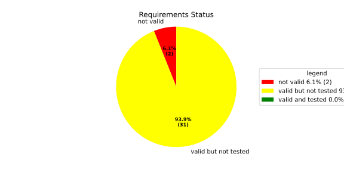
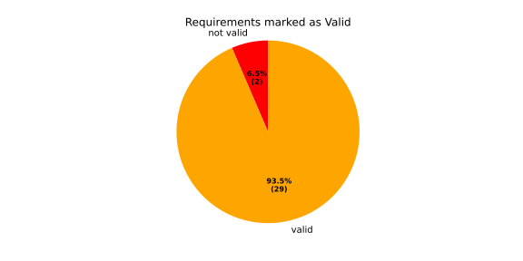
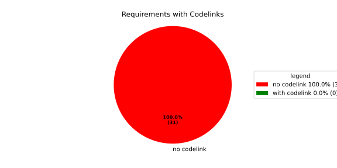
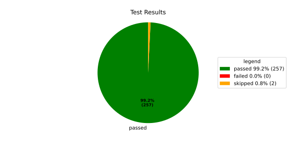
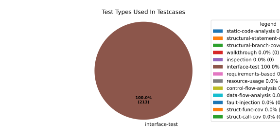
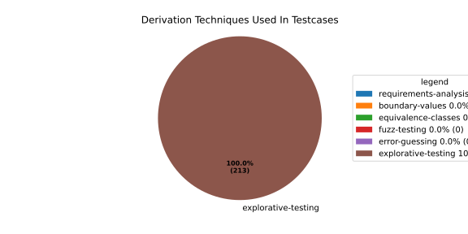

Verification Statistics#
Overview#

In Detail#



Failed Tests
Hint: This table should be empty. Before a PR can be merged all tests have to be successful.
No needs passed the filters
Skipped / Disabled Tests
testcase |
Result |
Fully Verifies |
Partially Verifies |
Test Type |
Derivation Technique |
link |
|---|---|---|---|---|---|---|
ValidateRangeTest/4__RejectsValueAboveMax |
skipped |
interface-test |
explorative-testing |
|||
ValidateRangeTest/4__RejectsValueBelowMin |
skipped |
interface-test |
explorative-testing |
All passed Tests#
testcase |
Result |
Fully Verifies |
Partially Verifies |
Test Type |
Derivation Technique |
link |
|---|---|---|---|---|---|---|
AliveImplTest__DoesNotThrowWhenInterfacePathEnvVarIsSet |
passed |
interface-test |
explorative-testing |
testcase__AliveImplTest__DoesNotThrowWhenInterfacePathEnvVarIsSet_xpewu |
||
AliveImplTest__ReportCheckpointSafeWhenNotConnected |
passed |
interface-test |
explorative-testing |
testcase__AliveImplTest__ReportCheckpointSafeWhenNotConnected_ppvuc |
||
AliveImplTest__ThrowsWhenInterfacePathEnvVarIsNotSet |
passed |
interface-test |
explorative-testing |
testcase__AliveImplTest__ThrowsWhenInterfacePathEnvVarIsNotSet_ekxfw |
||
AliveSupervisionTest__AliveDebouncesThroughFailedBeforeExpired |
passed |
interface-test |
explorative-testing |
testcase__AliveSupervisionTest__AliveDebouncesThroughFailedBeforeExpired_mlnbe |
||
AliveSupervisionTest__AliveReportsEnqueueFailureWhenRingBufferFull |
passed |
interface-test |
explorative-testing |
testcase__AliveSupervisionTest__AliveReportsEnqueueFailureWhenRingBufferFull_byhrd |
||
AliveSupervisionTest__AliveStaysOkWithCorrectHeartbeats |
passed |
interface-test |
explorative-testing |
testcase__AliveSupervisionTest__AliveStaysOkWithCorrectHeartbeats_vekof |
||
AliveSupervisionTest__AliveTransitionsOkToExpiredOnMissingHeartbeat |
passed |
interface-test |
explorative-testing |
testcase__AliveSupervisionTest__AliveTransitionsOkToExpiredOnMissingHeartbeat_jymxo |
||
AliveSupervisionTest__DeactivatesOnProcessCrash |
passed |
interface-test |
explorative-testing |
testcase__AliveSupervisionTest__DeactivatesOnProcessCrash_ypejs |
||
AliveSupervisionTest__DeactivatesOnProcessSigterm |
passed |
interface-test |
explorative-testing |
testcase__AliveSupervisionTest__DeactivatesOnProcessSigterm_hzaal |
||
AliveSupervisionTest__IgnoresIrrelevantProcessStates |
passed |
interface-test |
explorative-testing |
testcase__AliveSupervisionTest__IgnoresIrrelevantProcessStates_aolvb |
||
AliveSupervisionTest__MaxIndicationViolationExpires |
passed |
interface-test |
explorative-testing |
testcase__AliveSupervisionTest__MaxIndicationViolationExpires_whhhi |
||
AliveSupervisionTest__ReactivatesAfterCrash |
passed |
interface-test |
explorative-testing |
|||
ApplicationTypes/ApplicationTypeTest__ConvertsToExpectedValue/Native |
passed |
interface-test |
explorative-testing |
testcase__ApplicationTypes/ApplicationTypeTest__ConvertsToExpectedValue/Native_yxxcz |
||
ApplicationTypes/ApplicationTypeTest__ConvertsToExpectedValue/Reporting |
passed |
interface-test |
explorative-testing |
testcase__ApplicationTypes/ApplicationTypeTest__ConvertsToExpectedValue/Reporting_wcfwr |
||
ApplicationTypes/ApplicationTypeTest__ConvertsToExpectedValue/ReportingAndSupervised |
passed |
interface-test |
explorative-testing |
testcase__ApplicationTypes/ApplicationTypeTest__ConvertsToExpectedValue/ReportingAndSupervised_yxgad |
||
ApplicationTypes/ApplicationTypeTest__ConvertsToExpectedValue/StateManager |
passed |
interface-test |
explorative-testing |
testcase__ApplicationTypes/ApplicationTypeTest__ConvertsToExpectedValue/StateManager_ivuzc |
||
ConverterTest__ConvertAliveSupervisionMissingCycleReturnsError |
passed |
interface-test |
explorative-testing |
testcase__ConverterTest__ConvertAliveSupervisionMissingCycleReturnsError_bifzg |
||
ConverterTest__ConvertAliveSupervisionNullReturnsDefault |
passed |
interface-test |
explorative-testing |
testcase__ConverterTest__ConvertAliveSupervisionNullReturnsDefault_clyua |
||
ConverterTest__ConvertAliveSupervisionValid |
passed |
interface-test |
explorative-testing |
|||
ConverterTest__ConvertApplicationProfileMissingSelfTerminatingReturnsError |
passed |
interface-test |
explorative-testing |
testcase__ConverterTest__ConvertApplicationProfileMissingSelfTerminatingReturnsError_zddjb |
||
ConverterTest__ConvertApplicationProfileMissingTypeReturnsError |
passed |
interface-test |
explorative-testing |
testcase__ConverterTest__ConvertApplicationProfileMissingTypeReturnsError_zrfcs |
||
ConverterTest__ConvertApplicationProfileValid |
passed |
interface-test |
explorative-testing |
testcase__ConverterTest__ConvertApplicationProfileValid_oohxq |
||
ConverterTest__ConvertComponentAliveSupervisionBothIndicationsAbsentReturnsError |
passed |
interface-test |
explorative-testing |
testcase__ConverterTest__ConvertComponentAliveSupervisionBothIndicationsAbsentReturnsError_gvtfi |
||
ConverterTest__ConvertComponentAliveSupervisionMissingReportingCycleReturnsError |
passed |
interface-test |
explorative-testing |
testcase__ConverterTest__ConvertComponentAliveSupervisionMissingReportingCycleReturnsError_ajymy |
||
ConverterTest__ConvertComponentAliveSupervisionMissingToleranceReturnsError |
passed |
interface-test |
explorative-testing |
testcase__ConverterTest__ConvertComponentAliveSupervisionMissingToleranceReturnsError_lgrhj |
||
ConverterTest__ConvertComponentAliveSupervisionNullReturnsDefault |
passed |
interface-test |
explorative-testing |
testcase__ConverterTest__ConvertComponentAliveSupervisionNullReturnsDefault_xhaus |
||
ConverterTest__ConvertComponentAliveSupervisionOnlyMaxIndicationsPresent |
passed |
interface-test |
explorative-testing |
testcase__ConverterTest__ConvertComponentAliveSupervisionOnlyMaxIndicationsPresent_smwht |
||
ConverterTest__ConvertComponentAliveSupervisionOnlyMinIndicationsPresent |
passed |
interface-test |
explorative-testing |
testcase__ConverterTest__ConvertComponentAliveSupervisionOnlyMinIndicationsPresent_ybbrr |
||
ConverterTest__ConvertComponentAliveSupervisionValid |
passed |
interface-test |
explorative-testing |
testcase__ConverterTest__ConvertComponentAliveSupervisionValid_ijedh |
||
ConverterTest__ConvertComponentsValid |
passed |
interface-test |
explorative-testing |
|||
ConverterTest__ConvertComponentsWithInvalidComponentReturnsError |
passed |
interface-test |
explorative-testing |
testcase__ConverterTest__ConvertComponentsWithInvalidComponentReturnsError_wridc |
||
ConverterTest__ConvertComponentValid |
passed |
interface-test |
explorative-testing |
|||
ConverterTest__ConvertDeploymentConfigMissingReadyTimeoutReturnsError |
passed |
interface-test |
explorative-testing |
testcase__ConverterTest__ConvertDeploymentConfigMissingReadyTimeoutReturnsError_ljzfl |
||
ConverterTest__ConvertDeploymentConfigMissingShutdownTimeoutReturnsError |
passed |
interface-test |
explorative-testing |
testcase__ConverterTest__ConvertDeploymentConfigMissingShutdownTimeoutReturnsError_vyqye |
||
ConverterTest__ConvertDeploymentConfigValid |
passed |
interface-test |
explorative-testing |
|||
ConverterTest__ConvertEnvironmentalVariables |
passed |
interface-test |
explorative-testing |
testcase__ConverterTest__ConvertEnvironmentalVariables_fnhgo |
||
ConverterTest__ConvertEnvironmentalVariablesNullReturnsEmpty |
passed |
interface-test |
explorative-testing |
testcase__ConverterTest__ConvertEnvironmentalVariablesNullReturnsEmpty_vglrx |
||
ConverterTest__ConvertFallbackRunTargetMissingTimeoutReturnsError |
passed |
interface-test |
explorative-testing |
testcase__ConverterTest__ConvertFallbackRunTargetMissingTimeoutReturnsError_aevly |
||
ConverterTest__ConvertFallbackRunTargetValid |
passed |
interface-test |
explorative-testing |
testcase__ConverterTest__ConvertFallbackRunTargetValid_nexxj |
||
ConverterTest__ConvertReadyConditionMissingProcessStateReturnsError |
passed |
interface-test |
explorative-testing |
testcase__ConverterTest__ConvertReadyConditionMissingProcessStateReturnsError_ileav |
||
ConverterTest__ConvertReadyConditionValid |
passed |
interface-test |
explorative-testing |
|||
ConverterTest__ConvertRestartActionMissingFieldsReturnsError |
passed |
interface-test |
explorative-testing |
testcase__ConverterTest__ConvertRestartActionMissingFieldsReturnsError_aapjb |
||
ConverterTest__ConvertRestartActionNullReturnsNullopt |
passed |
interface-test |
explorative-testing |
testcase__ConverterTest__ConvertRestartActionNullReturnsNullopt_ifvyd |
||
ConverterTest__ConvertRestartActionValid |
passed |
interface-test |
explorative-testing |
|||
ConverterTest__ConvertRunTargetMissingTransitionTimeoutReturnsError |
passed |
interface-test |
explorative-testing |
testcase__ConverterTest__ConvertRunTargetMissingTransitionTimeoutReturnsError_ynekv |
||
ConverterTest__ConvertRunTargetsValid |
passed |
interface-test |
explorative-testing |
|||
ConverterTest__ConvertRunTargetsWithInvalidRunTargetReturnsError |
passed |
interface-test |
explorative-testing |
testcase__ConverterTest__ConvertRunTargetsWithInvalidRunTargetReturnsError_ldlox |
||
ConverterTest__ConvertRunTargetValid |
passed |
interface-test |
explorative-testing |
|||
ConverterTest__ConvertSandboxMissingGidReturnsError |
passed |
interface-test |
explorative-testing |
testcase__ConverterTest__ConvertSandboxMissingGidReturnsError_veeel |
||
ConverterTest__ConvertSandboxMissingSchedulingPolicyReturnsError |
passed |
interface-test |
explorative-testing |
testcase__ConverterTest__ConvertSandboxMissingSchedulingPolicyReturnsError_pkfts |
||
ConverterTest__ConvertSandboxMissingSchedulingPriorityReturnsError |
passed |
interface-test |
explorative-testing |
testcase__ConverterTest__ConvertSandboxMissingSchedulingPriorityReturnsError_xzdho |
||
ConverterTest__ConvertSandboxMissingUidReturnsError |
passed |
interface-test |
explorative-testing |
testcase__ConverterTest__ConvertSandboxMissingUidReturnsError_ogfku |
||
ConverterTest__ConvertSandboxSupplementaryGidOutOfRangeReturnsError |
passed |
interface-test |
explorative-testing |
testcase__ConverterTest__ConvertSandboxSupplementaryGidOutOfRangeReturnsError_zavpx |
||
ConverterTest__ConvertSandboxUidOutOfRangeReturnsError |
passed |
interface-test |
explorative-testing |
testcase__ConverterTest__ConvertSandboxUidOutOfRangeReturnsError_mcuaf |
||
ConverterTest__ConvertSandboxValid |
passed |
interface-test |
explorative-testing |
|||
ConverterTest__ConvertSwitchRunTargetActionNullReturnsNullopt |
passed |
interface-test |
explorative-testing |
testcase__ConverterTest__ConvertSwitchRunTargetActionNullReturnsNullopt_zmitx |
||
ConverterTest__ConvertSwitchRunTargetActionValid |
passed |
interface-test |
explorative-testing |
testcase__ConverterTest__ConvertSwitchRunTargetActionValid_tdklr |
||
ConverterTest__ConvertWatchdogMissingDeactivateReturnsError |
passed |
interface-test |
explorative-testing |
testcase__ConverterTest__ConvertWatchdogMissingDeactivateReturnsError_gzwjt |
||
ConverterTest__ConvertWatchdogMissingMagicCloseReturnsError |
passed |
interface-test |
explorative-testing |
testcase__ConverterTest__ConvertWatchdogMissingMagicCloseReturnsError_gexxk |
||
ConverterTest__ConvertWatchdogMissingMaxTimeoutReturnsError |
passed |
interface-test |
explorative-testing |
testcase__ConverterTest__ConvertWatchdogMissingMaxTimeoutReturnsError_lffxm |
||
ConverterTest__ConvertWatchdogNullReturnsNullopt |
passed |
interface-test |
explorative-testing |
testcase__ConverterTest__ConvertWatchdogNullReturnsNullopt_irsdk |
||
ConverterTest__ConvertWatchdogValid |
passed |
interface-test |
explorative-testing |
|||
DeadlineFixture__Start_AlreadyRunning |
passed |
interface-test |
explorative-testing |
|||
DeadlineFixture__Start_Succeeds |
passed |
interface-test |
explorative-testing |
|||
DeadlineMonitorBuilderFixture__AddDeadline_Succeeds |
passed |
interface-test |
explorative-testing |
testcase__DeadlineMonitorBuilderFixture__AddDeadline_Succeeds_nagke |
||
DeadlineMonitorBuilderFixture__New_Succeeds |
passed |
interface-test |
explorative-testing |
|||
DeadlineMonitorFixture__GetDeadline_Succeeds |
passed |
interface-test |
explorative-testing |
testcase__DeadlineMonitorFixture__GetDeadline_Succeeds_tmltf |
||
DeadlineMonitorFixture__GetDeadline_Unknown |
passed |
interface-test |
explorative-testing |
|||
EnumConversionTest__ConvertSchedulingPolicyUnsupported |
passed |
interface-test |
explorative-testing |
testcase__EnumConversionTest__ConvertSchedulingPolicyUnsupported_iavqm |
||
EnvironmentTest__AddIncreasesSize |
passed |
interface-test |
explorative-testing |
|||
EnvironmentTest__DefaultConstructedIsEmpty |
passed |
interface-test |
explorative-testing |
|||
EnvironmentTest__EmptyEnvironmentEnvpIsNullTerminated |
passed |
interface-test |
explorative-testing |
testcase__EnvironmentTest__EmptyEnvironmentEnvpIsNullTerminated_wwumw |
||
EnvironmentTest__EnvpReturnsNullTerminatedArray |
passed |
interface-test |
explorative-testing |
testcase__EnvironmentTest__EnvpReturnsNullTerminatedArray_aubkv |
||
EnvironmentTest__EnvpWithMultipleEntries |
passed |
interface-test |
explorative-testing |
|||
EnvironmentTest__MoveAssignmentPreservesEntries |
passed |
interface-test |
explorative-testing |
testcase__EnvironmentTest__MoveAssignmentPreservesEntries_vkydj |
||
EnvironmentTest__MoveConstructorPreservesEntries |
passed |
interface-test |
explorative-testing |
testcase__EnvironmentTest__MoveConstructorPreservesEntries_upclt |
||
EnvironmentTest__RangeBasedForLoopWorks |
passed |
interface-test |
explorative-testing |
|||
EnvironmentTest__ReserveAndAddAvoidReallocation |
passed |
interface-test |
explorative-testing |
testcase__EnvironmentTest__ReserveAndAddAvoidReallocation_lgzmu |
||
EnvironmentTest__SsoLengthStringSurvivesReallocation |
passed |
interface-test |
explorative-testing |
testcase__EnvironmentTest__SsoLengthStringSurvivesReallocation_jfmtl |
||
EnvironmentVariableTest__CStrReturnsKeyEqualsValue |
passed |
interface-test |
explorative-testing |
testcase__EnvironmentVariableTest__CStrReturnsKeyEqualsValue_rkwan |
||
EnvironmentVariableTest__EmptyValue |
passed |
interface-test |
explorative-testing |
|||
EnvironmentVariableTest__KeyAndValueAreAccessible |
passed |
interface-test |
explorative-testing |
testcase__EnvironmentVariableTest__KeyAndValueAreAccessible_kcrth |
||
EnvironmentVariableTest__ValueContainingEquals |
passed |
interface-test |
explorative-testing |
testcase__EnvironmentVariableTest__ValueContainingEquals_apzgz |
||
ExecErrorDomainTest__AllKnownCodesHaveDistinctMessages |
passed |
interface-test |
explorative-testing |
testcase__ExecErrorDomainTest__AllKnownCodesHaveDistinctMessages_qpoka |
||
ExecErrorDomainTest__AllKnownCodesReturnNonEmptyMessage |
passed |
interface-test |
explorative-testing |
testcase__ExecErrorDomainTest__AllKnownCodesReturnNonEmptyMessage_bawzg |
||
ExecErrorDomainTest__UnknownCodeReturnsNonEmptyMessage |
passed |
interface-test |
explorative-testing |
testcase__ExecErrorDomainTest__UnknownCodeReturnsNonEmptyMessage_kkwpr |
||
FlatbufferConfigLoaderTest__CorruptedBufferReturnsInvalidFormat |
passed |
interface-test |
explorative-testing |
testcase__FlatbufferConfigLoaderTest__CorruptedBufferReturnsInvalidFormat_twyac |
||
FlatbufferConfigLoaderTest__LoadAliveSupervision |
passed |
interface-test |
explorative-testing |
testcase__FlatbufferConfigLoaderTest__LoadAliveSupervision_hhuux |
||
FlatbufferConfigLoaderTest__LoadBufferFailsWithGenericErrorReturnsGeneralError |
passed |
interface-test |
explorative-testing |
testcase__FlatbufferConfigLoaderTest__LoadBufferFailsWithGenericErrorReturnsGeneralError_kmatm |
||
FlatbufferConfigLoaderTest__LoadBufferFailsWithNoSuchFileReturnsFileNotFound |
passed |
interface-test |
explorative-testing |
testcase__FlatbufferConfigLoaderTest__LoadBufferFailsWithNoSuchFileReturnsFileNotFound_yzlra |
||
FlatbufferConfigLoaderTest__LoadBufferFailsWithPermissionDeniedReturnsInsufficientPermission |
passed |
interface-test |
explorative-testing |
|||
FlatbufferConfigLoaderTest__LoadComponentAliveSupervision |
passed |
interface-test |
explorative-testing |
testcase__FlatbufferConfigLoaderTest__LoadComponentAliveSupervision_fwfad |
||
FlatbufferConfigLoaderTest__LoadEnvironmentalVariables |
passed |
interface-test |
explorative-testing |
testcase__FlatbufferConfigLoaderTest__LoadEnvironmentalVariables_wsosu |
||
FlatbufferConfigLoaderTest__LoadFallbackRunTarget |
passed |
interface-test |
explorative-testing |
testcase__FlatbufferConfigLoaderTest__LoadFallbackRunTarget_wduqm |
||
FlatbufferConfigLoaderTest__LoadMinimalConfig |
passed |
interface-test |
explorative-testing |
testcase__FlatbufferConfigLoaderTest__LoadMinimalConfig_hdkck |
||
FlatbufferConfigLoaderTest__LoadMultipleComponents |
passed |
interface-test |
explorative-testing |
testcase__FlatbufferConfigLoaderTest__LoadMultipleComponents_abpom |
||
FlatbufferConfigLoaderTest__LoadRestartRecoveryAction |
passed |
interface-test |
explorative-testing |
testcase__FlatbufferConfigLoaderTest__LoadRestartRecoveryAction_wyfqg |
||
FlatbufferConfigLoaderTest__LoadRunTargets |
passed |
interface-test |
explorative-testing |
|||
FlatbufferConfigLoaderTest__LoadSandbox |
passed |
interface-test |
explorative-testing |
|||
FlatbufferConfigLoaderTest__LoadSingleComponent |
passed |
interface-test |
explorative-testing |
testcase__FlatbufferConfigLoaderTest__LoadSingleComponent_yidty |
||
FlatbufferConfigLoaderTest__LoadSwitchRunTargetAction |
passed |
interface-test |
explorative-testing |
testcase__FlatbufferConfigLoaderTest__LoadSwitchRunTargetAction_uchgp |
||
FlatbufferConfigLoaderTest__LoadWatchdog |
passed |
interface-test |
explorative-testing |
|||
FlatbufferConfigLoaderTest__MissingSchemaVersionReturnsInvalidFormat |
passed |
interface-test |
explorative-testing |
testcase__FlatbufferConfigLoaderTest__MissingSchemaVersionReturnsInvalidFormat_qqmfn |
||
FlatbufferConfigLoaderTest__OptionalReadyConditionAbsent |
passed |
interface-test |
explorative-testing |
testcase__FlatbufferConfigLoaderTest__OptionalReadyConditionAbsent_lhddx |
||
FlatbufferConfigLoaderTest__OptionalWatchdogAbsent |
passed |
interface-test |
explorative-testing |
testcase__FlatbufferConfigLoaderTest__OptionalWatchdogAbsent_pkhkp |
||
FlatbufferConfigLoaderTest__WrongSchemaVersionReturnsUnsupportedVersion |
passed |
interface-test |
explorative-testing |
testcase__FlatbufferConfigLoaderTest__WrongSchemaVersionReturnsUnsupportedVersion_zrbjv |
||
HealthMonitor__GetDeadlineMonitor_Available |
passed |
|||||
HealthMonitor__GetDeadlineMonitor_Taken |
passed |
|||||
HealthMonitor__GetDeadlineMonitor_Unknown |
passed |
|||||
HealthMonitor__GetHeartbeatMonitor_Available |
passed |
testcase__HealthMonitor__GetHeartbeatMonitor_Available_aacat |
||||
HealthMonitor__GetHeartbeatMonitor_Taken |
passed |
|||||
HealthMonitor__GetHeartbeatMonitor_Unknown |
passed |
|||||
HealthMonitor__GetLogicMonitor_Available |
passed |
|||||
HealthMonitor__GetLogicMonitor_Taken |
passed |
|||||
HealthMonitor__GetLogicMonitor_Unknown |
passed |
|||||
HealthMonitor__Start_MonitorsNotTaken |
passed |
|||||
HealthMonitor__Start_Succeeds |
passed |
|||||
HealthMonitorBuilderFixture__Build_InvalidCycles |
passed |
interface-test |
explorative-testing |
testcase__HealthMonitorBuilderFixture__Build_InvalidCycles_pdigk |
||
HealthMonitorBuilderFixture__Build_NoMonitors |
passed |
interface-test |
explorative-testing |
testcase__HealthMonitorBuilderFixture__Build_NoMonitors_ktcve |
||
HealthMonitorBuilderFixture__Build_Succeeds |
passed |
interface-test |
explorative-testing |
|||
HealthMonitorBuilderFixture__New_Succeeds |
passed |
interface-test |
explorative-testing |
|||
HealthMonitorTest__Integrated |
passed |
interface-test |
explorative-testing |
|||
HeartbeatMonitor__Heartbeat_Succeeds |
passed |
interface-test |
explorative-testing |
|||
HeartbeatMonitorBuilder__New_Succeeds |
passed |
interface-test |
explorative-testing |
|||
IdentifierHashTest__IdentifierHash_default_created |
passed |
interface-test |
explorative-testing |
testcase__IdentifierHashTest__IdentifierHash_default_created_yhhvi |
||
IdentifierHashTest__IdentifierHash_EqualityOperators |
passed |
interface-test |
explorative-testing |
testcase__IdentifierHashTest__IdentifierHash_EqualityOperators_nnsuj |
||
IdentifierHashTest__IdentifierHash_invalid_hash_no_string_representation |
passed |
interface-test |
explorative-testing |
testcase__IdentifierHashTest__IdentifierHash_invalid_hash_no_string_representation_rxowr |
||
IdentifierHashTest__IdentifierHash_LessThanOperator |
passed |
interface-test |
explorative-testing |
testcase__IdentifierHashTest__IdentifierHash_LessThanOperator_rnbax |
||
IdentifierHashTest__IdentifierHash_no_dangling_pointer_after_source_string_dies |
passed |
interface-test |
explorative-testing |
testcase__IdentifierHashTest__IdentifierHash_no_dangling_pointer_after_source_string_dies_qsjin |
||
IdentifierHashTest__IdentifierHash_with_string_created |
passed |
interface-test |
explorative-testing |
testcase__IdentifierHashTest__IdentifierHash_with_string_created_aygdm |
||
IdentifierHashTest__IdentifierHash_with_string_view_created |
passed |
interface-test |
explorative-testing |
testcase__IdentifierHashTest__IdentifierHash_with_string_view_created_dbpol |
||
LogicMonitorBuilderFixture__AddState_Succeeds |
passed |
interface-test |
explorative-testing |
testcase__LogicMonitorBuilderFixture__AddState_Succeeds_axdxj |
||
LogicMonitorBuilderFixture__New_Succeeds |
passed |
interface-test |
explorative-testing |
|||
LogicMonitorFixture__State_Invalid |
passed |
interface-test |
explorative-testing |
|||
LogicMonitorFixture__State_Succeeds |
passed |
interface-test |
explorative-testing |
|||
LogicMonitorFixture__Transition_Invalid |
passed |
interface-test |
explorative-testing |
|||
LogicMonitorFixture__Transition_Succeeds |
passed |
interface-test |
explorative-testing |
|||
LogicMonitorFixture__Transition_Unknown |
passed |
interface-test |
explorative-testing |
|||
MonitorIfDaemonTest__Active_CheckpointDataForwarded |
passed |
interface-test |
explorative-testing |
testcase__MonitorIfDaemonTest__Active_CheckpointDataForwarded_evumz |
||
MonitorIfDaemonTest__Active_FutureTimestamp_NotForwardedInCurrentCycle |
passed |
interface-test |
explorative-testing |
testcase__MonitorIfDaemonTest__Active_FutureTimestamp_NotForwardedInCurrentCycle_oycau |
||
MonitorIfDaemonTest__Active_FutureTimestampCheckpoint_ConsumedInLaterCycle |
passed |
interface-test |
explorative-testing |
testcase__MonitorIfDaemonTest__Active_FutureTimestampCheckpoint_ConsumedInLaterCycle_veyyy |
||
MonitorIfDaemonTest__Active_MultipleCheckpointsInOneCycle_AllForwarded |
passed |
interface-test |
explorative-testing |
testcase__MonitorIfDaemonTest__Active_MultipleCheckpointsInOneCycle_AllForwarded_gmbms |
||
MonitorIfDaemonTest__Active_NonMatchingCheckpointId_NotForwarded |
passed |
interface-test |
explorative-testing |
testcase__MonitorIfDaemonTest__Active_NonMatchingCheckpointId_NotForwarded_bohck |
||
MonitorIfDaemonTest__Active_OverflowDetected_TransitionsToInactiveOverflow |
passed |
interface-test |
explorative-testing |
testcase__MonitorIfDaemonTest__Active_OverflowDetected_TransitionsToInactiveOverflow_ovitk |
||
MonitorIfDaemonTest__Active_TwoAttachedCheckpoints_RoutedByCheckpointId |
passed |
interface-test |
explorative-testing |
testcase__MonitorIfDaemonTest__Active_TwoAttachedCheckpoints_RoutedByCheckpointId_skqhd |
||
MonitorIfDaemonTest__GetInterfaceName_ReturnsNameGivenAtConstruction |
passed |
interface-test |
explorative-testing |
testcase__MonitorIfDaemonTest__GetInterfaceName_ReturnsNameGivenAtConstruction_iaemz |
||
MonitorIfDaemonTest__InactiveOverflow_NoProcessRestart_DoesNotRepeatNotification |
passed |
interface-test |
explorative-testing |
testcase__MonitorIfDaemonTest__InactiveOverflow_NoProcessRestart_DoesNotRepeatNotification_gdbxg |
||
MonitorIfDaemonTest__InactiveOverflow_ProcessRestartFlag_ClearedAfterNotification |
passed |
interface-test |
explorative-testing |
testcase__MonitorIfDaemonTest__InactiveOverflow_ProcessRestartFlag_ClearedAfterNotification_pqfyy |
||
MonitorIfDaemonTest__InactiveOverflow_ProcessRestarts_PushesOverflowNotificationAgain |
passed |
interface-test |
explorative-testing |
|||
MonitorIfDaemonTest__InitiallyInactive_CheckForNewData_DoesNotNotifyCheckpoint |
passed |
interface-test |
explorative-testing |
testcase__MonitorIfDaemonTest__InitiallyInactive_CheckForNewData_DoesNotNotifyCheckpoint_wjrfl |
||
MonitorIfDaemonTest__ProcessOff_DeactivatesMonitor_NoFurtherDataForwarded |
passed |
interface-test |
explorative-testing |
testcase__MonitorIfDaemonTest__ProcessOff_DeactivatesMonitor_NoFurtherDataForwarded_uialh |
||
MonitorIfDaemonTest__ProcessOffBeforeActivation_RemainsInactive |
passed |
interface-test |
explorative-testing |
testcase__MonitorIfDaemonTest__ProcessOffBeforeActivation_RemainsInactive_kzzyy |
||
MonitorIfDaemonTest__ProcessRunning_ActivatesMonitorOnNextCheckForNewData |
passed |
interface-test |
explorative-testing |
testcase__MonitorIfDaemonTest__ProcessRunning_ActivatesMonitorOnNextCheckForNewData_fkkmk |
||
MonitorIfDaemonTest__ProcessStarting_AlsoActivatesMonitor |
passed |
interface-test |
explorative-testing |
testcase__MonitorIfDaemonTest__ProcessStarting_AlsoActivatesMonitor_xdkbg |
||
MPMCConcurrentQueueTest_Basic__LvaluePushCopiesItem |
passed |
testcase__MPMCConcurrentQueueTest_Basic__LvaluePushCopiesItem_oysfc |
||||
MPMCConcurrentQueueTest_Basic__PopReturnsNulloptOnSemaphoreWaitFailure |
passed |
testcase__MPMCConcurrentQueueTest_Basic__PopReturnsNulloptOnSemaphoreWaitFailure_rgznm |
||||
MPMCConcurrentQueueTest_Basic__PushAndPopPreservesOrder |
passed |
testcase__MPMCConcurrentQueueTest_Basic__PushAndPopPreservesOrder_aijdb |
||||
MPMCConcurrentQueueTest_Basic__PushAndPopSingleItem |
passed |
testcase__MPMCConcurrentQueueTest_Basic__PushAndPopSingleItem_jrxwz |
||||
MPMCConcurrentQueueTest_Basic__RvaluePushWorksWithMoveOnlyType |
passed |
testcase__MPMCConcurrentQueueTest_Basic__RvaluePushWorksWithMoveOnlyType_cxxaj |
||||
MPMCConcurrentQueueTest_Blocking__PopBlocksUntilItemAvailable |
passed |
testcase__MPMCConcurrentQueueTest_Blocking__PopBlocksUntilItemAvailable_ttwcx |
||||
MPMCConcurrentQueueTest_Blocking__PushBlocksWhenFull |
passed |
testcase__MPMCConcurrentQueueTest_Blocking__PushBlocksWhenFull_ecujf |
||||
MPMCConcurrentQueueTest_Blocking__StopUnblocksBlockedConsumer |
passed |
testcase__MPMCConcurrentQueueTest_Blocking__StopUnblocksBlockedConsumer_snzyr |
||||
MPMCConcurrentQueueTest_Blocking__StopUnblocksBlockedProducer |
passed |
testcase__MPMCConcurrentQueueTest_Blocking__StopUnblocksBlockedProducer_inddu |
||||
MPMCConcurrentQueueTest_MPMC__AllItemsDelivered |
passed |
testcase__MPMCConcurrentQueueTest_MPMC__AllItemsDelivered_ztjqe |
||||
MPMCConcurrentQueueTest_Stop__ItemsAreDroppedAfterStop |
passed |
testcase__MPMCConcurrentQueueTest_Stop__ItemsAreDroppedAfterStop_ragzw |
||||
MPMCConcurrentQueueTest_Stop__PopReturnsNulloptWhenStoppedAndEmpty |
passed |
testcase__MPMCConcurrentQueueTest_Stop__PopReturnsNulloptWhenStoppedAndEmpty_cevga |
||||
MPMCConcurrentQueueTest_Stop__PushReturnsFalseAfterStop |
passed |
testcase__MPMCConcurrentQueueTest_Stop__PushReturnsFalseAfterStop_qqnhw |
||||
MPMCConcurrentQueueTest_Timeout__PushWithTimeoutReturnsFalseWhenFull |
passed |
testcase__MPMCConcurrentQueueTest_Timeout__PushWithTimeoutReturnsFalseWhenFull_aeips |
||||
MPMCConcurrentQueueTest_Timeout__PushWithTimeoutSucceedsWhenSlotAvailable |
passed |
testcase__MPMCConcurrentQueueTest_Timeout__PushWithTimeoutSucceedsWhenSlotAvailable_klzpo |
||||
OsHandlerTest__WaitReturnsError_OsHandlerSleepsAndDoesNotCallFindTerminated |
passed |
interface-test |
explorative-testing |
testcase__OsHandlerTest__WaitReturnsError_OsHandlerSleepsAndDoesNotCallFindTerminated_cibtr |
||
OsHandlerTest__WaitReturnsErrorThenProcessId_HandlerRecoversAndInvokesCallback |
passed |
interface-test |
explorative-testing |
testcase__OsHandlerTest__WaitReturnsErrorThenProcessId_HandlerRecoversAndInvokesCallback_nqstd |
||
OsHandlerTest__WaitReturnsProcessId_FindTerminatedIsCalled |
passed |
interface-test |
explorative-testing |
testcase__OsHandlerTest__WaitReturnsProcessId_FindTerminatedIsCalled_chlsq |
||
OsHandlerTest__WaitReturnsProcessIdBeforeRegistration_LaterRegistrationReceivesStoredTermination |
passed |
interface-test |
explorative-testing |
|||
OsHandlerTest__WaitReturnsUnknownPidWhenMapIsFull_OutOfResourcesPathDoesNotNotifyCallbacks |
passed |
interface-test |
explorative-testing |
|||
OsHandlerTest__WaitReturnsZeroPid_OsHandlerSleepsAndDoesNotCallFindTerminated |
passed |
interface-test |
explorative-testing |
testcase__OsHandlerTest__WaitReturnsZeroPid_OsHandlerSleepsAndDoesNotCallFindTerminated_rkttz |
||
ProcessStateClient_UT__ProcessStateClient_ConstructReceiver_Succeeds |
passed |
interface-test |
explorative-testing |
testcase__ProcessStateClient_UT__ProcessStateClient_ConstructReceiver_Succeeds_hodwy |
||
ProcessStateClient_UT__ProcessStateClient_QueueMaxNumberOfProcesses_Succeeds |
passed |
interface-test |
explorative-testing |
testcase__ProcessStateClient_UT__ProcessStateClient_QueueMaxNumberOfProcesses_Succeeds_qohom |
||
ProcessStateClient_UT__ProcessStateClient_QueueOneProcess_Succeeds |
passed |
interface-test |
explorative-testing |
testcase__ProcessStateClient_UT__ProcessStateClient_QueueOneProcess_Succeeds_tmzfz |
||
ProcessStateClient_UT__ProcessStateClient_QueueOneProcessTooMany_Fails |
passed |
interface-test |
explorative-testing |
testcase__ProcessStateClient_UT__ProcessStateClient_QueueOneProcessTooMany_Fails_sspoj |
||
ProcessStates/ProcessStateTest__ConvertsToExpectedValue/Running |
passed |
interface-test |
explorative-testing |
testcase__ProcessStates/ProcessStateTest__ConvertsToExpectedValue/Running_hinlr |
||
ProcessStates/ProcessStateTest__ConvertsToExpectedValue/Terminated |
passed |
interface-test |
explorative-testing |
testcase__ProcessStates/ProcessStateTest__ConvertsToExpectedValue/Terminated_zrytn |
||
RecoveryClientTest__FIFOOrdering |
passed |
interface-test |
explorative-testing |
|||
RecoveryClientTest__GetNextRequest |
passed |
interface-test |
explorative-testing |
|||
RecoveryClientTest__GetNextRequestEmpty |
passed |
interface-test |
explorative-testing |
|||
RecoveryClientTest__RingBufferFull |
passed |
interface-test |
explorative-testing |
|||
RecoveryClientTest__SendSingleRequest |
passed |
interface-test |
explorative-testing |
|||
RunTest__AsPosixProcessCreatesAndDestroysLifeCycleManager |
passed |
testcase__RunTest__AsPosixProcessCreatesAndDestroysLifeCycleManager_sooex |
||||
RunTest__AsPosixProcessForwardsConstructorArgsToApplication |
passed |
testcase__RunTest__AsPosixProcessForwardsConstructorArgsToApplication_dmeur |
||||
RunTest__AsPosixProcessForwardsNonZeroExitCode |
passed |
testcase__RunTest__AsPosixProcessForwardsNonZeroExitCode_lldqd |
||||
RunTest__AsPosixProcessPassesCorrectApplicationTypeToRun |
passed |
testcase__RunTest__AsPosixProcessPassesCorrectApplicationTypeToRun_ajqwz |
||||
RunTest__AsPosixProcessReturnsZeroExitCode |
passed |
|||||
RunTest__RunApplicationFreeFunctionDelegatesToAsPosixProcess |
passed |
testcase__RunTest__RunApplicationFreeFunctionDelegatesToAsPosixProcess_ccing |
||||
RunTest__RunConstructorPassesArgcArgvToApplicationContext |
passed |
testcase__RunTest__RunConstructorPassesArgcArgvToApplicationContext_agerd |
||||
SafeProcessMapTest__ConcurrentFindAndInsertFromMultipleThreads |
passed |
interface-test |
explorative-testing |
testcase__SafeProcessMapTest__ConcurrentFindAndInsertFromMultipleThreads_kzfyg |
||
SafeProcessMapTest__ConcurrentInsertAndFindFromMultipleThreads |
passed |
interface-test |
explorative-testing |
testcase__SafeProcessMapTest__ConcurrentInsertAndFindFromMultipleThreads_hnyqj |
||
SafeProcessMapTest__ConstructWithZeroCapacity |
passed |
interface-test |
explorative-testing |
testcase__SafeProcessMapTest__ConstructWithZeroCapacity_gjmqg |
||
SafeProcessMapTest__FindTerminatedInsertsEntryWhenPidNotPresent |
passed |
interface-test |
explorative-testing |
testcase__SafeProcessMapTest__FindTerminatedInsertsEntryWhenPidNotPresent_ixtlt |
||
SafeProcessMapTest__FindTerminatedMatchesExistingInsertAndCallsCallback |
passed |
interface-test |
explorative-testing |
testcase__SafeProcessMapTest__FindTerminatedMatchesExistingInsertAndCallsCallback_ehuzb |
||
SafeProcessMapTest__FindTerminatedSamePidTwiceYieldsUntilInsertResolves |
passed |
interface-test |
explorative-testing |
testcase__SafeProcessMapTest__FindTerminatedSamePidTwiceYieldsUntilInsertResolves_hsekx |
||
SafeProcessMapTest__FindTerminatedWithNegativePidReturnsInvalid |
passed |
interface-test |
explorative-testing |
testcase__SafeProcessMapTest__FindTerminatedWithNegativePidReturnsInvalid_dewoh |
||
SafeProcessMapTest__FindTerminatedWorksAtMaxTreeDepth |
passed |
interface-test |
explorative-testing |
testcase__SafeProcessMapTest__FindTerminatedWorksAtMaxTreeDepth_adtzi |
||
SafeProcessMapTest__InsertBeyondCapacityReturnsOutOfMemory |
passed |
interface-test |
explorative-testing |
testcase__SafeProcessMapTest__InsertBeyondCapacityReturnsOutOfMemory_qjnie |
||
SafeProcessMapTest__InsertIntoEmptyTreeReturnsZero |
passed |
interface-test |
explorative-testing |
testcase__SafeProcessMapTest__InsertIntoEmptyTreeReturnsZero_zfbaq |
||
SafeProcessMapTest__InsertMatchesExistingFindTerminatedEntry |
passed |
interface-test |
explorative-testing |
testcase__SafeProcessMapTest__InsertMatchesExistingFindTerminatedEntry_fuwrp |
||
SafeProcessMapTest__InsertMultipleNodesThenFindTerminatedRemovesAll |
passed |
interface-test |
explorative-testing |
testcase__SafeProcessMapTest__InsertMultipleNodesThenFindTerminatedRemovesAll_fvowh |
||
SafeProcessMapTest__InsertSamePidTwiceYieldsUntilFindTerminatedResolves |
passed |
interface-test |
explorative-testing |
testcase__SafeProcessMapTest__InsertSamePidTwiceYieldsUntilFindTerminatedResolves_wzwyb |
||
SchedulingPolicies/SchedulingPolicyTest__ConvertsToExpectedPosixValue/SCHED_FIFO |
passed |
interface-test |
explorative-testing |
testcase__SchedulingPolicies/SchedulingPolicyTest__ConvertsToExpectedPosixValue/SCHED_FIFO_soddq |
||
SchedulingPolicies/SchedulingPolicyTest__ConvertsToExpectedPosixValue/SCHED_OTHER |
passed |
interface-test |
explorative-testing |
testcase__SchedulingPolicies/SchedulingPolicyTest__ConvertsToExpectedPosixValue/SCHED_OTHER_oigmk |
||
SchedulingPolicies/SchedulingPolicyTest__ConvertsToExpectedPosixValue/SCHED_RR |
passed |
interface-test |
explorative-testing |
testcase__SchedulingPolicies/SchedulingPolicyTest__ConvertsToExpectedPosixValue/SCHED_RR_pcjci |
||
score/health_monitor/src/rust/test-510566969/tests |
passed |
testcase__score/health_monitor/src/rust/test-510566969/tests_kjjlw |
||||
score/health_monitor/src/rust/test-827801879/loom_tests |
passed |
testcase__score/health_monitor/src/rust/test-827801879/loom_tests_cpmix |
||||
SecondsToMsTest__ConvertsPositiveValue |
passed |
interface-test |
explorative-testing |
|||
SecondsToMsTest__ConvertsZero |
passed |
interface-test |
explorative-testing |
|||
SecondsToMsTest__RejectsNegativeValue |
passed |
interface-test |
explorative-testing |
|||
SecondsToMsTest__RejectsOverflow |
passed |
interface-test |
explorative-testing |
|||
SecondsToMsTest__RejectsSubMillisecond |
passed |
interface-test |
explorative-testing |
|||
StringHelperTest__ConvertGidVectorReturnsEmptyWhenNull |
passed |
interface-test |
explorative-testing |
testcase__StringHelperTest__ConvertGidVectorReturnsEmptyWhenNull_jmcsr |
||
StringHelperTest__ConvertStringVectorReturnsEmptyWhenNull |
passed |
interface-test |
explorative-testing |
testcase__StringHelperTest__ConvertStringVectorReturnsEmptyWhenNull_zsuvv |
||
StringHelperTest__SafeStringReturnsEmptyWhenNull |
passed |
interface-test |
explorative-testing |
testcase__StringHelperTest__SafeStringReturnsEmptyWhenNull_crelr |
||
StringHelperTest__SafeStringReturnsValueWhenNotNull |
passed |
interface-test |
explorative-testing |
testcase__StringHelperTest__SafeStringReturnsValueWhenNotNull_anbko |
||
test_complex_monitoring |
passed |
|||||
test_crash_on_startup |
passed |
|||||
test_incorrect_config_non_reporting |
passed |
|||||
test_process_crash_monitoring |
passed |
|||||
test_process_fd_leak |
passed |
|||||
test_process_launch_args |
passed |
|||||
test_process_wrong_binary_failure |
passed |
|||||
test_recovery_action_complex_rep_failure |
passed |
|||||
test_recovery_action_simple_rep_failure |
passed |
|||||
test_smoke |
passed |
|||||
test_switch_run_target |
passed |
|||||
TimeRangeFixture__MinMax |
passed |
interface-test |
explorative-testing |
|||
TimeRangeFixture__New_InvalidOrder |
passed |
interface-test |
explorative-testing |
|||
TimeRangeFixture__New_Succeeds |
passed |
interface-test |
explorative-testing |
|||
ValidateRangeTest/0__AcceptsMaxBoundary |
passed |
interface-test |
explorative-testing |
|||
ValidateRangeTest/0__AcceptsMinBoundary |
passed |
interface-test |
explorative-testing |
|||
ValidateRangeTest/0__AcceptsZero |
passed |
interface-test |
explorative-testing |
|||
ValidateRangeTest/0__RejectsValueAboveMax |
passed |
interface-test |
explorative-testing |
|||
ValidateRangeTest/0__RejectsValueBelowMin |
passed |
interface-test |
explorative-testing |
|||
ValidateRangeTest/1__AcceptsMaxBoundary |
passed |
interface-test |
explorative-testing |
|||
ValidateRangeTest/1__AcceptsMinBoundary |
passed |
interface-test |
explorative-testing |
|||
ValidateRangeTest/1__AcceptsZero |
passed |
interface-test |
explorative-testing |
|||
ValidateRangeTest/1__RejectsValueAboveMax |
passed |
interface-test |
explorative-testing |
|||
ValidateRangeTest/1__RejectsValueBelowMin |
passed |
interface-test |
explorative-testing |
|||
ValidateRangeTest/2__AcceptsMaxBoundary |
passed |
interface-test |
explorative-testing |
|||
ValidateRangeTest/2__AcceptsMinBoundary |
passed |
interface-test |
explorative-testing |
|||
ValidateRangeTest/2__AcceptsZero |
passed |
interface-test |
explorative-testing |
|||
ValidateRangeTest/2__RejectsValueAboveMax |
passed |
interface-test |
explorative-testing |
|||
ValidateRangeTest/2__RejectsValueBelowMin |
passed |
interface-test |
explorative-testing |
|||
ValidateRangeTest/3__AcceptsMaxBoundary |
passed |
interface-test |
explorative-testing |
|||
ValidateRangeTest/3__AcceptsMinBoundary |
passed |
interface-test |
explorative-testing |
|||
ValidateRangeTest/3__AcceptsZero |
passed |
interface-test |
explorative-testing |
|||
ValidateRangeTest/3__RejectsValueAboveMax |
passed |
interface-test |
explorative-testing |
|||
ValidateRangeTest/3__RejectsValueBelowMin |
passed |
interface-test |
explorative-testing |
|||
ValidateRangeTest/4__AcceptsMaxBoundary |
passed |
interface-test |
explorative-testing |
|||
ValidateRangeTest/4__AcceptsMinBoundary |
passed |
interface-test |
explorative-testing |
|||
ValidateRangeTest/4__AcceptsZero |
passed |
interface-test |
explorative-testing |
Details About Testcases#


Test Log Files#
tests-report/tests/integration/process_simple_rep_failure/process_simple_rep_failure/test.log
exec ${PAGER:-/usr/bin/less} "$0" || exit 1
Executing tests from //tests/integration/process_simple_rep_failure:process_simple_rep_failure
-----------------------------------------------------------------------------
============================= test session starts ==============================
platform linux -- Python 3.12.12, pytest-9.0.3, pluggy-1.5.0
rootdir: /home/runner/.bazel/sandbox/processwrapper-sandbox/1325/execroot/_main/bazel-out/k8-fastbuild/bin/tests/integration/process_simple_rep_failure/process_simple_rep_failure.runfiles/score_itf+
configfile: pytest.ini
collected 1 item
../score_itf+::test_recovery_action_simple_rep_failure
-------------------------------- live log setup --------------------------------
[2026-07-10 11:06:54.357] [INFO] [score.itf.plugins.docker] Executing custom image bootstrap command: tests/utils/environments/x86_64-linux/x86_64-linux.sh
[2026-07-10 11:06:54.493] [DEBUG] [docker.utils.config] Trying paths: ['/home/runner/.docker/config.json', '/home/runner/.dockercfg']
[2026-07-10 11:06:54.493] [DEBUG] [docker.utils.config] Found file at path: /home/runner/.docker/config.json
[2026-07-10 11:06:54.493] [DEBUG] [docker.auth] Found 'auths' section
[2026-07-10 11:06:54.493] [DEBUG] [docker.auth] Found entry (registry='https://index.docker.io/v1/', username='githubactions')
[2026-07-10 11:06:54.503] [DEBUG] [urllib3.connectionpool] http://localhost:None "GET /version HTTP/1.1" 200 823
[2026-07-10 11:06:54.542] [DEBUG] [urllib3.connectionpool] http://localhost:None "POST /v1.48/containers/create HTTP/1.1" 201 88
[2026-07-10 11:06:54.544] [DEBUG] [urllib3.connectionpool] http://localhost:None "GET /v1.48/containers/7caac76013270da235ab92c12f0401a5350dcaa284ef74e7b4ccdbdb3f87eae3/json HTTP/1.1" 200 None
[2026-07-10 11:06:54.677] [DEBUG] [urllib3.connectionpool] http://localhost:None "POST /v1.48/containers/7caac76013270da235ab92c12f0401a5350dcaa284ef74e7b4ccdbdb3f87eae3/start HTTP/1.1" 204 0
[2026-07-10 11:06:54.677] [DEBUG] [docker.utils.config] Trying paths: ['/home/runner/.docker/config.json', '/home/runner/.dockercfg']
[2026-07-10 11:06:54.677] [DEBUG] [docker.utils.config] Found file at path: /home/runner/.docker/config.json
[2026-07-10 11:06:54.678] [DEBUG] [docker.auth] Found 'auths' section
[2026-07-10 11:06:54.678] [DEBUG] [docker.auth] Found entry (registry='https://index.docker.io/v1/', username='githubactions')
[2026-07-10 11:06:54.686] [DEBUG] [urllib3.connectionpool] http://localhost:None "GET /version HTTP/1.1" 200 823
[2026-07-10 11:06:54.874] [INFO] [tests.utils.testing_utils.setup_test] Test case setup finished
-------------------------------- live log call ---------------------------------
[2026-07-10 11:06:54.995] [INFO] [launch_manager] 2026/07/10 11:06:54.1614994 4653903 000 ECU1 LM LM log debug verbose 1 Launch Manager Started !!!!
[2026-07-10 11:06:55.002] [INFO] [launch_manager] 2026/07/10 11:06:54.1614995 4653905 000 ECU1 LM LM log debug verbose 1 Loading LCM Configurations...
[2026-07-10 11:06:55.002] [INFO] [launch_manager] 2026/07/10 11:06:54.1614995 4653905 000 ECU1 LM LM log debug verbose 1 ECUCFG_ENV_VAR_ROOTFOLDER set successfully
[2026-07-10 11:06:55.002] [INFO] [launch_manager] 2026/07/10 11:06:54.1614995 4653906 000 ECU1 LM LM log debug verbose 5 FlatBufferParser::getModeGroupPgName: MainPG ( IdentifierHash: 18079021346025578134 )
[2026-07-10 11:06:55.002] [INFO] [launch_manager] 2026/07/10 11:06:54.1614995 4653906 000 ECU1 LM LM log debug verbose 5 FlatBufferParser::getModeGroupPgStateName: MainPG/Startup ( IdentifierHash: 10504605499600661529 )
[2026-07-10 11:06:55.002] [INFO] [launch_manager] 2026/07/10 11:06:54.1614995 4653913 000 ECU1 LM LM log debug verbose 5 FlatBufferParser::getModeGroupPgStateName: MainPG/run_target_app_does_report_krunning_in_time ( IdentifierHash: 11934981641920773349 )
[2026-07-10 11:06:55.002] [INFO] [launch_manager] 2026/07/10 11:06:54.1614996 4653914 000 ECU1 LM LM log debug verbose 5 FlatBufferParser::getModeGroupPgStateName: MainPG/run_target_app_does_not_report_krunning_in_time ( IdentifierHash: 7672161913816744053 )
[2026-07-10 11:06:55.003] [INFO] [launch_manager] 2026/07/10 11:06:54.1614996 4653914 000 ECU1 LM LM log debug verbose 5 FlatBufferParser::getModeGroupPgStateName: MainPG/Off ( IdentifierHash: 15281793077830264047 )
[2026-07-10 11:06:55.003] [INFO] [launch_manager] 2026/07/10 11:06:54.1614996 4653914 000 ECU1 LM LM log debug verbose 5 FlatBufferParser::getModeGroupPgStateName: MainPG/fallback_run_target ( IdentifierHash: 4059409696722237352 )
[2026-07-10 11:06:55.003] [INFO] [launch_manager] 2026/07/10 11:06:54.1614996 4653915 000 ECU1 LM LM log debug verbose 4 parseProcessConfigurations: Process index: 0 executable_path_: /tmp/tests/process_simple_rep_failure/control_client_mock
[2026-07-10 11:06:55.003] [INFO] [launch_manager] 2026/07/10 11:06:54.1614996 4653915 000 ECU1 LM LM log debug verbose 3 Process control_client_mock is Reporting execution state
[2026-07-10 11:06:55.003] [INFO] [launch_manager] 2026/07/10 11:06:54.1614996 4653915 000 ECU1 LM LM log debug verbose 1 Process is STATE_MANAGEMENT function Cluster Affiliation
[2026-07-10 11:06:55.003] [INFO] [launch_manager] 2026/07/10 11:06:54.1614996 4653916 000 ECU1 LM LM log debug verbose 3 Process control_client_mock is Self terminating
[2026-07-10 11:06:55.003] [INFO] [launch_manager] 2026/07/10 11:06:54.1614996 4653916 000 ECU1 LM LM log debug verbose 4 ParseProcessProcessGroup: id:::pg_name_: MainPG , pg_state_name_: MainPG/Startup
[2026-07-10 11:06:55.003] [INFO] [launch_manager] 2026/07/10 11:06:54.1614996 4653916 000 ECU1 LM LM log debug verbose 4 ParseProcessProcessGroup: id:::pg_name_: MainPG , pg_state_name_: MainPG/run_target_app_does_report_krunning_in_time
[2026-07-10 11:06:55.003] [INFO] [launch_manager] 2026/07/10 11:06:54.1614996 4653917 000 ECU1 LM LM log debug verbose 4 ParseProcessProcessGroup: id:::pg_name_: MainPG , pg_state_name_: MainPG/run_target_app_does_not_report_krunning_in_time
[2026-07-10 11:06:55.003] [INFO] [launch_manager] 2026/07/10 11:06:54.1614996 4653917 000 ECU1 LM LM log debug verbose 4 ParseProcessProcessGroup: id:::pg_name_: MainPG , pg_state_name_: MainPG/fallback_run_target
[2026-07-10 11:06:55.003] [INFO] [launch_manager] 2026/07/10 11:06:54.1614996 4653917 000 ECU1 LM LM log debug verbose 4 parseProcessConfigurations: Process index: 1 executable_path_: /tmp/tests/process_simple_rep_failure/process_simple_reporting
[2026-07-10 11:06:55.003] [INFO] [launch_manager] 2026/07/10 11:06:54.1614996 4653917 000 ECU1 LM LM log debug verbose 3 Process component_does_report_krunning_in_time is Reporting execution state
[2026-07-10 11:06:55.004] [INFO] [launch_manager] 2026/07/10 11:06:54.1614996 4653917 000 ECU1 LM LM log debug verbose 1 Process is NOT associated with any function Cluster Affiliation
[2026-07-10 11:06:55.004] [INFO] [launch_manager] 2026/07/10 11:06:54.1614996 4653917 000 ECU1 LM LM log debug verbose 3 Process component_does_report_krunning_in_time is Self terminating
[2026-07-10 11:06:55.004] [INFO] [launch_manager] 2026/07/10 11:06:54.1614996 4653918 000 ECU1 LM LM log debug verbose 4 ParseProcessProcessGroup: id:::pg_name_: MainPG , pg_state_name_: MainPG/run_target_app_does_report_krunning_in_time
[2026-07-10 11:06:55.004] [INFO] [launch_manager] 2026/07/10 11:06:54.1614996 4653918 000 ECU1 LM LM log debug verbose 4 parseProcessConfigurations: Process index: 2 executable_path_: /tmp/tests/process_simple_rep_failure/process_simple_reporting
[2026-07-10 11:06:55.004] [INFO] [launch_manager] 2026/07/10 11:06:54.1614996 4653918 000 ECU1 LM LM log debug verbose 3 Process component_does_not_report_krunning_in_time is Reporting execution state
[2026-07-10 11:06:55.005] [INFO] [launch_manager] 2026/07/10 11:06:54.1614996 4653918 000 ECU1 LM LM log debug verbose 1 Process is NOT associated with any function Cluster Affiliation
[2026-07-10 11:06:55.006] [INFO] [launch_manager] 2026/07/10 11:06:54.1614996 4653918 000 ECU1 LM LM log debug verbose 3 Process component_does_not_report_krunning_in_time is Self terminating
[2026-07-10 11:06:55.006] [INFO] [launch_manager] 2026/07/10 11:06:54.1614996 4653919 000 ECU1 LM LM log debug verbose 4 ParseProcessProcessGroup: id:::pg_name_: MainPG , pg_state_name_: MainPG/run_target_app_does_not_report_krunning_in_time
[2026-07-10 11:06:55.006] [INFO] [launch_manager] 2026/07/10 11:06:54.1614996 4653919 000 ECU1 LM LM log debug verbose 4 parseProcessConfigurations: Process index: 3 executable_path_: /tmp/tests/process_simple_rep_failure/verification_process
[2026-07-10 11:06:55.006] [INFO] [launch_manager] 2026/07/10 11:06:54.1614996 4653919 000 ECU1 LM LM log debug verbose 3 Process verification_component is NOT Reporting execution state
[2026-07-10 11:06:55.006] [INFO] [launch_manager] 2026/07/10 11:06:54.1614996 4653919 000 ECU1 LM LM log debug verbose 1 Process is NOT associated with any function Cluster Affiliation
[2026-07-10 11:06:55.006] [INFO] [launch_manager] 2026/07/10 11:06:54.1614996 4653919 000 ECU1 LM LM log debug verbose 3 Process verification_component is Self terminating
[2026-07-10 11:06:55.007] [INFO] [launch_manager] 2026/07/10 11:06:54.1614996 4653919 000 ECU1 LM LM log debug verbose 4 ParseProcessProcessGroup: id:::pg_name_: MainPG , pg_state_name_: MainPG/fallback_run_target
[2026-07-10 11:06:55.007] [INFO] [launch_manager] 2026/07/10 11:06:54.1614996 4653920 000 ECU1 LM LM log debug verbose 3 Loading SWCL Nr. 0 Succeeded
[2026-07-10 11:06:55.007] [INFO] [launch_manager] 2026/07/10 11:06:54.1614996 4653920 000 ECU1 LM LM log debug verbose 2 1 process group(s)
[2026-07-10 11:06:55.007] [INFO] [launch_manager] 2026/07/10 11:06:54.1614996 4653920 000 ECU1 LM LM log debug verbose 3 Creating graph with 4 nodes
[2026-07-10 11:06:55.007] [INFO] [launch_manager] 2026/07/10 11:06:54.1614996 4653920 000 ECU1 LM LM log debug verbose 1 Process groups initialized successfully
[2026-07-10 11:06:55.007] [INFO] [launch_manager] 2026/07/10 11:06:54.1614996 4653921 000 ECU1 LM LM log debug verbose 1 Process Group initialization done
[2026-07-10 11:06:55.007] [INFO] [launch_manager] 2026/07/10 11:06:54.1614996 4653921 000 ECU1 LM LM log debug verbose 3 Creating Safe Process Map with 4 entries
[2026-07-10 11:06:55.007] [INFO] [launch_manager] 2026/07/10 11:06:54.1614996 4653921 000 ECU1 LM LM log debug verbose 2 Creating job queue with capacity 1024
[2026-07-10 11:06:55.007] [INFO] [launch_manager] 2026/07/10 11:06:54.1614996 4653921 000 ECU1 LM LM log debug verbose 1 Creating worker threads...
[2026-07-10 11:06:55.007] [INFO] [launch_manager] 2026/07/10 11:06:54.1614997 4653931 000 ECU1 LM LM log debug verbose 7 Process group index 0 (with name MainPG ) has 4 processes
[2026-07-10 11:06:55.009] [INFO] [launch_manager] 2026/07/10 11:06:54.1614997 4653933 000 ECU1 LM LM log debug verbose 2 Creating process node with id: 0
[2026-07-10 11:06:55.009] [INFO] [launch_manager] 2026/07/10 11:06:54.1614998 4653934 000 ECU1 LM LM log debug verbose 5 Process 0 has 0 start dependencies
[2026-07-10 11:06:55.009] [INFO] [launch_manager] 2026/07/10 11:06:54.1614998 4653934 000 ECU1 LM LM log debug verbose 2 Creating process node with id: 1
[2026-07-10 11:06:55.009] [INFO] [launch_manager] 2026/07/10 11:06:54.1614998 4653934 000 ECU1 LM LM log debug verbose 5 Process 1 has 0 start dependencies
[2026-07-10 11:06:55.009] [INFO] [launch_manager] 2026/07/10 11:06:54.1614998 4653935 000 ECU1 LM LM log debug verbose 2 Creating process node with id: 2
[2026-07-10 11:06:55.011] [INFO] [launch_manager] 2026/07/10 11:06:54.1614998 4653935 000 ECU1 LM LM log debug verbose 5 Process 2 has 0 start dependencies
[2026-07-10 11:06:55.011] [INFO] [launch_manager] 2026/07/10 11:06:54.1614998 4653936 000 ECU1 LM LM log debug verbose 2 Creating process node with id: 3
[2026-07-10 11:06:55.011] [INFO] [launch_manager] 2026/07/10 11:06:54.1614998 4653936 000 ECU1 LM LM log debug verbose 5 Process 3 has 0 start dependencies
[2026-07-10 11:06:55.011] [INFO] [launch_manager] 2026/07/10 11:06:54.1614998 4653937 000 ECU1 LM LM log debug verbose 3
[2026-07-10 11:06:55.011] [INFO] [launch_manager] Created 4 process nodes
[2026-07-10 11:06:55.011] [INFO] [launch_manager] 2026/07/10 11:06:54.1614998 4653938 000 ECU1 LM LM log debug verbose 2
[2026-07-10 11:06:55.012] [INFO] [launch_manager] Creating successor lists for process group MainPG
[2026-07-10 11:06:55.012] [INFO] [launch_manager] 2026/07/10 11:06:54.1614998 4653938 000 ECU1 LM LM log debug verbose 1
[2026-07-10 11:06:55.012] [INFO] [launch_manager] Graphs initialized
[2026-07-10 11:06:55.012] [INFO] [launch_manager] 2026/07/10 11:06:54.1614998 4653941 000 ECU1 LM Fcty log info verbose 2
[2026-07-10 11:06:55.012] [INFO] [launch_manager] Factory for FlatCfg MachineConfig: Loading of HM Machine Configuration succeeded.
[2026-07-10 11:06:55.012] [INFO] [launch_manager] 2026/07/10 11:06:54.1614998 4653942 000 ECU1 LM Fcty log debug verbose 3
[2026-07-10 11:06:55.012] [INFO] [launch_manager] Factory for FlatCfg MachineConfig: Alive Supervision buffer size: 100
[2026-07-10 11:06:55.012] [INFO] [launch_manager] 2026/07/10 11:06:54.1614999 4653943 000 ECU1 LM Fcty log debug verbose 3
[2026-07-10 11:06:55.012] [INFO] [launch_manager] Factory for FlatCfg MachineConfig: Monitor buffer size: 512
[2026-07-10 11:06:55.012] [INFO] [launch_manager] 2026/07/10 11:06:54.1614999 4653944 000 ECU1 LM Fcty log debug verbose 4
[2026-07-10 11:06:55.012] [INFO] [launch_manager] Factory for FlatCfg MachineConfig: Periodicity: 50000000 ns
[2026-07-10 11:06:55.012] [INFO] [launch_manager] 2026/07/10 11:06:54.1614999 4653945 000 ECU1 LM Fcty log debug verbose 3
[2026-07-10 11:06:55.013] [INFO] [launch_manager] Factory for FlatCfg MachineConfig: Configured watchdogs: 0
[2026-07-10 11:06:55.013] [INFO] [launch_manager] 2026/07/10 11:06:54.1614999 4653945 000 ECU1 LM Fcty log warn verbose 2
[2026-07-10 11:06:55.013] [INFO] [launch_manager] Factory for FlatCfg MachineConfig: No watchdog configured
[2026-07-10 11:06:55.013] [INFO] [launch_manager] 2026/07/10 11:06:54.1614999 4653947 000 ECU1 LM Fcty log debug verbose 2
[2026-07-10 11:06:55.013] [INFO] [launch_manager] Software Cluster Handler starts constructing workers: MainCluster
[2026-07-10 11:06:55.013] [INFO] [launch_manager] 2026/07/10 11:06:54.1614999 4653947 000 ECU1 LM Fcty log debug verbose 3
[2026-07-10 11:06:55.014] [INFO] [launch_manager] Factory for FlatCfg AR24-11: Successfully created Process States: control_client_mock
[2026-07-10 11:06:55.014] [INFO] [launch_manager] 2026/07/10 11:06:54.1614999 4653952 000 ECU1 LM Fcty log debug verbose 3 Factory for FlatCfg AR24-11: Number of constructed Process States: 1
[2026-07-10 11:06:55.014] [INFO] [launch_manager] 2026/07/10 11:06:54.1614999 4653953 000 ECU1 LM Fcty log debug verbose 3 Factory for FlatCfg AR24-11: Successfully created Alive interface IPC with path: lifecycle_health_control_client_mock
[2026-07-10 11:06:55.014] [INFO] [launch_manager] 2026/07/10 11:06:54.1614999 4653953 000 ECU1 LM Fcty log debug verbose 3 Factory for FlatCfg AR24-11: Number of constructed Alive interface IPCs: 1
[2026-07-10 11:06:55.014] [INFO] [launch_manager] 2026/07/10 11:06:55.1615005 4654007 000 ECU1 LM Fcty log debug verbose 3
[2026-07-10 11:06:55.014] [INFO] [launch_manager] Factory for FlatCfg AR24-11: Successfully created Alive Interface: /lifecycle_health_control_client_mock
[2026-07-10 11:06:55.014] [INFO] [launch_manager] 2026/07/10 11:06:55.1615005 4654009 000 ECU1 LM Fcty log debug verbose 3
[2026-07-10 11:06:55.015] [INFO] [launch_manager] Factory for FlatCfg AR24-11: Number of constructed Alive interfaces: 1
[2026-07-10 11:06:55.015] [INFO] [launch_manager] 2026/07/10 11:06:55.1615005 4654011 000 ECU1 LM Fcty log debug verbose 3
[2026-07-10 11:06:55.015] [INFO] [launch_manager] Factory for FlatCfg AR24-11: Successfully created supervision checkpoint: control_client_mock_checkpoint
[2026-07-10 11:06:55.015] [INFO] [launch_manager] 2026/07/10 11:06:55.1615005 4654012 000 ECU1 LM Fcty log debug verbose 3
[2026-07-10 11:06:55.015] [INFO] [launch_manager] Factory for FlatCfg AR24-11: Number of constructed supervision checkpoints: 1
[2026-07-10 11:06:55.015] [INFO] [launch_manager] 2026/07/10 11:06:55.1615005 4654013 000 ECU1 LM Fcty log debug verbose 3
[2026-07-10 11:06:55.015] [INFO] [launch_manager] Factory for FlatCfg AR24-11: Successfully created alive supervision worker object: control_client_mock_alive_supervision
[2026-07-10 11:06:55.016] [INFO] [launch_manager] 2026/07/10 11:06:55.1615006 4654014 000 ECU1 LM Fcty log debug verbose 3
[2026-07-10 11:06:55.016] [INFO] [launch_manager] Factory for FlatCfg AR24-11: Number of constructed alive supervisions: 1
[2026-07-10 11:06:55.016] [INFO] [launch_manager] 2026/07/10 11:06:55.1615006 4654015 000 ECU1 LM Fcty log info verbose 2
[2026-07-10 11:06:55.016] [INFO] [launch_manager] Phm Daemon: The (configured) periodicity in [ns] is set to: 50000000
[2026-07-10 11:06:55.016] [INFO] [launch_manager] 2026/07/10 11:06:55.1615006 4654016 000 ECU1 LM Fcty log debug verbose 2
[2026-07-10 11:06:55.016] [INFO] [launch_manager] Phm Daemon: The accuracy of the monotonic system clock in [ns] is: 1
[2026-07-10 11:06:55.016] [INFO] [launch_manager] 2026/07/10 11:06:55.1615006 4654017 000 ECU1 LM Fcty log debug verbose 3 AliveMonitor: Initialization took 7 ms
[2026-07-10 11:06:55.017] [INFO] [launch_manager] 2026/07/10 11:06:55.1615006 4654018 000 ECU1 LM LM log info verbose 1 LCM started successfully
[2026-07-10 11:06:55.017] [INFO] [launch_manager] 2026/07/10 11:06:55.1615006 4654018 000 ECU1 LM LM log debug verbose 3 clock() at run(): 32.594000 ms
[2026-07-10 11:06:55.017] [INFO] [launch_manager] 2026/07/10 11:06:55.1615006 4654020 000 ECU1 LM LM log debug verbose 1 =============STARTING MAINPG STARTUP STATE============
[2026-07-10 11:06:55.017] [INFO] [launch_manager] 2026/07/10 11:06:55.1615006 4654020 000 ECU1 LM LM log debug verbose 9 Graph::setState changes from kSuccess to kInTransition for PG 0 ( MainPG )
[2026-07-10 11:06:55.017] [INFO] [launch_manager] 2026/07/10 11:06:55.1615006 4654021 000 ECU1 LM LM log debug verbose 2 Stop Dependencies: 0
[2026-07-10 11:06:55.017] [INFO] [launch_manager] 2026/07/10 11:06:55.1615006 4654021 000 ECU1 LM LM log debug verbose 2 Stop Dependencies: 0
[2026-07-10 11:06:55.017] [INFO] [launch_manager] 2026/07/10 11:06:55.1615006 4654022 000 ECU1 LM LM log debug verbose 2 Stop Dependencies: 0
[2026-07-10 11:06:55.017] [INFO] [launch_manager] 2026/07/10 11:06:55.1615006 4654022 000 ECU1 LM LM log debug verbose 2 Stop Dependencies: 0
[2026-07-10 11:06:55.017] [INFO] [launch_manager] 2026/07/10 11:06:55.1615006 4654023 000 ECU1 LM LM log debug verbose 2 Start Dependencies: 0
[2026-07-10 11:06:55.017] [INFO] [launch_manager] 2026/07/10 11:06:55.1615007 4654023 000 ECU1 LM LM log debug verbose 2 Start Dependencies: 0
[2026-07-10 11:06:55.017] [INFO] [launch_manager] 2026/07/10 11:06:55.1615007 4654024 000 ECU1 LM LM log debug verbose 2 Start Dependencies: 0
[2026-07-10 11:06:55.017] [INFO] [launch_manager] 2026/07/10 11:06:55.1615007 4654024 000 ECU1 LM LM log debug verbose 2 Start Dependencies: 0
[2026-07-10 11:06:55.017] [INFO] [launch_manager] 2026/07/10 11:06:55.1615007 4654025 000 ECU1 LM LM log debug verbose 6 Starting process 0 ( control_client_mock ) from executable /tmp/tests/process_simple_rep_failure/control_client_mock
[2026-07-10 11:06:55.017] [INFO] [launch_manager] 2026/07/10 11:06:55.1615007 4654026 000 ECU1 LM LM log debug verbose 3 Initialize the control client for control_client_mock process
[2026-07-10 11:06:55.017] [INFO] [launch_manager] 2026/07/10 11:06:55.1615007 4654026 000 ECU1 LM LM log debug verbose 1 ControlClientChannel initialized
[2026-07-10 11:06:55.017] [INFO] [launch_manager] 2026/07/10 11:06:55.1615007 4654031 000 ECU1 LM LM log debug verbose 4 startProcess pid 69 received for process: control_client_mock
[2026-07-10 11:06:55.017] [INFO] [launch_manager] 2026/07/10 11:06:55.1615007 4654032 000 ECU1 LM LM log debug verbose 1
[2026-07-10 11:06:55.017] [INFO] [launch_manager] ControlClientChannel obtained from sync.
[2026-07-10 11:06:55.018] [INFO] [launch_manager] [==========] Running 1 test from 1 test suite.
[2026-07-10 11:06:55.018] [INFO] [launch_manager] [----------] Global test environment set-up.
[2026-07-10 11:06:55.018] [INFO] [launch_manager] [----------] 1 test from RecoveryActionSimpleRepFailure
[2026-07-10 11:06:55.018] [INFO] [launch_manager] [ RUN ] RecoveryActionSimpleRepFailure.ControlClientMock
[2026-07-10 11:06:55.018] [INFO] [launch_manager] [ STEP ] Report running from ControlClientMock
[2026-07-10 11:06:55.018] [INFO] [launch_manager] [ END STEP ] Report running from ControlClientMock
[2026-07-10 11:06:55.018] [INFO] [launch_manager] [ STEP ] Activate RunTarget run_target_app_does_report_krunning_in_time
[2026-07-10 11:06:55.019] [INFO] [launch_manager] 2026/07/10 11:06:55.1615013 4654093 000 ECU1 LM LM log debug verbose 1 Request sent. Waiting for acknowledgment...
[2026-07-10 11:06:55.019] [INFO] [launch_manager] 2026/07/10 11:06:55.1615014 4654095 000 ECU1 LM LM log debug verbose 8 Got kRunning for pid 69 ( control_client_mock ) process 0 of group MainPG
[2026-07-10 11:06:55.019] [INFO] [launch_manager] 2026/07/10 11:06:55.1615014 4654096 000 ECU1 LM LM log debug verbose 7 startProcess for MainPG process 0 ( control_client_mock ) done
[2026-07-10 11:06:55.019] [INFO] [launch_manager] 2026/07/10 11:06:55.1615014 4654096 000 ECU1 LM LM log debug verbose 1 Control Client handler nudged
[2026-07-10 11:06:55.019] [INFO] [launch_manager] 2026/07/10 11:06:55.1615014 4654096 000 ECU1 LM LM log debug verbose 3 clock() at successful initial state transition: 33.917000 ms
[2026-07-10 11:06:55.019] [INFO] [launch_manager] 2026/07/10 11:06:55.1615014 4654096 000 ECU1 LM LM log debug verbose 9 Graph::setState changes from kInTransition to kSuccess for PG 0 ( MainPG )
[2026-07-10 11:06:55.019] [INFO] [launch_manager] 2026/07/10 11:06:55.1615014 4654097 000 ECU1 LM LM log info verbose 7 Completed the request for PG MainPG to State MainPG/Startup in 7 ms
[2026-07-10 11:06:55.019] [INFO] [launch_manager] 2026/07/10 11:06:55.1615014 4654097 000 ECU1 LM LM log debug verbose 1 Control Client handler nudged
[2026-07-10 11:06:55.019] [INFO] [launch_manager] 2026/07/10 11:06:55.1615015 4654108 000 ECU1 LM LM log debug verbose 8 ProcessGroupManager::ControlClientHandler: got request kSetStateRequest ( 16 ) re state MainPG/run_target_app_does_report_krunning_in_time of PG MainPG
[2026-07-10 11:06:55.019] [INFO] [launch_manager] 2026/07/10 11:06:55.1615015 4654109 000 ECU1 LM LM log debug verbose 6 Pending state for process group MainPG changed from to MainPG/run_target_app_does_report_krunning_in_time
[2026-07-10 11:06:55.019] [INFO] [launch_manager] 2026/07/10 11:06:55.1615015 4654109 000 ECU1 LM LM log debug verbose 1 Request acknowledged.
[2026-07-10 11:06:55.019] [INFO] [launch_manager] 2026/07/10 11:06:55.1615015 4654109 000 ECU1 LM LM log debug verbose 6 Pending state for process group MainPG changed from MainPG/run_target_app_does_report_krunning_in_time to
[2026-07-10 11:06:55.019] [INFO] [launch_manager] 2026/07/10 11:06:55.1615015 4654109 000 ECU1 LM LM log debug verbose 4 Start transition to MainPG/run_target_app_does_report_krunning_in_time for PG MainPG
[2026-07-10 11:06:55.020] [INFO] [launch_manager] 2026/07/10 11:06:55.1615015 4654110 000 ECU1 LM LM log debug verbose 9 Graph::setState changes from kSuccess to kInTransition for PG 0 ( MainPG )
[2026-07-10 11:06:55.020] [INFO] [launch_manager] 2026/07/10 11:06:55.1615015 4654110 000 ECU1 LM LM log debug verbose 2 Stop Dependencies: 0
[2026-07-10 11:06:55.020] [INFO] [launch_manager] 2026/07/10 11:06:55.1615015 4654111 000 ECU1 LM LM log debug verbose 2 Stop Dependencies: 0
[2026-07-10 11:06:55.020] [INFO] [launch_manager] 2026/07/10 11:06:55.1615015 4654111 000 ECU1 LM LM log debug verbose 2 Stop Dependencies: 0
[2026-07-10 11:06:55.020] [INFO] [launch_manager] 2026/07/10 11:06:55.1615015 4654111 000 ECU1 LM LM log debug verbose 2 Stop Dependencies: 0
[2026-07-10 11:06:55.020] [INFO] [launch_manager] 2026/07/10 11:06:55.1615015 4654111 000 ECU1 LM LM log debug verbose 2 Start Dependencies: 0
[2026-07-10 11:06:55.020] [INFO] [launch_manager] 2026/07/10 11:06:55.1615015 4654111 000 ECU1 LM LM log debug verbose 2 Start Dependencies: 0
[2026-07-10 11:06:55.020] [INFO] [launch_manager] 2026/07/10 11:06:55.1615015 4654112 000 ECU1 LM LM log debug verbose 2 Start Dependencies: 0
[2026-07-10 11:06:55.020] [INFO] [launch_manager] 2026/07/10 11:06:55.1615015 4654112 000 ECU1 LM LM log debug verbose 2 Start Dependencies: 0
[2026-07-10 11:06:55.020] [INFO] [launch_manager] 2026/07/10 11:06:55.1615015 4654112 000 ECU1 LM LM log debug verbose 1 Request acknowledged.
[2026-07-10 11:06:55.020] [INFO] [launch_manager] 2026/07/10 11:06:55.1615015 4654113 000 ECU1 LM LM log debug verbose 6 Starting process 1 ( component_does_report_krunning_in_time ) from executable /tmp/tests/process_simple_rep_failure/process_simple_reporting
[2026-07-10 11:06:55.020] [INFO] [launch_manager] 2026/07/10 11:06:55.1615016 4654118 000 ECU1 LM LM log debug verbose 4 startProcess pid 71 received for process: component_does_report_krunning_in_time
[2026-07-10 11:06:55.029] [INFO] [launch_manager] [==========] Running 1 test from 1 test suite.
[2026-07-10 11:06:55.029] [INFO] [launch_manager] [----------] Global test environment set-up.
[2026-07-10 11:06:55.029] [INFO] [launch_manager] [----------] 1 test from ProcessSimpleRepFailure
[2026-07-10 11:06:55.029] [INFO] [launch_manager] [ RUN ] ProcessSimpleRepFailure.ProcessSimpleReporting
[2026-07-10 11:06:55.029] [INFO] [launch_manager] [ STEP ] Check args
[2026-07-10 11:06:55.029] [INFO] [launch_manager] [ END STEP ] Check args
[2026-07-10 11:06:55.029] [INFO] [launch_manager] [ STEP ] Report running from ProcessSimpleReporting
[2026-07-10 11:06:55.058] [INFO] [launch_manager] 2026/07/10 11:06:55.1615056 4654523 000 ECU1 LM Sprv log debug verbose 6 Process with Id control_client_mock changed state PG MainPG/Startup PS 1
[2026-07-10 11:06:55.058] [INFO] [launch_manager] 2026/07/10 11:06:55.1615057 4654523 000 ECU1 LM Sprv log debug verbose 6 Process with Id control_client_mock changed state PG MainPG/Startup PS 2
[2026-07-10 11:06:55.058] [INFO] [launch_manager] 2026/07/10 11:06:55.1615057 4654523 000 ECU1 LM Sprv log debug verbose 6 Process with Id component_does_report_krunning_in_time changed state PG MainPG/run_target_app_does_report_krunning_in_time PS 1
[2026-07-10 11:06:55.058] [INFO] [launch_manager] 2026/07/10 11:06:55.1615057 4654524 000 ECU1 LM Sprv log info verbose 3 Alive Supervision ( control_client_mock_alive_supervision ) switched to OK.
[2026-07-10 11:06:55.134] [DEBUG] [tests.utils.testing_utils.run_until_file_deployed] Waiting for /tmp/tests/test_end
[2026-07-10 11:06:55.531] [INFO] [launch_manager] [ END STEP ] Report running from ProcessSimpleReporting
[2026-07-10 11:06:55.532] [INFO] [launch_manager] [ OK ] ProcessSimpleRepFailure.ProcessSimpleReporting (502 ms)
[2026-07-10 11:06:55.532] [INFO] [launch_manager] [----------] 1 test from ProcessSimpleRepFailure (502 ms total)
[2026-07-10 11:06:55.532] [INFO] [launch_manager] [----------] Global test environment tear-down
[2026-07-10 11:06:55.532] [INFO] [launch_manager] [==========] 1 test from 1 test suite ran. (502 ms total)
[2026-07-10 11:06:55.532] [INFO] [launch_manager] [ PASSED ] 1 test.
[2026-07-10 11:06:55.532] [INFO] [launch_manager] 2026/07/10 11:06:55.1615531 4659270 000 ECU1 LM LM log debug verbose 12
[2026-07-10 11:06:55.532] [INFO] [launch_manager] Child process 1 of MainPG pid 71 ( component_does_report_krunning_in_time ) for node True terminated with status 0
[2026-07-10 11:06:55.532] [INFO] [launch_manager] 2026/07/10 11:06:55.1615532 4659274 000 ECU1 LM LM log debug verbose 8
[2026-07-10 11:06:55.532] [INFO] [launch_manager] Got kRunning for pid 71 ( component_does_report_krunning_in_time ) process 1 of group MainPG
[2026-07-10 11:06:55.532] [INFO] [launch_manager] 2026/07/10 11:06:55.1615532 4659276 000 ECU1 LM LM log debug verbose 7 startProcess for MainPG process 1 ( component_does_report_krunning_in_time ) done
[2026-07-10 11:06:55.532] [INFO] [launch_manager] 2026/07/10 11:06:55.1615532 4659277 000 ECU1 LM LM log debug verbose 9 Graph::setState changes from kInTransition to kSuccess for PG 0 ( MainPG )
[2026-07-10 11:06:55.532] [INFO] [launch_manager] 2026/07/10 11:06:55.1615532 4659277 000 ECU1 LM LM log info verbose 7 Completed the request for PG MainPG to State MainPG/run_target_app_does_report_krunning_in_time in 516 ms
[2026-07-10 11:06:55.533] [INFO] [launch_manager] 2026/07/10 11:06:55.1615532 4659278 000 ECU1 LM LM log debug verbose 1 Control Client handler nudged
[2026-07-10 11:06:55.533] [INFO] [launch_manager] 2026/07/10 11:06:55.1615533 4659286 000 ECU1 LM LM log debug verbose 8 ProcessGroupManager::ControlClientHandler: Sending kSetStateSuccess ( 20 ) re state MainPG/run_target_app_does_report_krunning_in_time of PG MainPG
[2026-07-10 11:06:55.533] [INFO] [launch_manager] 2026/07/10 11:06:55.1615533 4659286 000 ECU1 LM LM log debug verbose 1 Response sent.
[2026-07-10 11:06:55.556] [INFO] [launch_manager] 2026/07/10 11:06:55.1615556 4659519 000 ECU1 LM Sprv log debug verbose 6 Process with Id component_does_report_krunning_in_time changed state PG MainPG/run_target_app_does_report_krunning_in_time PS 4
[2026-07-10 11:06:55.612] [INFO] [launch_manager] 2026/07/10 11:06:55.1615611 4660071 000 ECU1 LM LM log debug verbose 1
[2026-07-10 11:06:55.612] [INFO] [launch_manager] Response retrieved.
[2026-07-10 11:06:55.612] [INFO] [launch_manager] [ END STEP ] Activate RunTarget run_target_app_does_report_krunning_in_time
[2026-07-10 11:06:55.685] [DEBUG] [tests.utils.testing_utils.run_until_file_deployed] Waiting for /tmp/tests/test_end
[2026-07-10 11:06:56.236] [DEBUG] [tests.utils.testing_utils.run_until_file_deployed] Waiting for /tmp/tests/test_end
[2026-07-10 11:06:56.612] [INFO] [launch_manager] [ STEP ] Verify fallback run target has not been activated
[2026-07-10 11:06:56.612] [INFO] [launch_manager] [ END STEP ] Verify fallback run target has not been activated
[2026-07-10 11:06:56.612] [INFO] [launch_manager] [ STEP ] Activate RunTarget run_target_app_does_not_report_krunning_in_time
[2026-07-10 11:06:56.612] [INFO] [launch_manager] 2026/07/10 11:06:56.1616612 4670074 000 ECU1 LM LM log debug verbose 1 Request sent. Waiting for acknowledgment...
[2026-07-10 11:06:56.613] [INFO] [launch_manager] 2026/07/10 11:06:56.1616613 4670088 000 ECU1 LM LM log debug verbose 8 ProcessGroupManager::ControlClientHandler: got request kSetStateRequest ( 16 ) re state MainPG/run_target_app_does_not_report_krunning_in_time of PG MainPG
[2026-07-10 11:06:56.613] [INFO] [launch_manager] 2026/07/10 11:06:56.1616613 4670089 000 ECU1 LM LM log debug verbose 6 Pending state for process group MainPG changed from to MainPG/run_target_app_does_not_report_krunning_in_time
[2026-07-10 11:06:56.613] [INFO] [launch_manager] 2026/07/10 11:06:56.1616613 4670089 000 ECU1 LM LM log debug verbose 1 Request acknowledged.
[2026-07-10 11:06:56.614] [INFO] [launch_manager] 2026/07/10 11:06:56.1616613 4670089 000 ECU1 LM LM log debug verbose 6 Pending state for process group MainPG changed from MainPG/run_target_app_does_not_report_krunning_in_time to
[2026-07-10 11:06:56.614] [INFO] [launch_manager] 2026/07/10 11:06:56.1616613 4670090 000 ECU1 LM LM log debug verbose 4 Start transition to MainPG/run_target_app_does_not_report_krunning_in_time for PG MainPG
[2026-07-10 11:06:56.614] [INFO] [launch_manager] 2026/07/10 11:06:56.1616613 4670090 000 ECU1 LM LM log debug verbose 9 Graph::setState changes from kSuccess to kInTransition for PG 0 ( MainPG )
[2026-07-10 11:06:56.614] [INFO] [launch_manager] 2026/07/10 11:06:56.1616613 4670091 000 ECU1 LM LM log debug verbose 2 Stop Dependencies: 0
[2026-07-10 11:06:56.614] [INFO] [launch_manager] 2026/07/10 11:06:56.1616613 4670091 000 ECU1 LM LM log debug verbose 2 Stop Dependencies: 0
[2026-07-10 11:06:56.614] [INFO] [launch_manager] 2026/07/10 11:06:56.1616613 4670091 000 ECU1 LM LM log debug verbose 2 Stop Dependencies: 0
[2026-07-10 11:06:56.614] [INFO] [launch_manager] 2026/07/10 11:06:56.1616613 4670091 000 ECU1 LM LM log debug verbose 2 Stop Dependencies: 0
[2026-07-10 11:06:56.614] [INFO] [launch_manager] 2026/07/10 11:06:56.1616613 4670091 000 ECU1 LM LM log debug verbose 2 Start Dependencies: 0
[2026-07-10 11:06:56.614] [INFO] [launch_manager] 2026/07/10 11:06:56.1616613 4670092 000 ECU1 LM LM log debug verbose 2 Start Dependencies: 0
[2026-07-10 11:06:56.614] [INFO] [launch_manager] 2026/07/10 11:06:56.1616613 4670092 000 ECU1 LM LM log debug verbose 2 Start Dependencies: 0
[2026-07-10 11:06:56.615] [INFO] [launch_manager] 2026/07/10 11:06:56.1616613 4670092 000 ECU1 LM LM log debug verbose 2 Start Dependencies: 0
[2026-07-10 11:06:56.615] [INFO] [launch_manager] 2026/07/10 11:06:56.1616613 4670094 000 ECU1 LM LM log debug verbose 6 Starting process 2 ( component_does_not_report_krunning_in_time ) from executable /tmp/tests/process_simple_rep_failure/process_simple_reporting
[2026-07-10 11:06:56.615] [INFO] [launch_manager] 2026/07/10 11:06:56.1616614 4670096 000 ECU1 LM LM log debug verbose 1 Request acknowledged.
[2026-07-10 11:06:56.615] [INFO] [launch_manager] 2026/07/10 11:06:56.1616614 4670099 000 ECU1 LM LM log debug verbose 4 startProcess pid 89 received for process: component_does_not_report_krunning_in_time
[2026-07-10 11:06:56.616] [INFO] [launch_manager] [==========] Running 1 test from 1 test suite.
[2026-07-10 11:06:56.616] [INFO] [launch_manager] [----------] Global test environment set-up.
[2026-07-10 11:06:56.616] [INFO] [launch_manager] [----------] 1 test from ProcessSimpleRepFailure
[2026-07-10 11:06:56.616] [INFO] [launch_manager] [ RUN ] ProcessSimpleRepFailure.ProcessSimpleReporting
[2026-07-10 11:06:56.616] [INFO] [launch_manager] [ STEP ] Check args
[2026-07-10 11:06:56.616] [INFO] [launch_manager] [ END STEP ] Check args
[2026-07-10 11:06:56.616] [INFO] [launch_manager] [ STEP ] Report running from ProcessSimpleReporting
[2026-07-10 11:06:56.656] [INFO] [launch_manager] 2026/07/10 11:06:56.1616656 4670519 000 ECU1 LM Sprv log debug verbose 6 Process with Id component_does_not_report_krunning_in_time changed state PG MainPG/run_target_app_does_not_report_krunning_in_time PS 1
[2026-07-10 11:06:56.797] [DEBUG] [tests.utils.testing_utils.run_until_file_deployed] Waiting for /tmp/tests/test_end
[2026-07-10 11:06:57.362] [DEBUG] [tests.utils.testing_utils.run_until_file_deployed] Waiting for /tmp/tests/test_end
[2026-07-10 11:06:57.682] [INFO] [launch_manager] 2026/07/10 11:06:57.1617680 4680763 000 ECU1 LM LM log error verbose 1 Semaphore timedWait or post failed: Unable to wait or post on semaphores within the specified timeout.
[2026-07-10 11:06:57.682] [INFO] [launch_manager] 2026/07/10 11:06:57.1617681 4680763 000 ECU1 LM LM log warn verbose 5 Got kRunning timeout for process 2 ( component_does_not_report_krunning_in_time )
[2026-07-10 11:06:57.683] [INFO] [launch_manager] 2026/07/10 11:06:57.1617681 4680764 000 ECU1 LM LM log debug verbose 5 terminating process 2 ( component_does_not_report_krunning_in_time )
[2026-07-10 11:06:57.683] [INFO] [launch_manager] 2026/07/10 11:06:57.1617681 4680764 000 ECU1 LM LM log debug verbose 9 Requesting termination of process 2 of MainPG pid 89 ( component_does_not_report_krunning_in_time )
[2026-07-10 11:06:57.683] [INFO] [launch_manager] 2026/07/10 11:06:57.1617681 4680764 000 ECU1 LM LM log debug verbose 2 Request termination received for 89
[2026-07-10 11:06:57.707] [INFO] [launch_manager] 2026/07/10 11:06:57.1617706 4681019 000 ECU1 LM Sprv log debug verbose 6 Process with Id component_does_not_report_krunning_in_time changed state PG MainPG/run_target_app_does_not_report_krunning_in_time PS 3
[2026-07-10 11:06:57.921] [DEBUG] [tests.utils.testing_utils.run_until_file_deployed] Waiting for /tmp/tests/test_end
[2026-07-10 11:06:58.472] [DEBUG] [tests.utils.testing_utils.run_until_file_deployed] Waiting for /tmp/tests/test_end
[2026-07-10 11:06:58.720] [INFO] [launch_manager] 2026/07/10 11:06:58.1618720 4691156 000 ECU1 LM LM log warn verbose 5 Process 2 ( component_does_not_report_krunning_in_time ) did not respond to SIGTERM, sending SIGKILL
[2026-07-10 11:06:58.721] [INFO] [launch_manager] 2026/07/10 11:06:58.1618720 4691156 000 ECU1 LM LM log debug verbose 2
[2026-07-10 11:06:58.721] [INFO] [launch_manager] Forced termination received for pid 89
[2026-07-10 11:06:58.721] [INFO] [launch_manager] 2026/07/10 11:06:58.1618720 4691161 000 ECU1 LM LM log debug verbose 12 Child process 2 of MainPG pid 89 ( component_does_not_report_krunning_in_time ) for node True terminated with status 9
[2026-07-10 11:06:58.721] [INFO] [launch_manager] 2026/07/10 11:06:58.1618720 4691162 000 ECU1 LM LM log warn verbose 7 unexpected termination of process 2 pid 89 ( component_does_not_report_krunning_in_time )
[2026-07-10 11:06:58.721] [INFO] [launch_manager] 2026/07/10 11:06:58.1618720 4691162 000 ECU1 LM LM log debug verbose 9 Graph::setState changes from kInTransition to kAborting for PG 0 ( MainPG )
[2026-07-10 11:06:58.722] [INFO] [launch_manager] 2026/07/10 11:06:58.1618722 4691178 000 ECU1 LM LM log debug verbose 7 terminateProcess for MainPG process 2 ( component_does_not_report_krunning_in_time ) done
[2026-07-10 11:06:58.722] [INFO] [launch_manager] 2026/07/10 11:06:58.1618722 4691179 000 ECU1 LM LM log debug verbose 7 startProcess for MainPG process 2 ( component_does_not_report_krunning_in_time ) done
[2026-07-10 11:06:58.723] [INFO] [launch_manager] 2026/07/10 11:06:58.1618722 4691179 000 ECU1 LM LM log debug verbose 9 Graph::setState changes from kAborting to kUndefinedState for PG 0 ( MainPG )
[2026-07-10 11:06:58.723] [INFO] [launch_manager] 2026/07/10 11:06:58.1618722 4691179 000 ECU1 LM LM log debug verbose 1 Control Client handler nudged
[2026-07-10 11:06:58.723] [INFO] [launch_manager] 2026/07/10 11:06:58.1618723 4691188 000 ECU1 LM LM log debug verbose 8 ProcessGroupManager::ControlClientHandler: Sending kFailedUnexpectedTerminationOnEnter ( 23 ) re state MainPG/run_target_app_does_not_report_krunning_in_time of PG MainPG
[2026-07-10 11:06:58.723] [INFO] [launch_manager] 2026/07/10 11:06:58.1618723 4691189 000 ECU1 LM LM log debug verbose 1 Response sent.
[2026-07-10 11:06:58.724] [INFO] [launch_manager] 2026/07/10 11:06:58.1618723 4691189 000 ECU1 LM LM log warn verbose 3 Problem discovered in PG MainPG Activating Recovery state.
[2026-07-10 11:06:58.724] [INFO] [launch_manager] 2026/07/10 11:06:58.1618723 4691189 000 ECU1 LM LM log debug verbose 9 Graph::setState changes from kUndefinedState to kInTransition for PG 0 ( MainPG )
[2026-07-10 11:06:58.724] [INFO] [launch_manager] 2026/07/10 11:06:58.1618723 4691189 000 ECU1 LM LM log debug verbose 2 Stop Dependencies: 0
[2026-07-10 11:06:58.724] [INFO] [launch_manager] 2026/07/10 11:06:58.1618723 4691190 000 ECU1 LM LM log debug verbose 2 Stop Dependencies: 0
[2026-07-10 11:06:58.724] [INFO] [launch_manager] 2026/07/10 11:06:58.1618723 4691190 000 ECU1 LM LM log debug verbose 2 Stop Dependencies: 0
[2026-07-10 11:06:58.724] [INFO] [launch_manager] 2026/07/10 11:06:58.1618723 4691190 000 ECU1 LM LM log debug verbose 2 Stop Dependencies: 0
[2026-07-10 11:06:58.724] [INFO] [launch_manager] 2026/07/10 11:06:58.1618723 4691190 000 ECU1 LM LM log debug verbose 2 Start Dependencies: 0
[2026-07-10 11:06:58.724] [INFO] [launch_manager] 2026/07/10 11:06:58.1618723 4691190 000 ECU1 LM LM log debug verbose 2 Start Dependencies: 0
[2026-07-10 11:06:58.724] [INFO] [launch_manager] 2026/07/10 11:06:58.1618723 4691191 000 ECU1 LM LM log debug verbose 2 Start Dependencies: 0
[2026-07-10 11:06:58.724] [INFO] [launch_manager] 2026/07/10 11:06:58.1618723 4691191 000 ECU1 LM LM log debug verbose 2 Start Dependencies: 0
[2026-07-10 11:06:58.724] [INFO] [launch_manager] 2026/07/10 11:06:58.1618724 4691201 000 ECU1 LM LM log debug verbose 6 Starting process 3 ( verification_component ) from executable /tmp/tests/process_simple_rep_failure/verification_process
[2026-07-10 11:06:58.725] [INFO] [launch_manager] 2026/07/10 11:06:58.1618725 4691207 000 ECU1 LM LM log debug verbose 4
[2026-07-10 11:06:58.726] [INFO] [launch_manager] startProcess pid 115 received for process: verification_component
[2026-07-10 11:06:58.726] [INFO] [launch_manager] 2026/07/10 11:06:58.1618725 4691209 000 ECU1 LM LM log debug verbose 8 Considered kRunning for Non Reporting Process pid 115 ( verification_component ) process 3 of group MainPG
[2026-07-10 11:06:58.726] [INFO] [launch_manager] 2026/07/10 11:06:58.1618725 4691209 000 ECU1 LM LM log debug verbose 7 startProcess for MainPG process 3 ( verification_component ) done
[2026-07-10 11:06:58.726] [INFO] [launch_manager] 2026/07/10 11:06:58.1618725 4691209 000 ECU1 LM LM log debug verbose 9 Graph::setState changes from kInTransition to kSuccess for PG 0 ( MainPG )
[2026-07-10 11:06:58.726] [INFO] [launch_manager] 2026/07/10 11:06:58.1618725 4691209 000 ECU1 LM LM log info verbose 7 Completed the request for PG MainPG to State MainPG/fallback_run_target in 2 ms
[2026-07-10 11:06:58.726] [INFO] [launch_manager] 2026/07/10 11:06:58.1618725 4691210 000 ECU1 LM LM log debug verbose 1 Control Client handler nudged
[2026-07-10 11:06:58.726] [INFO] [launch_manager] 2026/07/10 11:06:58.1618726 4691220 000 ECU1 LM LM log debug verbose 8
[2026-07-10 11:06:58.727] [INFO] [launch_manager] ProcessGroupManager::ControlClientHandler: Sending kSetStateSuccess ( 20 ) re state MainPG/fallback_run_target of PG MainPG
[2026-07-10 11:06:58.727] [INFO] [launch_manager] 2026/07/10 11:06:58.1618727 4691225 000 ECU1 LM LM log debug verbose 1
[2026-07-10 11:06:58.727] [INFO] [launch_manager] Failed to send response: response is not empty.
[2026-07-10 11:06:58.727] [INFO] [launch_manager] 2026/07/10 11:06:58.1618727 4691230 000 ECU1 LM LM log debug verbose 1 Control Client handler nudged
[2026-07-10 11:06:58.728] [INFO] [launch_manager] 2026/07/10 11:06:58.1618727 4691233 000 ECU1 LM LM log debug verbose 12 Child process 3 of MainPG pid 115 ( verification_component ) for node True terminated with status 0
[2026-07-10 11:06:58.728] [INFO] [launch_manager] 2026/07/10 11:06:58.1618727 4691233 000 ECU1 LM LM log debug verbose 8 ProcessGroupManager::ControlClientHandler: Sending kSetStateSuccess ( 20 ) re state MainPG/fallback_run_target of PG MainPG
[2026-07-10 11:06:58.728] [INFO] [launch_manager] 2026/07/10 11:06:58.1618728 4691233 000 ECU1 LM LM log debug verbose 1 Failed to send response: response is not empty.
[2026-07-10 11:06:58.728] [INFO] [launch_manager] 2026/07/10 11:06:58.1618728 4691236 000 ECU1 LM LM log debug verbose 1
[2026-07-10 11:06:58.728] [INFO] [launch_manager] Control Client handler nudged
[2026-07-10 11:06:58.728] [INFO] [launch_manager] 2026/07/10 11:06:58.1618728 4691239 000 ECU1 LM LM log debug verbose 8
[2026-07-10 11:06:58.728] [INFO] [launch_manager] ProcessGroupManager::ControlClientHandler: Sending kSetStateSuccess ( 20 ) re state MainPG/fallback_run_target of PG MainPG
[2026-07-10 11:06:58.729] [INFO] [launch_manager] 2026/07/10 11:06:58.1618728 4691242 000 ECU1 LM LM log debug verbose 1 Failed to send response: response is not empty.
[2026-07-10 11:06:58.729] [INFO] [launch_manager] 2026/07/10 11:06:58.1618728 4691242 000 ECU1 LM LM log debug verbose 1 Control Client handler nudged
[2026-07-10 11:06:58.729] [INFO] [launch_manager] 2026/07/10 11:06:58.1618728 4691242 000 ECU1 LM LM log debug verbose 8
[2026-07-10 11:06:58.729] [INFO] [launch_manager] ProcessGroupManager::ControlClientHandler: Sending kSetStateSuccess ( 20 ) re state MainPG/fallback_run_target of PG MainPG
[2026-07-10 11:06:58.729] [INFO] [launch_manager] 2026/07/10 11:06:58.1618729 4691246 000 ECU1 LM LM log debug verbose 1 Failed to send response: response is not empty.
[2026-07-10 11:06:58.729] [INFO] [launch_manager] 2026/07/10 11:06:58.1618729 4691246 000 ECU1 LM LM log debug verbose 1 Control Client handler nudged
[2026-07-10 11:06:58.730] [INFO] [launch_manager] 2026/07/10 11:06:58.1618729 4691247 000 ECU1 LM LM log debug verbose 8 ProcessGroupManager::ControlClientHandler: Sending kSetStateSuccess ( 20 ) re state MainPG/fallback_run_target of PG MainPG
[2026-07-10 11:06:58.730] [INFO] [launch_manager] 2026/07/10 11:06:58.1618729 4691247 000 ECU1 LM LM log debug verbose 1 Failed to send response: response is not empty.
[2026-07-10 11:06:58.730] [INFO] [launch_manager] 2026/07/10 11:06:58.1618729 4691247 000 ECU1 LM LM log debug verbose 1
[2026-07-10 11:06:58.730] [INFO] [launch_manager] Control Client handler nudged
[2026-07-10 11:06:58.730] [INFO] [launch_manager] 2026/07/10 11:06:58.1618729 4691248 000 ECU1 LM LM log debug verbose 8 ProcessGroupManager::ControlClientHandler: Sending kSetStateSuccess ( 20 ) re state MainPG/fallback_run_target of PG MainPG
[2026-07-10 11:06:58.730] [INFO] [launch_manager] 2026/07/10 11:06:58.1618729 4691248 000 ECU1 LM LM log debug verbose 1 Failed to send response: response is not empty.
[2026-07-10 11:06:58.730] [INFO] [launch_manager] 2026/07/10 11:06:58.1618729 4691248 000 ECU1 LM LM log debug verbose 1 Control Client handler nudged
[2026-07-10 11:06:58.730] [INFO] [launch_manager] 2026/07/10 11:06:58.1618729 4691249 000 ECU1 LM LM log debug verbose 8 ProcessGroupManager::ControlClientHandler: Sending kSetStateSuccess ( 20 ) re state MainPG/fallback_run_target of PG MainPG
[2026-07-10 11:06:58.730] [INFO] [launch_manager] 2026/07/10 11:06:58.1618729 4691249 000 ECU1 LM LM log debug verbose 1 Failed to send response: response is not empty.
[2026-07-10 11:06:58.730] [INFO] [launch_manager] 2026/07/10 11:06:58.1618729 4691249 000 ECU1 LM LM log debug verbose 1
[2026-07-10 11:06:58.731] [INFO] [launch_manager] Control Client handler nudged
[2026-07-10 11:06:58.732] [INFO] [launch_manager] 2026/07/10 11:06:58.1618730 4691262 000 ECU1 LM LM log debug verbose 8 ProcessGroupManager::ControlClientHandler: Sending kSetStateSuccess ( 20 ) re state MainPG/fallback_run_target of PG MainPG
[2026-07-10 11:06:58.732] [INFO] [launch_manager] 2026/07/10 11:06:58.1618730 4691262 000 ECU1 LM LM log debug verbose 1 Failed to send response: response is not empty.
[2026-07-10 11:06:58.732] [INFO] [launch_manager] 2026/07/10 11:06:58.1618730 4691262 000 ECU1 LM LM log debug verbose 1 Control Client handler nudged
[2026-07-10 11:06:58.732] [INFO] [launch_manager] 2026/07/10 11:06:58.1618730 4691262 000 ECU1 LM LM log debug verbose 8 ProcessGroupManager::ControlClientHandler: Sending kSetStateSuccess ( 20 ) re state MainPG/fallback_run_target of PG MainPG
[2026-07-10 11:06:58.732] [INFO] [launch_manager] 2026/07/10 11:06:58.1618730 4691263 000 ECU1 LM LM log debug verbose 1 Failed to send response: response is not empty.
[2026-07-10 11:06:58.732] [INFO] [launch_manager] 2026/07/10 11:06:58.1618730 4691263 000 ECU1 LM LM log debug verbose 1 Control Client handler nudged
[2026-07-10 11:06:58.732] [INFO] [launch_manager] 2026/07/10 11:06:58.1618730 4691263 000 ECU1 LM LM log debug verbose 8 ProcessGroupManager::ControlClientHandler: Sending kSetStateSuccess ( 20 ) re state MainPG/fallback_run_target of PG MainPG
[2026-07-10 11:06:58.732] [INFO] [launch_manager] 2026/07/10 11:06:58.1618730 4691263 000 ECU1 LM LM log debug verbose 1 Failed to send response: response is not empty.
[2026-07-10 11:06:58.732] [INFO] [launch_manager] 2026/07/10 11:06:58.1618731 4691263 000 ECU1 LM LM log debug verbose 1 Control Client handler nudged
[2026-07-10 11:06:58.732] [INFO] [launch_manager] 2026/07/10 11:06:58.1618731 4691263 000 ECU1 LM LM log debug verbose 8 ProcessGroupManager::ControlClientHandler: Sending kSetStateSuccess ( 20 ) re state MainPG/fallback_run_target of PG MainPG
[2026-07-10 11:06:58.732] [INFO] [launch_manager] 2026/07/10 11:06:58.1618731 4691264 000 ECU1 LM LM log debug verbose 1 Failed to send response: response is not empty.
[2026-07-10 11:06:58.732] [INFO] [launch_manager] 2026/07/10 11:06:58.1618731 4691264 000 ECU1 LM LM log debug verbose 1 Control Client handler nudged
[2026-07-10 11:06:58.732] [INFO] [launch_manager] 2026/07/10 11:06:58.1618731 4691264 000 ECU1 LM LM log debug verbose 8 ProcessGroupManager::ControlClientHandler: Sending kSetStateSuccess ( 20 ) re state MainPG/fallback_run_target of PG MainPG
[2026-07-10 11:06:58.732] [INFO] [launch_manager] 2026/07/10 11:06:58.1618731 4691264 000 ECU1 LM LM log debug verbose 1 Failed to send response: response is not empty.
[2026-07-10 11:06:58.732] [INFO] [launch_manager] 2026/07/10 11:06:58.1618731 4691264 000 ECU1 LM LM log debug verbose 1 Control Client handler nudged
[2026-07-10 11:06:58.732] [INFO] [launch_manager] 2026/07/10 11:06:58.1618731 4691264 000 ECU1 LM LM log debug verbose 8 ProcessGroupManager::ControlClientHandler: Sending kSetStateSuccess ( 20 ) re state MainPG/fallback_run_target of PG MainPG
[2026-07-10 11:06:58.733] [INFO] [launch_manager] 2026/07/10 11:06:58.1618731 4691265 000 ECU1 LM LM log debug verbose 1 Failed to send response: response is not empty.
[2026-07-10 11:06:58.733] [INFO] [launch_manager] 2026/07/10 11:06:58.1618731 4691265 000 ECU1 LM LM log debug verbose 1 Control Client handler nudged
[2026-07-10 11:06:58.733] [INFO] [launch_manager] 2026/07/10 11:06:58.1618731 4691265 000 ECU1 LM LM log debug verbose 8 ProcessGroupManager::ControlClientHandler: Sending kSetStateSuccess ( 20 ) re state MainPG/fallback_run_target of PG MainPG
[2026-07-10 11:06:58.733] [INFO] [launch_manager] 2026/07/10 11:06:58.1618731 4691265 000 ECU1 LM LM log debug verbose 1 Failed to send response: response is not empty.
[2026-07-10 11:06:58.733] [INFO] [launch_manager] 2026/07/10 11:06:58.1618731 4691265 000 ECU1 LM LM log debug verbose 1 Control Client handler nudged
[2026-07-10 11:06:58.733] [INFO] [launch_manager] 2026/07/10 11:06:58.1618731 4691265 000 ECU1 LM LM log debug verbose 8 ProcessGroupManager::ControlClientHandler: Sending kSetStateSuccess ( 20 ) re state MainPG/fallback_run_target of PG MainPG
[2026-07-10 11:06:58.733] [INFO] [launch_manager] 2026/07/10 11:06:58.1618731 4691266 000 ECU1 LM LM log debug verbose 1 Failed to send response: response is not empty.
[2026-07-10 11:06:58.733] [INFO] [launch_manager] 2026/07/10 11:06:58.1618731 4691266 000 ECU1 LM LM log debug verbose 1 Control Client handler nudged
[2026-07-10 11:06:58.733] [INFO] [launch_manager] 2026/07/10 11:06:58.1618731 4691266 000 ECU1 LM LM log debug verbose 8 ProcessGroupManager::ControlClientHandler: Sending kSetStateSuccess ( 20 ) re state MainPG/fallback_run_target of PG MainPG
[2026-07-10 11:06:58.733] [INFO] [launch_manager] 2026/07/10 11:06:58.1618731 4691266 000 ECU1 LM LM log debug verbose 1 Failed to send response: response is not empty.
[2026-07-10 11:06:58.733] [INFO] [launch_manager] 2026/07/10 11:06:58.1618731 4691266 000 ECU1 LM LM log debug verbose 1 Control Client handler nudged
[2026-07-10 11:06:58.733] [INFO] [launch_manager] 2026/07/10 11:06:58.1618731 4691267 000 ECU1 LM LM log debug verbose 8 ProcessGroupManager::ControlClientHandler: Sending kSetStateSuccess ( 20 ) re state MainPG/fallback_run_target of PG MainPG
[2026-07-10 11:06:58.733] [INFO] [launch_manager] 2026/07/10 11:06:58.1618731 4691267 000 ECU1 LM LM log debug verbose 1 Failed to send response: response is not empty.
[2026-07-10 11:06:58.733] [INFO] [launch_manager] 2026/07/10 11:06:58.1618731 4691267 000 ECU1 LM LM log debug verbose 1 Control Client handler nudged
[2026-07-10 11:06:58.733] [INFO] [launch_manager] 2026/07/10 11:06:58.1618731 4691267 000 ECU1 LM LM log debug verbose 8 ProcessGroupManager::ControlClientHandler: Sending kSetStateSuccess ( 20 ) re state MainPG/fallback_run_target of PG MainPG
[2026-07-10 11:06:58.733] [INFO] [launch_manager] 2026/07/10 11:06:58.1618731 4691267 000 ECU1 LM LM log debug verbose 1 Failed to send response: response is not empty.
[2026-07-10 11:06:58.734] [INFO] [launch_manager] 2026/07/10 11:06:58.1618731 4691267 000 ECU1 LM LM log debug verbose 1 Control Client handler nudged
[2026-07-10 11:06:58.734] [INFO] [launch_manager] 2026/07/10 11:06:58.1618731 4691268 000 ECU1 LM LM log debug verbose 8 ProcessGroupManager::ControlClientHandler: Sending kSetStateSuccess ( 20 ) re state MainPG/fallback_run_target of PG MainPG
[2026-07-10 11:06:58.734] [INFO] [launch_manager] 2026/07/10 11:06:58.1618731 4691268 000 ECU1 LM LM log debug verbose 1 Failed to send response: response is not empty.
[2026-07-10 11:06:58.734] [INFO] [launch_manager] 2026/07/10 11:06:58.1618731 4691268 000 ECU1 LM LM log debug verbose 1 Control Client handler nudged
[2026-07-10 11:06:58.734] [INFO] [launch_manager] 2026/07/10 11:06:58.1618731 4691268 000 ECU1 LM LM log debug verbose 8 ProcessGroupManager::ControlClientHandler: Sending kSetStateSuccess ( 20 ) re state MainPG/fallback_run_target of PG MainPG
[2026-07-10 11:06:58.734] [INFO] [launch_manager] 2026/07/10 11:06:58.1618731 4691268 000 ECU1 LM LM log debug verbose 1 Failed to send response: response is not empty.
[2026-07-10 11:06:58.734] [INFO] [launch_manager] 2026/07/10 11:06:58.1618731 4691268 000 ECU1 LM LM log debug verbose 1 Control Client handler nudged
[2026-07-10 11:06:58.734] [INFO] [launch_manager] 2026/07/10 11:06:58.1618731 4691269 000 ECU1 LM LM log debug verbose 8 ProcessGroupManager::ControlClientHandler: Sending kSetStateSuccess ( 20 ) re state MainPG/fallback_run_target of PG MainPG
[2026-07-10 11:06:58.734] [INFO] [launch_manager] 2026/07/10 11:06:58.1618731 4691269 000 ECU1 LM LM log debug verbose 1 Failed to send response: response is not empty.
[2026-07-10 11:06:58.734] [INFO] [launch_manager] 2026/07/10 11:06:58.1618731 4691269 000 ECU1 LM LM log debug verbose 1 Control Client handler nudged
[2026-07-10 11:06:58.734] [INFO] [launch_manager] 2026/07/10 11:06:58.1618731 4691269 000 ECU1 LM LM log debug verbose 8 ProcessGroupManager::ControlClientHandler: Sending kSetStateSuccess ( 20 ) re state MainPG/fallback_run_target of PG MainPG
[2026-07-10 11:06:58.734] [INFO] [launch_manager] 2026/07/10 11:06:58.1618731 4691269 000 ECU1 LM LM log debug verbose 1 Failed to send response: response is not empty.
[2026-07-10 11:06:58.734] [INFO] [launch_manager] 2026/07/10 11:06:58.1618731 4691269 000 ECU1 LM LM log debug verbose 1 Control Client handler nudged
[2026-07-10 11:06:58.735] [INFO] [launch_manager] 2026/07/10 11:06:58.1618731 4691271 000 ECU1 LM LM log debug verbose 8
[2026-07-10 11:06:58.735] [INFO] [launch_manager] ProcessGroupManager::ControlClientHandler: Sending kSetStateSuccess ( 20 ) re state MainPG/fallback_run_target of PG MainPG
[2026-07-10 11:06:58.735] [INFO] [launch_manager] 2026/07/10 11:06:58.1618731 4691272 000 ECU1 LM LM log debug verbose 1
[2026-07-10 11:06:58.735] [INFO] [launch_manager] Failed to send response: response is not empty.
[2026-07-10 11:06:58.735] [INFO] [launch_manager] 2026/07/10 11:06:58.1618731 4691273 000 ECU1 LM LM log debug verbose 1
[2026-07-10 11:06:58.735] [INFO] [launch_manager] Control Client handler nudged
[2026-07-10 11:06:58.736] [INFO] [launch_manager] 2026/07/10 11:06:58.1618732 4691274 000 ECU1 LM LM log debug verbose 8
[2026-07-10 11:06:58.736] [INFO] [launch_manager] ProcessGroupManager::ControlClientHandler: Sending kSetStateSuccess ( 20 ) re state MainPG/fallback_run_target of PG MainPG
[2026-07-10 11:06:58.736] [INFO] [launch_manager] 2026/07/10 11:06:58.1618732 4691275 000 ECU1 LM LM log debug verbose 1
[2026-07-10 11:06:58.736] [INFO] [launch_manager] Failed to send response: response is not empty.
[2026-07-10 11:06:58.736] [INFO] [launch_manager] 2026/07/10 11:06:58.1618732 4691275 000 ECU1 LM LM log debug verbose 1 Control Client handler nudged
[2026-07-10 11:06:58.737] [INFO] [launch_manager] 2026/07/10 11:06:58.1618732 4691276 000 ECU1 LM LM log debug verbose 8
[2026-07-10 11:06:58.737] [INFO] [launch_manager] ProcessGroupManager::ControlClientHandler: Sending kSetStateSuccess ( 20 ) re state MainPG/fallback_run_target of PG MainPG
[2026-07-10 11:06:58.737] [INFO] [launch_manager] 2026/07/10 11:06:58.1618732 4691276 000 ECU1 LM LM log debug verbose 1
[2026-07-10 11:06:58.737] [INFO] [launch_manager] Failed to send response: response is not empty.
[2026-07-10 11:06:58.737] [INFO] [launch_manager] 2026/07/10 11:06:58.1618732 4691277 000 ECU1 LM LM log debug verbose 1
[2026-07-10 11:06:58.737] [INFO] [launch_manager] Control Client handler nudged
[2026-07-10 11:06:58.737] [INFO] [launch_manager] 2026/07/10 11:06:58.1618732 4691278 000 ECU1 LM LM log debug verbose 8 ProcessGroupManager::ControlClientHandler: Sending kSetStateSuccess ( 20 ) re state MainPG/fallback_run_target of PG MainPG
[2026-07-10 11:06:58.737] [INFO] [launch_manager] 2026/07/10 11:06:58.1618732 4691278 000 ECU1 LM LM log debug verbose 1 Failed to send response: response is not empty.
[2026-07-10 11:06:58.737] [INFO] [launch_manager] 2026/07/10 11:06:58.1618732 4691278 000 ECU1 LM LM log debug verbose 1 Control Client handler nudged
[2026-07-10 11:06:58.738] [INFO] [launch_manager] 2026/07/10 11:06:58.1618732 4691279 000 ECU1 LM LM log debug verbose 8
[2026-07-10 11:06:58.738] [INFO] [launch_manager] ProcessGroupManager::ControlClientHandler: Sending kSetStateSuccess ( 20 ) re state MainPG/fallback_run_target of PG MainPG
[2026-07-10 11:06:58.738] [INFO] [launch_manager] 2026/07/10 11:06:58.1618732 4691280 000 ECU1 LM LM log debug verbose 1
[2026-07-10 11:06:58.738] [INFO] [launch_manager] Failed to send response: response is not empty.
[2026-07-10 11:06:58.738] [INFO] [launch_manager] 2026/07/10 11:06:58.1618732 4691281 000 ECU1 LM LM log debug verbose 1
[2026-07-10 11:06:58.738] [INFO] [launch_manager] Control Client handler nudged
[2026-07-10 11:06:58.738] [INFO] [launch_manager] 2026/07/10 11:06:58.1618732 4691282 000 ECU1 LM LM log debug verbose 8
[2026-07-10 11:06:58.738] [INFO] [launch_manager] ProcessGroupManager::ControlClientHandler: Sending kSetStateSuccess ( 20 ) re state MainPG/fallback_run_target of PG MainPG
[2026-07-10 11:06:58.739] [INFO] [launch_manager] 2026/07/10 11:06:58.1618732 4691282 000 ECU1 LM LM log debug verbose 1
[2026-07-10 11:06:58.739] [INFO] [launch_manager] Failed to send response: response is not empty.
[2026-07-10 11:06:58.739] [INFO] [launch_manager] 2026/07/10 11:06:58.1618732 4691283 000 ECU1 LM LM log debug verbose 1
[2026-07-10 11:06:58.739] [INFO] [launch_manager] Control Client handler nudged
[2026-07-10 11:06:58.739] [INFO] [launch_manager] 2026/07/10 11:06:58.1618733 4691284 000 ECU1 LM LM log debug verbose 8
[2026-07-10 11:06:58.739] [INFO] [launch_manager] ProcessGroupManager::ControlClientHandler: Sending kSetStateSuccess ( 20 ) re state MainPG/fallback_run_target of PG MainPG
[2026-07-10 11:06:58.739] [INFO] [launch_manager] 2026/07/10 11:06:58.1618733 4691285 000 ECU1 LM LM log debug verbose 1
[2026-07-10 11:06:58.739] [INFO] [launch_manager] Failed to send response: response is not empty.
[2026-07-10 11:06:58.739] [INFO] [launch_manager] 2026/07/10 11:06:58.1618733 4691285 000 ECU1 LM LM log debug verbose 1
[2026-07-10 11:06:58.740] [INFO] [launch_manager] Control Client handler nudged
[2026-07-10 11:06:58.740] [INFO] [launch_manager] 2026/07/10 11:06:58.1618733 4691286 000 ECU1 LM LM log debug verbose 8
[2026-07-10 11:06:58.740] [INFO] [launch_manager] ProcessGroupManager::ControlClientHandler: Sending kSetStateSuccess ( 20 ) re state MainPG/fallback_run_target of PG MainPG
[2026-07-10 11:06:58.740] [INFO] [launch_manager] 2026/07/10 11:06:58.1618733 4691287 000 ECU1 LM LM log debug verbose 1
[2026-07-10 11:06:58.740] [INFO] [launch_manager] Failed to send response: response is not empty.
[2026-07-10 11:06:58.740] [INFO] [launch_manager] 2026/07/10 11:06:58.1618733 4691287 000 ECU1 LM LM log debug verbose 1 Control Client handler nudged
[2026-07-10 11:06:58.740] [INFO] [launch_manager] 2026/07/10 11:06:58.1618733 4691288 000 ECU1 LM LM log debug verbose 8
[2026-07-10 11:06:58.740] [INFO] [launch_manager] ProcessGroupManager::ControlClientHandler: Sending kSetStateSuccess ( 20 ) re state MainPG/fallback_run_target of PG MainPG
[2026-07-10 11:06:58.740] [INFO] [launch_manager] 2026/07/10 11:06:58.1618733 4691289 000 ECU1 LM LM log debug verbose 1
[2026-07-10 11:06:58.740] [INFO] [launch_manager] Failed to send response: response is not empty.
[2026-07-10 11:06:58.741] [INFO] [launch_manager] 2026/07/10 11:06:58.1618733 4691289 000 ECU1 LM LM log debug verbose 1
[2026-07-10 11:06:58.741] [INFO] [launch_manager] Control Client handler nudged
[2026-07-10 11:06:58.741] [INFO] [launch_manager] 2026/07/10 11:06:58.1618733 4691290 000 ECU1 LM LM log debug verbose 8 ProcessGroupManager::ControlClientHandler: Sending kSetStateSuccess ( 20 ) re state MainPG/fallback_run_target of PG MainPG
[2026-07-10 11:06:58.741] [INFO] [launch_manager] 2026/07/10 11:06:58.1618733 4691290 000 ECU1 LM LM log debug verbose 1
[2026-07-10 11:06:58.741] [INFO] [launch_manager] Failed to send response: response is not empty.
[2026-07-10 11:06:58.741] [INFO] [launch_manager] 2026/07/10 11:06:58.1618733 4691291 000 ECU1 LM LM log debug verbose 1
[2026-07-10 11:06:58.741] [INFO] [launch_manager] Control Client handler nudged
[2026-07-10 11:06:58.741] [INFO] [launch_manager] 2026/07/10 11:06:58.1618733 4691292 000 ECU1 LM LM log debug verbose 8
[2026-07-10 11:06:58.741] [INFO] [launch_manager] ProcessGroupManager::ControlClientHandler: Sending kSetStateSuccess ( 20 ) re state MainPG/fallback_run_target of PG MainPG
[2026-07-10 11:06:58.742] [INFO] [launch_manager] 2026/07/10 11:06:58.1618733 4691293 000 ECU1 LM LM log debug verbose 1
[2026-07-10 11:06:58.742] [INFO] [launch_manager] Failed to send response: response is not empty.
[2026-07-10 11:06:58.742] [INFO] [launch_manager] 2026/07/10 11:06:58.1618734 4691294 000 ECU1 LM LM log debug verbose 1 Control Client handler nudged
[2026-07-10 11:06:58.742] [INFO] [launch_manager] 2026/07/10 11:06:58.1618734 4691294 000 ECU1 LM LM log debug verbose 8 ProcessGroupManager::ControlClientHandler: Sending kSetStateSuccess ( 20 ) re state MainPG/fallback_run_target of PG MainPG
[2026-07-10 11:06:58.742] [INFO] [launch_manager] 2026/07/10 11:06:58.1618734 4691294 000 ECU1 LM LM log debug verbose 1 Failed to send response: response is not empty.
[2026-07-10 11:06:58.742] [INFO] [launch_manager] 2026/07/10 11:06:58.1618734 4691295 000 ECU1 LM LM log debug verbose 1
[2026-07-10 11:06:58.742] [INFO] [launch_manager] Control Client handler nudged
[2026-07-10 11:06:58.742] [INFO] [launch_manager] 2026/07/10 11:06:58.1618734 4691296 000 ECU1 LM LM log debug verbose 8
[2026-07-10 11:06:58.742] [INFO] [launch_manager] ProcessGroupManager::ControlClientHandler: Sending kSetStateSuccess ( 20 ) re state MainPG/fallback_run_target of PG MainPG
[2026-07-10 11:06:58.743] [INFO] [launch_manager] 2026/07/10 11:06:58.1618734 4691296 000 ECU1 LM LM log debug verbose 1
[2026-07-10 11:06:58.743] [INFO] [launch_manager] Failed to send response: response is not empty.
[2026-07-10 11:06:58.743] [INFO] [launch_manager] 2026/07/10 11:06:58.1618734 4691297 000 ECU1 LM LM log debug verbose 1
[2026-07-10 11:06:58.743] [INFO] [launch_manager] Control Client handler nudged
[2026-07-10 11:06:58.743] [INFO] [launch_manager] 2026/07/10 11:06:58.1618734 4691298 000 ECU1 LM LM log debug verbose 8
[2026-07-10 11:06:58.743] [INFO] [launch_manager] ProcessGroupManager::ControlClientHandler: Sending kSetStateSuccess ( 20 ) re state MainPG/fallback_run_target of PG MainPG
[2026-07-10 11:06:58.743] [INFO] [launch_manager] 2026/07/10 11:06:58.1618734 4691299 000 ECU1 LM LM log debug verbose 1
[2026-07-10 11:06:58.744] [INFO] [launch_manager] Failed to send response: response is not empty.
[2026-07-10 11:06:58.744] [INFO] [launch_manager] 2026/07/10 11:06:58.1618734 4691299 000 ECU1 LM LM log debug verbose 1 Control Client handler nudged
[2026-07-10 11:06:58.744] [INFO] [launch_manager] 2026/07/10 11:06:58.1618734 4691300 000 ECU1 LM LM log debug verbose 8
[2026-07-10 11:06:58.744] [INFO] [launch_manager] ProcessGroupManager::ControlClientHandler: Sending kSetStateSuccess ( 20 ) re state MainPG/fallback_run_target of PG MainPG
[2026-07-10 11:06:58.744] [INFO] [launch_manager] 2026/07/10 11:06:58.1618734 4691301 000 ECU1 LM LM log debug verbose 1 Failed to send response: response is not empty.
[2026-07-10 11:06:58.744] [INFO] [launch_manager] 2026/07/10 11:06:58.1618734 4691301 000 ECU1 LM LM log debug verbose 1 Control Client handler nudged
[2026-07-10 11:06:58.745] [INFO] [launch_manager] 2026/07/10 11:06:58.1618734 4691301 000 ECU1 LM LM log debug verbose 8 ProcessGroupManager::ControlClientHandler: Sending kSetStateSuccess ( 20 ) re state MainPG/fallback_run_target of PG MainPG
[2026-07-10 11:06:58.745] [INFO] [launch_manager] 2026/07/10 11:06:58.1618734 4691301 000 ECU1 LM LM log debug verbose 1 Failed to send response: response is not empty.
[2026-07-10 11:06:58.745] [INFO] [launch_manager] 2026/07/10 11:06:58.1618734 4691301 000 ECU1 LM LM log debug verbose 1 Control Client handler nudged
[2026-07-10 11:06:58.745] [INFO] [launch_manager] 2026/07/10 11:06:58.1618734 4691302 000 ECU1 LM LM log debug verbose 8 ProcessGroupManager::ControlClientHandler: Sending kSetStateSuccess ( 20 ) re state MainPG/fallback_run_target of PG MainPG
[2026-07-10 11:06:58.745] [INFO] [launch_manager] 2026/07/10 11:06:58.1618734 4691302 000 ECU1 LM LM log debug verbose 1 Failed to send response: response is not empty.
[2026-07-10 11:06:58.745] [INFO] [launch_manager] 2026/07/10 11:06:58.1618734 4691302 000 ECU1 LM LM log debug verbose 1 Control Client handler nudged
[2026-07-10 11:06:58.745] [INFO] [launch_manager] 2026/07/10 11:06:58.1618734 4691302 000 ECU1 LM LM log debug verbose 8 ProcessGroupManager::ControlClientHandler: Sending kSetStateSuccess ( 20 ) re state MainPG/fallback_run_target of PG MainPG
[2026-07-10 11:06:58.745] [INFO] [launch_manager] 2026/07/10 11:06:58.1618734 4691302 000 ECU1 LM LM log debug verbose 1 Failed to send response: response is not empty.
[2026-07-10 11:06:58.745] [INFO] [launch_manager] 2026/07/10 11:06:58.1618734 4691302 000 ECU1 LM LM log debug verbose 1 Control Client handler nudged
[2026-07-10 11:06:58.745] [INFO] [launch_manager] 2026/07/10 11:06:58.1618734 4691303 000 ECU1 LM LM log debug verbose 8 ProcessGroupManager::ControlClientHandler: Sending kSetStateSuccess ( 20 ) re state MainPG/fallback_run_target of PG MainPG
[2026-07-10 11:06:58.745] [INFO] [launch_manager] 2026/07/10 11:06:58.1618734 4691303 000 ECU1 LM LM log debug verbose 1 Failed to send response: response is not empty.
[2026-07-10 11:06:58.745] [INFO] [launch_manager] 2026/07/10 11:06:58.1618734 4691303 000 ECU1 LM LM log debug verbose 1 Control Client handler nudged
[2026-07-10 11:06:58.746] [INFO] [launch_manager] 2026/07/10 11:06:58.1618734 4691303 000 ECU1 LM LM log debug verbose 8 ProcessGroupManager::ControlClientHandler: Sending kSetStateSuccess ( 20 ) re state MainPG/fallback_run_target of PG MainPG
[2026-07-10 11:06:58.746] [INFO] [launch_manager] 2026/07/10 11:06:58.1618735 4691303 000 ECU1 LM LM log debug verbose 1 Failed to send response: response is not empty.
[2026-07-10 11:06:58.746] [INFO] [launch_manager] 2026/07/10 11:06:58.1618735 4691303 000 ECU1 LM LM log debug verbose 1 Control Client handler nudged
[2026-07-10 11:06:58.746] [INFO] [launch_manager] 2026/07/10 11:06:58.1618735 4691304 000 ECU1 LM LM log debug verbose 8 ProcessGroupManager::ControlClientHandler: Sending kSetStateSuccess ( 20 ) re state MainPG/fallback_run_target of PG MainPG
[2026-07-10 11:06:58.746] [INFO] [launch_manager] 2026/07/10 11:06:58.1618735 4691304 000 ECU1 LM LM log debug verbose 1 Failed to send response: response is not empty.
[2026-07-10 11:06:58.746] [INFO] [launch_manager] 2026/07/10 11:06:58.1618735 4691304 000 ECU1 LM LM log debug verbose 1 Control Client handler nudged
[2026-07-10 11:06:58.746] [INFO] [launch_manager] 2026/07/10 11:06:58.1618735 4691304 000 ECU1 LM LM log debug verbose 8 ProcessGroupManager::ControlClientHandler: Sending kSetStateSuccess ( 20 ) re state MainPG/fallback_run_target of PG MainPG
[2026-07-10 11:06:58.746] [INFO] [launch_manager] 2026/07/10 11:06:58.1618735 4691304 000 ECU1 LM LM log debug verbose 1 Failed to send response: response is not empty.
[2026-07-10 11:06:58.746] [INFO] [launch_manager] 2026/07/10 11:06:58.1618735 4691304 000 ECU1 LM LM log debug verbose 1 Control Client handler nudged
[2026-07-10 11:06:58.746] [INFO] [launch_manager] 2026/07/10 11:06:58.1618735 4691305 000 ECU1 LM LM log debug verbose 8 ProcessGroupManager::ControlClientHandler: Sending kSetStateSuccess ( 20 ) re state MainPG/fallback_run_target of PG MainPG
[2026-07-10 11:06:58.746] [INFO] [launch_manager] 2026/07/10 11:06:58.1618735 4691305 000 ECU1 LM LM log debug verbose 1 Failed to send response: response is not empty.
[2026-07-10 11:06:58.746] [INFO] [launch_manager] 2026/07/10 11:06:58.1618735 4691305 000 ECU1 LM LM log debug verbose 1 Control Client handler nudged
[2026-07-10 11:06:58.746] [INFO] [launch_manager] 2026/07/10 11:06:58.1618735 4691305 000 ECU1 LM LM log debug verbose 8 ProcessGroupManager::ControlClientHandler: Sending kSetStateSuccess ( 20 ) re state MainPG/fallback_run_target of PG MainPG
[2026-07-10 11:06:58.746] [INFO] [launch_manager] 2026/07/10 11:06:58.1618735 4691305 000 ECU1 LM LM log debug verbose 1 Failed to send response: response is not empty.
[2026-07-10 11:06:58.747] [INFO] [launch_manager] 2026/07/10 11:06:58.1618735 4691306 000 ECU1 LM LM log debug verbose 1 Control Client handler nudged
[2026-07-10 11:06:58.747] [INFO] [launch_manager] 2026/07/10 11:06:58.1618735 4691306 000 ECU1 LM LM log debug verbose 8 ProcessGroupManager::ControlClientHandler: Sending kSetStateSuccess ( 20 ) re state MainPG/fallback_run_target of PG MainPG
[2026-07-10 11:06:58.747] [INFO] [launch_manager] 2026/07/10 11:06:58.1618735 4691306 000 ECU1 LM LM log debug verbose 1 Failed to send response: response is not empty.
[2026-07-10 11:06:58.747] [INFO] [launch_manager] 2026/07/10 11:06:58.1618735 4691306 000 ECU1 LM LM log debug verbose 1 Control Client handler nudged
[2026-07-10 11:06:58.747] [INFO] [launch_manager] 2026/07/10 11:06:58.1618735 4691306 000 ECU1 LM LM log debug verbose 8 ProcessGroupManager::ControlClientHandler: Sending kSetStateSuccess ( 20 ) re state MainPG/fallback_run_target of PG MainPG
[2026-07-10 11:06:58.747] [INFO] [launch_manager] 2026/07/10 11:06:58.1618735 4691307 000 ECU1 LM LM log debug verbose 1 Failed to send response: response is not empty.
[2026-07-10 11:06:58.747] [INFO] [launch_manager] 2026/07/10 11:06:58.1618735 4691307 000 ECU1 LM LM log debug verbose 1 Control Client handler nudged
[2026-07-10 11:06:58.747] [INFO] [launch_manager] 2026/07/10 11:06:58.1618735 4691307 000 ECU1 LM LM log debug verbose 8 ProcessGroupManager::ControlClientHandler: Sending kSetStateSuccess ( 20 ) re state MainPG/fallback_run_target of PG MainPG
[2026-07-10 11:06:58.747] [INFO] [launch_manager] 2026/07/10 11:06:58.1618735 4691307 000 ECU1 LM LM log debug verbose 1 Failed to send response: response is not empty.
[2026-07-10 11:06:58.747] [INFO] [launch_manager] 2026/07/10 11:06:58.1618735 4691307 000 ECU1 LM LM log debug verbose 1 Control Client handler nudged
[2026-07-10 11:06:58.747] [INFO] [launch_manager] 2026/07/10 11:06:58.1618735 4691307 000 ECU1 LM LM log debug verbose 8 ProcessGroupManager::ControlClientHandler: Sending kSetStateSuccess ( 20 ) re state MainPG/fallback_run_target of PG MainPG
[2026-07-10 11:06:58.747] [INFO] [launch_manager] 2026/07/10 11:06:58.1618735 4691308 000 ECU1 LM LM log debug verbose 1 Failed to send response: response is not empty.
[2026-07-10 11:06:58.748] [INFO] [launch_manager] 2026/07/10 11:06:58.1618735 4691308 000 ECU1 LM LM log debug verbose 1 Control Client handler nudged
[2026-07-10 11:06:58.748] [INFO] [launch_manager] 2026/07/10 11:06:58.1618735 4691308 000 ECU1 LM LM log debug verbose 8 ProcessGroupManager::ControlClientHandler: Sending kSetStateSuccess ( 20 ) re state MainPG/fallback_run_target of PG MainPG
[2026-07-10 11:06:58.748] [INFO] [launch_manager] 2026/07/10 11:06:58.1618735 4691308 000 ECU1 LM LM log debug verbose 1 Failed to send response: response is not empty.
[2026-07-10 11:06:58.748] [INFO] [launch_manager] 2026/07/10 11:06:58.1618735 4691308 000 ECU1 LM LM log debug verbose 1 Control Client handler nudged
[2026-07-10 11:06:58.748] [INFO] [launch_manager] 2026/07/10 11:06:58.1618735 4691309 000 ECU1 LM LM log debug verbose 8 ProcessGroupManager::ControlClientHandler: Sending kSetStateSuccess ( 20 ) re state MainPG/fallback_run_target of PG MainPG
[2026-07-10 11:06:58.748] [INFO] [launch_manager] 2026/07/10 11:06:58.1618735 4691309 000 ECU1 LM LM log debug verbose 1 Failed to send response: response is not empty.
[2026-07-10 11:06:58.748] [INFO] [launch_manager] 2026/07/10 11:06:58.1618735 4691309 000 ECU1 LM LM log debug verbose 1 Control Client handler nudged
[2026-07-10 11:06:58.748] [INFO] [launch_manager] 2026/07/10 11:06:58.1618735 4691309 000 ECU1 LM LM log debug verbose 8 ProcessGroupManager::ControlClientHandler: Sending kSetStateSuccess ( 20 ) re state MainPG/fallback_run_target of PG MainPG
[2026-07-10 11:06:58.748] [INFO] [launch_manager] 2026/07/10 11:06:58.1618735 4691309 000 ECU1 LM LM log debug verbose 1 Failed to send response: response is not empty.
[2026-07-10 11:06:58.748] [INFO] [launch_manager] 2026/07/10 11:06:58.1618735 4691309 000 ECU1 LM LM log debug verbose 1 Control Client handler nudged
[2026-07-10 11:06:58.748] [INFO] [launch_manager] 2026/07/10 11:06:58.1618735 4691310 000 ECU1 LM LM log debug verbose 8 ProcessGroupManager::ControlClientHandler: Sending kSetStateSuccess ( 20 ) re state MainPG/fallback_run_target of PG MainPG
[2026-07-10 11:06:58.748] [INFO] [launch_manager] 2026/07/10 11:06:58.1618735 4691311 000 ECU1 LM LM log debug verbose 1
[2026-07-10 11:06:58.749] [INFO] [launch_manager] Failed to send response: response is not empty.
[2026-07-10 11:06:58.749] [INFO] [launch_manager] 2026/07/10 11:06:58.1618735 4691312 000 ECU1 LM LM log debug verbose 1
[2026-07-10 11:06:58.749] [INFO] [launch_manager] Control Client handler nudged
[2026-07-10 11:06:58.749] [INFO] [launch_manager] 2026/07/10 11:06:58.1618735 4691313 000 ECU1 LM LM log debug verbose 8
[2026-07-10 11:06:58.749] [INFO] [launch_manager] ProcessGroupManager::ControlClientHandler: Sending kSetStateSuccess ( 20 ) re state MainPG/fallback_run_target of PG MainPG
[2026-07-10 11:06:58.749] [INFO] [launch_manager] 2026/07/10 11:06:58.1618736 4691314 000 ECU1 LM LM log debug verbose 1
[2026-07-10 11:06:58.749] [INFO] [launch_manager] Failed to send response: response is not empty.
[2026-07-10 11:06:58.749] [INFO] [launch_manager] 2026/07/10 11:06:58.1618736 4691315 000 ECU1 LM LM log debug verbose 1
[2026-07-10 11:06:58.750] [INFO] [launch_manager] Control Client handler nudged
[2026-07-10 11:06:58.750] [INFO] [launch_manager] 2026/07/10 11:06:58.1618736 4691316 000 ECU1 LM LM log debug verbose 8
[2026-07-10 11:06:58.750] [INFO] [launch_manager] ProcessGroupManager::ControlClientHandler: Sending kSetStateSuccess ( 20 ) re state MainPG/fallback_run_target of PG MainPG
[2026-07-10 11:06:58.750] [INFO] [launch_manager] 2026/07/10 11:06:58.1618736 4691317 000 ECU1 LM LM log debug verbose 1 Failed to send response: response is not empty.
[2026-07-10 11:06:58.750] [INFO] [launch_manager] 2026/07/10 11:06:58.1618736 4691317 000 ECU1 LM LM log debug verbose 1
[2026-07-10 11:06:58.750] [INFO] [launch_manager] Control Client handler nudged
[2026-07-10 11:06:58.750] [INFO] [launch_manager] 2026/07/10 11:06:58.1618736 4691319 000 ECU1 LM LM log debug verbose 8
[2026-07-10 11:06:58.750] [INFO] [launch_manager] ProcessGroupManager::ControlClientHandler: Sending kSetStateSuccess ( 20 ) re state MainPG/fallback_run_target of PG MainPG
[2026-07-10 11:06:58.751] [INFO] [launch_manager] 2026/07/10 11:06:58.1618736 4691320 000 ECU1 LM LM log debug verbose 1
[2026-07-10 11:06:58.751] [INFO] [launch_manager] Failed to send response: response is not empty.
[2026-07-10 11:06:58.751] [INFO] [launch_manager] 2026/07/10 11:06:58.1618736 4691321 000 ECU1 LM LM log debug verbose 1
[2026-07-10 11:06:58.752] [INFO] [launch_manager] Control Client handler nudged
[2026-07-10 11:06:58.752] [INFO] [launch_manager] 2026/07/10 11:06:58.1618736 4691322 000 ECU1 LM LM log debug verbose 8
[2026-07-10 11:06:58.752] [INFO] [launch_manager] ProcessGroupManager::ControlClientHandler: Sending kSetStateSuccess ( 20 ) re state MainPG/fallback_run_target of PG MainPG
[2026-07-10 11:06:58.752] [INFO] [launch_manager] 2026/07/10 11:06:58.1618737 4691324 000 ECU1 LM LM log debug verbose 1
[2026-07-10 11:06:58.752] [INFO] [launch_manager] Failed to send response: response is not empty.
[2026-07-10 11:06:58.752] [INFO] [launch_manager] 2026/07/10 11:06:58.1618737 4691324 000 ECU1 LM LM log debug verbose 1
[2026-07-10 11:06:58.752] [INFO] [launch_manager] Control Client handler nudged
[2026-07-10 11:06:58.752] [INFO] [launch_manager] 2026/07/10 11:06:58.1618737 4691326 000 ECU1 LM LM log debug verbose 8
[2026-07-10 11:06:58.753] [INFO] [launch_manager] ProcessGroupManager::ControlClientHandler: Sending kSetStateSuccess ( 20 ) re state MainPG/fallback_run_target of PG MainPG
[2026-07-10 11:06:58.753] [INFO] [launch_manager] 2026/07/10 11:06:58.1618737 4691327 000 ECU1 LM LM log debug verbose 1
[2026-07-10 11:06:58.753] [INFO] [launch_manager] Failed to send response: response is not empty.
[2026-07-10 11:06:58.753] [INFO] [launch_manager] 2026/07/10 11:06:58.1618737 4691328 000 ECU1 LM LM log debug verbose 1
[2026-07-10 11:06:58.753] [INFO] [launch_manager] Control Client handler nudged
[2026-07-10 11:06:58.753] [INFO] [launch_manager] 2026/07/10 11:06:58.1618737 4691329 000 ECU1 LM LM log debug verbose 8
[2026-07-10 11:06:58.753] [INFO] [launch_manager] ProcessGroupManager::ControlClientHandler: Sending kSetStateSuccess ( 20 ) re state MainPG/fallback_run_target of PG MainPG
[2026-07-10 11:06:58.754] [INFO] [launch_manager] 2026/07/10 11:06:58.1618737 4691331 000 ECU1 LM LM log debug verbose 1
[2026-07-10 11:06:58.754] [INFO] [launch_manager] Failed to send response: response is not empty.
[2026-07-10 11:06:58.754] [INFO] [launch_manager] 2026/07/10 11:06:58.1618737 4691332 000 ECU1 LM LM log debug verbose 1
[2026-07-10 11:06:58.754] [INFO] [launch_manager] Control Client handler nudged
[2026-07-10 11:06:58.754] [INFO] [launch_manager] 2026/07/10 11:06:58.1618738 4691333 000 ECU1 LM LM log debug verbose 8
[2026-07-10 11:06:58.754] [INFO] [launch_manager] ProcessGroupManager::ControlClientHandler: Sending kSetStateSuccess ( 20 ) re state MainPG/fallback_run_target of PG MainPG
[2026-07-10 11:06:58.754] [INFO] [launch_manager] 2026/07/10 11:06:58.1618738 4691334 000 ECU1 LM LM log debug verbose 1
[2026-07-10 11:06:58.754] [INFO] [launch_manager] Failed to send response: response is not empty.
[2026-07-10 11:06:58.754] [INFO] [launch_manager] 2026/07/10 11:06:58.1618738 4691336 000 ECU1 LM LM log debug verbose 1
[2026-07-10 11:06:58.755] [INFO] [launch_manager] Control Client handler nudged
[2026-07-10 11:06:58.755] [INFO] [launch_manager] 2026/07/10 11:06:58.1618738 4691337 000 ECU1 LM LM log debug verbose 8
[2026-07-10 11:06:58.755] [INFO] [launch_manager] ProcessGroupManager::ControlClientHandler: Sending kSetStateSuccess ( 20 ) re state MainPG/fallback_run_target of PG MainPG
[2026-07-10 11:06:58.755] [INFO] [launch_manager] 2026/07/10 11:06:58.1618738 4691338 000 ECU1 LM LM log debug verbose 1
[2026-07-10 11:06:58.755] [INFO] [launch_manager] Failed to send response: response is not empty.
[2026-07-10 11:06:58.755] [INFO] [launch_manager] 2026/07/10 11:06:58.1618738 4691339 000 ECU1 LM LM log debug verbose 1
[2026-07-10 11:06:58.755] [INFO] [launch_manager] Control Client handler nudged
[2026-07-10 11:06:58.755] [INFO] [launch_manager] 2026/07/10 11:06:58.1618738 4691341 000 ECU1 LM LM log debug verbose 8
[2026-07-10 11:06:58.755] [INFO] [launch_manager] ProcessGroupManager::ControlClientHandler: Sending kSetStateSuccess ( 20 ) re state MainPG/fallback_run_target of PG MainPG
[2026-07-10 11:06:58.756] [INFO] [launch_manager] 2026/07/10 11:06:58.1618738 4691342 000 ECU1 LM LM log debug verbose 1
[2026-07-10 11:06:58.756] [INFO] [launch_manager] Failed to send response: response is not empty.
[2026-07-10 11:06:58.756] [INFO] [launch_manager] 2026/07/10 11:06:58.1618738 4691343 000 ECU1 LM LM log debug verbose 1
[2026-07-10 11:06:58.756] [INFO] [launch_manager] Control Client handler nudged
[2026-07-10 11:06:58.756] [INFO] [launch_manager] 2026/07/10 11:06:58.1618739 4691344 000 ECU1 LM LM log debug verbose 8
[2026-07-10 11:06:58.756] [INFO] [launch_manager] ProcessGroupManager::ControlClientHandler: Sending kSetStateSuccess ( 20 ) re state MainPG/fallback_run_target of PG MainPG
[2026-07-10 11:06:58.756] [INFO] [launch_manager] 2026/07/10 11:06:58.1618739 4691345 000 ECU1 LM LM log debug verbose 1 Failed to send response: response is not empty.
[2026-07-10 11:06:58.756] [INFO] [launch_manager] 2026/07/10 11:06:58.1618739 4691345 000 ECU1 LM LM log debug verbose 1 Control Client handler nudged
[2026-07-10 11:06:58.756] [INFO] [launch_manager] 2026/07/10 11:06:58.1618739 4691346 000 ECU1 LM LM log debug verbose 8
[2026-07-10 11:06:58.756] [INFO] [launch_manager] ProcessGroupManager::ControlClientHandler: Sending kSetStateSuccess ( 20 ) re state MainPG/fallback_run_target of PG MainPG
[2026-07-10 11:06:58.757] [INFO] [launch_manager] 2026/07/10 11:06:58.1618739 4691348 000 ECU1 LM LM log debug verbose 1 Failed to send response: response is not empty.
[2026-07-10 11:06:58.757] [INFO] [launch_manager] 2026/07/10 11:06:58.1618739 4691348 000 ECU1 LM LM log debug verbose 1 Control Client handler nudged
[2026-07-10 11:06:58.757] [INFO] [launch_manager] 2026/07/10 11:06:58.1618739 4691348 000 ECU1 LM LM log debug verbose 8 ProcessGroupManager::ControlClientHandler: Sending kSetStateSuccess ( 20 ) re state MainPG/fallback_run_target of PG MainPG
[2026-07-10 11:06:58.757] [INFO] [launch_manager] 2026/07/10 11:06:58.1618739 4691348 000 ECU1 LM LM log debug verbose 1 Failed to send response: response is not empty.
[2026-07-10 11:06:58.757] [INFO] [launch_manager] 2026/07/10 11:06:58.1618739 4691348 000 ECU1 LM LM log debug verbose 1 Control Client handler nudged
[2026-07-10 11:06:58.757] [INFO] [launch_manager] 2026/07/10 11:06:58.1618739 4691348 000 ECU1 LM LM log debug verbose 8 ProcessGroupManager::ControlClientHandler: Sending kSetStateSuccess ( 20 ) re state MainPG/fallback_run_target of PG MainPG
[2026-07-10 11:06:58.757] [INFO] [launch_manager] 2026/07/10 11:06:58.1618739 4691349 000 ECU1 LM LM log debug verbose 1 Failed to send response: response is not empty.
[2026-07-10 11:06:58.757] [INFO] [launch_manager] 2026/07/10 11:06:58.1618739 4691349 000 ECU1 LM LM log debug verbose 1 Control Client handler nudged
[2026-07-10 11:06:58.757] [INFO] [launch_manager] 2026/07/10 11:06:58.1618739 4691349 000 ECU1 LM LM log debug verbose 8 ProcessGroupManager::ControlClientHandler: Sending kSetStateSuccess ( 20 ) re state MainPG/fallback_run_target of PG MainPG
[2026-07-10 11:06:58.757] [INFO] [launch_manager] 2026/07/10 11:06:58.1618739 4691349 000 ECU1 LM LM log debug verbose 1 Failed to send response: response is not empty.
[2026-07-10 11:06:58.757] [INFO] [launch_manager] 2026/07/10 11:06:58.1618739 4691349 000 ECU1 LM LM log debug verbose 1 Control Client handler nudged
[2026-07-10 11:06:58.758] [INFO] [launch_manager] 2026/07/10 11:06:58.1618739 4691350 000 ECU1 LM LM log debug verbose 8 ProcessGroupManager::ControlClientHandler: Sending kSetStateSuccess ( 20 ) re state MainPG/fallback_run_target of PG MainPG
[2026-07-10 11:06:58.758] [INFO] [launch_manager] 2026/07/10 11:06:58.1618739 4691350 000 ECU1 LM LM log debug verbose 1 Failed to send response: response is not empty.
[2026-07-10 11:06:58.758] [INFO] [launch_manager] 2026/07/10 11:06:58.1618739 4691350 000 ECU1 LM LM log debug verbose 1 Control Client handler nudged
[2026-07-10 11:06:58.758] [INFO] [launch_manager] 2026/07/10 11:06:58.1618739 4691350 000 ECU1 LM LM log debug verbose 8 ProcessGroupManager::ControlClientHandler: Sending kSetStateSuccess ( 20 ) re state MainPG/fallback_run_target of PG MainPG
[2026-07-10 11:06:58.758] [INFO] [launch_manager] 2026/07/10 11:06:58.1618739 4691350 000 ECU1 LM LM log debug verbose 1 Failed to send response: response is not empty.
[2026-07-10 11:06:58.758] [INFO] [launch_manager] 2026/07/10 11:06:58.1618739 4691351 000 ECU1 LM LM log debug verbose 1 Control Client handler nudged
[2026-07-10 11:06:58.758] [INFO] [launch_manager] 2026/07/10 11:06:58.1618739 4691351 000 ECU1 LM LM log debug verbose 8 ProcessGroupManager::ControlClientHandler: Sending kSetStateSuccess ( 20 ) re state MainPG/fallback_run_target of PG MainPG
[2026-07-10 11:06:58.758] [INFO] [launch_manager] 2026/07/10 11:06:58.1618739 4691351 000 ECU1 LM LM log debug verbose 1 Failed to send response: response is not empty.
[2026-07-10 11:06:58.758] [INFO] [launch_manager] 2026/07/10 11:06:58.1618739 4691351 000 ECU1 LM LM log debug verbose 1 Control Client handler nudged
[2026-07-10 11:06:58.758] [INFO] [launch_manager] 2026/07/10 11:06:58.1618739 4691351 000 ECU1 LM LM log debug verbose 8 ProcessGroupManager::ControlClientHandler: Sending kSetStateSuccess ( 20 ) re state MainPG/fallback_run_target of PG MainPG
[2026-07-10 11:06:58.758] [INFO] [launch_manager] 2026/07/10 11:06:58.1618739 4691351 000 ECU1 LM LM log debug verbose 1 Failed to send response: response is not empty.
[2026-07-10 11:06:58.759] [INFO] [launch_manager] 2026/07/10 11:06:58.1618739 4691352 000 ECU1 LM LM log debug verbose 1 Control Client handler nudged
[2026-07-10 11:06:58.759] [INFO] [launch_manager] 2026/07/10 11:06:58.1618739 4691352 000 ECU1 LM LM log debug verbose 8 ProcessGroupManager::ControlClientHandler: Sending kSetStateSuccess ( 20 ) re state MainPG/fallback_run_target of PG MainPG
[2026-07-10 11:06:58.759] [INFO] [launch_manager] 2026/07/10 11:06:58.1618739 4691352 000 ECU1 LM LM log debug verbose 1 Failed to send response: response is not empty.
[2026-07-10 11:06:58.759] [INFO] [launch_manager] 2026/07/10 11:06:58.1618739 4691352 000 ECU1 LM LM log debug verbose 1 Control Client handler nudged
[2026-07-10 11:06:58.759] [INFO] [launch_manager] 2026/07/10 11:06:58.1618739 4691352 000 ECU1 LM LM log debug verbose 8 ProcessGroupManager::ControlClientHandler: Sending kSetStateSuccess ( 20 ) re state MainPG/fallback_run_target of PG MainPG
[2026-07-10 11:06:58.759] [INFO] [launch_manager] 2026/07/10 11:06:58.1618739 4691352 000 ECU1 LM LM log debug verbose 1 Failed to send response: response is not empty.
[2026-07-10 11:06:58.759] [INFO] [launch_manager] 2026/07/10 11:06:58.1618739 4691353 000 ECU1 LM LM log debug verbose 1 Control Client handler nudged
[2026-07-10 11:06:58.759] [INFO] [launch_manager] 2026/07/10 11:06:58.1618739 4691353 000 ECU1 LM LM log debug verbose 8 ProcessGroupManager::ControlClientHandler: Sending kSetStateSuccess ( 20 ) re state MainPG/fallback_run_target of PG MainPG
[2026-07-10 11:06:58.759] [INFO] [launch_manager] 2026/07/10 11:06:58.1618739 4691353 000 ECU1 LM LM log debug verbose 1 Failed to send response: response is not empty.
[2026-07-10 11:06:58.759] [INFO] [launch_manager] 2026/07/10 11:06:58.1618740 4691353 000 ECU1 LM LM log debug verbose 1 Control Client handler nudged
[2026-07-10 11:06:58.759] [INFO] [launch_manager] 2026/07/10 11:06:58.1618740 4691353 000 ECU1 LM LM log debug verbose 8 ProcessGroupManager::ControlClientHandler: Sending kSetStateSuccess ( 20 ) re state MainPG/fallback_run_target of PG MainPG
[2026-07-10 11:06:58.759] [INFO] [launch_manager] 2026/07/10 11:06:58.1618740 4691354 000 ECU1 LM LM log debug verbose 1 Failed to send response: response is not empty.
[2026-07-10 11:06:58.759] [INFO] [launch_manager] 2026/07/10 11:06:58.1618740 4691354 000 ECU1 LM LM log debug verbose 1 Control Client handler nudged
[2026-07-10 11:06:58.759] [INFO] [launch_manager] 2026/07/10 11:06:58.1618740 4691354 000 ECU1 LM LM log debug verbose 8 ProcessGroupManager::ControlClientHandler: Sending kSetStateSuccess ( 20 ) re state MainPG/fallback_run_target of PG MainPG
[2026-07-10 11:06:58.759] [INFO] [launch_manager] 2026/07/10 11:06:58.1618740 4691354 000 ECU1 LM LM log debug verbose 1 Failed to send response: response is not empty.
[2026-07-10 11:06:58.760] [INFO] [launch_manager] 2026/07/10 11:06:58.1618740 4691354 000 ECU1 LM LM log debug verbose 1 Control Client handler nudged
[2026-07-10 11:06:58.760] [INFO] [launch_manager] 2026/07/10 11:06:58.1618740 4691354 000 ECU1 LM LM log debug verbose 8 ProcessGroupManager::ControlClientHandler: Sending kSetStateSuccess ( 20 ) re state MainPG/fallback_run_target of PG MainPG
[2026-07-10 11:06:58.760] [INFO] [launch_manager] 2026/07/10 11:06:58.1618740 4691355 000 ECU1 LM LM log debug verbose 1 Failed to send response: response is not empty.
[2026-07-10 11:06:58.760] [INFO] [launch_manager] 2026/07/10 11:06:58.1618740 4691355 000 ECU1 LM LM log debug verbose 1 Control Client handler nudged
[2026-07-10 11:06:58.760] [INFO] [launch_manager] 2026/07/10 11:06:58.1618740 4691355 000 ECU1 LM LM log debug verbose 8 ProcessGroupManager::ControlClientHandler: Sending kSetStateSuccess ( 20 ) re state MainPG/fallback_run_target of PG MainPG
[2026-07-10 11:06:58.760] [INFO] [launch_manager] 2026/07/10 11:06:58.1618740 4691355 000 ECU1 LM LM log debug verbose 1 Failed to send response: response is not empty.
[2026-07-10 11:06:58.760] [INFO] [launch_manager] 2026/07/10 11:06:58.1618740 4691355 000 ECU1 LM LM log debug verbose 1 Control Client handler nudged
[2026-07-10 11:06:58.760] [INFO] [launch_manager] 2026/07/10 11:06:58.1618740 4691355 000 ECU1 LM LM log debug verbose 8 ProcessGroupManager::ControlClientHandler: Sending kSetStateSuccess ( 20 ) re state MainPG/fallback_run_target of PG MainPG
[2026-07-10 11:06:58.760] [INFO] [launch_manager] 2026/07/10 11:06:58.1618740 4691356 000 ECU1 LM LM log debug verbose 1 Failed to send response: response is not empty.
[2026-07-10 11:06:58.760] [INFO] [launch_manager] 2026/07/10 11:06:58.1618740 4691356 000 ECU1 LM LM log debug verbose 1 Control Client handler nudged
[2026-07-10 11:06:58.760] [INFO] [launch_manager] 2026/07/10 11:06:58.1618740 4691356 000 ECU1 LM LM log debug verbose 8 ProcessGroupManager::ControlClientHandler: Sending kSetStateSuccess ( 20 ) re state MainPG/fallback_run_target of PG MainPG
[2026-07-10 11:06:58.760] [INFO] [launch_manager] 2026/07/10 11:06:58.1618740 4691356 000 ECU1 LM LM log debug verbose 1 Failed to send response: response is not empty.
[2026-07-10 11:06:58.761] [INFO] [launch_manager] 2026/07/10 11:06:58.1618740 4691356 000 ECU1 LM LM log debug verbose 1 Control Client handler nudged
[2026-07-10 11:06:58.761] [INFO] [launch_manager] 2026/07/10 11:06:58.1618740 4691357 000 ECU1 LM LM log debug verbose 8 ProcessGroupManager::ControlClientHandler: Sending kSetStateSuccess ( 20 ) re state MainPG/fallback_run_target of PG MainPG
[2026-07-10 11:06:58.761] [INFO] [launch_manager] 2026/07/10 11:06:58.1618740 4691357 000 ECU1 LM LM log debug verbose 1 Failed to send response: response is not empty.
[2026-07-10 11:06:58.761] [INFO] [launch_manager] 2026/07/10 11:06:58.1618740 4691357 000 ECU1 LM LM log debug verbose 1 Control Client handler nudged
[2026-07-10 11:06:58.761] [INFO] [launch_manager] 2026/07/10 11:06:58.1618740 4691357 000 ECU1 LM LM log debug verbose 8 ProcessGroupManager::ControlClientHandler: Sending kSetStateSuccess ( 20 ) re state MainPG/fallback_run_target of PG MainPG
[2026-07-10 11:06:58.761] [INFO] [launch_manager] 2026/07/10 11:06:58.1618740 4691357 000 ECU1 LM LM log debug verbose 1 Failed to send response: response is not empty.
[2026-07-10 11:06:58.761] [INFO] [launch_manager] 2026/07/10 11:06:58.1618740 4691357 000 ECU1 LM LM log debug verbose 1 Control Client handler nudged
[2026-07-10 11:06:58.761] [INFO] [launch_manager] 2026/07/10 11:06:58.1618740 4691358 000 ECU1 LM LM log debug verbose 8 ProcessGroupManager::ControlClientHandler: Sending kSetStateSuccess ( 20 ) re state MainPG/fallback_run_target of PG MainPG
[2026-07-10 11:06:58.761] [INFO] [launch_manager] 2026/07/10 11:06:58.1618740 4691358 000 ECU1 LM LM log debug verbose 1 Failed to send response: response is not empty.
[2026-07-10 11:06:58.761] [INFO] [launch_manager] 2026/07/10 11:06:58.1618740 4691358 000 ECU1 LM LM log debug verbose 1 Control Client handler nudged
[2026-07-10 11:06:58.761] [INFO] [launch_manager] 2026/07/10 11:06:58.1618740 4691358 000 ECU1 LM LM log debug verbose 8 ProcessGroupManager::ControlClientHandler: Sending kSetStateSuccess ( 20 ) re state MainPG/fallback_run_target of PG MainPG
[2026-07-10 11:06:58.761] [INFO] [launch_manager] 2026/07/10 11:06:58.1618740 4691358 000 ECU1 LM LM log debug verbose 1 Failed to send response: response is not empty.
[2026-07-10 11:06:58.761] [INFO] [launch_manager] 2026/07/10 11:06:58.1618740 4691358 000 ECU1 LM LM log debug verbose 1 Control Client handler nudged
[2026-07-10 11:06:58.762] [INFO] [launch_manager] 2026/07/10 11:06:58.1618740 4691359 000 ECU1 LM LM log debug verbose 8 ProcessGroupManager::ControlClientHandler: Sending kSetStateSuccess ( 20 ) re state MainPG/fallback_run_target of PG MainPG
[2026-07-10 11:06:58.762] [INFO] [launch_manager] 2026/07/10 11:06:58.1618740 4691359 000 ECU1 LM LM log debug verbose 1 Failed to send response: response is not empty.
[2026-07-10 11:06:58.762] [INFO] [launch_manager] 2026/07/10 11:06:58.1618740 4691359 000 ECU1 LM LM log debug verbose 1 Control Client handler nudged
[2026-07-10 11:06:58.762] [INFO] [launch_manager] 2026/07/10 11:06:58.1618740 4691359 000 ECU1 LM LM log debug verbose 8 ProcessGroupManager::ControlClientHandler: Sending kSetStateSuccess ( 20 ) re state MainPG/fallback_run_target of PG MainPG
[2026-07-10 11:06:58.762] [INFO] [launch_manager] 2026/07/10 11:06:58.1618740 4691359 000 ECU1 LM LM log debug verbose 1 Failed to send response: response is not empty.
[2026-07-10 11:06:58.762] [INFO] [launch_manager] 2026/07/10 11:06:58.1618740 4691360 000 ECU1 LM LM log debug verbose 1 Control Client handler nudged
[2026-07-10 11:06:58.762] [INFO] [launch_manager] 2026/07/10 11:06:58.1618740 4691360 000 ECU1 LM LM log debug verbose 8 ProcessGroupManager::ControlClientHandler: Sending kSetStateSuccess ( 20 ) re state MainPG/fallback_run_target of PG MainPG
[2026-07-10 11:06:58.762] [INFO] [launch_manager] 2026/07/10 11:06:58.1618740 4691360 000 ECU1 LM LM log debug verbose 1 Failed to send response: response is not empty.
[2026-07-10 11:06:58.762] [INFO] [launch_manager] 2026/07/10 11:06:58.1618740 4691360 000 ECU1 LM LM log debug verbose 1 Control Client handler nudged
[2026-07-10 11:06:58.762] [INFO] [launch_manager] 2026/07/10 11:06:58.1618740 4691360 000 ECU1 LM LM log debug verbose 8 ProcessGroupManager::ControlClientHandler: Sending kSetStateSuccess ( 20 ) re state MainPG/fallback_run_target of PG MainPG
[2026-07-10 11:06:58.762] [INFO] [launch_manager] 2026/07/10 11:06:58.1618740 4691361 000 ECU1 LM LM log debug verbose 1 Failed to send response: response is not empty.
[2026-07-10 11:06:58.762] [INFO] [launch_manager] 2026/07/10 11:06:58.1618740 4691361 000 ECU1 LM LM log debug verbose 1 Control Client handler nudged
[2026-07-10 11:06:58.762] [INFO] [launch_manager] 2026/07/10 11:06:58.1618740 4691361 000 ECU1 LM LM log debug verbose 8 ProcessGroupManager::ControlClientHandler: Sending kSetStateSuccess ( 20 ) re state MainPG/fallback_run_target of PG MainPG
[2026-07-10 11:06:58.762] [INFO] [launch_manager] 2026/07/10 11:06:58.1618740 4691361 000 ECU1 LM LM log debug verbose 1 Failed to send response: response is not empty.
[2026-07-10 11:06:58.762] [INFO] [launch_manager] 2026/07/10 11:06:58.1618740 4691361 000 ECU1 LM LM log debug verbose 1 Control Client handler nudged
[2026-07-10 11:06:58.762] [INFO] [launch_manager] 2026/07/10 11:06:58.1618740 4691362 000 ECU1 LM LM log debug verbose 8 ProcessGroupManager::ControlClientHandler: Sending kSetStateSuccess ( 20 ) re state MainPG/fallback_run_target of PG MainPG
[2026-07-10 11:06:58.763] [INFO] [launch_manager] 2026/07/10 11:06:58.1618740 4691362 000 ECU1 LM LM log debug verbose 1 Failed to send response: response is not empty.
[2026-07-10 11:06:58.763] [INFO] [launch_manager] 2026/07/10 11:06:58.1618740 4691362 000 ECU1 LM LM log debug verbose 1 Control Client handler nudged
[2026-07-10 11:06:58.763] [INFO] [launch_manager] 2026/07/10 11:06:58.1618740 4691362 000 ECU1 LM LM log debug verbose 8 ProcessGroupManager::ControlClientHandler: Sending kSetStateSuccess ( 20 ) re state MainPG/fallback_run_target of PG MainPG
[2026-07-10 11:06:58.763] [INFO] [launch_manager] 2026/07/10 11:06:58.1618740 4691362 000 ECU1 LM LM log debug verbose 1 Failed to send response: response is not empty.
[2026-07-10 11:06:58.763] [INFO] [launch_manager] 2026/07/10 11:06:58.1618740 4691362 000 ECU1 LM LM log debug verbose 1 Control Client handler nudged
[2026-07-10 11:06:58.763] [INFO] [launch_manager] 2026/07/10 11:06:58.1618740 4691363 000 ECU1 LM LM log debug verbose 8 ProcessGroupManager::ControlClientHandler: Sending kSetStateSuccess ( 20 ) re state MainPG/fallback_run_target of PG MainPG
[2026-07-10 11:06:58.763] [INFO] [launch_manager] 2026/07/10 11:06:58.1618740 4691363 000 ECU1 LM LM log debug verbose 1 Failed to send response: response is not empty.
[2026-07-10 11:06:58.763] [INFO] [launch_manager] 2026/07/10 11:06:58.1618740 4691363 000 ECU1 LM LM log debug verbose 1 Control Client handler nudged
[2026-07-10 11:06:58.763] [INFO] [launch_manager] 2026/07/10 11:06:58.1618741 4691363 000 ECU1 LM LM log debug verbose 8 ProcessGroupManager::ControlClientHandler: Sending kSetStateSuccess ( 20 ) re state MainPG/fallback_run_target of PG MainPG
[2026-07-10 11:06:58.763] [INFO] [launch_manager] 2026/07/10 11:06:58.1618741 4691363 000 ECU1 LM LM log debug verbose 1 Failed to send response: response is not empty.
[2026-07-10 11:06:58.763] [INFO] [launch_manager] 2026/07/10 11:06:58.1618741 4691363 000 ECU1 LM LM log debug verbose 1 Control Client handler nudged
[2026-07-10 11:06:58.763] [INFO] [launch_manager] 2026/07/10 11:06:58.1618741 4691364 000 ECU1 LM LM log debug verbose 8 ProcessGroupManager::ControlClientHandler: Sending kSetStateSuccess ( 20 ) re state MainPG/fallback_run_target of PG MainPG
[2026-07-10 11:06:58.763] [INFO] [launch_manager] 2026/07/10 11:06:58.1618741 4691364 000 ECU1 LM LM log debug verbose 1 Failed to send response: response is not empty.
[2026-07-10 11:06:58.763] [INFO] [launch_manager] 2026/07/10 11:06:58.1618741 4691364 000 ECU1 LM LM log debug verbose 1 Control Client handler nudged
[2026-07-10 11:06:58.763] [INFO] [launch_manager] 2026/07/10 11:06:58.1618741 4691364 000 ECU1 LM LM log debug verbose 8 ProcessGroupManager::ControlClientHandler: Sending kSetStateSuccess ( 20 ) re state MainPG/fallback_run_target of PG MainPG
[2026-07-10 11:06:58.763] [INFO] [launch_manager] 2026/07/10 11:06:58.1618741 4691364 000 ECU1 LM LM log debug verbose 1 Failed to send response: response is not empty.
[2026-07-10 11:06:58.764] [INFO] [launch_manager] 2026/07/10 11:06:58.1618741 4691365 000 ECU1 LM LM log debug verbose 1 Control Client handler nudged
[2026-07-10 11:06:58.764] [INFO] [launch_manager] 2026/07/10 11:06:58.1618741 4691365 000 ECU1 LM LM log debug verbose 8 ProcessGroupManager::ControlClientHandler: Sending kSetStateSuccess ( 20 ) re state MainPG/fallback_run_target of PG MainPG
[2026-07-10 11:06:58.764] [INFO] [launch_manager] 2026/07/10 11:06:58.1618741 4691365 000 ECU1 LM LM log debug verbose 1 Failed to send response: response is not empty.
[2026-07-10 11:06:58.764] [INFO] [launch_manager] 2026/07/10 11:06:58.1618741 4691365 000 ECU1 LM LM log debug verbose 1 Control Client handler nudged
[2026-07-10 11:06:58.764] [INFO] [launch_manager] 2026/07/10 11:06:58.1618741 4691365 000 ECU1 LM LM log debug verbose 8 ProcessGroupManager::ControlClientHandler: Sending kSetStateSuccess ( 20 ) re state MainPG/fallback_run_target of PG MainPG
[2026-07-10 11:06:58.764] [INFO] [launch_manager] 2026/07/10 11:06:58.1618741 4691365 000 ECU1 LM LM log debug verbose 1 Failed to send response: response is not empty.
[2026-07-10 11:06:58.764] [INFO] [launch_manager] 2026/07/10 11:06:58.1618741 4691366 000 ECU1 LM LM log debug verbose 1 Control Client handler nudged
[2026-07-10 11:06:58.764] [INFO] [launch_manager] 2026/07/10 11:06:58.1618741 4691366 000 ECU1 LM LM log debug verbose 8 ProcessGroupManager::ControlClientHandler: Sending kSetStateSuccess ( 20 ) re state MainPG/fallback_run_target of PG MainPG
[2026-07-10 11:06:58.764] [INFO] [launch_manager] 2026/07/10 11:06:58.1618741 4691366 000 ECU1 LM LM log debug verbose 1 Failed to send response: response is not empty.
[2026-07-10 11:06:58.764] [INFO] [launch_manager] 2026/07/10 11:06:58.1618741 4691366 000 ECU1 LM LM log debug verbose 1 Control Client handler nudged
[2026-07-10 11:06:58.764] [INFO] [launch_manager] 2026/07/10 11:06:58.1618741 4691366 000 ECU1 LM LM log debug verbose 8 ProcessGroupManager::ControlClientHandler: Sending kSetStateSuccess ( 20 ) re state MainPG/fallback_run_target of PG MainPG
[2026-07-10 11:06:58.764] [INFO] [launch_manager] 2026/07/10 11:06:58.1618741 4691366 000 ECU1 LM LM log debug verbose 1 Failed to send response: response is not empty.
[2026-07-10 11:06:58.764] [INFO] [launch_manager] 2026/07/10 11:06:58.1618741 4691367 000 ECU1 LM LM log debug verbose 1 Control Client handler nudged
[2026-07-10 11:06:58.764] [INFO] [launch_manager] 2026/07/10 11:06:58.1618741 4691367 000 ECU1 LM LM log debug verbose 8 ProcessGroupManager::ControlClientHandler: Sending kSetStateSuccess ( 20 ) re state MainPG/fallback_run_target of PG MainPG
[2026-07-10 11:06:58.765] [INFO] [launch_manager] 2026/07/10 11:06:58.1618741 4691367 000 ECU1 LM LM log debug verbose 1 Failed to send response: response is not empty.
[2026-07-10 11:06:58.765] [INFO] [launch_manager] 2026/07/10 11:06:58.1618741 4691367 000 ECU1 LM LM log debug verbose 1 Control Client handler nudged
[2026-07-10 11:06:58.765] [INFO] [launch_manager] 2026/07/10 11:06:58.1618741 4691367 000 ECU1 LM LM log debug verbose 8 ProcessGroupManager::ControlClientHandler: Sending kSetStateSuccess ( 20 ) re state MainPG/fallback_run_target of PG MainPG
[2026-07-10 11:06:58.765] [INFO] [launch_manager] 2026/07/10 11:06:58.1618741 4691368 000 ECU1 LM LM log debug verbose 1 Failed to send response: response is not empty.
[2026-07-10 11:06:58.765] [INFO] [launch_manager] 2026/07/10 11:06:58.1618741 4691368 000 ECU1 LM LM log debug verbose 1 Control Client handler nudged
[2026-07-10 11:06:58.765] [INFO] [launch_manager] 2026/07/10 11:06:58.1618741 4691368 000 ECU1 LM LM log debug verbose 8 ProcessGroupManager::ControlClientHandler: Sending kSetStateSuccess ( 20 ) re state MainPG/fallback_run_target of PG MainPG
[2026-07-10 11:06:58.765] [INFO] [launch_manager] 2026/07/10 11:06:58.1618741 4691368 000 ECU1 LM LM log debug verbose 1 Failed to send response: response is not empty.
[2026-07-10 11:06:58.765] [INFO] [launch_manager] 2026/07/10 11:06:58.1618741 4691368 000 ECU1 LM LM log debug verbose 1 Control Client handler nudged
[2026-07-10 11:06:58.765] [INFO] [launch_manager] 2026/07/10 11:06:58.1618741 4691368 000 ECU1 LM LM log debug verbose 8 ProcessGroupManager::ControlClientHandler: Sending kSetStateSuccess ( 20 ) re state MainPG/fallback_run_target of PG MainPG
[2026-07-10 11:06:58.765] [INFO] [launch_manager] 2026/07/10 11:06:58.1618741 4691369 000 ECU1 LM LM log debug verbose 1 Failed to send response: response is not empty.
[2026-07-10 11:06:58.765] [INFO] [launch_manager] 2026/07/10 11:06:58.1618741 4691369 000 ECU1 LM LM log debug verbose 1 Control Client handler nudged
[2026-07-10 11:06:58.765] [INFO] [launch_manager] 2026/07/10 11:06:58.1618741 4691369 000 ECU1 LM LM log debug verbose 8 ProcessGroupManager::ControlClientHandler: Sending kSetStateSuccess ( 20 ) re state MainPG/fallback_run_target of PG MainPG
[2026-07-10 11:06:58.765] [INFO] [launch_manager] 2026/07/10 11:06:58.1618741 4691369 000 ECU1 LM LM log debug verbose 1 Failed to send response: response is not empty.
[2026-07-10 11:06:58.766] [INFO] [launch_manager] 2026/07/10 11:06:58.1618741 4691369 000 ECU1 LM LM log debug verbose 1 Control Client handler nudged
[2026-07-10 11:06:58.766] [INFO] [launch_manager] 2026/07/10 11:06:58.1618741 4691372 000 ECU1 LM LM log debug verbose 8
[2026-07-10 11:06:58.766] [INFO] [launch_manager] ProcessGroupManager::ControlClientHandler: Sending kSetStateSuccess ( 20 ) re state MainPG/fallback_run_target of PG MainPG
[2026-07-10 11:06:58.766] [INFO] [launch_manager] 2026/07/10 11:06:58.1618742 4691373 000 ECU1 LM LM log debug verbose 1
[2026-07-10 11:06:58.766] [INFO] [launch_manager] Failed to send response: response is not empty.
[2026-07-10 11:06:58.766] [INFO] [launch_manager] 2026/07/10 11:06:58.1618742 4691375 000 ECU1 LM LM log debug verbose 1
[2026-07-10 11:06:58.766] [INFO] [launch_manager] Control Client handler nudged
[2026-07-10 11:06:58.766] [INFO] [launch_manager] 2026/07/10 11:06:58.1618742 4691376 000 ECU1 LM LM log debug verbose 8
[2026-07-10 11:06:58.767] [INFO] [launch_manager] ProcessGroupManager::ControlClientHandler: Sending kSetStateSuccess ( 20 ) re state MainPG/fallback_run_target of PG MainPG
[2026-07-10 11:06:58.767] [INFO] [launch_manager] 2026/07/10 11:06:58.1618742 4691377 000 ECU1 LM LM log debug verbose 1
[2026-07-10 11:06:58.767] [INFO] [launch_manager] Failed to send response: response is not empty.
[2026-07-10 11:06:58.767] [INFO] [launch_manager] 2026/07/10 11:06:58.1618742 4691378 000 ECU1 LM LM log debug verbose 1
[2026-07-10 11:06:58.767] [INFO] [launch_manager] Control Client handler nudged
[2026-07-10 11:06:58.767] [INFO] [launch_manager] 2026/07/10 11:06:58.1618742 4691379 000 ECU1 LM LM log debug verbose 8
[2026-07-10 11:06:58.767] [INFO] [launch_manager] ProcessGroupManager::ControlClientHandler: Sending kSetStateSuccess ( 20 ) re state MainPG/fallback_run_target of PG MainPG
[2026-07-10 11:06:58.767] [INFO] [launch_manager] 2026/07/10 11:06:58.1618742 4691381 000 ECU1 LM LM log debug verbose 1
[2026-07-10 11:06:58.767] [INFO] [launch_manager] Failed to send response: response is not empty.
[2026-07-10 11:06:58.768] [INFO] [launch_manager] 2026/07/10 11:06:58.1618742 4691382 000 ECU1 LM LM log debug verbose 1
[2026-07-10 11:06:58.768] [INFO] [launch_manager] Control Client handler nudged
[2026-07-10 11:06:58.768] [INFO] [launch_manager] 2026/07/10 11:06:58.1618743 4691383 000 ECU1 LM LM log debug verbose 8
[2026-07-10 11:06:58.768] [INFO] [launch_manager] ProcessGroupManager::ControlClientHandler: Sending kSetStateSuccess ( 20 ) re state MainPG/fallback_run_target of PG MainPG
[2026-07-10 11:06:58.768] [INFO] [launch_manager] 2026/07/10 11:06:58.1618743 4691384 000 ECU1 LM LM log debug verbose 1
[2026-07-10 11:06:58.768] [INFO] [launch_manager] Failed to send response: response is not empty.
[2026-07-10 11:06:58.768] [INFO] [launch_manager] 2026/07/10 11:06:58.1618743 4691385 000 ECU1 LM LM log debug verbose 1
[2026-07-10 11:06:58.768] [INFO] [launch_manager] Control Client handler nudged
[2026-07-10 11:06:58.768] [INFO] [launch_manager] 2026/07/10 11:06:58.1618743 4691387 000 ECU1 LM LM log debug verbose 8
[2026-07-10 11:06:58.768] [INFO] [launch_manager] ProcessGroupManager::ControlClientHandler: Sending kSetStateSuccess ( 20 ) re state MainPG/fallback_run_target of PG MainPG
[2026-07-10 11:06:58.769] [INFO] [launch_manager] 2026/07/10 11:06:58.1618743 4691388 000 ECU1 LM LM log debug verbose 1
[2026-07-10 11:06:58.769] [INFO] [launch_manager] Failed to send response: response is not empty.
[2026-07-10 11:06:58.769] [INFO] [launch_manager] 2026/07/10 11:06:58.1618743 4691389 000 ECU1 LM LM log debug verbose 1
[2026-07-10 11:06:58.769] [INFO] [launch_manager] Control Client handler nudged
[2026-07-10 11:06:58.769] [INFO] [launch_manager] 2026/07/10 11:06:58.1618743 4691391 000 ECU1 LM LM log debug verbose 8 ProcessGroupManager::ControlClientHandler: Sending kSetStateSuccess ( 20 ) re state MainPG/fallback_run_target of PG MainPG
[2026-07-10 11:06:58.769] [INFO] [launch_manager] 2026/07/10 11:06:58.1618743 4691391 000 ECU1 LM LM log debug verbose 1 Failed to send response: response is not empty.
[2026-07-10 11:06:58.769] [INFO] [launch_manager] 2026/07/10 11:06:58.1618743 4691392 000 ECU1 LM LM log debug verbose 1
[2026-07-10 11:06:58.769] [INFO] [launch_manager] Control Client handler nudged
[2026-07-10 11:06:58.769] [INFO] [launch_manager] 2026/07/10 11:06:58.1618743 4691393 000 ECU1 LM LM log debug verbose 8
[2026-07-10 11:06:58.769] [INFO] [launch_manager] ProcessGroupManager::ControlClientHandler: Sending kSetStateSuccess ( 20 ) re state MainPG/fallback_run_target of PG MainPG
[2026-07-10 11:06:58.770] [INFO] [launch_manager] 2026/07/10 11:06:58.1618744 4691394 000 ECU1 LM LM log debug verbose 1
[2026-07-10 11:06:58.770] [INFO] [launch_manager] Failed to send response: response is not empty.
[2026-07-10 11:06:58.770] [INFO] [launch_manager] 2026/07/10 11:06:58.1618744 4691395 000 ECU1 LM LM log debug verbose 1
[2026-07-10 11:06:58.770] [INFO] [launch_manager] Control Client handler nudged
[2026-07-10 11:06:58.770] [INFO] [launch_manager] 2026/07/10 11:06:58.1618744 4691396 000 ECU1 LM LM log debug verbose 8
[2026-07-10 11:06:58.770] [INFO] [launch_manager] ProcessGroupManager::ControlClientHandler: Sending kSetStateSuccess ( 20 ) re state MainPG/fallback_run_target of PG MainPG
[2026-07-10 11:06:58.770] [INFO] [launch_manager] 2026/07/10 11:06:58.1618744 4691397 000 ECU1 LM LM log debug verbose 1
[2026-07-10 11:06:58.770] [INFO] [launch_manager] Failed to send response: response is not empty.
[2026-07-10 11:06:58.770] [INFO] [launch_manager] 2026/07/10 11:06:58.1618744 4691398 000 ECU1 LM LM log debug verbose 1
[2026-07-10 11:06:58.771] [INFO] [launch_manager] Control Client handler nudged
[2026-07-10 11:06:58.771] [INFO] [launch_manager] 2026/07/10 11:06:58.1618744 4691399 000 ECU1 LM LM log debug verbose 8
[2026-07-10 11:06:58.771] [INFO] [launch_manager] ProcessGroupManager::ControlClientHandler: Sending kSetStateSuccess ( 20 ) re state MainPG/fallback_run_target of PG MainPG
[2026-07-10 11:06:58.771] [INFO] [launch_manager] 2026/07/10 11:06:58.1618744 4691400 000 ECU1 LM LM log debug verbose 1
[2026-07-10 11:06:58.771] [INFO] [launch_manager] Failed to send response: response is not empty.
[2026-07-10 11:06:58.771] [INFO] [launch_manager] 2026/07/10 11:06:58.1618744 4691402 000 ECU1 LM LM log debug verbose 1
[2026-07-10 11:06:58.771] [INFO] [launch_manager] Control Client handler nudged
[2026-07-10 11:06:58.771] [INFO] [launch_manager] 2026/07/10 11:06:58.1618744 4691403 000 ECU1 LM LM log debug verbose 8
[2026-07-10 11:06:58.771] [INFO] [launch_manager] ProcessGroupManager::ControlClientHandler: Sending kSetStateSuccess ( 20 ) re state MainPG/fallback_run_target of PG MainPG
[2026-07-10 11:06:58.772] [INFO] [launch_manager] 2026/07/10 11:06:58.1618745 4691404 000 ECU1 LM LM log debug verbose 1
[2026-07-10 11:06:58.772] [INFO] [launch_manager] Failed to send response: response is not empty.
[2026-07-10 11:06:58.772] [INFO] [launch_manager] 2026/07/10 11:06:58.1618745 4691405 000 ECU1 LM LM log debug verbose 1
[2026-07-10 11:06:58.772] [INFO] [launch_manager] Control Client handler nudged
[2026-07-10 11:06:58.772] [INFO] [launch_manager] 2026/07/10 11:06:58.1618745 4691407 000 ECU1 LM LM log debug verbose 8
[2026-07-10 11:06:58.772] [INFO] [launch_manager] ProcessGroupManager::ControlClientHandler: Sending kSetStateSuccess ( 20 ) re state MainPG/fallback_run_target of PG MainPG
[2026-07-10 11:06:58.772] [INFO] [launch_manager] 2026/07/10 11:06:58.1618745 4691408 000 ECU1 LM LM log debug verbose 1
[2026-07-10 11:06:58.772] [INFO] [launch_manager] Failed to send response: response is not empty.
[2026-07-10 11:06:58.772] [INFO] [launch_manager] 2026/07/10 11:06:58.1618745 4691409 000 ECU1 LM LM log debug verbose 1
[2026-07-10 11:06:58.773] [INFO] [launch_manager] Control Client handler nudged
[2026-07-10 11:06:58.773] [INFO] [launch_manager] 2026/07/10 11:06:58.1618745 4691410 000 ECU1 LM LM log debug verbose 8
[2026-07-10 11:06:58.773] [INFO] [launch_manager] ProcessGroupManager::ControlClientHandler: Sending kSetStateSuccess ( 20 ) re state MainPG/fallback_run_target of PG MainPG
[2026-07-10 11:06:58.773] [INFO] [launch_manager] 2026/07/10 11:06:58.1618745 4691411 000 ECU1 LM LM log debug verbose 1
[2026-07-10 11:06:58.773] [INFO] [launch_manager] Failed to send response: response is not empty.
[2026-07-10 11:06:58.773] [INFO] [launch_manager] 2026/07/10 11:06:58.1618745 4691412 000 ECU1 LM LM log debug verbose 1
[2026-07-10 11:06:58.773] [INFO] [launch_manager] Control Client handler nudged
[2026-07-10 11:06:58.773] [INFO] [launch_manager] 2026/07/10 11:06:58.1618746 4691414 000 ECU1 LM LM log debug verbose 8
[2026-07-10 11:06:58.773] [INFO] [launch_manager] ProcessGroupManager::ControlClientHandler: Sending kSetStateSuccess ( 20 ) re state MainPG/fallback_run_target of PG MainPG
[2026-07-10 11:06:58.773] [INFO] [launch_manager] 2026/07/10 11:06:58.1618746 4691415 000 ECU1 LM LM log debug verbose 1
[2026-07-10 11:06:58.774] [INFO] [launch_manager] Failed to send response: response is not empty.
[2026-07-10 11:06:58.774] [INFO] [launch_manager] 2026/07/10 11:06:58.1618746 4691416 000 ECU1 LM LM log debug verbose 1
[2026-07-10 11:06:58.774] [INFO] [launch_manager] Control Client handler nudged
[2026-07-10 11:06:58.774] [INFO] [launch_manager] 2026/07/10 11:06:58.1618746 4691417 000 ECU1 LM LM log debug verbose 8
[2026-07-10 11:06:58.774] [INFO] [launch_manager] ProcessGroupManager::ControlClientHandler: Sending kSetStateSuccess ( 20 ) re state MainPG/fallback_run_target of PG MainPG
[2026-07-10 11:06:58.774] [INFO] [launch_manager] 2026/07/10 11:06:58.1618746 4691418 000 ECU1 LM LM log debug verbose 1
[2026-07-10 11:06:58.774] [INFO] [launch_manager] Failed to send response: response is not empty.
[2026-07-10 11:06:58.774] [INFO] [launch_manager] 2026/07/10 11:06:58.1618746 4691419 000 ECU1 LM LM log debug verbose 1
[2026-07-10 11:06:58.774] [INFO] [launch_manager] Control Client handler nudged
[2026-07-10 11:06:58.775] [INFO] [launch_manager] 2026/07/10 11:06:58.1618746 4691421 000 ECU1 LM LM log debug verbose 8
[2026-07-10 11:06:58.775] [INFO] [launch_manager] ProcessGroupManager::ControlClientHandler: Sending kSetStateSuccess ( 20 ) re state MainPG/fallback_run_target of PG MainPG
[2026-07-10 11:06:58.775] [INFO] [launch_manager] 2026/07/10 11:06:58.1618746 4691422 000 ECU1 LM LM log debug verbose 1
[2026-07-10 11:06:58.775] [INFO] [launch_manager] Failed to send response: response is not empty.
[2026-07-10 11:06:58.775] [INFO] [launch_manager] 2026/07/10 11:06:58.1618746 4691423 000 ECU1 LM LM log debug verbose 1
[2026-07-10 11:06:58.775] [INFO] [launch_manager] Control Client handler nudged
[2026-07-10 11:06:58.775] [INFO] [launch_manager] 2026/07/10 11:06:58.1618747 4691425 000 ECU1 LM LM log debug verbose 8
[2026-07-10 11:06:58.776] [INFO] [launch_manager] ProcessGroupManager::ControlClientHandler: Sending kSetStateSuccess ( 20 ) re state MainPG/fallback_run_target of PG MainPG
[2026-07-10 11:06:58.776] [INFO] [launch_manager] 2026/07/10 11:06:58.1618747 4691426 000 ECU1 LM LM log debug verbose 1
[2026-07-10 11:06:58.776] [INFO] [launch_manager] Failed to send response: response is not empty.
[2026-07-10 11:06:58.776] [INFO] [launch_manager] 2026/07/10 11:06:58.1618747 4691427 000 ECU1 LM LM log debug verbose 1
[2026-07-10 11:06:58.776] [INFO] [launch_manager] Control Client handler nudged
[2026-07-10 11:06:58.776] [INFO] [launch_manager] 2026/07/10 11:06:58.1618747 4691428 000 ECU1 LM LM log debug verbose 8
[2026-07-10 11:06:58.776] [INFO] [launch_manager] ProcessGroupManager::ControlClientHandler: Sending kSetStateSuccess ( 20 ) re state MainPG/fallback_run_target of PG MainPG
[2026-07-10 11:06:58.776] [INFO] [launch_manager] 2026/07/10 11:06:58.1618747 4691429 000 ECU1 LM LM log debug verbose 1
[2026-07-10 11:06:58.776] [INFO] [launch_manager] Failed to send response: response is not empty.
[2026-07-10 11:06:58.776] [INFO] [launch_manager] 2026/07/10 11:06:58.1618747 4691431 000 ECU1 LM LM log debug verbose 1
[2026-07-10 11:06:58.777] [INFO] [launch_manager] Control Client handler nudged
[2026-07-10 11:06:58.777] [INFO] [launch_manager] 2026/07/10 11:06:58.1618747 4691432 000 ECU1 LM LM log debug verbose 8
[2026-07-10 11:06:58.777] [INFO] [launch_manager] ProcessGroupManager::ControlClientHandler: Sending kSetStateSuccess ( 20 ) re state MainPG/fallback_run_target of PG MainPG
[2026-07-10 11:06:58.777] [INFO] [launch_manager] 2026/07/10 11:06:58.1618747 4691433 000 ECU1 LM LM log debug verbose 1
[2026-07-10 11:06:58.777] [INFO] [launch_manager] Failed to send response: response is not empty.
[2026-07-10 11:06:58.777] [INFO] [launch_manager] 2026/07/10 11:06:58.1618748 4691434 000 ECU1 LM LM log debug verbose 1
[2026-07-10 11:06:58.777] [INFO] [launch_manager] Control Client handler nudged
[2026-07-10 11:06:58.777] [INFO] [launch_manager] 2026/07/10 11:06:58.1618748 4691435 000 ECU1 LM LM log debug verbose 8
[2026-07-10 11:06:58.777] [INFO] [launch_manager] ProcessGroupManager::ControlClientHandler: Sending kSetStateSuccess ( 20 ) re state MainPG/fallback_run_target of PG MainPG
[2026-07-10 11:06:58.778] [INFO] [launch_manager] 2026/07/10 11:06:58.1618748 4691436 000 ECU1 LM LM log debug verbose 1
[2026-07-10 11:06:58.778] [INFO] [launch_manager] Failed to send response: response is not empty.
[2026-07-10 11:06:58.778] [INFO] [launch_manager] 2026/07/10 11:06:58.1618748 4691437 000 ECU1 LM LM log debug verbose 1
[2026-07-10 11:06:58.778] [INFO] [launch_manager] Control Client handler nudged
[2026-07-10 11:06:58.778] [INFO] [launch_manager] 2026/07/10 11:06:58.1618748 4691439 000 ECU1 LM LM log debug verbose 8
[2026-07-10 11:06:58.778] [INFO] [launch_manager] ProcessGroupManager::ControlClientHandler: Sending kSetStateSuccess ( 20 ) re state MainPG/fallback_run_target of PG MainPG
[2026-07-10 11:06:58.778] [INFO] [launch_manager] 2026/07/10 11:06:58.1618748 4691440 000 ECU1 LM LM log debug verbose 1
[2026-07-10 11:06:58.778] [INFO] [launch_manager] Failed to send response: response is not empty.
[2026-07-10 11:06:58.778] [INFO] [launch_manager] 2026/07/10 11:06:58.1618748 4691441 000 ECU1 LM LM log debug verbose 1
[2026-07-10 11:06:58.779] [INFO] [launch_manager] Control Client handler nudged
[2026-07-10 11:06:58.779] [INFO] [launch_manager] 2026/07/10 11:06:58.1618748 4691443 000 ECU1 LM LM log debug verbose 8
[2026-07-10 11:06:58.779] [INFO] [launch_manager] ProcessGroupManager::ControlClientHandler: Sending kSetStateSuccess ( 20 ) re state MainPG/fallback_run_target of PG MainPG
[2026-07-10 11:06:58.779] [INFO] [launch_manager] 2026/07/10 11:06:58.1618749 4691444 000 ECU1 LM LM log debug verbose 1
[2026-07-10 11:06:58.779] [INFO] [launch_manager] Failed to send response: response is not empty.
[2026-07-10 11:06:58.779] [INFO] [launch_manager] 2026/07/10 11:06:58.1618749 4691444 000 ECU1 LM LM log debug verbose 1
[2026-07-10 11:06:58.779] [INFO] [launch_manager] Control Client handler nudged
[2026-07-10 11:06:58.779] [INFO] [launch_manager] 2026/07/10 11:06:58.1618749 4691446 000 ECU1 LM LM log debug verbose 8
[2026-07-10 11:06:58.779] [INFO] [launch_manager] ProcessGroupManager::ControlClientHandler: Sending kSetStateSuccess ( 20 ) re state MainPG/fallback_run_target of PG MainPG
[2026-07-10 11:06:58.780] [INFO] [launch_manager] 2026/07/10 11:06:58.1618749 4691447 000 ECU1 LM LM log debug verbose 1
[2026-07-10 11:06:58.780] [INFO] [launch_manager] Failed to send response: response is not empty.
[2026-07-10 11:06:58.780] [INFO] [launch_manager] 2026/07/10 11:06:58.1618749 4691448 000 ECU1 LM LM log debug verbose 1
[2026-07-10 11:06:58.780] [INFO] [launch_manager] Control Client handler nudged
[2026-07-10 11:06:58.780] [INFO] [launch_manager] 2026/07/10 11:06:58.1618749 4691449 000 ECU1 LM LM log debug verbose 8
[2026-07-10 11:06:58.780] [INFO] [launch_manager] ProcessGroupManager::ControlClientHandler: Sending kSetStateSuccess ( 20 ) re state MainPG/fallback_run_target of PG MainPG
[2026-07-10 11:06:58.780] [INFO] [launch_manager] 2026/07/10 11:06:58.1618749 4691451 000 ECU1 LM LM log debug verbose 1
[2026-07-10 11:06:58.780] [INFO] [launch_manager] Failed to send response: response is not empty.
[2026-07-10 11:06:58.780] [INFO] [launch_manager] 2026/07/10 11:06:58.1618749 4691452 000 ECU1 LM LM log debug verbose 1
[2026-07-10 11:06:58.780] [INFO] [launch_manager] Control Client handler nudged
[2026-07-10 11:06:58.780] [INFO] [launch_manager] 2026/07/10 11:06:58.1618749 4691453 000 ECU1 LM LM log debug verbose 8
[2026-07-10 11:06:58.781] [INFO] [launch_manager] ProcessGroupManager::ControlClientHandler: Sending kSetStateSuccess ( 20 ) re state MainPG/fallback_run_target of PG MainPG
[2026-07-10 11:06:58.781] [INFO] [launch_manager] 2026/07/10 11:06:58.1618750 4691454 000 ECU1 LM LM log debug verbose 1
[2026-07-10 11:06:58.781] [INFO] [launch_manager] Failed to send response: response is not empty.
[2026-07-10 11:06:58.781] [INFO] [launch_manager] 2026/07/10 11:06:58.1618750 4691455 000 ECU1 LM LM log debug verbose 1
[2026-07-10 11:06:58.781] [INFO] [launch_manager] Control Client handler nudged
[2026-07-10 11:06:58.781] [INFO] [launch_manager] 2026/07/10 11:06:58.1618750 4691456 000 ECU1 LM LM log debug verbose 8
[2026-07-10 11:06:58.781] [INFO] [launch_manager] ProcessGroupManager::ControlClientHandler: Sending kSetStateSuccess ( 20 ) re state MainPG/fallback_run_target of PG MainPG
[2026-07-10 11:06:58.781] [INFO] [launch_manager] 2026/07/10 11:06:58.1618750 4691457 000 ECU1 LM LM log debug verbose 1
[2026-07-10 11:06:58.781] [INFO] [launch_manager] Failed to send response: response is not empty.
[2026-07-10 11:06:58.781] [INFO] [launch_manager] 2026/07/10 11:06:58.1618750 4691458 000 ECU1 LM LM log debug verbose 1 Control Client handler nudged
[2026-07-10 11:06:58.781] [INFO] [launch_manager] 2026/07/10 11:06:58.1618750 4691459 000 ECU1 LM LM log debug verbose 8
[2026-07-10 11:06:58.782] [INFO] [launch_manager] ProcessGroupManager::ControlClientHandler: Sending kSetStateSuccess ( 20 ) re state MainPG/fallback_run_target of PG MainPG
[2026-07-10 11:06:58.782] [INFO] [launch_manager] 2026/07/10 11:06:58.1618750 4691460 000 ECU1 LM LM log debug verbose 1 Failed to send response: response is not empty.
[2026-07-10 11:06:58.782] [INFO] [launch_manager] 2026/07/10 11:06:58.1618750 4691461 000 ECU1 LM LM log debug verbose 1 Control Client handler nudged
[2026-07-10 11:06:58.782] [INFO] [launch_manager] 2026/07/10 11:06:58.1618750 4691461 000 ECU1 LM LM log debug verbose 8 ProcessGroupManager::ControlClientHandler: Sending kSetStateSuccess ( 20 ) re state MainPG/fallback_run_target of PG MainPG
[2026-07-10 11:06:58.782] [INFO] [launch_manager] 2026/07/10 11:06:58.1618750 4691461 000 ECU1 LM LM log debug verbose 1 Failed to send response: response is not empty.
[2026-07-10 11:06:58.782] [INFO] [launch_manager] 2026/07/10 11:06:58.1618750 4691462 000 ECU1 LM LM log debug verbose 1 Control Client handler nudged
[2026-07-10 11:06:58.782] [INFO] [launch_manager] 2026/07/10 11:06:58.1618750 4691463 000 ECU1 LM LM log debug verbose 8
[2026-07-10 11:06:58.782] [INFO] [launch_manager] ProcessGroupManager::ControlClientHandler: Sending kSetStateSuccess ( 20 ) re state MainPG/fallback_run_target of PG MainPG
[2026-07-10 11:06:58.783] [INFO] [launch_manager] 2026/07/10 11:06:58.1618751 4691464 000 ECU1 LM LM log debug verbose 1 Failed to send response: response is not empty.
[2026-07-10 11:06:58.783] [INFO] [launch_manager] 2026/07/10 11:06:58.1618751 4691464 000 ECU1 LM LM log debug verbose 1 Control Client handler nudged
[2026-07-10 11:06:58.783] [INFO] [launch_manager] 2026/07/10 11:06:58.1618751 4691464 000 ECU1 LM LM log debug verbose 8 ProcessGroupManager::ControlClientHandler: Sending kSetStateSuccess ( 20 ) re state MainPG/fallback_run_target of PG MainPG
[2026-07-10 11:06:58.783] [INFO] [launch_manager] 2026/07/10 11:06:58.1618751 4691464 000 ECU1 LM LM log debug verbose 1 Failed to send response: response is not empty.
[2026-07-10 11:06:58.783] [INFO] [launch_manager] 2026/07/10 11:06:58.1618751 4691465 000 ECU1 LM LM log debug verbose 1 Control Client handler nudged
[2026-07-10 11:06:58.783] [INFO] [launch_manager] 2026/07/10 11:06:58.1618751 4691466 000 ECU1 LM LM log debug verbose 8
[2026-07-10 11:06:58.783] [INFO] [launch_manager] ProcessGroupManager::ControlClientHandler: Sending kSetStateSuccess ( 20 ) re state MainPG/fallback_run_target of PG MainPG
[2026-07-10 11:06:58.783] [INFO] [launch_manager] 2026/07/10 11:06:58.1618751 4691466 000 ECU1 LM LM log debug verbose 1 Failed to send response: response is not empty.
[2026-07-10 11:06:58.783] [INFO] [launch_manager] 2026/07/10 11:06:58.1618751 4691467 000 ECU1 LM LM log debug verbose 1
[2026-07-10 11:06:58.784] [INFO] [launch_manager] Control Client handler nudged
[2026-07-10 11:06:58.784] [INFO] [launch_manager] 2026/07/10 11:06:58.1618751 4691468 000 ECU1 LM LM log debug verbose 8
[2026-07-10 11:06:58.784] [INFO] [launch_manager] ProcessGroupManager::ControlClientHandler: Sending kSetStateSuccess ( 20 ) re state MainPG/fallback_run_target of PG MainPG
[2026-07-10 11:06:58.784] [INFO] [launch_manager] 2026/07/10 11:06:58.1618751 4691468 000 ECU1 LM LM log debug verbose 1 Failed to send response: response is not empty.
[2026-07-10 11:06:58.784] [INFO] [launch_manager] 2026/07/10 11:06:58.1618751 4691468 000 ECU1 LM LM log debug verbose 1 Control Client handler nudged
[2026-07-10 11:06:58.784] [INFO] [launch_manager] 2026/07/10 11:06:58.1618751 4691468 000 ECU1 LM LM log debug verbose 8 ProcessGroupManager::ControlClientHandler: Sending kSetStateSuccess ( 20 ) re state MainPG/fallback_run_target of PG MainPG
[2026-07-10 11:06:58.784] [INFO] [launch_manager] 2026/07/10 11:06:58.1618751 4691469 000 ECU1 LM LM log debug verbose 1
[2026-07-10 11:06:58.784] [INFO] [launch_manager] Failed to send response: response is not empty.
[2026-07-10 11:06:58.784] [INFO] [launch_manager] 2026/07/10 11:06:58.1618751 4691469 000 ECU1 LM LM log debug verbose 1 Control Client handler nudged
[2026-07-10 11:06:58.784] [INFO] [launch_manager] 2026/07/10 11:06:58.1618751 4691470 000 ECU1 LM LM log debug verbose 8
[2026-07-10 11:06:58.785] [INFO] [launch_manager] ProcessGroupManager::ControlClientHandler: Sending kSetStateSuccess ( 20 ) re state MainPG/fallback_run_target of PG MainPG
[2026-07-10 11:06:58.785] [INFO] [launch_manager] 2026/07/10 11:06:58.1618751 4691471 000 ECU1 LM LM log debug verbose 1 Failed to send response: response is not empty.
[2026-07-10 11:06:58.785] [INFO] [launch_manager] 2026/07/10 11:06:58.1618751 4691471 000 ECU1 LM LM log debug verbose 1
[2026-07-10 11:06:58.785] [INFO] [launch_manager] Control Client handler nudged
[2026-07-10 11:06:58.785] [INFO] [launch_manager] 2026/07/10 11:06:58.1618751 4691472 000 ECU1 LM LM log debug verbose 8
[2026-07-10 11:06:58.785] [INFO] [launch_manager] ProcessGroupManager::ControlClientHandler: Sending kSetStateSuccess ( 20 ) re state MainPG/fallback_run_target of PG MainPG
[2026-07-10 11:06:58.785] [INFO] [launch_manager] 2026/07/10 11:06:58.1618751 4691473 000 ECU1 LM LM log debug verbose 1
[2026-07-10 11:06:58.785] [INFO] [launch_manager] Failed to send response: response is not empty.
[2026-07-10 11:06:58.786] [INFO] [launch_manager] 2026/07/10 11:06:58.1618752 4691473 000 ECU1 LM LM log debug verbose 1
[2026-07-10 11:06:58.786] [INFO] [launch_manager] Control Client handler nudged
[2026-07-10 11:06:58.786] [INFO] [launch_manager] 2026/07/10 11:06:58.1618752 4691474 000 ECU1 LM LM log debug verbose 8
[2026-07-10 11:06:58.786] [INFO] [launch_manager] ProcessGroupManager::ControlClientHandler: Sending kSetStateSuccess ( 20 ) re state MainPG/fallback_run_target of PG MainPG
[2026-07-10 11:06:58.786] [INFO] [launch_manager] 2026/07/10 11:06:58.1618752 4691475 000 ECU1 LM LM log debug verbose 1
[2026-07-10 11:06:58.786] [INFO] [launch_manager] Failed to send response: response is not empty.
[2026-07-10 11:06:58.786] [INFO] [launch_manager] 2026/07/10 11:06:58.1618752 4691477 000 ECU1 LM LM log debug verbose 1
[2026-07-10 11:06:58.786] [INFO] [launch_manager] Control Client handler nudged
[2026-07-10 11:06:58.787] [INFO] [launch_manager] 2026/07/10 11:06:58.1618752 4691478 000 ECU1 LM LM log debug verbose 8
[2026-07-10 11:06:58.787] [INFO] [launch_manager] ProcessGroupManager::ControlClientHandler: Sending kSetStateSuccess ( 20 ) re state MainPG/fallback_run_target of PG MainPG
[2026-07-10 11:06:58.787] [INFO] [launch_manager] 2026/07/10 11:06:58.1618752 4691479 000 ECU1 LM LM log debug verbose 1
[2026-07-10 11:06:58.787] [INFO] [launch_manager] Failed to send response: response is not empty.
[2026-07-10 11:06:58.787] [INFO] [launch_manager] 2026/07/10 11:06:58.1618752 4691481 000 ECU1 LM LM log debug verbose 1
[2026-07-10 11:06:58.787] [INFO] [launch_manager] Control Client handler nudged
[2026-07-10 11:06:58.787] [INFO] [launch_manager] 2026/07/10 11:06:58.1618752 4691482 000 ECU1 LM LM log debug verbose 8
[2026-07-10 11:06:58.787] [INFO] [launch_manager] ProcessGroupManager::ControlClientHandler: Sending kSetStateSuccess ( 20 ) re state MainPG/fallback_run_target of PG MainPG
[2026-07-10 11:06:58.788] [INFO] [launch_manager] 2026/07/10 11:06:58.1618753 4691483 000 ECU1 LM LM log debug verbose 1
[2026-07-10 11:06:58.788] [INFO] [launch_manager] Failed to send response: response is not empty.
[2026-07-10 11:06:58.788] [INFO] [launch_manager] 2026/07/10 11:06:58.1618753 4691484 000 ECU1 LM LM log debug verbose 1
[2026-07-10 11:06:58.788] [INFO] [launch_manager] Control Client handler nudged
[2026-07-10 11:06:58.788] [INFO] [launch_manager] 2026/07/10 11:06:58.1618753 4691486 000 ECU1 LM LM log debug verbose 8
[2026-07-10 11:06:58.788] [INFO] [launch_manager] ProcessGroupManager::ControlClientHandler: Sending kSetStateSuccess ( 20 ) re state MainPG/fallback_run_target of PG MainPG
[2026-07-10 11:06:58.788] [INFO] [launch_manager] 2026/07/10 11:06:58.1618753 4691487 000 ECU1 LM LM log debug verbose 1
[2026-07-10 11:06:58.789] [INFO] [launch_manager] Failed to send response: response is not empty.
[2026-07-10 11:06:58.789] [INFO] [launch_manager] 2026/07/10 11:06:58.1618753 4691488 000 ECU1 LM LM log debug verbose 1
[2026-07-10 11:06:58.789] [INFO] [launch_manager] Control Client handler nudged
[2026-07-10 11:06:58.789] [INFO] [launch_manager] 2026/07/10 11:06:58.1618753 4691490 000 ECU1 LM LM log debug verbose 8
[2026-07-10 11:06:58.789] [INFO] [launch_manager] ProcessGroupManager::ControlClientHandler: Sending kSetStateSuccess ( 20 ) re state MainPG/fallback_run_target of PG MainPG
[2026-07-10 11:06:58.789] [INFO] [launch_manager] 2026/07/10 11:06:58.1618753 4691491 000 ECU1 LM LM log debug verbose 1
[2026-07-10 11:06:58.789] [INFO] [launch_manager] Failed to send response: response is not empty.
[2026-07-10 11:06:58.789] [INFO] [launch_manager] 2026/07/10 11:06:58.1618753 4691492 000 ECU1 LM LM log debug verbose 1
[2026-07-10 11:06:58.790] [INFO] [launch_manager] Control Client handler nudged
[2026-07-10 11:06:58.790] [INFO] [launch_manager] 2026/07/10 11:06:58.1618754 4691493 000 ECU1 LM LM log debug verbose 8
[2026-07-10 11:06:58.791] [INFO] [launch_manager] ProcessGroupManager::ControlClientHandler: Sending kSetStateSuccess ( 20 ) re state MainPG/fallback_run_target of PG MainPG
[2026-07-10 11:06:58.791] [INFO] [launch_manager] 2026/07/10 11:06:58.1618754 4691494 000 ECU1 LM LM log debug verbose 1
[2026-07-10 11:06:58.791] [INFO] [launch_manager] Failed to send response: response is not empty.
[2026-07-10 11:06:58.791] [INFO] [launch_manager] 2026/07/10 11:06:58.1618754 4691496 000 ECU1 LM LM log debug verbose 1
[2026-07-10 11:06:58.791] [INFO] [launch_manager] Control Client handler nudged
[2026-07-10 11:06:58.791] [INFO] [launch_manager] 2026/07/10 11:06:58.1618754 4691497 000 ECU1 LM LM log debug verbose 8
[2026-07-10 11:06:58.791] [INFO] [launch_manager] ProcessGroupManager::ControlClientHandler: Sending kSetStateSuccess ( 20 ) re state MainPG/fallback_run_target of PG MainPG
[2026-07-10 11:06:58.791] [INFO] [launch_manager] 2026/07/10 11:06:58.1618754 4691498 000 ECU1 LM LM log debug verbose 1
[2026-07-10 11:06:58.792] [INFO] [launch_manager] Failed to send response: response is not empty.
[2026-07-10 11:06:58.792] [INFO] [launch_manager] 2026/07/10 11:06:58.1618754 4691499 000 ECU1 LM LM log debug verbose 1
[2026-07-10 11:06:58.792] [INFO] [launch_manager] Control Client handler nudged
[2026-07-10 11:06:58.792] [INFO] [launch_manager] 2026/07/10 11:06:58.1618754 4691501 000 ECU1 LM LM log debug verbose 8
[2026-07-10 11:06:58.792] [INFO] [launch_manager] ProcessGroupManager::ControlClientHandler: Sending kSetStateSuccess ( 20 ) re state MainPG/fallback_run_target of PG MainPG
[2026-07-10 11:06:58.792] [INFO] [launch_manager] 2026/07/10 11:06:58.1618754 4691502 000 ECU1 LM LM log debug verbose 1
[2026-07-10 11:06:58.792] [INFO] [launch_manager] Failed to send response: response is not empty.
[2026-07-10 11:06:58.792] [INFO] [launch_manager] 2026/07/10 11:06:58.1618754 4691503 000 ECU1 LM LM log debug verbose 1
[2026-07-10 11:06:58.792] [INFO] [launch_manager] Control Client handler nudged
[2026-07-10 11:06:58.793] [INFO] [launch_manager] 2026/07/10 11:06:58.1618755 4691504 000 ECU1 LM LM log debug verbose 8
[2026-07-10 11:06:58.793] [INFO] [launch_manager] ProcessGroupManager::ControlClientHandler: Sending kSetStateSuccess ( 20 ) re state MainPG/fallback_run_target of PG MainPG
[2026-07-10 11:06:58.793] [INFO] [launch_manager] 2026/07/10 11:06:58.1618755 4691506 000 ECU1 LM LM log debug verbose 1
[2026-07-10 11:06:58.793] [INFO] [launch_manager] Failed to send response: response is not empty.
[2026-07-10 11:06:58.793] [INFO] [launch_manager] 2026/07/10 11:06:58.1618755 4691507 000 ECU1 LM LM log debug verbose 1
[2026-07-10 11:06:58.793] [INFO] [launch_manager] Control Client handler nudged
[2026-07-10 11:06:58.793] [INFO] [launch_manager] 2026/07/10 11:06:58.1618755 4691508 000 ECU1 LM LM log debug verbose 8
[2026-07-10 11:06:58.793] [INFO] [launch_manager] ProcessGroupManager::ControlClientHandler: Sending kSetStateSuccess ( 20 ) re state MainPG/fallback_run_target of PG MainPG
[2026-07-10 11:06:58.793] [INFO] [launch_manager] 2026/07/10 11:06:58.1618755 4691509 000 ECU1 LM LM log debug verbose 1
[2026-07-10 11:06:58.794] [INFO] [launch_manager] Failed to send response: response is not empty.
[2026-07-10 11:06:58.794] [INFO] [launch_manager] 2026/07/10 11:06:58.1618755 4691511 000 ECU1 LM LM log debug verbose 1
[2026-07-10 11:06:58.794] [INFO] [launch_manager] Control Client handler nudged
[2026-07-10 11:06:58.794] [INFO] [launch_manager] 2026/07/10 11:06:58.1618755 4691512 000 ECU1 LM LM log debug verbose 8
[2026-07-10 11:06:58.794] [INFO] [launch_manager] ProcessGroupManager::ControlClientHandler: Sending kSetStateSuccess ( 20 ) re state MainPG/fallback_run_target of PG MainPG
[2026-07-10 11:06:58.794] [INFO] [launch_manager] 2026/07/10 11:06:58.1618755 4691513 000 ECU1 LM LM log debug verbose 1
[2026-07-10 11:06:58.794] [INFO] [launch_manager] Failed to send response: response is not empty.
[2026-07-10 11:06:58.794] [INFO] [launch_manager] 2026/07/10 11:06:58.1618756 4691514 000 ECU1 LM LM log debug verbose 1
[2026-07-10 11:06:58.794] [INFO] [launch_manager] Control Client handler nudged
[2026-07-10 11:06:58.795] [INFO] [launch_manager] 2026/07/10 11:06:58.1618756 4691516 000 ECU1 LM LM log debug verbose 8
[2026-07-10 11:06:58.795] [INFO] [launch_manager] ProcessGroupManager::ControlClientHandler: Sending kSetStateSuccess ( 20 ) re state MainPG/fallback_run_target of PG MainPG
[2026-07-10 11:06:58.795] [INFO] [launch_manager] 2026/07/10 11:06:58.1618756 4691517 000 ECU1 LM LM log debug verbose 1
[2026-07-10 11:06:58.795] [INFO] [launch_manager] Failed to send response: response is not empty.
[2026-07-10 11:06:58.795] [INFO] [launch_manager] 2026/07/10 11:06:58.1618756 4691518 000 ECU1 LM LM log debug verbose 1
[2026-07-10 11:06:58.795] [INFO] [launch_manager] Control Client handler nudged
[2026-07-10 11:06:58.795] [INFO] [launch_manager] 2026/07/10 11:06:58.1618756 4691520 000 ECU1 LM LM log debug verbose 8
[2026-07-10 11:06:58.795] [INFO] [launch_manager] ProcessGroupManager::ControlClientHandler: Sending kSetStateSuccess ( 20 ) re state MainPG/fallback_run_target of PG MainPG
[2026-07-10 11:06:58.796] [INFO] [launch_manager] 2026/07/10 11:06:58.1618756 4691521 000 ECU1 LM Sprv log debug verbose 6 Process with Id component_does_not_report_krunning_in_time changed state PG MainPG/run_target_app_does_not_report_krunning_in_time PS 4
[2026-07-10 11:06:58.796] [INFO] [launch_manager] 2026/07/10 11:06:58.1618756 4691522 000 ECU1 LM LM log debug verbose 1 Failed to send response: response is not empty.
[2026-07-10 11:06:58.796] [INFO] [launch_manager] 2026/07/10 11:06:58.1618757 4691523 000 ECU1 LM LM log debug verbose 1 Control Client handler nudged
[2026-07-10 11:06:58.796] [INFO] [launch_manager] 2026/07/10 11:06:58.1618757 4691524 000 ECU1 LM LM log debug verbose 8 ProcessGroupManager::ControlClientHandler: Sending kSetStateSuccess ( 20 ) re state MainPG/fallback_run_target of PG MainPG
[2026-07-10 11:06:58.796] [INFO] [launch_manager] 2026/07/10 11:06:58.1618757 4691525 000 ECU1 LM LM log debug verbose 1 Failed to send response: response is not empty.
[2026-07-10 11:06:58.796] [INFO] [launch_manager] 2026/07/10 11:06:58.1618757 4691526 000 ECU1 LM LM log debug verbose 1 Control Client handler nudged
[2026-07-10 11:06:58.796] [INFO] [launch_manager] 2026/07/10 11:06:58.1618757 4691527 000 ECU1 LM LM log debug verbose 8 ProcessGroupManager::ControlClientHandler: Sending kSetStateSuccess ( 20 ) re state MainPG/fallback_run_target of PG MainPG
[2026-07-10 11:06:58.796] [INFO] [launch_manager] 2026/07/10 11:06:58.1618757 4691527 000 ECU1 LM LM log debug verbose 1 Failed to send response: response is not empty.
[2026-07-10 11:06:58.796] [INFO] [launch_manager] 2026/07/10 11:06:58.1618757 4691528 000 ECU1 LM LM log debug verbose 1 Control Client handler nudged
[2026-07-10 11:06:58.796] [INFO] [launch_manager] 2026/07/10 11:06:58.1618757 4691528 000 ECU1 LM LM log debug verbose 8 ProcessGroupManager::ControlClientHandler: Sending kSetStateSuccess ( 20 ) re state MainPG/fallback_run_target of PG MainPG
[2026-07-10 11:06:58.796] [INFO] [launch_manager] 2026/07/10 11:06:58.1618757 4691528 000 ECU1 LM LM log debug verbose 1 Failed to send response: response is not empty.
[2026-07-10 11:06:58.797] [INFO] [launch_manager] 2026/07/10 11:06:58.1618757 4691529 000 ECU1 LM LM log debug verbose 1 Control Client handler nudged
[2026-07-10 11:06:58.797] [INFO] [launch_manager] 2026/07/10 11:06:58.1618757 4691529 000 ECU1 LM LM log debug verbose 8 ProcessGroupManager::ControlClientHandler: Sending kSetStateSuccess ( 20 ) re state MainPG/fallback_run_target of PG MainPG
[2026-07-10 11:06:58.797] [INFO] [launch_manager] 2026/07/10 11:06:58.1618757 4691529 000 ECU1 LM LM log debug verbose 1 Failed to send response: response is not empty.
[2026-07-10 11:06:58.797] [INFO] [launch_manager] 2026/07/10 11:06:58.1618757 4691529 000 ECU1 LM LM log debug verbose 1 Control Client handler nudged
[2026-07-10 11:06:58.797] [INFO] [launch_manager] 2026/07/10 11:06:58.1618757 4691529 000 ECU1 LM LM log debug verbose 8 ProcessGroupManager::ControlClientHandler: Sending kSetStateSuccess ( 20 ) re state MainPG/fallback_run_target of PG MainPG
[2026-07-10 11:06:58.797] [INFO] [launch_manager] 2026/07/10 11:06:58.1618757 4691529 000 ECU1 LM LM log debug verbose 1 Failed to send response: response is not empty.
[2026-07-10 11:06:58.797] [INFO] [launch_manager] 2026/07/10 11:06:58.1618757 4691531 000 ECU1 LM LM log debug verbose 1 Control Client handler nudged
[2026-07-10 11:06:58.797] [INFO] [launch_manager] 2026/07/10 11:06:58.1618757 4691531 000 ECU1 LM LM log debug verbose 8 ProcessGroupManager::ControlClientHandler: Sending kSetStateSuccess ( 20 ) re state MainPG/fallback_run_target of PG MainPG
[2026-07-10 11:06:58.797] [INFO] [launch_manager] 2026/07/10 11:06:58.1618757 4691532 000 ECU1 LM LM log debug verbose 1 Failed to send response: response is not empty.
[2026-07-10 11:06:58.797] [INFO] [launch_manager] 2026/07/10 11:06:58.1618757 4691533 000 ECU1 LM LM log debug verbose 1 Control Client handler nudged
[2026-07-10 11:06:58.797] [INFO] [launch_manager] 2026/07/10 11:06:58.1618758 4691534 000 ECU1 LM LM log debug verbose 8 ProcessGroupManager::ControlClientHandler: Sending kSetStateSuccess ( 20 ) re state MainPG/fallback_run_target of PG MainPG
[2026-07-10 11:06:58.797] [INFO] [launch_manager] 2026/07/10 11:06:58.1618758 4691534 000 ECU1 LM LM log debug verbose 1 Failed to send response: response is not empty.
[2026-07-10 11:06:58.798] [INFO] [launch_manager] 2026/07/10 11:06:58.1618758 4691535 000 ECU1 LM LM log debug verbose 1 Control Client handler nudged
[2026-07-10 11:06:58.798] [INFO] [launch_manager] 2026/07/10 11:06:58.1618758 4691535 000 ECU1 LM LM log debug verbose 8 ProcessGroupManager::ControlClientHandler: Sending kSetStateSuccess ( 20 ) re state MainPG/fallback_run_target of PG MainPG
[2026-07-10 11:06:58.798] [INFO] [launch_manager] 2026/07/10 11:06:58.1618758 4691536 000 ECU1 LM LM log debug verbose 1 Failed to send response: response is not empty.
[2026-07-10 11:06:58.798] [INFO] [launch_manager] 2026/07/10 11:06:58.1618758 4691536 000 ECU1 LM LM log debug verbose 1 Control Client handler nudged
[2026-07-10 11:06:58.798] [INFO] [launch_manager] 2026/07/10 11:06:58.1618758 4691537 000 ECU1 LM LM log debug verbose 8 ProcessGroupManager::ControlClientHandler: Sending kSetStateSuccess ( 20 ) re state MainPG/fallback_run_target of PG MainPG
[2026-07-10 11:06:58.798] [INFO] [launch_manager] 2026/07/10 11:06:58.1618758 4691538 000 ECU1 LM LM log debug verbose 1 Failed to send response: response is not empty.
[2026-07-10 11:06:58.798] [INFO] [launch_manager] 2026/07/10 11:06:58.1618758 4691538 000 ECU1 LM LM log debug verbose 1 Control Client handler nudged
[2026-07-10 11:06:58.798] [INFO] [launch_manager] 2026/07/10 11:06:58.1618758 4691538 000 ECU1 LM LM log debug verbose 8 ProcessGroupManager::ControlClientHandler: Sending kSetStateSuccess ( 20 ) re state MainPG/fallback_run_target of PG MainPG
[2026-07-10 11:06:58.798] [INFO] [launch_manager] 2026/07/10 11:06:58.1618758 4691539 000 ECU1 LM LM log debug verbose 1 Failed to send response: response is not empty.
[2026-07-10 11:06:58.798] [INFO] [launch_manager] 2026/07/10 11:06:58.1618758 4691540 000 ECU1 LM LM log debug verbose 1 Control Client handler nudged
[2026-07-10 11:06:58.798] [INFO] [launch_manager] 2026/07/10 11:06:58.1618758 4691541 000 ECU1 LM LM log debug verbose 8 ProcessGroupManager::ControlClientHandler: Sending kSetStateSuccess ( 20 ) re state MainPG/fallback_run_target of PG MainPG
[2026-07-10 11:06:58.798] [INFO] [launch_manager] 2026/07/10 11:06:58.1618758 4691541 000 ECU1 LM LM log debug verbose 1 Failed to send response: response is not empty.
[2026-07-10 11:06:58.799] [INFO] [launch_manager] 2026/07/10 11:06:58.1618758 4691541 000 ECU1 LM LM log debug verbose 1 Control Client handler nudged
[2026-07-10 11:06:58.799] [INFO] [launch_manager] 2026/07/10 11:06:58.1618758 4691542 000 ECU1 LM LM log debug verbose 8 ProcessGroupManager::ControlClientHandler: Sending kSetStateSuccess ( 20 ) re state MainPG/fallback_run_target of PG MainPG
[2026-07-10 11:06:58.799] [INFO] [launch_manager] 2026/07/10 11:06:58.1618758 4691542 000 ECU1 LM LM log debug verbose 1 Failed to send response: response is not empty.
[2026-07-10 11:06:58.799] [INFO] [launch_manager] 2026/07/10 11:06:58.1618758 4691543 000 ECU1 LM LM log debug verbose 1 Control Client handler nudged
[2026-07-10 11:06:58.799] [INFO] [launch_manager] 2026/07/10 11:06:58.1618759 4691544 000 ECU1 LM LM log debug verbose 8 ProcessGroupManager::ControlClientHandler: Sending kSetStateSuccess ( 20 ) re state MainPG/fallback_run_target of PG MainPG
[2026-07-10 11:06:58.799] [INFO] [launch_manager] 2026/07/10 11:06:58.1618759 4691544 000 ECU1 LM LM log debug verbose 1 Failed to send response: response is not empty.
[2026-07-10 11:06:58.799] [INFO] [launch_manager] 2026/07/10 11:06:58.1618759 4691544 000 ECU1 LM LM log debug verbose 1 Control Client handler nudged
[2026-07-10 11:06:58.799] [INFO] [launch_manager] 2026/07/10 11:06:58.1618759 4691544 000 ECU1 LM LM log debug verbose 8 ProcessGroupManager::ControlClientHandler: Sending kSetStateSuccess ( 20 ) re state MainPG/fallback_run_target of PG MainPG
[2026-07-10 11:06:58.799] [INFO] [launch_manager] 2026/07/10 11:06:58.1618759 4691544 000 ECU1 LM LM log debug verbose 1 Failed to send response: response is not empty.
[2026-07-10 11:06:58.799] [INFO] [launch_manager] 2026/07/10 11:06:58.1618759 4691545 000 ECU1 LM LM log debug verbose 1 Control Client handler nudged
[2026-07-10 11:06:58.799] [INFO] [launch_manager] 2026/07/10 11:06:58.1618759 4691545 000 ECU1 LM LM log debug verbose 8 ProcessGroupManager::ControlClientHandler: Sending kSetStateSuccess ( 20 ) re state MainPG/fallback_run_target of PG MainPG
[2026-07-10 11:06:58.799] [INFO] [launch_manager] 2026/07/10 11:06:58.1618759 4691545 000 ECU1 LM LM log debug verbose 1 Failed to send response: response is not empty.
[2026-07-10 11:06:58.799] [INFO] [launch_manager] 2026/07/10 11:06:58.1618759 4691545 000 ECU1 LM LM log debug verbose 1 Control Client handler nudged
[2026-07-10 11:06:58.800] [INFO] [launch_manager] 2026/07/10 11:06:58.1618759 4691545 000 ECU1 LM LM log debug verbose 8 ProcessGroupManager::ControlClientHandler: Sending kSetStateSuccess ( 20 ) re state MainPG/fallback_run_target of PG MainPG
[2026-07-10 11:06:58.800] [INFO] [launch_manager] 2026/07/10 11:06:58.1618759 4691545 000 ECU1 LM LM log debug verbose 1 Failed to send response: response is not empty.
[2026-07-10 11:06:58.800] [INFO] [launch_manager] 2026/07/10 11:06:58.1618759 4691546 000 ECU1 LM LM log debug verbose 1 Control Client handler nudged
[2026-07-10 11:06:58.800] [INFO] [launch_manager] 2026/07/10 11:06:58.1618759 4691546 000 ECU1 LM LM log debug verbose 8 ProcessGroupManager::ControlClientHandler: Sending kSetStateSuccess ( 20 ) re state MainPG/fallback_run_target of PG MainPG
[2026-07-10 11:06:58.800] [INFO] [launch_manager] 2026/07/10 11:06:58.1618759 4691546 000 ECU1 LM LM log debug verbose 1 Failed to send response: response is not empty.
[2026-07-10 11:06:58.800] [INFO] [launch_manager] 2026/07/10 11:06:58.1618759 4691546 000 ECU1 LM LM log debug verbose 1 Control Client handler nudged
[2026-07-10 11:06:58.800] [INFO] [launch_manager] 2026/07/10 11:06:58.1618759 4691546 000 ECU1 LM LM log debug verbose 8 ProcessGroupManager::ControlClientHandler: Sending kSetStateSuccess ( 20 ) re state MainPG/fallback_run_target of PG MainPG
[2026-07-10 11:06:58.800] [INFO] [launch_manager] 2026/07/10 11:06:58.1618759 4691547 000 ECU1 LM LM log debug verbose 1 Failed to send response: response is not empty.
[2026-07-10 11:06:58.800] [INFO] [launch_manager] 2026/07/10 11:06:58.1618759 4691547 000 ECU1 LM LM log debug verbose 1 Control Client handler nudged
[2026-07-10 11:06:58.800] [INFO] [launch_manager] 2026/07/10 11:06:58.1618759 4691547 000 ECU1 LM LM log debug verbose 8 ProcessGroupManager::ControlClientHandler: Sending kSetStateSuccess ( 20 ) re state MainPG/fallback_run_target of PG MainPG
[2026-07-10 11:06:58.800] [INFO] [launch_manager] 2026/07/10 11:06:58.1618759 4691547 000 ECU1 LM LM log debug verbose 1 Failed to send response: response is not empty.
[2026-07-10 11:06:58.800] [INFO] [launch_manager] 2026/07/10 11:06:58.1618759 4691547 000 ECU1 LM LM log debug verbose 1 Control Client handler nudged
[2026-07-10 11:06:58.800] [INFO] [launch_manager] 2026/07/10 11:06:58.1618759 4691547 000 ECU1 LM LM log debug verbose 8 ProcessGroupManager::ControlClientHandler: Sending kSetStateSuccess ( 20 ) re state MainPG/fallback_run_target of PG MainPG
[2026-07-10 11:06:58.801] [INFO] [launch_manager] 2026/07/10 11:06:58.1618759 4691548 000 ECU1 LM LM log debug verbose 1 Failed to send response: response is not empty.
[2026-07-10 11:06:58.801] [INFO] [launch_manager] 2026/07/10 11:06:58.1618759 4691548 000 ECU1 LM LM log debug verbose 1 Control Client handler nudged
[2026-07-10 11:06:58.801] [INFO] [launch_manager] 2026/07/10 11:06:58.1618759 4691548 000 ECU1 LM LM log debug verbose 8 ProcessGroupManager::ControlClientHandler: Sending kSetStateSuccess ( 20 ) re state MainPG/fallback_run_target of PG MainPG
[2026-07-10 11:06:58.801] [INFO] [launch_manager] 2026/07/10 11:06:58.1618759 4691548 000 ECU1 LM LM log debug verbose 1 Failed to send response: response is not empty.
[2026-07-10 11:06:58.801] [INFO] [launch_manager] 2026/07/10 11:06:58.1618759 4691548 000 ECU1 LM LM log debug verbose 1 Control Client handler nudged
[2026-07-10 11:06:58.801] [INFO] [launch_manager] 2026/07/10 11:06:58.1618759 4691549 000 ECU1 LM LM log debug verbose 8 ProcessGroupManager::ControlClientHandler: Sending kSetStateSuccess ( 20 ) re state MainPG/fallback_run_target of PG MainPG
[2026-07-10 11:06:58.801] [INFO] [launch_manager] 2026/07/10 11:06:58.1618759 4691549 000 ECU1 LM LM log debug verbose 1 Failed to send response: response is not empty.
[2026-07-10 11:06:58.801] [INFO] [launch_manager] 2026/07/10 11:06:58.1618759 4691549 000 ECU1 LM LM log debug verbose 1 Control Client handler nudged
[2026-07-10 11:06:58.801] [INFO] [launch_manager] 2026/07/10 11:06:58.1618759 4691549 000 ECU1 LM LM log debug verbose 8 ProcessGroupManager::ControlClientHandler: Sending kSetStateSuccess ( 20 ) re state MainPG/fallback_run_target of PG MainPG
[2026-07-10 11:06:58.801] [INFO] [launch_manager] 2026/07/10 11:06:58.1618759 4691549 000 ECU1 LM LM log debug verbose 1 Failed to send response: response is not empty.
[2026-07-10 11:06:58.801] [INFO] [launch_manager] 2026/07/10 11:06:58.1618759 4691549 000 ECU1 LM LM log debug verbose 1 Control Client handler nudged
[2026-07-10 11:06:58.801] [INFO] [launch_manager] 2026/07/10 11:06:58.1618759 4691551 000 ECU1 LM LM log debug verbose 8 ProcessGroupManager::ControlClientHandler: Sending kSetStateSuccess ( 20 ) re state MainPG/fallback_run_target of PG MainPG
[2026-07-10 11:06:58.801] [INFO] [launch_manager] 2026/07/10 11:06:58.1618759 4691551 000 ECU1 LM LM log debug verbose 1 Failed to send response: response is not empty.
[2026-07-10 11:06:58.802] [INFO] [launch_manager] 2026/07/10 11:06:58.1618759 4691552 000 ECU1 LM LM log debug verbose 1 Control Client handler nudged
[2026-07-10 11:06:58.802] [INFO] [launch_manager] 2026/07/10 11:06:58.1618759 4691553 000 ECU1 LM LM log debug verbose 8 ProcessGroupManager::ControlClientHandler: Sending kSetStateSuccess ( 20 ) re state MainPG/fallback_run_target of PG MainPG
[2026-07-10 11:06:58.802] [INFO] [launch_manager] 2026/07/10 11:06:58.1618760 4691554 000 ECU1 LM LM log debug verbose 1 Failed to send response: response is not empty.
[2026-07-10 11:06:58.802] [INFO] [launch_manager] 2026/07/10 11:06:58.1618760 4691554 000 ECU1 LM LM log debug verbose 1 Control Client handler nudged
[2026-07-10 11:06:58.802] [INFO] [launch_manager] 2026/07/10 11:06:58.1618760 4691555 000 ECU1 LM LM log debug verbose 8 ProcessGroupManager::ControlClientHandler: Sending kSetStateSuccess ( 20 ) re state MainPG/fallback_run_target of PG MainPG
[2026-07-10 11:06:58.802] [INFO] [launch_manager] 2026/07/10 11:06:58.1618760 4691556 000 ECU1 LM LM log debug verbose 1 Failed to send response: response is not empty.
[2026-07-10 11:06:58.802] [INFO] [launch_manager] 2026/07/10 11:06:58.1618760 4691557 000 ECU1 LM LM log debug verbose 1 Control Client handler nudged
[2026-07-10 11:06:58.802] [INFO] [launch_manager] 2026/07/10 11:06:58.1618760 4691557 000 ECU1 LM LM log debug verbose 8 ProcessGroupManager::ControlClientHandler: Sending kSetStateSuccess ( 20 ) re state MainPG/fallback_run_target of PG MainPG
[2026-07-10 11:06:58.802] [INFO] [launch_manager] 2026/07/10 11:06:58.1618760 4691558 000 ECU1 LM LM log debug verbose 1 Failed to send response: response is not empty.
[2026-07-10 11:06:58.802] [INFO] [launch_manager] 2026/07/10 11:06:58.1618760 4691559 000 ECU1 LM LM log debug verbose 1 Control Client handler nudged
[2026-07-10 11:06:58.802] [INFO] [launch_manager] 2026/07/10 11:06:58.1618760 4691560 000 ECU1 LM LM log debug verbose 8 ProcessGroupManager::ControlClientHandler: Sending kSetStateSuccess ( 20 ) re state MainPG/fallback_run_target of PG MainPG
[2026-07-10 11:06:58.802] [INFO] [launch_manager] 2026/07/10 11:06:58.1618760 4691560 000 ECU1 LM LM log debug verbose 1 Failed to send response: response is not empty.
[2026-07-10 11:06:58.803] [INFO] [launch_manager] 2026/07/10 11:06:58.1618760 4691561 000 ECU1 LM LM log debug verbose 1 Control Client handler nudged
[2026-07-10 11:06:58.803] [INFO] [launch_manager] 2026/07/10 11:06:58.1618760 4691562 000 ECU1 LM LM log debug verbose 8 ProcessGroupManager::ControlClientHandler: Sending kSetStateSuccess ( 20 ) re state MainPG/fallback_run_target of PG MainPG
[2026-07-10 11:06:58.803] [INFO] [launch_manager] 2026/07/10 11:06:58.1618760 4691563 000 ECU1 LM LM log debug verbose 1 Failed to send response: response is not empty.
[2026-07-10 11:06:58.803] [INFO] [launch_manager] 2026/07/10 11:06:58.1618761 4691563 000 ECU1 LM LM log debug verbose 1 Control Client handler nudged
[2026-07-10 11:06:58.803] [INFO] [launch_manager] 2026/07/10 11:06:58.1618761 4691564 000 ECU1 LM LM log debug verbose 8 ProcessGroupManager::ControlClientHandler: Sending kSetStateSuccess ( 20 ) re state MainPG/fallback_run_target of PG MainPG
[2026-07-10 11:06:58.803] [INFO] [launch_manager] 2026/07/10 11:06:58.1618761 4691565 000 ECU1 LM LM log debug verbose 1 Failed to send response: response is not empty.
[2026-07-10 11:06:58.803] [INFO] [launch_manager] 2026/07/10 11:06:58.1618761 4691566 000 ECU1 LM LM log debug verbose 1 Control Client handler nudged
[2026-07-10 11:06:58.803] [INFO] [launch_manager] 2026/07/10 11:06:58.1618761 4691567 000 ECU1 LM LM log debug verbose 8 ProcessGroupManager::ControlClientHandler: Sending kSetStateSuccess ( 20 ) re state MainPG/fallback_run_target of PG MainPG
[2026-07-10 11:06:58.803] [INFO] [launch_manager] 2026/07/10 11:06:58.1618761 4691567 000 ECU1 LM LM log debug verbose 1 Failed to send response: response is not empty.
[2026-07-10 11:06:58.803] [INFO] [launch_manager] 2026/07/10 11:06:58.1618761 4691567 000 ECU1 LM LM log debug verbose 1 Control Client handler nudged
[2026-07-10 11:06:58.803] [INFO] [launch_manager] 2026/07/10 11:06:58.1618761 4691567 000 ECU1 LM LM log debug verbose 8 ProcessGroupManager::ControlClientHandler: Sending kSetStateSuccess ( 20 ) re state MainPG/fallback_run_target of PG MainPG
[2026-07-10 11:06:58.803] [INFO] [launch_manager] 2026/07/10 11:06:58.1618761 4691568 000 ECU1 LM LM log debug verbose 1 Failed to send response: response is not empty.
[2026-07-10 11:06:58.804] [INFO] [launch_manager] 2026/07/10 11:06:58.1618761 4691568 000 ECU1 LM LM log debug verbose 1 Control Client handler nudged
[2026-07-10 11:06:58.804] [INFO] [launch_manager] 2026/07/10 11:06:58.1618761 4691569 000 ECU1 LM LM log debug verbose 8 ProcessGroupManager::ControlClientHandler: Sending kSetStateSuccess ( 20 ) re state MainPG/fallback_run_target of PG MainPG
[2026-07-10 11:06:58.804] [INFO] [launch_manager] 2026/07/10 11:06:58.1618761 4691570 000 ECU1 LM LM log debug verbose 1 Failed to send response: response is not empty.
[2026-07-10 11:06:58.804] [INFO] [launch_manager] 2026/07/10 11:06:58.1618761 4691570 000 ECU1 LM LM log debug verbose 1 Control Client handler nudged
[2026-07-10 11:06:58.804] [INFO] [launch_manager] 2026/07/10 11:06:58.1618761 4691571 000 ECU1 LM LM log debug verbose 8 ProcessGroupManager::ControlClientHandler: Sending kSetStateSuccess ( 20 ) re state MainPG/fallback_run_target of PG MainPG
[2026-07-10 11:06:58.804] [INFO] [launch_manager] 2026/07/10 11:06:58.1618761 4691572 000 ECU1 LM LM log debug verbose 1 Failed to send response: response is not empty.
[2026-07-10 11:06:58.804] [INFO] [launch_manager] 2026/07/10 11:06:58.1618761 4691572 000 ECU1 LM LM log debug verbose 1 Control Client handler nudged
[2026-07-10 11:06:58.804] [INFO] [launch_manager] 2026/07/10 11:06:58.1618761 4691572 000 ECU1 LM LM log debug verbose 8 ProcessGroupManager::ControlClientHandler: Sending kSetStateSuccess ( 20 ) re state MainPG/fallback_run_target of PG MainPG
[2026-07-10 11:06:58.804] [INFO] [launch_manager] 2026/07/10 11:06:58.1618761 4691573 000 ECU1 LM LM log debug verbose 1 Failed to send response: response is not empty.
[2026-07-10 11:06:58.804] [INFO] [launch_manager] 2026/07/10 11:06:58.1618762 4691573 000 ECU1 LM LM log debug verbose 1 Control Client handler nudged
[2026-07-10 11:06:58.804] [INFO] [launch_manager] 2026/07/10 11:06:58.1618762 4691574 000 ECU1 LM LM log debug verbose 8 ProcessGroupManager::ControlClientHandler: Sending kSetStateSuccess ( 20 ) re state MainPG/fallback_run_target of PG MainPG
[2026-07-10 11:06:58.804] [INFO] [launch_manager] 2026/07/10 11:06:58.1618762 4691575 000 ECU1 LM LM log debug verbose 1 Failed to send response: response is not empty.
[2026-07-10 11:06:58.804] [INFO] [launch_manager] 2026/07/10 11:06:58.1618762 4691575 000 ECU1 LM LM log debug verbose 1 Control Client handler nudged
[2026-07-10 11:06:58.805] [INFO] [launch_manager] 2026/07/10 11:06:58.1618762 4691576 000 ECU1 LM LM log debug verbose 8 ProcessGroupManager::ControlClientHandler: Sending kSetStateSuccess ( 20 ) re state MainPG/fallback_run_target of PG MainPG
[2026-07-10 11:06:58.805] [INFO] [launch_manager] 2026/07/10 11:06:58.1618762 4691576 000 ECU1 LM LM log debug verbose 1 Failed to send response: response is not empty.
[2026-07-10 11:06:58.805] [INFO] [launch_manager] 2026/07/10 11:06:58.1618762 4691577 000 ECU1 LM LM log debug verbose 1 Control Client handler nudged
[2026-07-10 11:06:58.805] [INFO] [launch_manager] 2026/07/10 11:06:58.1618762 4691578 000 ECU1 LM LM log debug verbose 8 ProcessGroupManager::ControlClientHandler: Sending kSetStateSuccess ( 20 ) re state MainPG/fallback_run_target of PG MainPG
[2026-07-10 11:06:58.805] [INFO] [launch_manager] 2026/07/10 11:06:58.1618762 4691578 000 ECU1 LM LM log debug verbose 1 Failed to send response: response is not empty.
[2026-07-10 11:06:58.805] [INFO] [launch_manager] 2026/07/10 11:06:58.1618762 4691578 000 ECU1 LM LM log debug verbose 1 Control Client handler nudged
[2026-07-10 11:06:58.805] [INFO] [launch_manager] 2026/07/10 11:06:58.1618762 4691578 000 ECU1 LM LM log debug verbose 8 ProcessGroupManager::ControlClientHandler: Sending kSetStateSuccess ( 20 ) re state MainPG/fallback_run_target of PG MainPG
[2026-07-10 11:06:58.805] [INFO] [launch_manager] 2026/07/10 11:06:58.1618762 4691578 000 ECU1 LM LM log debug verbose 1 Failed to send response: response is not empty.
[2026-07-10 11:06:58.805] [INFO] [launch_manager] 2026/07/10 11:06:58.1618762 4691578 000 ECU1 LM LM log debug verbose 1 Control Client handler nudged
[2026-07-10 11:06:58.805] [INFO] [launch_manager] 2026/07/10 11:06:58.1618762 4691579 000 ECU1 LM LM log debug verbose 8 ProcessGroupManager::ControlClientHandler: Sending kSetStateSuccess ( 20 ) re state MainPG/fallback_run_target of PG MainPG
[2026-07-10 11:06:58.805] [INFO] [launch_manager] 2026/07/10 11:06:58.1618762 4691579 000 ECU1 LM LM log debug verbose 1 Failed to send response: response is not empty.
[2026-07-10 11:06:58.805] [INFO] [launch_manager] 2026/07/10 11:06:58.1618762 4691579 000 ECU1 LM LM log debug verbose 1 Control Client handler nudged
[2026-07-10 11:06:58.806] [INFO] [launch_manager] 2026/07/10 11:06:58.1618762 4691579 000 ECU1 LM LM log debug verbose 8 ProcessGroupManager::ControlClientHandler: Sending kSetStateSuccess ( 20 ) re state MainPG/fallback_run_target of PG MainPG
[2026-07-10 11:06:58.806] [INFO] [launch_manager] 2026/07/10 11:06:58.1618762 4691579 000 ECU1 LM LM log debug verbose 1 Failed to send response: response is not empty.
[2026-07-10 11:06:58.806] [INFO] [launch_manager] 2026/07/10 11:06:58.1618762 4691580 000 ECU1 LM LM log debug verbose 1 Control Client handler nudged
[2026-07-10 11:06:58.806] [INFO] [launch_manager] 2026/07/10 11:06:58.1618762 4691580 000 ECU1 LM LM log debug verbose 8 ProcessGroupManager::ControlClientHandler: Sending kSetStateSuccess ( 20 ) re state MainPG/fallback_run_target of PG MainPG
[2026-07-10 11:06:58.806] [INFO] [launch_manager] 2026/07/10 11:06:58.1618762 4691580 000 ECU1 LM LM log debug verbose 1 Failed to send response: response is not empty.
[2026-07-10 11:06:58.806] [INFO] [launch_manager] 2026/07/10 11:06:58.1618762 4691580 000 ECU1 LM LM log debug verbose 1 Control Client handler nudged
[2026-07-10 11:06:58.806] [INFO] [launch_manager] 2026/07/10 11:06:58.1618762 4691580 000 ECU1 LM LM log debug verbose 8 ProcessGroupManager::ControlClientHandler: Sending kSetStateSuccess ( 20 ) re state MainPG/fallback_run_target of PG MainPG
[2026-07-10 11:06:58.806] [INFO] [launch_manager] 2026/07/10 11:06:58.1618762 4691581 000 ECU1 LM LM log debug verbose 1 Failed to send response: response is not empty.
[2026-07-10 11:06:58.806] [INFO] [launch_manager] 2026/07/10 11:06:58.1618762 4691581 000 ECU1 LM LM log debug verbose 1 Control Client handler nudged
[2026-07-10 11:06:58.806] [INFO] [launch_manager] 2026/07/10 11:06:58.1618762 4691581 000 ECU1 LM LM log debug verbose 8 ProcessGroupManager::ControlClientHandler: Sending kSetStateSuccess ( 20 ) re state MainPG/fallback_run_target of PG MainPG
[2026-07-10 11:06:58.806] [INFO] [launch_manager] 2026/07/10 11:06:58.1618762 4691581 000 ECU1 LM LM log debug verbose 1 Failed to send response: response is not empty.
[2026-07-10 11:06:58.807] [INFO] [launch_manager] 2026/07/10 11:06:58.1618762 4691581 000 ECU1 LM LM log debug verbose 1 Control Client handler nudged
[2026-07-10 11:06:58.807] [INFO] [launch_manager] 2026/07/10 11:06:58.1618762 4691582 000 ECU1 LM LM log debug verbose 8 ProcessGroupManager::ControlClientHandler: Sending kSetStateSuccess ( 20 ) re state MainPG/fallback_run_target of PG MainPG
[2026-07-10 11:06:58.807] [INFO] [launch_manager] 2026/07/10 11:06:58.1618762 4691582 000 ECU1 LM LM log debug verbose 1 Failed to send response: response is not empty.
[2026-07-10 11:06:58.807] [INFO] [launch_manager] 2026/07/10 11:06:58.1618762 4691582 000 ECU1 LM LM log debug verbose 1 Control Client handler nudged
[2026-07-10 11:06:58.807] [INFO] [launch_manager] 2026/07/10 11:06:58.1618762 4691582 000 ECU1 LM LM log debug verbose 8 ProcessGroupManager::ControlClientHandler: Sending kSetStateSuccess ( 20 ) re state MainPG/fallback_run_target of PG MainPG
[2026-07-10 11:06:58.807] [INFO] [launch_manager] 2026/07/10 11:06:58.1618762 4691582 000 ECU1 LM LM log debug verbose 1 Failed to send response: response is not empty.
[2026-07-10 11:06:58.807] [INFO] [launch_manager] 2026/07/10 11:06:58.1618762 4691582 000 ECU1 LM LM log debug verbose 1 Control Client handler nudged
[2026-07-10 11:06:58.807] [INFO] [launch_manager] 2026/07/10 11:06:58.1618762 4691583 000 ECU1 LM LM log debug verbose 8 ProcessGroupManager::ControlClientHandler: Sending kSetStateSuccess ( 20 ) re state MainPG/fallback_run_target of PG MainPG
[2026-07-10 11:06:58.807] [INFO] [launch_manager] 2026/07/10 11:06:58.1618762 4691583 000 ECU1 LM LM log debug verbose 1 Failed to send response: response is not empty.
[2026-07-10 11:06:58.807] [INFO] [launch_manager] 2026/07/10 11:06:58.1618762 4691583 000 ECU1 LM LM log debug verbose 1 Control Client handler nudged
[2026-07-10 11:06:58.807] [INFO] [launch_manager] 2026/07/10 11:06:58.1618762 4691583 000 ECU1 LM LM log debug verbose 8 ProcessGroupManager::ControlClientHandler: Sending kSetStateSuccess ( 20 ) re state MainPG/fallback_run_target of PG MainPG
[2026-07-10 11:06:58.808] [INFO] [launch_manager] 2026/07/10 11:06:58.1618763 4691583 000 ECU1 LM LM log debug verbose 1 Failed to send response: response is not empty.
[2026-07-10 11:06:58.808] [INFO] [launch_manager] 2026/07/10 11:06:58.1618763 4691583 000 ECU1 LM LM log debug verbose 1 Control Client handler nudged
[2026-07-10 11:06:58.808] [INFO] [launch_manager] 2026/07/10 11:06:58.1618763 4691584 000 ECU1 LM LM log debug verbose 8 ProcessGroupManager::ControlClientHandler: Sending kSetStateSuccess ( 20 ) re state MainPG/fallback_run_target of PG MainPG
[2026-07-10 11:06:58.808] [INFO] [launch_manager] 2026/07/10 11:06:58.1618763 4691584 000 ECU1 LM LM log debug verbose 1 Failed to send response: response is not empty.
[2026-07-10 11:06:58.808] [INFO] [launch_manager] 2026/07/10 11:06:58.1618763 4691584 000 ECU1 LM LM log debug verbose 1 Control Client handler nudged
[2026-07-10 11:06:58.808] [INFO] [launch_manager] 2026/07/10 11:06:58.1618763 4691584 000 ECU1 LM LM log debug verbose 8 ProcessGroupManager::ControlClientHandler: Sending kSetStateSuccess ( 20 ) re state MainPG/fallback_run_target of PG MainPG
[2026-07-10 11:06:58.808] [INFO] [launch_manager] 2026/07/10 11:06:58.1618763 4691584 000 ECU1 LM LM log debug verbose 1 Failed to send response: response is not empty.
[2026-07-10 11:06:58.808] [INFO] [launch_manager] 2026/07/10 11:06:58.1618763 4691584 000 ECU1 LM LM log debug verbose 1 Control Client handler nudged
[2026-07-10 11:06:58.808] [INFO] [launch_manager] 2026/07/10 11:06:58.1618763 4691585 000 ECU1 LM LM log debug verbose 8 ProcessGroupManager::ControlClientHandler: Sending kSetStateSuccess ( 20 ) re state MainPG/fallback_run_target of PG MainPG
[2026-07-10 11:06:58.808] [INFO] [launch_manager] 2026/07/10 11:06:58.1618763 4691585 000 ECU1 LM LM log debug verbose 1 Failed to send response: response is not empty.
[2026-07-10 11:06:58.808] [INFO] [launch_manager] 2026/07/10 11:06:58.1618763 4691585 000 ECU1 LM LM log debug verbose 1 Control Client handler nudged
[2026-07-10 11:06:58.808] [INFO] [launch_manager] 2026/07/10 11:06:58.1618763 4691585 000 ECU1 LM LM log debug verbose 8 ProcessGroupManager::ControlClientHandler: Sending kSetStateSuccess ( 20 ) re state MainPG/fallback_run_target of PG MainPG
[2026-07-10 11:06:58.809] [INFO] [launch_manager] 2026/07/10 11:06:58.1618763 4691585 000 ECU1 LM LM log debug verbose 1 Failed to send response: response is not empty.
[2026-07-10 11:06:58.809] [INFO] [launch_manager] 2026/07/10 11:06:58.1618763 4691586 000 ECU1 LM LM log debug verbose 1 Control Client handler nudged
[2026-07-10 11:06:58.809] [INFO] [launch_manager] 2026/07/10 11:06:58.1618763 4691586 000 ECU1 LM LM log debug verbose 8 ProcessGroupManager::ControlClientHandler: Sending kSetStateSuccess ( 20 ) re state MainPG/fallback_run_target of PG MainPG
[2026-07-10 11:06:58.809] [INFO] [launch_manager] 2026/07/10 11:06:58.1618763 4691586 000 ECU1 LM LM log debug verbose 1 Failed to send response: response is not empty.
[2026-07-10 11:06:58.809] [INFO] [launch_manager] 2026/07/10 11:06:58.1618763 4691586 000 ECU1 LM LM log debug verbose 1 Control Client handler nudged
[2026-07-10 11:06:58.809] [INFO] [launch_manager] 2026/07/10 11:06:58.1618763 4691586 000 ECU1 LM LM log debug verbose 8 ProcessGroupManager::ControlClientHandler: Sending kSetStateSuccess ( 20 ) re state MainPG/fallback_run_target of PG MainPG
[2026-07-10 11:06:58.809] [INFO] [launch_manager] 2026/07/10 11:06:58.1618763 4691586 000 ECU1 LM LM log debug verbose 1 Failed to send response: response is not empty.
[2026-07-10 11:06:58.809] [INFO] [launch_manager] 2026/07/10 11:06:58.1618763 4691587 000 ECU1 LM LM log debug verbose 1 Control Client handler nudged
[2026-07-10 11:06:58.809] [INFO] [launch_manager] 2026/07/10 11:06:58.1618763 4691587 000 ECU1 LM LM log debug verbose 8 ProcessGroupManager::ControlClientHandler: Sending kSetStateSuccess ( 20 ) re state MainPG/fallback_run_target of PG MainPG
[2026-07-10 11:06:58.809] [INFO] [launch_manager] 2026/07/10 11:06:58.1618763 4691587 000 ECU1 LM LM log debug verbose 1 Failed to send response: response is not empty.
[2026-07-10 11:06:58.809] [INFO] [launch_manager] 2026/07/10 11:06:58.1618763 4691587 000 ECU1 LM LM log debug verbose 1 Control Client handler nudged
[2026-07-10 11:06:58.809] [INFO] [launch_manager] 2026/07/10 11:06:58.1618763 4691587 000 ECU1 LM LM log debug verbose 8 ProcessGroupManager::ControlClientHandler: Sending kSetStateSuccess ( 20 ) re state MainPG/fallback_run_target of PG MainPG
[2026-07-10 11:06:58.810] [INFO] [launch_manager] 2026/07/10 11:06:58.1618763 4691587 000 ECU1 LM LM log debug verbose 1 Failed to send response: response is not empty.
[2026-07-10 11:06:58.810] [INFO] [launch_manager] 2026/07/10 11:06:58.1618763 4691588 000 ECU1 LM LM log debug verbose 1 Control Client handler nudged
[2026-07-10 11:06:58.810] [INFO] [launch_manager] 2026/07/10 11:06:58.1618763 4691588 000 ECU1 LM LM log debug verbose 8 ProcessGroupManager::ControlClientHandler: Sending kSetStateSuccess ( 20 ) re state MainPG/fallback_run_target of PG MainPG
[2026-07-10 11:06:58.810] [INFO] [launch_manager] 2026/07/10 11:06:58.1618763 4691588 000 ECU1 LM LM log debug verbose 1 Failed to send response: response is not empty.
[2026-07-10 11:06:58.810] [INFO] [launch_manager] 2026/07/10 11:06:58.1618763 4691588 000 ECU1 LM LM log debug verbose 1 Control Client handler nudged
[2026-07-10 11:06:58.810] [INFO] [launch_manager] 2026/07/10 11:06:58.1618763 4691588 000 ECU1 LM LM log debug verbose 8 ProcessGroupManager::ControlClientHandler: Sending kSetStateSuccess ( 20 ) re state MainPG/fallback_run_target of PG MainPG
[2026-07-10 11:06:58.810] [INFO] [launch_manager] 2026/07/10 11:06:58.1618763 4691589 000 ECU1 LM LM log debug verbose 1 Failed to send response: response is not empty.
[2026-07-10 11:06:58.810] [INFO] [launch_manager] 2026/07/10 11:06:58.1618763 4691589 000 ECU1 LM LM log debug verbose 1 Control Client handler nudged
[2026-07-10 11:06:58.810] [INFO] [launch_manager] 2026/07/10 11:06:58.1618763 4691589 000 ECU1 LM LM log debug verbose 8 ProcessGroupManager::ControlClientHandler: Sending kSetStateSuccess ( 20 ) re state MainPG/fallback_run_target of PG MainPG
[2026-07-10 11:06:58.810] [INFO] [launch_manager] 2026/07/10 11:06:58.1618763 4691589 000 ECU1 LM LM log debug verbose 1 Failed to send response: response is not empty.
[2026-07-10 11:06:58.810] [INFO] [launch_manager] 2026/07/10 11:06:58.1618763 4691589 000 ECU1 LM LM log debug verbose 1 Control Client handler nudged
[2026-07-10 11:06:58.810] [INFO] [launch_manager] 2026/07/10 11:06:58.1618763 4691589 000 ECU1 LM LM log debug verbose 8 ProcessGroupManager::ControlClientHandler: Sending kSetStateSuccess ( 20 ) re state MainPG/fallback_run_target of PG MainPG
[2026-07-10 11:06:58.811] [INFO] [launch_manager] 2026/07/10 11:06:58.1618763 4691592 000 ECU1 LM LM log debug verbose 1 Failed to send response: response is not empty.
[2026-07-10 11:06:58.811] [INFO] [launch_manager] 2026/07/10 11:06:58.1618763 4691592 000 ECU1 LM LM log debug verbose 1 Control Client handler nudged
[2026-07-10 11:06:58.811] [INFO] [launch_manager] 2026/07/10 11:06:58.1618763 4691593 000 ECU1 LM LM log debug verbose 8 ProcessGroupManager::ControlClientHandler: Sending kSetStateSuccess ( 20 ) re state MainPG/fallback_run_target of PG MainPG
[2026-07-10 11:06:58.811] [INFO] [launch_manager] 2026/07/10 11:06:58.1618764 4691594 000 ECU1 LM LM log debug verbose 1 Failed to send response: response is not empty.
[2026-07-10 11:06:58.811] [INFO] [launch_manager] 2026/07/10 11:06:58.1618764 4691594 000 ECU1 LM LM log debug verbose 1 Control Client handler nudged
[2026-07-10 11:06:58.811] [INFO] [launch_manager] 2026/07/10 11:06:58.1618764 4691595 000 ECU1 LM LM log debug verbose 8 ProcessGroupManager::ControlClientHandler: Sending kSetStateSuccess ( 20 ) re state MainPG/fallback_run_target of PG MainPG
[2026-07-10 11:06:58.811] [INFO] [launch_manager] 2026/07/10 11:06:58.1618764 4691596 000 ECU1 LM LM log debug verbose 1 Failed to send response: response is not empty.
[2026-07-10 11:06:58.811] [INFO] [launch_manager] 2026/07/10 11:06:58.1618764 4691597 000 ECU1 LM LM log debug verbose 1 Control Client handler nudged
[2026-07-10 11:06:58.811] [INFO] [launch_manager] 2026/07/10 11:06:58.1618764 4691598 000 ECU1 LM LM log debug verbose 8 ProcessGroupManager::ControlClientHandler: Sending kSetStateSuccess ( 20 ) re state MainPG/fallback_run_target of PG MainPG
[2026-07-10 11:06:58.811] [INFO] [launch_manager] 2026/07/10 11:06:58.1618764 4691598 000 ECU1 LM LM log debug verbose 1 Failed to send response: response is not empty.
[2026-07-10 11:06:58.811] [INFO] [launch_manager] 2026/07/10 11:06:58.1618764 4691599 000 ECU1 LM LM log debug verbose 1 Control Client handler nudged
[2026-07-10 11:06:58.811] [INFO] [launch_manager] 2026/07/10 11:06:58.1618764 4691600 000 ECU1 LM LM log debug verbose 8 ProcessGroupManager::ControlClientHandler: Sending kSetStateSuccess ( 20 ) re state MainPG/fallback_run_target of PG MainPG
[2026-07-10 11:06:58.811] [INFO] [launch_manager] 2026/07/10 11:06:58.1618764 4691601 000 ECU1 LM LM log debug verbose 1 Failed to send response: response is not empty.
[2026-07-10 11:06:58.812] [INFO] [launch_manager] 2026/07/10 11:06:58.1618764 4691601 000 ECU1 LM LM log debug verbose 1 Control Client handler nudged
[2026-07-10 11:06:58.812] [INFO] [launch_manager] 2026/07/10 11:06:58.1618764 4691602 000 ECU1 LM LM log debug verbose 8 ProcessGroupManager::ControlClientHandler: Sending kSetStateSuccess ( 20 ) re state MainPG/fallback_run_target of PG MainPG
[2026-07-10 11:06:58.812] [INFO] [launch_manager] 2026/07/10 11:06:58.1618764 4691603 000 ECU1 LM LM log debug verbose 1 Failed to send response: response is not empty.
[2026-07-10 11:06:58.812] [INFO] [launch_manager] 2026/07/10 11:06:58.1618765 4691603 000 ECU1 LM LM log debug verbose 1 Control Client handler nudged
[2026-07-10 11:06:58.812] [INFO] [launch_manager] 2026/07/10 11:06:58.1618765 4691604 000 ECU1 LM LM log debug verbose 8 ProcessGroupManager::ControlClientHandler: Sending kSetStateSuccess ( 20 ) re state MainPG/fallback_run_target of PG MainPG
[2026-07-10 11:06:58.812] [INFO] [launch_manager] 2026/07/10 11:06:58.1618765 4691605 000 ECU1 LM LM log debug verbose 1 Failed to send response: response is not empty.
[2026-07-10 11:06:58.812] [INFO] [launch_manager] 2026/07/10 11:06:58.1618765 4691605 000 ECU1 LM LM log debug verbose 1 Control Client handler nudged
[2026-07-10 11:06:58.812] [INFO] [launch_manager] 2026/07/10 11:06:58.1618765 4691606 000 ECU1 LM LM log debug verbose 8 ProcessGroupManager::ControlClientHandler: Sending kSetStateSuccess ( 20 ) re state MainPG/fallback_run_target of PG MainPG
[2026-07-10 11:06:58.812] [INFO] [launch_manager] 2026/07/10 11:06:58.1618765 4691607 000 ECU1 LM LM log debug verbose 1 Failed to send response: response is not empty.
[2026-07-10 11:06:58.812] [INFO] [launch_manager] 2026/07/10 11:06:58.1618765 4691608 000 ECU1 LM LM log debug verbose 1 Control Client handler nudged
[2026-07-10 11:06:58.812] [INFO] [launch_manager] 2026/07/10 11:06:58.1618765 4691608 000 ECU1 LM LM log debug verbose 8 ProcessGroupManager::ControlClientHandler: Sending kSetStateSuccess ( 20 ) re state MainPG/fallback_run_target of PG MainPG
[2026-07-10 11:06:58.813] [INFO] [launch_manager] 2026/07/10 11:06:58.1618765 4691609 000 ECU1 LM LM log debug verbose 1 Failed to send response: response is not empty.
[2026-07-10 11:06:58.813] [INFO] [launch_manager] 2026/07/10 11:06:58.1618765 4691610 000 ECU1 LM LM log debug verbose 1 Control Client handler nudged
[2026-07-10 11:06:58.813] [INFO] [launch_manager] 2026/07/10 11:06:58.1618765 4691611 000 ECU1 LM LM log debug verbose 8 ProcessGroupManager::ControlClientHandler: Sending kSetStateSuccess ( 20 ) re state MainPG/fallback_run_target of PG MainPG
[2026-07-10 11:06:58.813] [INFO] [launch_manager] 2026/07/10 11:06:58.1618765 4691612 000 ECU1 LM LM log debug verbose 1 Failed to send response: response is not empty.
[2026-07-10 11:06:58.813] [INFO] [launch_manager] 2026/07/10 11:06:58.1618765 4691612 000 ECU1 LM LM log debug verbose 1 Control Client handler nudged
[2026-07-10 11:06:58.813] [INFO] [launch_manager] 2026/07/10 11:06:58.1618766 4691613 000 ECU1 LM LM log debug verbose 8 ProcessGroupManager::ControlClientHandler: Sending kSetStateSuccess ( 20 ) re state MainPG/fallback_run_target of PG MainPG
[2026-07-10 11:06:58.813] [INFO] [launch_manager] 2026/07/10 11:06:58.1618766 4691614 000 ECU1 LM LM log debug verbose 1 Failed to send response: response is not empty.
[2026-07-10 11:06:58.813] [INFO] [launch_manager] 2026/07/10 11:06:58.1618766 4691615 000 ECU1 LM LM log debug verbose 1 Control Client handler nudged
[2026-07-10 11:06:58.813] [INFO] [launch_manager] 2026/07/10 11:06:58.1618766 4691615 000 ECU1 LM LM log debug verbose 8 ProcessGroupManager::ControlClientHandler: Sending kSetStateSuccess ( 20 ) re state MainPG/fallback_run_target of PG MainPG
[2026-07-10 11:06:58.813] [INFO] [launch_manager] 2026/07/10 11:06:58.1618766 4691616 000 ECU1 LM LM log debug verbose 1 Failed to send response: response is not empty.
[2026-07-10 11:06:58.813] [INFO] [launch_manager] 2026/07/10 11:06:58.1618766 4691617 000 ECU1 LM LM log debug verbose 1 Control Client handler nudged
[2026-07-10 11:06:58.813] [INFO] [launch_manager] 2026/07/10 11:06:58.1618766 4691618 000 ECU1 LM LM log debug verbose 8 ProcessGroupManager::ControlClientHandler: Sending kSetStateSuccess ( 20 ) re state MainPG/fallback_run_target of PG MainPG
[2026-07-10 11:06:58.814] [INFO] [launch_manager] 2026/07/10 11:06:58.1618766 4691618 000 ECU1 LM LM log debug verbose 1 Failed to send response: response is not empty.
[2026-07-10 11:06:58.814] [INFO] [launch_manager] 2026/07/10 11:06:58.1618766 4691619 000 ECU1 LM LM log debug verbose 1 Control Client handler nudged
[2026-07-10 11:06:58.814] [INFO] [launch_manager] 2026/07/10 11:06:58.1618766 4691620 000 ECU1 LM LM log debug verbose 8 ProcessGroupManager::ControlClientHandler: Sending kSetStateSuccess ( 20 ) re state MainPG/fallback_run_target of PG MainPG
[2026-07-10 11:06:58.814] [INFO] [launch_manager] 2026/07/10 11:06:58.1618766 4691621 000 ECU1 LM LM log debug verbose 1 Failed to send response: response is not empty.
[2026-07-10 11:06:58.814] [INFO] [launch_manager] 2026/07/10 11:06:58.1618766 4691621 000 ECU1 LM LM log debug verbose 1 Control Client handler nudged
[2026-07-10 11:06:58.814] [INFO] [launch_manager] 2026/07/10 11:06:58.1618766 4691622 000 ECU1 LM LM log debug verbose 8 ProcessGroupManager::ControlClientHandler: Sending kSetStateSuccess ( 20 ) re state MainPG/fallback_run_target of PG MainPG
[2026-07-10 11:06:58.814] [INFO] [launch_manager] 2026/07/10 11:06:58.1618766 4691623 000 ECU1 LM LM log debug verbose 1 Failed to send response: response is not empty.
[2026-07-10 11:06:58.814] [INFO] [launch_manager] 2026/07/10 11:06:58.1618767 4691624 000 ECU1 LM LM log debug verbose 1 Control Client handler nudged
[2026-07-10 11:06:58.814] [INFO] [launch_manager] 2026/07/10 11:06:58.1618767 4691624 000 ECU1 LM LM log debug verbose 8 ProcessGroupManager::ControlClientHandler: Sending kSetStateSuccess ( 20 ) re state MainPG/fallback_run_target of PG MainPG
[2026-07-10 11:06:58.814] [INFO] [launch_manager] 2026/07/10 11:06:58.1618767 4691625 000 ECU1 LM LM log debug verbose 1 Failed to send response: response is not empty.
[2026-07-10 11:06:58.815] [INFO] [launch_manager] 2026/07/10 11:06:58.1618767 4691626 000 ECU1 LM LM log debug verbose 1 Control Client handler nudged
[2026-07-10 11:06:58.815] [INFO] [launch_manager] 2026/07/10 11:06:58.1618767 4691626 000 ECU1 LM LM log debug verbose 8 ProcessGroupManager::ControlClientHandler: Sending kSetStateSuccess ( 20 ) re state MainPG/fallback_run_target of PG MainPG
[2026-07-10 11:06:58.815] [INFO] [launch_manager] 2026/07/10 11:06:58.1618767 4691627 000 ECU1 LM LM log debug verbose 1 Failed to send response: response is not empty.
[2026-07-10 11:06:58.815] [INFO] [launch_manager] 2026/07/10 11:06:58.1618767 4691628 000 ECU1 LM LM log debug verbose 1 Control Client handler nudged
[2026-07-10 11:06:58.815] [INFO] [launch_manager] 2026/07/10 11:06:58.1618767 4691629 000 ECU1 LM LM log debug verbose 8 ProcessGroupManager::ControlClientHandler: Sending kSetStateSuccess ( 20 ) re state MainPG/fallback_run_target of PG MainPG
[2026-07-10 11:06:58.815] [INFO] [launch_manager] 2026/07/10 11:06:58.1618767 4691629 000 ECU1 LM LM log debug verbose 1 Failed to send response: response is not empty.
[2026-07-10 11:06:58.815] [INFO] [launch_manager] 2026/07/10 11:06:58.1618767 4691629 000 ECU1 LM LM log debug verbose 1 Control Client handler nudged
[2026-07-10 11:06:58.815] [INFO] [launch_manager] 2026/07/10 11:06:58.1618767 4691630 000 ECU1 LM LM log debug verbose 8 ProcessGroupManager::ControlClientHandler: Sending kSetStateSuccess ( 20 ) re s
[2026-07-10 11:06:58.815] [INFO] [launch_manager] tate MainPG/fallback_run_target of PG MainPG
[2026-07-10 11:06:58.815] [INFO] [launch_manager] 2026/07/10 11:06:58.1618767 4691631 000 ECU1 LM LM log debug verbose 1 Failed to send response: response is not empty.
[2026-07-10 11:06:58.815] [INFO] [launch_manager] 2026/07/10 11:06:58.1618767 4691632 000 ECU1 LM LM log debug verbose 1 Control Client handler nudged
[2026-07-10 11:06:58.815] [INFO] [launch_manager] 2026/07/10 11:06:58.1618767 4691632 000 ECU1 LM LM log debug verbose 8 ProcessGroupManager::ControlClientHandler: Sending kSetStateSuccess ( 20 ) re state MainPG/fallback_run_target of PG MainPG
[2026-07-10 11:06:58.815] [INFO] [launch_manager] 2026/07/10 11:06:58.1618767 4691632 000 ECU1 LM LM log debug verbose 1 Failed to send response: response is not empty.
[2026-07-10 11:06:58.816] [INFO] [launch_manager] 2026/07/10 11:06:58.1618767 4691633 000 ECU1 LM LM log debug verbose 1 Control Client handler nudged
[2026-07-10 11:06:58.816] [INFO] [launch_manager] 2026/07/10 11:06:58.1618768 4691633 000 ECU1 LM LM log debug verbose 8 ProcessGroupManager::ControlClientHandler: Sending kSetStateSuccess ( 20 ) re state MainPG/fallback_run_target of PG MainPG
[2026-07-10 11:06:58.816] [INFO] [launch_manager] 2026/07/10 11:06:58.1618768 4691634 000 ECU1 LM LM log debug verbose 1 Failed to send response: response is not empty.
[2026-07-10 11:06:58.816] [INFO] [launch_manager] 2026/07/10 11:06:58.1618768 4691635 000 ECU1 LM LM log debug verbose 1 Control Client handler nudged
[2026-07-10 11:06:58.816] [INFO] [launch_manager] 2026/07/10 11:06:58.1618768 4691635 000 ECU1 LM LM log debug verbose 8 ProcessGroupManager::ControlClientHandler: Sending kSetStateSuccess ( 20 ) re state MainPG/fallback_run_target of PG MainPG
[2026-07-10 11:06:58.816] [INFO] [launch_manager] 2026/07/10 11:06:58.1618768 4691635 000 ECU1 LM LM log debug verbose 1 Failed to send response: response is not empty.
[2026-07-10 11:06:58.816] [INFO] [launch_manager] 2026/07/10 11:06:58.1618768 4691635 000 ECU1 LM LM log debug verbose 1 Control Client handler nudged
[2026-07-10 11:06:58.816] [INFO] [launch_manager] 2026/07/10 11:06:58.1618768 4691636 000 ECU1 LM LM log debug verbose 8 ProcessGroupManager::ControlClientHandler: Sending kSetStateSuccess ( 20 ) re state MainPG/fallback_run_target of PG MainPG
[2026-07-10 11:06:58.816] [INFO] [launch_manager] 2026/07/10 11:06:58.1618768 4691637 000 ECU1 LM LM log debug verbose 1 Failed to send response: response is not empty.
[2026-07-10 11:06:58.816] [INFO] [launch_manager] 2026/07/10 11:06:58.1618768 4691638 000 ECU1 LM LM log debug verbose 1 Control Client handler nudged
[2026-07-10 11:06:58.816] [INFO] [launch_manager] 2026/07/10 11:06:58.1618768 4691638 000 ECU1 LM LM log debug verbose 8 ProcessGroupManager::ControlClientHandler: Sending kSetStateSuccess ( 20 ) re state MainPG/fallback_run_target of PG MainPG
[2026-07-10 11:06:58.816] [INFO] [launch_manager] 2026/07/10 11:06:58.1618768 4691638 000 ECU1 LM LM log debug verbose 1 Failed to send response: response is not empty.
[2026-07-10 11:06:58.816] [INFO] [launch_manager] 2026/07/10 11:06:58.1618768 4691638 000 ECU1 LM LM log debug verbose 1 Control Client handler nudged
[2026-07-10 11:06:58.816] [INFO] [launch_manager] 2026/07/10 11:06:58.1618768 4691638 000 ECU1 LM LM log debug verbose 8 ProcessGroupManager::ControlClientHandler: Sending kSetStateSuccess ( 20 ) re state MainPG/fallback_run_target of PG MainPG
[2026-07-10 11:06:58.816] [INFO] [launch_manager] 2026/07/10 11:06:58.1618768 4691639 000 ECU1 LM LM log debug verbose 1 Failed to send response: response is not empty.
[2026-07-10 11:06:58.816] [INFO] [launch_manager] 2026/07/10 11:06:58.1618768 4691639 000 ECU1 LM LM log debug verbose 1 Control Client handler nudged
[2026-07-10 11:06:58.817] [INFO] [launch_manager] 2026/07/10 11:06:58.1618768 4691639 000 ECU1 LM LM log debug verbose 8 ProcessGroupManager::ControlClientHandler: Sending kSetStateSuccess ( 20 ) re state MainPG/fallback_run_target of PG MainPG
[2026-07-10 11:06:58.817] [INFO] [launch_manager] 2026/07/10 11:06:58.1618768 4691639 000 ECU1 LM LM log debug verbose 1 Failed to send response: response is not empty.
[2026-07-10 11:06:58.817] [INFO] [launch_manager] 2026/07/10 11:06:58.1618768 4691639 000 ECU1 LM LM log debug verbose 1 Control Client handler nudged
[2026-07-10 11:06:58.817] [INFO] [launch_manager] 2026/07/10 11:06:58.1618768 4691639 000 ECU1 LM LM log debug verbose 8 ProcessGroupManager::ControlClientHandler: Sending kSetStateSuccess ( 20 ) re state MainPG/fallback_run_target of PG MainPG
[2026-07-10 11:06:58.817] [INFO] [launch_manager] 2026/07/10 11:06:58.1618768 4691640 000 ECU1 LM LM log debug verbose 1 Failed to send response: response is not empty.
[2026-07-10 11:06:58.817] [INFO] [launch_manager] 2026/07/10 11:06:58.1618768 4691641 000 ECU1 LM LM log debug verbose 1 Control Client handler nudged
[2026-07-10 11:06:58.817] [INFO] [launch_manager] 2026/07/10 11:06:58.1618768 4691642 000 ECU1 LM LM log debug verbose 8 ProcessGroupManager::ControlClientHandler: Sending kSetStateSuccess ( 20 ) re state MainPG/fallback_run_target of PG MainPG
[2026-07-10 11:06:58.817] [INFO] [launch_manager] 2026/07/10 11:06:58.1618768 4691642 000 ECU1 LM LM log debug verbose 1 Failed to send response: response is not empty.
[2026-07-10 11:06:58.817] [INFO] [launch_manager] 2026/07/10 11:06:58.1618768 4691643 000 ECU1 LM LM log debug verbose 1 Control Client handler nudged
[2026-07-10 11:06:58.817] [INFO] [launch_manager] 2026/07/10 11:06:58.1618769 4691644 000 ECU1 LM LM log debug verbose 8 ProcessGroupManager::ControlClientHandler: Sending kSetStateSuccess ( 20 ) re state MainPG/fallback_run_target of PG MainPG
[2026-07-10 11:06:58.817] [INFO] [launch_manager] 2026/07/10 11:06:58.1618769 4691645 000 ECU1 LM LM log debug verbose 1 Failed to send response: response is not empty.
[2026-07-10 11:06:58.817] [INFO] [launch_manager] 2026/07/10 11:06:58.1618769 4691645 000 ECU1 LM LM log debug verbose 1 Control Client handler nudged
[2026-07-10 11:06:58.817] [INFO] [launch_manager] 2026/07/10 11:06:58.1618769 4691646 000 ECU1 LM LM log debug verbose 8 ProcessGroupManager::ControlClientHandler: Sending kSetStateSuccess ( 20 ) re state MainPG/fallback_run_target of PG MainPG
[2026-07-10 11:06:58.817] [INFO] [launch_manager] 2026/07/10 11:06:58.1618769 4691647 000 ECU1 LM LM log debug verbose 1 Failed to send response: response is not empty.
[2026-07-10 11:06:58.817] [INFO] [launch_manager] 2026/07/10 11:06:58.1618769 4691647 000 ECU1 LM LM log debug verbose 1 Control Client handler nudged
[2026-07-10 11:06:58.817] [INFO] [launch_manager] 2026/07/10 11:06:58.1618769 4691648 000 ECU1 LM LM log debug verbose 8 ProcessGroupManager::ControlClientHandler: Sending kSetStateSuccess ( 20 ) re state MainPG/fallback_run_target of PG MainPG
[2026-07-10 11:06:58.818] [INFO] [launch_manager] 2026/07/10 11:06:58.1618769 4691648 000 ECU1 LM LM log debug verbose 1 Failed to send response: response is not empty.
[2026-07-10 11:06:58.818] [INFO] [launch_manager] 2026/07/10 11:06:58.1618769 4691649 000 ECU1 LM LM log debug verbose 1 Control Client handler nudged
[2026-07-10 11:06:58.818] [INFO] [launch_manager] 2026/07/10 11:06:58.1618769 4691649 000 ECU1 LM LM log debug verbose 8 ProcessGroupManager::ControlClientHandler: Sending kSetStateSuccess ( 20 ) re state MainPG/fallback_run_target of PG MainPG
[2026-07-10 11:06:58.818] [INFO] [launch_manager] 2026/07/10 11:06:58.1618769 4691650 000 ECU1 LM LM log debug verbose 1 Failed to send response: response is not empty.
[2026-07-10 11:06:58.818] [INFO] [launch_manager] 2026/07/10 11:06:58.1618769 4691651 000 ECU1 LM LM log debug verbose 1 Control Client handler nudged
[2026-07-10 11:06:58.818] [INFO] [launch_manager] 2026/07/10 11:06:58.1618769 4691651 000 ECU1 LM LM log debug verbose 8 ProcessGroupManager::ControlClientHandler: Sending kSetStateSuccess ( 20 ) re state MainPG/fallback_run_target of PG MainPG
[2026-07-10 11:06:58.818] [INFO] [launch_manager] 2026/07/10 11:06:58.1618769 4691652 000 ECU1 LM LM log debug verbose 1 Failed to send response: response is not empty.
[2026-07-10 11:06:58.818] [INFO] [launch_manager] 2026/07/10 11:06:58.1618769 4691652 000 ECU1 LM LM log debug verbose 1 Control Client handler nudged
[2026-07-10 11:06:58.818] [INFO] [launch_manager] 2026/07/10 11:06:58.1618769 4691652 000 ECU1 LM LM log debug verbose 8 ProcessGroupManager::ControlClientHandler: Sending kSetStateSuccess ( 20 ) re state MainPG/fallback_run_target of PG MainPG
[2026-07-10 11:06:58.818] [INFO] [launch_manager] 2026/07/10 11:06:58.1618769 4691653 000 ECU1 LM LM log debug verbose 1 Failed to send response: response is not empty.
[2026-07-10 11:06:58.818] [INFO] [launch_manager] 2026/07/10 11:06:58.1618770 4691653 000 ECU1 LM LM log debug verbose 1 Control Client handler nudged
[2026-07-10 11:06:58.818] [INFO] [launch_manager] 2026/07/10 11:06:58.1618770 4691654 000 ECU1 LM LM log debug verbose 8 ProcessGroupManager::ControlClientHandler: Sending kSetStateSuccess ( 20 ) re state MainPG/fallback_run_target of PG MainPG
[2026-07-10 11:06:58.818] [INFO] [launch_manager] 2026/07/10 11:06:58.1618770 4691655 000 ECU1 LM LM log debug verbose 1 Failed to send response: response is not empty.
[2026-07-10 11:06:58.818] [INFO] [launch_manager] 2026/07/10 11:06:58.1618770 4691655 000 ECU1 LM LM log debug verbose 1 Control Client handler nudged
[2026-07-10 11:06:58.818] [INFO] [launch_manager] 2026/07/10 11:06:58.1618770 4691655 000 ECU1 LM LM log debug verbose 8 ProcessGroupManager::ControlClientHandler: Sending kSetStateSuccess ( 20 ) re state MainPG/fallback_run_target of PG MainPG
[2026-07-10 11:06:58.818] [INFO] [launch_manager] 2026/07/10 11:06:58.1618770 4691656 000 ECU1 LM LM log debug verbose 1 Failed to send response: response is not empty.
[2026-07-10 11:06:58.819] [INFO] [launch_manager] 2026/07/10 11:06:58.1618770 4691656 000 ECU1 LM LM log debug verbose 1 Control Client handler nudged
[2026-07-10 11:06:58.819] [INFO] [launch_manager] 2026/07/10 11:06:58.1618770 4691657 000 ECU1 LM LM log debug verbose 8 ProcessGroupManager::ControlClientHandler: Sending kSetStateSuccess ( 20 ) re state MainPG/fallback_run_target of PG MainPG
[2026-07-10 11:06:58.819] [INFO] [launch_manager] 2026/07/10 11:06:58.1618770 4691657 000 ECU1 LM LM log debug verbose 1 Failed to send response: response is not empty.
[2026-07-10 11:06:58.819] [INFO] [launch_manager] 2026/07/10 11:06:58.1618770 4691658 000 ECU1 LM LM log debug verbose 1 Control Client handler nudged
[2026-07-10 11:06:58.819] [INFO] [launch_manager] 2026/07/10 11:06:58.1618770 4691658 000 ECU1 LM LM log debug verbose 8 ProcessGroupManager::ControlClientHandler: Sending kSetStateSuccess ( 20 ) re state MainPG/fallback_run_target of PG MainPG
[2026-07-10 11:06:58.819] [INFO] [launch_manager] 2026/07/10 11:06:58.1618770 4691658 000 ECU1 LM LM log debug verbose 1 Failed to send response: response is not empty.
[2026-07-10 11:06:58.819] [INFO] [launch_manager] 2026/07/10 11:06:58.1618770 4691658 000 ECU1 LM LM log debug verbose 1 Control Client handler nudged
[2026-07-10 11:06:58.819] [INFO] [launch_manager] 2026/07/10 11:06:58.1618770 4691658 000 ECU1 LM LM log debug verbose 8 ProcessGroupManager::ControlClientHandler: Sending kSetStateSuccess ( 20 ) re state MainPG/fallback_run_target of PG MainPG
[2026-07-10 11:06:58.820] [INFO] [launch_manager] 2026/07/10 11:06:58.1618770 4691659 000 ECU1 LM LM log debug verbose 1 Failed to send response: response is not empty.
[2026-07-10 11:06:58.820] [INFO] [launch_manager] 2026/07/10 11:06:58.1618770 4691659 000 ECU1 LM LM log debug verbose 1 Control Client handler nudged
[2026-07-10 11:06:58.820] [INFO] [launch_manager] 2026/07/10 11:06:58.1618770 4691659 000 ECU1 LM LM log debug verbose 8 ProcessGroupManager::ControlClientHandler: Sending kSetStateSuccess ( 20 ) re state MainPG/fallback_run_target of PG MainPG
[2026-07-10 11:06:58.820] [INFO] [launch_manager] 2026/07/10 11:06:58.1618770 4691659 000 ECU1 LM LM log debug verbose 1 Failed to send response: response is not empty.
[2026-07-10 11:06:58.820] [INFO] [launch_manager] 2026/07/10 11:06:58.1618770 4691659 000 ECU1 LM LM log debug verbose 1 Control Client handler nudged
[2026-07-10 11:06:58.820] [INFO] [launch_manager] 2026/07/10 11:06:58.1618770 4691659 000 ECU1 LM LM log debug verbose 8 ProcessGroupManager::ControlClientHandler: Sending kSetStateSuccess ( 20 ) re state MainPG/fallback_run_target of PG MainPG
[2026-07-10 11:06:58.820] [INFO] [launch_manager] 2026/07/10 11:06:58.1618770 4691660 000 ECU1 LM LM log debug verbose 1 Failed to send response: response is not empty.
[2026-07-10 11:06:58.820] [INFO] [launch_manager] 2026/07/10 11:06:58.1618770 4691660 000 ECU1 LM LM log debug verbose 1 Control Client handler nudged
[2026-07-10 11:06:58.820] [INFO] [launch_manager] 2026/07/10 11:06:58.1618770 4691660 000 ECU1 LM LM log debug verbose 8 ProcessGroupManager::ControlClientHandler: Sending kSetStateSuccess ( 20 ) re state MainPG/fallback_run_target of PG MainPG
[2026-07-10 11:06:58.820] [INFO] [launch_manager] 2026/07/10 11:06:58.1618770 4691660 000 ECU1 LM LM log debug verbose 1 Failed to send response: response is not empty.
[2026-07-10 11:06:58.821] [INFO] [launch_manager] 2026/07/10 11:06:58.1618770 4691660 000 ECU1 LM LM log debug verbose 1 Control Client handler nudged
[2026-07-10 11:06:58.821] [INFO] [launch_manager] 2026/07/10 11:06:58.1618770 4691661 000 ECU1 LM LM log debug verbose 8 ProcessGroupManager::ControlClientHandler: Sending kSetStateSuccess ( 20 ) re state MainPG/fallback_run_target of PG MainPG
[2026-07-10 11:06:58.821] [INFO] [launch_manager] 2026/07/10 11:06:58.1618770 4691661 000 ECU1 LM LM log debug verbose 1 Failed to send response: response is not empty.
[2026-07-10 11:06:58.821] [INFO] [launch_manager] 2026/07/10 11:06:58.1618770 4691661 000 ECU1 LM LM log debug verbose 1 Control Client handler nudged
[2026-07-10 11:06:58.821] [INFO] [launch_manager] 2026/07/10 11:06:58.1618770 4691661 000 ECU1 LM LM log debug verbose 8 ProcessGroupManager::ControlClientHandler: Sending kSetStateSuccess ( 20 ) re state MainPG/fallback_run_target of PG MainPG
[2026-07-10 11:06:58.821] [INFO] [launch_manager] 2026/07/10 11:06:58.1618770 4691661 000 ECU1 LM LM log debug verbose 1 Failed to send response: response is not empty.
[2026-07-10 11:06:58.821] [INFO] [launch_manager] 2026/07/10 11:06:58.1618770 4691661 000 ECU1 LM LM log debug verbose 1 Control Client handler nudged
[2026-07-10 11:06:58.821] [INFO] [launch_manager] 2026/07/10 11:06:58.1618770 4691662 000 ECU1 LM LM log debug verbose 8 ProcessGroupManager::ControlClientHandler: Sending kSetStateSuccess ( 20 ) re state MainPG/fallback_run_target of PG MainPG
[2026-07-10 11:06:58.821] [INFO] [launch_manager] 2026/07/10 11:06:58.1618770 4691662 000 ECU1 LM LM log debug verbose 1 Failed to send response: response is not empty.
[2026-07-10 11:06:58.821] [INFO] [launch_manager] 2026/07/10 11:06:58.1618770 4691662 000 ECU1 LM LM log debug verbose 1 Control Client handler nudged
[2026-07-10 11:06:58.821] [INFO] [launch_manager] 2026/07/10 11:06:58.1618770 4691662 000 ECU1 LM LM log debug verbose 8 ProcessGroupManager::ControlClientHandler: Sending kSetStateSuccess ( 20 ) re state MainPG/fallback_run_target of PG MainPG
[2026-07-10 11:06:58.821] [INFO] [launch_manager] 2026/07/10 11:06:58.1618770 4691662 000 ECU1 LM LM log debug verbose 1 Failed to send response: response is not empty.
[2026-07-10 11:06:58.821] [INFO] [launch_manager] 2026/07/10 11:06:58.1618770 4691662 000 ECU1 LM LM log debug verbose 1 Control Client handler nudged
[2026-07-10 11:06:58.821] [INFO] [launch_manager] 2026/07/10 11:06:58.1618770 4691663 000 ECU1 LM LM log debug verbose 8 ProcessGroupManager::ControlClientHandler: Sending kSetStateSuccess ( 20 ) re state MainPG/fallback_run_target of PG MainPG
[2026-07-10 11:06:58.822] [INFO] [launch_manager] 2026/07/10 11:06:58.1618770 4691663 000 ECU1 LM LM log debug verbose 1 Failed to send response: response is not empty.
[2026-07-10 11:06:58.822] [INFO] [launch_manager] 2026/07/10 11:06:58.1618770 4691663 000 ECU1 LM LM log debug verbose 1 Control Client handler nudged
[2026-07-10 11:06:58.822] [INFO] [launch_manager] 2026/07/10 11:06:58.1618771 4691663 000 ECU1 LM LM log debug verbose 8 ProcessGroupManager::ControlClientHandler: Sending kSetStateSuccess ( 20 ) re state MainPG/fallback_run_target of PG MainPG
[2026-07-10 11:06:58.822] [INFO] [launch_manager] 2026/07/10 11:06:58.1618771 4691663 000 ECU1 LM LM log debug verbose 1 Failed to send response: response is not empty.
[2026-07-10 11:06:58.822] [INFO] [launch_manager] 2026/07/10 11:06:58.1618771 4691663 000 ECU1 LM LM log debug verbose 1 Control Client handler nudged
[2026-07-10 11:06:58.822] [INFO] [launch_manager] 2026/07/10 11:06:58.1618771 4691664 000 ECU1 LM LM log debug verbose 8 ProcessGroupManager::ControlClientHandler: Sending kSetStateSuccess ( 20 ) re state MainPG/fallback_run_target of PG MainPG
[2026-07-10 11:06:58.822] [INFO] [launch_manager] 2026/07/10 11:06:58.1618771 4691664 000 ECU1 LM LM log debug verbose 1 Failed to send response: response is not empty.
[2026-07-10 11:06:58.822] [INFO] [launch_manager] 2026/07/10 11:06:58.1618771 4691664 000 ECU1 LM LM log debug verbose 1 Control Client handler nudged
[2026-07-10 11:06:58.822] [INFO] [launch_manager] 2026/07/10 11:06:58.1618771 4691664 000 ECU1 LM LM log debug verbose 8 ProcessGroupManager::ControlClientHandler: Sending kSetStateSuccess ( 20 ) re state MainPG/fallback_run_target of PG MainPG
[2026-07-10 11:06:58.822] [INFO] [launch_manager] 2026/07/10 11:06:58.1618771 4691664 000 ECU1 LM LM log debug verbose 1 Failed to send response: response is not empty.
[2026-07-10 11:06:58.822] [INFO] [launch_manager] 2026/07/10 11:06:58.1618771 4691665 000 ECU1 LM LM log debug verbose 1 Control Client handler nudged
[2026-07-10 11:06:58.822] [INFO] [launch_manager] 2026/07/10 11:06:58.1618771 4691665 000 ECU1 LM LM log debug verbose 8 ProcessGroupManager::ControlClientHandler: Sending kSetStateSuccess ( 20 ) re state MainPG/fallback_run_target of PG MainPG
[2026-07-10 11:06:58.822] [INFO] [launch_manager] 2026/07/10 11:06:58.1618771 4691665 000 ECU1 LM LM log debug verbose 1 Failed to send response: response is not empty.
[2026-07-10 11:06:58.822] [INFO] [launch_manager] 2026/07/10 11:06:58.1618771 4691665 000 ECU1 LM LM log debug verbose 1 Control Client handler nudged
[2026-07-10 11:06:58.823] [INFO] [launch_manager] 2026/07/10 11:06:58.1618771 4691665 000 ECU1 LM LM log debug verbose 8 ProcessGroupManager::ControlClientHandler: Sending kSetStateSuccess ( 20 ) re state MainPG/fallback_run_target of PG MainPG
[2026-07-10 11:06:58.823] [INFO] [launch_manager] 2026/07/10 11:06:58.1618771 4691665 000 ECU1 LM LM log debug verbose 1 Failed to send response: response is not empty.
[2026-07-10 11:06:58.823] [INFO] [launch_manager] 2026/07/10 11:06:58.1618771 4691666 000 ECU1 LM LM log debug verbose 1 Control Client handler nudged
[2026-07-10 11:06:58.823] [INFO] [launch_manager] 2026/07/10 11:06:58.1618771 4691666 000 ECU1 LM LM log debug verbose 8 ProcessGroupManager::ControlClientHandler: Sending kSetStateSuccess ( 20 ) re state MainPG/fallback_run_target of PG MainPG
[2026-07-10 11:06:58.823] [INFO] [launch_manager] 2026/07/10 11:06:58.1618771 4691666 000 ECU1 LM LM log debug verbose 1 Failed to send response: response is not empty.
[2026-07-10 11:06:58.823] [INFO] [launch_manager] 2026/07/10 11:06:58.1618771 4691666 000 ECU1 LM LM log debug verbose 1 Control Client handler nudged
[2026-07-10 11:06:58.823] [INFO] [launch_manager] 2026/07/10 11:06:58.1618771 4691666 000 ECU1 LM LM log debug verbose 8 ProcessGroupManager::ControlClientHandler: Sending kSetStateSuccess ( 20 ) re state MainPG/fallback_run_target of PG MainPG
[2026-07-10 11:06:58.823] [INFO] [launch_manager] 2026/07/10 11:06:58.1618771 4691667 000 ECU1 LM LM log debug verbose 1 Failed to send response: response is not empty.
[2026-07-10 11:06:58.823] [INFO] [launch_manager] 2026/07/10 11:06:58.1618771 4691667 000 ECU1 LM LM log debug verbose 1 Control Client handler nudged
[2026-07-10 11:06:58.823] [INFO] [launch_manager] 2026/07/10 11:06:58.1618771 4691667 000 ECU1 LM LM log debug verbose 8 ProcessGroupManager::ControlClientHandler: Sending kSetStateSuccess ( 20 ) re state MainPG/fallback_run_target of PG MainPG
[2026-07-10 11:06:58.823] [INFO] [launch_manager] 2026/07/10 11:06:58.1618771 4691667 000 ECU1 LM LM log debug verbose 1 Failed to send response: response is not empty.
[2026-07-10 11:06:58.824] [INFO] [launch_manager] 2026/07/10 11:06:58.1618771 4691667 000 ECU1 LM LM log debug verbose 1 Control Client handler nudged
[2026-07-10 11:06:58.824] [INFO] [launch_manager] 2026/07/10 11:06:58.1618771 4691667 000 ECU1 LM LM log debug verbose 8 ProcessGroupManager::ControlClientHandler: Sending kSetStateSuccess ( 20 ) re state MainPG/fallback_run_target of PG MainPG
[2026-07-10 11:06:58.824] [INFO] [launch_manager] 2026/07/10 11:06:58.1618771 4691668 000 ECU1 LM LM log debug verbose 1 Failed to send response: response is not empty.
[2026-07-10 11:06:58.824] [INFO] [launch_manager] 2026/07/10 11:06:58.1618771 4691668 000 ECU1 LM LM log debug verbose 1 Control Client handler nudged
[2026-07-10 11:06:58.824] [INFO] [launch_manager] 2026/07/10 11:06:58.1618771 4691668 000 ECU1 LM LM log debug verbose 8 ProcessGroupManager::ControlClientHandler: Sending kSetStateSuccess ( 20 ) re state MainPG/fallback_run_target of PG MainPG
[2026-07-10 11:06:58.824] [INFO] [launch_manager] 2026/07/10 11:06:58.1618771 4691668 000 ECU1 LM LM log debug verbose 1 Failed to send response: response is not empty.
[2026-07-10 11:06:58.824] [INFO] [launch_manager] 2026/07/10 11:06:58.1618771 4691668 000 ECU1 LM LM log debug verbose 1 Control Client handler nudged
[2026-07-10 11:06:58.824] [INFO] [launch_manager] 2026/07/10 11:06:58.1618771 4691669 000 ECU1 LM LM log debug verbose 8 ProcessGroupManager::ControlClientHandler: Sending kSetStateSuccess ( 20 ) re state MainPG/fallback_run_target of PG MainPG
[2026-07-10 11:06:58.824] [INFO] [launch_manager] 2026/07/10 11:06:58.1618771 4691669 000 ECU1 LM LM log debug verbose 1 Failed to send response: response is not empty.
[2026-07-10 11:06:58.824] [INFO] [launch_manager] 2026/07/10 11:06:58.1618771 4691669 000 ECU1 LM LM log debug verbose 1 Control Client handler nudged
[2026-07-10 11:06:58.824] [INFO] [launch_manager] 2026/07/10 11:06:58.1618771 4691669 000 ECU1 LM LM log debug verbose 8 ProcessGroupManager::ControlClientHandler: Sending kSetStateSuccess ( 20 ) re state MainPG/fallback_run_target of PG MainPG
[2026-07-10 11:06:58.824] [INFO] [launch_manager] 2026/07/10 11:06:58.1618771 4691669 000 ECU1 LM LM log debug verbose 1 Failed to send response: response is not empty.
[2026-07-10 11:06:58.824] [INFO] [launch_manager] 2026/07/10 11:06:58.1618771 4691669 000 ECU1 LM LM log debug verbose 1 Control Client handler nudged
[2026-07-10 11:06:58.825] [INFO] [launch_manager] 2026/07/10 11:06:58.1618771 4691670 000 ECU1 LM LM log debug verbose 8 ProcessGroupManager::ControlClientHandler: Sending kSetStateSuccess ( 20 ) re state MainPG/fallback_run_target of PG MainPG
[2026-07-10 11:06:58.825] [INFO] [launch_manager] 2026/07/10 11:06:58.1618771 4691670 000 ECU1 LM LM log debug verbose 1 Failed to send response: response is not empty.
[2026-07-10 11:06:58.825] [INFO] [launch_manager] 2026/07/10 11:06:58.1618771 4691670 000 ECU1 LM LM log debug verbose 1 Control Client handler nudged
[2026-07-10 11:06:58.825] [INFO] [launch_manager] 2026/07/10 11:06:58.1618771 4691670 000 ECU1 LM LM log debug verbose 8 ProcessGroupManager::ControlClientHandler: Sending kSetStateSuccess ( 20 ) re state MainPG/fallback_run_target of PG MainPG
[2026-07-10 11:06:58.825] [INFO] [launch_manager] 2026/07/10 11:06:58.1618771 4691670 000 ECU1 LM LM log debug verbose 1 Failed to send response: response is not empty.
[2026-07-10 11:06:58.825] [INFO] [launch_manager] 2026/07/10 11:06:58.1618771 4691671 000 ECU1 LM LM log debug verbose 1 Control Client handler nudged
[2026-07-10 11:06:58.825] [INFO] [launch_manager] 2026/07/10 11:06:58.1618771 4691671 000 ECU1 LM LM log debug verbose 8 ProcessGroupManager::ControlClientHandler: Sending kSetStateSuccess ( 20 ) re state MainPG/fallback_run_target of PG MainPG
[2026-07-10 11:06:58.825] [INFO] [launch_manager] 2026/07/10 11:06:58.1618771 4691671 000 ECU1 LM LM log debug verbose 1 Failed to send response: response is not empty.
[2026-07-10 11:06:58.825] [INFO] [launch_manager] 2026/07/10 11:06:58.1618771 4691671 000 ECU1 LM LM log debug verbose 1 Control Client handler nudged
[2026-07-10 11:06:58.825] [INFO] [launch_manager] 2026/07/10 11:06:58.1618771 4691671 000 ECU1 LM LM log debug verbose 8 ProcessGroupManager::ControlClientHandler: Sending kSetStateSuccess ( 20 ) re state MainPG/fallback_run_target of PG MainPG
[2026-07-10 11:06:58.825] [INFO] [launch_manager] 2026/07/10 11:06:58.1618771 4691671 000 ECU1 LM LM log debug verbose 1 Failed to send response: response is not empty.
[2026-07-10 11:06:58.825] [INFO] [launch_manager] 2026/07/10 11:06:58.1618771 4691672 000 ECU1 LM LM log debug verbose 1 Control Client handler nudged
[2026-07-10 11:06:58.825] [INFO] [launch_manager] 2026/07/10 11:06:58.1618771 4691672 000 ECU1 LM LM log debug verbose 8 ProcessGroupManager::ControlClientHandler: Sending kSetStateSuccess ( 20 ) re state MainPG/fallback_run_target of PG MainPG
[2026-07-10 11:06:58.825] [INFO] [launch_manager] 2026/07/10 11:06:58.1618771 4691672 000 ECU1 LM LM log debug verbose 1 Failed to send response: response is not empty.
[2026-07-10 11:06:58.826] [INFO] [launch_manager] 2026/07/10 11:06:58.1618771 4691672 000 ECU1 LM LM log debug verbose 1 Control Client handler nudged
[2026-07-10 11:06:58.826] [INFO] [launch_manager] 2026/07/10 11:06:58.1618771 4691672 000 ECU1 LM LM log debug verbose 8 ProcessGroupManager::ControlClientHandler: Sending kSetStateSuccess ( 20 ) re state MainPG/fallback_run_target of PG MainPG
[2026-07-10 11:06:58.826] [INFO] [launch_manager] 2026/07/10 11:06:58.1618771 4691672 000 ECU1 LM LM log debug verbose 1 Failed to send response: response is not empty.
[2026-07-10 11:06:58.826] [INFO] [launch_manager] 2026/07/10 11:06:58.1618771 4691673 000 ECU1 LM LM log debug verbose 1 Control Client handler nudged
[2026-07-10 11:06:58.826] [INFO] [launch_manager] 2026/07/10 11:06:58.1618771 4691673 000 ECU1 LM LM log debug verbose 8 ProcessGroupManager::ControlClientHandler: Sending kSetStateSuccess ( 20 ) re state MainPG/fallback_run_target of PG MainPG
[2026-07-10 11:06:58.826] [INFO] [launch_manager] 2026/07/10 11:06:58.1618771 4691673 000 ECU1 LM LM log debug verbose 1 Failed to send response: response is not empty.
[2026-07-10 11:06:58.826] [INFO] [launch_manager] 2026/07/10 11:06:58.1618771 4691673 000 ECU1 LM LM log debug verbose 1 Control Client handler nudged
[2026-07-10 11:06:58.826] [INFO] [launch_manager] 2026/07/10 11:06:58.1618772 4691673 000 ECU1 LM LM log debug verbose 8 ProcessGroupManager::ControlClientHandler: Sending kSetStateSuccess ( 20 ) re state MainPG/fallback_run_target of PG MainPG
[2026-07-10 11:06:58.826] [INFO] [launch_manager] 2026/07/10 11:06:58.1618772 4691673 000 ECU1 LM LM log debug verbose 1 Failed to send response: response is not empty.
[2026-07-10 11:06:58.826] [INFO] [launch_manager] 2026/07/10 11:06:58.1618772 4691674 000 ECU1 LM LM log debug verbose 1 Control Client handler nudged
[2026-07-10 11:06:58.826] [INFO] [launch_manager] 2026/07/10 11:06:58.1618772 4691674 000 ECU1 LM LM log debug verbose 8 ProcessGroupManager::ControlClientHandler: Sending kSetStateSuccess ( 20 ) re state MainPG/fallback_run_target of PG MainPG
[2026-07-10 11:06:58.826] [INFO] [launch_manager] 2026/07/10 11:06:58.1618772 4691674 000 ECU1 LM LM log debug verbose 1 Failed to send response: response is not empty.
[2026-07-10 11:06:58.826] [INFO] [launch_manager] 2026/07/10 11:06:58.1618772 4691674 000 ECU1 LM LM log debug verbose 1 Control Client handler nudged
[2026-07-10 11:06:58.826] [INFO] [launch_manager] 2026/07/10 11:06:58.1618772 4691674 000 ECU1 LM LM log debug verbose 8 ProcessGroupManager::ControlClientHandler: Sending kSetStateSuccess ( 20 ) re state MainPG/fallback_run_target of PG MainPG
[2026-07-10 11:06:58.827] [INFO] [launch_manager] 2026/07/10 11:06:58.1618772 4691674 000 ECU1 LM LM log debug verbose 1 Failed to send response: response is not empty.
[2026-07-10 11:06:58.827] [INFO] [launch_manager] 2026/07/10 11:06:58.1618772 4691675 000 ECU1 LM LM log debug verbose 1 Control Client handler nudged
[2026-07-10 11:06:58.827] [INFO] [launch_manager] 2026/07/10 11:06:58.1618772 4691675 000 ECU1 LM LM log debug verbose 8 ProcessGroupManager::ControlClientHandler: Sending kSetStateSuccess ( 20 ) re state MainPG/fallback_run_target of PG MainPG
[2026-07-10 11:06:58.827] [INFO] [launch_manager] 2026/07/10 11:06:58.1618772 4691675 000 ECU1 LM LM log debug verbose 1 Failed to send response: response is not empty.
[2026-07-10 11:06:58.827] [INFO] [launch_manager] 2026/07/10 11:06:58.1618772 4691675 000 ECU1 LM LM log debug verbose 1 Control Client handler nudged
[2026-07-10 11:06:58.827] [INFO] [launch_manager] 2026/07/10 11:06:58.1618772 4691675 000 ECU1 LM LM log debug verbose 8 ProcessGroupManager::ControlClientHandler: Sending kSetStateSuccess ( 20 ) re state MainPG/fallback_run_target of PG MainPG
[2026-07-10 11:06:58.827] [INFO] [launch_manager] 2026/07/10 11:06:58.1618772 4691675 000 ECU1 LM LM log debug verbose 1 Failed to send response: response is not empty.
[2026-07-10 11:06:58.827] [INFO] [launch_manager] 2026/07/10 11:06:58.1618772 4691676 000 ECU1 LM LM log debug verbose 1 Control Client handler nudged
[2026-07-10 11:06:58.827] [INFO] [launch_manager] 2026/07/10 11:06:58.1618772 4691676 000 ECU1 LM LM log debug verbose 8 ProcessGroupManager::ControlClientHandler: Sending kSetStateSuccess ( 20 ) re state MainPG/fallback_run_target of PG MainPG
[2026-07-10 11:06:58.827] [INFO] [launch_manager] 2026/07/10 11:06:58.1618772 4691676 000 ECU1 LM LM log debug verbose 1 Failed to send response: response is not empty.
[2026-07-10 11:06:58.827] [INFO] [launch_manager] 2026/07/10 11:06:58.1618772 4691676 000 ECU1 LM LM log debug verbose 1 Control Client handler nudged
[2026-07-10 11:06:58.827] [INFO] [launch_manager] 2026/07/10 11:06:58.1618772 4691676 000 ECU1 LM LM log debug verbose 8 ProcessGroupManager::ControlClientHandler: Sending kSetStateSuccess ( 20 ) re state MainPG/fallback_run_target of PG MainPG
[2026-07-10 11:06:58.827] [INFO] [launch_manager] 2026/07/10 11:06:58.1618772 4691676 000 ECU1 LM LM log debug verbose 1 Failed to send response: response is not empty.
[2026-07-10 11:06:58.827] [INFO] [launch_manager] 2026/07/10 11:06:58.1618772 4691677 000 ECU1 LM LM log debug verbose 1 Control Client handler nudged
[2026-07-10 11:06:58.827] [INFO] [launch_manager] 2026/07/10 11:06:58.1618772 4691677 000 ECU1 LM LM log debug verbose 8 ProcessGroupManager::ControlClientHandler: Sending kSetStateSuccess ( 20 ) re state MainPG/fallback_run_target of PG MainPG
[2026-07-10 11:06:58.827] [INFO] [launch_manager] 2026/07/10 11:06:58.1618772 4691677 000 ECU1 LM LM log debug verbose 1 Failed to send response: response is not empty.
[2026-07-10 11:06:58.827] [INFO] [launch_manager] 2026/07/10 11:06:58.1618772 4691677 000 ECU1 LM LM log debug verbose 1 Control Client handler nudged
[2026-07-10 11:06:58.827] [INFO] [launch_manager] 2026/07/10 11:06:58.1618772 4691677 000 ECU1 LM LM log debug verbose 8 ProcessGroupManager::ControlClientHandler: Sending kSetStateSuccess ( 20 ) re state MainPG/fallback_run_target of PG MainPG
[2026-07-10 11:06:58.828] [INFO] [launch_manager] 2026/07/10 11:06:58.1618772 4691677 000 ECU1 LM LM log debug verbose 1 Failed to send response: response is not empty.
[2026-07-10 11:06:58.828] [INFO] [launch_manager] 2026/07/10 11:06:58.1618772 4691678 000 ECU1 LM LM log debug verbose 1 Control Client handler nudged
[2026-07-10 11:06:58.828] [INFO] [launch_manager] 2026/07/10 11:06:58.1618772 4691678 000 ECU1 LM LM log debug verbose 8 ProcessGroupManager::ControlClientHandler: Sending kSetStateSuccess ( 20 ) re state MainPG/fallback_run_target of PG MainPG
[2026-07-10 11:06:58.828] [INFO] [launch_manager] 2026/07/10 11:06:58.1618772 4691678 000 ECU1 LM LM log debug verbose 1 Failed to send response: response is not empty.
[2026-07-10 11:06:58.828] [INFO] [launch_manager] 2026/07/10 11:06:58.1618772 4691678 000 ECU1 LM LM log debug verbose 1 Control Client handler nudged
[2026-07-10 11:06:58.828] [INFO] [launch_manager] 2026/07/10 11:06:58.1618772 4691678 000 ECU1 LM LM log debug verbose 8 ProcessGroupManager::ControlClientHandler: Sending kSetStateSuccess ( 20 ) re state MainPG/fallback_run_target of PG MainPG
[2026-07-10 11:06:58.828] [INFO] [launch_manager] 2026/07/10 11:06:58.1618772 4691678 000 ECU1 LM LM log debug verbose 1 Failed to send response: response is not empty.
[2026-07-10 11:06:58.828] [INFO] [launch_manager] 2026/07/10 11:06:58.1618772 4691679 000 ECU1 LM LM log debug verbose 1 Control Client handler nudged
[2026-07-10 11:06:58.828] [INFO] [launch_manager] 2026/07/10 11:06:58.1618772 4691679 000 ECU1 LM LM log debug verbose 8 ProcessGroupManager::ControlClientHandler: Sending kSetStateSuccess ( 20 ) re state MainPG/fallback_run_target of PG MainPG
[2026-07-10 11:06:58.828] [INFO] [launch_manager] 2026/07/10 11:06:58.1618772 4691679 000 ECU1 LM LM log debug verbose 1 Failed to send response: response is not empty.
[2026-07-10 11:06:58.828] [INFO] [launch_manager] 2026/07/10 11:06:58.1618772 4691679 000 ECU1 LM LM log debug verbose 1 Control Client handler nudged
[2026-07-10 11:06:58.828] [INFO] [launch_manager] 2026/07/10 11:06:58.1618772 4691679 000 ECU1 LM LM log debug verbose 8 ProcessGroupManager::ControlClientHandler: Sending kSetStateSuccess ( 20 ) re state MainPG/fallback_run_target of PG MainPG
[2026-07-10 11:06:58.828] [INFO] [launch_manager] 2026/07/10 11:06:58.1618772 4691679 000 ECU1 LM LM log debug verbose 1 Failed to send response: response is not empty.
[2026-07-10 11:06:58.828] [INFO] [launch_manager] 2026/07/10 11:06:58.1618772 4691681 000 ECU1 LM LM log debug verbose 1 Control Client handler nudged
[2026-07-10 11:06:58.828] [INFO] [launch_manager] 2026/07/10 11:06:58.1618772 4691682 000 ECU1 LM LM log debug verbose 8 ProcessGroupManager::ControlClientHandler: Sending kSetStateSuccess ( 20 ) re state MainPG/fallback_run_target of PG MainPG
[2026-07-10 11:06:58.828] [INFO] [launch_manager] 2026/07/10 11:06:58.1618772 4691683 000 ECU1 LM LM log debug verbose 1 Failed to send response: response is not empty.
[2026-07-10 11:06:58.828] [INFO] [launch_manager] 2026/07/10 11:06:58.1618772 4691683 000 ECU1 LM LM log debug verbose 1 Control Client handler nudged
[2026-07-10 11:06:58.828] [INFO] [launch_manager] 2026/07/10 11:06:58.1618773 4691684 000 ECU1 LM LM log debug verbose 8 ProcessGroupManager::ControlClientHandler: Sending kSetStateSuccess ( 20 ) re state MainPG/fallback_run_target of PG MainPG
[2026-07-10 11:06:58.829] [INFO] [launch_manager] 2026/07/10 11:06:58.1618773 4691685 000 ECU1 LM LM log debug verbose 1 Failed to send response: response is not empty.
[2026-07-10 11:06:58.829] [INFO] [launch_manager] 2026/07/10 11:06:58.1618773 4691685 000 ECU1 LM LM log debug verbose 1 Control Client handler nudged
[2026-07-10 11:06:58.829] [INFO] [launch_manager] 2026/07/10 11:06:58.1618773 4691686 000 ECU1 LM LM log debug verbose 8 ProcessGroupManager::ControlClientHandler: Sending kSetStateSuccess ( 20 ) re state MainPG/fallback_run_target of PG MainPG
[2026-07-10 11:06:58.829] [INFO] [launch_manager] 2026/07/10 11:06:58.1618773 4691687 000 ECU1 LM LM log debug verbose 1 Failed to send response: response is not empty.
[2026-07-10 11:06:58.829] [INFO] [launch_manager] 2026/07/10 11:06:58.1618773 4691687 000 ECU1 LM LM log debug verbose 1 Control Client handler nudged
[2026-07-10 11:06:58.829] [INFO] [launch_manager] 2026/07/10 11:06:58.1618773 4691688 000 ECU1 LM LM log debug verbose 8 ProcessGroupManager::ControlClientHandler: Sending kSetStateSuccess ( 20 ) re state MainPG/fallback_run_target of PG MainPG
[2026-07-10 11:06:58.829] [INFO] [launch_manager] 2026/07/10 11:06:58.1618773 4691688 000 ECU1 LM LM log debug verbose 1 Failed to send response: response is not empty.
[2026-07-10 11:06:58.829] [INFO] [launch_manager] 2026/07/10 11:06:58.1618773 4691689 000 ECU1 LM LM log debug verbose 1 Control Client handler nudged
[2026-07-10 11:06:58.829] [INFO] [launch_manager] 2026/07/10 11:06:58.1618773 4691690 000 ECU1 LM LM log debug verbose 8 ProcessGroupManager::ControlClientHandler: Sending kSetStateSuccess ( 20 ) re state MainPG/fallback_run_target of PG MainPG
[2026-07-10 11:06:58.829] [INFO] [launch_manager] 2026/07/10 11:06:58.1618773 4691690 000 ECU1 LM LM log debug verbose 1 Failed to send response: response is not empty.
[2026-07-10 11:06:58.829] [INFO] [launch_manager] 2026/07/10 11:06:58.1618773 4691691 000 ECU1 LM LM log debug verbose 1 Control Client handler nudged
[2026-07-10 11:06:58.829] [INFO] [launch_manager] 2026/07/10 11:06:58.1618773 4691692 000 ECU1 LM LM log debug verbose 8 ProcessGroupManager::ControlClientHandler: Sending kSetStateSuccess ( 20 ) re state MainPG/fallback_run_target of PG MainPG
[2026-07-10 11:06:58.829] [INFO] [launch_manager] 2026/07/10 11:06:58.1618773 4691692 000 ECU1 LM LM log debug verbose 1 Failed to send response: response is not empty.
[2026-07-10 11:06:58.829] [INFO] [launch_manager] 2026/07/10 11:06:58.1618774 4691693 000 ECU1 LM LM log debug verbose 1 Control Client handler nudged
[2026-07-10 11:06:58.829] [INFO] [launch_manager] 2026/07/10 11:06:58.1618774 4691694 000 ECU1 LM LM log debug verbose 8 ProcessGroupManager::ControlClientHandler: Sending kSetStateSuccess ( 20 ) re state MainPG/fallback_run_target of PG MainPG
[2026-07-10 11:06:58.829] [INFO] [launch_manager] 2026/07/10 11:06:58.1618774 4691695 000 ECU1 LM LM log debug verbose 1 Failed to send response: response is not empty.
[2026-07-10 11:06:58.829] [INFO] [launch_manager] 2026/07/10 11:06:58.1618774 4691695 000 ECU1 LM LM log debug verbose 1 Control Client handler nudged
[2026-07-10 11:06:58.830] [INFO] [launch_manager] 2026/07/10 11:06:58.1618774 4691696 000 ECU1 LM LM log debug verbose 8 ProcessGroupManager::ControlClientHandler: Sending kSetStateSuccess ( 20 ) re state MainPG/fallback_run_target of PG MainPG
[2026-07-10 11:06:58.830] [INFO] [launch_manager] 2026/07/10 11:06:58.1618774 4691697 000 ECU1 LM LM log debug verbose 1 Failed to send response: response is not empty.
[2026-07-10 11:06:58.830] [INFO] [launch_manager] 2026/07/10 11:06:58.1618774 4691697 000 ECU1 LM LM log debug verbose 1 Control Client handler nudged
[2026-07-10 11:06:58.830] [INFO] [launch_manager] 2026/07/10 11:06:58.1618774 4691698 000 ECU1 LM LM log debug verbose 8 ProcessGroupManager::ControlClientHandler: Sending kSetStateSuccess ( 20 ) re state MainPG/fallback_run_target of PG MainPG
[2026-07-10 11:06:58.830] [INFO] [launch_manager] 2026/07/10 11:06:58.1618774 4691699 000 ECU1 LM LM log debug verbose 1 Failed to send response: response is not empty.
[2026-07-10 11:06:58.830] [INFO] [launch_manager] 2026/07/10 11:06:58.1618774 4691699 000 ECU1 LM LM log debug verbose 1 Control Client handler nudged
[2026-07-10 11:06:58.830] [INFO] [launch_manager] 2026/07/10 11:06:58.1618774 4691700 000 ECU1 LM LM log debug verbose 8 ProcessGroupManager::ControlClientHandler: Sending kSetStateSuccess ( 20 ) re state MainPG/fallback_run_target of PG MainPG
[2026-07-10 11:06:58.830] [INFO] [launch_manager] 2026/07/10 11:06:58.1618774 4691701 000 ECU1 LM LM log debug verbose 1 Failed to send response: response is not empty.
[2026-07-10 11:06:58.830] [INFO] [launch_manager] 2026/07/10 11:06:58.1618774 4691702 000 ECU1 LM LM log debug verbose 1 Control Client handler nudged
[2026-07-10 11:06:58.830] [INFO] [launch_manager] 2026/07/10 11:06:58.1618774 4691702 000 ECU1 LM LM log debug verbose 8 ProcessGroupManager::ControlClientHandler: Sending kSetStateSuccess ( 20 ) re state MainPG/fallback_run_target of PG MainPG
[2026-07-10 11:06:58.830] [INFO] [launch_manager] 2026/07/10 11:06:58.1618774 4691703 000 ECU1 LM LM log debug verbose 1 Failed to send response: response is not empty.
[2026-07-10 11:06:58.830] [INFO] [launch_manager] 2026/07/10 11:06:58.1618775 4691704 000 ECU1 LM LM log debug verbose 1 Control Client handler nudged
[2026-07-10 11:06:58.830] [INFO] [launch_manager] 2026/07/10 11:06:58.1618775 4691705 000 ECU1 LM LM log debug verbose 8 ProcessGroupManager::ControlClientHandler: Sending kSetStateSuccess ( 20 ) re state MainPG/fallback_run_target of PG MainPG
[2026-07-10 11:06:58.830] [INFO] [launch_manager] 2026/07/10 11:06:58.1618775 4691705 000 ECU1 LM LM log debug verbose 1 Failed to send response: response is not empty.
[2026-07-10 11:06:58.830] [INFO] [launch_manager] 2026/07/10 11:06:58.1618775 4691706 000 ECU1 LM LM log debug verbose 1 Control Client handler nudged
[2026-07-10 11:06:58.830] [INFO] [launch_manager] 2026/07/10 11:06:58.1618775 4691707 000 ECU1 LM LM log debug verbose 8 ProcessGroupManager::ControlClientHandler: Sending kSetStateSuccess ( 20 ) re state MainPG/fallback_run_target of PG MainPG
[2026-07-10 11:06:58.830] [INFO] [launch_manager] 2026/07/10 11:06:58.1618775 4691707 000 ECU1 LM LM log debug verbose 1 Failed to send response: response is not empty.
[2026-07-10 11:06:58.831] [INFO] [launch_manager] 2026/07/10 11:06:58.1618775 4691708 000 ECU1 LM LM log debug verbose 1 Control Client handler nudged
[2026-07-10 11:06:58.831] [INFO] [launch_manager] 2026/07/10 11:06:58.1618775 4691709 000 ECU1 LM LM log debug verbose 8 ProcessGroupManager::ControlClientHandler: Sending kSetStateSuccess ( 20 ) re state MainPG/fallback_run_target of PG MainPG
[2026-07-10 11:06:58.831] [INFO] [launch_manager] 2026/07/10 11:06:58.1618775 4691709 000 ECU1 LM LM log debug verbose 1 Failed to send response: response is not empty.
[2026-07-10 11:06:58.831] [INFO] [launch_manager] 2026/07/10 11:06:58.1618775 4691710 000 ECU1 LM LM log debug verbose 1 Control Client handler nudged
[2026-07-10 11:06:58.831] [INFO] [launch_manager] 2026/07/10 11:06:58.1618775 4691711 000 ECU1 LM LM log debug verbose 8 ProcessGroupManager::ControlClientHandler: Sending kSetStateSuccess ( 20 ) re state MainPG/fallback_run_target of PG MainPG
[2026-07-10 11:06:58.831] [INFO] [launch_manager] 2026/07/10 11:06:58.1618775 4691712 000 ECU1 LM LM log debug verbose 1 Failed to send response: response is not empty.
[2026-07-10 11:06:58.831] [INFO] [launch_manager] 2026/07/10 11:06:58.1618775 4691712 000 ECU1 LM LM log debug verbose 1 Control Client handler nudged
[2026-07-10 11:06:58.831] [INFO] [launch_manager] 2026/07/10 11:06:58.1618776 4691713 000 ECU1 LM LM log debug verbose 8 ProcessGroupManager::ControlClientHandler: Sending kSetStateSuccess ( 20 ) re state MainPG/fallback_run_target of PG MainPG
[2026-07-10 11:06:58.831] [INFO] [launch_manager] 2026/07/10 11:06:58.1618776 4691714 000 ECU1 LM LM log debug verbose 1 Failed to send response: response is not empty.
[2026-07-10 11:06:58.831] [INFO] [launch_manager] 2026/07/10 11:06:58.1618776 4691714 000 ECU1 LM LM log debug verbose 1 Control Client handler nudged
[2026-07-10 11:06:58.831] [INFO] [launch_manager] 2026/07/10 11:06:58.1618776 4691715 000 ECU1 LM LM log debug verbose 8 ProcessGroupManager::ControlClientHandler: Sending kSetStateSuccess ( 20 ) re state MainPG/fallback_run_target of PG MainPG
[2026-07-10 11:06:58.831] [INFO] [launch_manager] 2026/07/10 11:06:58.1618776 4691716 000 ECU1 LM LM log debug verbose 1 Failed to send response: response is not empty.
[2026-07-10 11:06:58.832] [INFO] [launch_manager] 2026/07/10 11:06:58.1618776 4691717 000 ECU1 LM LM log debug verbose 1 Control Client handler nudged
[2026-07-10 11:06:58.832] [INFO] [launch_manager] 2026/07/10 11:06:58.1618776 4691717 000 ECU1 LM LM log debug verbose 8 ProcessGroupManager::ControlClientHandler: Sending kSetStateSuccess ( 20 ) re state MainPG/fallback_run_target of PG MainPG
[2026-07-10 11:06:58.832] [INFO] [launch_manager] 2026/07/10 11:06:58.1618776 4691718 000 ECU1 LM LM log debug verbose 1 Failed to send response: response is not empty.
[2026-07-10 11:06:58.832] [INFO] [launch_manager] 2026/07/10 11:06:58.1618776 4691719 000 ECU1 LM LM log debug verbose 1 Control Client handler nudged
[2026-07-10 11:06:58.832] [INFO] [launch_manager] 2026/07/10 11:06:58.1618776 4691720 000 ECU1 LM LM log debug verbose 8 ProcessGroupManager::ControlClientHandler: Sending kSetStateSuccess ( 20 ) re state MainPG/fallback_run_target of PG MainPG
[2026-07-10 11:06:58.832] [INFO] [launch_manager] 2026/07/10 11:06:58.1618776 4691721 000 ECU1 LM LM log debug verbose 1 Failed to send response: response is not empty.
[2026-07-10 11:06:58.832] [INFO] [launch_manager] 2026/07/10 11:06:58.1618776 4691721 000 ECU1 LM LM log debug verbose 1 Control Client handler nudged
[2026-07-10 11:06:58.832] [INFO] [launch_manager] 2026/07/10 11:06:58.1618776 4691722 000 ECU1 LM LM log debug verbose 8 ProcessGroupManager::ControlClientHandler: Sending kSetStateSuccess ( 20 ) re state MainPG/fallback_run_target of PG MainPG
[2026-07-10 11:06:58.832] [INFO] [launch_manager] 2026/07/10 11:06:58.1618776 4691723 000 ECU1 LM LM log debug verbose 1 Failed to send response: response is not empty.
[2026-07-10 11:06:58.832] [INFO] [launch_manager] 2026/07/10 11:06:58.1618777 4691723 000 ECU1 LM LM log debug verbose 1 Control Client handler nudged
[2026-07-10 11:06:58.832] [INFO] [launch_manager] 2026/07/10 11:06:58.1618777 4691724 000 ECU1 LM LM log debug verbose 8 ProcessGroupManager::ControlClientHandler: Sending kSetStateSuccess ( 20 ) re state MainPG/fallback_run_target of PG MainPG
[2026-07-10 11:06:58.832] [INFO] [launch_manager] 2026/07/10 11:06:58.1618777 4691725 000 ECU1 LM LM log debug verbose 1 Failed to send response: response is not empty.
[2026-07-10 11:06:58.832] [INFO] [launch_manager] 2026/07/10 11:06:58.1618777 4691725 000 ECU1 LM LM log debug verbose 1 Control Client handler nudged
[2026-07-10 11:06:58.832] [INFO] [launch_manager] 2026/07/10 11:06:58.1618777 4691726 000 ECU1 LM LM log debug verbose 8 ProcessGroupManager::ControlClientHandler: Sending kSetStateSuccess ( 20 ) re state MainPG/fallback_run_target of PG MainPG
[2026-07-10 11:06:58.832] [INFO] [launch_manager] 2026/07/10 11:06:58.1618777 4691727 000 ECU1 LM LM log debug verbose 1 Failed to send response: response is not empty.
[2026-07-10 11:06:58.833] [INFO] [launch_manager] 2026/07/10 11:06:58.1618777 4691727 000 ECU1 LM LM log debug verbose 1 Control Client handler nudged
[2026-07-10 11:06:58.833] [INFO] [launch_manager] 2026/07/10 11:06:58.1618777 4691728 000 ECU1 LM LM log debug verbose 8 ProcessGroupManager::ControlClientHandler: Sending kSetStateSuccess ( 20 ) re state MainPG/fallback_run_target of PG MainPG
[2026-07-10 11:06:58.833] [INFO] [launch_manager] 2026/07/10 11:06:58.1618777 4691729 000 ECU1 LM LM log debug verbose 1 Failed to send response: response is not empty.
[2026-07-10 11:06:58.833] [INFO] [launch_manager] 2026/07/10 11:06:58.1618777 4691730 000 ECU1 LM LM log debug verbose 1 Control Client handler nudged
[2026-07-10 11:06:58.833] [INFO] [launch_manager] 2026/07/10 11:06:58.1618777 4691730 000 ECU1 LM LM log debug verbose 8 ProcessGroupManager::ControlClientHandler: Sending kSetStateSuccess ( 20 ) re state MainPG/fallback_run_target of PG MainPG
[2026-07-10 11:06:58.833] [INFO] [launch_manager] 2026/07/10 11:06:58.1618777 4691731 000 ECU1 LM LM log debug verbose 1 Failed to send response: response is not empty.
[2026-07-10 11:06:58.833] [INFO] [launch_manager] 2026/07/10 11:06:58.1618777 4691732 000 ECU1 LM LM log debug verbose 1 Control Client handler nudged
[2026-07-10 11:06:58.833] [INFO] [launch_manager] 2026/07/10 11:06:58.1618777 4691732 000 ECU1 LM LM log debug verbose 8 ProcessGroupManager::ControlClientHandler: Sending kSetStateSuccess ( 20 ) re state MainPG/fallback_run_target of PG MainPG
[2026-07-10 11:06:58.833] [INFO] [launch_manager] 2026/07/10 11:06:58.1618777 4691733 000 ECU1 LM LM log debug verbose 1 Failed to send response: response is not empty.
[2026-07-10 11:06:58.833] [INFO] [launch_manager] 2026/07/10 11:06:58.1618778 4691734 000 ECU1 LM LM log debug verbose 1 Control Client handler nudged
[2026-07-10 11:06:58.833] [INFO] [launch_manager] 2026/07/10 11:06:58.1618778 4691734 000 ECU1 LM LM log debug verbose 8 ProcessGroupManager::ControlClientHandler: Sending kSetStateSuccess ( 20 ) re state MainPG/fallback_run_target of PG MainPG
[2026-07-10 11:06:58.833] [INFO] [launch_manager] 2026/07/10 11:06:58.1618778 4691735 000 ECU1 LM LM log debug verbose 1 Failed to send response: response is not empty.
[2026-07-10 11:06:58.833] [INFO] [launch_manager] 2026/07/10 11:06:58.1618778 4691736 000 ECU1 LM LM log debug verbose 1 Control Client handler nudged
[2026-07-10 11:06:58.833] [INFO] [launch_manager] 2026/07/10 11:06:58.1618778 4691736 000 ECU1 LM LM log debug verbose 8 ProcessGroupManager::ControlClientHandler: Sending kSetStateSuccess ( 20 ) re state MainPG/fallback_run_target of PG MainPG
[2026-07-10 11:06:58.833] [INFO] [launch_manager] 2026/07/10 11:06:58.1618778 4691737 000 ECU1 LM LM log debug verbose 1 Failed to send response: response is not empty.
[2026-07-10 11:06:58.833] [INFO] [launch_manager] 2026/07/10 11:06:58.1618778 4691738 000 ECU1 LM LM log debug verbose 1 Control Client handler nudged
[2026-07-10 11:06:58.833] [INFO] [launch_manager] 2026/07/10 11:06:58.1618778 4691739 000 ECU1 LM LM log debug verbose 8 ProcessGroupManager::ControlClientHandler: Sending kSetStateSuccess ( 20 ) re state MainPG/fallback_run_target of PG MainPG
[2026-07-10 11:06:58.833] [INFO] [launch_manager] 2026/07/10 11:06:58.1618778 4691739 000 ECU1 LM LM log debug verbose 1 Failed to send response: response is not empty.
[2026-07-10 11:06:58.834] [INFO] [launch_manager] 2026/07/10 11:06:58.1618778 4691740 000 ECU1 LM LM log debug verbose 1 Control Client handler nudged
[2026-07-10 11:06:58.834] [INFO] [launch_manager] 2026/07/10 11:06:58.1618778 4691741 000 ECU1 LM LM log debug verbose 8 ProcessGroupManager::ControlClientHandler: Sending kSetStateSuccess ( 20 ) re state MainPG/fallback_run_target of PG MainPG
[2026-07-10 11:06:58.834] [INFO] [launch_manager] 2026/07/10 11:06:58.1618778 4691742 000 ECU1 LM LM log debug verbose 1 Failed to send response: response is not empty.
[2026-07-10 11:06:58.834] [INFO] [launch_manager] 2026/07/10 11:06:58.1618778 4691743 000 ECU1 LM LM log debug verbose 1 Control Client handler nudged
[2026-07-10 11:06:58.834] [INFO] [launch_manager] 2026/07/10 11:06:58.1618779 4691743 000 ECU1 LM LM log debug verbose 8 ProcessGroupManager::ControlClientHandler: Sending kSetStateSuccess ( 20 ) re state MainPG/fallback_run_target of PG MainPG
[2026-07-10 11:06:58.834] [INFO] [launch_manager] 2026/07/10 11:06:58.1618779 4691744 000 ECU1 LM LM log debug verbose 1 Failed to send response: response is not empty.
[2026-07-10 11:06:58.834] [INFO] [launch_manager] 2026/07/10 11:06:58.1618779 4691745 000 ECU1 LM LM log debug verbose 1 Control Client handler nudged
[2026-07-10 11:06:58.834] [INFO] [launch_manager] 2026/07/10 11:06:58.1618779 4691746 000 ECU1 LM LM log debug verbose 8 ProcessGroupManager::ControlClientHandler: Sending kSetStateSuccess ( 20 ) re state MainPG/fallback_run_target of PG MainPG
[2026-07-10 11:06:58.834] [INFO] [launch_manager] 2026/07/10 11:06:58.1618779 4691746 000 ECU1 LM LM log debug verbose 1 Failed to send response: response is not empty.
[2026-07-10 11:06:58.834] [INFO] [launch_manager] 2026/07/10 11:06:58.1618779 4691747 000 ECU1 LM LM log debug verbose 1 Control Client handler nudged
[2026-07-10 11:06:58.834] [INFO] [launch_manager] 2026/07/10 11:06:58.1618779 4691748 000 ECU1 LM LM log debug verbose 8 ProcessGroupManager::ControlClientHandler: Sending kSetStateSuccess ( 20 ) re state MainPG/fallback_run_target of PG MainPG
[2026-07-10 11:06:58.834] [INFO] [launch_manager] 2026/07/10 11:06:58.1618779 4691749 000 ECU1 LM LM log debug verbose 1 Failed to send response: response is not empty.
[2026-07-10 11:06:58.834] [INFO] [launch_manager] 2026/07/10 11:06:58.1618779 4691749 000 ECU1 LM LM log debug verbose 1 Control Client handler nudged
[2026-07-10 11:06:58.834] [INFO] [launch_manager] 2026/07/10 11:06:58.1618779 4691749 000 ECU1 LM LM log debug verbose 8 ProcessGroupManager::ControlClientHandler: Sending kSetStateSuccess ( 20 ) re state MainPG/fallback_run_target of PG MainPG
[2026-07-10 11:06:58.834] [INFO] [launch_manager] 2026/07/10 11:06:58.1618779 4691749 000 ECU1 LM LM log debug verbose 1 Failed to send response: response is not empty.
[2026-07-10 11:06:58.834] [INFO] [launch_manager] 2026/07/10 11:06:58.1618779 4691750 000 ECU1 LM LM log debug verbose 1 Control Client handler nudged
[2026-07-10 11:06:58.834] [INFO] [launch_manager] 2026/07/10 11:06:58.1618779 4691750 000 ECU1 LM LM log debug verbose 8 ProcessGroupManager::ControlClientHandler: Sending kSetStateSuccess ( 20 ) re state MainPG/fallback_run_target of PG MainPG
[2026-07-10 11:06:58.834] [INFO] [launch_manager] 2026/07/10 11:06:58.1618779 4691750 000 ECU1 LM LM log debug verbose 1 Failed to send response: response is not empty.
[2026-07-10 11:06:58.835] [INFO] [launch_manager] 2026/07/10 11:06:58.1618779 4691750 000 ECU1 LM LM log debug verbose 1 Control Client handler nudged
[2026-07-10 11:06:58.835] [INFO] [launch_manager] 2026/07/10 11:06:58.1618779 4691751 000 ECU1 LM LM log debug verbose 8 ProcessGroupManager::ControlClientHandler: Sending kSetStateSuccess ( 20 ) re state MainPG/fallback_run_target of PG MainPG
[2026-07-10 11:06:58.835] [INFO] [launch_manager] 2026/07/10 11:06:58.1618779 4691751 000 ECU1 LM LM log debug verbose 1 Failed to send response: response is not empty.
[2026-07-10 11:06:58.835] [INFO] [launch_manager] 2026/07/10 11:06:58.1618779 4691752 000 ECU1 LM LM log debug verbose 1 Control Client handler nudged
[2026-07-10 11:06:58.835] [INFO] [launch_manager] 2026/07/10 11:06:58.1618779 4691753 000 ECU1 LM LM log debug verbose 8 ProcessGroupManager::ControlClientHandler: Sending kSetStateSuccess ( 20 ) re state MainPG/fallback_run_target of PG MainPG
[2026-07-10 11:06:58.835] [INFO] [launch_manager] 2026/07/10 11:06:58.1618779 4691753 000 ECU1 LM LM log debug verbose 1 Failed to send response: response is not empty.
[2026-07-10 11:06:58.835] [INFO] [launch_manager] 2026/07/10 11:06:58.1618779 4691753 000 ECU1 LM LM log debug verbose 1 Control Client handler nudged
[2026-07-10 11:06:58.835] [INFO] [launch_manager] 2026/07/10 11:06:58.1618780 4691754 000 ECU1 LM LM log debug verbose 8 ProcessGroupManager::ControlClientHandler: Sending kSetStateSuccess ( 20 ) re state MainPG/fallback_run_target of PG MainPG
[2026-07-10 11:06:58.835] [INFO] [launch_manager] 2026/07/10 11:06:58.1618780 4691754 000 ECU1 LM LM log debug verbose 1 Failed to send response: response is not empty.
[2026-07-10 11:06:58.835] [INFO] [launch_manager] 2026/07/10 11:06:58.1618780 4691755 000 ECU1 LM LM log debug verbose 1 Control Client handler nudged
[2026-07-10 11:06:58.835] [INFO] [launch_manager] 2026/07/10 11:06:58.1618780 4691755 000 ECU1 LM LM log debug verbose 8 ProcessGroupManager::ControlClientHandler: Sending kSetStateSuccess ( 20 ) re state MainPG/fallback_run_target of PG MainPG
[2026-07-10 11:06:58.835] [INFO] [launch_manager] 2026/07/10 11:06:58.1618780 4691755 000 ECU1 LM LM log debug verbose 1 Failed to send response: response is not empty.
[2026-07-10 11:06:58.835] [INFO] [launch_manager] 2026/07/10 11:06:58.1618780 4691756 000 ECU1 LM LM log debug verbose 1 Control Client handler nudged
[2026-07-10 11:06:58.835] [INFO] [launch_manager] 2026/07/10 11:06:58.1618780 4691756 000 ECU1 LM LM log debug verbose 8 ProcessGroupManager::ControlClientHandler: Sending kSetStateSuccess ( 20 ) re state MainPG/fallback_run_target of PG MainPG
[2026-07-10 11:06:58.835] [INFO] [launch_manager] 2026/07/10 11:06:58.1618780 4691756 000 ECU1 LM LM log debug verbose 1 Failed to send response: response is not empty.
[2026-07-10 11:06:58.835] [INFO] [launch_manager] 2026/07/10 11:06:58.1618780 4691757 000 ECU1 LM LM log debug verbose 1 Control Client handler nudged
[2026-07-10 11:06:58.835] [INFO] [launch_manager] 2026/07/10 11:06:58.1618780 4691757 000 ECU1 LM LM log debug verbose 8 ProcessGroupManager::ControlClientHandler: Sending kSetStateSuccess ( 20 ) re state MainPG/fallback_run_target of PG MainPG
[2026-07-10 11:06:58.836] [INFO] [launch_manager] 2026/07/10 11:06:58.1618780 4691757 000 ECU1 LM LM log debug verbose 1 Failed to send response: response is not empty.
[2026-07-10 11:06:58.836] [INFO] [launch_manager] 2026/07/10 11:06:58.1618780 4691757 000 ECU1 LM LM log debug verbose 1 Control Client handler nudged
[2026-07-10 11:06:58.836] [INFO] [launch_manager] 2026/07/10 11:06:58.1618780 4691757 000 ECU1 LM LM log debug verbose 8 ProcessGroupManager::ControlClientHandler: Sending kSetStateSuccess ( 20 ) re state MainPG/fallback_run_target of PG MainPG
[2026-07-10 11:06:58.836] [INFO] [launch_manager] 2026/07/10 11:06:58.1618780 4691758 000 ECU1 LM LM log debug verbose 1 Failed to send response: response is not empty.
[2026-07-10 11:06:58.836] [INFO] [launch_manager] 2026/07/10 11:06:58.1618780 4691758 000 ECU1 LM LM log debug verbose 1 Control Client handler nudged
[2026-07-10 11:06:58.836] [INFO] [launch_manager] 2026/07/10 11:06:58.1618780 4691758 000 ECU1 LM LM log debug verbose 8 ProcessGroupManager::ControlClientHandler: Sending kSetStateSuccess ( 20 ) re state MainPG/fallback_run_target of PG MainPG
[2026-07-10 11:06:58.836] [INFO] [launch_manager] 2026/07/10 11:06:58.1618780 4691758 000 ECU1 LM LM log debug verbose 1 Failed to send response: response is not empty.
[2026-07-10 11:06:58.836] [INFO] [launch_manager] 2026/07/10 11:06:58.1618780 4691758 000 ECU1 LM LM log debug verbose 1 Control Client handler nudged
[2026-07-10 11:06:58.836] [INFO] [launch_manager] 2026/07/10 11:06:58.1618780 4691759 000 ECU1 LM LM log debug verbose 8 ProcessGroupManager::ControlClientHandler: Sending kSetStateSuccess ( 20 ) re state MainPG/fallback_run_target of PG MainPG
[2026-07-10 11:06:58.836] [INFO] [launch_manager] 2026/07/10 11:06:58.1618780 4691759 000 ECU1 LM LM log debug verbose 1 Failed to send response: response is not empty.
[2026-07-10 11:06:58.836] [INFO] [launch_manager] 2026/07/10 11:06:58.1618780 4691759 000 ECU1 LM LM log debug verbose 1 Control Client handler nudged
[2026-07-10 11:06:58.836] [INFO] [launch_manager] 2026/07/10 11:06:58.1618780 4691759 000 ECU1 LM LM log debug verbose 8 ProcessGroupManager::ControlClientHandler: Sending kSetStateSuccess ( 20 ) re state MainPG/fallback_run_target of PG MainPG
[2026-07-10 11:06:58.836] [INFO] [launch_manager] 2026/07/10 11:06:58.1618780 4691759 000 ECU1 LM LM log debug verbose 1 Failed to send response: response is not empty.
[2026-07-10 11:06:58.836] [INFO] [launch_manager] 2026/07/10 11:06:58.1618780 4691759 000 ECU1 LM LM log debug verbose 1 Control Client handler nudged
[2026-07-10 11:06:58.836] [INFO] [launch_manager] 2026/07/10 11:06:58.1618780 4691760 000 ECU1 LM LM log debug verbose 8 ProcessGroupManager::ControlClientHandler: Sending kSetStateSuccess ( 20 ) re state MainPG/fallback_run_target of PG MainPG
[2026-07-10 11:06:58.836] [INFO] [launch_manager] 2026/07/10 11:06:58.1618780 4691760 000 ECU1 LM LM log debug verbose 1 Failed to send response: response is not empty.
[2026-07-10 11:06:58.836] [INFO] [launch_manager] 2026/07/10 11:06:58.1618780 4691760 000 ECU1 LM LM log debug verbose 1 Control Client handler nudged
[2026-07-10 11:06:58.836] [INFO] [launch_manager] 2026/07/10 11:06:58.1618780 4691760 000 ECU1 LM LM log debug verbose 8 ProcessGroupManager::ControlClientHandler: Sending kSetStateSuccess ( 20 ) re state MainPG/fallback_run_target of PG MainPG
[2026-07-10 11:06:58.836] [INFO] [launch_manager] 2026/07/10 11:06:58.1618780 4691761 000 ECU1 LM LM log debug verbose 1 Failed to send response: response is not empty.
[2026-07-10 11:06:58.836] [INFO] [launch_manager] 2026/07/10 11:06:58.1618780 4691761 000 ECU1 LM LM log debug verbose 1 Control Client handler nudged
[2026-07-10 11:06:58.836] [INFO] [launch_manager] 2026/07/10 11:06:58.1618780 4691761 000 ECU1 LM LM log debug verbose 8 ProcessGroupManager::ControlClientHandler: Sending kSetStateSuccess ( 20 ) re state MainPG/fallback_run_target of PG MainPG
[2026-07-10 11:06:58.836] [INFO] [launch_manager] 2026/07/10 11:06:58.1618780 4691761 000 ECU1 LM LM log debug verbose 1 Failed to send response: response is not empty.
[2026-07-10 11:06:58.837] [INFO] [launch_manager] 2026/07/10 11:06:58.1618780 4691761 000 ECU1 LM LM log debug verbose 1 Control Client handler nudged
[2026-07-10 11:06:58.837] [INFO] [launch_manager] 2026/07/10 11:06:58.1618780 4691762 000 ECU1 LM LM log debug verbose 8 ProcessGroupManager::ControlClientHandler: Sending kSetStateSuccess ( 20 ) re state MainPG/fallback_run_target of PG MainPG
[2026-07-10 11:06:58.837] [INFO] [launch_manager] 2026/07/10 11:06:58.1618780 4691762 000 ECU1 LM LM log debug verbose 1 Failed to send response: response is not empty.
[2026-07-10 11:06:58.837] [INFO] [launch_manager] 2026/07/10 11:06:58.1618780 4691762 000 ECU1 LM LM log debug verbose 1 Control Client handler nudged
[2026-07-10 11:06:58.837] [INFO] [launch_manager] 2026/07/10 11:06:58.1618780 4691762 000 ECU1 LM LM log debug verbose 8 ProcessGroupManager::ControlClientHandler: Sending kSetStateSuccess ( 20 ) re state MainPG/fallback_run_target of PG MainPG
[2026-07-10 11:06:58.837] [INFO] [launch_manager] 2026/07/10 11:06:58.1618780 4691762 000 ECU1 LM LM log debug verbose 1 Failed to send response: response is not empty.
[2026-07-10 11:06:58.837] [INFO] [launch_manager] 2026/07/10 11:06:58.1618780 4691762 000 ECU1 LM LM log debug verbose 1 Control Client handler nudged
[2026-07-10 11:06:58.837] [INFO] [launch_manager] 2026/07/10 11:06:58.1618780 4691763 000 ECU1 LM LM log debug verbose 8 ProcessGroupManager::ControlClientHandler: Sending kSetStateSuccess ( 20 ) re state MainPG/fallback_run_target of PG MainPG
[2026-07-10 11:06:58.837] [INFO] [launch_manager] 2026/07/10 11:06:58.1618780 4691763 000 ECU1 LM LM log debug verbose 1 Failed to send response: response is not empty.
[2026-07-10 11:06:58.837] [INFO] [launch_manager] 2026/07/10 11:06:58.1618780 4691763 000 ECU1 LM LM log debug verbose 1 Control Client handler nudged
[2026-07-10 11:06:58.837] [INFO] [launch_manager] 2026/07/10 11:06:58.1618781 4691763 000 ECU1 LM LM log debug verbose 8 ProcessGroupManager::ControlClientHandler: Sending kSetStateSuccess ( 20 ) re state MainPG/fallback_run_target of PG MainPG
[2026-07-10 11:06:58.837] [INFO] [launch_manager] 2026/07/10 11:06:58.1618781 4691763 000 ECU1 LM LM log debug verbose 1 Failed to send response: response is not empty.
[2026-07-10 11:06:58.837] [INFO] [launch_manager] 2026/07/10 11:06:58.1618781 4691764 000 ECU1 LM LM log debug verbose 1 Control Client handler nudged
[2026-07-10 11:06:58.837] [INFO] [launch_manager] 2026/07/10 11:06:58.1618781 4691764 000 ECU1 LM LM log debug verbose 8 ProcessGroupManager::ControlClientHandler: Sending kSetStateSuccess ( 20 ) re state MainPG/fallback_run_target of PG MainPG
[2026-07-10 11:06:58.837] [INFO] [launch_manager] 2026/07/10 11:06:58.1618781 4691764 000 ECU1 LM LM log debug verbose 1 Failed to send response: response is not empty.
[2026-07-10 11:06:58.837] [INFO] [launch_manager] 2026/07/10 11:06:58.1618781 4691764 000 ECU1 LM LM log debug verbose 1 Control Client handler nudged
[2026-07-10 11:06:58.837] [INFO] [launch_manager] 2026/07/10 11:06:58.1618781 4691764 000 ECU1 LM LM log debug verbose 8 ProcessGroupManager::ControlClientHandler: Sending kSetStateSuccess ( 20 ) re state MainPG/fallback_run_target of PG MainPG
[2026-07-10 11:06:58.837] [INFO] [launch_manager] 2026/07/10 11:06:58.1618781 4691764 000 ECU1 LM LM log debug verbose 1 Failed to send response: response is not empty.
[2026-07-10 11:06:58.837] [INFO] [launch_manager] 2026/07/10 11:06:58.1618781 4691765 000 ECU1 LM LM log debug verbose 1 Control Client handler nudged
[2026-07-10 11:06:58.837] [INFO] [launch_manager] 2026/07/10 11:06:58.1618781 4691765 000 ECU1 LM LM log debug verbose 8 ProcessGroupManager::ControlClientHandler: Sending kSetStateSuccess ( 20 ) re state MainPG/fallback_run_target of PG MainPG
[2026-07-10 11:06:58.837] [INFO] [launch_manager] 2026/07/10 11:06:58.1618781 4691765 000 ECU1 LM LM log debug verbose 1 Failed to send response: response is not empty.
[2026-07-10 11:06:58.837] [INFO] [launch_manager] 2026/07/10 11:06:58.1618781 4691765 000 ECU1 LM LM log debug verbose 1 Control Client handler nudged
[2026-07-10 11:06:58.837] [INFO] [launch_manager] 2026/07/10 11:06:58.1618781 4691765 000 ECU1 LM LM log debug verbose 8 ProcessGroupManager::ControlClientHandler: Sending kSetStateSuccess ( 20 ) re state MainPG/fallback_run_target of PG MainPG
[2026-07-10 11:06:58.837] [INFO] [launch_manager] 2026/07/10 11:06:58.1618781 4691766 000 ECU1 LM LM log debug verbose 1 Failed to send response: response is not empty.
[2026-07-10 11:06:58.837] [INFO] [launch_manager] 2026/07/10 11:06:58.1618781 4691766 000 ECU1 LM LM log debug verbose 1 Control Client handler nudged
[2026-07-10 11:06:58.837] [INFO] [launch_manager] 2026/07/10 11:06:58.1618781 4691766 000 ECU1 LM LM log debug verbose 8 ProcessGroupManager::ControlClientHandler: Sending kSetStateSuccess ( 20 ) re state MainPG/fallback_run_target of PG MainPG
[2026-07-10 11:06:58.837] [INFO] [launch_manager] 2026/07/10 11:06:58.1618781 4691766 000 ECU1 LM LM log debug verbose 1 Failed to send response: response is not empty.
[2026-07-10 11:06:58.837] [INFO] [launch_manager] 2026/07/10 11:06:58.1618781 4691766 000 ECU1 LM LM log debug verbose 1 Control Client handler nudged
[2026-07-10 11:06:58.838] [INFO] [launch_manager] 2026/07/10 11:06:58.1618781 4691767 000 ECU1 LM LM log debug verbose 8 ProcessGroupManager::ControlClientHandler: Sending kSetStateSuccess ( 20 ) re state MainPG/fallback_run_target of PG MainPG
[2026-07-10 11:06:58.838] [INFO] [launch_manager] 2026/07/10 11:06:58.1618781 4691767 000 ECU1 LM LM log debug verbose 1 Failed to send response: response is not empty.
[2026-07-10 11:06:58.838] [INFO] [launch_manager] 2026/07/10 11:06:58.1618781 4691767 000 ECU1 LM LM log debug verbose 1 Control Client handler nudged
[2026-07-10 11:06:58.838] [INFO] [launch_manager] 2026/07/10 11:06:58.1618781 4691767 000 ECU1 LM LM log debug verbose 8 ProcessGroupManager::ControlClientHandler: Sending kSetStateSuccess ( 20 ) re state MainPG/fallback_run_target of PG MainPG
[2026-07-10 11:06:58.838] [INFO] [launch_manager] 2026/07/10 11:06:58.1618781 4691767 000 ECU1 LM LM log debug verbose 1 Failed to send response: response is not empty.
[2026-07-10 11:06:58.838] [INFO] [launch_manager] 2026/07/10 11:06:58.1618781 4691767 000 ECU1 LM LM log debug verbose 1 Control Client handler nudged
[2026-07-10 11:06:58.838] [INFO] [launch_manager] 2026/07/10 11:06:58.1618781 4691768 000 ECU1 LM LM log debug verbose 8 ProcessGroupManager::ControlClientHandler: Sending kSetStateSuccess ( 20 ) re state MainPG/fallback_run_target of PG MainPG
[2026-07-10 11:06:58.838] [INFO] [launch_manager] 2026/07/10 11:06:58.1618781 4691768 000 ECU1 LM LM log debug verbose 1 Failed to send response: response is not empty.
[2026-07-10 11:06:58.838] [INFO] [launch_manager] 2026/07/10 11:06:58.1618781 4691768 000 ECU1 LM LM log debug verbose 1 Control Client handler nudged
[2026-07-10 11:06:58.838] [INFO] [launch_manager] 2026/07/10 11:06:58.1618781 4691768 000 ECU1 LM LM log debug verbose 8 ProcessGroupManager::ControlClientHandler: Sending kSetStateSuccess ( 20 ) re state MainPG/fallback_run_target of PG MainPG
[2026-07-10 11:06:58.838] [INFO] [launch_manager] 2026/07/10 11:06:58.1618781 4691768 000 ECU1 LM LM log debug verbose 1 Failed to send response: response is not empty.
[2026-07-10 11:06:58.838] [INFO] [launch_manager] 2026/07/10 11:06:58.1618781 4691769 000 ECU1 LM LM log debug verbose 1 Control Client handler nudged
[2026-07-10 11:06:58.838] [INFO] [launch_manager] 2026/07/10 11:06:58.1618781 4691769 000 ECU1 LM LM log debug verbose 8 ProcessGroupManager::ControlClientHandler: Sending kSetStateSuccess ( 20 ) re state MainPG/fallback_run_target of PG MainPG
[2026-07-10 11:06:58.838] [INFO] [launch_manager] 2026/07/10 11:06:58.1618781 4691769 000 ECU1 LM LM log debug verbose 1 Failed to send response: response is not empty.
[2026-07-10 11:06:58.838] [INFO] [launch_manager] 2026/07/10 11:06:58.1618781 4691769 000 ECU1 LM LM log debug verbose 1 Control Client handler nudged
[2026-07-10 11:06:58.838] [INFO] [launch_manager] 2026/07/10 11:06:58.1618781 4691769 000 ECU1 LM LM log debug verbose 8 ProcessGroupManager::ControlClientHandler: Sending kSetStateSuccess ( 20 ) re state MainPG/fallback_run_target of PG MainPG
[2026-07-10 11:06:58.838] [INFO] [launch_manager] 2026/07/10 11:06:58.1618781 4691770 000 ECU1 LM LM log debug verbose 1 Failed to send response: response is not empty.
[2026-07-10 11:06:58.838] [INFO] [launch_manager] 2026/07/10 11:06:58.1618781 4691771 000 ECU1 LM LM log debug verbose 1 Control Client handler nudged
[2026-07-10 11:06:58.838] [INFO] [launch_manager] 2026/07/10 11:06:58.1618781 4691771 000 ECU1 LM LM log debug verbose 8 ProcessGroupManager::ControlClientHandler: Sending kSetStateSuccess ( 20 ) re state MainPG/fallback_run_target of PG MainPG
[2026-07-10 11:06:58.838] [INFO] [launch_manager] 2026/07/10 11:06:58.1618781 4691772 000 ECU1 LM LM log debug verbose 1 Failed to send response: response is not empty.
[2026-07-10 11:06:58.838] [INFO] [launch_manager] 2026/07/10 11:06:58.1618781 4691773 000 ECU1 LM LM log debug verbose 1 Control Client handler nudged
[2026-07-10 11:06:58.838] [INFO] [launch_manager] 2026/07/10 11:06:58.1618782 4691773 000 ECU1 LM LM log debug verbose 8 ProcessGroupManager::ControlClientHandler: Sending kSetStateSuccess ( 20 ) re state MainPG/fallback_run_target of PG MainPG
[2026-07-10 11:06:58.838] [INFO] [launch_manager] 2026/07/10 11:06:58.1618782 4691774 000 ECU1 LM LM log debug verbose 1 Failed to send response: response is not empty.
[2026-07-10 11:06:58.838] [INFO] [launch_manager] 2026/07/10 11:06:58.1618782 4691774 000 ECU1 LM LM log debug verbose 1 Control Client handler nudged
[2026-07-10 11:06:58.838] [INFO] [launch_manager] 2026/07/10 11:06:58.1618782 4691775 000 ECU1 LM LM log debug verbose 8 ProcessGroupManager::ControlClientHandler: Sending kSetStateSuccess ( 20 ) re state MainPG/fallback_run_target of PG MainPG
[2026-07-10 11:06:58.839] [INFO] [launch_manager] 2026/07/10 11:06:58.1618782 4691776 000 ECU1 LM LM log debug verbose 1 Failed to send response: response is not empty.
[2026-07-10 11:06:58.839] [INFO] [launch_manager] 2026/07/10 11:06:58.1618782 4691776 000 ECU1 LM LM log debug verbose 1 Control Client handler nudged
[2026-07-10 11:06:58.839] [INFO] [launch_manager] 2026/07/10 11:06:58.1618782 4691777 000 ECU1 LM LM log debug verbose 8 ProcessGroupManager::ControlClientHandler: Sending kSetStateSuccess ( 20 ) re state MainPG/fallback_run_target of PG MainPG
[2026-07-10 11:06:58.839] [INFO] [launch_manager] 2026/07/10 11:06:58.1618782 4691777 000 ECU1 LM LM log debug verbose 1 Failed to send response: response is not empty.
[2026-07-10 11:06:58.839] [INFO] [launch_manager] 2026/07/10 11:06:58.1618782 4691778 000 ECU1 LM LM log debug verbose 1 Control Client handler nudged
[2026-07-10 11:06:58.839] [INFO] [launch_manager] 2026/07/10 11:06:58.1618782 4691779 000 ECU1 LM LM log debug verbose 8 ProcessGroupManager::ControlClientHandler: Sending kSetStateSuccess ( 20 ) re state MainPG/fallback_run_target of PG MainPG
[2026-07-10 11:06:58.839] [INFO] [launch_manager] 2026/07/10 11:06:58.1618782 4691779 000 ECU1 LM LM log debug verbose 1 Failed to send response: response is not empty.
[2026-07-10 11:06:58.839] [INFO] [launch_manager] 2026/07/10 11:06:58.1618782 4691780 000 ECU1 LM LM log debug verbose 1 Control Client handler nudged
[2026-07-10 11:06:58.839] [INFO] [launch_manager] 2026/07/10 11:06:58.1618782 4691781 000 ECU1 LM LM log debug verbose 8 ProcessGroupManager::ControlClientHandler: Sending kSetStateSuccess ( 20 ) re state MainPG/fallback_run_target of PG MainPG
[2026-07-10 11:06:58.839] [INFO] [launch_manager] 2026/07/10 11:06:58.1618782 4691781 000 ECU1 LM LM log debug verbose 1 Failed to send response: response is not empty.
[2026-07-10 11:06:58.839] [INFO] [launch_manager] 2026/07/10 11:06:58.1618782 4691782 000 ECU1 LM LM log debug verbose 1 Control Client handler nudged
[2026-07-10 11:06:58.839] [INFO] [launch_manager] 2026/07/10 11:06:58.1618782 4691782 000 ECU1 LM LM log debug verbose 8 ProcessGroupManager::ControlClientHandler: Sending kSetStateSuccess ( 20 ) re state MainPG/fallback_run_target of PG MainPG
[2026-07-10 11:06:58.839] [INFO] [launch_manager] 2026/07/10 11:06:58.1618782 4691783 000 ECU1 LM LM log debug verbose 1 Failed to send response: response is not empty.
[2026-07-10 11:06:58.839] [INFO] [launch_manager] 2026/07/10 11:06:58.1618783 4691783 000 ECU1 LM LM log debug verbose 1 Control Client handler nudged
[2026-07-10 11:06:58.839] [INFO] [launch_manager] 2026/07/10 11:06:58.1618783 4691784 000 ECU1 LM LM log debug verbose 8 ProcessGroupManager::ControlClientHandler: Sending kSetStateSuccess ( 20 ) re state MainPG/fallback_run_target of PG MainPG
[2026-07-10 11:06:58.839] [INFO] [launch_manager] 2026/07/10 11:06:58.1618783 4691785 000 ECU1 LM LM log debug verbose 1 Failed to send response: response is not empty.
[2026-07-10 11:06:58.839] [INFO] [launch_manager] 2026/07/10 11:06:58.1618783 4691785 000 ECU1 LM LM log debug verbose 1 Control Client handler nudged
[2026-07-10 11:06:58.839] [INFO] [launch_manager] 2026/07/10 11:06:58.1618783 4691786 000 ECU1 LM LM log debug verbose 8 ProcessGroupManager::ControlClientHandler: Sending kSetStateSuccess ( 20 ) re state MainPG/fallback_run_target of PG MainPG
[2026-07-10 11:06:58.839] [INFO] [launch_manager] 2026/07/10 11:06:58.1618783 4691787 000 ECU1 LM LM log debug verbose 1 Failed to send response: response is not empty.
[2026-07-10 11:06:58.840] [INFO] [launch_manager] 2026/07/10 11:06:58.1618783 4691787 000 ECU1 LM LM log debug verbose 1 Control Client handler nudged
[2026-07-10 11:06:58.840] [INFO] [launch_manager] 2026/07/10 11:06:58.1618783 4691788 000 ECU1 LM LM log debug verbose 8 ProcessGroupManager::ControlClientHandler: Sending kSetStateSuccess ( 20 ) re state MainPG/fallback_run_target of PG MainPG
[2026-07-10 11:06:58.840] [INFO] [launch_manager] 2026/07/10 11:06:58.1618783 4691788 000 ECU1 LM LM log debug verbose 1 Failed to send response: response is not empty.
[2026-07-10 11:06:58.840] [INFO] [launch_manager] 2026/07/10 11:06:58.1618783 4691789 000 ECU1 LM LM log debug verbose 1 Control Client handler nudged
[2026-07-10 11:06:58.840] [INFO] [launch_manager] 2026/07/10 11:06:58.1618783 4691790 000 ECU1 LM LM log debug verbose 8 ProcessGroupManager::ControlClientHandler: Sending kSetStateSuccess ( 20 ) re state MainPG/fallback_run_target of PG MainPG
[2026-07-10 11:06:58.840] [INFO] [launch_manager] 2026/07/10 11:06:58.1618783 4691790 000 ECU1 LM LM log debug verbose 1 Failed to send response: response is not empty.
[2026-07-10 11:06:58.840] [INFO] [launch_manager] 2026/07/10 11:06:58.1618783 4691791 000 ECU1 LM LM log debug verbose 1 Control Client handler nudged
[2026-07-10 11:06:58.840] [INFO] [launch_manager] 2026/07/10 11:06:58.1618783 4691792 000 ECU1 LM LM log debug verbose 8 ProcessGroupManager::ControlClientHandler: Sending kSetStateSuccess ( 20 ) re state MainPG/fallback_run_target of PG MainPG
[2026-07-10 11:06:58.840] [INFO] [launch_manager] 2026/07/10 11:06:58.1618783 4691792 000 ECU1 LM LM log debug verbose 1 Failed to send response: response is not empty.
[2026-07-10 11:06:58.840] [INFO] [launch_manager] 2026/07/10 11:06:58.1618783 4691793 000 ECU1 LM LM log debug verbose 1 Control Client handler nudged
[2026-07-10 11:06:58.840] [INFO] [launch_manager] 2026/07/10 11:06:58.1618784 4691793 000 ECU1 LM LM log debug verbose 8 ProcessGroupManager::ControlClientHandler: Sending kSetStateSuccess ( 20 ) re state MainPG/fallback_run_target of PG MainPG
[2026-07-10 11:06:58.840] [INFO] [launch_manager] 2026/07/10 11:06:58.1618784 4691794 000 ECU1 LM LM log debug verbose 1 Failed to send response: response is not empty.
[2026-07-10 11:06:58.840] [INFO] [launch_manager] 2026/07/10 11:06:58.1618784 4691794 000 ECU1 LM LM log debug verbose 1 Control Client handler nudged
[2026-07-10 11:06:58.840] [INFO] [launch_manager] 2026/07/10 11:06:58.1618784 4691795 000 ECU1 LM LM log debug verbose 8 ProcessGroupManager::ControlClientHandler: Sending kSetStateSuccess ( 20 ) re state MainPG/fallback_run_target of PG MainPG
[2026-07-10 11:06:58.840] [INFO] [launch_manager] 2026/07/10 11:06:58.1618784 4691796 000 ECU1 LM LM log debug verbose 1 Failed to send response: response is not empty.
[2026-07-10 11:06:58.840] [INFO] [launch_manager] 2026/07/10 11:06:58.1618784 4691796 000 ECU1 LM LM log debug verbose 1 Control Client handler nudged
[2026-07-10 11:06:58.840] [INFO] [launch_manager] 2026/07/10 11:06:58.1618784 4691797 000 ECU1 LM LM log debug verbose 8 ProcessGroupManager::ControlClientHandler: Sending kSetStateSuccess ( 20 ) re state MainPG/fallback_run_target of PG MainPG
[2026-07-10 11:06:58.841] [INFO] [launch_manager] 2026/07/10 11:06:58.1618784 4691797 000 ECU1 LM LM log debug verbose 1 Failed to send response: response is not empty.
[2026-07-10 11:06:58.841] [INFO] [launch_manager] 2026/07/10 11:06:58.1618784 4691798 000 ECU1 LM LM log debug verbose 1 Control Client handler nudged
[2026-07-10 11:06:58.841] [INFO] [launch_manager] 2026/07/10 11:06:58.1618784 4691799 000 ECU1 LM LM log debug verbose 8 ProcessGroupManager::ControlClientHandler: Sending kSetStateSuccess ( 20 ) re state MainPG/fallback_run_target of PG MainPG
[2026-07-10 11:06:58.841] [INFO] [launch_manager] 2026/07/10 11:06:58.1618784 4691799 000 ECU1 LM LM log debug verbose 1 Failed to send response: response is not empty.
[2026-07-10 11:06:58.841] [INFO] [launch_manager] 2026/07/10 11:06:58.1618784 4691800 000 ECU1 LM LM log debug verbose 1 Control Client handler nudged
[2026-07-10 11:06:58.841] [INFO] [launch_manager] 2026/07/10 11:06:58.1618784 4691801 000 ECU1 LM LM log debug verbose 8 ProcessGroupManager::ControlClientHandler: Sending kSetStateSuccess ( 20 ) re state MainPG/fallback_run_target of PG MainPG
[2026-07-10 11:06:58.841] [INFO] [launch_manager] 2026/07/10 11:06:58.1618784 4691801 000 ECU1 LM LM log debug verbose 1 Failed to send response: response is not empty.
[2026-07-10 11:06:58.841] [INFO] [launch_manager] 2026/07/10 11:06:58.1618784 4691802 000 ECU1 LM LM log debug verbose 1 Control Client handler nudged
[2026-07-10 11:06:58.841] [INFO] [launch_manager] 2026/07/10 11:06:58.1618784 4691802 000 ECU1 LM LM log debug verbose 8 ProcessGroupManager::ControlClientHandler: Sending kSetStateSuccess ( 20 ) re state MainPG/fallback_run_target of PG MainPG
[2026-07-10 11:06:58.841] [INFO] [launch_manager] 2026/07/10 11:06:58.1618784 4691803 000 ECU1 LM LM log debug verbose 1 Failed to send response: response is not empty.
[2026-07-10 11:06:58.841] [INFO] [launch_manager] 2026/07/10 11:06:58.1618785 4691804 000 ECU1 LM LM log debug verbose 1 Control Client handler nudged
[2026-07-10 11:06:58.841] [INFO] [launch_manager] 2026/07/10 11:06:58.1618785 4691804 000 ECU1 LM LM log debug verbose 8 ProcessGroupManager::ControlClientHandler: Sending kSetStateSuccess ( 20 ) re state MainPG/fallback_run_target of PG MainPG
[2026-07-10 11:06:58.841] [INFO] [launch_manager] 2026/07/10 11:06:58.1618785 4691805 000 ECU1 LM LM log debug verbose 1 Failed to send response: response is not empty.
[2026-07-10 11:06:58.841] [INFO] [launch_manager] 2026/07/10 11:06:58.1618785 4691805 000 ECU1 LM LM log debug verbose 1 Control Client handler nudged
[2026-07-10 11:06:58.841] [INFO] [launch_manager] 2026/07/10 11:06:58.1618785 4691806 000 ECU1 LM LM log debug verbose 8 ProcessGroupManager::ControlClientHandler: Sending kSetStateSuccess ( 20 ) re state MainPG/fallback_run_target of PG MainPG
[2026-07-10 11:06:58.841] [INFO] [launch_manager] 2026/07/10 11:06:58.1618785 4691807 000 ECU1 LM LM log debug verbose 1 Failed to send response: response is not empty.
[2026-07-10 11:06:58.841] [INFO] [launch_manager] 2026/07/10 11:06:58.1618785 4691807 000 ECU1 LM LM log debug verbose 1 Control Client handler nudged
[2026-07-10 11:06:58.842] [INFO] [launch_manager] 2026/07/10 11:06:58.1618785 4691808 000 ECU1 LM LM log debug verbose 8 ProcessGroupManager::ControlClientHandler: Sending kSetStateSuccess ( 20 ) re state MainPG/fallback_run_target of PG MainPG
[2026-07-10 11:06:58.842] [INFO] [launch_manager] 2026/07/10 11:06:58.1618785 4691808 000 ECU1 LM LM log debug verbose 1 Failed to send response: response is not empty.
[2026-07-10 11:06:58.842] [INFO] [launch_manager] 2026/07/10 11:06:58.1618785 4691809 000 ECU1 LM LM log debug verbose 1 Control Client handler nudged
[2026-07-10 11:06:58.842] [INFO] [launch_manager] 2026/07/10 11:06:58.1618785 4691810 000 ECU1 LM LM log debug verbose 8 ProcessGroupManager::ControlClientHandler: Sending kSetStateSuccess ( 20 ) re state MainPG/fallback_run_target of PG MainPG
[2026-07-10 11:06:58.842] [INFO] [launch_manager] 2026/07/10 11:06:58.1618785 4691810 000 ECU1 LM LM log debug verbose 1 Failed to send response: response is not empty.
[2026-07-10 11:06:58.842] [INFO] [launch_manager] 2026/07/10 11:06:58.1618785 4691811 000 ECU1 LM LM log debug verbose 1 Control Client handler nudged
[2026-07-10 11:06:58.842] [INFO] [launch_manager] 2026/07/10 11:06:58.1618785 4691811 000 ECU1 LM LM log debug verbose 8 ProcessGroupManager::ControlClientHandler: Sending kSetStateSuccess ( 20 ) re state MainPG/fallback_run_target of PG MainPG
[2026-07-10 11:06:58.842] [INFO] [launch_manager] 2026/07/10 11:06:58.1618785 4691812 000 ECU1 LM LM log debug verbose 1 Failed to send response: response is not empty.
[2026-07-10 11:06:58.842] [INFO] [launch_manager] 2026/07/10 11:06:58.1618785 4691812 000 ECU1 LM LM log debug verbose 1 Control Client handler nudged
[2026-07-10 11:06:58.842] [INFO] [launch_manager] 2026/07/10 11:06:58.1618785 4691813 000 ECU1 LM LM log debug verbose 8 ProcessGroupManager::ControlClientHandler: Sending kSetStateSuccess ( 20 ) re state MainPG/fallback_run_target of PG MainPG
[2026-07-10 11:06:58.842] [INFO] [launch_manager] 2026/07/10 11:06:58.1618786 4691814 000 ECU1 LM LM log debug verbose 1 Failed to send response: response is not empty.
[2026-07-10 11:06:58.842] [INFO] [launch_manager] 2026/07/10 11:06:58.1618786 4691814 000 ECU1 LM LM log debug verbose 1 Control Client handler nudged
[2026-07-10 11:06:58.842] [INFO] [launch_manager] 2026/07/10 11:06:58.1618786 4691815 000 ECU1 LM LM log debug verbose 8 ProcessGroupManager::ControlClientHandler: Sending kSetStateSuccess ( 20 ) re state MainPG/fallback_run_target of PG MainPG
[2026-07-10 11:06:58.842] [INFO] [launch_manager] 2026/07/10 11:06:58.1618786 4691815 000 ECU1 LM LM log debug verbose 1 Failed to send response: response is not empty.
[2026-07-10 11:06:58.842] [INFO] [launch_manager] 2026/07/10 11:06:58.1618786 4691816 000 ECU1 LM LM log debug verbose 1 Control Client handler nudged
[2026-07-10 11:06:58.842] [INFO] [launch_manager] 2026/07/10 11:06:58.1618786 4691817 000 ECU1 LM LM log debug verbose 8 ProcessGroupManager::ControlClientHandler: Sending kSetStateSuccess ( 20 ) re state MainPG/fallback_run_target of PG MainPG
[2026-07-10 11:06:58.842] [INFO] [launch_manager] 2026/07/10 11:06:58.1618786 4691817 000 ECU1 LM LM log debug verbose 1 Failed to send response: response is not empty.
[2026-07-10 11:06:58.843] [INFO] [launch_manager] 2026/07/10 11:06:58.1618786 4691818 000 ECU1 LM LM log debug verbose 1 Control Client handler nudged
[2026-07-10 11:06:58.843] [INFO] [launch_manager] 2026/07/10 11:06:58.1618786 4691818 000 ECU1 LM LM log debug verbose 8 ProcessGroupManager::ControlClientHandler: Sending kSetStateSuccess ( 20 ) re state MainPG/fallback_run_target of PG MainPG
[2026-07-10 11:06:58.843] [INFO] [launch_manager] 2026/07/10 11:06:58.1618786 4691819 000 ECU1 LM LM log debug verbose 1 Failed to send response: response is not empty.
[2026-07-10 11:06:58.843] [INFO] [launch_manager] 2026/07/10 11:06:58.1618786 4691820 000 ECU1 LM LM log debug verbose 1
[2026-07-10 11:06:58.843] [INFO] [launch_manager] Control Client handler nudged
[2026-07-10 11:06:58.843] [INFO] [launch_manager] 2026/07/10 11:06:58.1618786 4691820 000 ECU1 LM LM log debug verbose 8 ProcessGroupManager::ControlClientHandler: Sending kSetStateSuccess ( 20 ) re state MainPG/fallback_run_target of PG MainPG
[2026-07-10 11:06:58.843] [INFO] [launch_manager] 2026/07/10 11:06:58.1618786 4691821 000 ECU1 LM LM log debug verbose 1 Failed to send response: response is not empty.
[2026-07-10 11:06:58.843] [INFO] [launch_manager] 2026/07/10 11:06:58.1618786 4691821 000 ECU1 LM LM log debug verbose 1 Control Client handler nudged
[2026-07-10 11:06:58.843] [INFO] [launch_manager] 2026/07/10 11:06:58.1618786 4691822 000 ECU1 LM LM log debug verbose 8 ProcessGroupManager::ControlClientHandler: Sending kSetStateSuccess ( 20 ) re state MainPG/fallback_run_target of PG MainPG
[2026-07-10 11:06:58.843] [INFO] [launch_manager] 2026/07/10 11:06:58.1618786 4691822 000 ECU1 LM LM log debug verbose 1 Failed to send response: response is not empty.
[2026-07-10 11:06:58.843] [INFO] [launch_manager] 2026/07/10 11:06:58.1618786 4691823 000 ECU1 LM LM log debug verbose 1 Control Client handler nudged
[2026-07-10 11:06:58.843] [INFO] [launch_manager] 2026/07/10 11:06:58.1618787 4691823 000 ECU1 LM LM log debug verbose 8 ProcessGroupManager::ControlClientHandler: Sending kSetStateSuccess ( 20 ) re state MainPG/fallback_run_target of PG MainPG
[2026-07-10 11:06:58.843] [INFO] [launch_manager] 2026/07/10 11:06:58.1618787 4691824 000 ECU1 LM LM log debug verbose 1 Failed to send response: response is not empty.
[2026-07-10 11:06:58.843] [INFO] [launch_manager] 2026/07/10 11:06:58.1618787 4691824 000 ECU1 LM LM log debug verbose 1 Control Client handler nudged
[2026-07-10 11:06:58.843] [INFO] [launch_manager] 2026/07/10 11:06:58.1618787 4691825 000 ECU1 LM LM log debug verbose 8 ProcessGroupManager::ControlClientHandler: Sending kSetStateSuccess ( 20 ) re state MainPG/fallback_run_target of PG MainPG
[2026-07-10 11:06:58.844] [INFO] [launch_manager] 2026/07/10 11:06:58.1618787 4691825 000 ECU1 LM LM log debug verbose 1 Failed to send response: response is not empty.
[2026-07-10 11:06:58.844] [INFO] [launch_manager] 2026/07/10 11:06:58.1618787 4691826 000 ECU1 LM LM log debug verbose 1 Control Client handler nudged
[2026-07-10 11:06:58.844] [INFO] [launch_manager] 2026/07/10 11:06:58.1618787 4691827 000 ECU1 LM LM log debug verbose 8 ProcessGroupManager::ControlClientHandler: Sending kSetStateSuccess ( 20 ) re state MainPG/fallback_run_target of PG MainPG
[2026-07-10 11:06:58.844] [INFO] [launch_manager] 2026/07/10 11:06:58.1618787 4691827 000 ECU1 LM LM log debug verbose 1 Failed to send response: response is not empty.
[2026-07-10 11:06:58.844] [INFO] [launch_manager] 2026/07/10 11:06:58.1618787 4691827 000 ECU1 LM LM log debug verbose 1 Control Client handler nudged
[2026-07-10 11:06:58.844] [INFO] [launch_manager] 2026/07/10 11:06:58.1618787 4691828 000 ECU1 LM LM log debug verbose 8 ProcessGroupManager::ControlClientHandler: Sending kSetStateSuccess ( 20 ) re state MainPG/fallback_run_target of PG MainPG
[2026-07-10 11:06:58.844] [INFO] [launch_manager] 2026/07/10 11:06:58.1618787 4691828 000 ECU1 LM LM log debug verbose 1 Failed to send response: response is not empty.
[2026-07-10 11:06:58.844] [INFO] [launch_manager] 2026/07/10 11:06:58.1618787 4691829 000 ECU1 LM LM log debug verbose 1 Control Client handler nudged
[2026-07-10 11:06:58.844] [INFO] [launch_manager] 2026/07/10 11:06:58.1618787 4691829 000 ECU1 LM LM log debug verbose 8 ProcessGroupManager::ControlClientHandler: Sending kSetStateSuccess ( 20 ) re state MainPG/fallback_run_target of PG MainPG
[2026-07-10 11:06:58.844] [INFO] [launch_manager] 2026/07/10 11:06:58.1618787 4691830 000 ECU1 LM LM log debug verbose 1
[2026-07-10 11:06:58.844] [INFO] [launch_manager] Failed to send response: response is not empty.
[2026-07-10 11:06:58.844] [INFO] [launch_manager] 2026/07/10 11:06:58.1618787 4691831 000 ECU1 LM LM log debug verbose 1
[2026-07-10 11:06:58.844] [INFO] [launch_manager] Control Client handler nudged
[2026-07-10 11:06:58.844] [INFO] [launch_manager] 2026/07/10 11:06:58.1618787 4691831 000 ECU1 LM LM log debug verbose 8
[2026-07-10 11:06:58.844] [INFO] [launch_manager] ProcessGroupManager::ControlClientHandler: Sending kSetStateSuccess ( 20 ) re state MainPG/fallback_run_target of PG MainPG
[2026-07-10 11:06:58.845] [INFO] [launch_manager] 2026/07/10 11:06:58.1618787 4691832 000 ECU1 LM LM log debug verbose 1
[2026-07-10 11:06:58.845] [INFO] [launch_manager] Failed to send response: response is not empty.
[2026-07-10 11:06:58.845] [INFO] [launch_manager] 2026/07/10 11:06:58.1618787 4691832 000 ECU1 LM LM log debug verbose 1
[2026-07-10 11:06:58.845] [INFO] [launch_manager] Control Client handler nudged
[2026-07-10 11:06:58.845] [INFO] [launch_manager] 2026/07/10 11:06:58.1618788 4691833 000 ECU1 LM LM log debug verbose 8
[2026-07-10 11:06:58.845] [INFO] [launch_manager] ProcessGroupManager::ControlClientHandler: Sending kSetStateSuccess ( 20 ) re state MainPG/fallback_run_target of PG MainPG
[2026-07-10 11:06:58.845] [INFO] [launch_manager] 2026/07/10 11:06:58.1618788 4691834 000 ECU1 LM LM log debug verbose 1 Failed to send response: response is not empty.
[2026-07-10 11:06:58.845] [INFO] [launch_manager] 2026/07/10 11:06:58.1618788 4691835 000 ECU1 LM LM log debug verbose 1 Control Client handler nudged
[2026-07-10 11:06:58.845] [INFO] [launch_manager] 2026/07/10 11:06:58.1618788 4691835 000 ECU1 LM LM log debug verbose 8 ProcessGroupManager::ControlClientHandler: Sending kSetStateSuccess ( 20 ) re state MainPG/fallback_run_target of PG MainPG
[2026-07-10 11:06:58.845] [INFO] [launch_manager] 2026/07/10 11:06:58.1618788 4691835 000 ECU1 LM LM log debug verbose 1 Failed to send response: response is not empty.
[2026-07-10 11:06:58.845] [INFO] [launch_manager] 2026/07/10 11:06:58.1618788 4691836 000 ECU1 LM LM log debug verbose 1 Control Client handler nudged
[2026-07-10 11:06:58.845] [INFO] [launch_manager] 2026/07/10 11:06:58.1618788 4691837 000 ECU1 LM LM log debug verbose 8
[2026-07-10 11:06:58.846] [INFO] [launch_manager] ProcessGroupManager::ControlClientHandler: Sending kSetStateSuccess ( 20 ) re state MainPG/fallback_run_target of PG MainPG
[2026-07-10 11:06:58.846] [INFO] [launch_manager] 2026/07/10 11:06:58.1618788 4691837 000 ECU1 LM LM log debug verbose 1
[2026-07-10 11:06:58.846] [INFO] [launch_manager] Failed to send response: response is not empty.
[2026-07-10 11:06:58.846] [INFO] [launch_manager] 2026/07/10 11:06:58.1618788 4691838 000 ECU1 LM LM log debug verbose 1 Control Client handler nudged
[2026-07-10 11:06:58.846] [INFO] [launch_manager] 2026/07/10 11:06:58.1618788 4691838 000 ECU1 LM LM log debug verbose 8 ProcessGroupManager::ControlClientHandler: Sending kSetStateSuccess ( 20 ) re state MainPG/fallback_run_target of PG MainPG
[2026-07-10 11:06:58.846] [INFO] [launch_manager] 2026/07/10 11:06:58.1618788 4691839 000 ECU1 LM LM log debug verbose 1 Failed to send response: response is not empty.
[2026-07-10 11:06:58.846] [INFO] [launch_manager] 2026/07/10 11:06:58.1618788 4691839 000 ECU1 LM LM log debug verbose 1 Control Client handler nudged
[2026-07-10 11:06:58.846] [INFO] [launch_manager] 2026/07/10 11:06:58.1618788 4691839 000 ECU1 LM LM log debug verbose 8 ProcessGroupManager::ControlClientHandler: Sending kSetStateSuccess ( 20 ) re state MainPG/fallback_run_target of PG MainPG
[2026-07-10 11:06:58.846] [INFO] [launch_manager] 2026/07/10 11:06:58.1618788 4691839 000 ECU1 LM LM log debug verbose 1 Failed to send response: response is not empty.
[2026-07-10 11:06:58.846] [INFO] [launch_manager] 2026/07/10 11:06:58.1618788 4691839 000 ECU1 LM LM log debug verbose 1 Control Client handler nudged
[2026-07-10 11:06:58.846] [INFO] [launch_manager] 2026/07/10 11:06:58.1618788 4691839 000 ECU1 LM LM log debug verbose 8 ProcessGroupManager::ControlClientHandler: Sending kSetStateSuccess ( 20 ) re state MainPG/fallback_run_target of PG MainPG
[2026-07-10 11:06:58.846] [INFO] [launch_manager] 2026/07/10 11:06:58.1618788 4691840 000 ECU1 LM LM log debug verbose 1 Failed to send response: response is not empty.
[2026-07-10 11:06:58.846] [INFO] [launch_manager] 2026/07/10 11:06:58.1618788 4691840 000 ECU1 LM LM log debug verbose 1 Control Client handler nudged
[2026-07-10 11:06:58.846] [INFO] [launch_manager] 2026/07/10 11:06:58.1618788 4691840 000 ECU1 LM LM log debug verbose 8 ProcessGroupManager::ControlClientHandler: Sending kSetStateSuccess ( 20 ) re state MainPG/fallback_run_target of PG MainPG
[2026-07-10 11:06:58.846] [INFO] [launch_manager] 2026/07/10 11:06:58.1618788 4691840 000 ECU1 LM LM log debug verbose 1 Failed to send response: response is not empty.
[2026-07-10 11:06:58.846] [INFO] [launch_manager] 2026/07/10 11:06:58.1618788 4691840 000 ECU1 LM LM log debug verbose 1 Control Client handler nudged
[2026-07-10 11:06:58.847] [INFO] [launch_manager] 2026/07/10 11:06:58.1618788 4691841 000 ECU1 LM LM log debug verbose 8 ProcessGroupManager::ControlClientHandler: Sending kSetStateSuccess ( 20 ) re state MainPG/fallback_run_target of PG MainPG
[2026-07-10 11:06:58.847] [INFO] [launch_manager] 2026/07/10 11:06:58.1618788 4691841 000 ECU1 LM LM log debug verbose 1 Failed to send response: response is not empty.
[2026-07-10 11:06:58.847] [INFO] [launch_manager] 2026/07/10 11:06:58.1618788 4691841 000 ECU1 LM LM log debug verbose 1 Control Client handler nudged
[2026-07-10 11:06:58.847] [INFO] [launch_manager] 2026/07/10 11:06:58.1618788 4691841 000 ECU1 LM LM log debug verbose 8 ProcessGroupManager::ControlClientHandler: Sending kSetStateSuccess ( 20 ) re state MainPG/fallback_run_target of PG MainPG
[2026-07-10 11:06:58.847] [INFO] [launch_manager] 2026/07/10 11:06:58.1618788 4691841 000 ECU1 LM LM log debug verbose 1 Failed to send response: response is not empty.
[2026-07-10 11:06:58.847] [INFO] [launch_manager] 2026/07/10 11:06:58.1618788 4691842 000 ECU1 LM LM log debug verbose 1 Control Client handler nudged
[2026-07-10 11:06:58.847] [INFO] [launch_manager] 2026/07/10 11:06:58.1618788 4691842 000 ECU1 LM LM log debug verbose 8 ProcessGroupManager::ControlClientHandler: Sending kSetStateSuccess ( 20 ) re state MainPG/fallback_run_target of PG MainPG
[2026-07-10 11:06:58.847] [INFO] [launch_manager] 2026/07/10 11:06:58.1618788 4691842 000 ECU1 LM LM log debug verbose 1 Failed to send response: response is not empty.
[2026-07-10 11:06:58.847] [INFO] [launch_manager] 2026/07/10 11:06:58.1618788 4691842 000 ECU1 LM LM log debug verbose 1 Control Client handler nudged
[2026-07-10 11:06:58.847] [INFO] [launch_manager] 2026/07/10 11:06:58.1618788 4691842 000 ECU1 LM LM log debug verbose 8 ProcessGroupManager::ControlClientHandler: Sending kSetStateSuccess ( 20 ) re state MainPG/fallback_run_target of PG MainPG
[2026-07-10 11:06:58.847] [INFO] [launch_manager] 2026/07/10 11:06:58.1618788 4691843 000 ECU1 LM LM log debug verbose 1 Failed to send response: response is not empty.
[2026-07-10 11:06:58.847] [INFO] [launch_manager] 2026/07/10 11:06:58.1618788 4691843 000 ECU1 LM LM log debug verbose 1 Control Client handler nudged
[2026-07-10 11:06:58.847] [INFO] [launch_manager] 2026/07/10 11:06:58.1618788 4691843 000 ECU1 LM LM log debug verbose 8 ProcessGroupManager::ControlClientHandler: Sending kSetStateSuccess ( 20 ) re state MainPG/fallback_run_target of PG MainPG
[2026-07-10 11:06:58.847] [INFO] [launch_manager] 2026/07/10 11:06:58.1618788 4691843 000 ECU1 LM LM log debug verbose 1 Failed to send response: response is not empty.
[2026-07-10 11:06:58.847] [INFO] [launch_manager] 2026/07/10 11:06:58.1618789 4691843 000 ECU1 LM LM log debug verbose 1 Control Client handler nudged
[2026-07-10 11:06:58.847] [INFO] [launch_manager] 2026/07/10 11:06:58.1618789 4691843 000 ECU1 LM LM log debug verbose 8 ProcessGroupManager::ControlClientHandler: Sending kSetStateSuccess ( 20 ) re state MainPG/fallback_run_target of PG MainPG
[2026-07-10 11:06:58.847] [INFO] [launch_manager] 2026/07/10 11:06:58.1618789 4691844 000 ECU1 LM LM log debug verbose 1 Failed to send response: response is not empty.
[2026-07-10 11:06:58.848] [INFO] [launch_manager] 2026/07/10 11:06:58.1618789 4691844 000 ECU1 LM LM log debug verbose 1 Control Client handler nudged
[2026-07-10 11:06:58.848] [INFO] [launch_manager] 2026/07/10 11:06:58.1618789 4691844 000 ECU1 LM LM log debug verbose 8 ProcessGroupManager::ControlClientHandler: Sending kSetStateSuccess ( 20 ) re state MainPG/fallback_run_target of PG MainPG
[2026-07-10 11:06:58.848] [INFO] [launch_manager] 2026/07/10 11:06:58.1618789 4691844 000 ECU1 LM LM log debug verbose 1 Failed to send response: response is not empty.
[2026-07-10 11:06:58.848] [INFO] [launch_manager] 2026/07/10 11:06:58.1618789 4691844 000 ECU1 LM LM log debug verbose 1 Control Client handler nudged
[2026-07-10 11:06:58.848] [INFO] [launch_manager] 2026/07/10 11:06:58.1618789 4691845 000 ECU1 LM LM log debug verbose 8 ProcessGroupManager::ControlClientHandler: Sending kSetStateSuccess ( 20 ) re state MainPG/fallback_run_target of PG MainPG
[2026-07-10 11:06:58.848] [INFO] [launch_manager] 2026/07/10 11:06:58.1618789 4691845 000 ECU1 LM LM log debug verbose 1 Failed to send response: response is not empty.
[2026-07-10 11:06:58.848] [INFO] [launch_manager] 2026/07/10 11:06:58.1618789 4691845 000 ECU1 LM LM log debug verbose 1 Control Client handler nudged
[2026-07-10 11:06:58.848] [INFO] [launch_manager] 2026/07/10 11:06:58.1618789 4691845 000 ECU1 LM LM log debug verbose 8 ProcessGroupManager::ControlClientHandler: Sending kSetStateSuccess ( 20 ) re state MainPG/fallback_run_target of PG MainPG
[2026-07-10 11:06:58.848] [INFO] [launch_manager] 2026/07/10 11:06:58.1618789 4691845 000 ECU1 LM LM log debug verbose 1 Failed to send response: response is not empty.
[2026-07-10 11:06:58.848] [INFO] [launch_manager] 2026/07/10 11:06:58.1618789 4691845 000 ECU1 LM LM log debug verbose 1 Control Client handler nudged
[2026-07-10 11:06:58.848] [INFO] [launch_manager] 2026/07/10 11:06:58.1618789 4691846 000 ECU1 LM LM log debug verbose 8 ProcessGroupManager::ControlClientHandler: Sending kSetStateSuccess ( 20 ) re state MainPG/fallback_run_target of PG MainPG
[2026-07-10 11:06:58.848] [INFO] [launch_manager] 2026/07/10 11:06:58.1618789 4691846 000 ECU1 LM LM log debug verbose 1 Failed to send response: response is not empty.
[2026-07-10 11:06:58.848] [INFO] [launch_manager] 2026/07/10 11:06:58.1618789 4691846 000 ECU1 LM LM log debug verbose 1 Control Client handler nudged
[2026-07-10 11:06:58.848] [INFO] [launch_manager] 2026/07/10 11:06:58.1618789 4691846 000 ECU1 LM LM log debug verbose 8 ProcessGroupManager::ControlClientHandler: Sending kSetStateSuccess ( 20 ) re state MainPG/fallback_run_target of PG MainPG
[2026-07-10 11:06:58.848] [INFO] [launch_manager] 2026/07/10 11:06:58.1618789 4691846 000 ECU1 LM LM log debug verbose 1 Failed to send response: response is not empty.
[2026-07-10 11:06:58.848] [INFO] [launch_manager] 2026/07/10 11:06:58.1618789 4691846 000 ECU1 LM LM log debug verbose 1 Control Client handler nudged
[2026-07-10 11:06:58.848] [INFO] [launch_manager] 2026/07/10 11:06:58.1618789 4691847 000 ECU1 LM LM log debug verbose 8 ProcessGroupManager::ControlClientHandler: Sending kSetStateSuccess ( 20 ) re state MainPG/fallback_run_target of PG MainPG
[2026-07-10 11:06:58.849] [INFO] [launch_manager] 2026/07/10 11:06:58.1618789 4691847 000 ECU1 LM LM log debug verbose 1 Failed to send response: response is not empty.
[2026-07-10 11:06:58.849] [INFO] [launch_manager] 2026/07/10 11:06:58.1618789 4691847 000 ECU1 LM LM log debug verbose 1 Control Client handler nudged
[2026-07-10 11:06:58.849] [INFO] [launch_manager] 2026/07/10 11:06:58.1618789 4691847 000 ECU1 LM LM log debug verbose 8 ProcessGroupManager::ControlClientHandler: Sending kSetStateSuccess ( 20 ) re state MainPG/fallback_run_target of PG MainPG
[2026-07-10 11:06:58.849] [INFO] [launch_manager] 2026/07/10 11:06:58.1618789 4691847 000 ECU1 LM LM log debug verbose 1 Failed to send response: response is not empty.
[2026-07-10 11:06:58.849] [INFO] [launch_manager] 2026/07/10 11:06:58.1618789 4691848 000 ECU1 LM LM log debug verbose 1 Control Client handler nudged
[2026-07-10 11:06:58.849] [INFO] [launch_manager] 2026/07/10 11:06:58.1618789 4691848 000 ECU1 LM LM log debug verbose 8 ProcessGroupManager::ControlClientHandler: Sending kSetStateSuccess ( 20 ) re state MainPG/fallback_run_target of PG MainPG
[2026-07-10 11:06:58.849] [INFO] [launch_manager] 2026/07/10 11:06:58.1618789 4691848 000 ECU1 LM LM log debug verbose 1 Failed to send response: response is not empty.
[2026-07-10 11:06:58.849] [INFO] [launch_manager] 2026/07/10 11:06:58.1618789 4691848 000 ECU1 LM LM log debug verbose 1 Control Client handler nudged
[2026-07-10 11:06:58.849] [INFO] [launch_manager] 2026/07/10 11:06:58.1618789 4691848 000 ECU1 LM LM log debug verbose 8 ProcessGroupManager::ControlClientHandler: Sending kSetStateSuccess ( 20 ) re state MainPG/fallback_run_target of PG MainPG
[2026-07-10 11:06:58.849] [INFO] [launch_manager] 2026/07/10 11:06:58.1618789 4691849 000 ECU1 LM LM log debug verbose 1 Failed to send response: response is not empty.
[2026-07-10 11:06:58.849] [INFO] [launch_manager] 2026/07/10 11:06:58.1618789 4691849 000 ECU1 LM LM log debug verbose 1 Control Client handler nudged
[2026-07-10 11:06:58.849] [INFO] [launch_manager] 2026/07/10 11:06:58.1618789 4691849 000 ECU1 LM LM log debug verbose 8 ProcessGroupManager::ControlClientHandler: Sending kSetStateSuccess ( 20 ) re state MainPG/fallback_run_target of PG MainPG
[2026-07-10 11:06:58.849] [INFO] [launch_manager] 2026/07/10 11:06:58.1618789 4691849 000 ECU1 LM LM log debug verbose 1 Failed to send response: response is not empty.
[2026-07-10 11:06:58.849] [INFO] [launch_manager] 2026/07/10 11:06:58.1618789 4691849 000 ECU1 LM LM log debug verbose 1 Control Client handler nudged
[2026-07-10 11:06:58.849] [INFO] [launch_manager] 2026/07/10 11:06:58.1618789 4691850 000 ECU1 LM LM log debug verbose 8 ProcessGroupManager::ControlClientHandler: Sending kSetStateSuccess ( 20 ) re state MainPG/fallback_run_target of PG MainPG
[2026-07-10 11:06:58.849] [INFO] [launch_manager] 2026/07/10 11:06:58.1618789 4691851 000 ECU1 LM LM log debug verbose 1
[2026-07-10 11:06:58.849] [INFO] [launch_manager] Failed to send response: response is not empty.
[2026-07-10 11:06:58.850] [INFO] [launch_manager] 2026/07/10 11:06:58.1618789 4691851 000 ECU1 LM LM log debug verbose 1 Control Client handler nudged
[2026-07-10 11:06:58.850] [INFO] [launch_manager] 2026/07/10 11:06:58.1618789 4691852 000 ECU1 LM LM log debug verbose 8 ProcessGroupManager::ControlClientHandler: Sending kSetStateSuccess ( 20 ) re state MainPG/fallback_run_target of PG MainPG
[2026-07-10 11:06:58.850] [INFO] [launch_manager] 2026/07/10 11:06:58.1618789 4691852 000 ECU1 LM LM log debug verbose 1
[2026-07-10 11:06:58.850] [INFO] [launch_manager] Failed to send response: response is not empty.
[2026-07-10 11:06:58.850] [INFO] [launch_manager] 2026/07/10 11:06:58.1618789 4691853 000 ECU1 LM LM log debug verbose 1
[2026-07-10 11:06:58.850] [INFO] [launch_manager] Control Client handler nudged
[2026-07-10 11:06:58.850] [INFO] [launch_manager] 2026/07/10 11:06:58.1618790 4691854 000 ECU1 LM LM log debug verbose 8 ProcessGroupManager::ControlClientHandler: Sending kSetStateSuccess ( 20 ) re state MainPG/fallback_run_target of PG MainPG
[2026-07-10 11:06:58.850] [INFO] [launch_manager] 2026/07/10 11:06:58.1618790 4691854 000 ECU1 LM LM log debug verbose 1
[2026-07-10 11:06:58.850] [INFO] [launch_manager] Failed to send response: response is not empty.
[2026-07-10 11:06:58.850] [INFO] [launch_manager] 2026/07/10 11:06:58.1618790 4691855 000 ECU1 LM LM log debug verbose 1
[2026-07-10 11:06:58.851] [INFO] [launch_manager] Control Client handler nudged
[2026-07-10 11:06:58.851] [INFO] [launch_manager] 2026/07/10 11:06:58.1618790 4691855 000 ECU1 LM LM log debug verbose 8
[2026-07-10 11:06:58.851] [INFO] [launch_manager] ProcessGroupManager::ControlClientHandler: Sending kSetStateSuccess ( 20 ) re state MainPG/fallback_run_target of PG MainPG
[2026-07-10 11:06:58.851] [INFO] [launch_manager] 2026/07/10 11:06:58.1618790 4691856 000 ECU1 LM LM log debug verbose 1
[2026-07-10 11:06:58.851] [INFO] [launch_manager] Failed to send response: response is not empty.
[2026-07-10 11:06:58.851] [INFO] [launch_manager] 2026/07/10 11:06:58.1618790 4691856 000 ECU1 LM LM log debug verbose 1
[2026-07-10 11:06:58.851] [INFO] [launch_manager] Control Client handler nudged
[2026-07-10 11:06:58.851] [INFO] [launch_manager] 2026/07/10 11:06:58.1618790 4691857 000 ECU1 LM LM log debug verbose 8
[2026-07-10 11:06:58.851] [INFO] [launch_manager] ProcessGroupManager::ControlClientHandler: Sending kSetStateSuccess ( 20 ) re state MainPG/fallback_run_target of PG MainPG
[2026-07-10 11:06:58.851] [INFO] [launch_manager] 2026/07/10 11:06:58.1618790 4691857 000 ECU1 LM LM log debug verbose 1
[2026-07-10 11:06:58.851] [INFO] [launch_manager] Failed to send response: response is not empty.
[2026-07-10 11:06:58.851] [INFO] [launch_manager] 2026/07/10 11:06:58.1618790 4691858 000 ECU1 LM LM log debug verbose 1
[2026-07-10 11:06:58.851] [INFO] [launch_manager] Control Client handler nudged
[2026-07-10 11:06:58.851] [INFO] [launch_manager] 2026/07/10 11:06:58.1618790 4691858 000 ECU1 LM LM log debug verbose 8 ProcessGroupManager::ControlClientHandler: Sending kSetStateSuccess ( 20 ) re state MainPG/fallback_run_target of PG MainPG
[2026-07-10 11:06:58.852] [INFO] [launch_manager] 2026/07/10 11:06:58.1618790 4691859 000 ECU1 LM LM log debug verbose 1
[2026-07-10 11:06:58.852] [INFO] [launch_manager] Failed to send response: response is not empty.
[2026-07-10 11:06:58.852] [INFO] [launch_manager] 2026/07/10 11:06:58.1618790 4691859 000 ECU1 LM LM log debug verbose 1
[2026-07-10 11:06:58.852] [INFO] [launch_manager] Control Client handler nudged
[2026-07-10 11:06:58.852] [INFO] [launch_manager] 2026/07/10 11:06:58.1618790 4691861 000 ECU1 LM LM log debug verbose 8
[2026-07-10 11:06:58.852] [INFO] [launch_manager] ProcessGroupManager::ControlClientHandler: Sending kSetStateSuccess ( 20 ) re state MainPG/fallback_run_target of PG MainPG
[2026-07-10 11:06:58.852] [INFO] [launch_manager] 2026/07/10 11:06:58.1618790 4691862 000 ECU1 LM LM log debug verbose 1 Failed to send response: response is not empty.
[2026-07-10 11:06:58.852] [INFO] [launch_manager] 2026/07/10 11:06:58.1618790 4691862 000 ECU1 LM LM log debug verbose 1
[2026-07-10 11:06:58.852] [INFO] [launch_manager] Control Client handler nudged
[2026-07-10 11:06:58.852] [INFO] [launch_manager] 2026/07/10 11:06:58.1618790 4691863 000 ECU1 LM LM log debug verbose 8
[2026-07-10 11:06:58.852] [INFO] [launch_manager] ProcessGroupManager::ControlClientHandler: Sending kSetStateSuccess ( 20 ) re state MainPG/fallback_run_target of PG MainPG
[2026-07-10 11:06:58.852] [INFO] [launch_manager] 2026/07/10 11:06:58.1618791 4691863 000 ECU1 LM LM log debug verbose 1 Failed to send response: response is not empty.
[2026-07-10 11:06:58.852] [INFO] [launch_manager] 2026/07/10 11:06:58.1618791 4691864 000 ECU1 LM LM log debug verbose 1
[2026-07-10 11:06:58.852] [INFO] [launch_manager] Control Client handler nudged
[2026-07-10 11:06:58.853] [INFO] [launch_manager] 2026/07/10 11:06:58.1618791 4691864 000 ECU1 LM LM log debug verbose 8
[2026-07-10 11:06:58.853] [INFO] [launch_manager] ProcessGroupManager::ControlClientHandler: Sending kSetStateSuccess ( 20 ) re state MainPG/fallback_run_target of PG MainPG
[2026-07-10 11:06:58.853] [INFO] [launch_manager] 2026/07/10 11:06:58.1618791 4691865 000 ECU1 LM LM log debug verbose 1
[2026-07-10 11:06:58.853] [INFO] [launch_manager] Failed to send response: response is not empty.
[2026-07-10 11:06:58.853] [INFO] [launch_manager] 2026/07/10 11:06:58.1618791 4691865 000 ECU1 LM LM log debug verbose 1
[2026-07-10 11:06:58.853] [INFO] [launch_manager] Control Client handler nudged
[2026-07-10 11:06:58.853] [INFO] [launch_manager] 2026/07/10 11:06:58.1618791 4691866 000 ECU1 LM LM log debug verbose 8
[2026-07-10 11:06:58.853] [INFO] [launch_manager] ProcessGroupManager::ControlClientHandler: Sending kSetStateSuccess ( 20 ) re state MainPG/fallback_run_target of PG MainPG
[2026-07-10 11:06:58.853] [INFO] [launch_manager] 2026/07/10 11:06:58.1618791 4691867 000 ECU1 LM LM log debug verbose 1
[2026-07-10 11:06:58.853] [INFO] [launch_manager] Failed to send response: response is not empty.
[2026-07-10 11:06:58.853] [INFO] [launch_manager] 2026/07/10 11:06:58.1618791 4691867 000 ECU1 LM LM log debug verbose 1
[2026-07-10 11:06:58.853] [INFO] [launch_manager] Control Client handler nudged
[2026-07-10 11:06:58.853] [INFO] [launch_manager] 2026/07/10 11:06:58.1618791 4691868 000 ECU1 LM LM log debug verbose 8
[2026-07-10 11:06:58.853] [INFO] [launch_manager] ProcessGroupManager::ControlClientHandler: Sending kSetStateSuccess ( 20 ) re state MainPG/fallback_run_target of PG MainPG
[2026-07-10 11:06:58.854] [INFO] [launch_manager] 2026/07/10 11:06:58.1618791 4691868 000 ECU1 LM LM log debug verbose 1
[2026-07-10 11:06:58.854] [INFO] [launch_manager] Failed to send response: response is not empty.
[2026-07-10 11:06:58.854] [INFO] [launch_manager] 2026/07/10 11:06:58.1618791 4691869 000 ECU1 LM LM log debug verbose 1 Control Client handler nudged
[2026-07-10 11:06:58.854] [INFO] [launch_manager] 2026/07/10 11:06:58.1618791 4691869 000 ECU1 LM LM log debug verbose 8
[2026-07-10 11:06:58.854] [INFO] [launch_manager] ProcessGroupManager::ControlClientHandler: Sending kSetStateSuccess ( 20 ) re state MainPG/fallback_run_target of PG MainPG
[2026-07-10 11:06:58.854] [INFO] [launch_manager] 2026/07/10 11:06:58.1618791 4691870 000 ECU1 LM LM log debug verbose 1
[2026-07-10 11:06:58.854] [INFO] [launch_manager] Failed to send response: response is not empty.
[2026-07-10 11:06:58.854] [INFO] [launch_manager] 2026/07/10 11:06:58.1618791 4691871 000 ECU1 LM LM log debug verbose 1 Control Client handler nudged
[2026-07-10 11:06:58.854] [INFO] [launch_manager] 2026/07/10 11:06:58.1618791 4691871 000 ECU1 LM LM log debug verbose 8
[2026-07-10 11:06:58.854] [INFO] [launch_manager] ProcessGroupManager::ControlClientHandler: Sending kSetStateSuccess ( 20 ) re state MainPG/fallback_run_target of PG MainPG
[2026-07-10 11:06:58.854] [INFO] [launch_manager] 2026/07/10 11:06:58.1618791 4691872 000 ECU1 LM LM log debug verbose 1
[2026-07-10 11:06:58.854] [INFO] [launch_manager] Failed to send response: response is not empty.
[2026-07-10 11:06:58.854] [INFO] [launch_manager] 2026/07/10 11:06:58.1618791 4691872 000 ECU1 LM LM log debug verbose 1
[2026-07-10 11:06:58.854] [INFO] [launch_manager] Control Client handler nudged
[2026-07-10 11:06:58.855] [INFO] [launch_manager] 2026/07/10 11:06:58.1618791 4691873 000 ECU1 LM LM log debug verbose 8
[2026-07-10 11:06:58.855] [INFO] [launch_manager] ProcessGroupManager::ControlClientHandler: Sending kSetStateSuccess ( 20 ) re state MainPG/fallback_run_target of PG MainPG
[2026-07-10 11:06:58.855] [INFO] [launch_manager] 2026/07/10 11:06:58.1618792 4691873 000 ECU1 LM LM log debug verbose 1
[2026-07-10 11:06:58.855] [INFO] [launch_manager] Failed to send response: response is not empty.
[2026-07-10 11:06:58.855] [INFO] [launch_manager] 2026/07/10 11:06:58.1618792 4691874 000 ECU1 LM LM log debug verbose 1
[2026-07-10 11:06:58.855] [INFO] [launch_manager] Control Client handler nudged
[2026-07-10 11:06:58.855] [INFO] [launch_manager] 2026/07/10 11:06:58.1618792 4691874 000 ECU1 LM LM log debug verbose 8
[2026-07-10 11:06:58.855] [INFO] [launch_manager] ProcessGroupManager::ControlClientHandler: Sending kSetStateSuccess ( 20 ) re state MainPG/fallback_run_target of PG MainPG
[2026-07-10 11:06:58.855] [INFO] [launch_manager] 2026/07/10 11:06:58.1618792 4691875 000 ECU1 LM LM log debug verbose 1 Failed to send response: response is not empty.
[2026-07-10 11:06:58.855] [INFO] [launch_manager] 2026/07/10 11:06:58.1618792 4691876 000 ECU1 LM LM log debug verbose 1
[2026-07-10 11:06:58.855] [INFO] [launch_manager] Control Client handler nudged
[2026-07-10 11:06:58.855] [INFO] [launch_manager] 2026/07/10 11:06:58.1618792 4691876 000 ECU1 LM LM log debug verbose 8 ProcessGroupManager::ControlClientHandler: Sending kSetStateSuccess ( 20 ) re state MainPG/fallback_run_target of PG MainPG
[2026-07-10 11:06:58.855] [INFO] [launch_manager] 2026/07/10 11:06:58.1618792 4691877 000 ECU1 LM LM log debug verbose 1 Failed to send response: response is not empty.
[2026-07-10 11:06:58.856] [INFO] [launch_manager] 2026/07/10 11:06:58.1618792 4691877 000 ECU1 LM LM log debug verbose 1 Control Client handler nudged
[2026-07-10 11:06:58.856] [INFO] [launch_manager] 2026/07/10 11:06:58.1618792 4691877 000 ECU1 LM LM log debug verbose 8 ProcessGroupManager::ControlClientHandler: Sending kSetStateSuccess ( 20 ) re state MainPG/fallback_run_target of PG MainPG
[2026-07-10 11:06:58.856] [INFO] [launch_manager] 2026/07/10 11:06:58.1618792 4691878 000 ECU1 LM LM log debug verbose 1 Failed to send response: response is not empty.
[2026-07-10 11:06:58.856] [INFO] [launch_manager] 2026/07/10 11:06:58.1618792 4691878 000 ECU1 LM LM log debug verbose 1 Control Client handler nudged
[2026-07-10 11:06:58.856] [INFO] [launch_manager] 2026/07/10 11:06:58.1618792 4691878 000 ECU1 LM LM log debug verbose 8 ProcessGroupManager::ControlClientHandler: Sending kSetStateSuccess ( 20 ) re state MainPG/fallback_run_target of PG MainPG
[2026-07-10 11:06:58.856] [INFO] [launch_manager] 2026/07/10 11:06:58.1618792 4691879 000 ECU1 LM LM log debug verbose 1 Failed to send response: response is not empty.
[2026-07-10 11:06:58.856] [INFO] [launch_manager] 2026/07/10 11:06:58.1618792 4691879 000 ECU1 LM LM log debug verbose 1 Control Client handler nudged
[2026-07-10 11:06:58.856] [INFO] [launch_manager] 2026/07/10 11:06:58.1618792 4691880 000 ECU1 LM LM log debug verbose 8 ProcessGroupManager::ControlClientHandler: Sending kSetStateSuccess ( 20 ) re state MainPG/fallback_run_target of PG MainPG
[2026-07-10 11:06:58.856] [INFO] [launch_manager] 2026/07/10 11:06:58.1618792 4691880 000 ECU1 LM LM log debug verbose 1 Failed to send response: response is not empty.
[2026-07-10 11:06:58.856] [INFO] [launch_manager] 2026/07/10 11:06:58.1618792 4691880 000 ECU1 LM LM log debug verbose 1 Control Client handler nudged
[2026-07-10 11:06:58.856] [INFO] [launch_manager] 2026/07/10 11:06:58.1618792 4691881 000 ECU1 LM LM log debug verbose 8 ProcessGroupManager::ControlClientHandler: Sending kSetStateSuccess ( 20 ) re state MainPG/fallback_run_target of PG MainPG
[2026-07-10 11:06:58.856] [INFO] [launch_manager] 2026/07/10 11:06:58.1618792 4691881 000 ECU1 LM LM log debug verbose 1 Failed to send response: response is not empty.
[2026-07-10 11:06:58.856] [INFO] [launch_manager] 2026/07/10 11:06:58.1618792 4691882 000 ECU1 LM LM log debug verbose 1 Control Client handler nudged
[2026-07-10 11:06:58.856] [INFO] [launch_manager] 2026/07/10 11:06:58.1618792 4691882 000 ECU1 LM LM log debug verbose 8 ProcessGroupManager::ControlClientHandler: Sending kSetStateSuccess ( 20 ) re state MainPG/fallback_run_target of PG MainPG
[2026-07-10 11:06:58.856] [INFO] [launch_manager] 2026/07/10 11:06:58.1618792 4691883 000 ECU1 LM LM log debug verbose 1 Failed to send response: response is not empty.
[2026-07-10 11:06:58.856] [INFO] [launch_manager] 2026/07/10 11:06:58.1618793 4691883 000 ECU1 LM LM log debug verbose 1 Control Client handler nudged
[2026-07-10 11:06:58.856] [INFO] [launch_manager] 2026/07/10 11:06:58.1618793 4691884 000 ECU1 LM LM log debug verbose 8 ProcessGroupManager::ControlClientHandler: Sending kSetStateSuccess ( 20 ) re state MainPG/fallback_run_target of PG MainPG
[2026-07-10 11:06:58.856] [INFO] [launch_manager] 2026/07/10 11:06:58.1618793 4691884 000 ECU1 LM LM log debug verbose 1 Failed to send response: response is not empty.
[2026-07-10 11:06:58.857] [INFO] [launch_manager] 2026/07/10 11:06:58.1618793 4691884 000 ECU1 LM LM log debug verbose 1 Control Client handler nudged
[2026-07-10 11:06:58.857] [INFO] [launch_manager] 2026/07/10 11:06:58.1618793 4691884 000 ECU1 LM LM log debug verbose 8 ProcessGroupManager::ControlClientHandler: Sending kSetStateSuccess ( 20 ) re state MainPG/fallback_run_target of PG MainPG
[2026-07-10 11:06:58.857] [INFO] [launch_manager] 2026/07/10 11:06:58.1618793 4691884 000 ECU1 LM LM log debug verbose 1 Failed to send response: response is not empty.
[2026-07-10 11:06:58.857] [INFO] [launch_manager] 2026/07/10 11:06:58.1618793 4691885 000 ECU1 LM LM log debug verbose 1 Control Client handler nudged
[2026-07-10 11:06:58.857] [INFO] [launch_manager] 2026/07/10 11:06:58.1618793 4691885 000 ECU1 LM LM log debug verbose 8 ProcessGroupManager::ControlClientHandler: Sending kSetStateSuccess ( 20 ) re state MainPG/fallback_run_target of PG MainPG
[2026-07-10 11:06:58.857] [INFO] [launch_manager] 2026/07/10 11:06:58.1618793 4691885 000 ECU1 LM LM log debug verbose 1 Failed to send response: response is not empty.
[2026-07-10 11:06:58.857] [INFO] [launch_manager] 2026/07/10 11:06:58.1618793 4691885 000 ECU1 LM LM log debug verbose 1 Control Client handler nudged
[2026-07-10 11:06:58.857] [INFO] [launch_manager] 2026/07/10 11:06:58.1618793 4691885 000 ECU1 LM LM log debug verbose 8 ProcessGroupManager::ControlClientHandler: Sending kSetStateSuccess ( 20 ) re state MainPG/fallback_run_target of PG MainPG
[2026-07-10 11:06:58.857] [INFO] [launch_manager] 2026/07/10 11:06:58.1618793 4691885 000 ECU1 LM LM log debug verbose 1 Failed to send response: response is not empty.
[2026-07-10 11:06:58.857] [INFO] [launch_manager] 2026/07/10 11:06:58.1618793 4691886 000 ECU1 LM LM log debug verbose 1 Control Client handler nudged
[2026-07-10 11:06:58.857] [INFO] [launch_manager] 2026/07/10 11:06:58.1618793 4691886 000 ECU1 LM LM log debug verbose 8 ProcessGroupManager::ControlClientHandler: Sending kSetStateSuccess ( 20 ) re state MainPG/fallback_run_target of PG MainPG
[2026-07-10 11:06:58.857] [INFO] [launch_manager] 2026/07/10 11:06:58.1618793 4691886 000 ECU1 LM LM log debug verbose 1 Failed to send response: response is not empty.
[2026-07-10 11:06:58.857] [INFO] [launch_manager] 2026/07/10 11:06:58.1618793 4691886 000 ECU1 LM LM log debug verbose 1 Control Client handler nudged
[2026-07-10 11:06:58.857] [INFO] [launch_manager] 2026/07/10 11:06:58.1618793 4691886 000 ECU1 LM LM log debug verbose 8 ProcessGroupManager::ControlClientHandler: Sending kSetStateSuccess ( 20 ) re state MainPG/fallback_run_target of PG MainPG
[2026-07-10 11:06:58.857] [INFO] [launch_manager] 2026/07/10 11:06:58.1618793 4691886 000 ECU1 LM LM log debug verbose 1 Failed to send response: response is not empty.
[2026-07-10 11:06:58.857] [INFO] [launch_manager] 2026/07/10 11:06:58.1618793 4691887 000 ECU1 LM LM log debug verbose 1 Control Client handler nudged
[2026-07-10 11:06:58.857] [INFO] [launch_manager] 2026/07/10 11:06:58.1618793 4691887 000 ECU1 LM LM log debug verbose 8 ProcessGroupManager::ControlClientHandler: Sending kSetStateSuccess ( 20 ) re state MainPG/fallback_run_target of PG MainPG
[2026-07-10 11:06:58.857] [INFO] [launch_manager] 2026/07/10 11:06:58.1618793 4691887 000 ECU1 LM LM log debug verbose 1 Failed to send response: response is not empty.
[2026-07-10 11:06:58.858] [INFO] [launch_manager] 2026/07/10 11:06:58.1618793 4691887 000 ECU1 LM LM log debug verbose 1 Control Client handler nudged
[2026-07-10 11:06:58.858] [INFO] [launch_manager] 2026/07/10 11:06:58.1618793 4691887 000 ECU1 LM LM log debug verbose 8 ProcessGroupManager::ControlClientHandler: Sending kSetStateSuccess ( 20 ) re state MainPG/fallback_run_target of PG MainPG
[2026-07-10 11:06:58.858] [INFO] [launch_manager] 2026/07/10 11:06:58.1618793 4691887 000 ECU1 LM LM log debug verbose 1 Failed to send response: response is not empty.
[2026-07-10 11:06:58.858] [INFO] [launch_manager] 2026/07/10 11:06:58.1618793 4691887 000 ECU1 LM LM log debug verbose 1 Control Client handler nudged
[2026-07-10 11:06:58.858] [INFO] [launch_manager] 2026/07/10 11:06:58.1618793 4691888 000 ECU1 LM LM log debug verbose 8 ProcessGroupManager::ControlClientHandler: Sending kSetStateSuccess ( 20 ) re state MainPG/fallback_run_target of PG MainPG
[2026-07-10 11:06:58.858] [INFO] [launch_manager] 2026/07/10 11:06:58.1618793 4691888 000 ECU1 LM LM log debug verbose 1 Failed to send response: response is not empty.
[2026-07-10 11:06:58.858] [INFO] [launch_manager] 2026/07/10 11:06:58.1618793 4691888 000 ECU1 LM LM log debug verbose 1 Control Client handler nudged
[2026-07-10 11:06:58.858] [INFO] [launch_manager] 2026/07/10 11:06:58.1618793 4691888 000 ECU1 LM LM log debug verbose 8 ProcessGroupManager::ControlClientHandler: Sending kSetStateSuccess ( 20 ) re state MainPG/fallback_run_target of PG MainPG
[2026-07-10 11:06:58.858] [INFO] [launch_manager] 2026/07/10 11:06:58.1618793 4691888 000 ECU1 LM LM log debug verbose 1 Failed to send response: response is not empty.
[2026-07-10 11:06:58.858] [INFO] [launch_manager] 2026/07/10 11:06:58.1618793 4691889 000 ECU1 LM LM log debug verbose 1 Control Client handler nudged
[2026-07-10 11:06:58.858] [INFO] [launch_manager] 2026/07/10 11:06:58.1618793 4691889 000 ECU1 LM LM log debug verbose 8 ProcessGroupManager::ControlClientHandler: Sending kSetStateSuccess ( 20 ) re state MainPG/fallback_run_target of PG MainPG
[2026-07-10 11:06:58.858] [INFO] [launch_manager] 2026/07/10 11:06:58.1618793 4691889 000 ECU1 LM LM log debug verbose 1 Failed to send response: response is not empty.
[2026-07-10 11:06:58.858] [INFO] [launch_manager] 2026/07/10 11:06:58.1618793 4691889 000 ECU1 LM LM log debug verbose 1 Control Client handler nudged
[2026-07-10 11:06:58.858] [INFO] [launch_manager] 2026/07/10 11:06:58.1618793 4691889 000 ECU1 LM LM log debug verbose 8 ProcessGroupManager::ControlClientHandler: Sending kSetStateSuccess ( 20 ) re state MainPG/fallback_run_target of PG MainPG
[2026-07-10 11:06:58.858] [INFO] [launch_manager] 2026/07/10 11:06:58.1618793 4691889 000 ECU1 LM LM log debug verbose 1 Failed to send response: response is not empty.
[2026-07-10 11:06:58.858] [INFO] [launch_manager] 2026/07/10 11:06:58.1618793 4691890 000 ECU1 LM LM log debug verbose 1 Control Client handler nudged
[2026-07-10 11:06:58.858] [INFO] [launch_manager] 2026/07/10 11:06:58.1618793 4691890 000 ECU1 LM LM log debug verbose 8 ProcessGroupManager::ControlClientHandler: Sending kSetStateSuccess ( 20 ) re state MainPG/fallback_run_target of PG MainPG
[2026-07-10 11:06:58.858] [INFO] [launch_manager] 2026/07/10 11:06:58.1618793 4691891 000 ECU1 LM LM log debug verbose 1 Failed to send response: response is not empty.
[2026-07-10 11:06:58.858] [INFO] [launch_manager] 2026/07/10 11:06:58.1618793 4691892 000 ECU1 LM LM log debug verbose 1 Control Client handler nudged
[2026-07-10 11:06:58.859] [INFO] [launch_manager] 2026/07/10 11:06:58.1618793 4691892 000 ECU1 LM LM log debug verbose 8 ProcessGroupManager::ControlClientHandler: Sending kSetStateSuccess ( 20 ) re state MainPG/fallback_run_target of PG MainPG
[2026-07-10 11:06:58.859] [INFO] [launch_manager] 2026/07/10 11:06:58.1618793 4691893 000 ECU1 LM LM log debug verbose 1 Failed to send response: response is not empty.
[2026-07-10 11:06:58.859] [INFO] [launch_manager] 2026/07/10 11:06:58.1618794 4691893 000 ECU1 LM LM log debug verbose 1 Control Client handler nudged
[2026-07-10 11:06:58.859] [INFO] [launch_manager] 2026/07/10 11:06:58.1618794 4691894 000 ECU1 LM LM log debug verbose 8 ProcessGroupManager::ControlClientHandler: Sending kSetStateSuccess ( 20 ) re state MainPG/fallback_run_target of PG MainPG
[2026-07-10 11:06:58.859] [INFO] [launch_manager] 2026/07/10 11:06:58.1618794 4691894 000 ECU1 LM LM log debug verbose 1 Failed to send response: response is not empty.
[2026-07-10 11:06:58.859] [INFO] [launch_manager] 2026/07/10 11:06:58.1618794 4691895 000 ECU1 LM LM log debug verbose 1 Control Client handler nudged
[2026-07-10 11:06:58.859] [INFO] [launch_manager] 2026/07/10 11:06:58.1618794 4691895 000 ECU1 LM LM log debug verbose 8 ProcessGroupManager::ControlClientHandler: Sending kSetStateSuccess ( 20 ) re state MainPG/fallback_run_target of PG MainPG
[2026-07-10 11:06:58.859] [INFO] [launch_manager] 2026/07/10 11:06:58.1618794 4691896 000 ECU1 LM LM log debug verbose 1 Failed to send response: response is not empty.
[2026-07-10 11:06:58.859] [INFO] [launch_manager] 2026/07/10 11:06:58.1618794 4691896 000 ECU1 LM LM log debug verbose 1 Control Client handler nudged
[2026-07-10 11:06:58.859] [INFO] [launch_manager] 2026/07/10 11:06:58.1618794 4691897 000 ECU1 LM LM log debug verbose 8 ProcessGroupManager::ControlClientHandler: Sending kSetStateSuccess ( 20 ) re state MainPG/fallback_run_target of PG MainPG
[2026-07-10 11:06:58.859] [INFO] [launch_manager] 2026/07/10 11:06:58.1618794 4691898 000 ECU1 LM LM log debug verbose 1 Failed to send response: response is not empty.
[2026-07-10 11:06:58.859] [INFO] [launch_manager] 2026/07/10 11:06:58.1618794 4691898 000 ECU1 LM LM log debug verbose 1 Control Client handler nudged
[2026-07-10 11:06:58.859] [INFO] [launch_manager] 2026/07/10 11:06:58.1618794 4691899 000 ECU1 LM LM log debug verbose 8 ProcessGroupManager::ControlClientHandler: Sending kSetStateSuccess ( 20 ) re state MainPG/fallback_run_target of PG MainPG
[2026-07-10 11:06:58.859] [INFO] [launch_manager] 2026/07/10 11:06:58.1618794 4691899 000 ECU1 LM LM log debug verbose 1 Failed to send response: response is not empty.
[2026-07-10 11:06:58.859] [INFO] [launch_manager] 2026/07/10 11:06:58.1618794 4691900 000 ECU1 LM LM log debug verbose 1 Control Client handler nudged
[2026-07-10 11:06:58.859] [INFO] [launch_manager] 2026/07/10 11:06:58.1618794 4691900 000 ECU1 LM LM log debug verbose 8 ProcessGroupManager::ControlClientHandler: Sending kSetStateSuccess ( 20 ) re state MainPG/fallback_run_target of PG MainPG
[2026-07-10 11:06:58.859] [INFO] [launch_manager] 2026/07/10 11:06:58.1618794 4691901 000 ECU1 LM LM log debug verbose 1 Failed to send response: response is not empty.
[2026-07-10 11:06:58.859] [INFO] [launch_manager] 2026/07/10 11:06:58.1618794 4691901 000 ECU1 LM LM log debug verbose 1 Control Client handler nudged
[2026-07-10 11:06:58.860] [INFO] [launch_manager] 2026/07/10 11:06:58.1618794 4691902 000 ECU1 LM LM log debug verbose 8 ProcessGroupManager::ControlClientHandler: Sending kSetStateSuccess ( 20 ) re state MainPG/fallback_run_target of PG MainPG
[2026-07-10 11:06:58.860] [INFO] [launch_manager] 2026/07/10 11:06:58.1618794 4691902 000 ECU1 LM LM log debug verbose 1 Failed to send response: response is not empty.
[2026-07-10 11:06:58.860] [INFO] [launch_manager] 2026/07/10 11:06:58.1618794 4691903 000 ECU1 LM LM log debug verbose 1 Control Client handler nudged
[2026-07-10 11:06:58.860] [INFO] [launch_manager] 2026/07/10 11:06:58.1618795 4691903 000 ECU1 LM LM log debug verbose 8 ProcessGroupManager::ControlClientHandler: Sending kSetStateSuccess ( 20 ) re state MainPG/fallback_run_target of PG MainPG
[2026-07-10 11:06:58.860] [INFO] [launch_manager] 2026/07/10 11:06:58.1618795 4691904 000 ECU1 LM LM log debug verbose 1 Failed to send response: response is not empty.
[2026-07-10 11:06:58.860] [INFO] [launch_manager] 2026/07/10 11:06:58.1618795 4691904 000 ECU1 LM LM log debug verbose 1 Control Client handler nudged
[2026-07-10 11:06:58.860] [INFO] [launch_manager] 2026/07/10 11:06:58.1618795 4691905 000 ECU1 LM LM log debug verbose 8 ProcessGroupManager::ControlClientHandler: Sending kSetStateSuccess ( 20 ) re state MainPG/fallback_run_target of PG MainPG
[2026-07-10 11:06:58.860] [INFO] [launch_manager] 2026/07/10 11:06:58.1618795 4691905 000 ECU1 LM LM log debug verbose 1 Failed to send response: response is not empty.
[2026-07-10 11:06:58.860] [INFO] [launch_manager] 2026/07/10 11:06:58.1618795 4691906 000 ECU1 LM LM log debug verbose 1 Control Client handler nudged
[2026-07-10 11:06:58.860] [INFO] [launch_manager] 2026/07/10 11:06:58.1618795 4691907 000 ECU1 LM LM log debug verbose 8 ProcessGroupManager::ControlClientHandler: Sending kSetStateSuccess ( 20 ) re state MainPG/fallback_run_target of PG MainPG
[2026-07-10 11:06:58.860] [INFO] [launch_manager] 2026/07/10 11:06:58.1618795 4691907 000 ECU1 LM LM log debug verbose 1 Failed to send response: response is not empty.
[2026-07-10 11:06:58.860] [INFO] [launch_manager] 2026/07/10 11:06:58.1618795 4691908 000 ECU1 LM LM log debug verbose 1 Control Client handler nudged
[2026-07-10 11:06:58.860] [INFO] [launch_manager] 2026/07/10 11:06:58.1618795 4691908 000 ECU1 LM LM log debug verbose 8 ProcessGroupManager::ControlClientHandler: Sending kSetStateSuccess ( 20 ) re state MainPG/fallback_run_target of PG MainPG
[2026-07-10 11:06:58.860] [INFO] [launch_manager] 2026/07/10 11:06:58.1618795 4691909 000 ECU1 LM LM log debug verbose 1 Failed to send response: response is not empty.
[2026-07-10 11:06:58.860] [INFO] [launch_manager] 2026/07/10 11:06:58.1618795 4691909 000 ECU1 LM LM log debug verbose 1 Control Client handler nudged
[2026-07-10 11:06:58.860] [INFO] [launch_manager] 2026/07/10 11:06:58.1618795 4691910 000 ECU1 LM LM log debug verbose 8 ProcessGroupManager::ControlClientHandler: Sending kSetStateSuccess ( 20 ) re state MainPG/fallback_run_target of PG MainPG
[2026-07-10 11:06:58.860] [INFO] [launch_manager] 2026/07/10 11:06:58.1618795 4691910 000 ECU1 LM LM log debug verbose 1 Failed to send response: response is not empty.
[2026-07-10 11:06:58.860] [INFO] [launch_manager] 2026/07/10 11:06:58.1618795 4691911 000 ECU1 LM LM log debug verbose 1 Control Client handler nudged
[2026-07-10 11:06:58.861] [INFO] [launch_manager] 2026/07/10 11:06:58.1618795 4691911 000 ECU1 LM LM log debug verbose 8 ProcessGroupManager::ControlClientHandler: Sending kSetStateSuccess ( 20 ) re state MainPG/fallback_run_target of PG MainPG
[2026-07-10 11:06:58.861] [INFO] [launch_manager] 2026/07/10 11:06:58.1618795 4691912 000 ECU1 LM LM log debug verbose 1 Failed to send response: response is not empty.
[2026-07-10 11:06:58.861] [INFO] [launch_manager] 2026/07/10 11:06:58.1618795 4691912 000 ECU1 LM LM log debug verbose 1 Control Client handler nudged
[2026-07-10 11:06:58.861] [INFO] [launch_manager] 2026/07/10 11:06:58.1618795 4691913 000 ECU1 LM LM log debug verbose 8 ProcessGroupManager::ControlClientHandler: Sending kSetStateSuccess ( 20 ) re state MainPG/fallback_run_target of PG MainPG
[2026-07-10 11:06:58.861] [INFO] [launch_manager] 2026/07/10 11:06:58.1618796 4691914 000 ECU1 LM LM log debug verbose 1 Failed to send response: response is not empty.
[2026-07-10 11:06:58.861] [INFO] [launch_manager] 2026/07/10 11:06:58.1618796 4691914 000 ECU1 LM LM log debug verbose 1 Control Client handler nudged
[2026-07-10 11:06:58.861] [INFO] [launch_manager] 2026/07/10 11:06:58.1618796 4691915 000 ECU1 LM LM log debug verbose 8 ProcessGroupManager::ControlClientHandler: Sending kSetStateSuccess ( 20 ) re state MainPG/fallback_run_target of PG MainPG
[2026-07-10 11:06:58.861] [INFO] [launch_manager] 2026/07/10 11:06:58.1618796 4691915 000 ECU1 LM LM log debug verbose 1 Failed to send response: response is not empty.
[2026-07-10 11:06:58.861] [INFO] [launch_manager] 2026/07/10 11:06:58.1618796 4691916 000 ECU1 LM LM log debug verbose 1 Control Client handler nudged
[2026-07-10 11:06:58.861] [INFO] [launch_manager] 2026/07/10 11:06:58.1618796 4691916 000 ECU1 LM LM log debug verbose 8 ProcessGroupManager::ControlClientHandler: Sending kSetStateSuccess ( 20 ) re state MainPG/fallback_run_target of PG MainPG
[2026-07-10 11:06:58.861] [INFO] [launch_manager] 2026/07/10 11:06:58.1618796 4691917 000 ECU1 LM LM log debug verbose 1 Failed to send response: response is not empty.
[2026-07-10 11:06:58.861] [INFO] [launch_manager] 2026/07/10 11:06:58.1618796 4691917 000 ECU1 LM LM log debug verbose 1 Control Client handler nudged
[2026-07-10 11:06:58.861] [INFO] [launch_manager] 2026/07/10 11:06:58.1618796 4691918 000 ECU1 LM LM log debug verbose 8 ProcessGroupManager::ControlClientHandler: Sending kSetStateSuccess ( 20 ) re state MainPG/fallback_run_target of PG MainPG
[2026-07-10 11:06:58.862] [INFO] [launch_manager] 2026/07/10 11:06:58.1618796 4691918 000 ECU1 LM LM log debug verbose 1 Failed to send response: response is not empty.
[2026-07-10 11:06:58.862] [INFO] [launch_manager] 2026/07/10 11:06:58.1618796 4691919 000 ECU1 LM LM log debug verbose 1 Control Client handler nudged
[2026-07-10 11:06:58.862] [INFO] [launch_manager] 2026/07/10 11:06:58.1618796 4691919 000 ECU1 LM LM log debug verbose 8 ProcessGroupManager::ControlClientHandler: Sending kSetStateSuccess ( 20 ) re state MainPG/fallback_run_target of PG MainPG
[2026-07-10 11:06:58.862] [INFO] [launch_manager] 2026/07/10 11:06:58.1618796 4691920 000 ECU1 LM LM log debug verbose 1 Failed to send response: response is not empty.
[2026-07-10 11:06:58.862] [INFO] [launch_manager] 2026/07/10 11:06:58.1618796 4691921 000 ECU1 LM LM log debug verbose 1 Control Client handler nudged
[2026-07-10 11:06:58.862] [INFO] [launch_manager] 2026/07/10 11:06:58.1618796 4691921 000 ECU1 LM LM log debug verbose 8 ProcessGroupManager::ControlClientHandler: Sending kSetStateSuccess ( 20 ) re state MainPG/fallback_run_target of PG MainPG
[2026-07-10 11:06:58.862] [INFO] [launch_manager] 2026/07/10 11:06:58.1618796 4691922 000 ECU1 LM LM log debug verbose 1 Failed to send response: response is not empty.
[2026-07-10 11:06:58.862] [INFO] [launch_manager] 2026/07/10 11:06:58.1618796 4691922 000 ECU1 LM LM log debug verbose 1 Control Client handler nudged
[2026-07-10 11:06:58.862] [INFO] [launch_manager] 2026/07/10 11:06:58.1618796 4691923 000 ECU1 LM LM log debug verbose 8 ProcessGroupManager::ControlClientHandler: Sending kSetStateSuccess ( 20 ) re state MainPG/fallback_run_target of PG MainPG
[2026-07-10 11:06:58.862] [INFO] [launch_manager] 2026/07/10 11:06:58.1618797 4691923 000 ECU1 LM LM log debug verbose 1 Failed to send response: response is not empty.
[2026-07-10 11:06:58.862] [INFO] [launch_manager] 2026/07/10 11:06:58.1618797 4691924 000 ECU1 LM LM log debug verbose 1 Control Client handler nudged
[2026-07-10 11:06:58.862] [INFO] [launch_manager] 2026/07/10 11:06:58.1618797 4691924 000 ECU1 LM LM log debug verbose 8 ProcessGroupManager::ControlClientHandler: Sending kSetStateSuccess ( 20 ) re state MainPG/fallback_run_target of PG MainPG
[2026-07-10 11:06:58.862] [INFO] [launch_manager] 2026/07/10 11:06:58.1618797 4691925 000 ECU1 LM LM log debug verbose 1 Failed to send response: response is not empty.
[2026-07-10 11:06:58.862] [INFO] [launch_manager] 2026/07/10 11:06:58.1618797 4691925 000 ECU1 LM LM log debug verbose 1 Control Client handler nudged
[2026-07-10 11:06:58.862] [INFO] [launch_manager] 2026/07/10 11:06:58.1618797 4691926 000 ECU1 LM LM log debug verbose 8 ProcessGroupManager::ControlClientHandler: Sending kSetStateSuccess ( 20 ) re state MainPG/fallback_run_target of PG MainPG
[2026-07-10 11:06:58.862] [INFO] [launch_manager] 2026/07/10 11:06:58.1618797 4691926 000 ECU1 LM LM log debug verbose 1 Failed to send response: response is not empty.
[2026-07-10 11:06:58.863] [INFO] [launch_manager] 2026/07/10 11:06:58.1618797 4691927 000 ECU1 LM LM log debug verbose 1 Control Client handler nudged
[2026-07-10 11:06:58.863] [INFO] [launch_manager] 2026/07/10 11:06:58.1618797 4691928 000 ECU1 LM LM log debug verbose 8 ProcessGroupManager::ControlClientHandler: Sending kSetStateSuccess ( 20 ) re state MainPG/fallback_run_target of PG MainPG
[2026-07-10 11:06:58.863] [INFO] [launch_manager] 2026/07/10 11:06:58.1618797 4691928 000 ECU1 LM LM log debug verbose 1 Failed to send response: response is not empty.
[2026-07-10 11:06:58.863] [INFO] [launch_manager] 2026/07/10 11:06:58.1618797 4691929 000 ECU1 LM LM log debug verbose 1 Control Client handler nudged
[2026-07-10 11:06:58.863] [INFO] [launch_manager] 2026/07/10 11:06:58.1618797 4691929 000 ECU1 LM LM log debug verbose 8 ProcessGroupManager::ControlClientHandler: Sending kSetStateSuccess ( 20 ) re state MainPG/fallback_run_target of PG MainPG
[2026-07-10 11:06:58.863] [INFO] [launch_manager] 2026/07/10 11:06:58.1618797 4691930 000 ECU1 LM LM log debug verbose 1 Failed to send response: response is not empty.
[2026-07-10 11:06:58.863] [INFO] [launch_manager] 2026/07/10 11:06:58.1618797 4691930 000 ECU1 LM LM log debug verbose 1 Control Client handler nudged
[2026-07-10 11:06:58.863] [INFO] [launch_manager] 2026/07/10 11:06:58.1618797 4691931 000 ECU1 LM LM log debug verbose 8 ProcessGroupManager::ControlClientHandler: Sending kSetStateSuccess ( 20 ) re state MainPG/fallback_run_target of PG MainPG
[2026-07-10 11:06:58.863] [INFO] [launch_manager] 2026/07/10 11:06:58.1618797 4691931 000 ECU1 LM LM log debug verbose 1 Failed to send response: response is not empty.
[2026-07-10 11:06:58.863] [INFO] [launch_manager] 2026/07/10 11:06:58.1618797 4691932 000 ECU1 LM LM log debug verbose 1 Control Client handler nudged
[2026-07-10 11:06:58.863] [INFO] [launch_manager] 2026/07/10 11:06:58.1618797 4691933 000 ECU1 LM LM log debug verbose 8 ProcessGroupManager::ControlClientHandler: Sending kSetStateSuccess ( 20 ) re state MainPG/fallback_run_target of PG MainPG
[2026-07-10 11:06:58.863] [INFO] [launch_manager] 2026/07/10 11:06:58.1618797 4691933 000 ECU1 LM LM log debug verbose 1 Failed to send response: response is not empty.
[2026-07-10 11:06:58.863] [INFO] [launch_manager] 2026/07/10 11:06:58.1618798 4691933 000 ECU1 LM LM log debug verbose 1 Control Client handler nudged
[2026-07-10 11:06:58.863] [INFO] [launch_manager] 2026/07/10 11:06:58.1618798 4691934 000 ECU1 LM LM log debug verbose 8 ProcessGroupManager::ControlClientHandler: Sending kSetStateSuccess ( 20 ) re state MainPG/fallback_run_target of PG MainPG
[2026-07-10 11:06:58.864] [INFO] [launch_manager] 2026/07/10 11:06:58.1618798 4691935 000 ECU1 LM LM log debug verbose 1 Failed to send response: response is not empty.
[2026-07-10 11:06:58.864] [INFO] [launch_manager] 2026/07/10 11:06:58.1618798 4691935 000 ECU1 LM LM log debug verbose 1 Control Client handler nudged
[2026-07-10 11:06:58.864] [INFO] [launch_manager] 2026/07/10 11:06:58.1618798 4691936 000 ECU1 LM LM log debug verbose 8 ProcessGroupManager::ControlClientHandler: Sending kSetStateSuccess ( 20 ) re state MainPG/fallback_run_target of PG MainPG
[2026-07-10 11:06:58.864] [INFO] [launch_manager] 2026/07/10 11:06:58.1618798 4691936 000 ECU1 LM LM log debug verbose 1 Failed to send response: response is not empty.
[2026-07-10 11:06:58.864] [INFO] [launch_manager] 2026/07/10 11:06:58.1618798 4691937 000 ECU1 LM LM log debug verbose 1 Control Client handler nudged
[2026-07-10 11:06:58.864] [INFO] [launch_manager] 2026/07/10 11:06:58.1618798 4691937 000 ECU1 LM LM log debug verbose 8 ProcessGroupManager::ControlClientHandler: Sending kSetStateSuccess ( 20 ) re state MainPG/fallback_run_target of PG MainPG
[2026-07-10 11:06:58.864] [INFO] [launch_manager] 2026/07/10 11:06:58.1618798 4691938 000 ECU1 LM LM log debug verbose 1 Failed to send response: response is not empty.
[2026-07-10 11:06:58.864] [INFO] [launch_manager] 2026/07/10 11:06:58.1618798 4691938 000 ECU1 LM LM log debug verbose 1 Control Client handler nudged
[2026-07-10 11:06:58.864] [INFO] [launch_manager] 2026/07/10 11:06:58.1618798 4691939 000 ECU1 LM LM log debug verbose 8 ProcessGroupManager::ControlClientHandler: Sending kSetStateSuccess ( 20 ) re state MainPG/fallback_run_target of PG MainPG
[2026-07-10 11:06:58.864] [INFO] [launch_manager] 2026/07/10 11:06:58.1618798 4691939 000 ECU1 LM LM log debug verbose 1 Failed to send response: response is not empty.
[2026-07-10 11:06:58.864] [INFO] [launch_manager] 2026/07/10 11:06:58.1618798 4691940 000 ECU1 LM LM log debug verbose 1 Control Client handler nudged
[2026-07-10 11:06:58.864] [INFO] [launch_manager] 2026/07/10 11:06:58.1618798 4691941 000 ECU1 LM LM log debug verbose 8 ProcessGroupManager::ControlClientHandler: Sending kSetStateSuccess ( 20 ) re state MainPG/fallback_run_target of PG MainPG
[2026-07-10 11:06:58.864] [INFO] [launch_manager] 2026/07/10 11:06:58.1618798 4691941 000 ECU1 LM LM log debug verbose 1 Failed to send response: response is not empty.
[2026-07-10 11:06:58.864] [INFO] [launch_manager] 2026/07/10 11:06:58.1618798 4691942 000 ECU1 LM LM log debug verbose 1 Control Client handler nudged
[2026-07-10 11:06:58.864] [INFO] [launch_manager] 2026/07/10 11:06:58.1618798 4691942 000 ECU1 LM LM log debug verbose 8 ProcessGroupManager::ControlClientHandler: Sending kSetStateSuccess ( 20 ) re state MainPG/fallback_run_target of PG MainPG
[2026-07-10 11:06:58.864] [INFO] [launch_manager] 2026/07/10 11:06:58.1618798 4691943 000 ECU1 LM LM log debug verbose 1 Failed to send response: response is not empty.
[2026-07-10 11:06:58.865] [INFO] [launch_manager] 2026/07/10 11:06:58.1618799 4691943 000 ECU1 LM LM log debug verbose 1 Control Client handler nudged
[2026-07-10 11:06:58.865] [INFO] [launch_manager] 2026/07/10 11:06:58.1618799 4691944 000 ECU1 LM LM log debug verbose 8 ProcessGroupManager::ControlClientHandler: Sending kSetStateSuccess ( 20 ) re state MainPG/fallback_run_target of PG MainPG
[2026-07-10 11:06:58.865] [INFO] [launch_manager] 2026/07/10 11:06:58.1618799 4691944 000 ECU1 LM LM log debug verbose 1 Failed to send response: response is not empty.
[2026-07-10 11:06:58.865] [INFO] [launch_manager] 2026/07/10 11:06:58.1618799 4691945 000 ECU1 LM LM log debug verbose 1 Control Client handler nudged
[2026-07-10 11:06:58.865] [INFO] [launch_manager] 2026/07/10 11:06:58.1618799 4691945 000 ECU1 LM LM log debug verbose 8 ProcessGroupManager::ControlClientHandler: Sending kSetStateSuccess ( 20 ) re state MainPG/fallback_run_target of PG MainPG
[2026-07-10 11:06:58.865] [INFO] [launch_manager] 2026/07/10 11:06:58.1618799 4691946 000 ECU1 LM LM log debug verbose 1 Failed to send response: response is not empty.
[2026-07-10 11:06:58.865] [INFO] [launch_manager] 2026/07/10 11:06:58.1618799 4691946 000 ECU1 LM LM log debug verbose 1 Control Client handler nudged
[2026-07-10 11:06:58.865] [INFO] [launch_manager] 2026/07/10 11:06:58.1618799 4691947 000 ECU1 LM LM log debug verbose 8 ProcessGroupManager::ControlClientHandler: Sending kSetStateSuccess ( 20 ) re state MainPG/fallback_run_target of PG MainPG
[2026-07-10 11:06:58.865] [INFO] [launch_manager] 2026/07/10 11:06:58.1618799 4691948 000 ECU1 LM LM log debug verbose 1 Failed to send response: response is not empty.
[2026-07-10 11:06:58.865] [INFO] [launch_manager] 2026/07/10 11:06:58.1618799 4691948 000 ECU1 LM LM log debug verbose 1 Control Client handler nudged
[2026-07-10 11:06:58.865] [INFO] [launch_manager] 2026/07/10 11:06:58.1618799 4691949 000 ECU1 LM LM log debug verbose 8 ProcessGroupManager::ControlClientHandler: Sending kSetStateSuccess ( 20 ) re state MainPG/fallback_run_target of PG MainPG
[2026-07-10 11:06:58.865] [INFO] [launch_manager] 2026/07/10 11:06:58.1618799 4691949 000 ECU1 LM LM log debug verbose 1 Failed to send response: response is not empty.
[2026-07-10 11:06:58.866] [INFO] [launch_manager] 2026/07/10 11:06:58.1618799 4691950 000 ECU1 LM LM log debug verbose 1 Control Client handler nudged
[2026-07-10 11:06:58.866] [INFO] [launch_manager] 2026/07/10 11:06:58.1618799 4691950 000 ECU1 LM LM log debug verbose 8 ProcessGroupManager::ControlClientHandler: Sending kSetStateSuccess ( 20 ) re state MainPG/fallback_run_target of PG MainPG
[2026-07-10 11:06:58.866] [INFO] [launch_manager] 2026/07/10 11:06:58.1618799 4691951 000 ECU1 LM LM log debug verbose 1 Failed to send response: response is not empty.
[2026-07-10 11:06:58.866] [INFO] [launch_manager] 2026/07/10 11:06:58.1618799 4691951 000 ECU1 LM LM log debug verbose 1 Control Client handler nudged
[2026-07-10 11:06:58.866] [INFO] [launch_manager] 2026/07/10 11:06:58.1618799 4691952 000 ECU1 LM LM log debug verbose 8 ProcessGroupManager::ControlClientHandler: Sending kSetStateSuccess ( 20 ) re state MainPG/fallback_run_target of PG MainPG
[2026-07-10 11:06:58.866] [INFO] [launch_manager] 2026/07/10 11:06:58.1618799 4691952 000 ECU1 LM LM log debug verbose 1 Failed to send response: response is not empty.
[2026-07-10 11:06:58.866] [INFO] [launch_manager] 2026/07/10 11:06:58.1618799 4691953 000 ECU1 LM LM log debug verbose 1 Control Client handler nudged
[2026-07-10 11:06:58.866] [INFO] [launch_manager] 2026/07/10 11:06:58.1618800 4691954 000 ECU1 LM LM log debug verbose 8 ProcessGroupManager::ControlClientHandler: Sending kSetStateSuccess ( 20 ) re state MainPG/fallback_run_target of PG MainPG
[2026-07-10 11:06:58.866] [INFO] [launch_manager] 2026/07/10 11:06:58.1618800 4691954 000 ECU1 LM LM log debug verbose 1 Failed to send response: response is not empty.
[2026-07-10 11:06:58.866] [INFO] [launch_manager] 2026/07/10 11:06:58.1618800 4691955 000 ECU1 LM LM log debug verbose 1 Control Client handler nudged
[2026-07-10 11:06:58.866] [INFO] [launch_manager] 2026/07/10 11:06:58.1618800 4691955 000 ECU1 LM LM log debug verbose 8 ProcessGroupManager::ControlClientHandler: Sending kSetStateSuccess ( 20 ) re state MainPG/fallback_run_target of PG MainPG
[2026-07-10 11:06:58.866] [INFO] [launch_manager] 2026/07/10 11:06:58.1618800 4691956 000 ECU1 LM LM log debug verbose 1 Failed to send response: response is not empty.
[2026-07-10 11:06:58.866] [INFO] [launch_manager] 2026/07/10 11:06:58.1618800 4691956 000 ECU1 LM LM log debug verbose 1 Control Client handler nudged
[2026-07-10 11:06:58.866] [INFO] [launch_manager] 2026/07/10 11:06:58.1618800 4691957 000 ECU1 LM LM log debug verbose 8 ProcessGroupManager::ControlClientHandler: Sending kSetStateSuccess ( 20 ) re state MainPG/fallback_run_target of PG MainPG
[2026-07-10 11:06:58.867] [INFO] [launch_manager] 2026/07/10 11:06:58.1618800 4691957 000 ECU1 LM LM log debug verbose 1 Failed to send response: response is not empty.
[2026-07-10 11:06:58.867] [INFO] [launch_manager] 2026/07/10 11:06:58.1618800 4691958 000 ECU1 LM LM log debug verbose 1 Control Client handler nudged
[2026-07-10 11:06:58.867] [INFO] [launch_manager] 2026/07/10 11:06:58.1618800 4691959 000 ECU1 LM LM log debug verbose 8 ProcessGroupManager::ControlClientHandler: Sending kSetStateSuccess ( 20 ) re state MainPG/fallback_run_target of PG MainPG
[2026-07-10 11:06:58.867] [INFO] [launch_manager] 2026/07/10 11:06:58.1618800 4691959 000 ECU1 LM LM log debug verbose 1 Failed to send response: response is not empty.
[2026-07-10 11:06:58.867] [INFO] [launch_manager] 2026/07/10 11:06:58.1618800 4691960 000 ECU1 LM LM log debug verbose 1 Control Client handler nudged
[2026-07-10 11:06:58.867] [INFO] [launch_manager] 2026/07/10 11:06:58.1618800 4691960 000 ECU1 LM LM log debug verbose 8 ProcessGroupManager::ControlClientHandler: Sending kSetStateSuccess ( 20 ) re state MainPG/fallback_run_target of PG MainPG
[2026-07-10 11:06:58.867] [INFO] [launch_manager] 2026/07/10 11:06:58.1618800 4691961 000 ECU1 LM LM log debug verbose 1 Failed to send response: response is not empty.
[2026-07-10 11:06:58.867] [INFO] [launch_manager] 2026/07/10 11:06:58.1618800 4691962 000 ECU1 LM LM log debug verbose 1 Control Client handler nudged
[2026-07-10 11:06:58.867] [INFO] [launch_manager] 2026/07/10 11:06:58.1618800 4691962 000 ECU1 LM LM log debug verbose 8 ProcessGroupManager::ControlClientHandler: Sending kSetStateSuccess ( 20 ) re state MainPG/fallback_run_target of PG MainPG
[2026-07-10 11:06:58.867] [INFO] [launch_manager] 2026/07/10 11:06:58.1618800 4691963 000 ECU1 LM LM log debug verbose 1 Failed to send response: response is not empty.
[2026-07-10 11:06:58.867] [INFO] [launch_manager] 2026/07/10 11:06:58.1618801 4691963 000 ECU1 LM LM log debug verbose 1 Control Client handler nudged
[2026-07-10 11:06:58.867] [INFO] [launch_manager] 2026/07/10 11:06:58.1618801 4691964 000 ECU1 LM LM log debug verbose 8 ProcessGroupManager::ControlClientHandler: Sending kSetStateSuccess ( 20 ) re state MainPG/fallback_run_target of PG MainPG
[2026-07-10 11:06:58.867] [INFO] [launch_manager] 2026/07/10 11:06:58.1618801 4691964 000 ECU1 LM LM log debug verbose 1 Failed to send response: response is not empty.
[2026-07-10 11:06:58.867] [INFO] [launch_manager] 2026/07/10 11:06:58.1618801 4691965 000 ECU1 LM LM log debug verbose 1 Control Client handler nudged
[2026-07-10 11:06:58.868] [INFO] [launch_manager] 2026/07/10 11:06:58.1618801 4691966 000 ECU1 LM LM log debug verbose 8 ProcessGroupManager::ControlClientHandler: Sending kSetStateSuccess ( 20 ) re state MainPG/fallback_run_target of PG MainPG
[2026-07-10 11:06:58.868] [INFO] [launch_manager] 2026/07/10 11:06:58.1618801 4691966 000 ECU1 LM LM log debug verbose 1 Failed to send response: response is not empty.
[2026-07-10 11:06:58.868] [INFO] [launch_manager] 2026/07/10 11:06:58.1618801 4691967 000 ECU1 LM LM log debug verbose 1 Control Client handler nudged
[2026-07-10 11:06:58.868] [INFO] [launch_manager] 2026/07/10 11:06:58.1618801 4691967 000 ECU1 LM LM log debug verbose 8 ProcessGroupManager::ControlClientHandler: Sending kSetStateSuccess ( 20 ) re state MainPG/fallback_run_target of PG MainPG
[2026-07-10 11:06:58.868] [INFO] [launch_manager] 2026/07/10 11:06:58.1618801 4691968 000 ECU1 LM LM log debug verbose 1 Failed to send response: response is not empty.
[2026-07-10 11:06:58.868] [INFO] [launch_manager] 2026/07/10 11:06:58.1618801 4691968 000 ECU1 LM LM log debug verbose 1 Control Client handler nudged
[2026-07-10 11:06:58.868] [INFO] [launch_manager] 2026/07/10 11:06:58.1618801 4691969 000 ECU1 LM LM log debug verbose 8 ProcessGroupManager::ControlClientHandler: Sending kSetStateSuccess ( 20 ) re state MainPG/fallback_run_target of PG MainPG
[2026-07-10 11:06:58.868] [INFO] [launch_manager] 2026/07/10 11:06:58.1618801 4691969 000 ECU1 LM LM log debug verbose 1 Failed to send response: response is not empty.
[2026-07-10 11:06:58.868] [INFO] [launch_manager] 2026/07/10 11:06:58.1618801 4691970 000 ECU1 LM LM log debug verbose 1 Control Client handler nudged
[2026-07-10 11:06:58.868] [INFO] [launch_manager] 2026/07/10 11:06:58.1618801 4691971 000 ECU1 LM LM log debug verbose 8 ProcessGroupManager::ControlClientHandler: Sending kSetStateSuccess ( 20 ) re state MainPG/fallback_run_target of PG MainPG
[2026-07-10 11:06:58.868] [INFO] [launch_manager] 2026/07/10 11:06:58.1618801 4691971 000 ECU1 LM LM log debug verbose 1 Failed to send response: response is not empty.
[2026-07-10 11:06:58.868] [INFO] [launch_manager] 2026/07/10 11:06:58.1618801 4691972 000 ECU1 LM LM log debug verbose 1 Control Client handler nudged
[2026-07-10 11:06:58.868] [INFO] [launch_manager] 2026/07/10 11:06:58.1618801 4691973 000 ECU1 LM LM log debug verbose 8 ProcessGroupManager::ControlClientHandler: Sending kSetStateSuccess ( 20 ) re state MainPG/fallback_run_target of PG MainPG
[2026-07-10 11:06:58.868] [INFO] [launch_manager] 2026/07/10 11:06:58.1618801 4691973 000 ECU1 LM LM log debug verbose 1 Failed to send response: response is not empty.
[2026-07-10 11:06:58.868] [INFO] [launch_manager] 2026/07/10 11:06:58.1618802 4691974 000 ECU1 LM LM log debug verbose 1 Control Client handler nudged
[2026-07-10 11:06:58.869] [INFO] [launch_manager] 2026/07/10 11:06:58.1618802 4691974 000 ECU1 LM LM log debug verbose 8 ProcessGroupManager::ControlClientHandler: Sending kSetStateSuccess ( 20 ) re state MainPG/fallback_run_target of PG MainPG
[2026-07-10 11:06:58.869] [INFO] [launch_manager] 2026/07/10 11:06:58.1618802 4691975 000 ECU1 LM LM log debug verbose 1 Failed to send response: response is not empty.
[2026-07-10 11:06:58.869] [INFO] [launch_manager] 2026/07/10 11:06:58.1618802 4691975 000 ECU1 LM LM log debug verbose 1 Control Client handler nudged
[2026-07-10 11:06:58.869] [INFO] [launch_manager] 2026/07/10 11:06:58.1618802 4691976 000 ECU1 LM LM log debug verbose 8 ProcessGroupManager::ControlClientHandler: Sending kSetStateSuccess ( 20 ) re state MainPG/fallback_run_target of PG MainPG
[2026-07-10 11:06:58.869] [INFO] [launch_manager] 2026/07/10 11:06:58.1618802 4691977 000 ECU1 LM LM log debug verbose 1 Failed to send response: response is not empty.
[2026-07-10 11:06:58.869] [INFO] [launch_manager] 2026/07/10 11:06:58.1618802 4691977 000 ECU1 LM LM log debug verbose 1 Control Client handler nudged
[2026-07-10 11:06:58.869] [INFO] [launch_manager] 2026/07/10 11:06:58.1618802 4691978 000 ECU1 LM LM log debug verbose 8 ProcessGroupManager::ControlClientHandler: Sending kSetStateSuccess ( 20 ) re state MainPG/fallback_run_target of PG MainPG
[2026-07-10 11:06:58.869] [INFO] [launch_manager] 2026/07/10 11:06:58.1618802 4691978 000 ECU1 LM LM log debug verbose 1 Failed to send response: response is not empty.
[2026-07-10 11:06:58.869] [INFO] [launch_manager] 2026/07/10 11:06:58.1618802 4691979 000 ECU1 LM LM log debug verbose 1 Control Client handler nudged
[2026-07-10 11:06:58.869] [INFO] [launch_manager] 2026/07/10 11:06:58.1618802 4691980 000 ECU1 LM LM log debug verbose 8 ProcessGroupManager::ControlClientHandler: Sending kSetStateSuccess ( 20 ) re state MainPG/fallback_run_target of PG MainPG
[2026-07-10 11:06:58.869] [INFO] [launch_manager] 2026/07/10 11:06:58.1618802 4691980 000 ECU1 LM LM log debug verbose 1 Failed to send response: response is not empty.
[2026-07-10 11:06:58.869] [INFO] [launch_manager] 2026/07/10 11:06:58.1618802 4691981 000 ECU1 LM LM log debug verbose 1 Control Client handler nudged
[2026-07-10 11:06:58.869] [INFO] [launch_manager] 2026/07/10 11:06:58.1618802 4691982 000 ECU1 LM LM log debug verbose 8 ProcessGroupManager::ControlClientHandler: Sending kSetStateSuccess ( 20 ) re state MainPG/fallback_run_target of PG MainPG
[2026-07-10 11:06:58.869] [INFO] [launch_manager] 2026/07/10 11:06:58.1618802 4691982 000 ECU1 LM LM log debug verbose 1 Failed to send response: response is not empty.
[2026-07-10 11:06:58.869] [INFO] [launch_manager] 2026/07/10 11:06:58.1618802 4691982 000 ECU1 LM LM log debug verbose 1 Control Client handler nudged
[2026-07-10 11:06:58.869] [INFO] [launch_manager] 2026/07/10 11:06:58.1618803 4691983 000 ECU1 LM LM log debug verbose 8 ProcessGroupManager::ControlClientHandler: Sending kSetStateSuccess ( 20 ) re state MainPG/fallback_run_target of PG MainPG
[2026-07-10 11:06:58.870] [INFO] [launch_manager] 2026/07/10 11:06:58.1618803 4691984 000 ECU1 LM LM log debug verbose 1 Failed to send response: response is not empty.
[2026-07-10 11:06:58.870] [INFO] [launch_manager] 2026/07/10 11:06:58.1618803 4691984 000 ECU1 LM LM log debug verbose 1 Control Client handler nudged
[2026-07-10 11:06:58.870] [INFO] [launch_manager] 2026/07/10 11:06:58.1618803 4691985 000 ECU1 LM LM log debug verbose 8 ProcessGroupManager::ControlClientHandler: Sending kSetStateSuccess ( 20 ) re state MainPG/fallback_run_target of PG MainPG
[2026-07-10 11:06:58.870] [INFO] [launch_manager] 2026/07/10 11:06:58.1618803 4691986 000 ECU1 LM LM log debug verbose 1 Failed to send response: response is not empty.
[2026-07-10 11:06:58.870] [INFO] [launch_manager] 2026/07/10 11:06:58.1618803 4691986 000 ECU1 LM LM log debug verbose 1 Control Client handler nudged
[2026-07-10 11:06:58.870] [INFO] [launch_manager] 2026/07/10 11:06:58.1618803 4691987 000 ECU1 LM LM log debug verbose 8 ProcessGroupManager::ControlClientHandler: Sending kSetStateSuccess ( 20 ) re state MainPG/fallback_run_target of PG MainPG
[2026-07-10 11:06:58.870] [INFO] [launch_manager] 2026/07/10 11:06:58.1618803 4691987 000 ECU1 LM LM log debug verbose 1 Failed to send response: response is not empty.
[2026-07-10 11:06:58.870] [INFO] [launch_manager] 2026/07/10 11:06:58.1618803 4691988 000 ECU1 LM LM log debug verbose 1 Control Client handler nudged
[2026-07-10 11:06:58.870] [INFO] [launch_manager] 2026/07/10 11:06:58.1618803 4691989 000 ECU1 LM LM log debug verbose 8 ProcessGroupManager::ControlClientHandler: Sending kSetStateSuccess ( 20 ) re state MainPG/fallback_run_target of PG MainPG
[2026-07-10 11:06:58.870] [INFO] [launch_manager] 2026/07/10 11:06:58.1618803 4691989 000 ECU1 LM LM log debug verbose 1 Failed to send response: response is not empty.
[2026-07-10 11:06:58.870] [INFO] [launch_manager] 2026/07/10 11:06:58.1618803 4691990 000 ECU1 LM LM log debug verbose 1 Control Client handler nudged
[2026-07-10 11:06:58.870] [INFO] [launch_manager] 2026/07/10 11:06:58.1618803 4691990 000 ECU1 LM LM log debug verbose 8 ProcessGroupManager::ControlClientHandler: Sending kSetStateSuccess ( 20 ) re state MainPG/fa
[2026-07-10 11:06:58.871] [INFO] [launch_manager] llback_run_target of PG MainPG
[2026-07-10 11:06:58.871] [INFO] [launch_manager] 2026/07/10 11:06:58.1618803 4691991 000 ECU1 LM LM log debug verbose 1 Failed to send response: response is not empty.
[2026-07-10 11:06:58.871] [INFO] [launch_manager] 2026/07/10 11:06:58.1618803 4691991 000 ECU1 LM LM log debug verbose 1 Control Client handler nudged
[2026-07-10 11:06:58.871] [INFO] [launch_manager] 2026/07/10 11:06:58.1618803 4691992 000 ECU1 LM LM log debug verbose 8 ProcessGroupManager::ControlClientHandler: Sending kSetStateSuccess ( 20 ) re state MainPG/fallback_run_target of PG MainPG
[2026-07-10 11:06:58.871] [INFO] [launch_manager] 2026/07/10 11:06:58.1618803 4691993 000 ECU1 LM LM log debug verbose 1 Failed to send response: response is not empty.
[2026-07-10 11:06:58.871] [INFO] [launch_manager] 2026/07/10 11:06:58.1618804 4691993 000 ECU1 LM LM log debug verbose 1 Control Client handler nudged
[2026-07-10 11:06:58.871] [INFO] [launch_manager] 2026/07/10 11:06:58.1618804 4691994 000 ECU1 LM LM log debug verbose 8 ProcessGroupManager::ControlClientHandler: Sending kSetStateSuccess ( 20 ) re state MainPG/fallback_run_target of PG MainPG
[2026-07-10 11:06:58.871] [INFO] [launch_manager] 2026/07/10 11:06:58.1618804 4691995 000 ECU1 LM LM log debug verbose 1 Failed to send response: response is not empty.
[2026-07-10 11:06:58.871] [INFO] [launch_manager] 2026/07/10 11:06:58.1618804 4691995 000 ECU1 LM LM log debug verbose 1 Control Client handler nudged
[2026-07-10 11:06:58.871] [INFO] [launch_manager] 2026/07/10 11:06:58.1618804 4691996 000 ECU1 LM LM log debug verbose 8 ProcessGroupManager::ControlClientHandler: Sending kSetStateSuccess ( 20 ) re state MainPG/fallback_run_target of PG MainPG
[2026-07-10 11:06:58.871] [INFO] [launch_manager] 2026/07/10 11:06:58.1618804 4691996 000 ECU1 LM LM log debug verbose 1 Failed to send response: response is not empty.
[2026-07-10 11:06:58.871] [INFO] [launch_manager] 2026/07/10 11:06:58.1618804 4691997 000 ECU1 LM LM log debug verbose 1 Control Client handler nudged
[2026-07-10 11:06:58.871] [INFO] [launch_manager] 2026/07/10 11:06:58.1618804 4691998 000 ECU1 LM LM log debug verbose 8 ProcessGroupManager::ControlClientHandler: Sending kSetStateSuccess ( 20 ) re state MainPG/fallback_run_target of PG MainPG
[2026-07-10 11:06:58.871] [INFO] [launch_manager] 2026/07/10 11:06:58.1618804 4691998 000 ECU1 LM LM log debug verbose 1 Failed to send response: response is not empty.
[2026-07-10 11:06:58.871] [INFO] [launch_manager] 2026/07/10 11:06:58.1618804 4691999 000 ECU1 LM LM log debug verbose 1 Control Client handler nudged
[2026-07-10 11:06:58.871] [INFO] [launch_manager] 2026/07/10 11:06:58.1618804 4691999 000 ECU1 LM LM log debug verbose 8 ProcessGroupManager::ControlClientHandler: Sending kSetStateSuccess ( 20 ) re state MainPG/fallback_run_target of PG MainPG
[2026-07-10 11:06:58.871] [INFO] [launch_manager] 2026/07/10 11:06:58.1618804 4692000 000 ECU1 LM LM log debug verbose 1 Failed to send response: response is not empty.
[2026-07-10 11:06:58.872] [INFO] [launch_manager] 2026/07/10 11:06:58.1618804 4692000 000 ECU1 LM LM log debug verbose 1 Control Client handler nudged
[2026-07-10 11:06:58.872] [INFO] [launch_manager] 2026/07/10 11:06:58.1618804 4692001 000 ECU1 LM LM log debug verbose 8 ProcessGroupManager::ControlClientHandler: Sending kSetStateSuccess ( 20 ) re state MainPG/fallback_run_target of PG MainPG
[2026-07-10 11:06:58.872] [INFO] [launch_manager] 2026/07/10 11:06:58.1618804 4692002 000 ECU1 LM LM log debug verbose 1 Failed to send response: response is not empty.
[2026-07-10 11:06:58.872] [INFO] [launch_manager] 2026/07/10 11:06:58.1618804 4692002 000 ECU1 LM LM log debug verbose 1 Control Client handler nudged
[2026-07-10 11:06:58.872] [INFO] [launch_manager] 2026/07/10 11:06:58.1618804 4692003 000 ECU1 LM LM log debug verbose 8 ProcessGroupManager::ControlClientHandler: Sending kSetStateSuccess ( 20 ) re state MainPG/fallback_run_target of PG MainPG
[2026-07-10 11:06:58.872] [INFO] [launch_manager] 2026/07/10 11:06:58.1618805 4692004 000 ECU1 LM LM log debug verbose 1 Failed to send response: response is not empty.
[2026-07-10 11:06:58.872] [INFO] [launch_manager] 2026/07/10 11:06:58.1618805 4692004 000 ECU1 LM LM log debug verbose 1 Control Client handler nudged
[2026-07-10 11:06:58.872] [INFO] [launch_manager] 2026/07/10 11:06:58.1618805 4692005 000 ECU1 LM LM log debug verbose 8 ProcessGroupManager::ControlClientHandler: Sending kSetStateSuccess ( 20 ) re state MainPG/fallback_run_target of PG MainPG
[2026-07-10 11:06:58.872] [INFO] [launch_manager] 2026/07/10 11:06:58.1618805 4692005 000 ECU1 LM LM log debug verbose 1 Failed to send response: response is not empty.
[2026-07-10 11:06:58.872] [INFO] [launch_manager] 2026/07/10 11:06:58.1618805 4692006 000 ECU1 LM LM log debug verbose 1 Control Client handler nudged
[2026-07-10 11:06:58.872] [INFO] [launch_manager] 2026/07/10 11:06:58.1618805 4692007 000 ECU1 LM LM log debug verbose 8 ProcessGroupManager::ControlClientHandler: Sending kSetStateSuccess ( 20 ) re state MainPG/fallback_run_target of PG MainPG
[2026-07-10 11:06:58.872] [INFO] [launch_manager] 2026/07/10 11:06:58.1618805 4692007 000 ECU1 LM LM log debug verbose 1 Failed to send response: response is not empty.
[2026-07-10 11:06:58.872] [INFO] [launch_manager] 2026/07/10 11:06:58.1618805 4692008 000 ECU1 LM LM log debug verbose 1 Control Client handler nudged
[2026-07-10 11:06:58.872] [INFO] [launch_manager] 2026/07/10 11:06:58.1618805 4692008 000 ECU1 LM LM log debug verbose 8 ProcessGroupManager::ControlClientHandler: Sending kSetStateSuccess ( 20 ) re state MainPG/fallback_run_target of PG MainPG
[2026-07-10 11:06:58.872] [INFO] [launch_manager] 2026/07/10 11:06:58.1618805 4692009 000 ECU1 LM LM log debug verbose 1 Failed to send response: response is not empty.
[2026-07-10 11:06:58.872] [INFO] [launch_manager] 2026/07/10 11:06:58.1618805 4692009 000 ECU1 LM LM log debug verbose 1 Control Client handler nudged
[2026-07-10 11:06:58.872] [INFO] [launch_manager] 2026/07/10 11:06:58.1618805 4692010 000 ECU1 LM LM log debug verbose 8 ProcessGroupManager::ControlClientHandler: Sending kSetStateSuccess ( 20 ) re state MainPG/fallback_run_target of PG MainPG
[2026-07-10 11:06:58.873] [INFO] [launch_manager] 2026/07/10 11:06:58.1618805 4692011 000 ECU1 LM LM log debug verbose 1 Failed to send response: response is not empty.
[2026-07-10 11:06:58.873] [INFO] [launch_manager] 2026/07/10 11:06:58.1618805 4692011 000 ECU1 LM LM log debug verbose 1 Control Client handler nudged
[2026-07-10 11:06:58.873] [INFO] [launch_manager] 2026/07/10 11:06:58.1618805 4692012 000 ECU1 LM LM log debug verbose 8 ProcessGroupManager::ControlClientHandler: Sending kSetStateSuccess ( 20 ) re state MainPG/fallback_run_target of PG MainPG
[2026-07-10 11:06:58.873] [INFO] [launch_manager] 2026/07/10 11:06:58.1618805 4692013 000 ECU1 LM LM log debug verbose 1 Failed to send response: response is not empty.
[2026-07-10 11:06:58.873] [INFO] [launch_manager] 2026/07/10 11:06:58.1618805 4692013 000 ECU1 LM LM log debug verbose 1 Control Client handler nudged
[2026-07-10 11:06:58.873] [INFO] [launch_manager] 2026/07/10 11:06:58.1618806 4692014 000 ECU1 LM LM log debug verbose 8 ProcessGroupManager::ControlClientHandler: Sending kSetStateSuccess ( 20 ) re state MainPG/fallback_run_target of PG MainPG
[2026-07-10 11:06:58.873] [INFO] [launch_manager] 2026/07/10 11:06:58.1618806 4692014 000 ECU1 LM LM log debug verbose 1 Failed to send response: response is not empty.
[2026-07-10 11:06:58.873] [INFO] [launch_manager] 2026/07/10 11:06:58.1618806 4692015 000 ECU1 LM LM log debug verbose 1 Control Client handler nudged
[2026-07-10 11:06:58.873] [INFO] [launch_manager] 2026/07/10 11:06:58.1618806 4692015 000 ECU1 LM LM log debug verbose 8 ProcessGroupManager::ControlClientHandler: Sending kSetStateSuccess ( 20 ) re state MainPG/fallback_run_target of PG MainPG
[2026-07-10 11:06:58.873] [INFO] [launch_manager] 2026/07/10 11:06:58.1618806 4692016 000 ECU1 LM LM log debug verbose 1 Failed to send response: response is not empty.
[2026-07-10 11:06:58.873] [INFO] [launch_manager] 2026/07/10 11:06:58.1618806 4692016 000 ECU1 LM LM log debug verbose 1 Control Client handler nudged
[2026-07-10 11:06:58.873] [INFO] [launch_manager] 2026/07/10 11:06:58.1618806 4692017 000 ECU1 LM LM log debug verbose 8 ProcessGroupManager::ControlClientHandler: Sending kSetStateSuccess ( 20 ) re state MainPG/fallback_run_target of PG MainPG
[2026-07-10 11:06:58.873] [INFO] [launch_manager] 2026/07/10 11:06:58.1618806 4692018 000 ECU1 LM LM log debug verbose 1 Failed to send response: response is not empty.
[2026-07-10 11:06:58.873] [INFO] [launch_manager] 2026/07/10 11:06:58.1618806 4692019 000 ECU1 LM LM log debug verbose 1 Control Client handler nudged
[2026-07-10 11:06:58.873] [INFO] [launch_manager] 2026/07/10 11:06:58.1618806 4692019 000 ECU1 LM LM log debug verbose 8 ProcessGroupManager::ControlClientHandler: Sending kSetStateSuccess ( 20 ) re state MainPG/fallback_run_target of PG MainPG
[2026-07-10 11:06:58.873] [INFO] [launch_manager] 2026/07/10 11:06:58.1618806 4692020 000 ECU1 LM LM log debug verbose 1 Failed to send response: response is not empty.
[2026-07-10 11:06:58.874] [INFO] [launch_manager] 2026/07/10 11:06:58.1618806 4692020 000 ECU1 LM LM log debug verbose 1 Control Client handler nudged
[2026-07-10 11:06:58.874] [INFO] [launch_manager] 2026/07/10 11:06:58.1618806 4692021 000 ECU1 LM LM log debug verbose 8 ProcessGroupManager::ControlClientHandler: Sending kSetStateSuccess ( 20 ) re state MainPG/fallback_run_target of PG MainPG
[2026-07-10 11:06:58.874] [INFO] [launch_manager] 2026/07/10 11:06:58.1618806 4692022 000 ECU1 LM LM log debug verbose 1 Failed to send response: response is not empty.
[2026-07-10 11:06:58.874] [INFO] [launch_manager] 2026/07/10 11:06:58.1618806 4692022 000 ECU1 LM LM log debug verbose 1 Control Client handler nudged
[2026-07-10 11:06:58.874] [INFO] [launch_manager] 2026/07/10 11:06:58.1618806 4692023 000 ECU1 LM LM log debug verbose 8 ProcessGroupManager::ControlClientHandler: Sending kSetStateSuccess ( 20 ) re state MainPG/fallback_run_target of PG MainPG
[2026-07-10 11:06:58.874] [INFO] [launch_manager] 2026/07/10 11:06:58.1618806 4692023 000 ECU1 LM LM log debug verbose 1 Failed to send response: response is not empty.
[2026-07-10 11:06:58.874] [INFO] [launch_manager] 2026/07/10 11:06:58.1618807 4692024 000 ECU1 LM LM log debug verbose 1 Control Client handler nudged
[2026-07-10 11:06:58.874] [INFO] [launch_manager] 2026/07/10 11:06:58.1618807 4692024 000 ECU1 LM LM log debug verbose 8 ProcessGroupManager::ControlClientHandler: Sending kSetStateSuccess ( 20 ) re state MainPG/fallback_run_target of PG MainPG
[2026-07-10 11:06:58.874] [INFO] [launch_manager] 2026/07/10 11:06:58.1618807 4692025 000 ECU1 LM LM log debug verbose 1 Failed to send response: response is not empty.
[2026-07-10 11:06:58.874] [INFO] [launch_manager] 2026/07/10 11:06:58.1618807 4692025 000 ECU1 LM LM log debug verbose 1 Control Client handler nudged
[2026-07-10 11:06:58.874] [INFO] [launch_manager] 2026/07/10 11:06:58.1618807 4692026 000 ECU1 LM LM log debug verbose 8 ProcessGroupManager::ControlClientHandler: Sending kSetStateSuccess ( 20 ) re state MainPG/fallback_run_target of PG MainPG
[2026-07-10 11:06:58.874] [INFO] [launch_manager] 2026/07/10 11:06:58.1618807 4692026 000 ECU1 LM LM log debug verbose 1 Failed to send response: response is not empty.
[2026-07-10 11:06:58.874] [INFO] [launch_manager] 2026/07/10 11:06:58.1618807 4692027 000 ECU1 LM LM log debug verbose 1 Control Client handler nudged
[2026-07-10 11:06:58.874] [INFO] [launch_manager] 2026/07/10 11:06:58.1618807 4692028 000 ECU1 LM LM log debug verbose 8 ProcessGroupManager::ControlClientHandler: Sending kSetStateSuccess ( 20 ) re state MainPG/fallback_run_target of PG MainPG
[2026-07-10 11:06:58.874] [INFO] [launch_manager] 2026/07/10 11:06:58.1618807 4692028 000 ECU1 LM LM log debug verbose 1 Failed to send response: response is not empty.
[2026-07-10 11:06:58.874] [INFO] [launch_manager] 2026/07/10 11:06:58.1618807 4692029 000 ECU1 LM LM log debug verbose 1 Control Client handler nudged
[2026-07-10 11:06:58.874] [INFO] [launch_manager] 2026/07/10 11:06:58.1618807 4692029 000 ECU1 LM LM log debug verbose 8 ProcessGroupManager::ControlClientHandler: Sending kSetStateSuccess ( 20 ) re state MainPG/fallback_run_target of PG MainPG
[2026-07-10 11:06:58.875] [INFO] [launch_manager] 2026/07/10 11:06:58.1618807 4692030 000 ECU1 LM LM log debug verbose 1 Failed to send response: response is not empty.
[2026-07-10 11:06:58.875] [INFO] [launch_manager] 2026/07/10 11:06:58.1618807 4692031 000 ECU1 LM LM log debug verbose 1 Control Client handler nudged
[2026-07-10 11:06:58.875] [INFO] [launch_manager] 2026/07/10 11:06:58.1618807 4692031 000 ECU1 LM LM log debug verbose 8 ProcessGroupManager::ControlClientHandler: Sending kSetStateSuccess ( 20 ) re state MainPG/fallback_run_target of PG MainPG
[2026-07-10 11:06:58.875] [INFO] [launch_manager] 2026/07/10 11:06:58.1618807 4692032 000 ECU1 LM LM log debug verbose 1 Failed to send response: response is not empty.
[2026-07-10 11:06:58.875] [INFO] [launch_manager] 2026/07/10 11:06:58.1618807 4692032 000 ECU1 LM LM log debug verbose 1 Control Client handler nudged
[2026-07-10 11:06:58.875] [INFO] [launch_manager] 2026/07/10 11:06:58.1618807 4692033 000 ECU1 LM LM log debug verbose 8 ProcessGroupManager::ControlClientHandler: Sending kSetStateSuccess ( 20 ) re state MainPG/fallback_run_target of PG MainPG
[2026-07-10 11:06:58.875] [INFO] [launch_manager] 2026/07/10 11:06:58.1618808 4692034 000 ECU1 LM LM log debug verbose 1 Failed to send response: response is not empty.
[2026-07-10 11:06:58.875] [INFO] [launch_manager] 2026/07/10 11:06:58.1618808 4692034 000 ECU1 LM LM log debug verbose 1 Control Client handler nudged
[2026-07-10 11:06:58.875] [INFO] [launch_manager] 2026/07/10 11:06:58.1618808 4692035 000 ECU1 LM LM log debug verbose 8 ProcessGroupManager::ControlClientHandler: Sending kSetStateSuccess ( 20 ) re state MainPG/fallback_run_target of PG MainPG
[2026-07-10 11:06:58.875] [INFO] [launch_manager] 2026/07/10 11:06:58.1618808 4692035 000 ECU1 LM LM log debug verbose 1 Failed to send response: response is not empty.
[2026-07-10 11:06:58.875] [INFO] [launch_manager] 2026/07/10 11:06:58.1618808 4692036 000 ECU1 LM LM log debug verbose 1 Control Client handler nudged
[2026-07-10 11:06:58.875] [INFO] [launch_manager] 2026/07/10 11:06:58.1618808 4692037 000 ECU1 LM LM log debug verbose 8 ProcessGroupManager::ControlClientHandler: Sending kSetStateSuccess ( 20 ) re state MainPG/fallback_run_target of PG MainPG
[2026-07-10 11:06:58.875] [INFO] [launch_manager] 2026/07/10 11:06:58.1618808 4692037 000 ECU1 LM LM log debug verbose 1 Failed to send response: response is not empty.
[2026-07-10 11:06:58.875] [INFO] [launch_manager] 2026/07/10 11:06:58.1618808 4692038 000 ECU1 LM LM log debug verbose 1 Control Client handler nudged
[2026-07-10 11:06:58.875] [INFO] [launch_manager] 2026/07/10 11:06:58.1618808 4692038 000 ECU1 LM LM log debug verbose 8 ProcessGroupManager::ControlClientHandler: Sending kSetStateSuccess ( 20 ) re state MainPG/fallback_run_target of PG MainPG
[2026-07-10 11:06:58.875] [INFO] [launch_manager] 2026/07/10 11:06:58.1618808 4692039 000 ECU1 LM LM log debug verbose 1 Failed to send response: response is not empty.
[2026-07-10 11:06:58.876] [INFO] [launch_manager] 2026/07/10 11:06:58.1618808 4692039 000 ECU1 LM LM log debug verbose 1 Control Client handler nudged
[2026-07-10 11:06:58.876] [INFO] [launch_manager] 2026/07/10 11:06:58.1618808 4692040 000 ECU1 LM LM log debug verbose 8 ProcessGroupManager::ControlClientHandler: Sending kSetStateSuccess ( 20 ) re state MainPG/fallback_run_target of PG MainPG
[2026-07-10 11:06:58.876] [INFO] [launch_manager] 2026/07/10 11:06:58.1618808 4692041 000 ECU1 LM LM log debug verbose 1 Failed to send response: response is not empty.
[2026-07-10 11:06:58.876] [INFO] [launch_manager] 2026/07/10 11:06:58.1618808 4692041 000 ECU1 LM LM log debug verbose 1 Control Client handler nudged
[2026-07-10 11:06:58.876] [INFO] [launch_manager] 2026/07/10 11:06:58.1618808 4692042 000 ECU1 LM LM log debug verbose 8 ProcessGroupManager::ControlClientHandler: Sending kSetStateSuccess ( 20 ) re state MainPG/fallback_run_target of PG MainPG
[2026-07-10 11:06:58.876] [INFO] [launch_manager] 2026/07/10 11:06:58.1618808 4692043 000 ECU1 LM LM log debug verbose 1 Failed to send response: response is not empty.
[2026-07-10 11:06:58.876] [INFO] [launch_manager] 2026/07/10 11:06:58.1618808 4692043 000 ECU1 LM LM log debug verbose 1 Control Client handler nudged
[2026-07-10 11:06:58.876] [INFO] [launch_manager] 2026/07/10 11:06:58.1618809 4692044 000 ECU1 LM LM log debug verbose 8 ProcessGroupManager::ControlClientHandler: Sending kSetStateSuccess ( 20 ) re state MainPG/fallback_run_target of PG MainPG
[2026-07-10 11:06:58.876] [INFO] [launch_manager] 2026/07/10 11:06:58.1618809 4692044 000 ECU1 LM LM log debug verbose 1 Failed to send response: response is not empty.
[2026-07-10 11:06:58.876] [INFO] [launch_manager] 2026/07/10 11:06:58.1618809 4692045 000 ECU1 LM LM log debug verbose 1 Control Client handler nudged
[2026-07-10 11:06:58.876] [INFO] [launch_manager] 2026/07/10 11:06:58.1618809 4692045 000 ECU1 LM LM log debug verbose 8 ProcessGroupManager::ControlClientHandler: Sending kSetStateSuccess ( 20 ) re state MainPG/fallback_run_target of PG MainPG
[2026-07-10 11:06:58.876] [INFO] [launch_manager] 2026/07/10 11:06:58.1618809 4692046 000 ECU1 LM LM log debug verbose 1 Failed to send response: response is not empty.
[2026-07-10 11:06:58.876] [INFO] [launch_manager] 2026/07/10 11:06:58.1618809 4692046 000 ECU1 LM LM log debug verbose 1 Control Client handler nudged
[2026-07-10 11:06:58.876] [INFO] [launch_manager] 2026/07/10 11:06:58.1618809 4692047 000 ECU1 LM LM log debug verbose 8 ProcessGroupManager::ControlClientHandler: Sending kSetStateSuccess ( 20 ) re state MainPG/fallback_run_target of PG MainPG
[2026-07-10 11:06:58.876] [INFO] [launch_manager] 2026/07/10 11:06:58.1618809 4692048 000 ECU1 LM LM log debug verbose 1 Failed to send response: response is not empty.
[2026-07-10 11:06:58.876] [INFO] [launch_manager] 2026/07/10 11:06:58.1618809 4692048 000 ECU1 LM LM log debug verbose 1 Control Client handler nudged
[2026-07-10 11:06:58.877] [INFO] [launch_manager] 2026/07/10 11:06:58.1618809 4692049 000 ECU1 LM LM log debug verbose 8 ProcessGroupManager::ControlClientHandler: Sending kSetStateSuccess ( 20 ) re state MainPG/fallback_run_target of PG MainPG
[2026-07-10 11:06:58.877] [INFO] [launch_manager] 2026/07/10 11:06:58.1618809 4692049 000 ECU1 LM LM log debug verbose 1 Failed to send response: response is not empty.
[2026-07-10 11:06:58.877] [INFO] [launch_manager] 2026/07/10 11:06:58.1618809 4692050 000 ECU1 LM LM log debug verbose 1 Control Client handler nudged
[2026-07-10 11:06:58.877] [INFO] [launch_manager] 2026/07/10 11:06:58.1618809 4692051 000 ECU1 LM LM log debug verbose 8 ProcessGroupManager::ControlClientHandler: Sending kSetStateSuccess ( 20 ) re state MainPG/fallback_run_target of PG MainPG
[2026-07-10 11:06:58.877] [INFO] [launch_manager] 2026/07/10 11:06:58.1618809 4692051 000 ECU1 LM LM log debug verbose 1 Failed to send response: response is not empty.
[2026-07-10 11:06:58.877] [INFO] [launch_manager] 2026/07/10 11:06:58.1618809 4692052 000 ECU1 LM LM log debug verbose 1 Control Client handler nudged
[2026-07-10 11:06:58.877] [INFO] [launch_manager] 2026/07/10 11:06:58.1618809 4692052 000 ECU1 LM LM log debug verbose 8 ProcessGroupManager::ControlClientHandler: Sending kSetStateSuccess ( 20 ) re state MainPG/fallback_run_target of PG MainPG
[2026-07-10 11:06:58.877] [INFO] [launch_manager] 2026/07/10 11:06:58.1618809 4692053 000 ECU1 LM LM log debug verbose 1 Failed to send response: response is not empty.
[2026-07-10 11:06:58.877] [INFO] [launch_manager] 2026/07/10 11:06:58.1618810 4692053 000 ECU1 LM LM log debug verbose 1 Control Client handler nudged
[2026-07-10 11:06:58.877] [INFO] [launch_manager] 2026/07/10 11:06:58.1618810 4692054 000 ECU1 LM LM log debug verbose 8 ProcessGroupManager::ControlClientHandler: Sending kSetStateSuccess ( 20 ) re state MainPG/fallback_run_target of PG MainPG
[2026-07-10 11:06:58.877] [INFO] [launch_manager] 2026/07/10 11:06:58.1618810 4692055 000 ECU1 LM LM log debug verbose 1 Failed to send response: response is not empty.
[2026-07-10 11:06:58.877] [INFO] [launch_manager] 2026/07/10 11:06:58.1618810 4692055 000 ECU1 LM LM log debug verbose 1 Control Client handler nudged
[2026-07-10 11:06:58.877] [INFO] [launch_manager] 2026/07/10 11:06:58.1618810 4692056 000 ECU1 LM LM log debug verbose 8 ProcessGroupManager::ControlClientHandler: Sending kSetStateSuccess ( 20 ) re state MainPG/fallback_run_target of PG MainPG
[2026-07-10 11:06:58.877] [INFO] [launch_manager] 2026/07/10 11:06:58.1618810 4692056 000 ECU1 LM LM log debug verbose 1 Failed to send response: response is not empty.
[2026-07-10 11:06:58.877] [INFO] [launch_manager] 2026/07/10 11:06:58.1618810 4692057 000 ECU1 LM LM log debug verbose 1 Control Client handler nudged
[2026-07-10 11:06:58.877] [INFO] [launch_manager] 2026/07/10 11:06:58.1618810 4692058 000 ECU1 LM LM log debug verbose 8 ProcessGroupManager::ControlClientHandler: Sending kSetStateSuccess ( 20 ) re state MainPG/fallback_run_target of PG MainPG
[2026-07-10 11:06:58.878] [INFO] [launch_manager] 2026/07/10 11:06:58.1618810 4692058 000 ECU1 LM LM log debug verbose 1 Failed to send response: response is not empty.
[2026-07-10 11:06:58.878] [INFO] [launch_manager] 2026/07/10 11:06:58.1618810 4692059 000 ECU1 LM LM log debug verbose 1 Control Client handler nudged
[2026-07-10 11:06:58.878] [INFO] [launch_manager] 2026/07/10 11:06:58.1618810 4692059 000 ECU1 LM LM log debug verbose 8 ProcessGroupManager::ControlClientHandler: Sending kSetStateSuccess ( 20 ) re state MainPG/fallback_run_target of PG MainPG
[2026-07-10 11:06:58.878] [INFO] [launch_manager] 2026/07/10 11:06:58.1618810 4692060 000 ECU1 LM LM log debug verbose 1 Failed to send response: response is not empty.
[2026-07-10 11:06:58.878] [INFO] [launch_manager] 2026/07/10 11:06:58.1618810 4692060 000 ECU1 LM LM log debug verbose 1 Control Client handler nudged
[2026-07-10 11:06:58.878] [INFO] [launch_manager] 2026/07/10 11:06:58.1618810 4692061 000 ECU1 LM LM log debug verbose 8 ProcessGroupManager::ControlClientHandler: Sending kSetStateSuccess ( 20 ) re state MainPG/fallback_run_target of PG MainPG
[2026-07-10 11:06:58.878] [INFO] [launch_manager] 2026/07/10 11:06:58.1618810 4692062 000 ECU1 LM LM log debug verbose 1 Failed to send response: response is not empty.
[2026-07-10 11:06:58.878] [INFO] [launch_manager] 2026/07/10 11:06:58.1618810 4692062 000 ECU1 LM LM log debug verbose 1 Control Client handler nudged
[2026-07-10 11:06:58.878] [INFO] [launch_manager] 2026/07/10 11:06:58.1618810 4692063 000 ECU1 LM LM log debug verbose 8 ProcessGroupManager::ControlClientHandler: Sending kSetStateSuccess ( 20 ) re state MainPG/fallback_run_target of PG MainPG
[2026-07-10 11:06:58.878] [INFO] [launch_manager] 2026/07/10 11:06:58.1618811 4692063 000 ECU1 LM LM log debug verbose 1 Failed to send response: response is not empty.
[2026-07-10 11:06:58.878] [INFO] [launch_manager] 2026/07/10 11:06:58.1618811 4692064 000 ECU1 LM LM log debug verbose 1 Control Client handler nudged
[2026-07-10 11:06:58.878] [INFO] [launch_manager] 2026/07/10 11:06:58.1618811 4692065 000 ECU1 LM LM log debug verbose 8 ProcessGroupManager::ControlClientHandler: Sending kSetStateSuccess ( 20 ) re state MainPG/fallback_run_target of PG MainPG
[2026-07-10 11:06:58.878] [INFO] [launch_manager] 2026/07/10 11:06:58.1618811 4692065 000 ECU1 LM LM log debug verbose 1 Failed to send response: response is not empty.
[2026-07-10 11:06:58.878] [INFO] [launch_manager] 2026/07/10 11:06:58.1618811 4692066 000 ECU1 LM LM log debug verbose 1 Control Client handler nudged
[2026-07-10 11:06:58.878] [INFO] [launch_manager] 2026/07/10 11:06:58.1618811 4692066 000 ECU1 LM LM log debug verbose 8 ProcessGroupManager::ControlClientHandler: Sending kSetStateSuccess ( 20 ) re state MainPG/fallback_run_target of PG MainPG
[2026-07-10 11:06:58.878] [INFO] [launch_manager] 2026/07/10 11:06:58.1618811 4692067 000 ECU1 LM LM log debug verbose 1 Failed to send response: response is not empty.
[2026-07-10 11:06:58.878] [INFO] [launch_manager] 2026/07/10 11:06:58.1618811 4692067 000 ECU1 LM LM log debug verbose 1 Control Client handler nudged
[2026-07-10 11:06:58.879] [INFO] [launch_manager] 2026/07/10 11:06:58.1618811 4692068 000 ECU1 LM LM log debug verbose 8 ProcessGroupManager::ControlClientHandler: Sending kSetStateSuccess ( 20 ) re state MainPG/fallback_run_target of PG MainPG
[2026-07-10 11:06:58.879] [INFO] [launch_manager] 2026/07/10 11:06:58.1618811 4692069 000 ECU1 LM LM log debug verbose 1 Failed to send response: response is not empty.
[2026-07-10 11:06:58.879] [INFO] [launch_manager] 2026/07/10 11:06:58.1618811 4692069 000 ECU1 LM LM log debug verbose 1 Control Client handler nudged
[2026-07-10 11:06:58.879] [INFO] [launch_manager] 2026/07/10 11:06:58.1618811 4692070 000 ECU1 LM LM log debug verbose 8 ProcessGroupManager::ControlClientHandler: Sending kSetStateSuccess ( 20 ) re state MainPG/fallback_run_target of PG MainPG
[2026-07-10 11:06:58.879] [INFO] [launch_manager] 2026/07/10 11:06:58.1618811 4692071 000 ECU1 LM LM log debug verbose 1 Failed to send response: response is not empty.
[2026-07-10 11:06:58.879] [INFO] [launch_manager] 2026/07/10 11:06:58.1618811 4692071 000 ECU1 LM LM log debug verbose 1 Control Client handler nudged
[2026-07-10 11:06:58.879] [INFO] [launch_manager] 2026/07/10 11:06:58.1618811 4692072 000 ECU1 LM LM log debug verbose 8 ProcessGroupManager::ControlClientHandler: Sending kSetStateSuccess ( 20 ) re state MainPG/fallback_run_target of PG MainPG
[2026-07-10 11:06:58.879] [INFO] [launch_manager] 2026/07/10 11:06:58.1618811 4692072 000 ECU1 LM LM log debug verbose 1 Failed to send response: response is not empty.
[2026-07-10 11:06:58.879] [INFO] [launch_manager] 2026/07/10 11:06:58.1618811 4692073 000 ECU1 LM LM log debug verbose 1 Control Client handler nudged
[2026-07-10 11:06:58.879] [INFO] [launch_manager] 2026/07/10 11:06:58.1618812 4692074 000 ECU1 LM LM log debug verbose 8 ProcessGroupManager::ControlClientHandler: Sending kSetStateSuccess ( 20 ) re state MainPG/fallback_run_target of PG MainPG
[2026-07-10 11:06:58.879] [INFO] [launch_manager] 2026/07/10 11:06:58.1618812 4692074 000 ECU1 LM LM log debug verbose 1 Failed to send response: response is not empty.
[2026-07-10 11:06:58.879] [INFO] [launch_manager] 2026/07/10 11:06:58.1618812 4692075 000 ECU1 LM LM log debug verbose 1 Control Client handler nudged
[2026-07-10 11:06:58.879] [INFO] [launch_manager] 2026/07/10 11:06:58.1618812 4692075 000 ECU1 LM LM log debug verbose 8 ProcessGroupManager::ControlClientHandler: Sending kSetStateSuccess ( 20 ) re state MainPG/fallback_run_target of PG MainPG
[2026-07-10 11:06:58.879] [INFO] [launch_manager] 2026/07/10 11:06:58.1618812 4692076 000 ECU1 LM LM log debug verbose 1 Failed to send response: response is not empty.
[2026-07-10 11:06:58.879] [INFO] [launch_manager] 2026/07/10 11:06:58.1618812 4692076 000 ECU1 LM LM log debug verbose 1 Control Client handler nudged
[2026-07-10 11:06:58.879] [INFO] [launch_manager] 2026/07/10 11:06:58.1618812 4692077 000 ECU1 LM LM log debug verbose 8 ProcessGroupManager::ControlClientHandler: Sending kSetStateSuccess ( 20 ) re state MainPG/fallback_run_target of PG MainPG
[2026-07-10 11:06:58.879] [INFO] [launch_manager] 2026/07/10 11:06:58.1618812 4692077 000 ECU1 LM LM log debug verbose 1 Failed to send response: response is not empty.
[2026-07-10 11:06:58.879] [INFO] [launch_manager] 2026/07/10 11:06:58.1618812 4692078 000 ECU1 LM LM log debug verbose 1 Control Client handler nudged
[2026-07-10 11:06:58.880] [INFO] [launch_manager] 2026/07/10 11:06:58.1618812 4692078 000 ECU1 LM LM log debug verbose 8 ProcessGroupManager::ControlClientHandler: Sending kSetStateSuccess ( 20 ) re state MainPG/fallback_run_target of PG MainPG
[2026-07-10 11:06:58.880] [INFO] [launch_manager] 2026/07/10 11:06:58.1618812 4692079 000 ECU1 LM LM log debug verbose 1 Failed to send response: response is not empty.
[2026-07-10 11:06:58.880] [INFO] [launch_manager] 2026/07/10 11:06:58.1618812 4692079 000 ECU1 LM LM log debug verbose 1 Control Client handler nudged
[2026-07-10 11:06:58.880] [INFO] [launch_manager] 2026/07/10 11:06:58.1618812 4692080 000 ECU1 LM LM log debug verbose 8 ProcessGroupManager::ControlClientHandler: Sending kSetStateSuccess ( 20 ) re state MainPG/fallback_run_target of PG MainPG
[2026-07-10 11:06:58.880] [INFO] [launch_manager] 2026/07/10 11:06:58.1618812 4692080 000 ECU1 LM LM log debug verbose 1 Failed to send response: response is not empty.
[2026-07-10 11:06:58.880] [INFO] [launch_manager] 2026/07/10 11:06:58.1618812 4692081 000 ECU1 LM LM log debug verbose 1 Control Client handler nudged
[2026-07-10 11:06:58.880] [INFO] [launch_manager] 2026/07/10 11:06:58.1618812 4692081 000 ECU1 LM LM log debug verbose 8 ProcessGroupManager::ControlClientHandler: Sending kSetStateSuccess ( 20 ) re state MainPG/fallback_run_target of PG MainPG
[2026-07-10 11:06:58.880] [INFO] [launch_manager] 2026/07/10 11:06:58.1618812 4692082 000 ECU1 LM LM log debug verbose 1 Failed to send response: response is not empty.
[2026-07-10 11:06:58.880] [INFO] [launch_manager] 2026/07/10 11:06:58.1618812 4692082 000 ECU1 LM LM log debug verbose 1 Control Client handler nudged
[2026-07-10 11:06:58.880] [INFO] [launch_manager] 2026/07/10 11:06:58.1618812 4692083 000 ECU1 LM LM log debug verbose 8 ProcessGroupManager::ControlClientHandler: Sending kSetStateSuccess ( 20 ) re state MainPG/fallback_run_target of PG MainPG
[2026-07-10 11:06:58.880] [INFO] [launch_manager] 2026/07/10 11:06:58.1618813 4692084 000 ECU1 LM LM log debug verbose 1 Failed to send response: response is not empty.
[2026-07-10 11:06:58.880] [INFO] [launch_manager] 2026/07/10 11:06:58.1618813 4692084 000 ECU1 LM LM log debug verbose 1 Control Client handler nudged
[2026-07-10 11:06:58.880] [INFO] [launch_manager] 2026/07/10 11:06:58.1618813 4692085 000 ECU1 LM LM log debug verbose 8 ProcessGroupManager::ControlClientHandler: Sending kSetStateSuccess ( 20 ) re state MainPG/fallback_run_target of PG MainPG
[2026-07-10 11:06:58.880] [INFO] [launch_manager] 2026/07/10 11:06:58.1618813 4692085 000 ECU1 LM LM log debug verbose 1 Failed to send response: response is not empty.
[2026-07-10 11:06:58.880] [INFO] [launch_manager] 2026/07/10 11:06:58.1618813 4692086 000 ECU1 LM LM log debug verbose 1 Control Client handler nudged
[2026-07-10 11:06:58.881] [INFO] [launch_manager] 2026/07/10 11:06:58.1618813 4692086 000 ECU1 LM LM log debug verbose 8 ProcessGroupManager::ControlClientHandler: Sending kSetStateSuccess ( 20 ) re state MainPG/fallback_run_target of PG MainPG
[2026-07-10 11:06:58.881] [INFO] [launch_manager] 2026/07/10 11:06:58.1618813 4692087 000 ECU1 LM LM log debug verbose 1 Failed to send response: response is not empty.
[2026-07-10 11:06:58.881] [INFO] [launch_manager] 2026/07/10 11:06:58.1618813 4692088 000 ECU1 LM LM log debug verbose 1 Control Client handler nudged
[2026-07-10 11:06:58.881] [INFO] [launch_manager] 2026/07/10 11:06:58.1618813 4692088 000 ECU1 LM LM log debug verbose 8 ProcessGroupManager::ControlClientHandler: Sending kSetStateSuccess ( 20 ) re state MainPG/fallback_run_target of PG MainPG
[2026-07-10 11:06:58.881] [INFO] [launch_manager] 2026/07/10 11:06:58.1618813 4692089 000 ECU1 LM LM log debug verbose 1 Failed to send response: response is not empty.
[2026-07-10 11:06:58.881] [INFO] [launch_manager] 2026/07/10 11:06:58.1618813 4692089 000 ECU1 LM LM log debug verbose 1 Control Client handler nudged
[2026-07-10 11:06:58.881] [INFO] [launch_manager] 2026/07/10 11:06:58.1618813 4692090 000 ECU1 LM LM log debug verbose 8 ProcessGroupManager::ControlClientHandler: Sending kSetStateSuccess ( 20 ) re state MainPG/fallback_run_target of PG MainPG
[2026-07-10 11:06:58.881] [INFO] [launch_manager] 2026/07/10 11:06:58.1618813 4692091 000 ECU1 LM LM log debug verbose 1 Failed to send response: response is not empty.
[2026-07-10 11:06:58.881] [INFO] [launch_manager] 2026/07/10 11:06:58.1618813 4692091 000 ECU1 LM LM log debug verbose 1 Control Client handler nudged
[2026-07-10 11:06:58.881] [INFO] [launch_manager] 2026/07/10 11:06:58.1618813 4692092 000 ECU1 LM LM log debug verbose 8 ProcessGroupManager::ControlClientHandler: Sending kSetStateSuccess ( 20 ) re state MainPG/fallback_run_target of PG MainPG
[2026-07-10 11:06:58.881] [INFO] [launch_manager] 2026/07/10 11:06:58.1618813 4692092 000 ECU1 LM LM log debug verbose 1 Failed to send response: response is not empty.
[2026-07-10 11:06:58.881] [INFO] [launch_manager] 2026/07/10 11:06:58.1618813 4692093 000 ECU1 LM LM log debug verbose 1 Control Client handler nudged
[2026-07-10 11:06:58.881] [INFO] [launch_manager] 2026/07/10 11:06:58.1618814 4692094 000 ECU1 LM LM log debug verbose 8 ProcessGroupManager::ControlClientHandler: Sending kSetStateSuccess ( 20 ) re state MainPG/fallback_run_target of PG MainPG
[2026-07-10 11:06:58.881] [INFO] [launch_manager] 2026/07/10 11:06:58.1618814 4692094 000 ECU1 LM LM log debug verbose 1 Failed to send response: response is not empty.
[2026-07-10 11:06:58.881] [INFO] [launch_manager] 2026/07/10 11:06:58.1618814 4692095 000 ECU1 LM LM log debug verbose 1 Control Client handler nudged
[2026-07-10 11:06:58.882] [INFO] [launch_manager] 2026/07/10 11:06:58.1618814 4692095 000 ECU1 LM LM log debug verbose 8 ProcessGroupManager::ControlClientHandler: Sending kSetStateSuccess ( 20 ) re state MainPG/fallback_run_target of PG MainPG
[2026-07-10 11:06:58.882] [INFO] [launch_manager] 2026/07/10 11:06:58.1618814 4692096 000 ECU1 LM LM log debug verbose 1 Failed to send response: response is not empty.
[2026-07-10 11:06:58.882] [INFO] [launch_manager] 2026/07/10 11:06:58.1618814 4692096 000 ECU1 LM LM log debug verbose 1 Control Client handler nudged
[2026-07-10 11:06:58.882] [INFO] [launch_manager] 2026/07/10 11:06:58.1618814 4692097 000 ECU1 LM LM log debug verbose 8 ProcessGroupManager::ControlClientHandler: Sending kSetStateSuccess ( 20 ) re state MainPG/fallback_run_target of PG MainPG
[2026-07-10 11:06:58.882] [INFO] [launch_manager] 2026/07/10 11:06:58.1618814 4692097 000 ECU1 LM LM log debug verbose 1 Failed to send response: response is not empty.
[2026-07-10 11:06:58.882] [INFO] [launch_manager] 2026/07/10 11:06:58.1618814 4692098 000 ECU1 LM LM log debug verbose 1 Control Client handler nudged
[2026-07-10 11:06:58.883] [INFO] [launch_manager] 2026/07/10 11:06:58.1618814 4692099 000 ECU1 LM LM log debug verbose 8 ProcessGroupManager::ControlClientHandler: Sending kSetStateSuccess ( 20 ) re state MainPG/fallback_run_target of PG MainPG
[2026-07-10 11:06:58.883] [INFO] [launch_manager] 2026/07/10 11:06:58.1618814 4692099 000 ECU1 LM LM log debug verbose 1 Failed to send response: response is not empty.
[2026-07-10 11:06:58.883] [INFO] [launch_manager] 2026/07/10 11:06:58.1618814 4692100 000 ECU1 LM LM log debug verbose 1 Control Client handler nudged
[2026-07-10 11:06:58.883] [INFO] [launch_manager] 2026/07/10 11:06:58.1618814 4692100 000 ECU1 LM LM log debug verbose 8 ProcessGroupManager::ControlClientHandler: Sending kSetStateSuccess ( 20 ) re state MainPG/fallback_run_target of PG MainPG
[2026-07-10 11:06:58.883] [INFO] [launch_manager] 2026/07/10 11:06:58.1618814 4692101 000 ECU1 LM LM log debug verbose 1 Failed to send response: response is not empty.
[2026-07-10 11:06:58.883] [INFO] [launch_manager] 2026/07/10 11:06:58.1618814 4692101 000 ECU1 LM LM log debug verbose 1 Control Client handler nudged
[2026-07-10 11:06:58.883] [INFO] [launch_manager] 2026/07/10 11:06:58.1618814 4692102 000 ECU1 LM LM log debug verbose 8 ProcessGroupManager::ControlClientHandler: Sending kSetStateSuccess ( 20 ) re state MainPG/fallback_run_target of PG MainPG
[2026-07-10 11:06:58.883] [INFO] [launch_manager] 2026/07/10 11:06:58.1618814 4692102 000 ECU1 LM LM log debug verbose 1 Response retrieved.
[2026-07-10 11:06:58.883] [INFO] [launch_manager] 2026/07/10 11:06:58.1618814 4692102 000 ECU1 LM LM log debug verbose 1 Response sent.
[2026-07-10 11:06:58.883] [INFO] [launch_manager] [ END STEP ] Activate RunTarget run_target_app_does_not_report_krunning_in_time
[2026-07-10 11:06:58.915] [INFO] [launch_manager] 2026/07/10 11:06:58.1618915 4693104 000 ECU1 LM LM log debug verbose 1 Response retrieved.
[2026-07-10 11:06:59.034] [DEBUG] [tests.utils.testing_utils.run_until_file_deployed] Waiting for /tmp/tests/test_end
[2026-07-10 11:06:59.591] [DEBUG] [tests.utils.testing_utils.run_until_file_deployed] Waiting for /tmp/tests/test_end
[2026-07-10 11:06:59.815] [INFO] [launch_manager] [ STEP ] Verify fallback run target was activated
[2026-07-10 11:06:59.815] [INFO] [launch_manager] [ END STEP ] Verify fallback run target was activated
[2026-07-10 11:06:59.815] [INFO] [launch_manager] [ STEP ] Activate RunTarget Off
[2026-07-10 11:06:59.815] [INFO] [launch_manager] 2026/07/10 11:06:59.1619815 4702105 000 ECU1 LM LM log debug verbose 1 Request sent. Waiting for acknowledgment...
[2026-07-10 11:06:59.817] [INFO] [launch_manager] 2026/07/10 11:06:59.1619816 4702121 000 ECU1 LM LM log debug verbose 8 ProcessGroupManager::ControlClientHandler: got request kSetStateRequest ( 16 ) re state MainPG/Off of PG MainPG
[2026-07-10 11:06:59.817] [INFO] [launch_manager] 2026/07/10 11:06:59.1619816 4702122 000 ECU1 LM LM log debug verbose 6 Pending state for process group MainPG changed from to MainPG/Off
[2026-07-10 11:06:59.817] [INFO] [launch_manager] 2026/07/10 11:06:59.1619816 4702122 000 ECU1 LM LM log debug verbose 1 Request acknowledged.
[2026-07-10 11:06:59.817] [INFO] [launch_manager] 2026/07/10 11:06:59.1619816 4702122 000 ECU1 LM LM log debug verbose 6 Pending state for process group MainPG changed from MainPG/Off to
[2026-07-10 11:06:59.817] [INFO] [launch_manager] 2026/07/10 11:06:59.1619816 4702122 000 ECU1 LM LM log debug verbose 4 Start transition to MainPG/Off for PG MainPG
[2026-07-10 11:06:59.817] [INFO] [launch_manager] 2026/07/10 11:06:59.1619816 4702123 000 ECU1 LM LM log debug verbose 9 Graph::setState changes from kSuccess to kInTransition for PG 0 ( MainPG )
[2026-07-10 11:06:59.817] [INFO] [launch_manager] 2026/07/10 11:06:59.1619816 4702123 000 ECU1 LM LM log debug verbose 2 Stop Dependencies: 0
[2026-07-10 11:06:59.817] [INFO] [launch_manager] 2026/07/10 11:06:59.1619816 4702123 000 ECU1 LM LM log debug verbose 2 Stop Dependencies: 0
[2026-07-10 11:06:59.817] [INFO] [launch_manager] 2026/07/10 11:06:59.1619817 4702123 000 ECU1 LM LM log debug verbose 2 Stop Dependencies: 0
[2026-07-10 11:06:59.817] [INFO] [launch_manager] 2026/07/10 11:06:59.1619817 4702123 000 ECU1 LM LM log debug verbose 2 Stop Dependencies: 0
[2026-07-10 11:06:59.817] [INFO] [launch_manager] 2026/07/10 11:06:59.1619817 4702124 000 ECU1 LM LM log debug verbose 5 terminating process 0 ( control_client_mock )
[2026-07-10 11:06:59.817] [INFO] [launch_manager] 2026/07/10 11:06:59.1619817 4702125 000 ECU1 LM LM log debug verbose 9 Requesting termination of process 0 of MainPG pid 69 ( control_client_mock )
[2026-07-10 11:06:59.817] [INFO] [launch_manager] 2026/07/10 11:06:59.1619817 4702125 000 ECU1 LM LM log debug verbose 2 Request termination received for 69
[2026-07-10 11:06:59.817] [INFO] [launch_manager] 2026/07/10 11:06:59.1619817 4702128 000 ECU1 LM LM log debug verbose 1 Request acknowledged.
[2026-07-10 11:06:59.818] [INFO] [launch_manager] [ END STEP ] Activate RunTarget Off
[2026-07-10 11:06:59.856] [INFO] [launch_manager] 2026/07/10 11:06:59.1619856 4702519 000 ECU1 LM Sprv log debug verbose 6 Process with Id control_client_mock changed state PG MainPG/Off PS 3
[2026-07-10 11:06:59.857] [INFO] [launch_manager] 2026/07/10 11:06:59.1619856 4702519 000 ECU1 LM Sprv log debug verbose 3 Alive Supervision ( control_client_mock_alive_supervision ) switched to DEACTIVATED.
[2026-07-10 11:06:59.918] [INFO] [launch_manager] [ OK ] RecoveryActionSimpleRepFailure.ControlClientMock (4907 ms)
[2026-07-10 11:06:59.918] [INFO] [launch_manager] [----------] 1 test from RecoveryActionSimpleRepFailure (4907 ms total)
[2026-07-10 11:06:59.918] [INFO] [launch_manager] [----------] Global test environment tear-down
[2026-07-10 11:06:59.918] [INFO] [launch_manager] [==========] 1 test from 1 test suite ran. (4907 ms total)
[2026-07-10 11:06:59.918] [INFO] [launch_manager] [ PASSED ] 1 test.
[2026-07-10 11:06:59.919] [INFO] [launch_manager] 2026/07/10 11:06:59.1619918 4703143 000 ECU1 LM LM log debug verbose 12 Child process 0 of MainPG pid 69 ( control_client_mock ) for node True terminated with status 0
[2026-07-10 11:06:59.920] [INFO] [launch_manager] 2026/07/10 11:06:59.1619920 4703158 000 ECU1 LM LM log debug verbose 5 Queuing jobs after regular termination of process wait 0 ( control_client_mock )
[2026-07-10 11:06:59.920] [INFO] [launch_manager] 2026/07/10 11:06:59.1619920 4703158 000 ECU1 LM LM log debug verbose 7
[2026-07-10 11:06:59.920] [INFO] [launch_manager] terminateProcess for MainPG process 0 ( control_client_mock ) done
[2026-07-10 11:06:59.920] [INFO] [launch_manager] 2026/07/10 11:06:59.1619920 4703159 000 ECU1 LM LM log debug verbose 2 Start Dependencies: 0
[2026-07-10 11:06:59.920] [INFO] [launch_manager] 2026/07/10 11:06:59.1619920 4703159 000 ECU1 LM LM log debug verbose 2 Start Dependencies: 0
[2026-07-10 11:06:59.921] [INFO] [launch_manager] 2026/07/10 11:06:59.1619920 4703159 000 ECU1 LM LM log debug verbose 2 Start Dependencies: 0
[2026-07-10 11:06:59.921] [INFO] [launch_manager] 2026/07/10 11:06:59.1619920 4703159 000 ECU1 LM LM log debug verbose 2 Start Dependencies: 0
[2026-07-10 11:06:59.921] [INFO] [launch_manager] 2026/07/10 11:06:59.1619920 4703160 000 ECU1 LM LM log debug verbose 9 Graph::setState changes from kInTransition to kSuccess for PG 0 ( MainPG )
[2026-07-10 11:06:59.921] [INFO] [launch_manager] 2026/07/10 11:06:59.1619920 4703160 000 ECU1 LM LM log info verbose 7 Completed the request for PG MainPG to State MainPG/Off in 103 ms
[2026-07-10 11:06:59.921] [INFO] [launch_manager] 2026/07/10 11:06:59.1619920 4703160 000 ECU1 LM LM log debug verbose 1 Control Client handler nudged
[2026-07-10 11:06:59.956] [INFO] [launch_manager] 2026/07/10 11:06:59.1619956 4703519 000 ECU1 LM Sprv log debug verbose 6 Process with Id control_client_mock changed state PG MainPG/Off PS 4
[2026-07-10 11:07:00.237] [INFO] [launch_manager] 2026/07/10 11:07:00.1620236 4706317 000 ECU1 LM LM log debug verbose 1
[2026-07-10 11:07:00.237] [INFO] [launch_manager] Cancel all process group transitions
[2026-07-10 11:07:00.238] [INFO] [launch_manager] 2026/07/10 11:07:00.1620236 4706318 000 ECU1 LM LM log debug verbose 9
[2026-07-10 11:07:00.238] [INFO] [launch_manager] Graph::setState changes from kSuccess to kUndefinedState for PG 0 ( MainPG )
[2026-07-10 11:07:00.238] [INFO] [launch_manager] 2026/07/10 11:07:00.1620236 4706318 000 ECU1 LM LM log debug verbose 1 Wait for process group cancellations
[2026-07-10 11:07:00.238] [INFO] [launch_manager] 2026/07/10 11:07:00.1620236 4706319 000 ECU1 LM LM log debug verbose 1 Start transitioning process groups to Off state
[2026-07-10 11:07:00.238] [INFO] [launch_manager] 2026/07/10 11:07:00.1620236 4706319 000 ECU1 LM LM log debug verbose 9 Graph::setState changes from kUndefinedState to kInTransition for PG 0 ( MainPG )
[2026-07-10 11:07:00.238] [INFO] [launch_manager] 2026/07/10 11:07:00.1620236 4706319 000 ECU1 LM LM log debug verbose 2 Stop Dependencies: 0
[2026-07-10 11:07:00.238] [INFO] [launch_manager] 2026/07/10 11:07:00.1620236 4706319 000 ECU1 LM LM log debug verbose 2 Stop Dependencies: 0
[2026-07-10 11:07:00.238] [INFO] [launch_manager] 2026/07/10 11:07:00.1620236 4706319 000 ECU1 LM LM log debug verbose 2 Stop Dependencies: 0
[2026-07-10 11:07:00.238] [INFO] [launch_manager] 2026/07/10 11:07:00.1620236 4706320 000 ECU1 LM LM log debug verbose 2 Stop Dependencies: 0
[2026-07-10 11:07:00.238] [INFO] [launch_manager] 2026/07/10 11:07:00.1620236 4706320 000 ECU1 LM LM log debug verbose 2 Start Dependencies: 0
[2026-07-10 11:07:00.238] [INFO] [launch_manager] 2026/07/10 11:07:00.1620236 4706320 000 ECU1 LM LM log debug verbose 2 Start Dependencies: 0
[2026-07-10 11:07:00.238] [INFO] [launch_manager] 2026/07/10 11:07:00.1620236 4706320 000 ECU1 LM LM log debug verbose 2 Start Dependencies: 0
[2026-07-10 11:07:00.238] [INFO] [launch_manager] 2026/07/10 11:07:00.1620236 4706320 000 ECU1 LM LM log debug verbose 2 Start Dependencies: 0
[2026-07-10 11:07:00.239] [INFO] [launch_manager] 2026/07/10 11:07:00.1620236 4706321 000 ECU1 LM LM log debug verbose 9 Graph::setState changes from kInTransition to kSuccess for PG 0 ( MainPG )
[2026-07-10 11:07:00.239] [INFO] [launch_manager] 2026/07/10 11:07:00.1620236 4706321 000 ECU1 LM LM log info verbose 7 Completed the request for PG MainPG to State MainPG/Off in 0 ms
[2026-07-10 11:07:00.239] [INFO] [launch_manager] 2026/07/10 11:07:00.1620236 4706321 000 ECU1 LM LM log debug verbose 1 Control Client handler nudged
[2026-07-10 11:07:00.239] [INFO] [launch_manager] 2026/07/10 11:07:00.1620236 4706321 000 ECU1 LM LM log debug verbose 1 Wait for all process groups to complete the transition
[2026-07-10 11:07:00.319] [INFO] [launch_manager] 2026/07/10 11:07:00.1620319 4707148 000 ECU1 LM LM log debug verbose 1 LCM run successfully
[2026-07-10 11:07:00.356] [INFO] [launch_manager] 2026/07/10 11:07:00.1620356 4707519 000 ECU1 LM Fcty log info verbose 1 Phm Daemon: Received termination request - shutting down
[2026-07-10 11:07:00.358] [INFO] [launch_manager] 2026/07/10 11:07:00.1620358 4707535 000 ECU1 LM LM log debug verbose 1
[2026-07-10 11:07:00.359] [INFO] [launch_manager] Graph destroyed
[2026-07-10 11:07:00.359] [INFO] [launch_manager] 2026/07/10 11:07:00.1620358 4707537 000 ECU1 LM LM log info verbose 2 Launch Manager completed with exit code value: 0
PASSED [100%]
- generated xml file: /home/runner/.bazel/sandbox/processwrapper-sandbox/1325/execroot/_main/bazel-out/k8-fastbuild/testlogs/tests/integration/process_simple_rep_failure/process_simple_rep_failure/test.xml -
============================== 1 passed in 6.57s ===============================
tests-report/tests/integration/process_wrong_binary_failure/process_wrong_binary_failure/test.log
exec ${PAGER:-/usr/bin/less} "$0" || exit 1
Executing tests from //tests/integration/process_wrong_binary_failure:process_wrong_binary_failure
-----------------------------------------------------------------------------
============================= test session starts ==============================
platform linux -- Python 3.12.12, pytest-9.0.3, pluggy-1.5.0
rootdir: /home/runner/.bazel/sandbox/processwrapper-sandbox/1324/execroot/_main/bazel-out/k8-fastbuild/bin/tests/integration/process_wrong_binary_failure/process_wrong_binary_failure.runfiles/score_itf+
configfile: pytest.ini
collected 1 item
../score_itf+::test_process_wrong_binary_failure
-------------------------------- live log setup --------------------------------
[2026-07-10 11:06:54.384] [INFO] [score.itf.plugins.docker] Executing custom image bootstrap command: tests/utils/environments/x86_64-linux/x86_64-linux.sh
[2026-07-10 11:06:54.498] [DEBUG] [docker.utils.config] Trying paths: ['/home/runner/.docker/config.json', '/home/runner/.dockercfg']
[2026-07-10 11:06:54.498] [DEBUG] [docker.utils.config] Found file at path: /home/runner/.docker/config.json
[2026-07-10 11:06:54.498] [DEBUG] [docker.auth] Found 'auths' section
[2026-07-10 11:06:54.498] [DEBUG] [docker.auth] Found entry (registry='https://index.docker.io/v1/', username='githubactions')
[2026-07-10 11:06:54.507] [DEBUG] [urllib3.connectionpool] http://localhost:None "GET /version HTTP/1.1" 200 823
[2026-07-10 11:06:54.542] [DEBUG] [urllib3.connectionpool] http://localhost:None "POST /v1.48/containers/create HTTP/1.1" 201 88
[2026-07-10 11:06:54.544] [DEBUG] [urllib3.connectionpool] http://localhost:None "GET /v1.48/containers/ba3194afc9987f39f901b22eb63a62b748af90e24fcda073afeb087905ca0483/json HTTP/1.1" 200 None
[2026-07-10 11:06:54.692] [DEBUG] [urllib3.connectionpool] http://localhost:None "POST /v1.48/containers/ba3194afc9987f39f901b22eb63a62b748af90e24fcda073afeb087905ca0483/start HTTP/1.1" 204 0
[2026-07-10 11:06:54.693] [DEBUG] [docker.utils.config] Trying paths: ['/home/runner/.docker/config.json', '/home/runner/.dockercfg']
[2026-07-10 11:06:54.693] [DEBUG] [docker.utils.config] Found file at path: /home/runner/.docker/config.json
[2026-07-10 11:06:54.693] [DEBUG] [docker.auth] Found 'auths' section
[2026-07-10 11:06:54.693] [DEBUG] [docker.auth] Found entry (registry='https://index.docker.io/v1/', username='githubactions')
[2026-07-10 11:06:54.702] [DEBUG] [urllib3.connectionpool] http://localhost:None "GET /version HTTP/1.1" 200 823
[2026-07-10 11:06:54.880] [INFO] [tests.utils.testing_utils.setup_test] Test case setup finished
-------------------------------- live log call ---------------------------------
[2026-07-10 11:06:55.043] [INFO] [launch_manager] 2026/07/10 11:06:55.1615039 4654344 000 ECU1 LM LM log debug verbose 1 Launch Manager Started !!!!
[2026-07-10 11:06:55.043] [INFO] [launch_manager] 2026/07/10 11:06:55.1615039 4654347 000 ECU1 LM LM log debug verbose 1 Loading LCM Configurations...
[2026-07-10 11:06:55.043] [INFO] [launch_manager] 2026/07/10 11:06:55.1615039 4654347 000 ECU1 LM LM log debug verbose 1 ECUCFG_ENV_VAR_ROOTFOLDER set successfully
[2026-07-10 11:06:55.043] [INFO] [launch_manager] 2026/07/10 11:06:55.1615039 4654348 000 ECU1 LM LM log debug verbose 5 FlatBufferParser::getModeGroupPgName: MainPG ( IdentifierHash: 18079021346025578134 )
[2026-07-10 11:06:55.043] [INFO] [launch_manager] 2026/07/10 11:06:55.1615039 4654348 000 ECU1 LM LM log debug verbose 5 FlatBufferParser::getModeGroupPgStateName: MainPG/Startup ( IdentifierHash: 10504605499600661529 )
[2026-07-10 11:06:55.043] [INFO] [launch_manager] 2026/07/10 11:06:55.1615039 4654348 000 ECU1 LM LM log debug verbose 5 FlatBufferParser::getModeGroupPgStateName: MainPG/run_target_with_missing_binary ( IdentifierHash: 13113169863542733312 )
[2026-07-10 11:06:55.044] [INFO] [launch_manager] 2026/07/10 11:06:55.1615039 4654349 000 ECU1 LM LM log debug verbose 5 FlatBufferParser::getModeGroupPgStateName: MainPG/Off ( IdentifierHash: 15281793077830264047 )
[2026-07-10 11:06:55.044] [INFO] [launch_manager] 2026/07/10 11:06:55.1615039 4654349 000 ECU1 LM LM log debug verbose 5 FlatBufferParser::getModeGroupPgStateName: MainPG/fallback_run_target ( IdentifierHash: 4059409696722237352 )
[2026-07-10 11:06:55.044] [INFO] [launch_manager] 2026/07/10 11:06:55.1615039 4654350 000 ECU1 LM LM log debug verbose 4 parseProcessConfigurations: Process index: 0 executable_path_: /tmp/tests/process_wrong_binary_failure/control_client_mock
[2026-07-10 11:06:55.044] [INFO] [launch_manager] 2026/07/10 11:06:55.1615039 4654350 000 ECU1 LM LM log debug verbose 3 Process control_client_mock is Reporting execution state
[2026-07-10 11:06:55.044] [INFO] [launch_manager] 2026/07/10 11:06:55.1615039 4654350 000 ECU1 LM LM log debug verbose 1 Process is STATE_MANAGEMENT function Cluster Affiliation
[2026-07-10 11:06:55.044] [INFO] [launch_manager] 2026/07/10 11:06:55.1615039 4654350 000 ECU1 LM LM log debug verbose 3 Process control_client_mock is Self terminating
[2026-07-10 11:06:55.044] [INFO] [launch_manager] 2026/07/10 11:06:55.1615039 4654350 000 ECU1 LM LM log debug verbose 4 ParseProcessProcessGroup: id:::pg_name_: MainPG , pg_state_name_: MainPG/Startup
[2026-07-10 11:06:55.044] [INFO] [launch_manager] 2026/07/10 11:06:55.1615039 4654351 000 ECU1 LM LM log debug verbose 4 ParseProcessProcessGroup: id:::pg_name_: MainPG , pg_state_name_: MainPG/run_target_with_missing_binary
[2026-07-10 11:06:55.044] [INFO] [launch_manager] 2026/07/10 11:06:55.1615039 4654351 000 ECU1 LM LM log debug verbose 4 ParseProcessProcessGroup: id:::pg_name_: MainPG , pg_state_name_: MainPG/fallback_run_target
[2026-07-10 11:06:55.044] [INFO] [launch_manager] 2026/07/10 11:06:55.1615039 4654351 000 ECU1 LM LM log debug verbose 4 parseProcessConfigurations: Process index: 1 executable_path_: /tmp/tests/process_wrong_binary_failure/abc_complex_reporting_process
[2026-07-10 11:06:55.044] [INFO] [launch_manager] 2026/07/10 11:06:55.1615039 4654351 000 ECU1 LM LM log debug verbose 3 Process component_with_missing_binary is Reporting execution state
[2026-07-10 11:06:55.044] [INFO] [launch_manager] 2026/07/10 11:06:55.1615039 4654351 000 ECU1 LM LM log debug verbose 1 Process is NOT associated with any function Cluster Affiliation
[2026-07-10 11:06:55.044] [INFO] [launch_manager] 2026/07/10 11:06:55.1615039 4654352 000 ECU1 LM LM log debug verbose 3 Process component_with_missing_binary is Self terminating
[2026-07-10 11:06:55.044] [INFO] [launch_manager] 2026/07/10 11:06:55.1615039 4654352 000 ECU1 LM LM log debug verbose 4 ParseProcessProcessGroup: id:::pg_name_: MainPG , pg_state_name_: MainPG/run_target_with_missing_binary
[2026-07-10 11:06:55.044] [INFO] [launch_manager] 2026/07/10 11:06:55.1615039 4654352 000 ECU1 LM LM log debug verbose 4 parseProcessConfigurations: Process index: 2 executable_path_: /tmp/tests/process_wrong_binary_failure/verification_process
[2026-07-10 11:06:55.044] [INFO] [launch_manager] 2026/07/10 11:06:55.1615039 4654352 000 ECU1 LM LM log debug verbose 3 Process verification_component is NOT Reporting execution state
[2026-07-10 11:06:55.044] [INFO] [launch_manager] 2026/07/10 11:06:55.1615039 4654352 000 ECU1 LM LM log debug verbose 1 Process is NOT associated with any function Cluster Affiliation
[2026-07-10 11:06:55.044] [INFO] [launch_manager] 2026/07/10 11:06:55.1615039 4654353 000 ECU1 LM LM log debug verbose 3 Process verification_component is Self terminating
[2026-07-10 11:06:55.045] [INFO] [launch_manager] 2026/07/10 11:06:55.1615039 4654353 000 ECU1 LM LM log debug verbose 4 ParseProcessProcessGroup: id:::pg_name_: MainPG , pg_state_name_: MainPG/fallback_run_target
[2026-07-10 11:06:55.045] [INFO] [launch_manager] 2026/07/10 11:06:55.1615040 4654353 000 ECU1 LM LM log debug verbose 3 Loading SWCL Nr. 0 Succeeded
[2026-07-10 11:06:55.045] [INFO] [launch_manager] 2026/07/10 11:06:55.1615040 4654353 000 ECU1 LM LM log debug verbose 2 1 process group(s)
[2026-07-10 11:06:55.045] [INFO] [launch_manager] 2026/07/10 11:06:55.1615040 4654354 000 ECU1 LM LM log debug verbose 3 Creating graph with 3 nodes
[2026-07-10 11:06:55.045] [INFO] [launch_manager] 2026/07/10 11:06:55.1615040 4654354 000 ECU1 LM LM log debug verbose 1 Process groups initialized successfully
[2026-07-10 11:06:55.045] [INFO] [launch_manager] 2026/07/10 11:06:55.1615040 4654354 000 ECU1 LM LM log debug verbose 1 Process Group initialization done
[2026-07-10 11:06:55.045] [INFO] [launch_manager] 2026/07/10 11:06:55.1615040 4654354 000 ECU1 LM LM log debug verbose 3 Creating Safe Process Map with 3 entries
[2026-07-10 11:06:55.045] [INFO] [launch_manager] 2026/07/10 11:06:55.1615040 4654354 000 ECU1 LM LM log debug verbose 2 Creating job queue with capacity 1024
[2026-07-10 11:06:55.045] [INFO] [launch_manager] 2026/07/10 11:06:55.1615040 4654355 000 ECU1 LM LM log debug verbose 1 Creating worker threads...
[2026-07-10 11:06:55.045] [INFO] [launch_manager] 2026/07/10 11:06:55.1615041 4654365 000 ECU1 LM LM log debug verbose 7 Process group index 0 (with name MainPG ) has 3 processes
[2026-07-10 11:06:55.045] [INFO] [launch_manager] 2026/07/10 11:06:55.1615041 4654366 000 ECU1 LM LM log debug verbose 2 Creating process node with id: 0
[2026-07-10 11:06:55.045] [INFO] [launch_manager] 2026/07/10 11:06:55.1615041 4654366 000 ECU1 LM LM log debug verbose 5 Process 0 has 0 start dependencies
[2026-07-10 11:06:55.045] [INFO] [launch_manager] 2026/07/10 11:06:55.1615041 4654366 000 ECU1 LM LM log debug verbose 2 Creating process node with id: 1
[2026-07-10 11:06:55.045] [INFO] [launch_manager] 2026/07/10 11:06:55.1615041 4654366 000 ECU1 LM LM log debug verbose 5 Process 1 has 0 start dependencies
[2026-07-10 11:06:55.045] [INFO] [launch_manager] 2026/07/10 11:06:55.1615041 4654366 000 ECU1 LM LM log debug verbose 2 Creating process node with id: 2
[2026-07-10 11:06:55.045] [INFO] [launch_manager] 2026/07/10 11:06:55.1615041 4654367 000 ECU1 LM LM log debug verbose 5 Process 2 has 0 start dependencies
[2026-07-10 11:06:55.046] [INFO] [launch_manager] 2026/07/10 11:06:55.1615041 4654367 000 ECU1 LM LM log debug verbose 3 Created 3 process nodes
[2026-07-10 11:06:55.046] [INFO] [launch_manager] 2026/07/10 11:06:55.1615041 4654367 000 ECU1 LM LM log debug verbose 2 Creating successor lists for process group MainPG
[2026-07-10 11:06:55.046] [INFO] [launch_manager] 2026/07/10 11:06:55.1615041 4654367 000 ECU1 LM LM log debug verbose 1 Graphs initialized
[2026-07-10 11:06:55.046] [INFO] [launch_manager] 2026/07/10 11:06:55.1615041 4654369 000 ECU1 LM Fcty log info verbose 2 Factory for FlatCfg MachineConfig: Loading of HM Machine Configuration succeeded.
[2026-07-10 11:06:55.046] [INFO] [launch_manager] 2026/07/10 11:06:55.1615041 4654369 000 ECU1 LM Fcty log debug verbose 3 Factory for FlatCfg MachineConfig: Alive Supervision buffer size: 100
[2026-07-10 11:06:55.046] [INFO] [launch_manager] 2026/07/10 11:06:55.1615041 4654369 000 ECU1 LM Fcty log debug verbose 3 Factory for FlatCfg MachineConfig: Monitor buffer size: 512
[2026-07-10 11:06:55.046] [INFO] [launch_manager] 2026/07/10 11:06:55.1615041 4654369 000 ECU1 LM Fcty log debug verbose 4 Factory for FlatCfg MachineConfig: Periodicity: 50000000 ns
[2026-07-10 11:06:55.046] [INFO] [launch_manager] 2026/07/10 11:06:55.1615041 4654369 000 ECU1 LM Fcty log debug verbose 3 Factory for FlatCfg MachineConfig: Configured watchdogs: 0
[2026-07-10 11:06:55.046] [INFO] [launch_manager] 2026/07/10 11:06:55.1615041 4654369 000 ECU1 LM Fcty log warn verbose 2 Factory for FlatCfg MachineConfig: No watchdog configured
[2026-07-10 11:06:55.046] [INFO] [launch_manager] 2026/07/10 11:06:55.1615041 4654370 000 ECU1 LM Fcty log debug verbose 2 Software Cluster Handler starts constructing workers: MainCluster
[2026-07-10 11:06:55.046] [INFO] [launch_manager] 2026/07/10 11:06:55.1615041 4654370 000 ECU1 LM Fcty log debug verbose 3 Factory for FlatCfg AR24-11: Successfully created Process States: control_client_mock
[2026-07-10 11:06:55.046] [INFO] [launch_manager] 2026/07/10 11:06:55.1615041 4654371 000 ECU1 LM Fcty log debug verbose 3 Factory for FlatCfg AR24-11: Number of constructed Process States: 1
[2026-07-10 11:06:55.046] [INFO] [launch_manager] 2026/07/10 11:06:55.1615041 4654371 000 ECU1 LM Fcty log debug verbose 3 Factory for FlatCfg AR24-11: Successfully created Alive interface IPC with path: lifecycle_health_control_client_mock
[2026-07-10 11:06:55.047] [INFO] [launch_manager] 2026/07/10 11:06:55.1615041 4654372 000 ECU1 LM Fcty log debug verbose 3 Factory for FlatCfg AR24-11: Number of constructed Alive interface IPCs: 1
[2026-07-10 11:06:55.047] [INFO] [launch_manager] 2026/07/10 11:06:55.1615041 4654372 000 ECU1 LM Fcty log debug verbose 3 Factory for FlatCfg AR24-11: Successfully created Alive Interface: /lifecycle_health_control_client_mock
[2026-07-10 11:06:55.047] [INFO] [launch_manager] 2026/07/10 11:06:55.1615041 4654372 000 ECU1 LM Fcty log debug verbose 3 Factory for FlatCfg AR24-11: Number of constructed Alive interfaces: 1
[2026-07-10 11:06:55.047] [INFO] [launch_manager] 2026/07/10 11:06:55.1615041 4654372 000 ECU1 LM Fcty log debug verbose 3 Factory for FlatCfg AR24-11: Successfully created supervision checkpoint: control_client_mock_checkpoint
[2026-07-10 11:06:55.047] [INFO] [launch_manager] 2026/07/10 11:06:55.1615041 4654372 000 ECU1 LM Fcty log debug verbose 3 Factory for FlatCfg AR24-11: Number of constructed supervision checkpoints: 1
[2026-07-10 11:06:55.048] [INFO] [launch_manager] 2026/07/10 11:06:55.1615041 4654373 000 ECU1 LM Fcty log debug verbose 3 Factory for FlatCfg AR24-11: Successfully created alive supervision worker object: control_client_mock_alive_supervision
[2026-07-10 11:06:55.048] [INFO] [launch_manager] 2026/07/10 11:06:55.1615041 4654373 000 ECU1 LM Fcty log debug verbose 3 Factory for FlatCfg AR24-11: Number of constructed alive supervisions: 1
[2026-07-10 11:06:55.048] [INFO] [launch_manager] 2026/07/10 11:06:55.1615041 4654373 000 ECU1 LM Fcty log info verbose 2 Phm Daemon: The (configured) periodicity in [ns] is set to: 50000000
[2026-07-10 11:06:55.048] [INFO] [launch_manager] 2026/07/10 11:06:55.1615041 4654373 000 ECU1 LM Fcty log debug verbose 2 Phm Daemon: The accuracy of the monotonic system clock in [ns] is: 1
[2026-07-10 11:06:55.048] [INFO] [launch_manager] 2026/07/10 11:06:55.1615042 4654373 000 ECU1 LM Fcty log debug verbose 3 AliveMonitor: Initialization took 0 ms
[2026-07-10 11:06:55.048] [INFO] [launch_manager] 2026/07/10 11:06:55.1615042 4654374 000 ECU1 LM LM log info verbose 1 LCM started successfully
[2026-07-10 11:06:55.048] [INFO] [launch_manager] 2026/07/10 11:06:55.1615042 4654374 000 ECU1 LM LM log debug verbose 3 clock() at run(): 32.790000 ms
[2026-07-10 11:06:55.048] [INFO] [launch_manager] 2026/07/10 11:06:55.1615042 4654375 000 ECU1 LM LM log debug verbose 1 =============STARTING MAINPG STARTUP STATE============
[2026-07-10 11:06:55.048] [INFO] [launch_manager] 2026/07/10 11:06:55.1615042 4654375 000 ECU1 LM LM log debug verbose 9 Graph::setState changes from kSuccess to kInTransition for PG 0 ( MainPG )
[2026-07-10 11:06:55.048] [INFO] [launch_manager] 2026/07/10 11:06:55.1615042 4654375 000 ECU1 LM LM log debug verbose 2 Stop Dependencies: 0
[2026-07-10 11:06:55.048] [INFO] [launch_manager] 2026/07/10 11:06:55.1615042 4654376 000 ECU1 LM LM log debug verbose 2 Stop Dependencies: 0
[2026-07-10 11:06:55.049] [INFO] [launch_manager] 2026/07/10 11:06:55.1615042 4654376 000 ECU1 LM LM log debug verbose 2 Stop Dependencies: 0
[2026-07-10 11:06:55.049] [INFO] [launch_manager] 2026/07/10 11:06:55.1615042 4654376 000 ECU1 LM LM log debug verbose 2 Start Dependencies: 0
[2026-07-10 11:06:55.049] [INFO] [launch_manager] 2026/07/10 11:06:55.1615042 4654376 000 ECU1 LM LM log debug verbose 2 Start Dependencies: 0
[2026-07-10 11:06:55.049] [INFO] [launch_manager] 2026/07/10 11:06:55.1615042 4654376 000 ECU1 LM LM log debug verbose 2 Start Dependencies: 0
[2026-07-10 11:06:55.049] [INFO] [launch_manager] 2026/07/10 11:06:55.1615042 4654377 000 ECU1 LM LM log debug verbose 6 Starting process 0 ( control_client_mock ) from executable /tmp/tests/process_wrong_binary_failure/control_client_mock
[2026-07-10 11:06:55.049] [INFO] [launch_manager] 2026/07/10 11:06:55.1615042 4654377 000 ECU1 LM LM log debug verbose 3 Initialize the control client for control_client_mock process
[2026-07-10 11:06:55.049] [INFO] [launch_manager] 2026/07/10 11:06:55.1615042 4654378 000 ECU1 LM LM log debug verbose 1 ControlClientChannel initialized
[2026-07-10 11:06:55.049] [INFO] [launch_manager] 2026/07/10 11:06:55.1615042 4654383 000 ECU1 LM LM log debug verbose 4 startProcess pid 68 received for process: control_client_mock
[2026-07-10 11:06:55.049] [INFO] [launch_manager] 2026/07/10 11:06:55.1615042 4654383 000 ECU1 LM LM log debug verbose 1 ControlClientChannel obtained from sync.
[2026-07-10 11:06:55.050] [INFO] [launch_manager] [==========] Running 1 test from 1 test suite.
[2026-07-10 11:06:55.050] [INFO] [launch_manager] [----------] Global test environment set-up.
[2026-07-10 11:06:55.050] [INFO] [launch_manager] [----------] 1 test from MissingBinaryFailure
[2026-07-10 11:06:55.050] [INFO] [launch_manager] [ RUN ] MissingBinaryFailure.ControlClientMock
[2026-07-10 11:06:55.052] [INFO] [launch_manager] [ STEP ] Report kRunning from ControlClientMock
[2026-07-10 11:06:55.053] [INFO] [launch_manager] [ END STEP ] Report kRunning from ControlClientMock
[2026-07-10 11:06:55.054] [INFO] [launch_manager] [ STEP ] Activate RunTarget containing a component with a missing binary
[2026-07-10 11:06:55.054] [INFO] [launch_manager] 2026/07/10 11:06:55.1615048 4654436 000 ECU1 LM LM log debug verbose 1 Request sent. Waiting for acknowledgment...
[2026-07-10 11:06:55.054] [INFO] [launch_manager] 2026/07/10 11:06:55.1615048 4654439 000 ECU1 LM LM log debug verbose 8 ProcessGroupManager::ControlClientHandler: got request kSetStateRequest ( 16 ) re state MainPG/run_target_with_missing_binary of PG MainPG
[2026-07-10 11:06:55.054] [INFO] [launch_manager] 2026/07/10 11:06:55.1615048 4654440 000 ECU1 LM LM log debug verbose 6 Pending state for process group MainPG changed from to MainPG/run_target_with_missing_binary
[2026-07-10 11:06:55.054] [INFO] [launch_manager] 2026/07/10 11:06:55.1615048 4654440 000 ECU1 LM LM log debug verbose 9 Graph::setState changes from kInTransition to kCancelled for PG 0 ( MainPG )
[2026-07-10 11:06:55.055] [INFO] [launch_manager] 2026/07/10 11:06:55.1615048 4654441 000 ECU1 LM LM log debug verbose 1 Control Client handler nudged
[2026-07-10 11:06:55.055] [INFO] [launch_manager] 2026/07/10 11:06:55.1615048 4654441 000 ECU1 LM LM log debug verbose 1 Request acknowledged.
[2026-07-10 11:06:55.055] [INFO] [launch_manager] 2026/07/10 11:06:55.1615048 4654441 000 ECU1 LM LM log debug verbose 1 Request acknowledged.
[2026-07-10 11:06:55.055] [INFO] [launch_manager] 2026/07/10 11:06:55.1615049 4654447 000 ECU1 LM LM log debug verbose 8 Got kRunning for pid 68 ( control_client_mock ) process 0 of group MainPG
[2026-07-10 11:06:55.055] [INFO] [launch_manager] 2026/07/10 11:06:55.1615049 4654447 000 ECU1 LM LM log debug verbose 7 startProcess for MainPG process 0 ( control_client_mock ) done
[2026-07-10 11:06:55.055] [INFO] [launch_manager] 2026/07/10 11:06:55.1615049 4654447 000 ECU1 LM LM log debug verbose 1 Control Client handler nudged
[2026-07-10 11:06:55.055] [INFO] [launch_manager] 2026/07/10 11:06:55.1615049 4654448 000 ECU1 LM LM log fatal verbose 3 clock() at failed initial state transition: 34.310000 ms
[2026-07-10 11:06:55.055] [INFO] [launch_manager] 2026/07/10 11:06:55.1615049 4654448 000 ECU1 LM LM log debug verbose 9 Graph::setState changes from kCancelled to kUndefinedState for PG 0 ( MainPG )
[2026-07-10 11:06:55.055] [INFO] [launch_manager] 2026/07/10 11:06:55.1615049 4654448 000 ECU1 LM LM log debug verbose 1 Control Client handler nudged
[2026-07-10 11:06:55.055] [INFO] [launch_manager] 2026/07/10 11:06:55.1615052 4654475 000 ECU1 LM LM log debug verbose 6
[2026-07-10 11:06:55.055] [INFO] [launch_manager] Pending state for process group MainPG changed from MainPG/run_target_with_missing_binary to
[2026-07-10 11:06:55.055] [INFO] [launch_manager] 2026/07/10 11:06:55.1615052 4654476 000 ECU1 LM LM log debug verbose 4 Start transition to MainPG/run_target_with_missing_binary for PG MainPG
[2026-07-10 11:06:55.055] [INFO] [launch_manager] 2026/07/10 11:06:55.1615052 4654477 000 ECU1 LM LM log debug verbose 9 Graph::setState changes from kUndefinedState to kInTransition for PG 0 ( MainPG )
[2026-07-10 11:06:55.055] [INFO] [launch_manager] 2026/07/10 11:06:55.1615052 4654478 000 ECU1 LM LM log debug verbose 2 Stop Dependencies: 0
[2026-07-10 11:06:55.056] [INFO] [launch_manager] 2026/07/10 11:06:55.1615052 4654479 000 ECU1 LM LM log debug verbose 2 Stop Dependencies: 0
[2026-07-10 11:06:55.056] [INFO] [launch_manager] 2026/07/10 11:06:55.1615052 4654479 000 ECU1 LM LM log debug verbose 2 Stop Dependencies: 0
[2026-07-10 11:06:55.056] [INFO] [launch_manager] 2026/07/10 11:06:55.1615052 4654479 000 ECU1 LM LM log debug verbose 2 Start Dependencies: 0
[2026-07-10 11:06:55.056] [INFO] [launch_manager] 2026/07/10 11:06:55.1615052 4654479 000 ECU1 LM LM log debug verbose 2 Start Dependencies: 0
[2026-07-10 11:06:55.056] [INFO] [launch_manager] 2026/07/10 11:06:55.1615052 4654480 000 ECU1 LM LM log debug verbose 2 Start Dependencies: 0
[2026-07-10 11:06:55.056] [INFO] [launch_manager] 2026/07/10 11:06:55.1615053 4654485 000 ECU1 LM LM log debug verbose 6 Starting process 1 ( component_with_missing_binary ) from executable /tmp/tests/process_wrong_binary_failure/abc_complex_reporting_process
[2026-07-10 11:06:55.056] [INFO] [launch_manager] 2026/07/10 11:06:55.1615053 4654485 000 ECU1 LM LM log error verbose 2 File does not exist or is not executable: /tmp/tests/process_wrong_binary_failure/abc_complex_reporting_process
[2026-07-10 11:06:55.056] [INFO] [launch_manager] 2026/07/10 11:06:55.1615053 4654486 000 ECU1 LM LM log debug verbose 9 Graph::setState changes from kInTransition to kAborting for PG 0 ( MainPG )
[2026-07-10 11:06:55.056] [INFO] [launch_manager] 2026/07/10 11:06:55.1615053 4654486 000 ECU1 LM LM log debug verbose 7 startProcess for MainPG process 1 ( component_with_missing_binary ) done
[2026-07-10 11:06:55.056] [INFO] [launch_manager] 2026/07/10 11:06:55.1615053 4654486 000 ECU1 LM LM log debug verbose 9 Graph::setState changes from kAborting to kUndefinedState for PG 0 ( MainPG )
[2026-07-10 11:06:55.056] [INFO] [launch_manager] 2026/07/10 11:06:55.1615053 4654486 000 ECU1 LM LM log debug verbose 1 Control Client handler nudged
[2026-07-10 11:06:55.057] [INFO] [launch_manager] 2026/07/10 11:06:55.1615055 4654510 000 ECU1 LM LM log debug verbose 8 ProcessGroupManager::ControlClientHandler: Sending kSetStateFailed ( 19 ) re state MainPG/run_target_with_missing_binary of PG MainPG
[2026-07-10 11:06:55.058] [INFO] [launch_manager] 2026/07/10 11:06:55.1615056 4654520 000 ECU1 LM LM log debug verbose 1 Response sent.
[2026-07-10 11:06:55.058] [INFO] [launch_manager] 2026/07/10 11:06:55.1615056 4654520 000 ECU1 LM LM log warn verbose 3 Problem discovered in PG MainPG Activating Recovery state.
[2026-07-10 11:06:55.058] [INFO] [launch_manager] 2026/07/10 11:06:55.1615056 4654521 000 ECU1 LM LM log debug verbose 9 Graph::setState changes from kUndefinedState to kInTransition for PG 0 ( MainPG )
[2026-07-10 11:06:55.058] [INFO] [launch_manager] 2026/07/10 11:06:55.1615056 4654521 000 ECU1 LM LM log debug verbose 2 Stop Dependencies: 0
[2026-07-10 11:06:55.058] [INFO] [launch_manager] 2026/07/10 11:06:55.1615056 4654521 000 ECU1 LM LM log debug verbose 2 Stop Dependencies: 0
[2026-07-10 11:06:55.059] [INFO] [launch_manager] 2026/07/10 11:06:55.1615056 4654521 000 ECU1 LM LM log debug verbose 2 Stop Dependencies: 0
[2026-07-10 11:06:55.059] [INFO] [launch_manager] 2026/07/10 11:06:55.1615057 4654524 000 ECU1 LM LM log debug verbose 2 Start Dependencies: 0
[2026-07-10 11:06:55.059] [INFO] [launch_manager] 2026/07/10 11:06:55.1615057 4654524 000 ECU1 LM LM log debug verbose 2 Start Dependencies: 0
[2026-07-10 11:06:55.059] [INFO] [launch_manager] 2026/07/10 11:06:55.1615057 4654524 000 ECU1 LM LM log debug verbose 2 Start Dependencies: 0
[2026-07-10 11:06:55.059] [INFO] [launch_manager] 2026/07/10 11:06:55.1615057 4654528 000 ECU1 LM LM log debug verbose 6 Starting process 2 ( verification_component ) from executable /tmp/tests/process_wrong_binary_failure/verification_process
[2026-07-10 11:06:55.060] [INFO] [launch_manager] 2026/07/10 11:06:55.1615058 4654534 000 ECU1 LM LM log debug verbose 4 startProcess pid 70 received for process: verification_component
[2026-07-10 11:06:55.060] [INFO] [launch_manager] 2026/07/10 11:06:55.1615058 4654535 000 ECU1 LM LM log debug verbose 8 Considered kRunning for Non Reporting Process pid 70 ( verification_component ) process 2 of group MainPG
[2026-07-10 11:06:55.060] [INFO] [launch_manager] 2026/07/10 11:06:55.1615058 4654536 000 ECU1 LM LM log debug verbose 7 startProcess for MainPG process 2 ( verification_component ) done
[2026-07-10 11:06:55.060] [INFO] [launch_manager] 2026/07/10 11:06:55.1615058 4654537 000 ECU1 LM LM log debug verbose 9 Graph::setState changes from kInTransition to kSuccess for PG 0 ( MainPG )
[2026-07-10 11:06:55.060] [INFO] [launch_manager] 2026/07/10 11:06:55.1615058 4654537 000 ECU1 LM LM log info verbose 7
[2026-07-10 11:06:55.060] [INFO] [launch_manager] Completed the request for PG MainPG to State MainPG/fallback_run_target in 1 ms
[2026-07-10 11:06:55.060] [INFO] [launch_manager] 2026/07/10 11:06:55.1615058 4654538 000 ECU1 LM LM log debug verbose 1 Control Client handler nudged
[2026-07-10 11:06:55.060] [INFO] [launch_manager] 2026/07/10 11:06:55.1615059 4654546 000 ECU1 LM LM log debug verbose 8 ProcessGroupManager::ControlClientHandler: Sending kSetStateSuccess ( 20 ) re state MainPG/fallback_run_target of PG MainPG
[2026-07-10 11:06:55.060] [INFO] [launch_manager] 2026/07/10 11:06:55.1615059 4654546 000 ECU1 LM LM log debug verbose 1 Failed to send response: response is not empty.
[2026-07-10 11:06:55.060] [INFO] [launch_manager] 2026/07/10 11:06:55.1615059 4654546 000 ECU1 LM LM log debug verbose 1
[2026-07-10 11:06:55.060] [INFO] [launch_manager] Control Client handler nudged
[2026-07-10 11:06:55.060] [INFO] [launch_manager] 2026/07/10 11:06:55.1615059 4654547 000 ECU1 LM LM log debug verbose 8
[2026-07-10 11:06:55.061] [INFO] [launch_manager] ProcessGroupManager::ControlClientHandler: Sending kSetStateSuccess ( 20 ) re state MainPG/fallback_run_target of PG MainPG
[2026-07-10 11:06:55.061] [INFO] [launch_manager] 2026/07/10 11:06:55.1615059 4654548 000 ECU1 LM LM log debug verbose 1
[2026-07-10 11:06:55.061] [INFO] [launch_manager] Failed to send response: response is not empty.
[2026-07-10 11:06:55.061] [INFO] [launch_manager] 2026/07/10 11:06:55.1615059 4654549 000 ECU1 LM LM log debug verbose 1 Control Client handler nudged
[2026-07-10 11:06:55.061] [INFO] [launch_manager] 2026/07/10 11:06:55.1615059 4654550 000 ECU1 LM LM log debug verbose 8
[2026-07-10 11:06:55.061] [INFO] [launch_manager] ProcessGroupManager::ControlClientHandler: Sending kSetStateSuccess ( 20 ) re state MainPG/fallback_run_target of PG MainPG
[2026-07-10 11:06:55.061] [INFO] [launch_manager] 2026/07/10 11:06:55.1615059 4654551 000 ECU1 LM LM log debug verbose 1 Failed to send response: response is not empty.
[2026-07-10 11:06:55.061] [INFO] [launch_manager] 2026/07/10 11:06:55.1615059 4654551 000 ECU1 LM LM log debug verbose 1
[2026-07-10 11:06:55.061] [INFO] [launch_manager] Control Client handler nudged
[2026-07-10 11:06:55.061] [INFO] [launch_manager] 2026/07/10 11:06:55.1615059 4654552 000 ECU1 LM LM log debug verbose 8 ProcessGroupManager::ControlClientHandler: Sending kSetStateSuccess ( 20 ) re state MainPG/fallback_run_target of PG MainPG
[2026-07-10 11:06:55.061] [INFO] [launch_manager] 2026/07/10 11:06:55.1615059 4654552 000 ECU1 LM LM log debug verbose 1 Failed to send response: response is not empty.
[2026-07-10 11:06:55.061] [INFO] [launch_manager] 2026/07/10 11:06:55.1615059 4654553 000 ECU1 LM LM log debug verbose 1
[2026-07-10 11:06:55.061] [INFO] [launch_manager] Control Client handler nudged
[2026-07-10 11:06:55.061] [INFO] [launch_manager] 2026/07/10 11:06:55.1615060 4654554 000 ECU1 LM LM log debug verbose 8
[2026-07-10 11:06:55.062] [INFO] [launch_manager] ProcessGroupManager::ControlClientHandler: Sending kSetStateSuccess ( 20 ) re state MainPG/fallback_run_target of PG MainPG
[2026-07-10 11:06:55.062] [INFO] [launch_manager] 2026/07/10 11:06:55.1615060 4654555 000 ECU1 LM LM log debug verbose 1
[2026-07-10 11:06:55.063] [INFO] [launch_manager] Failed to send response: response is not empty.
[2026-07-10 11:06:55.063] [INFO] [launch_manager] 2026/07/10 11:06:55.1615060 4654555 000 ECU1 LM LM log debug verbose 1 Control Client handler nudged
[2026-07-10 11:06:55.063] [INFO] [launch_manager] 2026/07/10 11:06:55.1615060 4654555 000 ECU1 LM LM log debug verbose 8 ProcessGroupManager::ControlClientHandler: Sending kSetStateSuccess ( 20 ) re state MainPG/fallback_run_target of PG MainPG
[2026-07-10 11:06:55.063] [INFO] [launch_manager] 2026/07/10 11:06:55.1615060 4654556 000 ECU1 LM LM log debug verbose 1 Failed to send response: response is not empty.
[2026-07-10 11:06:55.063] [INFO] [launch_manager] 2026/07/10 11:06:55.1615060 4654556 000 ECU1 LM LM log debug verbose 1 Control Client handler nudged
[2026-07-10 11:06:55.064] [INFO] [launch_manager] 2026/07/10 11:06:55.1615060 4654556 000 ECU1 LM LM log debug verbose 8 ProcessGroupManager::ControlClientHandler: Sending kSetStateSuccess ( 20 ) re state MainPG/fallback_run_target of PG MainPG
[2026-07-10 11:06:55.064] [INFO] [launch_manager] 2026/07/10 11:06:55.1615060 4654557 000 ECU1 LM LM log debug verbose 1 Failed to send response: response is not empty.
[2026-07-10 11:06:55.064] [INFO] [launch_manager] 2026/07/10 11:06:55.1615060 4654557 000 ECU1 LM LM log debug verbose 1 Control Client handler nudged
[2026-07-10 11:06:55.064] [INFO] [launch_manager] 2026/07/10 11:06:55.1615060 4654558 000 ECU1 LM LM log debug verbose 8 ProcessGroupManager::ControlClientHandler: Sending kSetStateSuccess ( 20 ) re state MainPG/fallback_run_target of PG MainPG
[2026-07-10 11:06:55.064] [INFO] [launch_manager] 2026/07/10 11:06:55.1615060 4654558 000 ECU1 LM LM log debug verbose 1 Failed to send response: response is not empty.
[2026-07-10 11:06:55.064] [INFO] [launch_manager] 2026/07/10 11:06:55.1615060 4654558 000 ECU1 LM LM log debug verbose 1 Control Client handler nudged
[2026-07-10 11:06:55.064] [INFO] [launch_manager] 2026/07/10 11:06:55.1615060 4654558 000 ECU1 LM LM log debug verbose 8 ProcessGroupManager::ControlClientHandler: Sending kSetStateSuccess ( 20 ) re state MainPG/fallback_run_target of PG MainPG
[2026-07-10 11:06:55.064] [INFO] [launch_manager] 2026/07/10 11:06:55.1615060 4654559 000 ECU1 LM LM log debug verbose 1 Failed to send response: response is not empty.
[2026-07-10 11:06:55.064] [INFO] [launch_manager] 2026/07/10 11:06:55.1615060 4654559 000 ECU1 LM LM log debug verbose 1 Control Client handler nudged
[2026-07-10 11:06:55.064] [INFO] [launch_manager] 2026/07/10 11:06:55.1615060 4654559 000 ECU1 LM LM log debug verbose 8 ProcessGroupManager::ControlClientHandler: Sending kSetStateSuccess ( 20 ) re state MainPG/fallback_run_target of PG MainPG
[2026-07-10 11:06:55.064] [INFO] [launch_manager] 2026/07/10 11:06:55.1615060 4654560 000 ECU1 LM LM log debug verbose 1 Failed to send response: response is not empty.
[2026-07-10 11:06:55.064] [INFO] [launch_manager] 2026/07/10 11:06:55.1615060 4654560 000 ECU1 LM LM log debug verbose 1 Control Client handler nudged
[2026-07-10 11:06:55.064] [INFO] [launch_manager] 2026/07/10 11:06:55.1615060 4654560 000 ECU1 LM LM log debug verbose 8 ProcessGroupManager::ControlClientHandler: Sending kSetStateSuccess ( 20 ) re state MainPG/fallback_run_target of PG MainPG
[2026-07-10 11:06:55.064] [INFO] [launch_manager] 2026/07/10 11:06:55.1615060 4654561 000 ECU1 LM LM log debug verbose 1 Failed to send response: response is not empty.
[2026-07-10 11:06:55.064] [INFO] [launch_manager] 2026/07/10 11:06:55.1615060 4654561 000 ECU1 LM LM log debug verbose 1 Control Client handler nudged
[2026-07-10 11:06:55.064] [INFO] [launch_manager] 2026/07/10 11:06:55.1615060 4654562 000 ECU1 LM LM log debug verbose 8 ProcessGroupManager::ControlClientHandler: Sending kSetStateSuccess ( 20 ) re state MainPG/fallback_run_target of PG MainPG
[2026-07-10 11:06:55.064] [INFO] [launch_manager] 2026/07/10 11:06:55.1615060 4654562 000 ECU1 LM LM log debug verbose 1 Failed to send response: response is not empty.
[2026-07-10 11:06:55.065] [INFO] [launch_manager] 2026/07/10 11:06:55.1615060 4654563 000 ECU1 LM LM log debug verbose 12 Child process 2 of MainPG pid 70 ( verification_component ) for node True terminated with status 0
[2026-07-10 11:06:55.065] [INFO] [launch_manager] 2026/07/10 11:06:55.1615061 4654563 000 ECU1 LM LM log debug verbose 1 Control Client handler nudged
[2026-07-10 11:06:55.065] [INFO] [launch_manager] 2026/07/10 11:06:55.1615061 4654564 000 ECU1 LM LM log debug verbose 8 ProcessGroupManager::ControlClientHandler: Sending kSetStateSuccess ( 20 ) re state MainPG/fallback_run_target of PG MainPG
[2026-07-10 11:06:55.065] [INFO] [launch_manager] 2026/07/10 11:06:55.1615061 4654564 000 ECU1 LM LM log debug verbose 1 Failed to send response: response is not empty.
[2026-07-10 11:06:55.065] [INFO] [launch_manager] 2026/07/10 11:06:55.1615061 4654564 000 ECU1 LM LM log debug verbose 1 Control Client handler nudged
[2026-07-10 11:06:55.065] [INFO] [launch_manager] 2026/07/10 11:06:55.1615061 4654565 000 ECU1 LM LM log debug verbose 8 ProcessGroupManager::ControlClientHandler: Sending kSetStateSuccess ( 20 ) re state MainPG/fallback_run_target of PG MainPG
[2026-07-10 11:06:55.065] [INFO] [launch_manager] 2026/07/10 11:06:55.1615061 4654565 000 ECU1 LM LM log debug verbose 1 Failed to send response: response is not empty.
[2026-07-10 11:06:55.065] [INFO] [launch_manager] 2026/07/10 11:06:55.1615061 4654566 000 ECU1 LM LM log debug verbose 1 Control Client handler nudged
[2026-07-10 11:06:55.065] [INFO] [launch_manager] 2026/07/10 11:06:55.1615061 4654566 000 ECU1 LM LM log debug verbose 8 ProcessGroupManager::ControlClientHandler: Sending kSetStateSuccess ( 20 ) re state MainPG/fallback_run_target of PG MainPG
[2026-07-10 11:06:55.065] [INFO] [launch_manager] 2026/07/10 11:06:55.1615061 4654566 000 ECU1 LM LM log debug verbose 1 Failed to send response: response is not empty.
[2026-07-10 11:06:55.065] [INFO] [launch_manager] 2026/07/10 11:06:55.1615061 4654566 000 ECU1 LM LM log debug verbose 1 Control Client handler nudged
[2026-07-10 11:06:55.065] [INFO] [launch_manager] 2026/07/10 11:06:55.1615061 4654567 000 ECU1 LM LM log debug verbose 8 ProcessGroupManager::ControlClientHandler: Sending kSetStateSuccess ( 20 ) re state MainPG/fallback_run_target of PG MainPG
[2026-07-10 11:06:55.065] [INFO] [launch_manager] 2026/07/10 11:06:55.1615061 4654567 000 ECU1 LM LM log debug verbose 1 Failed to send response: response is not empty.
[2026-07-10 11:06:55.065] [INFO] [launch_manager] 2026/07/10 11:06:55.1615061 4654568 000 ECU1 LM LM log debug verbose 1 Control Client handler nudged
[2026-07-10 11:06:55.065] [INFO] [launch_manager] 2026/07/10 11:06:55.1615061 4654568 000 ECU1 LM LM log debug verbose 8 ProcessGroupManager::ControlClientHandler: Sending kSetStateSuccess ( 20 ) re state MainPG/fallback_run_target of PG MainPG
[2026-07-10 11:06:55.065] [INFO] [launch_manager] 2026/07/10 11:06:55.1615061 4654568 000 ECU1 LM LM log debug verbose 1 Failed to send response: response is not empty.
[2026-07-10 11:06:55.065] [INFO] [launch_manager] 2026/07/10 11:06:55.1615061 4654569 000 ECU1 LM LM log debug verbose 1 Control Client handler nudged
[2026-07-10 11:06:55.065] [INFO] [launch_manager] 2026/07/10 11:06:55.1615061 4654569 000 ECU1 LM LM log debug verbose 8 ProcessGroupManager::ControlClientHandler: Sending kSetStateSuccess ( 20 ) re state MainPG/fallback_run_target of PG MainPG
[2026-07-10 11:06:55.066] [INFO] [launch_manager] 2026/07/10 11:06:55.1615061 4654570 000 ECU1 LM LM log debug verbose 1 Failed to send response: response is not empty.
[2026-07-10 11:06:55.066] [INFO] [launch_manager] 2026/07/10 11:06:55.1615061 4654572 000 ECU1 LM LM log debug verbose 1 Control Client handler nudged
[2026-07-10 11:06:55.066] [INFO] [launch_manager] 2026/07/10 11:06:55.1615061 4654573 000 ECU1 LM LM log debug verbose 8 ProcessGroupManager::ControlClientHandler: Sending kSetStateSuccess ( 20 ) re state MainPG/fallback_run_target of PG MainPG
[2026-07-10 11:06:55.066] [INFO] [launch_manager] 2026/07/10 11:06:55.1615061 4654573 000 ECU1 LM LM log debug verbose 1 Failed to send response: response is not empty.
[2026-07-10 11:06:55.066] [INFO] [launch_manager] 2026/07/10 11:06:55.1615061 4654573 000 ECU1 LM LM log debug verbose 1 Control Client handler nudged
[2026-07-10 11:06:55.066] [INFO] [launch_manager] 2026/07/10 11:06:55.1615061 4654573 000 ECU1 LM LM log debug verbose 8 ProcessGroupManager::ControlClientHandler: Sending kSetStateSuccess ( 20 ) re state MainPG/fallback_run_target of PG MainPG
[2026-07-10 11:06:55.066] [INFO] [launch_manager] 2026/07/10 11:06:55.1615062 4654573 000 ECU1 LM LM log debug verbose 1 Failed to send response: response is not empty.
[2026-07-10 11:06:55.066] [INFO] [launch_manager] 2026/07/10 11:06:55.1615062 4654573 000 ECU1 LM LM log debug verbose 1 Control Client handler nudged
[2026-07-10 11:06:55.066] [INFO] [launch_manager] 2026/07/10 11:06:55.1615062 4654574 000 ECU1 LM LM log debug verbose 8 ProcessGroupManager::ControlClientHandler: Sending kSetStateSuccess ( 20 ) re state MainPG/fallback_run_target of PG MainPG
[2026-07-10 11:06:55.066] [INFO] [launch_manager] 2026/07/10 11:06:55.1615062 4654574 000 ECU1 LM LM log debug verbose 1 Failed to send response: response is not empty.
[2026-07-10 11:06:55.066] [INFO] [launch_manager] 2026/07/10 11:06:55.1615062 4654574 000 ECU1 LM LM log debug verbose 1 Control Client handler nudged
[2026-07-10 11:06:55.066] [INFO] [launch_manager] 2026/07/10 11:06:55.1615062 4654574 000 ECU1 LM LM log debug verbose 8
[2026-07-10 11:06:55.066] [INFO] [launch_manager] ProcessGroupManager::ControlClientHandler: Sending kSetStateSuccess ( 20 ) re state MainPG/fallback_run_target of PG MainPG
[2026-07-10 11:06:55.066] [INFO] [launch_manager] 2026/07/10 11:06:55.1615063 4654588 000 ECU1 LM LM log debug verbose 1 Failed to send response: response is not empty.
[2026-07-10 11:06:55.066] [INFO] [launch_manager] 2026/07/10 11:06:55.1615063 4654588 000 ECU1 LM LM log debug verbose 1 Control Client handler nudged
[2026-07-10 11:06:55.066] [INFO] [launch_manager] 2026/07/10 11:06:55.1615063 4654589 000 ECU1 LM LM log debug verbose 8 ProcessGroupManager::ControlClientHandler: Sending kSetStateSuccess ( 20 ) re state MainPG/fallback_run_target of PG MainPG
[2026-07-10 11:06:55.067] [INFO] [launch_manager] 2026/07/10 11:06:55.1615063 4654589 000 ECU1 LM LM log debug verbose 1 Failed to send response: response is not empty.
[2026-07-10 11:06:55.067] [INFO] [launch_manager] 2026/07/10 11:06:55.1615063 4654589 000 ECU1 LM LM log debug verbose 1 Control Client handler nudged
[2026-07-10 11:06:55.067] [INFO] [launch_manager] 2026/07/10 11:06:55.1615063 4654589 000 ECU1 LM LM log debug verbose 8 ProcessGroupManager::ControlClientHandler: Sending kSetStateSuccess ( 20 ) re state MainPG/fallback_run_target of PG MainPG
[2026-07-10 11:06:55.067] [INFO] [launch_manager] 2026/07/10 11:06:55.1615063 4654589 000 ECU1 LM LM log debug verbose 1 Failed to send response: response is not empty.
[2026-07-10 11:06:55.067] [INFO] [launch_manager] 2026/07/10 11:06:55.1615063 4654590 000 ECU1 LM LM log debug verbose 1 Control Client handler nudged
[2026-07-10 11:06:55.067] [INFO] [launch_manager] 2026/07/10 11:06:55.1615063 4654590 000 ECU1 LM LM log debug verbose 8 ProcessGroupManager::ControlClientHandler: Sending kSetStateSuccess ( 20 ) re state MainPG/fallback_run_target of PG MainPG
[2026-07-10 11:06:55.067] [INFO] [launch_manager] 2026/07/10 11:06:55.1615063 4654590 000 ECU1 LM LM log debug verbose 1 Failed to send response: response is not empty.
[2026-07-10 11:06:55.067] [INFO] [launch_manager] 2026/07/10 11:06:55.1615063 4654591 000 ECU1 LM LM log debug verbose 1 Control Client handler nudged
[2026-07-10 11:06:55.067] [INFO] [launch_manager] 2026/07/10 11:06:55.1615063 4654591 000 ECU1 LM LM log debug verbose 8 ProcessGroupManager::ControlClientHandler: Sending kSetStateSuccess ( 20 ) re state MainPG/fallback_run_target of PG MainPG
[2026-07-10 11:06:55.067] [INFO] [launch_manager] 2026/07/10 11:06:55.1615063 4654591 000 ECU1 LM LM log debug verbose 1 Failed to send response: response is not empty.
[2026-07-10 11:06:55.067] [INFO] [launch_manager] 2026/07/10 11:06:55.1615063 4654591 000 ECU1 LM LM log debug verbose 1
[2026-07-10 11:06:55.067] [INFO] [launch_manager] Control Client handler nudged
[2026-07-10 11:06:55.067] [INFO] [launch_manager] 2026/07/10 11:06:55.1615063 4654592 000 ECU1 LM LM log debug verbose 8 ProcessGroupManager::ControlClientHandler: Sending kSetStateSuccess ( 20 ) re state MainPG/fallback_run_target of PG MainPG
[2026-07-10 11:06:55.067] [INFO] [launch_manager] 2026/07/10 11:06:55.1615063 4654592 000 ECU1 LM LM log debug verbose 1 Failed to send response: response is not empty.
[2026-07-10 11:06:55.067] [INFO] [launch_manager] 2026/07/10 11:06:55.1615063 4654592 000 ECU1 LM LM log debug verbose 1 Control Client handler nudged
[2026-07-10 11:06:55.067] [INFO] [launch_manager] 2026/07/10 11:06:55.1615063 4654592 000 ECU1 LM LM log debug verbose 8 ProcessGroupManager::ControlClientHandler: Sending kSetStateSuccess ( 20 ) re state MainPG/fallback_run_target of PG MainPG
[2026-07-10 11:06:55.067] [INFO] [launch_manager] 2026/07/10 11:06:55.1615063 4654593 000 ECU1 LM LM log debug verbose 1 Failed to send response: response is not empty.
[2026-07-10 11:06:55.067] [INFO] [launch_manager] 2026/07/10 11:06:55.1615063 4654593 000 ECU1 LM LM log debug verbose 1 Control Client handler nudged
[2026-07-10 11:06:55.068] [INFO] [launch_manager] 2026/07/10 11:06:55.1615064 4654593 000 ECU1 LM LM log debug verbose 8 ProcessGroupManager::ControlClientHandler: Sending kSetStateSuccess ( 20 ) re state MainPG/fallback_run_target of PG MainPG
[2026-07-10 11:06:55.068] [INFO] [launch_manager] 2026/07/10 11:06:55.1615064 4654593 000 ECU1 LM LM log debug verbose 1 Failed to send response: response is not empty.
[2026-07-10 11:06:55.068] [INFO] [launch_manager] 2026/07/10 11:06:55.1615064 4654594 000 ECU1 LM LM log debug verbose 1 Control Client handler nudged
[2026-07-10 11:06:55.068] [INFO] [launch_manager] 2026/07/10 11:06:55.1615064 4654594 000 ECU1 LM LM log debug verbose 8 ProcessGroupManager::ControlClientHandler: Sending kSetStateSuccess ( 20 ) re state MainPG/fallback_run_target of PG MainPG
[2026-07-10 11:06:55.068] [INFO] [launch_manager] 2026/07/10 11:06:55.1615064 4654594 000 ECU1 LM LM log debug verbose 1 Failed to send response: response is not empty.
[2026-07-10 11:06:55.068] [INFO] [launch_manager] 2026/07/10 11:06:55.1615064 4654594 000 ECU1 LM LM log debug verbose 1 Control Client handler nudged
[2026-07-10 11:06:55.068] [INFO] [launch_manager] 2026/07/10 11:06:55.1615064 4654594 000 ECU1 LM LM log debug verbose 8 ProcessGroupManager::ControlClientHandler: Sending kSetStateSuccess ( 20 ) re state MainPG/fallback_run_target of PG MainPG
[2026-07-10 11:06:55.068] [INFO] [launch_manager] 2026/07/10 11:06:55.1615064 4654595 000 ECU1 LM LM log debug verbose 1 Failed to send response: response is not empty.
[2026-07-10 11:06:55.068] [INFO] [launch_manager] 2026/07/10 11:06:55.1615064 4654595 000 ECU1 LM LM log debug verbose 1 Control Client handler nudged
[2026-07-10 11:06:55.068] [INFO] [launch_manager] 2026/07/10 11:06:55.1615064 4654595 000 ECU1 LM LM log debug verbose 8 ProcessGroupManager::ControlClientHandler: Sending kSetStateSuccess ( 20 ) re state MainPG/fallback_run_target of PG MainPG
[2026-07-10 11:06:55.068] [INFO] [launch_manager] 2026/07/10 11:06:55.1615064 4654595 000 ECU1 LM LM log debug verbose 1 Failed to send response: response is not empty.
[2026-07-10 11:06:55.068] [INFO] [launch_manager] 2026/07/10 11:06:55.1615064 4654595 000 ECU1 LM LM log debug verbose 1 Control Client handler nudged
[2026-07-10 11:06:55.068] [INFO] [launch_manager] 2026/07/10 11:06:55.1615064 4654596 000 ECU1 LM LM log debug verbose 8 ProcessGroupManager::ControlClientHandler: Sending kSetStateSuccess ( 20 ) re state MainPG/fallback_run_target of PG MainPG
[2026-07-10 11:06:55.068] [INFO] [launch_manager] 2026/07/10 11:06:55.1615064 4654596 000 ECU1 LM LM log debug verbose 1 Failed to send response: response is not empty.
[2026-07-10 11:06:55.068] [INFO] [launch_manager] 2026/07/10 11:06:55.1615064 4654596 000 ECU1 LM LM log debug verbose 1 Control Client handler nudged
[2026-07-10 11:06:55.068] [INFO] [launch_manager] 2026/07/10 11:06:55.1615064 4654596 000 ECU1 LM LM log debug verbose 8 ProcessGroupManager::ControlClientHandler: Sending kSetStateSuccess ( 20 ) re state MainPG/fallback_run_target of PG MainPG
[2026-07-10 11:06:55.069] [INFO] [launch_manager] 2026/07/10 11:06:55.1615064 4654597 000 ECU1 LM LM log debug verbose 1 Failed to send response: response is not empty.
[2026-07-10 11:06:55.069] [INFO] [launch_manager] 2026/07/10 11:06:55.1615064 4654597 000 ECU1 LM LM log debug verbose 1 Control Client handler nudged
[2026-07-10 11:06:55.069] [INFO] [launch_manager] 2026/07/10 11:06:55.1615064 4654597 000 ECU1 LM LM log debug verbose 8 ProcessGroupManager::ControlClientHandler: Sending kSetStateSuccess ( 20 ) re state MainPG/fallback_run_target of PG MainPG
[2026-07-10 11:06:55.069] [INFO] [launch_manager] 2026/07/10 11:06:55.1615064 4654597 000 ECU1 LM LM log debug verbose 1 Failed to send response: response is not empty.
[2026-07-10 11:06:55.069] [INFO] [launch_manager] 2026/07/10 11:06:55.1615064 4654597 000 ECU1 LM LM log debug verbose 1 Control Client handler nudged
[2026-07-10 11:06:55.069] [INFO] [launch_manager] 2026/07/10 11:06:55.1615064 4654598 000 ECU1 LM LM log debug verbose 8 ProcessGroupManager::ControlClientHandler: Sending kSetStateSuccess ( 20 ) re state MainPG/fallback_run_target of PG MainPG
[2026-07-10 11:06:55.069] [INFO] [launch_manager] 2026/07/10 11:06:55.1615064 4654598 000 ECU1 LM LM log debug verbose 1 Failed to send response: response is not empty.
[2026-07-10 11:06:55.069] [INFO] [launch_manager] 2026/07/10 11:06:55.1615064 4654598 000 ECU1 LM LM log debug verbose 1 Control Client handler nudged
[2026-07-10 11:06:55.069] [INFO] [launch_manager] 2026/07/10 11:06:55.1615064 4654598 000 ECU1 LM LM log debug verbose 8 ProcessGroupManager::ControlClientHandler: Sending kSetStateSuccess ( 20 ) re state MainPG/fallback_run_target of PG MainPG
[2026-07-10 11:06:55.069] [INFO] [launch_manager] 2026/07/10 11:06:55.1615064 4654599 000 ECU1 LM LM log debug verbose 1 Failed to send response: response is not empty.
[2026-07-10 11:06:55.069] [INFO] [launch_manager] 2026/07/10 11:06:55.1615064 4654599 000 ECU1 LM LM log debug verbose 1 Control Client handler nudged
[2026-07-10 11:06:55.069] [INFO] [launch_manager] 2026/07/10 11:06:55.1615064 4654599 000 ECU1 LM LM log debug verbose 8 ProcessGroupManager::ControlClientHandler: Sending kSetStateSuccess ( 20 ) re state MainPG/fallback_run_target of PG MainPG
[2026-07-10 11:06:55.069] [INFO] [launch_manager] 2026/07/10 11:06:55.1615064 4654599 000 ECU1 LM LM log debug verbose 1 Failed to send response: response is not empty.
[2026-07-10 11:06:55.069] [INFO] [launch_manager] 2026/07/10 11:06:55.1615064 4654599 000 ECU1 LM LM log debug verbose 1 Control Client handler nudged
[2026-07-10 11:06:55.069] [INFO] [launch_manager] 2026/07/10 11:06:55.1615064 4654600 000 ECU1 LM LM log debug verbose 8 ProcessGroupManager::ControlClientHandler: Sending kSetStateSuccess ( 20 ) re state MainPG/fallback_run_target of PG MainPG
[2026-07-10 11:06:55.069] [INFO] [launch_manager] 2026/07/10 11:06:55.1615064 4654600 000 ECU1 LM LM log debug verbose 1 Failed to send response: response is not empty.
[2026-07-10 11:06:55.069] [INFO] [launch_manager] 2026/07/10 11:06:55.1615064 4654600 000 ECU1 LM LM log debug verbose 1 Control Client handler nudged
[2026-07-10 11:06:55.070] [INFO] [launch_manager] 2026/07/10 11:06:55.1615064 4654600 000 ECU1 LM LM log debug verbose 8 ProcessGroupManager::ControlClientHandler: Sending kSetStateSuccess ( 20 ) re state MainPG/fallback_run_target of PG MainPG
[2026-07-10 11:06:55.070] [INFO] [launch_manager] 2026/07/10 11:06:55.1615064 4654601 000 ECU1 LM LM log debug verbose 1 Failed to send response: response is not empty.
[2026-07-10 11:06:55.070] [INFO] [launch_manager] 2026/07/10 11:06:55.1615064 4654601 000 ECU1 LM LM log debug verbose 1 Control Client handler nudged
[2026-07-10 11:06:55.070] [INFO] [launch_manager] 2026/07/10 11:06:55.1615064 4654601 000 ECU1 LM LM log debug verbose 8 ProcessGroupManager::ControlClientHandler: Sending kSetStateSuccess ( 20 ) re state MainPG/fallback_run_target of PG MainPG
[2026-07-10 11:06:55.070] [INFO] [launch_manager] 2026/07/10 11:06:55.1615064 4654601 000 ECU1 LM LM log debug verbose 1 Failed to send response: response is not empty.
[2026-07-10 11:06:55.070] [INFO] [launch_manager] 2026/07/10 11:06:55.1615064 4654601 000 ECU1 LM LM log debug verbose 1 Control Client handler nudged
[2026-07-10 11:06:55.070] [INFO] [launch_manager] 2026/07/10 11:06:55.1615064 4654602 000 ECU1 LM LM log debug verbose 8 ProcessGroupManager::ControlClientHandler: Sending kSetStateSuccess ( 20 ) re state MainPG/fallback_run_target of PG MainPG
[2026-07-10 11:06:55.070] [INFO] [launch_manager] 2026/07/10 11:06:55.1615064 4654602 000 ECU1 LM LM log debug verbose 1 Failed to send response: response is not empty.
[2026-07-10 11:06:55.070] [INFO] [launch_manager] 2026/07/10 11:06:55.1615064 4654602 000 ECU1 LM LM log debug verbose 1 Control Client handler nudged
[2026-07-10 11:06:55.070] [INFO] [launch_manager] 2026/07/10 11:06:55.1615064 4654602 000 ECU1 LM LM log debug verbose 8 ProcessGroupManager::ControlClientHandler: Sending kSetStateSuccess ( 20 ) re state MainPG/fallback_run_target of PG MainPG
[2026-07-10 11:06:55.070] [INFO] [launch_manager] 2026/07/10 11:06:55.1615064 4654602 000 ECU1 LM LM log debug verbose 1 Failed to send response: response is not empty.
[2026-07-10 11:06:55.070] [INFO] [launch_manager] 2026/07/10 11:06:55.1615064 4654602 000 ECU1 LM LM log debug verbose 1 Control Client handler nudged
[2026-07-10 11:06:55.070] [INFO] [launch_manager] 2026/07/10 11:06:55.1615064 4654603 000 ECU1 LM LM log debug verbose 8 ProcessGroupManager::ControlClientHandler: Sending kSetStateSuccess ( 20 ) re state MainPG/fallback_run_target of PG MainPG
[2026-07-10 11:06:55.070] [INFO] [launch_manager] 2026/07/10 11:06:55.1615064 4654603 000 ECU1 LM LM log debug verbose 1 Failed to send response: response is not empty.
[2026-07-10 11:06:55.070] [INFO] [launch_manager] 2026/07/10 11:06:55.1615064 4654603 000 ECU1 LM LM log debug verbose 1 Control Client handler nudged
[2026-07-10 11:06:55.070] [INFO] [launch_manager] 2026/07/10 11:06:55.1615065 4654603 000 ECU1 LM LM log debug verbose 8 ProcessGroupManager::ControlClientHandler: Sending kSetStateSuccess ( 20 ) re state MainPG/fallback_run_target of PG MainPG
[2026-07-10 11:06:55.070] [INFO] [launch_manager] 2026/07/10 11:06:55.1615065 4654603 000 ECU1 LM LM log debug verbose 1 Failed to send response: response is not empty.
[2026-07-10 11:06:55.070] [INFO] [launch_manager] 2026/07/10 11:06:55.1615065 4654604 000 ECU1 LM LM log debug verbose 1 Control Client handler nudged
[2026-07-10 11:06:55.071] [INFO] [launch_manager] 2026/07/10 11:06:55.1615065 4654604 000 ECU1 LM LM log debug verbose 8 ProcessGroupManager::ControlClientHandler: Sending kSetStateSuccess ( 20 ) re state MainPG/fallback_run_target of PG MainPG
[2026-07-10 11:06:55.071] [INFO] [launch_manager] 2026/07/10 11:06:55.1615065 4654604 000 ECU1 LM LM log debug verbose 1 Failed to send response: response is not empty.
[2026-07-10 11:06:55.071] [INFO] [launch_manager] 2026/07/10 11:06:55.1615065 4654604 000 ECU1 LM LM log debug verbose 1 Control Client handler nudged
[2026-07-10 11:06:55.071] [INFO] [launch_manager] 2026/07/10 11:06:55.1615065 4654605 000 ECU1 LM LM log debug verbose 8 ProcessGroupManager::ControlClientHandler: Sending kSetStateSuccess ( 20 ) re state MainPG/fallback_run_target of PG MainPG
[2026-07-10 11:06:55.071] [INFO] [launch_manager] 2026/07/10 11:06:55.1615065 4654605 000 ECU1 LM LM log debug verbose 1 Failed to send response: response is not empty.
[2026-07-10 11:06:55.071] [INFO] [launch_manager] 2026/07/10 11:06:55.1615065 4654605 000 ECU1 LM LM log debug verbose 1 Control Client handler nudged
[2026-07-10 11:06:55.071] [INFO] [launch_manager] 2026/07/10 11:06:55.1615065 4654605 000 ECU1 LM LM log debug verbose 8 ProcessGroupManager::ControlClientHandler: Sending kSetStateSuccess ( 20 ) re state MainPG/fallback_run_target of PG MainPG
[2026-07-10 11:06:55.071] [INFO] [launch_manager] 2026/07/10 11:06:55.1615065 4654605 000 ECU1 LM LM log debug verbose 1 Failed to send response: response is not empty.
[2026-07-10 11:06:55.071] [INFO] [launch_manager] 2026/07/10 11:06:55.1615065 4654605 000 ECU1 LM LM log debug verbose 1 Control Client handler nudged
[2026-07-10 11:06:55.071] [INFO] [launch_manager] 2026/07/10 11:06:55.1615065 4654606 000 ECU1 LM LM log debug verbose 8 ProcessGroupManager::ControlClientHandler: Sending kSetStateSuccess ( 20 ) re state MainPG/fallback_run_target of PG MainPG
[2026-07-10 11:06:55.071] [INFO] [launch_manager] 2026/07/10 11:06:55.1615065 4654606 000 ECU1 LM LM log debug verbose 1 Failed to send response: response is not empty.
[2026-07-10 11:06:55.071] [INFO] [launch_manager] 2026/07/10 11:06:55.1615065 4654606 000 ECU1 LM LM log debug verbose 1 Control Client handler nudged
[2026-07-10 11:06:55.071] [INFO] [launch_manager] 2026/07/10 11:06:55.1615065 4654606 000 ECU1 LM LM log debug verbose 8 ProcessGroupManager::ControlClientHandler: Sending kSetStateSuccess ( 20 ) re state MainPG/fallback_run_target of PG MainPG
[2026-07-10 11:06:55.071] [INFO] [launch_manager] 2026/07/10 11:06:55.1615065 4654606 000 ECU1 LM LM log debug verbose 1 Failed to send response: response is not empty.
[2026-07-10 11:06:55.071] [INFO] [launch_manager] 2026/07/10 11:06:55.1615065 4654607 000 ECU1 LM LM log debug verbose 1 Control Client handler nudged
[2026-07-10 11:06:55.071] [INFO] [launch_manager] 2026/07/10 11:06:55.1615065 4654607 000 ECU1 LM LM log debug verbose 8 ProcessGroupManager::ControlClientHandler: Sending kSetStateSuccess ( 20 ) re state MainPG/fallback_run_target of PG MainPG
[2026-07-10 11:06:55.071] [INFO] [launch_manager] 2026/07/10 11:06:55.1615065 4654607 000 ECU1 LM LM log debug verbose 1 Failed to send response: response is not empty.
[2026-07-10 11:06:55.071] [INFO] [launch_manager] 2026/07/10 11:06:55.1615065 4654607 000 ECU1 LM LM log debug verbose 1 Control Client handler nudged
[2026-07-10 11:06:55.072] [INFO] [launch_manager] 2026/07/10 11:06:55.1615065 4654607 000 ECU1 LM LM log debug verbose 8 ProcessGroupManager::ControlClientHandler: Sending kSetStateSuccess ( 20 ) re state MainPG/fallback_run_target of PG MainPG
[2026-07-10 11:06:55.072] [INFO] [launch_manager] 2026/07/10 11:06:55.1615065 4654608 000 ECU1 LM LM log debug verbose 1 Failed to send response: response is not empty.
[2026-07-10 11:06:55.072] [INFO] [launch_manager] 2026/07/10 11:06:55.1615065 4654608 000 ECU1 LM LM log debug verbose 1 Control Client handler nudged
[2026-07-10 11:06:55.072] [INFO] [launch_manager] 2026/07/10 11:06:55.1615065 4654608 000 ECU1 LM LM log debug verbose 8 ProcessGroupManager::ControlClientHandler: Sending kSetStateSuccess ( 20 ) re state MainPG/fallback_run_target of PG MainPG
[2026-07-10 11:06:55.072] [INFO] [launch_manager] 2026/07/10 11:06:55.1615065 4654608 000 ECU1 LM LM log debug verbose 1 Failed to send response: response is not empty.
[2026-07-10 11:06:55.072] [INFO] [launch_manager] 2026/07/10 11:06:55.1615065 4654608 000 ECU1 LM LM log debug verbose 1 Control Client handler nudged
[2026-07-10 11:06:55.072] [INFO] [launch_manager] 2026/07/10 11:06:55.1615065 4654609 000 ECU1 LM LM log debug verbose 8
[2026-07-10 11:06:55.072] [INFO] [launch_manager] ProcessGroupManager::ControlClientHandler: Sending kSetStateSuccess ( 20 ) re state MainPG/fallback_run_target of PG MainPG
[2026-07-10 11:06:55.072] [INFO] [launch_manager] 2026/07/10 11:06:55.1615065 4654609 000 ECU1 LM LM log debug verbose 1 Failed to send response: response is not empty.
[2026-07-10 11:06:55.072] [INFO] [launch_manager] 2026/07/10 11:06:55.1615065 4654609 000 ECU1 LM LM log debug verbose 1 Control Client handler nudged
[2026-07-10 11:06:55.072] [INFO] [launch_manager] 2026/07/10 11:06:55.1615065 4654610 000 ECU1 LM LM log debug verbose 8 ProcessGroupManager::ControlClientHandler: Sending kSetStateSuccess ( 20 ) re state MainPG/fallback_run_target of PG MainPG
[2026-07-10 11:06:55.072] [INFO] [launch_manager] 2026/07/10 11:06:55.1615065 4654610 000 ECU1 LM LM log debug verbose 1 Failed to send response: response is not empty.
[2026-07-10 11:06:55.072] [INFO] [launch_manager] 2026/07/10 11:06:55.1615065 4654610 000 ECU1 LM LM log debug verbose 1 Control Client handler nudged
[2026-07-10 11:06:55.072] [INFO] [launch_manager] 2026/07/10 11:06:55.1615065 4654610 000 ECU1 LM LM log debug verbose 8 ProcessGroupManager::ControlClientHandler: Sending kSetStateSuccess ( 20 ) re state MainPG/fallback_run_target of PG MainPG
[2026-07-10 11:06:55.072] [INFO] [launch_manager] 2026/07/10 11:06:55.1615065 4654610 000 ECU1 LM LM log debug verbose 1 Failed to send response: response is not empty.
[2026-07-10 11:06:55.073] [INFO] [launch_manager] 2026/07/10 11:06:55.1615065 4654611 000 ECU1 LM LM log debug verbose 1 Control Client handler nudged
[2026-07-10 11:06:55.073] [INFO] [launch_manager] 2026/07/10 11:06:55.1615065 4654611 000 ECU1 LM LM log debug verbose 8 ProcessGroupManager::ControlClientHandler: Sending kSetStateSuccess ( 20 ) re state MainPG/fallback_run_target of PG MainPG
[2026-07-10 11:06:55.073] [INFO] [launch_manager] 2026/07/10 11:06:55.1615065 4654611 000 ECU1 LM LM log debug verbose 1 Failed to send response: response is not empty.
[2026-07-10 11:06:55.073] [INFO] [launch_manager] 2026/07/10 11:06:55.1615065 4654611 000 ECU1 LM LM log debug verbose 1 Control Client handler nudged
[2026-07-10 11:06:55.073] [INFO] [launch_manager] 2026/07/10 11:06:55.1615065 4654612 000 ECU1 LM LM log debug verbose 8 ProcessGroupManager::ControlClientHandler: Sending kSetStateSuccess ( 20 ) re state MainPG/fallback_run_target of PG MainPG
[2026-07-10 11:06:55.073] [INFO] [launch_manager] 2026/07/10 11:06:55.1615065 4654612 000 ECU1 LM LM log debug verbose 1 Failed to send response: response is not empty.
[2026-07-10 11:06:55.073] [INFO] [launch_manager] 2026/07/10 11:06:55.1615065 4654612 000 ECU1 LM LM log debug verbose 1 Control Client handler nudged
[2026-07-10 11:06:55.073] [INFO] [launch_manager] 2026/07/10 11:06:55.1615065 4654612 000 ECU1 LM LM log debug verbose 8 ProcessGroupManager::ControlClientHandler: Sending kSetStateSuccess ( 20 ) re state MainPG/fallback_run_target of PG MainPG
[2026-07-10 11:06:55.073] [INFO] [launch_manager] 2026/07/10 11:06:55.1615065 4654612 000 ECU1 LM LM log debug verbose 1 Failed to send response: response is not empty.
[2026-07-10 11:06:55.073] [INFO] [launch_manager] 2026/07/10 11:06:55.1615065 4654612 000 ECU1 LM LM log debug verbose 1 Control Client handler nudged
[2026-07-10 11:06:55.073] [INFO] [launch_manager] 2026/07/10 11:06:55.1615065 4654613 000 ECU1 LM LM log debug verbose 8 ProcessGroupManager::ControlClientHandler: Sending kSetStateSuccess ( 20 ) re state MainPG/fallback_run_target of PG MainPG
[2026-07-10 11:06:55.073] [INFO] [launch_manager] 2026/07/10 11:06:55.1615065 4654613 000 ECU1 LM LM log debug verbose 1 Failed to send response: response is not empty.
[2026-07-10 11:06:55.073] [INFO] [launch_manager] 2026/07/10 11:06:55.1615065 4654613 000 ECU1 LM LM log debug verbose 1 Control Client handler nudged
[2026-07-10 11:06:55.073] [INFO] [launch_manager] 2026/07/10 11:06:55.1615066 4654613 000 ECU1 LM LM log debug verbose 8 ProcessGroupManager::ControlClientHandler: Sending kSetStateSuccess ( 20 ) re state MainPG/fallback_run_target of PG MainPG
[2026-07-10 11:06:55.073] [INFO] [launch_manager] 2026/07/10 11:06:55.1615066 4654614 000 ECU1 LM LM log debug verbose 1 Failed to send response: response is not empty.
[2026-07-10 11:06:55.073] [INFO] [launch_manager] 2026/07/10 11:06:55.1615066 4654614 000 ECU1 LM LM log debug verbose 1 Control Client handler nudged
[2026-07-10 11:06:55.073] [INFO] [launch_manager] 2026/07/10 11:06:55.1615066 4654614 000 ECU1 LM LM log debug verbose 8 ProcessGroupManager::ControlClientHandler: Sending kSetStateSuccess ( 20 ) re state MainPG/fallback_run_target of PG MainPG
[2026-07-10 11:06:55.074] [INFO] [launch_manager] 2026/07/10 11:06:55.1615066 4654614 000 ECU1 LM LM log debug verbose 1 Failed to send response: response is not empty.
[2026-07-10 11:06:55.074] [INFO] [launch_manager] 2026/07/10 11:06:55.1615066 4654614 000 ECU1 LM LM log debug verbose 1 Control Client handler nudged
[2026-07-10 11:06:55.074] [INFO] [launch_manager] 2026/07/10 11:06:55.1615066 4654615 000 ECU1 LM LM log debug verbose 8 ProcessGroupManager::ControlClientHandler: Sending kSetStateSuccess ( 20 ) re state MainPG/fallback_run_target of PG MainPG
[2026-07-10 11:06:55.074] [INFO] [launch_manager] 2026/07/10 11:06:55.1615066 4654615 000 ECU1 LM LM log debug verbose 1 Failed to send response: response is not empty.
[2026-07-10 11:06:55.074] [INFO] [launch_manager] 2026/07/10 11:06:55.1615066 4654615 000 ECU1 LM LM log debug verbose 1 Control Client handler nudged
[2026-07-10 11:06:55.074] [INFO] [launch_manager] 2026/07/10 11:06:55.1615066 4654615 000 ECU1 LM LM log debug verbose 8 ProcessGroupManager::ControlClientHandler: Sending kSetStateSuccess ( 20 ) re state MainPG/fallback_run_target of PG MainPG
[2026-07-10 11:06:55.074] [INFO] [launch_manager] 2026/07/10 11:06:55.1615066 4654615 000 ECU1 LM LM log debug verbose 1 Failed to send response: response is not empty.
[2026-07-10 11:06:55.074] [INFO] [launch_manager] 2026/07/10 11:06:55.1615066 4654616 000 ECU1 LM LM log debug verbose 1 Control Client handler nudged
[2026-07-10 11:06:55.074] [INFO] [launch_manager] 2026/07/10 11:06:55.1615066 4654616 000 ECU1 LM LM log debug verbose 8 ProcessGroupManager::ControlClientHandler: Sending kSetStateSuccess ( 20 ) re state MainPG/fallback_run_target of PG MainPG
[2026-07-10 11:06:55.074] [INFO] [launch_manager] 2026/07/10 11:06:55.1615066 4654616 000 ECU1 LM LM log debug verbose 1 Failed to send response: response is not empty.
[2026-07-10 11:06:55.074] [INFO] [launch_manager] 2026/07/10 11:06:55.1615066 4654616 000 ECU1 LM LM log debug verbose 1 Control Client handler nudged
[2026-07-10 11:06:55.074] [INFO] [launch_manager] 2026/07/10 11:06:55.1615066 4654616 000 ECU1 LM LM log debug verbose 8 ProcessGroupManager::ControlClientHandler: Sending kSetStateSuccess ( 20 ) re state MainPG/fallback_run_target of PG MainPG
[2026-07-10 11:06:55.074] [INFO] [launch_manager] 2026/07/10 11:06:55.1615066 4654617 000 ECU1 LM LM log debug verbose 1 Failed to send response: response is not empty.
[2026-07-10 11:06:55.074] [INFO] [launch_manager] 2026/07/10 11:06:55.1615066 4654617 000 ECU1 LM LM log debug verbose 1 Control Client handler nudged
[2026-07-10 11:06:55.074] [INFO] [launch_manager] 2026/07/10 11:06:55.1615066 4654617 000 ECU1 LM LM log debug verbose 8 ProcessGroupManager::ControlClientHandler: Sending kSetStateSuccess ( 20 ) re state MainPG/fallback_run_target of PG MainPG
[2026-07-10 11:06:55.074] [INFO] [launch_manager] 2026/07/10 11:06:55.1615066 4654617 000 ECU1 LM LM log debug verbose 1 Failed to send response: response is not empty.
[2026-07-10 11:06:55.074] [INFO] [launch_manager] 2026/07/10 11:06:55.1615066 4654617 000 ECU1 LM LM log debug verbose 1 Control Client handler nudged
[2026-07-10 11:06:55.074] [INFO] [launch_manager] 2026/07/10 11:06:55.1615066 4654618 000 ECU1 LM LM log debug verbose 8 ProcessGroupManager::ControlClientHandler: Sending kSetStateSuccess ( 20 ) re state MainPG/fallback_run_target of PG MainPG
[2026-07-10 11:06:55.075] [INFO] [launch_manager] 2026/07/10 11:06:55.1615066 4654618 000 ECU1 LM LM log debug verbose 1 Failed to send response: response is not empty.
[2026-07-10 11:06:55.075] [INFO] [launch_manager] 2026/07/10 11:06:55.1615066 4654618 000 ECU1 LM LM log debug verbose 1 Control Client handler nudged
[2026-07-10 11:06:55.075] [INFO] [launch_manager] 2026/07/10 11:06:55.1615066 4654618 000 ECU1 LM LM log debug verbose 8 ProcessGroupManager::ControlClientHandler: Sending kSetStateSuccess ( 20 ) re state MainPG/fallback_run_target of PG MainPG
[2026-07-10 11:06:55.075] [INFO] [launch_manager] 2026/07/10 11:06:55.1615066 4654618 000 ECU1 LM LM log debug verbose 1 Failed to send response: response is not empty.
[2026-07-10 11:06:55.075] [INFO] [launch_manager] 2026/07/10 11:06:55.1615066 4654618 000 ECU1 LM LM log debug verbose 1 Control Client handler nudged
[2026-07-10 11:06:55.075] [INFO] [launch_manager] 2026/07/10 11:06:55.1615066 4654619 000 ECU1 LM LM log debug verbose 8 ProcessGroupManager::ControlClientHandler: Sending kSetStateSuccess ( 20 ) re state MainPG/fallback_run_target of PG MainPG
[2026-07-10 11:06:55.075] [INFO] [launch_manager] 2026/07/10 11:06:55.1615066 4654619 000 ECU1 LM LM log debug verbose 1 Failed to send response: response is not empty.
[2026-07-10 11:06:55.075] [INFO] [launch_manager] 2026/07/10 11:06:55.1615066 4654619 000 ECU1 LM LM log debug verbose 1 Control Client handler nudged
[2026-07-10 11:06:55.075] [INFO] [launch_manager] 2026/07/10 11:06:55.1615066 4654619 000 ECU1 LM LM log debug verbose 8 ProcessGroupManager::ControlClientHandler: Sending kSetStateSuccess ( 20 ) re state MainPG/fallback_run_target of PG MainPG
[2026-07-10 11:06:55.075] [INFO] [launch_manager] 2026/07/10 11:06:55.1615066 4654619 000 ECU1 LM LM log debug verbose 1 Failed to send response: response is not empty.
[2026-07-10 11:06:55.075] [INFO] [launch_manager] 2026/07/10 11:06:55.1615066 4654620 000 ECU1 LM LM log debug verbose 1 Control Client handler nudged
[2026-07-10 11:06:55.075] [INFO] [launch_manager] 2026/07/10 11:06:55.1615066 4654620 000 ECU1 LM LM log debug verbose 8 ProcessGroupManager::ControlClientHandler: Sending kSetStateSuccess ( 20 ) re state MainPG/fallback_run_target of PG MainPG
[2026-07-10 11:06:55.075] [INFO] [launch_manager] 2026/07/10 11:06:55.1615066 4654620 000 ECU1 LM LM log debug verbose 1 Failed to send response: response is not empty.
[2026-07-10 11:06:55.077] [INFO] [launch_manager] 2026/07/10 11:06:55.1615066 4654621 000 ECU1 LM LM log debug verbose 1 Control Client handler nudged
[2026-07-10 11:06:55.077] [INFO] [launch_manager] 2026/07/10 11:06:55.1615066 4654621 000 ECU1 LM LM log debug verbose 8 ProcessGroupManager::ControlClientHandler: Sending kSetStateSuccess ( 20 ) re state MainPG/fallback_run_target of PG MainPG
[2026-07-10 11:06:55.078] [INFO] [launch_manager] 2026/07/10 11:06:55.1615066 4654621 000 ECU1 LM LM log debug verbose 1 Failed to send response: response is not empty.
[2026-07-10 11:06:55.078] [INFO] [launch_manager] 2026/07/10 11:06:55.1615066 4654621 000 ECU1 LM LM log debug verbose 1 Control Client handler nudged
[2026-07-10 11:06:55.078] [INFO] [launch_manager] 2026/07/10 11:06:55.1615066 4654621 000 ECU1 LM LM log debug verbose 8 ProcessGroupManager::ControlClientHandler: Sending kSetStateSuccess ( 20 ) re state MainPG/fallback_run_target of PG MainPG
[2026-07-10 11:06:55.078] [INFO] [launch_manager] 2026/07/10 11:06:55.1615066 4654622 000 ECU1 LM LM log debug verbose 1 Failed to send response: response is not empty.
[2026-07-10 11:06:55.078] [INFO] [launch_manager] 2026/07/10 11:06:55.1615066 4654622 000 ECU1 LM LM log debug verbose 1 Control Client handler nudged
[2026-07-10 11:06:55.078] [INFO] [launch_manager] 2026/07/10 11:06:55.1615066 4654622 000 ECU1 LM LM log debug verbose 8 ProcessGroupManager::ControlClientHandler: Sending kSetStateSuccess ( 20 ) re state MainPG/fallback_run_target of PG MainPG
[2026-07-10 11:06:55.078] [INFO] [launch_manager] 2026/07/10 11:06:55.1615066 4654622 000 ECU1 LM LM log debug verbose 1 Failed to send response: response is not empty.
[2026-07-10 11:06:55.078] [INFO] [launch_manager] 2026/07/10 11:06:55.1615066 4654622 000 ECU1 LM LM log debug verbose 1 Control Client handler nudged
[2026-07-10 11:06:55.078] [INFO] [launch_manager] 2026/07/10 11:06:55.1615066 4654623 000 ECU1 LM LM log debug verbose 8 ProcessGroupManager::ControlClientHandler: Sending kSetStateSuccess ( 20 ) re state MainPG/fallback_run_target of PG MainPG
[2026-07-10 11:06:55.078] [INFO] [launch_manager] 2026/07/10 11:06:55.1615066 4654623 000 ECU1 LM LM log debug verbose 1 Failed to send response: response is not empty.
[2026-07-10 11:06:55.078] [INFO] [launch_manager] 2026/07/10 11:06:55.1615066 4654623 000 ECU1 LM LM log debug verbose 1 Control Client handler nudged
[2026-07-10 11:06:55.078] [INFO] [launch_manager] 2026/07/10 11:06:55.1615067 4654623 000 ECU1 LM LM log debug verbose 8 ProcessGroupManager::ControlClientHandler: Sending kSetStateSuccess ( 20 ) re state MainPG/fallback_run_target of PG MainPG
[2026-07-10 11:06:55.078] [INFO] [launch_manager] 2026/07/10 11:06:55.1615067 4654623 000 ECU1 LM LM log debug verbose 1 Failed to send response: response is not empty.
[2026-07-10 11:06:55.078] [INFO] [launch_manager] 2026/07/10 11:06:55.1615067 4654623 000 ECU1 LM LM log debug verbose 1 Control Client handler nudged
[2026-07-10 11:06:55.078] [INFO] [launch_manager] 2026/07/10 11:06:55.1615067 4654624 000 ECU1 LM LM log debug verbose 8 ProcessGroupManager::ControlClientHandler: Sending kSetStateSuccess ( 20 ) re state MainPG/fallback_run_target of PG MainPG
[2026-07-10 11:06:55.078] [INFO] [launch_manager] 2026/07/10 11:06:55.1615067 4654624 000 ECU1 LM LM log debug verbose 1 Failed to send response: response is not empty.
[2026-07-10 11:06:55.078] [INFO] [launch_manager] 2026/07/10 11:06:55.1615067 4654624 000 ECU1 LM LM log debug verbose 1 Control Client handler nudged
[2026-07-10 11:06:55.079] [INFO] [launch_manager] 2026/07/10 11:06:55.1615067 4654624 000 ECU1 LM LM log debug verbose 8 ProcessGroupManager::ControlClientHandler: Sending kSetStateSuccess ( 20 ) re state MainPG/fallback_run_target of PG MainPG
[2026-07-10 11:06:55.079] [INFO] [launch_manager] 2026/07/10 11:06:55.1615067 4654625 000 ECU1 LM LM log debug verbose 1 Failed to send response: response is not empty.
[2026-07-10 11:06:55.079] [INFO] [launch_manager] 2026/07/10 11:06:55.1615067 4654625 000 ECU1 LM LM log debug verbose 1 Control Client handler nudged
[2026-07-10 11:06:55.079] [INFO] [launch_manager] 2026/07/10 11:06:55.1615067 4654625 000 ECU1 LM LM log debug verbose 8 ProcessGroupManager::ControlClientHandler: Sending kSetStateSuccess ( 20 ) re state MainPG/fallback_run_target of PG MainPG
[2026-07-10 11:06:55.079] [INFO] [launch_manager] 2026/07/10 11:06:55.1615067 4654625 000 ECU1 LM LM log debug verbose 1 Failed to send response: response is not empty.
[2026-07-10 11:06:55.079] [INFO] [launch_manager] 2026/07/10 11:06:55.1615067 4654625 000 ECU1 LM LM log debug verbose 1 Control Client handler nudged
[2026-07-10 11:06:55.079] [INFO] [launch_manager] 2026/07/10 11:06:55.1615067 4654626 000 ECU1 LM LM log debug verbose 8 ProcessGroupManager::ControlClientHandler: Sending kSetStateSuccess ( 20 ) re state MainPG/fallback_run_target of PG MainPG
[2026-07-10 11:06:55.079] [INFO] [launch_manager] 2026/07/10 11:06:55.1615067 4654626 000 ECU1 LM LM log debug verbose 1 Failed to send response: response is not empty.
[2026-07-10 11:06:55.079] [INFO] [launch_manager] 2026/07/10 11:06:55.1615067 4654626 000 ECU1 LM LM log debug verbose 1 Control Client handler nudged
[2026-07-10 11:06:55.079] [INFO] [launch_manager] 2026/07/10 11:06:55.1615067 4654626 000 ECU1 LM LM log debug verbose 8 ProcessGroupManager::ControlClientHandler: Sending kSetStateSuccess ( 20 ) re state MainPG/fallback_run_target of PG MainPG
[2026-07-10 11:06:55.079] [INFO] [launch_manager] 2026/07/10 11:06:55.1615067 4654626 000 ECU1 LM LM log debug verbose 1 Failed to send response: response is not empty.
[2026-07-10 11:06:55.079] [INFO] [launch_manager] 2026/07/10 11:06:55.1615067 4654627 000 ECU1 LM LM log debug verbose 1 Control Client handler nudged
[2026-07-10 11:06:55.079] [INFO] [launch_manager] 2026/07/10 11:06:55.1615067 4654627 000 ECU1 LM LM log debug verbose 8 ProcessGroupManager::ControlClientHandler: Sending kSetStateSuccess ( 20 ) re state MainPG/fallback_run_target of PG MainPG
[2026-07-10 11:06:55.079] [INFO] [launch_manager] 2026/07/10 11:06:55.1615067 4654627 000 ECU1 LM LM log debug verbose 1 Failed to send response: response is not empty.
[2026-07-10 11:06:55.079] [INFO] [launch_manager] 2026/07/10 11:06:55.1615067 4654627 000 ECU1 LM LM log debug verbose 1 Control Client handler nudged
[2026-07-10 11:06:55.079] [INFO] [launch_manager] 2026/07/10 11:06:55.1615067 4654628 000 ECU1 LM LM log debug verbose 8 ProcessGroupManager::ControlClientHandler: Sending kSetStateSuccess ( 20 ) re state MainPG/fallback_run_target of PG MainPG
[2026-07-10 11:06:55.079] [INFO] [launch_manager] 2026/07/10 11:06:55.1615067 4654628 000 ECU1 LM LM log debug verbose 1 Failed to send response: response is not empty.
[2026-07-10 11:06:55.079] [INFO] [launch_manager] 2026/07/10 11:06:55.1615067 4654628 000 ECU1 LM LM log debug verbose 1 Control Client handler nudged
[2026-07-10 11:06:55.080] [INFO] [launch_manager] 2026/07/10 11:06:55.1615067 4654628 000 ECU1 LM LM log debug verbose 8 ProcessGroupManager::ControlClientHandler: Sending kSetStateSuccess ( 20 ) re state MainPG/fallback_run_target of PG MainPG
[2026-07-10 11:06:55.080] [INFO] [launch_manager] 2026/07/10 11:06:55.1615067 4654629 000 ECU1 LM LM log debug verbose 1 Failed to send response: response is not empty.
[2026-07-10 11:06:55.080] [INFO] [launch_manager] 2026/07/10 11:06:55.1615067 4654629 000 ECU1 LM LM log debug verbose 1 Control Client handler nudged
[2026-07-10 11:06:55.080] [INFO] [launch_manager] 2026/07/10 11:06:55.1615067 4654629 000 ECU1 LM LM log debug verbose 8 ProcessGroupManager::ControlClientHandler: Sending kSetStateSuccess ( 20 ) re state MainPG/fallback_run_target of PG MainPG
[2026-07-10 11:06:55.080] [INFO] [launch_manager] 2026/07/10 11:06:55.1615067 4654629 000 ECU1 LM LM log debug verbose 1 Failed to send response: response is not empty.
[2026-07-10 11:06:55.080] [INFO] [launch_manager] 2026/07/10 11:06:55.1615067 4654629 000 ECU1 LM LM log debug verbose 1 Control Client handler nudged
[2026-07-10 11:06:55.080] [INFO] [launch_manager] 2026/07/10 11:06:55.1615067 4654629 000 ECU1 LM LM log debug verbose 8
[2026-07-10 11:06:55.080] [INFO] [launch_manager] ProcessGroupManager::ControlClientHandler: Sending kSetStateSuccess ( 20 ) re state MainPG/fallback_run_target of PG MainPG
[2026-07-10 11:06:55.080] [INFO] [launch_manager] 2026/07/10 11:06:55.1615076 4654720 000 ECU1 LM LM log debug verbose 1 Failed to send response: response is not empty.
[2026-07-10 11:06:55.080] [INFO] [launch_manager] 2026/07/10 11:06:55.1615076 4654721 000 ECU1 LM LM log debug verbose 1
[2026-07-10 11:06:55.080] [INFO] [launch_manager] Control Client handler nudged
[2026-07-10 11:06:55.080] [INFO] [launch_manager] 2026/07/10 11:06:55.1615076 4654722 000 ECU1 LM LM log debug verbose 8
[2026-07-10 11:06:55.080] [INFO] [launch_manager] ProcessGroupManager::ControlClientHandler: Sending kSetStateSuccess ( 20 ) re state MainPG/fallback_run_target of PG MainPG
[2026-07-10 11:06:55.081] [INFO] [launch_manager] 2026/07/10 11:06:55.1615076 4654723 000 ECU1 LM LM log debug verbose 1
[2026-07-10 11:06:55.081] [INFO] [launch_manager] Failed to send response: response is not empty.
[2026-07-10 11:06:55.082] [INFO] [launch_manager] 2026/07/10 11:06:55.1615077 4654762 000 ECU1 LM LM log debug verbose 1 Control Client handler nudged
[2026-07-10 11:06:55.083] [INFO] [launch_manager] 2026/07/10 11:06:55.1615081 4654764 000 ECU1 LM LM log debug verbose 8 ProcessGroupManager::ControlClientHandler: Sending kSetStateSuccess ( 20 ) re state MainPG/fallback_run_target of PG MainPG
[2026-07-10 11:06:55.083] [INFO] [launch_manager] 2026/07/10 11:06:55.1615081 4654764 000 ECU1 LM LM log debug verbose 1 Failed to send response: response is not empty.
[2026-07-10 11:06:55.083] [INFO] [launch_manager] 2026/07/10 11:06:55.1615081 4654765 000 ECU1 LM LM log debug verbose 1 Control Client handler nudged
[2026-07-10 11:06:55.083] [INFO] [launch_manager] 2026/07/10 11:06:55.1615081 4654765 000 ECU1 LM LM log debug verbose 8 ProcessGroupManager::ControlClientHandler: Sending kSetStateSuccess ( 20 ) re state MainPG/fallback_run_target of PG MainPG
[2026-07-10 11:06:55.083] [INFO] [launch_manager] 2026/07/10 11:06:55.1615081 4654766 000 ECU1 LM LM log debug verbose 1 Failed to send response: response is not empty.
[2026-07-10 11:06:55.083] [INFO] [launch_manager] 2026/07/10 11:06:55.1615081 4654766 000 ECU1 LM LM log debug verbose 1 Control Client handler nudged
[2026-07-10 11:06:55.083] [INFO] [launch_manager] 2026/07/10 11:06:55.1615081 4654766 000 ECU1 LM LM log debug verbose 8 ProcessGroupManager::ControlClientHandler: Sending kSetStateSuccess ( 20 ) re state MainPG/fallback_run_target of PG MainPG
[2026-07-10 11:06:55.083] [INFO] [launch_manager] 2026/07/10 11:06:55.1615081 4654767 000 ECU1 LM LM log debug verbose 1 Failed to send response: response is not empty.
[2026-07-10 11:06:55.083] [INFO] [launch_manager] 2026/07/10 11:06:55.1615081 4654767 000 ECU1 LM LM log debug verbose 1 Control Client handler nudged
[2026-07-10 11:06:55.083] [INFO] [launch_manager] 2026/07/10 11:06:55.1615081 4654768 000 ECU1 LM LM log debug verbose 8 ProcessGroupManager::ControlClientHandler: Sending kSetStateSuccess ( 20 ) re state MainPG/fallback_run_target of PG MainPG
[2026-07-10 11:06:55.083] [INFO] [launch_manager] 2026/07/10 11:06:55.1615081 4654768 000 ECU1 LM LM log debug verbose 1 Failed to send response: response is not empty.
[2026-07-10 11:06:55.084] [INFO] [launch_manager] 2026/07/10 11:06:55.1615081 4654769 000 ECU1 LM LM log debug verbose 1 Control Client handler nudged
[2026-07-10 11:06:55.084] [INFO] [launch_manager] 2026/07/10 11:06:55.1615081 4654769 000 ECU1 LM LM log debug verbose 8 ProcessGroupManager::ControlClientHandler: Sending kSetStateSuccess ( 20 ) re state MainPG/fallback_run_target of PG MainPG
[2026-07-10 11:06:55.084] [INFO] [launch_manager] 2026/07/10 11:06:55.1615081 4654770 000 ECU1 LM LM log debug verbose 1 Failed to send response: response is not empty.
[2026-07-10 11:06:55.084] [INFO] [launch_manager] 2026/07/10 11:06:55.1615081 4654770 000 ECU1 LM LM log debug verbose 1 Control Client handler nudged
[2026-07-10 11:06:55.084] [INFO] [launch_manager] 2026/07/10 11:06:55.1615081 4654771 000 ECU1 LM LM log debug verbose 8 ProcessGroupManager::ControlClientHandler: Sending kSetStateSuccess ( 20 ) re state MainPG/fallback_run_target of PG MainPG
[2026-07-10 11:06:55.084] [INFO] [launch_manager] 2026/07/10 11:06:55.1615081 4654771 000 ECU1 LM LM log debug verbose 1 Failed to send response: response is not empty.
[2026-07-10 11:06:55.084] [INFO] [launch_manager] 2026/07/10 11:06:55.1615081 4654771 000 ECU1 LM LM log debug verbose 1 Control Client handler nudged
[2026-07-10 11:06:55.084] [INFO] [launch_manager] 2026/07/10 11:06:55.1615081 4654772 000 ECU1 LM LM log debug verbose 8 ProcessGroupManager::ControlClientHandler: Sending kSetStateSuccess ( 20 ) re state MainPG/fallback_run_target of PG MainPG
[2026-07-10 11:06:55.084] [INFO] [launch_manager] 2026/07/10 11:06:55.1615081 4654772 000 ECU1 LM LM log debug verbose 1 Failed to send response: response is not empty.
[2026-07-10 11:06:55.084] [INFO] [launch_manager] 2026/07/10 11:06:55.1615081 4654772 000 ECU1 LM LM log debug verbose 1 Control Client handler nudged
[2026-07-10 11:06:55.084] [INFO] [launch_manager] 2026/07/10 11:06:55.1615081 4654773 000 ECU1 LM LM log debug verbose 8 ProcessGroupManager::ControlClientHandler: Sending kSetStateSuccess ( 20 ) re state MainPG/fallback_run_target of PG MainPG
[2026-07-10 11:06:55.084] [INFO] [launch_manager] 2026/07/10 11:06:55.1615081 4654773 000 ECU1 LM LM log debug verbose 1 Failed to send response: response is not empty.
[2026-07-10 11:06:55.084] [INFO] [launch_manager] 2026/07/10 11:06:55.1615082 4654773 000 ECU1 LM LM log debug verbose 1 Control Client handler nudged
[2026-07-10 11:06:55.084] [INFO] [launch_manager] 2026/07/10 11:06:55.1615082 4654773 000 ECU1 LM LM log debug verbose 8 ProcessGroupManager::ControlClientHandler: Sending kSetStateSuccess ( 20 ) re state MainPG/fallback_run_target of PG MainPG
[2026-07-10 11:06:55.084] [INFO] [launch_manager] 2026/07/10 11:06:55.1615082 4654774 000 ECU1 LM LM log debug verbose 1 Failed to send response: response is not empty.
[2026-07-10 11:06:55.084] [INFO] [launch_manager] 2026/07/10 11:06:55.1615082 4654774 000 ECU1 LM LM log debug verbose 1 Control Client handler nudged
[2026-07-10 11:06:55.085] [INFO] [launch_manager] 2026/07/10 11:06:55.1615082 4654774 000 ECU1 LM LM log debug verbose 8 ProcessGroupManager::ControlClientHandler: Sending kSetStateSuccess ( 20 ) re state MainPG/fallback_run_target of PG MainPG
[2026-07-10 11:06:55.085] [INFO] [launch_manager] 2026/07/10 11:06:55.1615082 4654775 000 ECU1 LM LM log debug verbose 1 Failed to send response: response is not empty.
[2026-07-10 11:06:55.085] [INFO] [launch_manager] 2026/07/10 11:06:55.1615082 4654775 000 ECU1 LM LM log debug verbose 1 Control Client handler nudged
[2026-07-10 11:06:55.085] [INFO] [launch_manager] 2026/07/10 11:06:55.1615082 4654775 000 ECU1 LM LM log debug verbose 8 ProcessGroupManager::ControlClientHandler: Sending kSetStateSuccess ( 20 ) re state MainPG/fallback_run_target of PG MainPG
[2026-07-10 11:06:55.085] [INFO] [launch_manager] 2026/07/10 11:06:55.1615082 4654775 000 ECU1 LM LM log debug verbose 1 Failed to send response: response is not empty.
[2026-07-10 11:06:55.085] [INFO] [launch_manager] 2026/07/10 11:06:55.1615082 4654776 000 ECU1 LM LM log debug verbose 1 Control Client handler nudged
[2026-07-10 11:06:55.085] [INFO] [launch_manager] 2026/07/10 11:06:55.1615082 4654776 000 ECU1 LM LM log debug verbose 8 ProcessGroupManager::ControlClientHandler: Sending kSetStateSuccess ( 20 ) re state MainPG/fallback_run_target of PG MainPG
[2026-07-10 11:06:55.085] [INFO] [launch_manager] 2026/07/10 11:06:55.1615082 4654776 000 ECU1 LM LM log debug verbose 1 Failed to send response: response is not empty.
[2026-07-10 11:06:55.085] [INFO] [launch_manager] 2026/07/10 11:06:55.1615082 4654777 000 ECU1 LM LM log debug verbose 1 Control Client handler nudged
[2026-07-10 11:06:55.085] [INFO] [launch_manager] 2026/07/10 11:06:55.1615082 4654777 000 ECU1 LM LM log debug verbose 8 ProcessGroupManager::ControlClientHandler: Sending kSetStateSuccess ( 20 ) re state MainPG/fallback_run_target of PG MainPG
[2026-07-10 11:06:55.085] [INFO] [launch_manager] 2026/07/10 11:06:55.1615082 4654777 000 ECU1 LM LM log debug verbose 1 Failed to send response: response is not empty.
[2026-07-10 11:06:55.085] [INFO] [launch_manager] 2026/07/10 11:06:55.1615082 4654778 000 ECU1 LM LM log debug verbose 1 Control Client handler nudged
[2026-07-10 11:06:55.085] [INFO] [launch_manager] 2026/07/10 11:06:55.1615082 4654778 000 ECU1 LM LM log debug verbose 8 ProcessGroupManager::ControlClientHandler: Sending kSetStateSuccess ( 20 ) re state MainPG/fallback_run_target of PG MainPG
[2026-07-10 11:06:55.086] [INFO] [launch_manager] 2026/07/10 11:06:55.1615082 4654778 000 ECU1 LM LM log debug verbose 1 Failed to send response: response is not empty.
[2026-07-10 11:06:55.086] [INFO] [launch_manager] 2026/07/10 11:06:55.1615082 4654778 000 ECU1 LM LM log debug verbose 1 Control Client handler nudged
[2026-07-10 11:06:55.086] [INFO] [launch_manager] 2026/07/10 11:06:55.1615082 4654779 000 ECU1 LM LM log debug verbose 8 ProcessGroupManager::ControlClientHandler: Sending kSetStateSuccess ( 20 ) re state MainPG/fallback_run_target of PG MainPG
[2026-07-10 11:06:55.086] [INFO] [launch_manager] 2026/07/10 11:06:55.1615082 4654779 000 ECU1 LM LM log debug verbose 1 Failed to send response: response is not empty.
[2026-07-10 11:06:55.086] [INFO] [launch_manager] 2026/07/10 11:06:55.1615082 4654779 000 ECU1 LM LM log debug verbose 1 Control Client handler nudged
[2026-07-10 11:06:55.086] [INFO] [launch_manager] 2026/07/10 11:06:55.1615082 4654780 000 ECU1 LM LM log debug verbose 8 ProcessGroupManager::ControlClientHandler: Sending kSetStateSuccess ( 20 ) re state MainPG/fallback_run_target of PG MainPG
[2026-07-10 11:06:55.086] [INFO] [launch_manager] 2026/07/10 11:06:55.1615082 4654780 000 ECU1 LM LM log debug verbose 1 Failed to send response: response is not empty.
[2026-07-10 11:06:55.086] [INFO] [launch_manager] 2026/07/10 11:06:55.1615082 4654781 000 ECU1 LM LM log debug verbose 1 Control Client handler nudged
[2026-07-10 11:06:55.086] [INFO] [launch_manager] 2026/07/10 11:06:55.1615084 4654794 000 ECU1 LM LM log debug verbose 8 ProcessGroupManager::ControlClientHandler: Sending kSetStateSuccess ( 20 ) re state MainPG/fallback_run_target of PG MainPG
[2026-07-10 11:06:55.086] [INFO] [launch_manager] 2026/07/10 11:06:55.1615084 4654795 000 ECU1 LM LM log debug verbose 1 Failed to send response: response is not empty.
[2026-07-10 11:06:55.087] [INFO] [launch_manager] 2026/07/10 11:06:55.1615084 4654796 000 ECU1 LM LM log debug verbose 1 Control Client handler nudged
[2026-07-10 11:06:55.087] [INFO] [launch_manager] 2026/07/10 11:06:55.1615084 4654797 000 ECU1 LM LM log debug verbose 8 ProcessGroupManager::ControlClientHandler: Sending kSetStateSuccess ( 20 ) re state MainPG/fallback_run_target of PG MainPG
[2026-07-10 11:06:55.087] [INFO] [launch_manager] 2026/07/10 11:06:55.1615084 4654798 000 ECU1 LM LM log debug verbose 1 Failed to send response: response is not empty.
[2026-07-10 11:06:55.087] [INFO] [launch_manager] 2026/07/10 11:06:55.1615084 4654798 000 ECU1 LM LM log debug verbose 1 Control Client handler nudged
[2026-07-10 11:06:55.087] [INFO] [launch_manager] 2026/07/10 11:06:55.1615084 4654799 000 ECU1 LM LM log debug verbose 8 ProcessGroupManager::ControlClientHandler: Sending kSetStateSuccess ( 20 ) re state MainPG/fallback_run_target of PG MainPG
[2026-07-10 11:06:55.087] [INFO] [launch_manager] 2026/07/10 11:06:55.1615084 4654799 000 ECU1 LM LM log debug verbose 1
[2026-07-10 11:06:55.087] [INFO] [launch_manager] Failed to send response: response is not empty.
[2026-07-10 11:06:55.087] [INFO] [launch_manager] 2026/07/10 11:06:55.1615084 4654802 000 ECU1 LM LM log debug verbose 1
[2026-07-10 11:06:55.088] [INFO] [launch_manager] Control Client handler nudged
[2026-07-10 11:06:55.088] [INFO] [launch_manager] 2026/07/10 11:06:55.1615085 4654803 000 ECU1 LM LM log debug verbose 8
[2026-07-10 11:06:55.088] [INFO] [launch_manager] ProcessGroupManager::ControlClientHandler: Sending kSetStateSuccess ( 20 ) re state MainPG/fallback_run_target of PG MainPG
[2026-07-10 11:06:55.088] [INFO] [launch_manager] 2026/07/10 11:06:55.1615085 4654804 000 ECU1 LM LM log debug verbose 1
[2026-07-10 11:06:55.088] [INFO] [launch_manager] Failed to send response: response is not empty.
[2026-07-10 11:06:55.088] [INFO] [launch_manager] 2026/07/10 11:06:55.1615085 4654805 000 ECU1 LM LM log debug verbose 1
[2026-07-10 11:06:55.088] [INFO] [launch_manager] Control Client handler nudged
[2026-07-10 11:06:55.089] [INFO] [launch_manager] 2026/07/10 11:06:55.1615085 4654807 000 ECU1 LM LM log debug verbose 8
[2026-07-10 11:06:55.089] [INFO] [launch_manager] ProcessGroupManager::ControlClientHandler: Sending kSetStateSuccess ( 20 ) re state MainPG/fallback_run_target of PG MainPG
[2026-07-10 11:06:55.089] [INFO] [launch_manager] 2026/07/10 11:06:55.1615085 4654808 000 ECU1 LM LM log debug verbose 1
[2026-07-10 11:06:55.089] [INFO] [launch_manager] Failed to send response: response is not empty.
[2026-07-10 11:06:55.089] [INFO] [launch_manager] 2026/07/10 11:06:55.1615085 4654809 000 ECU1 LM LM log debug verbose 1
[2026-07-10 11:06:55.089] [INFO] [launch_manager] Control Client handler nudged
[2026-07-10 11:06:55.089] [INFO] [launch_manager] 2026/07/10 11:06:55.1615085 4654810 000 ECU1 LM LM log debug verbose 8
[2026-07-10 11:06:55.089] [INFO] [launch_manager] ProcessGroupManager::ControlClientHandler: Sending kSetStateSuccess ( 20 ) re state MainPG/fallback_run_target of PG MainPG
[2026-07-10 11:06:55.089] [INFO] [launch_manager] 2026/07/10 11:06:55.1615085 4654811 000 ECU1 LM LM log debug verbose 1
[2026-07-10 11:06:55.089] [INFO] [launch_manager] Failed to send response: response is not empty.
[2026-07-10 11:06:55.089] [INFO] [launch_manager] 2026/07/10 11:06:55.1615085 4654812 000 ECU1 LM LM log debug verbose 1
[2026-07-10 11:06:55.090] [INFO] [launch_manager] Control Client handler nudged
[2026-07-10 11:06:55.090] [INFO] [launch_manager] 2026/07/10 11:06:55.1615086 4654813 000 ECU1 LM LM log debug verbose 8
[2026-07-10 11:06:55.090] [INFO] [launch_manager] ProcessGroupManager::ControlClientHandler: Sending kSetStateSuccess ( 20 ) re state MainPG/fallback_run_target of PG MainPG
[2026-07-10 11:06:55.090] [INFO] [launch_manager] 2026/07/10 11:06:55.1615086 4654814 000 ECU1 LM LM log debug verbose 1
[2026-07-10 11:06:55.090] [INFO] [launch_manager] Failed to send response: response is not empty.
[2026-07-10 11:06:55.090] [INFO] [launch_manager] 2026/07/10 11:06:55.1615086 4654815 000 ECU1 LM LM log debug verbose 1
[2026-07-10 11:06:55.090] [INFO] [launch_manager] Control Client handler nudged
[2026-07-10 11:06:55.091] [INFO] [launch_manager] 2026/07/10 11:06:55.1615086 4654817 000 ECU1 LM LM log debug verbose 8
[2026-07-10 11:06:55.091] [INFO] [launch_manager] ProcessGroupManager::ControlClientHandler: Sending kSetStateSuccess ( 20 ) re state MainPG/fallback_run_target of PG MainPG
[2026-07-10 11:06:55.091] [INFO] [launch_manager] 2026/07/10 11:06:55.1615086 4654817 000 ECU1 LM LM log debug verbose 1
[2026-07-10 11:06:55.091] [INFO] [launch_manager] Failed to send response: response is not empty.
[2026-07-10 11:06:55.091] [INFO] [launch_manager] 2026/07/10 11:06:55.1615086 4654818 000 ECU1 LM LM log debug verbose 1
[2026-07-10 11:06:55.091] [INFO] [launch_manager] Control Client handler nudged
[2026-07-10 11:06:55.091] [INFO] [launch_manager] 2026/07/10 11:06:55.1615086 4654820 000 ECU1 LM LM log debug verbose 8
[2026-07-10 11:06:55.091] [INFO] [launch_manager] ProcessGroupManager::ControlClientHandler: Sending kSetStateSuccess ( 20 ) re state MainPG/fallback_run_target of PG MainPG
[2026-07-10 11:06:55.092] [INFO] [launch_manager] 2026/07/10 11:06:55.1615086 4654821 000 ECU1 LM LM log debug verbose 1
[2026-07-10 11:06:55.092] [INFO] [launch_manager] Failed to send response: response is not empty.
[2026-07-10 11:06:55.092] [INFO] [launch_manager] 2026/07/10 11:06:55.1615086 4654822 000 ECU1 LM LM log debug verbose 1
[2026-07-10 11:06:55.092] [INFO] [launch_manager] Control Client handler nudged
[2026-07-10 11:06:55.092] [INFO] [launch_manager] 2026/07/10 11:06:55.1615086 4654823 000 ECU1 LM LM log debug verbose 8
[2026-07-10 11:06:55.092] [INFO] [launch_manager] ProcessGroupManager::ControlClientHandler: Sending kSetStateSuccess ( 20 ) re state MainPG/fallback_run_target of PG MainPG
[2026-07-10 11:06:55.092] [INFO] [launch_manager] 2026/07/10 11:06:55.1615087 4654824 000 ECU1 LM LM log debug verbose 1
[2026-07-10 11:06:55.092] [INFO] [launch_manager] Failed to send response: response is not empty.
[2026-07-10 11:06:55.093] [INFO] [launch_manager] 2026/07/10 11:06:55.1615087 4654824 000 ECU1 LM LM log debug verbose 1
[2026-07-10 11:06:55.093] [INFO] [launch_manager] Control Client handler nudged
[2026-07-10 11:06:55.093] [INFO] [launch_manager] 2026/07/10 11:06:55.1615087 4654826 000 ECU1 LM LM log debug verbose 8
[2026-07-10 11:06:55.093] [INFO] [launch_manager] ProcessGroupManager::ControlClientHandler: Sending kSetStateSuccess ( 20 ) re state MainPG/fallback_run_target of PG MainPG
[2026-07-10 11:06:55.093] [INFO] [launch_manager] 2026/07/10 11:06:55.1615087 4654826 000 ECU1 LM LM log debug verbose 1
[2026-07-10 11:06:55.093] [INFO] [launch_manager] Failed to send response: response is not empty.
[2026-07-10 11:06:55.093] [INFO] [launch_manager] 2026/07/10 11:06:55.1615087 4654827 000 ECU1 LM LM log debug verbose 1
[2026-07-10 11:06:55.093] [INFO] [launch_manager] Control Client handler nudged
[2026-07-10 11:06:55.093] [INFO] [launch_manager] 2026/07/10 11:06:55.1615087 4654828 000 ECU1 LM LM log debug verbose 8
[2026-07-10 11:06:55.094] [INFO] [launch_manager] ProcessGroupManager::ControlClientHandler: Sending kSetStateSuccess ( 20 ) re state MainPG/fallback_run_target of PG MainPG
[2026-07-10 11:06:55.094] [INFO] [launch_manager] 2026/07/10 11:06:55.1615087 4654829 000 ECU1 LM LM log debug verbose 1
[2026-07-10 11:06:55.094] [INFO] [launch_manager] Failed to send response: response is not empty.
[2026-07-10 11:06:55.094] [INFO] [launch_manager] 2026/07/10 11:06:55.1615087 4654830 000 ECU1 LM LM log debug verbose 1
[2026-07-10 11:06:55.094] [INFO] [launch_manager] Control Client handler nudged
[2026-07-10 11:06:55.094] [INFO] [launch_manager] 2026/07/10 11:06:55.1615087 4654832 000 ECU1 LM LM log debug verbose 8
[2026-07-10 11:06:55.094] [INFO] [launch_manager] ProcessGroupManager::ControlClientHandler: Sending kSetStateSuccess ( 20 ) re state MainPG/fallback_run_target of PG MainPG
[2026-07-10 11:06:55.094] [INFO] [launch_manager] 2026/07/10 11:06:55.1615087 4654832 000 ECU1 LM LM log debug verbose 1
[2026-07-10 11:06:55.094] [INFO] [launch_manager] Failed to send response: response is not empty.
[2026-07-10 11:06:55.094] [INFO] [launch_manager] 2026/07/10 11:06:55.1615087 4654833 000 ECU1 LM LM log debug verbose 1
[2026-07-10 11:06:55.095] [INFO] [launch_manager] Control Client handler nudged
[2026-07-10 11:06:55.095] [INFO] [launch_manager] 2026/07/10 11:06:55.1615088 4654834 000 ECU1 LM LM log debug verbose 8
[2026-07-10 11:06:55.095] [INFO] [launch_manager] ProcessGroupManager::ControlClientHandler: Sending kSetStateSuccess ( 20 ) re state MainPG/fallback_run_target of PG MainPG
[2026-07-10 11:06:55.095] [INFO] [launch_manager] 2026/07/10 11:06:55.1615088 4654835 000 ECU1 LM LM log debug verbose 1
[2026-07-10 11:06:55.095] [INFO] [launch_manager] Failed to send response: response is not empty.
[2026-07-10 11:06:55.095] [INFO] [launch_manager] 2026/07/10 11:06:55.1615088 4654836 000 ECU1 LM LM log debug verbose 1
[2026-07-10 11:06:55.095] [INFO] [launch_manager] Control Client handler nudged
[2026-07-10 11:06:55.095] [INFO] [launch_manager] 2026/07/10 11:06:55.1615088 4654837 000 ECU1 LM LM log debug verbose 8
[2026-07-10 11:06:55.095] [INFO] [launch_manager] ProcessGroupManager::ControlClientHandler: Sending kSetStateSuccess ( 20 ) re state MainPG/fallback_run_target of PG MainPG
[2026-07-10 11:06:55.095] [INFO] [launch_manager] 2026/07/10 11:06:55.1615088 4654838 000 ECU1 LM LM log debug verbose 1
[2026-07-10 11:06:55.095] [INFO] [launch_manager] Failed to send response: response is not empty.
[2026-07-10 11:06:55.095] [INFO] [launch_manager] 2026/07/10 11:06:55.1615088 4654839 000 ECU1 LM LM log debug verbose 1
[2026-07-10 11:06:55.096] [INFO] [launch_manager] Control Client handler nudged
[2026-07-10 11:06:55.096] [INFO] [launch_manager] 2026/07/10 11:06:55.1615088 4654840 000 ECU1 LM LM log debug verbose 8
[2026-07-10 11:06:55.096] [INFO] [launch_manager] ProcessGroupManager::ControlClientHandler: Sending kSetStateSuccess ( 20 ) re state MainPG/fallback_run_target of PG MainPG
[2026-07-10 11:06:55.096] [INFO] [launch_manager] 2026/07/10 11:06:55.1615088 4654841 000 ECU1 LM LM log debug verbose 1
[2026-07-10 11:06:55.096] [INFO] [launch_manager] Failed to send response: response is not empty.
[2026-07-10 11:06:55.096] [INFO] [launch_manager] 2026/07/10 11:06:55.1615088 4654843 000 ECU1 LM LM log debug verbose 1 Control Client handler nudged
[2026-07-10 11:06:55.097] [INFO] [launch_manager] 2026/07/10 11:06:55.1615089 4654844 000 ECU1 LM LM log debug verbose 8 ProcessGroupManager::ControlClientHandler: Sending kSetStateSuccess ( 20 ) re state MainPG/fallback_run_target of PG MainPG
[2026-07-10 11:06:55.097] [INFO] [launch_manager] 2026/07/10 11:06:55.1615089 4654844 000 ECU1 LM LM log debug verbose 1 Failed to send response: response is not empty.
[2026-07-10 11:06:55.097] [INFO] [launch_manager] 2026/07/10 11:06:55.1615089 4654844 000 ECU1 LM LM log debug verbose 1 Control Client handler nudged
[2026-07-10 11:06:55.097] [INFO] [launch_manager] 2026/07/10 11:06:55.1615089 4654844 000 ECU1 LM LM log debug verbose 8 ProcessGroupManager::ControlClientHandler: Sending kSetStateSuccess ( 20 ) re state MainPG/fallback_run_target of PG MainPG
[2026-07-10 11:06:55.097] [INFO] [launch_manager] 2026/07/10 11:06:55.1615089 4654845 000 ECU1 LM LM log debug verbose 1 Failed to send response: response is not empty.
[2026-07-10 11:06:55.097] [INFO] [launch_manager] 2026/07/10 11:06:55.1615089 4654845 000 ECU1 LM LM log debug verbose 1 Control Client handler nudged
[2026-07-10 11:06:55.097] [INFO] [launch_manager] 2026/07/10 11:06:55.1615089 4654845 000 ECU1 LM LM log debug verbose 8 ProcessGroupManager::ControlClientHandler: Sending kSetStateSuccess ( 20 ) re state MainPG/fallback_run_target of PG MainPG
[2026-07-10 11:06:55.097] [INFO] [launch_manager] 2026/07/10 11:06:55.1615089 4654845 000 ECU1 LM LM log debug verbose 1 Failed to send response: response is not empty.
[2026-07-10 11:06:55.097] [INFO] [launch_manager] 2026/07/10 11:06:55.1615089 4654845 000 ECU1 LM LM log debug verbose 1 Control Client handler nudged
[2026-07-10 11:06:55.097] [INFO] [launch_manager] 2026/07/10 11:06:55.1615089 4654846 000 ECU1 LM LM log debug verbose 8 ProcessGroupManager::ControlClientHandler: Sending kSetStateSuccess ( 20 ) re state MainPG/fallback_run_target of PG MainPG
[2026-07-10 11:06:55.098] [INFO] [launch_manager] 2026/07/10 11:06:55.1615089 4654846 000 ECU1 LM LM log debug verbose 1 Failed to send response: response is not empty.
[2026-07-10 11:06:55.098] [INFO] [launch_manager] 2026/07/10 11:06:55.1615089 4654846 000 ECU1 LM LM log debug verbose 1 Control Client handler nudged
[2026-07-10 11:06:55.098] [INFO] [launch_manager] 2026/07/10 11:06:55.1615089 4654846 000 ECU1 LM LM log debug verbose 8 ProcessGroupManager::ControlClientHandler: Sending kSetStateSuccess ( 20 ) re state MainPG/fallback_run_target of PG MainPG
[2026-07-10 11:06:55.098] [INFO] [launch_manager] 2026/07/10 11:06:55.1615089 4654846 000 ECU1 LM LM log debug verbose 1 Failed to send response: response is not empty.
[2026-07-10 11:06:55.098] [INFO] [launch_manager] 2026/07/10 11:06:55.1615089 4654847 000 ECU1 LM LM log debug verbose 1 Control Client handler nudged
[2026-07-10 11:06:55.098] [INFO] [launch_manager] 2026/07/10 11:06:55.1615089 4654847 000 ECU1 LM LM log debug verbose 8 ProcessGroupManager::ControlClientHandler: Sending kSetStateSuccess ( 20 ) re state MainPG/fallback_run_target of PG MainPG
[2026-07-10 11:06:55.098] [INFO] [launch_manager] 2026/07/10 11:06:55.1615089 4654847 000 ECU1 LM LM log debug verbose 1 Failed to send response: response is not empty.
[2026-07-10 11:06:55.098] [INFO] [launch_manager] 2026/07/10 11:06:55.1615089 4654847 000 ECU1 LM LM log debug verbose 1 Control Client handler nudged
[2026-07-10 11:06:55.098] [INFO] [launch_manager] 2026/07/10 11:06:55.1615089 4654847 000 ECU1 LM LM log debug verbose 8 ProcessGroupManager::ControlClientHandler: Sending kSetStateSuccess ( 20 ) re state MainPG/fallback_run_target of PG MainPG
[2026-07-10 11:06:55.098] [INFO] [launch_manager] 2026/07/10 11:06:55.1615089 4654848 000 ECU1 LM LM log debug verbose 1 Failed to send response: response is not empty.
[2026-07-10 11:06:55.098] [INFO] [launch_manager] 2026/07/10 11:06:55.1615089 4654848 000 ECU1 LM LM log debug verbose 1 Control Client handler nudged
[2026-07-10 11:06:55.098] [INFO] [launch_manager] 2026/07/10 11:06:55.1615089 4654848 000 ECU1 LM LM log debug verbose 8 ProcessGroupManager::ControlClientHandler: Sending kSetStateSuccess ( 20 ) re state MainPG/fallback_run_target of PG MainPG
[2026-07-10 11:06:55.099] [INFO] [launch_manager] 2026/07/10 11:06:55.1615089 4654848 000 ECU1 LM LM log debug verbose 1 Failed to send response: response is not empty.
[2026-07-10 11:06:55.099] [INFO] [launch_manager] 2026/07/10 11:06:55.1615089 4654848 000 ECU1 LM LM log debug verbose 1 Control Client handler nudged
[2026-07-10 11:06:55.099] [INFO] [launch_manager] 2026/07/10 11:06:55.1615089 4654849 000 ECU1 LM LM log debug verbose 8 ProcessGroupManager::ControlClientHandler: Sending kSetStateSuccess ( 20 ) re state MainPG/fallback_run_target of PG MainPG
[2026-07-10 11:06:55.099] [INFO] [launch_manager] 2026/07/10 11:06:55.1615089 4654849 000 ECU1 LM LM log debug verbose 1 Failed to send response: response is not empty.
[2026-07-10 11:06:55.099] [INFO] [launch_manager] 2026/07/10 11:06:55.1615089 4654849 000 ECU1 LM LM log debug verbose 1 Control Client handler nudged
[2026-07-10 11:06:55.099] [INFO] [launch_manager] 2026/07/10 11:06:55.1615089 4654849 000 ECU1 LM LM log debug verbose 8 ProcessGroupManager::ControlClientHandler: Sending kSetStateSuccess ( 20 ) re state MainPG/fallback_run_target of PG MainPG
[2026-07-10 11:06:55.099] [INFO] [launch_manager] 2026/07/10 11:06:55.1615089 4654849 000 ECU1 LM LM log debug verbose 1 Failed to send response: response is not empty.
[2026-07-10 11:06:55.099] [INFO] [launch_manager] 2026/07/10 11:06:55.1615089 4654850 000 ECU1 LM LM log debug verbose 1 Control Client handler nudged
[2026-07-10 11:06:55.099] [INFO] [launch_manager] 2026/07/10 11:06:55.1615089 4654850 000 ECU1 LM LM log debug verbose 8 ProcessGroupManager::ControlClientHandler: Sending kSetStateSuccess ( 20 ) re state MainPG/fallback_run_target of PG MainPG
[2026-07-10 11:06:55.099] [INFO] [launch_manager] 2026/07/10 11:06:55.1615089 4654850 000 ECU1 LM LM log debug verbose 1 Failed to send response: response is not empty.
[2026-07-10 11:06:55.099] [INFO] [launch_manager] 2026/07/10 11:06:55.1615089 4654850 000 ECU1 LM LM log debug verbose 1 Control Client handler nudged
[2026-07-10 11:06:55.099] [INFO] [launch_manager] 2026/07/10 11:06:55.1615089 4654851 000 ECU1 LM LM log debug verbose 8 ProcessGroupManager::ControlClientHandler: Sending kSetStateSuccess ( 20 ) re state MainPG/fallback_run_target of PG MainPG
[2026-07-10 11:06:55.099] [INFO] [launch_manager] 2026/07/10 11:06:55.1615089 4654851 000 ECU1 LM LM log debug verbose 1 Failed to send response: response is not empty.
[2026-07-10 11:06:55.099] [INFO] [launch_manager] 2026/07/10 11:06:55.1615089 4654851 000 ECU1 LM LM log debug verbose 1 Control Client handler nudged
[2026-07-10 11:06:55.099] [INFO] [launch_manager] 2026/07/10 11:06:55.1615089 4654851 000 ECU1 LM LM log debug verbose 8 ProcessGroupManager::ControlClientHandler: Sending kSetStateSuccess ( 20 ) re state MainPG/fallback_run_target of PG MainPG
[2026-07-10 11:06:55.099] [INFO] [launch_manager] 2026/07/10 11:06:55.1615089 4654851 000 ECU1 LM LM log debug verbose 1 Failed to send response: response is not empty.
[2026-07-10 11:06:55.100] [INFO] [launch_manager] 2026/07/10 11:06:55.1615089 4654851 000 ECU1 LM LM log debug verbose 1 Control Client handler nudged
[2026-07-10 11:06:55.100] [INFO] [launch_manager] 2026/07/10 11:06:55.1615089 4654852 000 ECU1 LM LM log debug verbose 8 ProcessGroupManager::ControlClientHandler: Sending kSetStateSuccess ( 20 ) re state MainPG/fallback_run_target of PG MainPG
[2026-07-10 11:06:55.100] [INFO] [launch_manager] 2026/07/10 11:06:55.1615089 4654852 000 ECU1 LM LM log debug verbose 1 Failed to send response: response is not empty.
[2026-07-10 11:06:55.100] [INFO] [launch_manager] 2026/07/10 11:06:55.1615089 4654852 000 ECU1 LM LM log debug verbose 1 Control Client handler nudged
[2026-07-10 11:06:55.100] [INFO] [launch_manager] 2026/07/10 11:06:55.1615089 4654852 000 ECU1 LM LM log debug verbose 8 ProcessGroupManager::ControlClientHandler: Sending kSetStateSuccess ( 20 ) re state MainPG/fallback_run_target of PG MainPG
[2026-07-10 11:06:55.100] [INFO] [launch_manager] 2026/07/10 11:06:55.1615089 4654852 000 ECU1 LM LM log debug verbose 1 Failed to send response: response is not empty.
[2026-07-10 11:06:55.100] [INFO] [launch_manager] 2026/07/10 11:06:55.1615089 4654853 000 ECU1 LM LM log debug verbose 1 Control Client handler nudged
[2026-07-10 11:06:55.100] [INFO] [launch_manager] 2026/07/10 11:06:55.1615089 4654853 000 ECU1 LM LM log debug verbose 8 ProcessGroupManager::ControlClientHandler: Sending kSetStateSuccess ( 20 ) re state MainPG/fallback_run_target of PG MainPG
[2026-07-10 11:06:55.100] [INFO] [launch_manager] 2026/07/10 11:06:55.1615089 4654853 000 ECU1 LM LM log debug verbose 1 Failed to send response: response is not empty.
[2026-07-10 11:06:55.100] [INFO] [launch_manager] 2026/07/10 11:06:55.1615090 4654853 000 ECU1 LM LM log debug verbose 1 Control Client handler nudged
[2026-07-10 11:06:55.100] [INFO] [launch_manager] 2026/07/10 11:06:55.1615090 4654853 000 ECU1 LM LM log debug verbose 8 ProcessGroupManager::ControlClientHandler: Sending kSetStateSuccess ( 20 ) re state MainPG/fallback_run_target of PG MainPG
[2026-07-10 11:06:55.100] [INFO] [launch_manager] 2026/07/10 11:06:55.1615090 4654854 000 ECU1 LM LM log debug verbose 1 Failed to send response: response is not empty.
[2026-07-10 11:06:55.100] [INFO] [launch_manager] 2026/07/10 11:06:55.1615090 4654854 000 ECU1 LM LM log debug verbose 1 Control Client handler nudged
[2026-07-10 11:06:55.101] [INFO] [launch_manager] 2026/07/10 11:06:55.1615090 4654854 000 ECU1 LM LM log debug verbose 8 ProcessGroupManager::ControlClientHandler: Sending kSetStateSuccess ( 20 ) re state MainPG/fallback_run_target of PG MainPG
[2026-07-10 11:06:55.101] [INFO] [launch_manager] 2026/07/10 11:06:55.1615090 4654854 000 ECU1 LM LM log debug verbose 1 Failed to send response: response is not empty.
[2026-07-10 11:06:55.101] [INFO] [launch_manager] 2026/07/10 11:06:55.1615090 4654854 000 ECU1 LM LM log debug verbose 1 Control Client handler nudged
[2026-07-10 11:06:55.101] [INFO] [launch_manager] 2026/07/10 11:06:55.1615090 4654855 000 ECU1 LM LM log debug verbose 8 ProcessGroupManager::ControlClientHandler: Sending kSetStateSuccess ( 20 ) re state MainPG/fallback_run_target of PG MainPG
[2026-07-10 11:06:55.101] [INFO] [launch_manager] 2026/07/10 11:06:55.1615090 4654856 000 ECU1 LM LM log debug verbose 1 Failed to send response: response is not empty.
[2026-07-10 11:06:55.101] [INFO] [launch_manager] 2026/07/10 11:06:55.1615090 4654856 000 ECU1 LM LM log debug verbose 1 Control Client handler nudged
[2026-07-10 11:06:55.101] [INFO] [launch_manager] 2026/07/10 11:06:55.1615090 4654857 000 ECU1 LM LM log debug verbose 8
[2026-07-10 11:06:55.101] [INFO] [launch_manager] ProcessGroupManager::ControlClientHandler: Sending kSetStateSuccess ( 20 ) re state MainPG/fallback_run_target of PG MainPG
[2026-07-10 11:06:55.101] [INFO] [launch_manager] 2026/07/10 11:06:55.1615090 4654858 000 ECU1 LM LM log debug verbose 1
[2026-07-10 11:06:55.101] [INFO] [launch_manager] Failed to send response: response is not empty.
[2026-07-10 11:06:55.101] [INFO] [launch_manager] 2026/07/10 11:06:55.1615090 4654858 000 ECU1 LM LM log debug verbose 1
[2026-07-10 11:06:55.101] [INFO] [launch_manager] Control Client handler nudged
[2026-07-10 11:06:55.101] [INFO] [launch_manager] 2026/07/10 11:06:55.1615090 4654860 000 ECU1 LM LM log debug verbose 8
[2026-07-10 11:06:55.102] [INFO] [launch_manager] ProcessGroupManager::ControlClientHandler: Sending kSetStateSuccess ( 20 ) re state MainPG/fallback_run_target of PG MainPG
[2026-07-10 11:06:55.102] [INFO] [launch_manager] 2026/07/10 11:06:55.1615090 4654861 000 ECU1 LM LM log debug verbose 1
[2026-07-10 11:06:55.102] [INFO] [launch_manager] Failed to send response: response is not empty.
[2026-07-10 11:06:55.102] [INFO] [launch_manager] 2026/07/10 11:06:55.1615090 4654862 000 ECU1 LM LM log debug verbose 1
[2026-07-10 11:06:55.102] [INFO] [launch_manager] Control Client handler nudged
[2026-07-10 11:06:55.102] [INFO] [launch_manager] 2026/07/10 11:06:55.1615090 4654863 000 ECU1 LM LM log debug verbose 8
[2026-07-10 11:06:55.102] [INFO] [launch_manager] ProcessGroupManager::ControlClientHandler: Sending kSetStateSuccess ( 20 ) re state MainPG/fallback_run_target of PG MainPG
[2026-07-10 11:06:55.102] [INFO] [launch_manager] 2026/07/10 11:06:55.1615091 4654864 000 ECU1 LM LM log debug verbose 1
[2026-07-10 11:06:55.102] [INFO] [launch_manager] Failed to send response: response is not empty.
[2026-07-10 11:06:55.102] [INFO] [launch_manager] 2026/07/10 11:06:55.1615091 4654864 000 ECU1 LM LM log debug verbose 1
[2026-07-10 11:06:55.102] [INFO] [launch_manager] Control Client handler nudged
[2026-07-10 11:06:55.102] [INFO] [launch_manager] 2026/07/10 11:06:55.1615091 4654866 000 ECU1 LM LM log debug verbose 8
[2026-07-10 11:06:55.103] [INFO] [launch_manager] ProcessGroupManager::ControlClientHandler: Sending kSetStateSuccess ( 20 ) re state MainPG/fallback_run_target of PG MainPG
[2026-07-10 11:06:55.103] [INFO] [launch_manager] 2026/07/10 11:06:55.1615091 4654867 000 ECU1 LM LM log debug verbose 1
[2026-07-10 11:06:55.103] [INFO] [launch_manager] Failed to send response: response is not empty.
[2026-07-10 11:06:55.103] [INFO] [launch_manager] 2026/07/10 11:06:55.1615091 4654868 000 ECU1 LM LM log debug verbose 1
[2026-07-10 11:06:55.103] [INFO] [launch_manager] Control Client handler nudged
[2026-07-10 11:06:55.103] [INFO] [launch_manager] 2026/07/10 11:06:55.1615091 4654869 000 ECU1 LM LM log debug verbose 8
[2026-07-10 11:06:55.103] [INFO] [launch_manager] ProcessGroupManager::ControlClientHandler: Sending kSetStateSuccess ( 20 ) re state MainPG/fallback_run_target of PG MainPG
[2026-07-10 11:06:55.103] [INFO] [launch_manager] 2026/07/10 11:06:55.1615091 4654870 000 ECU1 LM LM log debug verbose 1
[2026-07-10 11:06:55.103] [INFO] [launch_manager] Failed to send response: response is not empty.
[2026-07-10 11:06:55.103] [INFO] [launch_manager] 2026/07/10 11:06:55.1615091 4654871 000 ECU1 LM LM log debug verbose 1
[2026-07-10 11:06:55.103] [INFO] [launch_manager] Control Client handler nudged
[2026-07-10 11:06:55.104] [INFO] [launch_manager] 2026/07/10 11:06:55.1615091 4654872 000 ECU1 LM LM log debug verbose 8
[2026-07-10 11:06:55.104] [INFO] [launch_manager] ProcessGroupManager::ControlClientHandler: Sending kSetStateSuccess ( 20 ) re state MainPG/fallback_run_target of PG MainPG
[2026-07-10 11:06:55.104] [INFO] [launch_manager] 2026/07/10 11:06:55.1615091 4654873 000 ECU1 LM LM log debug verbose 1
[2026-07-10 11:06:55.104] [INFO] [launch_manager] Failed to send response: response is not empty.
[2026-07-10 11:06:55.104] [INFO] [launch_manager] 2026/07/10 11:06:55.1615092 4654874 000 ECU1 LM LM log debug verbose 1
[2026-07-10 11:06:55.104] [INFO] [launch_manager] Control Client handler nudged
[2026-07-10 11:06:55.104] [INFO] [launch_manager] 2026/07/10 11:06:55.1615092 4654876 000 ECU1 LM Sprv log debug verbose 6
[2026-07-10 11:06:55.104] [INFO] [launch_manager] Process with Id control_client_mock changed state PG MainPG/Startup PS 1
[2026-07-10 11:06:55.104] [INFO] [launch_manager] 2026/07/10 11:06:55.1615092 4654877 000 ECU1 LM LM log debug verbose 8
[2026-07-10 11:06:55.104] [INFO] [launch_manager] ProcessGroupManager::ControlClientHandler: Sending kSetStateSuccess ( 20 ) re state MainPG/fallback_run_target of PG MainPG
[2026-07-10 11:06:55.104] [INFO] [launch_manager] 2026/07/10 11:06:55.1615092 4654878 000 ECU1 LM LM log debug verbose 1
[2026-07-10 11:06:55.104] [INFO] [launch_manager] Failed to send response: response is not empty.
[2026-07-10 11:06:55.105] [INFO] [launch_manager] 2026/07/10 11:06:55.1615092 4654879 000 ECU1 LM Sprv log debug verbose 6 Process with Id control_client_mock changed state PG MainPG/Startup PS 2
[2026-07-10 11:06:55.105] [INFO] [launch_manager] 2026/07/10 11:06:55.1615092 4654879 000 ECU1 LM LM log debug verbose 1
[2026-07-10 11:06:55.105] [INFO] [launch_manager] Control Client handler nudged
[2026-07-10 11:06:55.105] [INFO] [launch_manager] 2026/07/10 11:06:55.1615092 4654880 000 ECU1 LM LM log debug verbose 8 ProcessGroupManager::ControlClientHandler: Sending kSetStateSuccess ( 20 ) re state MainPG/fallback_run_target of PG MainPG
[2026-07-10 11:06:55.105] [INFO] [launch_manager] 2026/07/10 11:06:55.1615092 4654880 000 ECU1 LM LM log debug verbose 1 Failed to send response: response is not empty.
[2026-07-10 11:06:55.105] [INFO] [launch_manager] 2026/07/10 11:06:55.1615092 4654881 000 ECU1 LM LM log debug verbose 1 Control Client handler nudged
[2026-07-10 11:06:55.105] [INFO] [launch_manager] 2026/07/10 11:06:55.1615092 4654882 000 ECU1 LM Sprv log debug verbose 6
[2026-07-10 11:06:55.105] [INFO] [launch_manager] Process with Id component_with_missing_binary changed state PG MainPG/run_target_with_missing_binary PS 1
[2026-07-10 11:06:55.105] [INFO] [launch_manager] 2026/07/10 11:06:55.1615092 4654883 000 ECU1 LM Sprv log debug verbose 6 Process with Id component_with_missing_binary changed state PG MainPG/run_target_with_missing_binary PS 4
[2026-07-10 11:06:55.106] [INFO] [launch_manager] 2026/07/10 11:06:55.1615092 4654883 000 ECU1 LM Sprv log info verbose 3 Alive Supervision ( control_client_mock_alive_supervision ) switched to OK.
[2026-07-10 11:06:55.106] [INFO] [launch_manager] 2026/07/10 11:06:55.1615093 4654884 000 ECU1 LM LM log debug verbose 8
[2026-07-10 11:06:55.106] [INFO] [launch_manager] ProcessGroupManager::ControlClientHandler: Sending kSetStateSuccess ( 20 ) re state MainPG/fallback_run_target of PG MainPG
[2026-07-10 11:06:55.106] [INFO] [launch_manager] 2026/07/10 11:06:55.1615093 4654885 000 ECU1 LM LM log debug verbose 1
[2026-07-10 11:06:55.106] [INFO] [launch_manager] Failed to send response: response is not empty.
[2026-07-10 11:06:55.106] [INFO] [launch_manager] 2026/07/10 11:06:55.1615093 4654885 000 ECU1 LM LM log debug verbose 1 Control Client handler nudged
[2026-07-10 11:06:55.106] [INFO] [launch_manager] 2026/07/10 11:06:55.1615093 4654885 000 ECU1 LM LM log debug verbose 8 ProcessGroupManager::ControlClientHandler: Sending kSetStateSuccess ( 20 ) re state MainPG/fallback_run_target of PG MainPG
[2026-07-10 11:06:55.106] [INFO] [launch_manager] 2026/07/10 11:06:55.1615093 4654886 000 ECU1 LM LM log debug verbose 1
[2026-07-10 11:06:55.106] [INFO] [launch_manager] Failed to send response: response is not empty.
[2026-07-10 11:06:55.106] [INFO] [launch_manager] 2026/07/10 11:06:55.1615093 4654887 000 ECU1 LM LM log debug verbose 1
[2026-07-10 11:06:55.107] [INFO] [launch_manager] Control Client handler nudged
[2026-07-10 11:06:55.107] [INFO] [launch_manager] 2026/07/10 11:06:55.1615093 4654888 000 ECU1 LM LM log debug verbose 8
[2026-07-10 11:06:55.107] [INFO] [launch_manager] ProcessGroupManager::ControlClientHandler: Sending kSetStateSuccess ( 20 ) re state MainPG/fallback_run_target of PG MainPG
[2026-07-10 11:06:55.107] [INFO] [launch_manager] 2026/07/10 11:06:55.1615093 4654891 000 ECU1 LM LM log debug verbose 1
[2026-07-10 11:06:55.107] [INFO] [launch_manager] Failed to send response: response is not empty.
[2026-07-10 11:06:55.107] [INFO] [launch_manager] 2026/07/10 11:06:55.1615093 4654893 000 ECU1 LM LM log debug verbose 1
[2026-07-10 11:06:55.107] [INFO] [launch_manager] Control Client handler nudged
[2026-07-10 11:06:55.107] [INFO] [launch_manager] 2026/07/10 11:06:55.1615094 4654894 000 ECU1 LM LM log debug verbose 8
[2026-07-10 11:06:55.108] [INFO] [launch_manager] ProcessGroupManager::ControlClientHandler: Sending kSetStateSuccess ( 20 ) re state MainPG/fallback_run_target of PG MainPG
[2026-07-10 11:06:55.108] [INFO] [launch_manager] 2026/07/10 11:06:55.1615094 4654897 000 ECU1 LM LM log debug verbose 1
[2026-07-10 11:06:55.109] [INFO] [launch_manager] Failed to send response: response is not empty.
[2026-07-10 11:06:55.109] [INFO] [launch_manager] 2026/07/10 11:06:55.1615094 4654898 000 ECU1 LM LM log debug verbose 1 Control Client handler nudged
[2026-07-10 11:06:55.110] [INFO] [launch_manager] 2026/07/10 11:06:55.1615094 4654899 000 ECU1 LM LM log debug verbose 8
[2026-07-10 11:06:55.110] [INFO] [launch_manager] ProcessGroupManager::ControlClientHandler: Sending kSetStateSuccess ( 20 ) re state MainPG/fallback_run_target of PG MainPG
[2026-07-10 11:06:55.110] [INFO] [launch_manager] 2026/07/10 11:06:55.1615094 4654900 000 ECU1 LM LM log debug verbose 1 Failed to send response: response is not empty.
[2026-07-10 11:06:55.110] [INFO] [launch_manager] 2026/07/10 11:06:55.1615094 4654900 000 ECU1 LM LM log debug verbose 1 Control Client handler nudged
[2026-07-10 11:06:55.110] [INFO] [launch_manager] 2026/07/10 11:06:55.1615094 4654901 000 ECU1 LM LM log debug verbose 8
[2026-07-10 11:06:55.110] [INFO] [launch_manager] ProcessGroupManager::ControlClientHandler: Sending kSetStateSuccess ( 20 ) re state MainPG/fallback_run_target of PG MainPG
[2026-07-10 11:06:55.110] [INFO] [launch_manager] 2026/07/10 11:06:55.1615094 4654902 000 ECU1 LM LM log debug verbose 1
[2026-07-10 11:06:55.110] [INFO] [launch_manager] Failed to send response: response is not empty.
[2026-07-10 11:06:55.110] [INFO] [launch_manager] 2026/07/10 11:06:55.1615094 4654903 000 ECU1 LM LM log debug verbose 1 Control Client handler nudged
[2026-07-10 11:06:55.110] [INFO] [launch_manager] 2026/07/10 11:06:55.1615095 4654904 000 ECU1 LM LM log debug verbose 8
[2026-07-10 11:06:55.110] [INFO] [launch_manager] ProcessGroupManager::ControlClientHandler: Sending kSetStateSuccess ( 20 ) re state MainPG/fallback_run_target of PG MainPG
[2026-07-10 11:06:55.110] [INFO] [launch_manager] 2026/07/10 11:06:55.1615095 4654905 000 ECU1 LM LM log debug verbose 1
[2026-07-10 11:06:55.111] [INFO] [launch_manager] Failed to send response: response is not empty.
[2026-07-10 11:06:55.111] [INFO] [launch_manager] 2026/07/10 11:06:55.1615095 4654906 000 ECU1 LM LM log debug verbose 1 Control Client handler nudged
[2026-07-10 11:06:55.111] [INFO] [launch_manager] 2026/07/10 11:06:55.1615095 4654907 000 ECU1 LM LM log debug verbose 8
[2026-07-10 11:06:55.111] [INFO] [launch_manager] ProcessGroupManager::ControlClientHandler: Sending kSetStateSuccess ( 20 ) re state MainPG/fallback_run_target of PG MainPG
[2026-07-10 11:06:55.111] [INFO] [launch_manager] 2026/07/10 11:06:55.1615095 4654909 000 ECU1 LM LM log debug verbose 1
[2026-07-10 11:06:55.111] [INFO] [launch_manager] Failed to send response: response is not empty.
[2026-07-10 11:06:55.111] [INFO] [launch_manager] 2026/07/10 11:06:55.1615095 4654909 000 ECU1 LM LM log debug verbose 1 Control Client handler nudged
[2026-07-10 11:06:55.111] [INFO] [launch_manager] 2026/07/10 11:06:55.1615095 4654910 000 ECU1 LM LM log debug verbose 8 ProcessGroupManager::ControlClientHandler: Sending kSetStateSuccess ( 20 ) re state MainPG/fallback_run_target of PG MainPG
[2026-07-10 11:06:55.111] [INFO] [launch_manager] 2026/07/10 11:06:55.1615095 4654910 000 ECU1 LM LM log debug verbose 1 Failed to send response: response is not empty.
[2026-07-10 11:06:55.112] [INFO] [launch_manager] 2026/07/10 11:06:55.1615095 4654910 000 ECU1 LM LM log debug verbose 1 Control Client handler nudged
[2026-07-10 11:06:55.112] [INFO] [launch_manager] 2026/07/10 11:06:55.1615095 4654911 000 ECU1 LM LM log debug verbose 8 ProcessGroupManager::ControlClientHandler: Sending kSetStateSuccess ( 20 ) re state MainPG/fallback_run_target of PG MainPG
[2026-07-10 11:06:55.112] [INFO] [launch_manager] 2026/07/10 11:06:55.1615095 4654911 000 ECU1 LM LM log debug verbose 1 Failed to send response: response is not empty.
[2026-07-10 11:06:55.112] [INFO] [launch_manager] 2026/07/10 11:06:55.1615095 4654911 000 ECU1 LM LM log debug verbose 1 Control Client handler nudged
[2026-07-10 11:06:55.112] [INFO] [launch_manager] 2026/07/10 11:06:55.1615095 4654911 000 ECU1 LM LM log debug verbose 8 ProcessGroupManager::ControlClientHandler: Sending kSetStateSuccess ( 20 ) re state MainPG/fallback_run_target of PG MainPG
[2026-07-10 11:06:55.112] [INFO] [launch_manager] 2026/07/10 11:06:55.1615095 4654911 000 ECU1 LM LM log debug verbose 1 Failed to send response: response is not empty.
[2026-07-10 11:06:55.112] [INFO] [launch_manager] 2026/07/10 11:06:55.1615095 4654911 000 ECU1 LM LM log debug verbose 1 Control Client handler nudged
[2026-07-10 11:06:55.112] [INFO] [launch_manager] 2026/07/10 11:06:55.1615095 4654912 000 ECU1 LM LM log debug verbose 8 ProcessGroupManager::ControlClientHandler: Sending kSetStateSuccess ( 20 ) re state MainPG/fallback_run_target of PG MainPG
[2026-07-10 11:06:55.112] [INFO] [launch_manager] 2026/07/10 11:06:55.1615095 4654912 000 ECU1 LM LM log debug verbose 1 Failed to send response: response is not empty.
[2026-07-10 11:06:55.112] [INFO] [launch_manager] 2026/07/10 11:06:55.1615095 4654912 000 ECU1 LM LM log debug verbose 1 Control Client handler nudged
[2026-07-10 11:06:55.112] [INFO] [launch_manager] 2026/07/10 11:06:55.1615098 4654940 000 ECU1 LM LM log debug verbose 8 ProcessGroupManager::ControlClientHandler: Sending kSetStateSuccess ( 20 ) re state MainPG/fallback_run_target of PG MainPG
[2026-07-10 11:06:55.112] [INFO] [launch_manager] 2026/07/10 11:06:55.1615098 4654941 000 ECU1 LM LM log debug verbose 1 Failed to send response: response is not empty.
[2026-07-10 11:06:55.112] [INFO] [launch_manager] 2026/07/10 11:06:55.1615098 4654941 000 ECU1 LM LM log debug verbose 1 Control Client handler nudged
[2026-07-10 11:06:55.112] [INFO] [launch_manager] 2026/07/10 11:06:55.1615098 4654942 000 ECU1 LM LM log debug verbose 8 ProcessGroupManager::ControlClientHandler: Sending kSetStateSuccess ( 20 ) re state MainPG/fallback_run_target of PG MainPG
[2026-07-10 11:06:55.112] [INFO] [launch_manager] 2026/07/10 11:06:55.1615098 4654943 000 ECU1 LM LM log debug verbose 1 Failed to send response: response is not empty.
[2026-07-10 11:06:55.112] [INFO] [launch_manager] 2026/07/10 11:06:55.1615099 4654944 000 ECU1 LM LM log debug verbose 1 Control Client handler nudged
[2026-07-10 11:06:55.113] [INFO] [launch_manager] 2026/07/10 11:06:55.1615099 4654944 000 ECU1 LM LM log debug verbose 8 ProcessGroupManager::ControlClientHandler: Sending kSetStateSuccess ( 20 ) re state MainPG/fallback_run_target of PG MainPG
[2026-07-10 11:06:55.113] [INFO] [launch_manager] 2026/07/10 11:06:55.1615099 4654945 000 ECU1 LM LM log debug verbose 1 Failed to send response: response is not empty.
[2026-07-10 11:06:55.113] [INFO] [launch_manager] 2026/07/10 11:06:55.1615099 4654946 000 ECU1 LM LM log debug verbose 1 Control Client handler nudged
[2026-07-10 11:06:55.113] [INFO] [launch_manager] 2026/07/10 11:06:55.1615099 4654946 000 ECU1 LM LM log debug verbose 8 ProcessGroupManager::ControlClientHandler: Sending kSetStateSuccess ( 20 ) re state MainPG/fallback_run_target of PG MainPG
[2026-07-10 11:06:55.113] [INFO] [launch_manager] 2026/07/10 11:06:55.1615099 4654947 000 ECU1 LM LM log debug verbose 1 Failed to send response: response is not empty.
[2026-07-10 11:06:55.113] [INFO] [launch_manager] 2026/07/10 11:06:55.1615099 4654947 000 ECU1 LM LM log debug verbose 1 Control Client handler nudged
[2026-07-10 11:06:55.113] [INFO] [launch_manager] 2026/07/10 11:06:55.1615099 4654948 000 ECU1 LM LM log debug verbose 8 ProcessGroupManager::ControlClientHandler: Sending kSetStateSuccess ( 20 ) re state MainPG/fallback_run_target of PG MainPG
[2026-07-10 11:06:55.113] [INFO] [launch_manager] 2026/07/10 11:06:55.1615099 4654949 000 ECU1 LM LM log debug verbose 1 Failed to send response: response is not empty.
[2026-07-10 11:06:55.113] [INFO] [launch_manager] 2026/07/10 11:06:55.1615099 4654949 000 ECU1 LM LM log debug verbose 1 Control Client handler nudged
[2026-07-10 11:06:55.113] [INFO] [launch_manager] 2026/07/10 11:06:55.1615099 4654950 000 ECU1 LM LM log debug verbose 8 ProcessGroupManager::ControlClientHandler: Sending kSetStateSuccess ( 20 ) re state MainPG/fallback_run_target of PG MainPG
[2026-07-10 11:06:55.113] [INFO] [launch_manager] 2026/07/10 11:06:55.1615099 4654951 000 ECU1 LM LM log debug verbose 1 Failed to send response: response is not empty.
[2026-07-10 11:06:55.113] [INFO] [launch_manager] 2026/07/10 11:06:55.1615099 4654951 000 ECU1 LM LM log debug verbose 1 Control Client handler nudged
[2026-07-10 11:06:55.113] [INFO] [launch_manager] 2026/07/10 11:06:55.1615099 4654952 000 ECU1 LM LM log debug verbose 8 ProcessGroupManager::ControlClientHandler: Sending kSetStateSuccess ( 20 ) re state MainPG/fallback_run_target of PG MainPG
[2026-07-10 11:06:55.113] [INFO] [launch_manager] 2026/07/10 11:06:55.1615099 4654952 000 ECU1 LM LM log debug verbose 1 Failed to send response: response is not empty.
[2026-07-10 11:06:55.113] [INFO] [launch_manager] 2026/07/10 11:06:55.1615099 4654953 000 ECU1 LM LM log debug verbose 1 Control Client handler nudged
[2026-07-10 11:06:55.113] [INFO] [launch_manager] 2026/07/10 11:06:55.1615100 4654953 000 ECU1 LM LM log debug verbose 8 ProcessGroupManager::ControlClientHandler: Sending kSetStateSuccess ( 20 ) re state MainPG/fallback_run_target of PG MainPG
[2026-07-10 11:06:55.113] [INFO] [launch_manager] 2026/07/10 11:06:55.1615100 4654954 000 ECU1 LM LM log debug verbose 1 Failed to send response: response is not empty.
[2026-07-10 11:06:55.113] [INFO] [launch_manager] 2026/07/10 11:06:55.1615100 4654955 000 ECU1 LM LM log debug verbose 1 Control Client handler nudged
[2026-07-10 11:06:55.114] [INFO] [launch_manager] 2026/07/10 11:06:55.1615100 4654955 000 ECU1 LM LM log debug verbose 8 ProcessGroupManager::ControlClientHandler: Sending kSetStateSuccess ( 20 ) re state MainPG/fallback_run_target of PG MainPG
[2026-07-10 11:06:55.114] [INFO] [launch_manager] 2026/07/10 11:06:55.1615100 4654956 000 ECU1 LM LM log debug verbose 1 Failed to send response: response is not empty.
[2026-07-10 11:06:55.114] [INFO] [launch_manager] 2026/07/10 11:06:55.1615100 4654957 000 ECU1 LM LM log debug verbose 1 Control Client handler nudged
[2026-07-10 11:06:55.114] [INFO] [launch_manager] 2026/07/10 11:06:55.1615100 4654957 000 ECU1 LM LM log debug verbose 8 ProcessGroupManager::ControlClientHandler: Sending kSetStateSuccess ( 20 ) re state MainPG/fallback_run_target of PG MainPG
[2026-07-10 11:06:55.114] [INFO] [launch_manager] 2026/07/10 11:06:55.1615100 4654958 000 ECU1 LM LM log debug verbose 1 Failed to send response: response is not empty.
[2026-07-10 11:06:55.114] [INFO] [launch_manager] 2026/07/10 11:06:55.1615100 4654958 000 ECU1 LM LM log debug verbose 1 Control Client handler nudged
[2026-07-10 11:06:55.114] [INFO] [launch_manager] 2026/07/10 11:06:55.1615100 4654959 000 ECU1 LM LM log debug verbose 8 ProcessGroupManager::ControlClientHandler: Sending kSetStateSuccess ( 20 ) re state MainPG/fallback_run_target of PG MainPG
[2026-07-10 11:06:55.114] [INFO] [launch_manager] 2026/07/10 11:06:55.1615100 4654960 000 ECU1 LM LM log debug verbose 1 Failed to send response: response is not empty.
[2026-07-10 11:06:55.114] [INFO] [launch_manager] 2026/07/10 11:06:55.1615100 4654960 000 ECU1 LM LM log debug verbose 1 Control Client handler nudged
[2026-07-10 11:06:55.115] [INFO] [launch_manager] 2026/07/10 11:06:55.1615100 4654961 000 ECU1 LM LM log debug verbose 8 ProcessGroupManager::ControlClientHandler: Sending kSetStateSuccess ( 20 ) re state MainPG/fallback_run_target of PG MainPG
[2026-07-10 11:06:55.115] [INFO] [launch_manager] 2026/07/10 11:06:55.1615100 4654961 000 ECU1 LM LM log debug verbose 1 Failed to send response: response is not empty.
[2026-07-10 11:06:55.115] [INFO] [launch_manager] 2026/07/10 11:06:55.1615100 4654962 000 ECU1 LM LM log debug verbose 1 Control Client handler nudged
[2026-07-10 11:06:55.115] [INFO] [launch_manager] 2026/07/10 11:06:55.1615100 4654963 000 ECU1 LM LM log debug verbose 8 ProcessGroupManager::ControlClientHandler: Sending kSetStateSuccess ( 20 ) re state MainPG/fallback_run_target of PG MainPG
[2026-07-10 11:06:55.115] [INFO] [launch_manager] 2026/07/10 11:06:55.1615100 4654963 000 ECU1 LM LM log debug verbose 1 Failed to send response: response is not empty.
[2026-07-10 11:06:55.115] [INFO] [launch_manager] 2026/07/10 11:06:55.1615101 4654964 000 ECU1 LM LM log debug verbose 1 Control Client handler nudged
[2026-07-10 11:06:55.115] [INFO] [launch_manager] 2026/07/10 11:06:55.1615101 4654964 000 ECU1 LM LM log debug verbose 8 ProcessGroupManager::ControlClientHandler: Sending kSetStateSuccess ( 20 ) re state MainPG/fallback_run_target of PG MainPG
[2026-07-10 11:06:55.115] [INFO] [launch_manager] 2026/07/10 11:06:55.1615101 4654965 000 ECU1 LM LM log debug verbose 1 Failed to send response: response is not empty.
[2026-07-10 11:06:55.115] [INFO] [launch_manager] 2026/07/10 11:06:55.1615101 4654965 000 ECU1 LM LM log debug verbose 1 Control Client handler nudged
[2026-07-10 11:06:55.115] [INFO] [launch_manager] 2026/07/10 11:06:55.1615101 4654966 000 ECU1 LM LM log debug verbose 8 ProcessGroupManager::ControlClientHandler: Sending kSetStateSuccess ( 20 ) re state MainPG/fallback_run_target of PG MainPG
[2026-07-10 11:06:55.115] [INFO] [launch_manager] 2026/07/10 11:06:55.1615101 4654966 000 ECU1 LM LM log debug verbose 1 Failed to send response: response is not empty.
[2026-07-10 11:06:55.115] [INFO] [launch_manager] 2026/07/10 11:06:55.1615101 4654967 000 ECU1 LM LM log debug verbose 1 Control Client handler nudged
[2026-07-10 11:06:55.115] [INFO] [launch_manager] 2026/07/10 11:06:55.1615101 4654967 000 ECU1 LM LM log debug verbose 8 ProcessGroupManager::ControlClientHandler: Sending kSetStateSuccess ( 20 ) re state MainPG/fallback_run_target of PG MainPG
[2026-07-10 11:06:55.115] [INFO] [launch_manager] 2026/07/10 11:06:55.1615101 4654968 000 ECU1 LM LM log debug verbose 1 Failed to send response: response is not empty.
[2026-07-10 11:06:55.115] [INFO] [launch_manager] 2026/07/10 11:06:55.1615101 4654968 000 ECU1 LM LM log debug verbose 1 Control Client handler nudged
[2026-07-10 11:06:55.115] [INFO] [launch_manager] 2026/07/10 11:06:55.1615101 4654969 000 ECU1 LM LM log debug verbose 8 ProcessGroupManager::ControlClientHandler: Sending kSetStateSuccess ( 20 ) re state MainPG/fallback_run_target of PG MainPG
[2026-07-10 11:06:55.115] [INFO] [launch_manager] 2026/07/10 11:06:55.1615101 4654970 000 ECU1 LM LM log debug verbose 1 Failed to send response: response is not empty.
[2026-07-10 11:06:55.115] [INFO] [launch_manager] 2026/07/10 11:06:55.1615101 4654970 000 ECU1 LM LM log debug verbose 1 Control Client handler nudged
[2026-07-10 11:06:55.116] [INFO] [launch_manager] 2026/07/10 11:06:55.1615101 4654971 000 ECU1 LM LM log debug verbose 8 ProcessGroupManager::ControlClientHandler: Sending kSetStateSuccess ( 20 ) re state MainPG/fallback_run_target of PG MainPG
[2026-07-10 11:06:55.116] [INFO] [launch_manager] 2026/07/10 11:06:55.1615101 4654972 000 ECU1 LM LM log debug verbose 1 Failed to send response: response is not empty.
[2026-07-10 11:06:55.116] [INFO] [launch_manager] 2026/07/10 11:06:55.1615101 4654972 000 ECU1 LM LM log debug verbose 1 Control Client handler nudged
[2026-07-10 11:06:55.116] [INFO] [launch_manager] 2026/07/10 11:06:55.1615101 4654973 000 ECU1 LM LM log debug verbose 8 ProcessGroupManager::ControlClientHandler: Sending kSetStateSuccess ( 20 ) re state MainPG/fallback_run_target of PG MainPG
[2026-07-10 11:06:55.116] [INFO] [launch_manager] 2026/07/10 11:06:55.1615102 4654973 000 ECU1 LM LM log debug verbose 1 Failed to send response: response is not empty.
[2026-07-10 11:06:55.116] [INFO] [launch_manager] 2026/07/10 11:06:55.1615102 4654974 000 ECU1 LM LM log debug verbose 1
[2026-07-10 11:06:55.116] [INFO] [launch_manager] Control Client handler nudged
[2026-07-10 11:06:55.116] [INFO] [launch_manager] 2026/07/10 11:06:55.1615102 4654981 000 ECU1 LM LM log debug verbose 8
[2026-07-10 11:06:55.116] [INFO] [launch_manager] ProcessGroupManager::ControlClientHandler: Sending kSetStateSuccess ( 20 ) re state MainPG/fallback_run_target of PG MainPG
[2026-07-10 11:06:55.116] [INFO] [launch_manager] 2026/07/10 11:06:55.1615102 4654983 000 ECU1 LM LM log debug verbose 1
[2026-07-10 11:06:55.116] [INFO] [launch_manager] Failed to send response: response is not empty.
[2026-07-10 11:06:55.116] [INFO] [launch_manager] 2026/07/10 11:06:55.1615103 4654984 000 ECU1 LM LM log debug verbose 1
[2026-07-10 11:06:55.116] [INFO] [launch_manager] Control Client handler nudged
[2026-07-10 11:06:55.116] [INFO] [launch_manager] 2026/07/10 11:06:55.1615103 4654986 000 ECU1 LM LM log debug verbose 8
[2026-07-10 11:06:55.116] [INFO] [launch_manager] ProcessGroupManager::ControlClientHandler: Sending kSetStateSuccess ( 20 ) re state MainPG/fallback_run_target of PG MainPG
[2026-07-10 11:06:55.117] [INFO] [launch_manager] 2026/07/10 11:06:55.1615103 4654987 000 ECU1 LM LM log debug verbose 1
[2026-07-10 11:06:55.117] [INFO] [launch_manager] Failed to send response: response is not empty.
[2026-07-10 11:06:55.117] [INFO] [launch_manager] 2026/07/10 11:06:55.1615103 4654988 000 ECU1 LM LM log debug verbose 1
[2026-07-10 11:06:55.117] [INFO] [launch_manager] Control Client handler nudged
[2026-07-10 11:06:55.117] [INFO] [launch_manager] 2026/07/10 11:06:55.1615103 4654991 000 ECU1 LM LM log debug verbose 8
[2026-07-10 11:06:55.117] [INFO] [launch_manager] ProcessGroupManager::ControlClientHandler: Sending kSetStateSuccess ( 20 ) re state MainPG/fallback_run_target of PG MainPG
[2026-07-10 11:06:55.117] [INFO] [launch_manager] 2026/07/10 11:06:55.1615103 4654992 000 ECU1 LM LM log debug verbose 1
[2026-07-10 11:06:55.117] [INFO] [launch_manager] Failed to send response: response is not empty.
[2026-07-10 11:06:55.117] [INFO] [launch_manager] 2026/07/10 11:06:55.1615103 4654993 000 ECU1 LM LM log debug verbose 1
[2026-07-10 11:06:55.117] [INFO] [launch_manager] Control Client handler nudged
[2026-07-10 11:06:55.117] [INFO] [launch_manager] 2026/07/10 11:06:55.1615104 4654995 000 ECU1 LM LM log debug verbose 8
[2026-07-10 11:06:55.117] [INFO] [launch_manager] ProcessGroupManager::ControlClientHandler: Sending kSetStateSuccess ( 20 ) re state MainPG/fallback_run_target of PG MainPG
[2026-07-10 11:06:55.117] [INFO] [launch_manager] 2026/07/10 11:06:55.1615104 4654996 000 ECU1 LM LM log debug verbose 1
[2026-07-10 11:06:55.117] [INFO] [launch_manager] Failed to send response: response is not empty.
[2026-07-10 11:06:55.117] [INFO] [launch_manager] 2026/07/10 11:06:55.1615104 4654997 000 ECU1 LM LM log debug verbose 1
[2026-07-10 11:06:55.118] [INFO] [launch_manager] Control Client handler nudged
[2026-07-10 11:06:55.118] [INFO] [launch_manager] 2026/07/10 11:06:55.1615104 4654999 000 ECU1 LM LM log debug verbose 8
[2026-07-10 11:06:55.118] [INFO] [launch_manager] ProcessGroupManager::ControlClientHandler: Sending kSetStateSuccess ( 20 ) re state MainPG/fallback_run_target of PG MainPG
[2026-07-10 11:06:55.118] [INFO] [launch_manager] 2026/07/10 11:06:55.1615104 4655000 000 ECU1 LM LM log debug verbose 1
[2026-07-10 11:06:55.118] [INFO] [launch_manager] Failed to send response: response is not empty.
[2026-07-10 11:06:55.118] [INFO] [launch_manager] 2026/07/10 11:06:55.1615104 4655001 000 ECU1 LM LM log debug verbose 1
[2026-07-10 11:06:55.118] [INFO] [launch_manager] Control Client handler nudged
[2026-07-10 11:06:55.118] [INFO] [launch_manager] 2026/07/10 11:06:55.1615104 4655003 000 ECU1 LM LM log debug verbose 8
[2026-07-10 11:06:55.118] [INFO] [launch_manager] ProcessGroupManager::ControlClientHandler: Sending kSetStateSuccess ( 20 ) re state MainPG/fallback_run_target of PG MainPG
[2026-07-10 11:06:55.118] [INFO] [launch_manager] 2026/07/10 11:06:55.1615105 4655004 000 ECU1 LM LM log debug verbose 1
[2026-07-10 11:06:55.118] [INFO] [launch_manager] Failed to send response: response is not empty.
[2026-07-10 11:06:55.118] [INFO] [launch_manager] 2026/07/10 11:06:55.1615105 4655005 000 ECU1 LM LM log debug verbose 1
[2026-07-10 11:06:55.118] [INFO] [launch_manager] Control Client handler nudged
[2026-07-10 11:06:55.119] [INFO] [launch_manager] 2026/07/10 11:06:55.1615105 4655007 000 ECU1 LM LM log debug verbose 8
[2026-07-10 11:06:55.119] [INFO] [launch_manager] ProcessGroupManager::ControlClientHandler: Sending kSetStateSuccess ( 20 ) re state MainPG/fallback_run_target of PG MainPG
[2026-07-10 11:06:55.119] [INFO] [launch_manager] 2026/07/10 11:06:55.1615105 4655008 000 ECU1 LM LM log debug verbose 1
[2026-07-10 11:06:55.119] [INFO] [launch_manager] Failed to send response: response is not empty.
[2026-07-10 11:06:55.119] [INFO] [launch_manager] 2026/07/10 11:06:55.1615105 4655009 000 ECU1 LM LM log debug verbose 1
[2026-07-10 11:06:55.119] [INFO] [launch_manager] Control Client handler nudged
[2026-07-10 11:06:55.119] [INFO] [launch_manager] 2026/07/10 11:06:55.1615105 4655011 000 ECU1 LM LM log debug verbose 8
[2026-07-10 11:06:55.119] [INFO] [launch_manager] ProcessGroupManager::ControlClientHandler: Sending kSetStateSuccess ( 20 ) re state MainPG/fallback_run_target of PG MainPG
[2026-07-10 11:06:55.119] [INFO] [launch_manager] 2026/07/10 11:06:55.1615105 4655013 000 ECU1 LM LM log debug verbose 1
[2026-07-10 11:06:55.119] [INFO] [launch_manager] Failed to send response: response is not empty.
[2026-07-10 11:06:55.119] [INFO] [launch_manager] 2026/07/10 11:06:55.1615106 4655014 000 ECU1 LM LM log debug verbose 1
[2026-07-10 11:06:55.119] [INFO] [launch_manager] Control Client handler nudged
[2026-07-10 11:06:55.119] [INFO] [launch_manager] 2026/07/10 11:06:55.1615106 4655015 000 ECU1 LM LM log debug verbose 8
[2026-07-10 11:06:55.120] [INFO] [launch_manager] ProcessGroupManager::ControlClientHandler: Sending kSetStateSuccess ( 20 ) re state MainPG/fallback_run_target of PG MainPG
[2026-07-10 11:06:55.120] [INFO] [launch_manager] 2026/07/10 11:06:55.1615106 4655016 000 ECU1 LM LM log debug verbose 1 Failed to send response: response is not empty.
[2026-07-10 11:06:55.120] [INFO] [launch_manager] 2026/07/10 11:06:55.1615106 4655016 000 ECU1 LM LM log debug verbose 1 Control Client handler nudged
[2026-07-10 11:06:55.120] [INFO] [launch_manager] 2026/07/10 11:06:55.1615106 4655018 000 ECU1 LM LM log debug verbose 8
[2026-07-10 11:06:55.120] [INFO] [launch_manager] ProcessGroupManager::ControlClientHandler: Sending kSetStateSuccess ( 20 ) re state MainPG/fallback_run_target of PG MainPG
[2026-07-10 11:06:55.120] [INFO] [launch_manager] 2026/07/10 11:06:55.1615106 4655021 000 ECU1 LM LM log debug verbose 1
[2026-07-10 11:06:55.120] [INFO] [launch_manager] Failed to send response: response is not empty.
[2026-07-10 11:06:55.120] [INFO] [launch_manager] 2026/07/10 11:06:55.1615106 4655024 000 ECU1 LM LM log debug verbose 1
[2026-07-10 11:06:55.120] [INFO] [launch_manager] Control Client handler nudged
[2026-07-10 11:06:55.120] [INFO] [launch_manager] 2026/07/10 11:06:55.1615107 4655026 000 ECU1 LM LM log debug verbose 8
[2026-07-10 11:06:55.120] [INFO] [launch_manager] ProcessGroupManager::ControlClientHandler: Sending kSetStateSuccess ( 20 ) re state MainPG/fallback_run_target of PG MainPG
[2026-07-10 11:06:55.120] [INFO] [launch_manager] 2026/07/10 11:06:55.1615107 4655027 000 ECU1 LM LM log debug verbose 1
[2026-07-10 11:06:55.120] [INFO] [launch_manager] Failed to send response: response is not empty.
[2026-07-10 11:06:55.120] [INFO] [launch_manager] 2026/07/10 11:06:55.1615107 4655028 000 ECU1 LM LM log debug verbose 1
[2026-07-10 11:06:55.121] [INFO] [launch_manager] Control Client handler nudged
[2026-07-10 11:06:55.121] [INFO] [launch_manager] 2026/07/10 11:06:55.1615107 4655029 000 ECU1 LM LM log debug verbose 8
[2026-07-10 11:06:55.121] [INFO] [launch_manager] ProcessGroupManager::ControlClientHandler: Sending kSetStateSuccess ( 20 ) re state MainPG/fallback_run_target of PG MainPG
[2026-07-10 11:06:55.121] [INFO] [launch_manager] 2026/07/10 11:06:55.1615107 4655031 000 ECU1 LM LM log debug verbose 1
[2026-07-10 11:06:55.121] [INFO] [launch_manager] Failed to send response: response is not empty.
[2026-07-10 11:06:55.121] [INFO] [launch_manager] 2026/07/10 11:06:55.1615107 4655032 000 ECU1 LM LM log debug verbose 1
[2026-07-10 11:06:55.121] [INFO] [launch_manager] Control Client handler nudged
[2026-07-10 11:06:55.121] [INFO] [launch_manager] 2026/07/10 11:06:55.1615108 4655034 000 ECU1 LM LM log debug verbose 8
[2026-07-10 11:06:55.121] [INFO] [launch_manager] ProcessGroupManager::ControlClientHandler: Sending kSetStateSuccess ( 20 ) re state MainPG/fallback_run_target of PG MainPG
[2026-07-10 11:06:55.121] [INFO] [launch_manager] 2026/07/10 11:06:55.1615108 4655035 000 ECU1 LM LM log debug verbose 1
[2026-07-10 11:06:55.121] [INFO] [launch_manager] Failed to send response: response is not empty.
[2026-07-10 11:06:55.121] [INFO] [launch_manager] 2026/07/10 11:06:55.1615108 4655036 000 ECU1 LM LM log debug verbose 1
[2026-07-10 11:06:55.122] [INFO] [launch_manager] Control Client handler nudged
[2026-07-10 11:06:55.122] [INFO] [launch_manager] 2026/07/10 11:06:55.1615108 4655038 000 ECU1 LM LM log debug verbose 8
[2026-07-10 11:06:55.123] [INFO] [launch_manager] ProcessGroupManager::ControlClientHandler: Sending kSetStateSuccess ( 20 ) re state MainPG/fallback_run_target of PG MainPG
[2026-07-10 11:06:55.123] [INFO] [launch_manager] 2026/07/10 11:06:55.1615108 4655039 000 ECU1 LM LM log debug verbose 1
[2026-07-10 11:06:55.123] [INFO] [launch_manager] Failed to send response: response is not empty.
[2026-07-10 11:06:55.124] [INFO] [launch_manager] 2026/07/10 11:06:55.1615108 4655041 000 ECU1 LM LM log debug verbose 1
[2026-07-10 11:06:55.124] [INFO] [launch_manager] Control Client handler nudged
[2026-07-10 11:06:55.124] [INFO] [launch_manager] 2026/07/10 11:06:55.1615108 4655042 000 ECU1 LM LM log debug verbose 8
[2026-07-10 11:06:55.124] [INFO] [launch_manager] ProcessGroupManager::ControlClientHandler: Sending kSetStateSuccess ( 20 ) re state MainPG/fallback_run_target of PG MainPG
[2026-07-10 11:06:55.124] [INFO] [launch_manager] 2026/07/10 11:06:55.1615108 4655043 000 ECU1 LM LM log debug verbose 1
[2026-07-10 11:06:55.124] [INFO] [launch_manager] Failed to send response: response is not empty.
[2026-07-10 11:06:55.124] [INFO] [launch_manager] 2026/07/10 11:06:55.1615109 4655044 000 ECU1 LM LM log debug verbose 1
[2026-07-10 11:06:55.124] [INFO] [launch_manager] Control Client handler nudged
[2026-07-10 11:06:55.124] [INFO] [launch_manager] 2026/07/10 11:06:55.1615109 4655045 000 ECU1 LM LM log debug verbose 8
[2026-07-10 11:06:55.124] [INFO] [launch_manager] ProcessGroupManager::ControlClientHandler: Sending kSetStateSuccess ( 20 ) re state MainPG/fallback_run_target of PG MainPG
[2026-07-10 11:06:55.124] [INFO] [launch_manager] 2026/07/10 11:06:55.1615109 4655046 000 ECU1 LM LM log debug verbose 1
[2026-07-10 11:06:55.125] [INFO] [launch_manager] Failed to send response: response is not empty.
[2026-07-10 11:06:55.125] [INFO] [launch_manager] 2026/07/10 11:06:55.1615109 4655047 000 ECU1 LM LM log debug verbose 1
[2026-07-10 11:06:55.125] [INFO] [launch_manager] Control Client handler nudged
[2026-07-10 11:06:55.125] [INFO] [launch_manager] 2026/07/10 11:06:55.1615109 4655048 000 ECU1 LM LM log debug verbose 8
[2026-07-10 11:06:55.125] [INFO] [launch_manager] ProcessGroupManager::ControlClientHandler: Sending kSetStateSuccess ( 20 ) re state MainPG/fallback_run_target of PG MainPG
[2026-07-10 11:06:55.125] [INFO] [launch_manager] 2026/07/10 11:06:55.1615109 4655051 000 ECU1 LM LM log debug verbose 1
[2026-07-10 11:06:55.125] [INFO] [launch_manager] Failed to send response: response is not empty.
[2026-07-10 11:06:55.125] [INFO] [launch_manager] 2026/07/10 11:06:55.1615109 4655052 000 ECU1 LM LM log debug verbose 1
[2026-07-10 11:06:55.125] [INFO] [launch_manager] Control Client handler nudged
[2026-07-10 11:06:55.126] [INFO] [launch_manager] 2026/07/10 11:06:55.1615126 4655216 000 ECU1 LM LM log debug verbose 8
[2026-07-10 11:06:55.127] [INFO] [launch_manager] ProcessGroupManager::ControlClientHandler: Sending kSetStateSuccess ( 20 ) re state MainPG/fallback_run_target of PG MainPG
[2026-07-10 11:06:55.127] [INFO] [launch_manager] 2026/07/10 11:06:55.1615126 4655218 000 ECU1 LM LM log debug verbose 1 Failed to send response: response is not empty.
[2026-07-10 11:06:55.127] [INFO] [launch_manager] 2026/07/10 11:06:55.1615126 4655218 000 ECU1 LM LM log debug verbose 1 Control Client handler nudged
[2026-07-10 11:06:55.127] [INFO] [launch_manager] 2026/07/10 11:06:55.1615126 4655219 000 ECU1 LM LM log debug verbose 8 ProcessGroupManager::ControlClientHandler: Sending kSetStateSuccess ( 20 ) re state MainPG/fallback_run_target of PG MainPG
[2026-07-10 11:06:55.127] [INFO] [launch_manager] 2026/07/10 11:06:55.1615126 4655219 000 ECU1 LM LM log debug verbose 1 Failed to send response: response is not empty.
[2026-07-10 11:06:55.127] [INFO] [launch_manager] 2026/07/10 11:06:55.1615126 4655220 000 ECU1 LM LM log debug verbose 1 Control Client handler nudged
[2026-07-10 11:06:55.127] [INFO] [launch_manager] 2026/07/10 11:06:55.1615126 4655221 000 ECU1 LM LM log debug verbose 8 ProcessGroupManager::ControlClientHandler: Sending kSetStateSuccess ( 20 ) re state MainPG/fallback_run_target of PG MainPG
[2026-07-10 11:06:55.127] [INFO] [launch_manager] 2026/07/10 11:06:55.1615126 4655221 000 ECU1 LM LM log debug verbose 1 Failed to send response: response is not empty.
[2026-07-10 11:06:55.127] [INFO] [launch_manager] 2026/07/10 11:06:55.1615126 4655222 000 ECU1 LM LM log debug verbose 1 Control Client handler nudged
[2026-07-10 11:06:55.127] [INFO] [launch_manager] 2026/07/10 11:06:55.1615126 4655222 000 ECU1 LM LM log debug verbose 8 ProcessGroupManager::ControlClientHandler: Sending kSetStateSuccess ( 20 ) re state MainPG/fallback_run_target of PG MainPG
[2026-07-10 11:06:55.127] [INFO] [launch_manager] 2026/07/10 11:06:55.1615126 4655223 000 ECU1 LM LM log debug verbose 1 Failed to send response: response is not empty.
[2026-07-10 11:06:55.128] [INFO] [launch_manager] 2026/07/10 11:06:55.1615127 4655223 000 ECU1 LM LM log debug verbose 1 Control Client handler nudged
[2026-07-10 11:06:55.128] [INFO] [launch_manager] 2026/07/10 11:06:55.1615127 4655224 000 ECU1 LM LM log debug verbose 8 ProcessGroupManager::ControlClientHandler: Sending kSetStateSuccess ( 20 ) re state MainPG/fallback_run_target of PG MainPG
[2026-07-10 11:06:55.128] [INFO] [launch_manager] 2026/07/10 11:06:55.1615127 4655225 000 ECU1 LM LM log debug verbose 1
[2026-07-10 11:06:55.128] [INFO] [launch_manager] Failed to send response: response is not empty.
[2026-07-10 11:06:55.128] [INFO] [launch_manager] 2026/07/10 11:06:55.1615127 4655226 000 ECU1 LM LM log debug verbose 1 Control Client handler nudged
[2026-07-10 11:06:55.128] [INFO] [launch_manager] 2026/07/10 11:06:55.1615127 4655227 000 ECU1 LM LM log debug verbose 8 ProcessGroupManager::ControlClientHandler: Sending kSetStateSuccess ( 20 ) re state MainPG/fallback_run_target of PG MainPG
[2026-07-10 11:06:55.128] [INFO] [launch_manager] 2026/07/10 11:06:55.1615127 4655228 000 ECU1 LM LM log debug verbose 1 Failed to send response: response is not empty.
[2026-07-10 11:06:55.129] [INFO] [launch_manager] 2026/07/10 11:06:55.1615127 4655228 000 ECU1 LM LM log debug verbose 1 Control Client handler nudged
[2026-07-10 11:06:55.129] [INFO] [launch_manager] 2026/07/10 11:06:55.1615127 4655229 000 ECU1 LM LM log debug verbose 8 ProcessGroupManager::ControlClientHandler: Sending kSetStateSuccess ( 20 ) re state MainPG/fallback_run_target of PG MainPG
[2026-07-10 11:06:55.129] [INFO] [launch_manager] 2026/07/10 11:06:55.1615127 4655229 000 ECU1 LM LM log debug verbose 1 Failed to send response: response is not empty.
[2026-07-10 11:06:55.129] [INFO] [launch_manager] 2026/07/10 11:06:55.1615127 4655231 000 ECU1 LM LM log debug verbose 1 Control Client handler nudged
[2026-07-10 11:06:55.129] [INFO] [launch_manager] 2026/07/10 11:06:55.1615127 4655232 000 ECU1 LM LM log debug verbose 8 ProcessGroupManager::ControlClientHandler: Sending kSetStateSuccess ( 20 ) re state MainPG/fallback_run_target of PG MainPG
[2026-07-10 11:06:55.129] [INFO] [launch_manager] 2026/07/10 11:06:55.1615127 4655233 000 ECU1 LM LM log debug verbose 1 Failed to send response: response is not empty.
[2026-07-10 11:06:55.129] [INFO] [launch_manager] 2026/07/10 11:06:55.1615128 4655233 000 ECU1 LM LM log debug verbose 1 Control Client handler nudged
[2026-07-10 11:06:55.129] [INFO] [launch_manager] 2026/07/10 11:06:55.1615128 4655234 000 ECU1 LM LM log debug verbose 8 ProcessGroupManager::ControlClientHandler: Sending kSetStateSuccess ( 20 ) re state MainPG/fallback_run_target of PG MainPG
[2026-07-10 11:06:55.129] [INFO] [launch_manager] 2026/07/10 11:06:55.1615128 4655235 000 ECU1 LM LM log debug verbose 1 Failed to send response: response is not empty.
[2026-07-10 11:06:55.129] [INFO] [launch_manager] 2026/07/10 11:06:55.1615128 4655235 000 ECU1 LM LM log debug verbose 1 Control Client handler nudged
[2026-07-10 11:06:55.129] [INFO] [launch_manager] 2026/07/10 11:06:55.1615128 4655236 000 ECU1 LM LM log debug verbose 8 ProcessGroupManager::ControlClientHandler: Sending kSetStateSuccess ( 20 ) re state MainPG/fallback_run_target of PG MainPG
[2026-07-10 11:06:55.129] [INFO] [launch_manager] 2026/07/10 11:06:55.1615128 4655236 000 ECU1 LM LM log debug verbose 1 Failed to send response: response is not empty.
[2026-07-10 11:06:55.129] [INFO] [launch_manager] 2026/07/10 11:06:55.1615128 4655237 000 ECU1 LM LM log debug verbose 1 Control Client handler nudged
[2026-07-10 11:06:55.129] [INFO] [launch_manager] 2026/07/10 11:06:55.1615128 4655237 000 ECU1 LM LM log debug verbose 8 ProcessGroupManager::ControlClientHandler: Sending kSetStateSuccess ( 20 ) re state MainPG/fallback_run_target of PG MainPG
[2026-07-10 11:06:55.129] [INFO] [launch_manager] 2026/07/10 11:06:55.1615128 4655238 000 ECU1 LM LM log debug verbose 1
[2026-07-10 11:06:55.129] [INFO] [launch_manager] Failed to send response: response is not empty.
[2026-07-10 11:06:55.130] [INFO] [launch_manager] 2026/07/10 11:06:55.1615128 4655238 000 ECU1 LM LM log debug verbose 1 Control Client handler nudged
[2026-07-10 11:06:55.130] [INFO] [launch_manager] 2026/07/10 11:06:55.1615128 4655239 000 ECU1 LM LM log debug verbose 8 ProcessGroupManager::ControlClientHandler: Sending kSetStateSuccess ( 20 ) re state MainPG/fallback_run_target of PG MainPG
[2026-07-10 11:06:55.132] [INFO] [launch_manager] 2026/07/10 11:06:55.1615128 4655239 000 ECU1 LM LM log debug verbose 1
[2026-07-10 11:06:55.132] [INFO] [launch_manager] Failed to send response: response is not empty.
[2026-07-10 11:06:55.132] [INFO] [launch_manager] 2026/07/10 11:06:55.1615128 4655240 000 ECU1 LM LM log debug verbose 1
[2026-07-10 11:06:55.132] [INFO] [launch_manager] Control Client handler nudged
[2026-07-10 11:06:55.132] [INFO] [launch_manager] 2026/07/10 11:06:55.1615128 4655241 000 ECU1 LM LM log debug verbose 8 ProcessGroupManager::ControlClientHandler: Sending kSetStateSuccess ( 20 ) re state MainPG/fallback_run_target of PG MainPG
[2026-07-10 11:06:55.132] [INFO] [launch_manager] 2026/07/10 11:06:55.1615128 4655241 000 ECU1 LM LM log debug verbose 1 Failed to send response: response is not empty.
[2026-07-10 11:06:55.132] [INFO] [launch_manager] 2026/07/10 11:06:55.1615128 4655242 000 ECU1 LM LM log debug verbose 1 Control Client handler nudged
[2026-07-10 11:06:55.132] [INFO] [launch_manager] 2026/07/10 11:06:55.1615128 4655243 000 ECU1 LM LM log debug verbose 8 ProcessGroupManager::ControlClientHandler: Sending kSetStateSuccess ( 20 ) re state MainPG/fallback_run_target of PG MainPG
[2026-07-10 11:06:55.132] [INFO] [launch_manager] 2026/07/10 11:06:55.1615129 4655243 000 ECU1 LM LM log debug verbose 1 Failed to send response: response is not empty.
[2026-07-10 11:06:55.132] [INFO] [launch_manager] 2026/07/10 11:06:55.1615129 4655244 000 ECU1 LM LM log debug verbose 1 Control Client handler nudged
[2026-07-10 11:06:55.132] [INFO] [launch_manager] 2026/07/10 11:06:55.1615129 4655244 000 ECU1 LM LM log debug verbose 8 ProcessGroupManager::ControlClientHandler: Sending kSetStateSuccess ( 20 ) re state MainPG/fallback_run_target of PG MainPG
[2026-07-10 11:06:55.132] [INFO] [launch_manager] 2026/07/10 11:06:55.1615129 4655245 000 ECU1 LM LM log debug verbose 1 Failed to send response: response is not empty.
[2026-07-10 11:06:55.133] [INFO] [launch_manager] 2026/07/10 11:06:55.1615129 4655245 000 ECU1 LM LM log debug verbose 1 Control Client handler nudged
[2026-07-10 11:06:55.133] [INFO] [launch_manager] 2026/07/10 11:06:55.1615129 4655246 000 ECU1 LM LM log debug verbose 8 ProcessGroupManager::ControlClientHandler: Sending kSetStateSuccess ( 20 ) re state MainPG/fallback_run_target of PG MainPG
[2026-07-10 11:06:55.133] [INFO] [launch_manager] 2026/07/10 11:06:55.1615129 4655247 000 ECU1 LM LM log debug verbose 1 Failed to send response: response is not empty.
[2026-07-10 11:06:55.133] [INFO] [launch_manager] 2026/07/10 11:06:55.1615129 4655248 000 ECU1 LM LM log debug verbose 1 Control Client handler nudged
[2026-07-10 11:06:55.133] [INFO] [launch_manager] 2026/07/10 11:06:55.1615129 4655249 000 ECU1 LM LM log debug verbose 8
[2026-07-10 11:06:55.135] [INFO] [launch_manager] ProcessGroupManager::ControlClientHandler: Sending kSetStateSuccess ( 20 ) re state MainPG/fallback_run_target of PG MainPG
[2026-07-10 11:06:55.136] [INFO] [launch_manager] 2026/07/10 11:06:55.1615135 4655307 000 ECU1 LM LM log debug verbose 1
[2026-07-10 11:06:55.136] [INFO] [launch_manager] Failed to send response: response is not empty.
[2026-07-10 11:06:55.136] [INFO] [launch_manager] 2026/07/10 11:06:55.1615135 4655310 000 ECU1 LM LM log debug verbose 1 Control Client handler nudged
[2026-07-10 11:06:55.136] [INFO] [launch_manager] 2026/07/10 11:06:55.1615135 4655311 000 ECU1 LM LM log debug verbose 8 ProcessGroupManager::ControlClientHandler: Sending kSetStateSuccess ( 20 ) re state MainPG/fallback_run_target of PG MainPG
[2026-07-10 11:06:55.137] [INFO] [launch_manager] 2026/07/10 11:06:55.1615135 4655311 000 ECU1 LM LM log debug verbose 1 Failed to send response: response is not empty.
[2026-07-10 11:06:55.137] [INFO] [launch_manager] 2026/07/10 11:06:55.1615135 4655312 000 ECU1 LM LM log debug verbose 1 Control Client handler nudged
[2026-07-10 11:06:55.137] [INFO] [launch_manager] 2026/07/10 11:06:55.1615135 4655312 000 ECU1 LM LM log debug verbose 8 ProcessGroupManager::ControlClientHandler: Sending kSetStateSuccess ( 20 ) re state MainPG/fallback_run_target of PG MainPG
[2026-07-10 11:06:55.138] [INFO] [launch_manager] 2026/07/10 11:06:55.1615135 4655312 000 ECU1 LM LM log debug verbose 1 Failed to send response: response is not empty.
[2026-07-10 11:06:55.138] [INFO] [launch_manager] 2026/07/10 11:06:55.1615135 4655313 000 ECU1 LM LM log debug verbose 1 Control Client handler nudged
[2026-07-10 11:06:55.138] [INFO] [launch_manager] 2026/07/10 11:06:55.1615136 4655313 000 ECU1 LM LM log debug verbose 8 ProcessGroupManager::ControlClientHandler: Sending kSetStateSuccess ( 20 ) re state MainPG/fallback_run_target of PG MainPG
[2026-07-10 11:06:55.138] [INFO] [launch_manager] 2026/07/10 11:06:55.1615136 4655317 000 ECU1 LM LM log debug verbose 1 Failed to send response: response is not empty.
[2026-07-10 11:06:55.138] [INFO] [launch_manager] 2026/07/10 11:06:55.1615136 4655317 000 ECU1 LM LM log debug verbose 1 Control Client handler nudged
[2026-07-10 11:06:55.138] [INFO] [launch_manager] 2026/07/10 11:06:55.1615136 4655318 000 ECU1 LM LM log debug verbose 8 ProcessGroupManager::ControlClientHandler: Sending kSetStateSuccess ( 20 ) re state MainPG/fallback_run_target of PG MainPG
[2026-07-10 11:06:55.138] [INFO] [launch_manager] 2026/07/10 11:06:55.1615136 4655318 000 ECU1 LM LM log debug verbose 1 Failed to send response: response is not empty.
[2026-07-10 11:06:55.139] [INFO] [launch_manager] 2026/07/10 11:06:55.1615136 4655319 000 ECU1 LM LM log debug verbose 1 Control Client handler nudged
[2026-07-10 11:06:55.139] [INFO] [launch_manager] 2026/07/10 11:06:55.1615136 4655319 000 ECU1 LM LM log debug verbose 8 ProcessGroupManager::ControlClientHandler: Sending kSetStateSuccess ( 20 ) re state MainPG/fallback_run_target of PG MainPG
[2026-07-10 11:06:55.139] [INFO] [launch_manager] 2026/07/10 11:06:55.1615136 4655319 000 ECU1 LM LM log debug verbose 1
[2026-07-10 11:06:55.139] [INFO] [launch_manager] Failed to send response: response is not empty.
[2026-07-10 11:06:55.139] [INFO] [launch_manager] 2026/07/10 11:06:55.1615136 4655320 000 ECU1 LM LM log debug verbose 1 Control Client handler nudged
[2026-07-10 11:06:55.139] [INFO] [launch_manager] 2026/07/10 11:06:55.1615136 4655321 000 ECU1 LM LM log debug verbose 8 ProcessGroupManager::ControlClientHandler: Sending kSetStateSuccess ( 20 ) re state MainPG/fallback_run_target of PG MainPG
[2026-07-10 11:06:55.139] [INFO] [launch_manager] 2026/07/10 11:06:55.1615136 4655321 000 ECU1 LM LM log debug verbose 1 Failed to send response: response is not empty.
[2026-07-10 11:06:55.139] [INFO] [launch_manager] 2026/07/10 11:06:55.1615136 4655322 000 ECU1 LM LM log debug verbose 1 Control Client handler nudged
[2026-07-10 11:06:55.139] [INFO] [launch_manager] 2026/07/10 11:06:55.1615136 4655322 000 ECU1 LM LM log debug verbose 8 ProcessGroupManager::ControlClientHandler: Sending kSetStateSuccess ( 20 ) re state MainPG/fallback_run_target of PG MainPG
[2026-07-10 11:06:55.139] [INFO] [launch_manager] 2026/07/10 11:06:55.1615137 4655323 000 ECU1 LM LM log debug verbose 1 Failed to send response: response is not empty.
[2026-07-10 11:06:55.139] [INFO] [launch_manager] 2026/07/10 11:06:55.1615137 4655324 000 ECU1 LM LM log debug verbose 1 Control Client handler nudged
[2026-07-10 11:06:55.139] [INFO] [launch_manager] 2026/07/10 11:06:55.1615137 4655324 000 ECU1 LM LM log debug verbose 8 ProcessGroupManager::ControlClientHandler: Sending kSetStateSuccess ( 20 ) re state MainPG/fallback_run_target of PG MainPG
[2026-07-10 11:06:55.139] [INFO] [launch_manager] 2026/07/10 11:06:55.1615137 4655325 000 ECU1 LM LM log debug verbose 1
[2026-07-10 11:06:55.139] [INFO] [launch_manager] Failed to send response: response is not empty.
[2026-07-10 11:06:55.140] [INFO] [launch_manager] 2026/07/10 11:06:55.1615138 4655338 000 ECU1 LM LM log debug verbose 1 Control Client handler nudged
[2026-07-10 11:06:55.140] [INFO] [launch_manager] 2026/07/10 11:06:55.1615138 4655338 000 ECU1 LM LM log debug verbose 8 ProcessGroupManager::ControlClientHandler: Sending kSetStateSuccess ( 20 ) re state MainPG/fallback_run_target of PG MainPG
[2026-07-10 11:06:55.140] [INFO] [launch_manager] 2026/07/10 11:06:55.1615138 4655338 000 ECU1 LM LM log debug verbose 1 Failed to send response: response is not empty.
[2026-07-10 11:06:55.140] [INFO] [launch_manager] 2026/07/10 11:06:55.1615138 4655339 000 ECU1 LM LM log debug verbose 1
[2026-07-10 11:06:55.141] [DEBUG] [tests.utils.testing_utils.run_until_file_deployed] Waiting for /tmp/tests/test_end
[2026-07-10 11:06:55.141] [INFO] [launch_manager] Control Client handler nudged
[2026-07-10 11:06:55.141] [INFO] [launch_manager] 2026/07/10 11:06:55.1615138 4655339 000 ECU1 LM LM log debug verbose 8 ProcessGroupManager::ControlClientHandler: Sending kSetStateSuccess ( 20 ) re state MainPG/fallback_run_target of PG MainPG
[2026-07-10 11:06:55.141] [INFO] [launch_manager] 2026/07/10 11:06:55.1615138 4655339 000 ECU1 LM LM log debug verbose 1
[2026-07-10 11:06:55.141] [INFO] [launch_manager] Failed to send response: response is not empty.
[2026-07-10 11:06:55.142] [INFO] [launch_manager] 2026/07/10 11:06:55.1615138 4655339 000 ECU1 LM LM log debug verbose 1 Control Client handler nudged
[2026-07-10 11:06:55.142] [INFO] [launch_manager] 2026/07/10 11:06:55.1615138 4655340 000 ECU1 LM LM log debug verbose 8 ProcessGroupManager::ControlClientHandler: Sending kSetStateSuccess ( 20 ) re state MainPG/fallback_run_target of PG MainPG
[2026-07-10 11:06:55.142] [INFO] [launch_manager] 2026/07/10 11:06:55.1615138 4655340 000 ECU1 LM LM log debug verbose 1 Failed to send response: response is not empty.
[2026-07-10 11:06:55.142] [INFO] [launch_manager] 2026/07/10 11:06:55.1615138 4655340 000 ECU1 LM LM log debug verbose 1 Control Client handler nudged
[2026-07-10 11:06:55.142] [INFO] [launch_manager] 2026/07/10 11:06:55.1615138 4655341 000 ECU1 LM LM log debug verbose 8 ProcessGroupManager::ControlClientHandler: Sending kSetStateSuccess ( 20 ) re state MainPG/fallback_run_target of PG MainPG
[2026-07-10 11:06:55.142] [INFO] [launch_manager] 2026/07/10 11:06:55.1615138 4655341 000 ECU1 LM LM log debug verbose 1 Failed to send response: response is not empty.
[2026-07-10 11:06:55.143] [INFO] [launch_manager] 2026/07/10 11:06:55.1615138 4655379 000 ECU1 LM LM log debug verbose 1 Control Client handler nudged
[2026-07-10 11:06:55.143] [INFO] [launch_manager] 2026/07/10 11:06:55.1615142 4655380 000 ECU1 LM LM log debug verbose 8 ProcessGroupManager::ControlClientHandler: Sending kSetStateSuccess ( 20 ) re state MainPG/fallback_run_target of PG MainPG
[2026-07-10 11:06:55.143] [INFO] [launch_manager] 2026/07/10 11:06:55.1615142 4655380 000 ECU1 LM LM log debug verbose 1 Failed to send response: response is not empty.
[2026-07-10 11:06:55.144] [INFO] [launch_manager] 2026/07/10 11:06:55.1615143 4655393 000 ECU1 LM LM log debug verbose 1 Control Client handler nudged
[2026-07-10 11:06:55.144] [INFO] [launch_manager] 2026/07/10 11:06:55.1615144 4655394 000 ECU1 LM LM log debug verbose 8 ProcessGroupManager::ControlClientHandler: Sending kSetStateSuccess ( 20 ) re state MainPG/fallback_run_target of PG MainPG
[2026-07-10 11:06:55.144] [INFO] [launch_manager] 2026/07/10 11:06:55.1615144 4655395 000 ECU1 LM LM log debug verbose 1 Failed to send response: response is not empty.
[2026-07-10 11:06:55.144] [INFO] [launch_manager] 2026/07/10 11:06:55.1615144 4655395 000 ECU1 LM LM log debug verbose 1 Control Client handler nudged
[2026-07-10 11:06:55.144] [INFO] [launch_manager] 2026/07/10 11:06:55.1615144 4655395 000 ECU1 LM LM log debug verbose 8 ProcessGroupManager::ControlClientHandler: Sending kSetStateSuccess ( 20 ) re state MainPG/fallback_run_target of PG MainPG
[2026-07-10 11:06:55.144] [INFO] [launch_manager] 2026/07/10 11:06:55.1615144 4655396 000 ECU1 LM LM log debug verbose 1 Failed to send response: response is not empty.
[2026-07-10 11:06:55.144] [INFO] [launch_manager] 2026/07/10 11:06:55.1615144 4655396 000 ECU1 LM LM log debug verbose 1 Control Client handler nudged
[2026-07-10 11:06:55.144] [INFO] [launch_manager] 2026/07/10 11:06:55.1615144 4655397 000 ECU1 LM LM log debug verbose 8 ProcessGroupManager::ControlClientHandler: Sending kSetStateSuccess ( 20 ) re state MainPG/fallback_run_target of PG MainPG
[2026-07-10 11:06:55.144] [INFO] [launch_manager] 2026/07/10 11:06:55.1615144 4655397 000 ECU1 LM LM log debug verbose 1 Failed to send response: response is not empty.
[2026-07-10 11:06:55.144] [INFO] [launch_manager] 2026/07/10 11:06:55.1615144 4655397 000 ECU1 LM LM log debug verbose 1 Control Client handler nudged
[2026-07-10 11:06:55.144] [INFO] [launch_manager] 2026/07/10 11:06:55.1615144 4655398 000 ECU1 LM LM log debug verbose 8 ProcessGroupManager::ControlClientHandler: Sending kSetStateSuccess ( 20 ) re state MainPG/fallback_run_target of PG MainPG
[2026-07-10 11:06:55.145] [INFO] [launch_manager] 2026/07/10 11:06:55.1615144 4655398 000 ECU1 LM LM log debug verbose 1 Failed to send response: response is not empty.
[2026-07-10 11:06:55.145] [INFO] [launch_manager] 2026/07/10 11:06:55.1615144 4655399 000 ECU1 LM LM log debug verbose 1 Control Client handler nudged
[2026-07-10 11:06:55.145] [INFO] [launch_manager] 2026/07/10 11:06:55.1615144 4655399 000 ECU1 LM LM log debug verbose 8 ProcessGroupManager::ControlClientHandler: Sending kSetStateSuccess ( 20 ) re state MainPG/fallback_run_target of PG MainPG
[2026-07-10 11:06:55.145] [INFO] [launch_manager] 2026/07/10 11:06:55.1615144 4655399 000 ECU1 LM LM log debug verbose 1 Failed to send response: response is not empty.
[2026-07-10 11:06:55.145] [INFO] [launch_manager] 2026/07/10 11:06:55.1615144 4655402 000 ECU1 LM LM log debug verbose 1 Control Client handler nudged
[2026-07-10 11:06:55.145] [INFO] [launch_manager] 2026/07/10 11:06:55.1615145 4655403 000 ECU1 LM LM log debug verbose 8
[2026-07-10 11:06:55.145] [INFO] [launch_manager] ProcessGroupManager::ControlClientHandler: Sending kSetStateSuccess ( 20 ) re state MainPG/fallback_run_target of PG MainPG
[2026-07-10 11:06:55.145] [INFO] [launch_manager] 2026/07/10 11:06:55.1615145 4655404 000 ECU1 LM LM log debug verbose 1 Failed to send response: response is not empty.
[2026-07-10 11:06:55.146] [INFO] [launch_manager] 2026/07/10 11:06:55.1615145 4655406 000 ECU1 LM LM log debug verbose 1 2026/07/10 11:06:55.1615145 4655412 000 ECU1 LM LM log debug verbose 1 Response retrieved.
[2026-07-10 11:06:55.146] [INFO] [launch_manager] [ END STEP ] Activate RunTarget containing a component with a missing binary
[2026-07-10 11:06:55.147] [INFO] [launch_manager] Control Client handler nudged
[2026-07-10 11:06:55.147] [INFO] [launch_manager] 2026/07/10 11:06:55.1615146 4655422 000 ECU1 LM LM log debug verbose 8 ProcessGroupManager::ControlClientHandler: Sending kSetStateSuccess ( 20 ) re state MainPG/fallback_run_target of PG MainPG
[2026-07-10 11:06:55.147] [INFO] [launch_manager] 2026/07/10 11:06:55.1615146 4655423 000 ECU1 LM LM log debug verbose 1 Response sent.
[2026-07-10 11:06:55.246] [INFO] [launch_manager] 2026/07/10 11:06:55.1615246 4656413 000 ECU1 LM LM log debug verbose 1 Response retrieved.
[2026-07-10 11:06:55.697] [DEBUG] [tests.utils.testing_utils.run_until_file_deployed] Waiting for /tmp/tests/test_end
[2026-07-10 11:06:56.146] [INFO] [launch_manager] [ STEP ] Verify fallback run target was activated
[2026-07-10 11:06:56.146] [INFO] [launch_manager] [ END STEP ] Verify fallback run target was activated
[2026-07-10 11:06:56.146] [INFO] [launch_manager] [ STEP ] Activate RunTarget Off
[2026-07-10 11:06:56.146] [INFO] [launch_manager] 2026/07/10 11:06:56.1616146 4665415 000 ECU1 LM LM log debug verbose 1 Request sent. Waiting for acknowledgment...
[2026-07-10 11:06:56.147] [INFO] [launch_manager] 2026/07/10 11:06:56.1616147 4665425 000 ECU1 LM LM log debug verbose 8 ProcessGroupManager::ControlClientHandler: got request kSetStateRequest ( 16 ) re state MainPG/Off of PG MainPG
[2026-07-10 11:06:56.147] [INFO] [launch_manager] 2026/07/10 11:06:56.1616147 4665426 000 ECU1 LM LM log debug verbose 6 Pending state for process group MainPG changed from to MainPG/Off
[2026-07-10 11:06:56.147] [INFO] [launch_manager] 2026/07/10 11:06:56.1616147 4665426 000 ECU1 LM LM log debug verbose 1 Request acknowledged.
[2026-07-10 11:06:56.147] [INFO] [launch_manager] 2026/07/10 11:06:56.1616147 4665426 000 ECU1 LM LM log debug verbose 6 Pending state for process group MainPG changed from MainPG/Off to
[2026-07-10 11:06:56.147] [INFO] [launch_manager] 2026/07/10 11:06:56.1616147 4665426 000 ECU1 LM LM log debug verbose 1 2026/07/10 11:06:56.1616147 4665426 000 ECU1 LM LM log debug verbose 4 Start transition to MainPG/Off for PG MainPG
[2026-07-10 11:06:56.148] [INFO] [launch_manager] Request acknowledged.
[2026-07-10 11:06:56.148] [INFO] [launch_manager] [ END STEP ] Activate RunTarget Off
[2026-07-10 11:06:56.148] [INFO] [launch_manager] 2026/07/10 11:06:56.1616147 4665427 000 ECU1 LM LM log debug verbose 9 Graph::setState changes from kSuccess to kInTransition for PG 0 ( MainPG )
[2026-07-10 11:06:56.148] [INFO] [launch_manager] 2026/07/10 11:06:56.1616147 4665427 000 ECU1 LM LM log debug verbose 2 Stop Dependencies: 0
[2026-07-10 11:06:56.148] [INFO] [launch_manager] 2026/07/10 11:06:56.1616147 4665427 000 ECU1 LM LM log debug verbose 2 Stop Dependencies: 0
[2026-07-10 11:06:56.148] [INFO] [launch_manager] 2026/07/10 11:06:56.1616147 4665427 000 ECU1 LM LM log debug verbose 2 Stop Dependencies: 0
[2026-07-10 11:06:56.148] [INFO] [launch_manager] 2026/07/10 11:06:56.1616147 4665429 000 ECU1 LM LM log debug verbose 5 terminating process 0 ( control_client_mock )
[2026-07-10 11:06:56.148] [INFO] [launch_manager] 2026/07/10 11:06:56.1616147 4665429 000 ECU1 LM LM log debug verbose 9 Requesting termination of process 0 of MainPG pid 68 ( control_client_mock )
[2026-07-10 11:06:56.148] [INFO] [launch_manager] 2026/07/10 11:06:56.1616147 4665430 000 ECU1 LM LM log debug verbose 2 Request termination received for 68
[2026-07-10 11:06:56.192] [INFO] [launch_manager] 2026/07/10 11:06:56.1616192 4665875 000 ECU1 LM Sprv log debug verbose 6 Process with Id control_client_mock changed state PG MainPG/Off PS 3
[2026-07-10 11:06:56.192] [INFO] [launch_manager] 2026/07/10 11:06:56.1616192 4665875 000 ECU1 LM Sprv log debug verbose 3 Alive Supervision ( control_client_mock_alive_supervision ) switched to DEACTIVATED.
[2026-07-10 11:06:56.245] [DEBUG] [tests.utils.testing_utils.run_until_file_deployed] Waiting for /tmp/tests/test_end
[2026-07-10 11:06:56.247] [INFO] [launch_manager] [ OK ] MissingBinaryFailure.ControlClientMock (1202 ms)
[2026-07-10 11:06:56.247] [INFO] [launch_manager] [----------] 1 test from MissingBinaryFailure (1202 ms total)
[2026-07-10 11:06:56.247] [INFO] [launch_manager] [----------] Global test environment tear-down
[2026-07-10 11:06:56.248] [INFO] [launch_manager] [==========] 1 test from 1 test suite ran. (1202 ms total)
[2026-07-10 11:06:56.248] [INFO] [launch_manager] [ PASSED ] 1 test.
[2026-07-10 11:06:56.248] [INFO] [launch_manager] 2026/07/10 11:06:56.1616248 4666436 000 ECU1 LM LM log debug verbose 12 Child process 0 of MainPG pid 68 ( control_client_mock ) for node True terminated with status 0
[2026-07-10 11:06:56.249] [INFO] [launch_manager] 2026/07/10 11:06:56.1616249 4666444 000 ECU1 LM LM log debug verbose 5 Queuing jobs after regular termination of process wait 0 ( control_client_mock )
[2026-07-10 11:06:56.249] [INFO] [launch_manager] 2026/07/10 11:06:56.1616249 4666445 000 ECU1 LM LM log debug verbose 7 terminateProcess for MainPG process 0 ( control_client_mock ) done
[2026-07-10 11:06:56.249] [INFO] [launch_manager] 2026/07/10 11:06:56.1616249 4666445 000 ECU1 LM LM log debug verbose 2 Start Dependencies: 0
[2026-07-10 11:06:56.249] [INFO] [launch_manager] 2026/07/10 11:06:56.1616249 4666445 000 ECU1 LM LM log debug verbose 2 Start Dependencies: 0
[2026-07-10 11:06:56.249] [INFO] [launch_manager] 2026/07/10 11:06:56.1616249 4666445 000 ECU1 LM LM log debug verbose 2 Start Dependencies: 0
[2026-07-10 11:06:56.249] [INFO] [launch_manager] 2026/07/10 11:06:56.1616249 4666445 000 ECU1 LM LM log debug verbose 9 Graph::setState changes from kInTransition to kSuccess for PG 0 ( MainPG )
[2026-07-10 11:06:56.249] [INFO] [launch_manager] 2026/07/10 11:06:56.1616249 4666446 000 ECU1 LM LM log info verbose 7 Completed the request for PG MainPG to State MainPG/Off in 101 ms
[2026-07-10 11:06:56.249] [INFO] [launch_manager] 2026/07/10 11:06:56.1616249 4666446 000 ECU1 LM LM log debug verbose 1 Control Client handler nudged
[2026-07-10 11:06:56.292] [INFO] [launch_manager] 2026/07/10 11:06:56.1616292 4666875 000 ECU1 LM Sprv log debug verbose 6 Process with Id control_client_mock changed state PG MainPG/Off PS 4
[2026-07-10 11:06:56.875] [INFO] [launch_manager] 2026/07/10 11:06:56.1616875 4672708 000 ECU1 LM LM log debug verbose 1 Cancel all process group transitions
[2026-07-10 11:06:56.876] [INFO] [launch_manager] 2026/07/10 11:06:56.1616875 4672708 000 ECU1 LM LM log debug verbose 9 Graph::setState changes from kSuccess to kUndefinedState for PG 0 ( MainPG )
[2026-07-10 11:06:56.876] [INFO] [launch_manager] 2026/07/10 11:06:56.1616875 4672709 000 ECU1 LM LM log debug verbose 1 Wait for process group cancellations
[2026-07-10 11:06:56.876] [INFO] [launch_manager] 2026/07/10 11:06:56.1616875 4672709 000 ECU1 LM LM log debug verbose 1 Start transitioning process groups to Off state
[2026-07-10 11:06:56.876] [INFO] [launch_manager] 2026/07/10 11:06:56.1616875 4672709 000 ECU1 LM LM log debug verbose 9 Graph::setState changes from kUndefinedState to kInTransition for PG 0 ( MainPG )
[2026-07-10 11:06:56.876] [INFO] [launch_manager] 2026/07/10 11:06:56.1616875 4672709 000 ECU1 LM LM log debug verbose 2 Stop Dependencies: 0
[2026-07-10 11:06:56.876] [INFO] [launch_manager] 2026/07/10 11:06:56.1616875 4672709 000 ECU1 LM LM log debug verbose 2 Stop Dependencies: 0
[2026-07-10 11:06:56.876] [INFO] [launch_manager] 2026/07/10 11:06:56.1616875 4672709 000 ECU1 LM LM log debug verbose 2 Stop Dependencies: 0
[2026-07-10 11:06:56.876] [INFO] [launch_manager] 2026/07/10 11:06:56.1616875 4672710 000 ECU1 LM LM log debug verbose 2 Start Dependencies: 0
[2026-07-10 11:06:56.876] [INFO] [launch_manager] 2026/07/10 11:06:56.1616875 4672710 000 ECU1 LM LM log debug verbose 2 Start Dependencies: 0
[2026-07-10 11:06:56.876] [INFO] [launch_manager] 2026/07/10 11:06:56.1616875 4672710 000 ECU1 LM LM log debug verbose 2 Start Dependencies: 0
[2026-07-10 11:06:56.876] [INFO] [launch_manager] 2026/07/10 11:06:56.1616875 4672710 000 ECU1 LM LM log debug verbose 9 Graph::setState changes from kInTransition to kSuccess for PG 0 ( MainPG )
[2026-07-10 11:06:56.876] [INFO] [launch_manager] 2026/07/10 11:06:56.1616875 4672710 000 ECU1 LM LM log info verbose 7 Completed the request for PG MainPG to State MainPG/Off in 0 ms
[2026-07-10 11:06:56.876] [INFO] [launch_manager] 2026/07/10 11:06:56.1616875 4672711 000 ECU1 LM LM log debug verbose 1 Control Client handler nudged
[2026-07-10 11:06:56.877] [INFO] [launch_manager] 2026/07/10 11:06:56.1616875 4672711 000 ECU1 LM LM log debug verbose 1 Wait for all process groups to complete the transition
[2026-07-10 11:06:56.949] [INFO] [launch_manager] 2026/07/10 11:06:56.1616949 4673443 000 ECU1 LM LM log debug verbose 1
[2026-07-10 11:06:56.949] [INFO] [launch_manager] LCM run successfully
[2026-07-10 11:06:56.992] [INFO] [launch_manager] 2026/07/10 11:06:56.1616992 4673875 000 ECU1 LM Fcty log info verbose 1 Phm Daemon: Received termination request - shutting down
[2026-07-10 11:06:56.997] [INFO] [launch_manager] 2026/07/10 11:06:56.1616993 4673891 000 ECU1 LM LM log debug verbose 1 Graph destroyed
[2026-07-10 11:06:56.997] [INFO] [launch_manager] 2026/07/10 11:06:56.1616993 4673892 000 ECU1 LM LM log info verbose 2 Launch Manager completed with exit code value: 0
PASSED [100%]
- generated xml file: /home/runner/.bazel/sandbox/processwrapper-sandbox/1324/execroot/_main/bazel-out/k8-fastbuild/testlogs/tests/integration/process_wrong_binary_failure/process_wrong_binary_failure/test.xml -
============================== 1 passed in 3.27s ===============================
tests-report/tests/integration/process_complex_rep_failure/process_complex_rep_failure/test.log
exec ${PAGER:-/usr/bin/less} "$0" || exit 1
Executing tests from //tests/integration/process_complex_rep_failure:process_complex_rep_failure
-----------------------------------------------------------------------------
============================= test session starts ==============================
platform linux -- Python 3.12.12, pytest-9.0.3, pluggy-1.5.0
rootdir: /home/runner/.bazel/sandbox/processwrapper-sandbox/1311/execroot/_main/bazel-out/k8-fastbuild/bin/tests/integration/process_complex_rep_failure/process_complex_rep_failure.runfiles/score_itf+
configfile: pytest.ini
collected 1 item
../score_itf+::test_recovery_action_complex_rep_failure
-------------------------------- live log setup --------------------------------
[2026-07-10 11:06:46.215] [INFO] [score.itf.plugins.docker] Executing custom image bootstrap command: tests/utils/environments/x86_64-linux/x86_64-linux.sh
[2026-07-10 11:06:46.569] [DEBUG] [docker.utils.config] Trying paths: ['/home/runner/.docker/config.json', '/home/runner/.dockercfg']
[2026-07-10 11:06:46.569] [DEBUG] [docker.utils.config] Found file at path: /home/runner/.docker/config.json
[2026-07-10 11:06:46.569] [DEBUG] [docker.auth] Found 'auths' section
[2026-07-10 11:06:46.569] [DEBUG] [docker.auth] Found entry (registry='https://index.docker.io/v1/', username='githubactions')
[2026-07-10 11:06:46.584] [DEBUG] [urllib3.connectionpool] http://localhost:None "GET /version HTTP/1.1" 200 823
[2026-07-10 11:06:46.628] [DEBUG] [urllib3.connectionpool] http://localhost:None "POST /v1.48/containers/create HTTP/1.1" 201 88
[2026-07-10 11:06:46.631] [DEBUG] [urllib3.connectionpool] http://localhost:None "GET /v1.48/containers/339592b7f329215b3b8b73f7654e98b046ab1ae5dab14cd4f5667e294a656d88/json HTTP/1.1" 200 None
[2026-07-10 11:06:46.766] [DEBUG] [urllib3.connectionpool] http://localhost:None "POST /v1.48/containers/339592b7f329215b3b8b73f7654e98b046ab1ae5dab14cd4f5667e294a656d88/start HTTP/1.1" 204 0
[2026-07-10 11:06:46.767] [DEBUG] [docker.utils.config] Trying paths: ['/home/runner/.docker/config.json', '/home/runner/.dockercfg']
[2026-07-10 11:06:46.767] [DEBUG] [docker.utils.config] Found file at path: /home/runner/.docker/config.json
[2026-07-10 11:06:46.767] [DEBUG] [docker.auth] Found 'auths' section
[2026-07-10 11:06:46.767] [DEBUG] [docker.auth] Found entry (registry='https://index.docker.io/v1/', username='githubactions')
[2026-07-10 11:06:46.776] [DEBUG] [urllib3.connectionpool] http://localhost:None "GET /version HTTP/1.1" 200 823
[2026-07-10 11:06:46.980] [INFO] [tests.utils.testing_utils.setup_test] Test case setup finished
-------------------------------- live log call ---------------------------------
[2026-07-10 11:06:47.090] [INFO] [launch_manager] 2026/07/10 11:06:47.1607087 4574824 000 ECU1 LM LM log debug verbose 1 Launch Manager Started !!!!
[2026-07-10 11:06:47.090] [INFO] [launch_manager] 2026/07/10 11:06:47.1607088 4574842 000 ECU1 LM LM log debug verbose 1 Loading LCM Configurations...
[2026-07-10 11:06:47.090] [INFO] [launch_manager] 2026/07/10 11:06:47.1607088 4574843 000 ECU1 LM LM log debug verbose 1 ECUCFG_ENV_VAR_ROOTFOLDER set successfully
[2026-07-10 11:06:47.090] [INFO] [launch_manager] 2026/07/10 11:06:47.1607089 4574844 000 ECU1 LM LM log debug verbose 5 FlatBufferParser::getModeGroupPgName: MainPG ( IdentifierHash: 18079021346025578134 )
[2026-07-10 11:06:47.090] [INFO] [launch_manager] 2026/07/10 11:06:47.1607089 4574844 000 ECU1 LM LM log debug verbose 5
[2026-07-10 11:06:47.090] [INFO] [launch_manager] FlatBufferParser::getModeGroupPgStateName: MainPG/Startup ( IdentifierHash: 10504605499600661529 )
[2026-07-10 11:06:47.090] [INFO] [launch_manager] 2026/07/10 11:06:47.1607089 4574845 000 ECU1 LM LM log debug verbose 5 FlatBufferParser::getModeGroupPgStateName: MainPG/run_target_app_does_report_krunning_in_time ( IdentifierHash: 11934981641920773349 )
[2026-07-10 11:06:47.091] [INFO] [launch_manager] 2026/07/10 11:06:47.1607089 4574845 000 ECU1 LM LM log debug verbose 5 FlatBufferParser::getModeGroupPgStateName: MainPG/run_target_app_does_not_report_krunning_in_time ( IdentifierHash: 7672161913816744053 )
[2026-07-10 11:06:47.091] [INFO] [launch_manager] 2026/07/10 11:06:47.1607089 4574845 000 ECU1 LM LM log debug verbose 5 FlatBufferParser::getModeGroupPgStateName: MainPG/Off ( IdentifierHash: 15281793077830264047 )
[2026-07-10 11:06:47.093] [INFO] [launch_manager] 2026/07/10 11:06:47.1607089 4574845 000 ECU1 LM LM log debug verbose 5 FlatBufferParser::getModeGroupPgStateName: MainPG/fallback_run_target ( IdentifierHash: 4059409696722237352 )
[2026-07-10 11:06:47.093] [INFO] [launch_manager] 2026/07/10 11:06:47.1607089 4574846 000 ECU1 LM LM log debug verbose 4
[2026-07-10 11:06:47.093] [INFO] [launch_manager] parseProcessConfigurations: Process index: 0 executable_path_: /tmp/tests/process_complex_rep_failure/control_client_mock
[2026-07-10 11:06:47.093] [INFO] [launch_manager] 2026/07/10 11:06:47.1607089 4574847 000 ECU1 LM LM log debug verbose 3 Process control_client_mock is Reporting execution state
[2026-07-10 11:06:47.093] [INFO] [launch_manager] 2026/07/10 11:06:47.1607089 4574847 000 ECU1 LM LM log debug verbose 1 Process is STATE_MANAGEMENT function Cluster Affiliation
[2026-07-10 11:06:47.093] [INFO] [launch_manager] 2026/07/10 11:06:47.1607089 4574847 000 ECU1 LM LM log debug verbose 3 Process control_client_mock is Self terminating
[2026-07-10 11:06:47.093] [INFO] [launch_manager] 2026/07/10 11:06:47.1607089 4574848 000 ECU1 LM LM log debug verbose 4 ParseProcessProcessGroup: id:::pg_name_: MainPG , pg_state_name_: MainPG/Startup
[2026-07-10 11:06:47.094] [INFO] [launch_manager] 2026/07/10 11:06:47.1607089 4574848 000 ECU1 LM LM log debug verbose 4 ParseProcessProcessGroup: id:::pg_name_: MainPG , pg_state_name_: MainPG/run_target_app_does_report_krunning_in_time
[2026-07-10 11:06:47.097] [INFO] [launch_manager] 2026/07/10 11:06:47.1607089 4574848 000 ECU1 LM LM log debug verbose 4 ParseProcessProcessGroup: id:::pg_name_: MainPG , pg_state_name_: MainPG/run_target_app_does_not_report_krunning_in_time
[2026-07-10 11:06:47.097] [INFO] [launch_manager] 2026/07/10 11:06:47.1607089 4574848 000 ECU1 LM LM log debug verbose 4 ParseProcessProcessGroup: id:::pg_name_: MainPG , pg_state_name_: MainPG/fallback_run_target
[2026-07-10 11:06:47.097] [INFO] [launch_manager] 2026/07/10 11:06:47.1607089 4574849 000 ECU1 LM LM log debug verbose 4 parseProcessConfigurations: Process index: 1 executable_path_: /tmp/tests/process_complex_rep_failure/complex_reporting_process
[2026-07-10 11:06:47.097] [INFO] [launch_manager] 2026/07/10 11:06:47.1607089 4574849 000 ECU1 LM LM log debug verbose 3 Process component_does_report_krunning_in_time is Reporting execution state
[2026-07-10 11:06:47.097] [INFO] [launch_manager] 2026/07/10 11:06:47.1607089 4574849 000 ECU1 LM LM log debug verbose 1 Process is NOT associated with any function Cluster Affiliation
[2026-07-10 11:06:47.098] [INFO] [launch_manager] 2026/07/10 11:06:47.1607089 4574850 000 ECU1 LM LM log debug verbose 3 Process component_does_report_krunning_in_time is Self terminating
[2026-07-10 11:06:47.098] [INFO] [launch_manager] 2026/07/10 11:06:47.1607089 4574850 000 ECU1 LM LM log debug verbose 4
[2026-07-10 11:06:47.098] [INFO] [launch_manager] ParseProcessProcessGroup: id:::pg_name_: MainPG , pg_state_name_: MainPG/run_target_app_does_report_krunning_in_time
[2026-07-10 11:06:47.098] [INFO] [launch_manager] 2026/07/10 11:06:47.1607089 4574851 000 ECU1 LM LM log debug verbose 4 parseProcessConfigurations: Process index: 2 executable_path_: /tmp/tests/process_complex_rep_failure/complex_reporting_process
[2026-07-10 11:06:47.098] [INFO] [launch_manager] 2026/07/10 11:06:47.1607089 4574851 000 ECU1 LM LM log debug verbose 3 Process component_does_not_report_krunning_in_time is Reporting execution state
[2026-07-10 11:06:47.098] [INFO] [launch_manager] 2026/07/10 11:06:47.1607089 4574851 000 ECU1 LM LM log debug verbose 1
[2026-07-10 11:06:47.098] [INFO] [launch_manager] Process is NOT associated with any function Cluster Affiliation
[2026-07-10 11:06:47.098] [INFO] [launch_manager] 2026/07/10 11:06:47.1607089 4574852 000 ECU1 LM LM log debug verbose 3 Process component_does_not_report_krunning_in_time is Self terminating
[2026-07-10 11:06:47.103] [INFO] [launch_manager] 2026/07/10 11:06:47.1607089 4574852 000 ECU1 LM LM log debug verbose 4 ParseProcessProcessGroup: id:::pg_name_: MainPG , pg_state_name_: MainPG/run_target_app_does_not_report_krunning_in_time
[2026-07-10 11:06:47.103] [INFO] [launch_manager] 2026/07/10 11:06:47.1607089 4574852 000 ECU1 LM LM log debug verbose 4 parseProcessConfigurations: Process index: 3 executable_path_: /tmp/tests/process_complex_rep_failure/verification_process
[2026-07-10 11:06:47.103] [INFO] [launch_manager] 2026/07/10 11:06:47.1607089 4574853 000 ECU1 LM LM log debug verbose 3 Process verification_component is NOT Reporting execution state
[2026-07-10 11:06:47.104] [INFO] [launch_manager] 2026/07/10 11:06:47.1607089 4574853 000 ECU1 LM LM log debug verbose 1
[2026-07-10 11:06:47.104] [INFO] [launch_manager] Process is NOT associated with any function Cluster Affiliation
[2026-07-10 11:06:47.104] [INFO] [launch_manager] 2026/07/10 11:06:47.1607090 4574853 000 ECU1 LM LM log debug verbose 3 Process verification_component is Self terminating
[2026-07-10 11:06:47.104] [INFO] [launch_manager] 2026/07/10 11:06:47.1607090 4574853 000 ECU1 LM LM log debug verbose 4 ParseProcessProcessGroup: id:::pg_name_: MainPG , pg_state_name_: MainPG/fallback_run_target
[2026-07-10 11:06:47.104] [INFO] [launch_manager] 2026/07/10 11:06:47.1607090 4574854 000 ECU1 LM LM log debug verbose 3
[2026-07-10 11:06:47.104] [INFO] [launch_manager] Loading SWCL Nr. 0 Succeeded
[2026-07-10 11:06:47.104] [INFO] [launch_manager] 2026/07/10 11:06:47.1607090 4574854 000 ECU1 LM LM log debug verbose 2 1 process group(s)
[2026-07-10 11:06:47.104] [INFO] [launch_manager] 2026/07/10 11:06:47.1607090 4574854 000 ECU1 LM LM log debug verbose 3 Creating graph with 4 nodes
[2026-07-10 11:06:47.104] [INFO] [launch_manager] 2026/07/10 11:06:47.1607090 4574854 000 ECU1 LM LM log debug verbose 1 Process groups initialized successfully
[2026-07-10 11:06:47.104] [INFO] [launch_manager] 2026/07/10 11:06:47.1607090 4574855 000 ECU1 LM LM log debug verbose 1 Process Group initialization done
[2026-07-10 11:06:47.104] [INFO] [launch_manager] 2026/07/10 11:06:47.1607090 4574855 000 ECU1 LM LM log debug verbose 3 Creating Safe Process Map with 4 entries
[2026-07-10 11:06:47.105] [INFO] [launch_manager] 2026/07/10 11:06:47.1607090 4574855 000 ECU1 LM LM log debug verbose 2
[2026-07-10 11:06:47.105] [INFO] [launch_manager] Creating job queue with capacity 1024
[2026-07-10 11:06:47.105] [INFO] [launch_manager] 2026/07/10 11:06:47.1607090 4574855 000 ECU1 LM LM log debug verbose 1 Creating worker threads...
[2026-07-10 11:06:47.105] [INFO] [launch_manager] 2026/07/10 11:06:47.1607091 4574868 000 ECU1 LM LM log debug verbose 7
[2026-07-10 11:06:47.105] [INFO] [launch_manager] Process group index 0 (with name MainPG ) has 4 processes
[2026-07-10 11:06:47.105] [INFO] [launch_manager] 2026/07/10 11:06:47.1607091 4574869 000 ECU1 LM LM log debug verbose 2 Creating process node with id: 0
[2026-07-10 11:06:47.105] [INFO] [launch_manager] 2026/07/10 11:06:47.1607091 4574869 000 ECU1 LM LM log debug verbose 5
[2026-07-10 11:06:47.105] [INFO] [launch_manager] Process 0 has 0 start dependencies
[2026-07-10 11:06:47.105] [INFO] [launch_manager] 2026/07/10 11:06:47.1607091 4574871 000 ECU1 LM LM log debug verbose 2
[2026-07-10 11:06:47.105] [INFO] [launch_manager] Creating process node with id: 1
[2026-07-10 11:06:47.105] [INFO] [launch_manager] 2026/07/10 11:06:47.1607092 4574881 000 ECU1 LM LM log debug verbose 5 Process 1 has 0 start dependencies
[2026-07-10 11:06:47.105] [INFO] [launch_manager] 2026/07/10 11:06:47.1607092 4574881 000 ECU1 LM LM log debug verbose 2
[2026-07-10 11:06:47.106] [INFO] [launch_manager] Creating process node with id: 2
[2026-07-10 11:06:47.106] [INFO] [launch_manager] 2026/07/10 11:06:47.1607092 4574882 000 ECU1 LM LM log debug verbose 5 Process 2 has 0 start dependencies
[2026-07-10 11:06:47.106] [INFO] [launch_manager] 2026/07/10 11:06:47.1607092 4574882 000 ECU1 LM LM log debug verbose 2
[2026-07-10 11:06:47.106] [INFO] [launch_manager] Creating process node with id: 3
[2026-07-10 11:06:47.106] [INFO] [launch_manager] 2026/07/10 11:06:47.1607094 4574896 000 ECU1 LM LM log debug verbose 5 Process 3 has 0 start dependencies
[2026-07-10 11:06:47.106] [INFO] [launch_manager] 2026/07/10 11:06:47.1607094 4574896 000 ECU1 LM LM log debug verbose 3 Created 4 process nodes
[2026-07-10 11:06:47.106] [INFO] [launch_manager] 2026/07/10 11:06:47.1607094 4574897 000 ECU1 LM LM log debug verbose 2 Creating successor lists for process group MainPG
[2026-07-10 11:06:47.106] [INFO] [launch_manager] 2026/07/10 11:06:47.1607094 4574897 000 ECU1 LM LM log debug verbose 1 Graphs initialized
[2026-07-10 11:06:47.106] [INFO] [launch_manager] 2026/07/10 11:06:47.1607094 4574901 000 ECU1 LM Fcty log info verbose 2 Factory for FlatCfg MachineConfig: Loading of HM Machine Configuration succeeded.
[2026-07-10 11:06:47.106] [INFO] [launch_manager] 2026/07/10 11:06:47.1607094 4574901 000 ECU1 LM Fcty log debug verbose 3 Factory for FlatCfg MachineConfig: Alive Supervision buffer size: 100
[2026-07-10 11:06:47.106] [INFO] [launch_manager] 2026/07/10 11:06:47.1607094 4574902 000 ECU1 LM Fcty log debug verbose 3 Factory for FlatCfg MachineConfig: Monitor buffer size: 512
[2026-07-10 11:06:47.107] [INFO] [launch_manager] 2026/07/10 11:06:47.1607094 4574902 000 ECU1 LM Fcty log debug verbose 4 Factory for FlatCfg MachineConfig: Periodicity: 50000000 ns
[2026-07-10 11:06:47.107] [INFO] [launch_manager] 2026/07/10 11:06:47.1607094 4574902 000 ECU1 LM Fcty log debug verbose 3 Factory for FlatCfg MachineConfig: Configured watchdogs: 0
[2026-07-10 11:06:47.107] [INFO] [launch_manager] 2026/07/10 11:06:47.1607094 4574902 000 ECU1 LM Fcty log warn verbose 2 Factory for FlatCfg MachineConfig: No watchdog configured
[2026-07-10 11:06:47.107] [INFO] [launch_manager] 2026/07/10 11:06:47.1607094 4574903 000 ECU1 LM Fcty log debug verbose 2 Software Cluster Handler starts constructing workers: MainCluster
[2026-07-10 11:06:47.107] [INFO] [launch_manager] 2026/07/10 11:06:47.1607094 4574903 000 ECU1 LM Fcty log debug verbose 3 Factory for FlatCfg AR24-11: Successfully created Process States: control_client_mock
[2026-07-10 11:06:47.107] [INFO] [launch_manager] 2026/07/10 11:06:47.1607095 4574903 000 ECU1 LM Fcty log debug verbose 3 Factory for FlatCfg AR24-11: Number of constructed Process States: 1
[2026-07-10 11:06:47.107] [INFO] [launch_manager] 2026/07/10 11:06:47.1607095 4574904 000 ECU1 LM Fcty log debug verbose 3 Factory for FlatCfg AR24-11: Successfully created Alive interface IPC with path: lifecycle_health_control_client_mock
[2026-07-10 11:06:47.107] [INFO] [launch_manager] 2026/07/10 11:06:47.1607095 4574905 000 ECU1 LM Fcty log debug verbose 3 Factory for FlatCfg AR24-11: Number of constructed Alive interface IPCs: 1
[2026-07-10 11:06:47.107] [INFO] [launch_manager] 2026/07/10 11:06:47.1607095 4574905 000 ECU1 LM Fcty log debug verbose 3 Factory for FlatCfg AR24-11: Successfully created Alive Interface: /lifecycle_health_control_client_mock
[2026-07-10 11:06:47.108] [INFO] [launch_manager] 2026/07/10 11:06:47.1607095 4574905 000 ECU1 LM Fcty log debug verbose 3 Factory for FlatCfg AR24-11: Number of constructed Alive interfaces: 1
[2026-07-10 11:06:47.108] [INFO] [launch_manager] 2026/07/10 11:06:47.1607095 4574905 000 ECU1 LM Fcty log debug verbose 3 Factory for FlatCfg AR24-11: Successfully created supervision checkpoint: control_client_mock_checkpoint
[2026-07-10 11:06:47.108] [INFO] [launch_manager] 2026/07/10 11:06:47.1607095 4574906 000 ECU1 LM Fcty log debug verbose 3 Factory for FlatCfg AR24-11: Number of constructed supervision checkpoints: 1
[2026-07-10 11:06:47.108] [INFO] [launch_manager] 2026/07/10 11:06:47.1607095 4574906 000 ECU1 LM Fcty log debug verbose 3 Factory for FlatCfg AR24-11: Successfully created alive supervision worker object: control_client_mock_alive_supervision
[2026-07-10 11:06:47.108] [INFO] [launch_manager] 2026/07/10 11:06:47.1607095 4574906 000 ECU1 LM Fcty log debug verbose 3 Factory for FlatCfg AR24-11: Number of constructed alive supervisions: 1
[2026-07-10 11:06:47.108] [INFO] [launch_manager] 2026/07/10 11:06:47.1607095 4574906 000 ECU1 LM Fcty log info verbose 2 Phm Daemon: The (configured) periodicity in [ns] is set to: 50000000
[2026-07-10 11:06:47.108] [INFO] [launch_manager] 2026/07/10 11:06:47.1607095 4574907 000 ECU1 LM Fcty log debug verbose 2 Phm Daemon: The accuracy of the monotonic system clock in [ns] is: 1
[2026-07-10 11:06:47.108] [INFO] [launch_manager] 2026/07/10 11:06:47.1607095 4574907 000 ECU1 LM Fcty log debug verbose 3 AliveMonitor: Initialization took 0 ms
[2026-07-10 11:06:47.108] [INFO] [launch_manager] 2026/07/10 11:06:47.1607095 4574907 000 ECU1 LM LM log info verbose 1
[2026-07-10 11:06:47.108] [INFO] [launch_manager] LCM started successfully
[2026-07-10 11:06:47.108] [INFO] [launch_manager] 2026/07/10 11:06:47.1607095 4574908 000 ECU1 LM LM log debug verbose 3 clock() at run(): 32.932000 ms
[2026-07-10 11:06:47.109] [INFO] [launch_manager] 2026/07/10 11:06:47.1607095 4574909 000 ECU1 LM LM log debug verbose 1
[2026-07-10 11:06:47.109] [INFO] [launch_manager] =============STARTING MAINPG STARTUP STATE============
[2026-07-10 11:06:47.109] [INFO] [launch_manager] 2026/07/10 11:06:47.1607095 4574910 000 ECU1 LM LM log debug verbose 9 Graph::setState changes from kSuccess to kInTransition for PG 0 ( MainPG )
[2026-07-10 11:06:47.109] [INFO] [launch_manager] 2026/07/10 11:06:47.1607095 4574911 000 ECU1 LM LM log debug verbose 2 Stop Dependencies: 0
[2026-07-10 11:06:47.109] [INFO] [launch_manager] 2026/07/10 11:06:47.1607095 4574911 000 ECU1 LM LM log debug verbose 2
[2026-07-10 11:06:47.109] [INFO] [launch_manager] Stop Dependencies: 0
[2026-07-10 11:06:47.109] [INFO] [launch_manager] 2026/07/10 11:06:47.1607095 4574912 000 ECU1 LM LM log debug verbose 2
[2026-07-10 11:06:47.109] [INFO] [launch_manager] Stop Dependencies: 0
[2026-07-10 11:06:47.109] [INFO] [launch_manager] 2026/07/10 11:06:47.1607095 4574913 000 ECU1 LM LM log debug verbose 2
[2026-07-10 11:06:47.109] [INFO] [launch_manager] Stop Dependencies: 0
[2026-07-10 11:06:47.109] [INFO] [launch_manager] 2026/07/10 11:06:47.1607096 4574913 000 ECU1 LM LM log debug verbose 2
[2026-07-10 11:06:47.110] [INFO] [launch_manager] Start Dependencies: 0
[2026-07-10 11:06:47.110] [INFO] [launch_manager] 2026/07/10 11:06:47.1607096 4574914 000 ECU1 LM LM log debug verbose 2
[2026-07-10 11:06:47.110] [INFO] [launch_manager] Start Dependencies: 0
[2026-07-10 11:06:47.110] [INFO] [launch_manager] 2026/07/10 11:06:47.1607096 4574914 000 ECU1 LM LM log debug verbose 2 Start Dependencies: 0
[2026-07-10 11:06:47.110] [INFO] [launch_manager] 2026/07/10 11:06:47.1607096 4574916 000 ECU1 LM LM log debug verbose 2
[2026-07-10 11:06:47.110] [INFO] [launch_manager] Start Dependencies: 0
[2026-07-10 11:06:47.110] [INFO] [launch_manager] 2026/07/10 11:06:47.1607097 4574925 000 ECU1 LM LM log debug verbose 6 Starting process 0 ( control_client_mock ) from executable /tmp/tests/process_complex_rep_failure/control_client_mock
[2026-07-10 11:06:47.110] [INFO] [launch_manager] 2026/07/10 11:06:47.1607097 4574927 000 ECU1 LM LM log debug verbose 3
[2026-07-10 11:06:47.110] [INFO] [launch_manager] Initialize the control client for control_client_mock process
[2026-07-10 11:06:47.110] [INFO] [launch_manager] 2026/07/10 11:06:47.1607097 4574930 000 ECU1 LM LM log debug verbose 1
[2026-07-10 11:06:47.110] [INFO] [launch_manager] ControlClientChannel initialized
[2026-07-10 11:06:47.111] [INFO] [launch_manager] 2026/07/10 11:06:47.1607099 4574951 000 ECU1 LM LM log debug verbose 4
[2026-07-10 11:06:47.111] [INFO] [launch_manager] startProcess pid 68 received for process: control_client_mock
[2026-07-10 11:06:47.111] [INFO] [launch_manager] 2026/07/10 11:06:47.1607100 4574954 000 ECU1 LM LM log debug verbose 1
[2026-07-10 11:06:47.111] [INFO] [launch_manager] ControlClientChannel obtained from sync.
[2026-07-10 11:06:47.111] [INFO] [launch_manager] [==========] Running 1 test from 1 test suite.
[2026-07-10 11:06:47.111] [INFO] [launch_manager] [----------] Global test environment set-up.
[2026-07-10 11:06:47.111] [INFO] [launch_manager] [----------] 1 test from RecoveryActionComplexRepFailure
[2026-07-10 11:06:47.111] [INFO] [launch_manager] [ RUN ] RecoveryActionComplexRepFailure.ControlClientMock
[2026-07-10 11:06:47.111] [INFO] [launch_manager] [ STEP ] Report running from ControlClientMock
[2026-07-10 11:06:47.111] [INFO] [launch_manager] [ END STEP ] Report running from ControlClientMock
[2026-07-10 11:06:47.111] [INFO] [launch_manager] [ STEP ] Activate RunTarget run_target_app_does_report_krunning_in_time
[2026-07-10 11:06:47.111] [INFO] [launch_manager] 2026/07/10 11:06:47.1607107 4575025 000 ECU1 LM LM log debug verbose 1 Request sent. Waiting for acknowledgment...
[2026-07-10 11:06:47.112] [INFO] [launch_manager] 2026/07/10 11:06:47.1607107 4575030 000 ECU1 LM LM log debug verbose 8 ProcessGroupManager::ControlClientHandler: got request kSetStateRequest ( 16 ) re state MainPG/run_target_app_does_report_krunning_in_time of PG MainPG
[2026-07-10 11:06:47.112] [INFO] [launch_manager] 2026/07/10 11:06:47.1607107 4575031 000 ECU1 LM LM log debug verbose 6 Pending state for process group MainPG changed from to MainPG/run_target_app_does_report_krunning_in_time
[2026-07-10 11:06:47.112] [INFO] [launch_manager] 2026/07/10 11:06:47.1607107 4575031 000 ECU1 LM LM log debug verbose 9 Graph::setState changes from kInTransition to kCancelled for PG 0 ( MainPG )
[2026-07-10 11:06:47.112] [INFO] [launch_manager] 2026/07/10 11:06:47.1607107 4575031 000 ECU1 LM LM log debug verbose 1 Control Client handler nudged
[2026-07-10 11:06:47.112] [INFO] [launch_manager] 2026/07/10 11:06:47.1607107 4575032 000 ECU1 LM LM log debug verbose 1 Request acknowledged.
[2026-07-10 11:06:47.112] [INFO] [launch_manager] 2026/07/10 11:06:47.1607107 4575032 000 ECU1 LM LM log debug verbose 1 Request acknowledged.
[2026-07-10 11:06:47.112] [INFO] [launch_manager] 2026/07/10 11:06:47.1607108 4575039 000 ECU1 LM LM log debug verbose 8 Got kRunning for pid 68 ( control_client_mock ) process 0 of group MainPG
[2026-07-10 11:06:47.112] [INFO] [launch_manager] 2026/07/10 11:06:47.1607108 4575039 000 ECU1 LM LM log debug verbose 7 startProcess for MainPG process 0 ( control_client_mock ) done
[2026-07-10 11:06:47.112] [INFO] [launch_manager] 2026/07/10 11:06:47.1607108 4575039 000 ECU1 LM LM log debug verbose 1 Control Client handler nudged
[2026-07-10 11:06:47.112] [INFO] [launch_manager] 2026/07/10 11:06:47.1607108 4575041 000 ECU1 LM LM log fatal verbose 3 clock() at failed initial state transition: 34.537000 ms
[2026-07-10 11:06:47.112] [INFO] [launch_manager] 2026/07/10 11:06:47.1607108 4575041 000 ECU1 LM LM log debug verbose 9 Graph::setState changes from kCancelled to kUndefinedState for PG 0 ( MainPG )
[2026-07-10 11:06:47.112] [INFO] [launch_manager] 2026/07/10 11:06:47.1607108 4575041 000 ECU1 LM LM log debug verbose 1 Control Client handler nudged
[2026-07-10 11:06:47.112] [INFO] [launch_manager] 2026/07/10 11:06:47.1607109 4575052 000 ECU1 LM LM log debug verbose 6 Pending state for process group MainPG changed from MainPG/run_target_app_does_report_krunning_in_time to
[2026-07-10 11:06:47.112] [INFO] [launch_manager] 2026/07/10 11:06:47.1607109 4575053 000 ECU1 LM LM log debug verbose 4 Start transition to MainPG/run_target_app_does_report_krunning_in_time for PG MainPG
[2026-07-10 11:06:47.113] [INFO] [launch_manager] 2026/07/10 11:06:47.1607109 4575053 000 ECU1 LM LM log debug verbose 9 Graph::setState changes from kUndefinedState to kInTransition for PG 0 ( MainPG )
[2026-07-10 11:06:47.113] [INFO] [launch_manager] 2026/07/10 11:06:47.1607110 4575053 000 ECU1 LM LM log debug verbose 2 Stop Dependencies: 0
[2026-07-10 11:06:47.113] [INFO] [launch_manager] 2026/07/10 11:06:47.1607110 4575053 000 ECU1 LM LM log debug verbose 2 Stop Dependencies: 0
[2026-07-10 11:06:47.113] [INFO] [launch_manager] 2026/07/10 11:06:47.1607110 4575054 000 ECU1 LM LM log debug verbose 2 Stop Dependencies: 0
[2026-07-10 11:06:47.113] [INFO] [launch_manager] 2026/07/10 11:06:47.1607110 4575054 000 ECU1 LM LM log debug verbose 2 Stop Dependencies: 0
[2026-07-10 11:06:47.113] [INFO] [launch_manager] 2026/07/10 11:06:47.1607110 4575054 000 ECU1 LM LM log debug verbose 2 Start Dependencies: 0
[2026-07-10 11:06:47.113] [INFO] [launch_manager] 2026/07/10 11:06:47.1607110 4575054 000 ECU1 LM LM log debug verbose 2 Start Dependencies: 0
[2026-07-10 11:06:47.113] [INFO] [launch_manager] 2026/07/10 11:06:47.1607110 4575054 000 ECU1 LM LM log debug verbose 2 Start Dependencies: 0
[2026-07-10 11:06:47.113] [INFO] [launch_manager] 2026/07/10 11:06:47.1607110 4575054 000 ECU1 LM LM log debug verbose 2 Start Dependencies: 0
[2026-07-10 11:06:47.113] [INFO] [launch_manager] 2026/07/10 11:06:47.1607110 4575056 000 ECU1 LM LM log debug verbose 6
[2026-07-10 11:06:47.114] [INFO] [launch_manager] Starting process 1 ( component_does_report_krunning_in_time ) from executable /tmp/tests/process_complex_rep_failure/complex_reporting_process
[2026-07-10 11:06:47.114] [INFO] [launch_manager] 2026/07/10 11:06:47.1607111 4575064 000 ECU1 LM LM log debug verbose 4
[2026-07-10 11:06:47.116] [INFO] [launch_manager] startProcess pid 70 received for process: component_does_report_krunning_in_time
[2026-07-10 11:06:47.117] [INFO] [launch_manager] [==========] Running 1 test from 1 test suite.
[2026-07-10 11:06:47.119] [INFO] [launch_manager] [----------] Global test environment set-up.
[2026-07-10 11:06:47.120] [INFO] [launch_manager] [----------] 1 test from ComplexReportingProcess
[2026-07-10 11:06:47.120] [INFO] [launch_manager] [ RUN ] ComplexReportingProcess.ReportsRunning
[2026-07-10 11:06:47.120] [INFO] [launch_manager] [ STEP ] Check args
[2026-07-10 11:06:47.120] [INFO] [launch_manager] [ END STEP ] Check args
[2026-07-10 11:06:47.120] [INFO] [launch_manager] [ STEP ] Report running from ProcessComplexReporting
[2026-07-10 11:06:47.146] [INFO] [launch_manager] 2026/07/10 11:06:47.1607145 4575410 000 ECU1 LM Sprv log debug verbose 6 Process with Id control_client_mock changed state PG MainPG/Startup PS 1
[2026-07-10 11:06:47.146] [INFO] [launch_manager] 2026/07/10 11:06:47.1607145 4575411 000 ECU1 LM Sprv log debug verbose 6 Process with Id control_client_mock changed state PG MainPG/Startup PS 2
[2026-07-10 11:06:47.147] [INFO] [launch_manager] 2026/07/10 11:06:47.1607145 4575411 000 ECU1 LM Sprv log debug verbose 6 Process with Id component_does_report_krunning_in_time changed state PG MainPG/run_target_app_does_report_krunning_in_time PS 1
[2026-07-10 11:06:47.147] [INFO] [launch_manager] 2026/07/10 11:06:47.1607145 4575411 000 ECU1 LM Sprv log info verbose 3 Alive Supervision ( control_client_mock_alive_supervision ) switched to OK.
[2026-07-10 11:06:47.152] [DEBUG] [tests.utils.testing_utils.run_until_file_deployed] Waiting for /tmp/tests/test_end
[2026-07-10 11:06:47.620] [INFO] [launch_manager] 2026/07/10 11:06:47.1607620 4580157 000 ECU1 LM DFLT log info verbose 1
[2026-07-10 11:06:47.621] [INFO] [launch_manager] Initializing LifeCycleManager
[2026-07-10 11:06:47.621] [INFO] [launch_manager] 2026/07/10 11:06:47.1607621 4580169 000 ECU1 LM DFLT log info verbose 1
[2026-07-10 11:06:47.622] [INFO] [launch_manager] LifeCycleManager started
[2026-07-10 11:06:47.622] [INFO] [launch_manager] 2026/07/10 11:06:47.1607622 4580175 000 ECU1 LM DFLT log info verbose 1
[2026-07-10 11:06:47.622] [INFO] [launch_manager] Signal handler started
[2026-07-10 11:06:47.622] [INFO] [launch_manager] 2026/07/10 11:06:47.1607622 4580181 000 ECU1 LM DFLT log info verbose 1
[2026-07-10 11:06:47.623] [INFO] [launch_manager] Running Application
[2026-07-10 11:06:47.623] [INFO] [launch_manager] 2026/07/10 11:06:47.1607623 4580186 000 ECU1 LM DFLT log info verbose 1
[2026-07-10 11:06:47.623] [INFO] [launch_manager] Reporting kRunning to Launch Manager
[2026-07-10 11:06:47.626] [INFO] [launch_manager] 2026/07/10 11:06:47.1607625 4580212 000 ECU1 LM DFLT log info verbose 1
[2026-07-10 11:06:47.626] [INFO] [launch_manager] Shutting down Application
[2026-07-10 11:06:47.626] [INFO] [launch_manager] 2026/07/10 11:06:47.1607626 4580218 000 ECU1 LM DFLT log info verbose 4
[2026-07-10 11:06:47.626] [INFO] [launch_manager] Application /tmp/tests/process_complex_rep_failure/complex_reporting_process run finished with 0
[2026-07-10 11:06:47.627] [INFO] [launch_manager] 2026/07/10 11:06:47.1607627 4580224 000 ECU1 LM DFLT log info verbose 1
[2026-07-10 11:06:47.627] [INFO] [launch_manager] Signal SIGTERM received, requesting to stop the app
[2026-07-10 11:06:47.627] [INFO] [launch_manager] [ END STEP ] Report running from ProcessComplexReporting
[2026-07-10 11:06:47.628] [INFO] [launch_manager] 2026/07/10 11:06:47.1607627 4580233 000 ECU1 LM LM log debug verbose 8
[2026-07-10 11:06:47.628] [INFO] [launch_manager] [ OK ] ComplexReportingProcess.ReportsRunning (508 ms)
[2026-07-10 11:06:47.628] [INFO] [launch_manager] [----------] 1 test from ComplexReportingProcess (508 ms total)
[2026-07-10 11:06:47.628] [INFO] [launch_manager] [----------] Global test environment tear-down
[2026-07-10 11:06:47.629] [INFO] [launch_manager] [==========] 1 test from 1 test suite ran. (512 ms total)
[2026-07-10 11:06:47.629] [INFO] [launch_manager] [ PASSED ] 1 test.
[2026-07-10 11:06:47.629] [INFO] [launch_manager] Got kRunning for pid 70 ( component_does_report_krunning_in_time ) process 1 of group MainPG
[2026-07-10 11:06:47.630] [INFO] [launch_manager] 2026/07/10 11:06:47.1607629 4580252 000 ECU1 LM LM log debug verbose 7
[2026-07-10 11:06:47.630] [INFO] [launch_manager] startProcess for MainPG process 1 ( component_does_report_krunning_in_time ) done
[2026-07-10 11:06:47.630] [INFO] [launch_manager] 2026/07/10 11:06:47.1607630 4580257 000 ECU1 LM LM log debug verbose 9
[2026-07-10 11:06:47.630] [INFO] [launch_manager] Graph::setState changes from kInTransition to kSuccess for PG 0 ( MainPG )
[2026-07-10 11:06:47.631] [INFO] [launch_manager] 2026/07/10 11:06:47.1607630 4580263 000 ECU1 LM LM log info verbose 7
[2026-07-10 11:06:47.631] [INFO] [launch_manager] Completed the request for PG MainPG to State MainPG/run_target_app_does_report_krunning_in_time in 523 ms
[2026-07-10 11:06:47.631] [INFO] [launch_manager] 2026/07/10 11:06:47.1607631 4580267 000 ECU1 LM LM log debug verbose 1
[2026-07-10 11:06:47.632] [INFO] [launch_manager] Control Client handler nudged
[2026-07-10 11:06:47.632] [INFO] [launch_manager] 2026/07/10 11:06:47.1607632 4580277 000 ECU1 LM LM log debug verbose 12
[2026-07-10 11:06:47.632] [INFO] [launch_manager] Child process 1 of MainPG pid 70 ( component_does_report_krunning_in_time ) for node True terminated with status 0
[2026-07-10 11:06:47.633] [INFO] [launch_manager] 2026/07/10 11:06:47.1607632 4580282 000 ECU1 LM LM log debug verbose 8
[2026-07-10 11:06:47.633] [INFO] [launch_manager] ProcessGroupManager::ControlClientHandler: Sending kSetStateSuccess ( 20 ) re state MainPG/run_target_app_does_report_krunning_in_time of PG MainPG
[2026-07-10 11:06:47.633] [INFO] [launch_manager] 2026/07/10 11:06:47.1607633 4580287 000 ECU1 LM LM log debug verbose 1
[2026-07-10 11:06:47.633] [INFO] [launch_manager] Response sent.
[2026-07-10 11:06:47.645] [INFO] [launch_manager] 2026/07/10 11:06:47.1607645 4580409 000 ECU1 LM Sprv log debug verbose 6
[2026-07-10 11:06:47.646] [INFO] [launch_manager] Process with Id component_does_report_krunning_in_time changed state PG MainPG/run_target_app_does_report_krunning_in_time PS 2
[2026-07-10 11:06:47.646] [INFO] [launch_manager] 2026/07/10 11:06:47.1607646 4580419 000 ECU1 LM Sprv log debug verbose 6
[2026-07-10 11:06:47.646] [INFO] [launch_manager] Process with Id component_does_report_krunning_in_time changed state PG MainPG/run_target_app_does_report_krunning_in_time PS 4
[2026-07-10 11:06:47.705] [INFO] [launch_manager] 2026/07/10 11:06:47.1607704 4581000 000 ECU1 LM LM log debug verbose 1 Response retrieved.
[2026-07-10 11:06:47.706] [INFO] [launch_manager] [ END STEP ] Activate RunTarget run_target_app_does_report_krunning_in_time
[2026-07-10 11:06:47.712] [DEBUG] [tests.utils.testing_utils.run_until_file_deployed] Waiting for /tmp/tests/test_end
[2026-07-10 11:06:48.274] [DEBUG] [tests.utils.testing_utils.run_until_file_deployed] Waiting for /tmp/tests/test_end
[2026-07-10 11:06:48.708] [INFO] [launch_manager] [ STEP ] Verify fallback run target has not been activated
[2026-07-10 11:06:48.708] [INFO] [launch_manager] [ END STEP ] Verify fallback run target has not been activated
[2026-07-10 11:06:48.708] [INFO] [launch_manager] [ STEP ] Activate RunTarget run_target_app_does_not_report_krunning_in_time
[2026-07-10 11:06:48.708] [INFO] [launch_manager] 2026/07/10 11:06:48.1608705 4591005 000 ECU1 LM LM log debug verbose 1
[2026-07-10 11:06:48.708] [INFO] [launch_manager] Request sent. Waiting for acknowledgment...
[2026-07-10 11:06:48.708] [INFO] [launch_manager] 2026/07/10 11:06:48.1608706 4591022 000 ECU1 LM LM log debug verbose 8 ProcessGroupManager::ControlClientHandler: got request kSetStateRequest ( 16 ) re state MainPG/run_target_app_does_not_report_krunning_in_time of PG MainPG
[2026-07-10 11:06:48.708] [INFO] [launch_manager] 2026/07/10 11:06:48.1608706 4591022 000 ECU1 LM LM log debug verbose 6 Pending state for process group MainPG changed from to MainPG/run_target_app_does_not_report_krunning_in_time
[2026-07-10 11:06:48.708] [INFO] [launch_manager] 2026/07/10 11:06:48.1608706 4591023 000 ECU1 LM LM log debug verbose 1 Request acknowledged.
[2026-07-10 11:06:48.709] [INFO] [launch_manager] 2026/07/10 11:06:48.1608706 4591023 000 ECU1 LM LM log debug verbose 6 Pending state for process group MainPG changed from MainPG/run_target_app_does_not_report_krunning_in_time to
[2026-07-10 11:06:48.709] [INFO] [launch_manager] 2026/07/10 11:06:48.1608706 4591023 000 ECU1 LM LM log debug verbose 4 Start transition to MainPG/run_target_app_does_not_report_krunning_in_time for PG MainPG
[2026-07-10 11:06:48.709] [INFO] [launch_manager] 2026/07/10 11:06:48.1608707 4591023 000 ECU1 LM LM log debug verbose 9 Graph::setState changes from kSuccess to kInTransition for PG 0 ( MainPG )
[2026-07-10 11:06:48.709] [INFO] [launch_manager] 2026/07/10 11:06:48.1608707 4591024 000 ECU1 LM LM log debug verbose 2 Stop Dependencies: 0
[2026-07-10 11:06:48.709] [INFO] [launch_manager] 2026/07/10 11:06:48.1608707 4591024 000 ECU1 LM LM log debug verbose 2 Stop Dependencies: 0
[2026-07-10 11:06:48.709] [INFO] [launch_manager] 2026/07/10 11:06:48.1608707 4591024 000 ECU1 LM LM log debug verbose 2 Stop Dependencies: 0
[2026-07-10 11:06:48.711] [INFO] [launch_manager] 2026/07/10 11:06:48.1608707 4591024 000 ECU1 LM LM log debug verbose 2 Stop Dependencies: 0
[2026-07-10 11:06:48.711] [INFO] [launch_manager] 2026/07/10 11:06:48.1608707 4591024 000 ECU1 LM LM log debug verbose 2 Start Dependencies: 0
[2026-07-10 11:06:48.711] [INFO] [launch_manager] 2026/07/10 11:06:48.1608707 4591025 000 ECU1 LM LM log debug verbose 2 Start Dependencies: 0
[2026-07-10 11:06:48.711] [INFO] [launch_manager] 2026/07/10 11:06:48.1608707 4591025 000 ECU1 LM LM log debug verbose 2 Start Dependencies: 0
[2026-07-10 11:06:48.712] [INFO] [launch_manager] 2026/07/10 11:06:48.1608707 4591025 000 ECU1 LM LM log debug verbose 2 Start Dependencies: 0
[2026-07-10 11:06:48.712] [INFO] [launch_manager] 2026/07/10 11:06:48.1608707 4591026 000 ECU1 LM LM log debug verbose 6 Starting process 2 ( component_does_not_report_krunning_in_time ) from executable /tmp/tests/process_complex_rep_failure/complex_reporting_process
[2026-07-10 11:06:48.712] [INFO] [launch_manager] 2026/07/10 11:06:48.1608707 4591028 000 ECU1 LM LM log debug verbose 1 Request acknowledged.
[2026-07-10 11:06:48.712] [INFO] [launch_manager] 2026/07/10 11:06:48.1608707 4591032 000 ECU1 LM LM log debug verbose 4 startProcess pid 90 received for process: component_does_not_report_krunning_in_time
[2026-07-10 11:06:48.712] [INFO] [launch_manager] [==========] Running 1 test from 1 test suite.
[2026-07-10 11:06:48.712] [INFO] [launch_manager] [----------] Global test environment set-up.
[2026-07-10 11:06:48.712] [INFO] [launch_manager] [----------] 1 test from ComplexReportingProcess
[2026-07-10 11:06:48.713] [INFO] [launch_manager] [ RUN ] ComplexReportingProcess.ReportsRunning
[2026-07-10 11:06:48.713] [INFO] [launch_manager] [ STEP ] Check args
[2026-07-10 11:06:48.713] [INFO] [launch_manager] [ END STEP ] Check args
[2026-07-10 11:06:48.713] [INFO] [launch_manager] [ STEP ] Report running from ProcessComplexReporting
[2026-07-10 11:06:48.746] [INFO] [launch_manager] 2026/07/10 11:06:48.1608745 4591409 000 ECU1 LM Sprv log debug verbose 6 Process with Id component_does_not_report_krunning_in_time changed state PG MainPG/run_target_app_does_not_report_krunning_in_time PS 1
[2026-07-10 11:06:48.835] [DEBUG] [tests.utils.testing_utils.run_until_file_deployed] Waiting for /tmp/tests/test_end
[2026-07-10 11:06:49.399] [DEBUG] [tests.utils.testing_utils.run_until_file_deployed] Waiting for /tmp/tests/test_end
[2026-07-10 11:06:49.750] [INFO] [launch_manager] 2026/07/10 11:06:49.1609748 4601434 000 ECU1 LM LM log error verbose 1 Semaphore timedWait or post failed: Unable to wait or post on semaphores within the specified timeout.
[2026-07-10 11:06:49.751] [INFO] [launch_manager] 2026/07/10 11:06:49.1609748 4601435 000 ECU1 LM LM log warn verbose 5 Got kRunning timeout for process 2 ( component_does_not_report_krunning_in_time )
[2026-07-10 11:06:49.751] [INFO] [launch_manager] 2026/07/10 11:06:49.1609748 4601435 000 ECU1 LM LM log debug verbose 5 terminating process 2 ( component_does_not_report_krunning_in_time )
[2026-07-10 11:06:49.751] [INFO] [launch_manager] 2026/07/10 11:06:49.1609748 4601436 000 ECU1 LM LM log debug verbose 9 Requesting termination of process 2 of MainPG pid 90 ( component_does_not_report_krunning_in_time )
[2026-07-10 11:06:49.751] [INFO] [launch_manager] 2026/07/10 11:06:49.1609748 4601436 000 ECU1 LM LM log debug verbose 2 Request termination received for 90
[2026-07-10 11:06:49.801] [INFO] [launch_manager] 2026/07/10 11:06:49.1609795 4601909 000 ECU1 LM Sprv log debug verbose 6 Process with Id component_does_not_report_krunning_in_time changed state PG MainPG/run_target_app_does_not_report_krunning_in_time PS 3
[2026-07-10 11:06:49.958] [DEBUG] [tests.utils.testing_utils.run_until_file_deployed] Waiting for /tmp/tests/test_end
[2026-07-10 11:06:50.211] [INFO] [launch_manager] 2026/07/10 11:06:50.1610211 4606064 000 ECU1 LM DFLT log info verbose 1 Initializing LifeCycleManager
[2026-07-10 11:06:50.211] [INFO] [launch_manager] 2026/07/10 11:06:50.1610211 4606066 000 ECU1 LM DFLT log info verbose 1 LifeCycleManager started
[2026-07-10 11:06:50.212] [INFO] [launch_manager] 2026/07/10 11:06:50.1610211 4606067 000 ECU1 LM DFLT log info verbose 1 Signal handler started
[2026-07-10 11:06:50.212] [INFO] [launch_manager] 2026/07/10 11:06:50.1610211 4606067 000 ECU1 LM DFLT log info verbose 1
[2026-07-10 11:06:50.212] [INFO] [launch_manager] Running Application
[2026-07-10 11:06:50.212] [INFO] [launch_manager] 2026/07/10 11:06:50.1610211 4606067 000 ECU1 LM DFLT log info verbose 1 Reporting kRunning to Launch Manager
[2026-07-10 11:06:50.521] [DEBUG] [tests.utils.testing_utils.run_until_file_deployed] Waiting for /tmp/tests/test_end
[2026-07-10 11:06:50.832] [INFO] [launch_manager] 2026/07/10 11:06:50.1610831 4612273 000 ECU1 LM LM log warn verbose 5 Process 2 ( component_does_not_report_krunning_in_time ) did not respond to SIGTERM, sending SIGKILL
[2026-07-10 11:06:50.832] [INFO] [launch_manager] 2026/07/10 11:06:50.1610832 4612273 000 ECU1 LM LM log debug verbose 2 Forced termination received for pid 90
[2026-07-10 11:06:50.832] [INFO] [launch_manager] 2026/07/10 11:06:50.1610832 4612277 000 ECU1 LM LM log debug verbose 12
[2026-07-10 11:06:50.832] [INFO] [launch_manager] Child process 2 of MainPG pid 90 ( component_does_not_report_krunning_in_time ) for node True terminated with status 9
[2026-07-10 11:06:50.833] [INFO] [launch_manager] 2026/07/10 11:06:50.1610832 4612278 000 ECU1 LM LM log warn verbose 7 unexpected termination of process 2 pid 90 ( component_does_not_report_krunning_in_time )
[2026-07-10 11:06:50.833] [INFO] [launch_manager] 2026/07/10 11:06:50.1610832 4612278 000 ECU1 LM LM log debug verbose 9 Graph::setState changes from kInTransition to kAborting for PG 0 ( MainPG )
[2026-07-10 11:06:50.834] [INFO] [launch_manager] 2026/07/10 11:06:50.1610834 4612295 000 ECU1 LM LM log debug verbose 7 terminateProcess for MainPG process 2 ( component_does_not_report_krunning_in_time ) done
[2026-07-10 11:06:50.834] [INFO] [launch_manager] 2026/07/10 11:06:50.1610834 4612296 000 ECU1 LM LM log debug verbose 7 startProcess for MainPG process 2 ( component_does_not_report_krunning_in_time ) done
[2026-07-10 11:06:50.834] [INFO] [launch_manager] 2026/07/10 11:06:50.1610834 4612296 000 ECU1 LM LM log debug verbose 9 Graph::setState changes from kAborting to kUndefinedState for PG 0 ( MainPG )
[2026-07-10 11:06:50.834] [INFO] [launch_manager] 2026/07/10 11:06:50.1610834 4612296 000 ECU1 LM LM log debug verbose 1 Control Client handler nudged
[2026-07-10 11:06:50.835] [INFO] [launch_manager] 2026/07/10 11:06:50.1610835 4612311 000 ECU1 LM LM log debug verbose 8
[2026-07-10 11:06:50.836] [INFO] [launch_manager] ProcessGroupManager::ControlClientHandler: Sending kFailedUnexpectedTerminationOnEnter ( 23 ) re state MainPG/run_target_app_does_not_report_krunning_in_time of PG MainPG
[2026-07-10 11:06:50.836] [INFO] [launch_manager] 2026/07/10 11:06:50.1610836 4612317 000 ECU1 LM LM log debug verbose 1
[2026-07-10 11:06:50.836] [INFO] [launch_manager] Response sent.
[2026-07-10 11:06:50.837] [INFO] [launch_manager] 2026/07/10 11:06:50.1610836 4612322 000 ECU1 LM LM log warn verbose 3
[2026-07-10 11:06:50.837] [INFO] [launch_manager] Problem discovered in PG MainPG Activating Recovery state.
[2026-07-10 11:06:50.837] [INFO] [launch_manager] 2026/07/10 11:06:50.1610837 4612327 000 ECU1 LM LM log debug verbose 9
[2026-07-10 11:06:50.837] [INFO] [launch_manager] Graph::setState changes from kUndefinedState to kInTransition for PG 0 ( MainPG )
[2026-07-10 11:06:50.837] [INFO] [launch_manager] 2026/07/10 11:06:50.1610837 4612332 000 ECU1 LM LM log debug verbose 2
[2026-07-10 11:06:50.838] [INFO] [launch_manager] Stop Dependencies: 0
[2026-07-10 11:06:50.838] [INFO] [launch_manager] 2026/07/10 11:06:50.1610838 4612336 000 ECU1 LM LM log debug verbose 2
[2026-07-10 11:06:50.838] [INFO] [launch_manager] Stop Dependencies: 0
[2026-07-10 11:06:50.838] [INFO] [launch_manager] 2026/07/10 11:06:50.1610838 4612340 000 ECU1 LM LM log debug verbose 2
[2026-07-10 11:06:50.839] [INFO] [launch_manager] Stop Dependencies: 0
[2026-07-10 11:06:50.839] [INFO] [launch_manager] 2026/07/10 11:06:50.1610839 4612344 000 ECU1 LM LM log debug verbose 2
[2026-07-10 11:06:50.839] [INFO] [launch_manager] Stop Dependencies: 0
[2026-07-10 11:06:50.839] [INFO] [launch_manager] 2026/07/10 11:06:50.1610839 4612349 000 ECU1 LM LM log debug verbose 2
[2026-07-10 11:06:50.839] [INFO] [launch_manager] Start Dependencies: 0
[2026-07-10 11:06:50.840] [INFO] [launch_manager] 2026/07/10 11:06:50.1610839 4612353 000 ECU1 LM LM log debug verbose 2
[2026-07-10 11:06:50.840] [INFO] [launch_manager] Start Dependencies: 0
[2026-07-10 11:06:50.840] [INFO] [launch_manager] 2026/07/10 11:06:50.1610840 4612357 000 ECU1 LM LM log debug verbose 2
[2026-07-10 11:06:50.840] [INFO] [launch_manager] Start Dependencies: 0
[2026-07-10 11:06:50.840] [INFO] [launch_manager] 2026/07/10 11:06:50.1610840 4612362 000 ECU1 LM LM log debug verbose 2
[2026-07-10 11:06:50.841] [INFO] [launch_manager] Start Dependencies: 0
[2026-07-10 11:06:50.841] [INFO] [launch_manager] 2026/07/10 11:06:50.1610841 4612367 000 ECU1 LM LM log debug verbose 6
[2026-07-10 11:06:50.841] [INFO] [launch_manager] Starting process 3 ( verification_component ) from executable /tmp/tests/process_complex_rep_failure/verification_process
[2026-07-10 11:06:50.842] [INFO] [launch_manager] 2026/07/10 11:06:50.1610842 4612377 000 ECU1 LM LM log debug verbose 4
[2026-07-10 11:06:50.844] [INFO] [launch_manager] startProcess pid 116 received for process: verification_component
[2026-07-10 11:06:50.844] [INFO] [launch_manager] 2026/07/10 11:06:50.1610844 4612400 000 ECU1 LM LM log debug verbose 8
[2026-07-10 11:06:50.845] [INFO] [launch_manager] Considered kRunning for Non Reporting Process pid 116 ( verification_component ) process 3 of group MainPG
[2026-07-10 11:06:50.845] [INFO] [launch_manager] 2026/07/10 11:06:50.1610845 4612405 000 ECU1 LM LM log debug verbose 7
[2026-07-10 11:06:50.845] [INFO] [launch_manager] startProcess for MainPG process 3 ( verification_component ) done
[2026-07-10 11:06:50.845] [INFO] [launch_manager] 2026/07/10 11:06:50.1610845 4612410 000 ECU1 LM LM log debug verbose 9
[2026-07-10 11:06:50.845] [INFO] [launch_manager] Graph::setState changes from kInTransition to kSuccess for PG 0 ( MainPG )
[2026-07-10 11:06:50.846] [INFO] [launch_manager] 2026/07/10 11:06:50.1610846 4612414 000 ECU1 LM LM log info verbose 7
[2026-07-10 11:06:50.846] [INFO] [launch_manager] Completed the request for PG MainPG to State MainPG/fallback_run_target in 8 ms
[2026-07-10 11:06:50.846] [INFO] [launch_manager] 2026/07/10 11:06:50.1610846 4612419 000 ECU1 LM LM log debug verbose 1
[2026-07-10 11:06:50.846] [INFO] [launch_manager] Control Client handler nudged
[2026-07-10 11:06:50.847] [INFO] [launch_manager] 2026/07/10 11:06:50.1610847 4612423 000 ECU1 LM LM log debug verbose 8
[2026-07-10 11:06:50.847] [INFO] [launch_manager] ProcessGroupManager::ControlClientHandler: Sending kSetStateSuccess ( 20 ) re state MainPG/fallback_run_target of PG MainPG
[2026-07-10 11:06:50.847] [INFO] [launch_manager] 2026/07/10 11:06:50.1610847 4612428 000 ECU1 LM LM log debug verbose 1
[2026-07-10 11:06:50.847] [INFO] [launch_manager] Failed to send response: response is not empty.
[2026-07-10 11:06:50.847] [INFO] [launch_manager] 2026/07/10 11:06:50.1610847 4612432 000 ECU1 LM LM log debug verbose 1
[2026-07-10 11:06:50.848] [INFO] [launch_manager] Control Client handler nudged
[2026-07-10 11:06:50.848] [INFO] [launch_manager] 2026/07/10 11:06:50.1610848 4612436 000 ECU1 LM LM log debug verbose 8
[2026-07-10 11:06:50.848] [INFO] [launch_manager] ProcessGroupManager::ControlClientHandler: Sending kSetStateSuccess ( 20 ) re state MainPG/fallback_run_target of PG MainPG
[2026-07-10 11:06:50.848] [INFO] [launch_manager] 2026/07/10 11:06:50.1610848 4612441 000 ECU1 LM Sprv log debug verbose 6
[2026-07-10 11:06:50.849] [INFO] [launch_manager] Process with Id component_does_not_report_krunning_in_time changed state PG MainPG/run_target_app_does_not_report_krunning_in_time PS 4
[2026-07-10 11:06:50.849] [INFO] [launch_manager] 2026/07/10 11:06:50.1610849 4612447 000 ECU1 LM LM log debug verbose 1
[2026-07-10 11:06:50.849] [INFO] [launch_manager] Failed to send response: response is not empty.
[2026-07-10 11:06:50.849] [INFO] [launch_manager] 2026/07/10 11:06:50.1610849 4612451 000 ECU1 LM LM log debug verbose 1
[2026-07-10 11:06:50.850] [INFO] [launch_manager] Control Client handler nudged
[2026-07-10 11:06:50.850] [INFO] [launch_manager] 2026/07/10 11:06:50.1610850 4612456 000 ECU1 LM LM log debug verbose 8
[2026-07-10 11:06:50.850] [INFO] [launch_manager] ProcessGroupManager::ControlClientHandler: Sending kSetStateSuccess ( 20 ) re state MainPG/fallback_run_target of PG MainPG
[2026-07-10 11:06:50.850] [INFO] [launch_manager] 2026/07/10 11:06:50.1610850 4612461 000 ECU1 LM LM log debug verbose 12
[2026-07-10 11:06:50.851] [INFO] [launch_manager] Child process 3 of MainPG pid 116 ( verification_component ) for node True terminated with status 0
[2026-07-10 11:06:50.851] [INFO] [launch_manager] 2026/07/10 11:06:50.1610851 4612465 000 ECU1 LM LM log debug verbose 1
[2026-07-10 11:06:50.851] [INFO] [launch_manager] Failed to send response: response is not empty.
[2026-07-10 11:06:50.851] [INFO] [launch_manager] 2026/07/10 11:06:50.1610851 4612469 000 ECU1 LM LM log debug verbose 1
[2026-07-10 11:06:50.851] [INFO] [launch_manager] Control Client handler nudged
[2026-07-10 11:06:50.852] [INFO] [launch_manager] 2026/07/10 11:06:50.1610851 4612473 000 ECU1 LM LM log debug verbose 8
[2026-07-10 11:06:50.852] [INFO] [launch_manager] ProcessGroupManager::ControlClientHandler: Sending kSetStateSuccess ( 20 ) re state MainPG/fallback_run_target of PG MainPG
[2026-07-10 11:06:50.852] [INFO] [launch_manager] 2026/07/10 11:06:50.1610852 4612477 000 ECU1 LM LM log debug verbose 1
[2026-07-10 11:06:50.852] [INFO] [launch_manager] Failed to send response: response is not empty.
[2026-07-10 11:06:50.852] [INFO] [launch_manager] 2026/07/10 11:06:50.1610852 4612482 000 ECU1 LM LM log debug verbose 1
[2026-07-10 11:06:50.853] [INFO] [launch_manager] Control Client handler nudged
[2026-07-10 11:06:50.853] [INFO] [launch_manager] 2026/07/10 11:06:50.1610853 4612486 000 ECU1 LM LM log debug verbose 8
[2026-07-10 11:06:50.853] [INFO] [launch_manager] ProcessGroupManager::ControlClientHandler: Sending kSetStateSuccess ( 20 ) re state MainPG/fallback_run_target of PG MainPG
[2026-07-10 11:06:50.853] [INFO] [launch_manager] 2026/07/10 11:06:50.1610853 4612491 000 ECU1 LM LM log debug verbose 1
[2026-07-10 11:06:50.854] [INFO] [launch_manager] Failed to send response: response is not empty.
[2026-07-10 11:06:50.854] [INFO] [launch_manager] 2026/07/10 11:06:50.1610854 4612495 000 ECU1 LM LM log debug verbose 1
[2026-07-10 11:06:50.854] [INFO] [launch_manager] Control Client handler nudged
[2026-07-10 11:06:50.854] [INFO] [launch_manager] 2026/07/10 11:06:50.1610854 4612500 000 ECU1 LM LM log debug verbose 8
[2026-07-10 11:06:50.854] [INFO] [launch_manager] ProcessGroupManager::ControlClientHandler: Sending kSetStateSuccess ( 20 ) re state MainPG/fallback_run_target of PG MainPG
[2026-07-10 11:06:50.855] [INFO] [launch_manager] 2026/07/10 11:06:50.1610855 4612504 000 ECU1 LM LM log debug verbose 1
[2026-07-10 11:06:50.855] [INFO] [launch_manager] Failed to send response: response is not empty.
[2026-07-10 11:06:50.855] [INFO] [launch_manager] 2026/07/10 11:06:50.1610855 4612509 000 ECU1 LM LM log debug verbose 1
[2026-07-10 11:06:50.855] [INFO] [launch_manager] Control Client handler nudged
[2026-07-10 11:06:50.856] [INFO] [launch_manager] 2026/07/10 11:06:50.1610856 4612513 000 ECU1 LM LM log debug verbose 8
[2026-07-10 11:06:50.856] [INFO] [launch_manager] ProcessGroupManager::ControlClientHandler: Sending kSetStateSuccess ( 20 ) re state MainPG/fallback_run_target of PG MainPG
[2026-07-10 11:06:50.856] [INFO] [launch_manager] 2026/07/10 11:06:50.1610856 4612518 000 ECU1 LM LM log debug verbose 1
[2026-07-10 11:06:50.856] [INFO] [launch_manager] Failed to send response: response is not empty.
[2026-07-10 11:06:50.857] [INFO] [launch_manager] 2026/07/10 11:06:50.1610856 4612522 000 ECU1 LM LM log debug verbose 1
[2026-07-10 11:06:50.857] [INFO] [launch_manager] Control Client handler nudged
[2026-07-10 11:06:50.857] [INFO] [launch_manager] 2026/07/10 11:06:50.1610857 4612527 000 ECU1 LM LM log debug verbose 8
[2026-07-10 11:06:50.857] [INFO] [launch_manager] ProcessGroupManager::ControlClientHandler: Sending kSetStateSuccess ( 20 ) re state MainPG/fallback_run_target of PG MainPG
[2026-07-10 11:06:50.857] [INFO] [launch_manager] 2026/07/10 11:06:50.1610857 4612531 000 ECU1 LM LM log debug verbose 1
[2026-07-10 11:06:50.858] [INFO] [launch_manager] Failed to send response: response is not empty.
[2026-07-10 11:06:50.858] [INFO] [launch_manager] 2026/07/10 11:06:50.1610858 4612535 000 ECU1 LM LM log debug verbose 1
[2026-07-10 11:06:50.858] [INFO] [launch_manager] Control Client handler nudged
[2026-07-10 11:06:50.858] [INFO] [launch_manager] 2026/07/10 11:06:50.1610858 4612541 000 ECU1 LM LM log debug verbose 8
[2026-07-10 11:06:50.859] [INFO] [launch_manager] ProcessGroupManager::ControlClientHandler: Sending kSetStateSuccess ( 20 ) re state MainPG/fallback_run_target of PG MainPG
[2026-07-10 11:06:50.859] [INFO] [launch_manager] 2026/07/10 11:06:50.1610859 4612545 000 ECU1 LM LM log debug verbose 1
[2026-07-10 11:06:50.859] [INFO] [launch_manager] Failed to send response: response is not empty.
[2026-07-10 11:06:50.859] [INFO] [launch_manager] 2026/07/10 11:06:50.1610859 4612550 000 ECU1 LM LM log debug verbose 1
[2026-07-10 11:06:50.860] [INFO] [launch_manager] Control Client handler nudged
[2026-07-10 11:06:50.860] [INFO] [launch_manager] 2026/07/10 11:06:50.1610860 4612555 000 ECU1 LM LM log debug verbose 8
[2026-07-10 11:06:50.860] [INFO] [launch_manager] ProcessGroupManager::ControlClientHandler: Sending kSetStateSuccess ( 20 ) re state MainPG/fallback_run_target of PG MainPG
[2026-07-10 11:06:50.860] [INFO] [launch_manager] 2026/07/10 11:06:50.1610860 4612560 000 ECU1 LM LM log debug verbose 1
[2026-07-10 11:06:50.861] [INFO] [launch_manager] Failed to send response: response is not empty.
[2026-07-10 11:06:50.861] [INFO] [launch_manager] 2026/07/10 11:06:50.1610861 4612565 000 ECU1 LM LM log debug verbose 1
[2026-07-10 11:06:50.861] [INFO] [launch_manager] Control Client handler nudged
[2026-07-10 11:06:50.861] [INFO] [launch_manager] 2026/07/10 11:06:50.1610861 4612570 000 ECU1 LM LM log debug verbose 8
[2026-07-10 11:06:50.862] [INFO] [launch_manager] ProcessGroupManager::ControlClientHandler: Sending kSetStateSuccess ( 20 ) re state MainPG/fallback_run_target of PG MainPG
[2026-07-10 11:06:50.862] [INFO] [launch_manager] 2026/07/10 11:06:50.1610862 4612575 000 ECU1 LM LM log debug verbose 1
[2026-07-10 11:06:50.862] [INFO] [launch_manager] Failed to send response: response is not empty.
[2026-07-10 11:06:50.862] [INFO] [launch_manager] 2026/07/10 11:06:50.1610862 4612580 000 ECU1 LM LM log debug verbose 1
[2026-07-10 11:06:50.863] [INFO] [launch_manager] Control Client handler nudged
[2026-07-10 11:06:50.863] [INFO] [launch_manager] 2026/07/10 11:06:50.1610863 4612585 000 ECU1 LM LM log debug verbose 8
[2026-07-10 11:06:50.863] [INFO] [launch_manager] ProcessGroupManager::ControlClientHandler: Sending kSetStateSuccess ( 20 ) re state MainPG/fallback_run_target of PG MainPG
[2026-07-10 11:06:50.863] [INFO] [launch_manager] 2026/07/10 11:06:50.1610863 4612589 000 ECU1 LM LM log debug verbose 1
[2026-07-10 11:06:50.863] [INFO] [launch_manager] Failed to send response: response is not empty.
[2026-07-10 11:06:50.864] [INFO] [launch_manager] 2026/07/10 11:06:50.1610864 4612594 000 ECU1 LM LM log debug verbose 1
[2026-07-10 11:06:50.864] [INFO] [launch_manager] Control Client handler nudged
[2026-07-10 11:06:50.864] [INFO] [launch_manager] 2026/07/10 11:06:50.1610864 4612599 000 ECU1 LM LM log debug verbose 8
[2026-07-10 11:06:50.864] [INFO] [launch_manager] ProcessGroupManager::ControlClientHandler: Sending kSetStateSuccess ( 20 ) re state MainPG/fallback_run_target of PG MainPG
[2026-07-10 11:06:50.865] [INFO] [launch_manager] 2026/07/10 11:06:50.1610865 4612604 000 ECU1 LM LM log debug verbose 1
[2026-07-10 11:06:50.865] [INFO] [launch_manager] Failed to send response: response is not empty.
[2026-07-10 11:06:50.865] [INFO] [launch_manager] 2026/07/10 11:06:50.1610865 4612609 000 ECU1 LM LM log debug verbose 1
[2026-07-10 11:06:50.865] [INFO] [launch_manager] Control Client handler nudged
[2026-07-10 11:06:50.866] [INFO] [launch_manager] 2026/07/10 11:06:50.1610866 4612614 000 ECU1 LM LM log debug verbose 8
[2026-07-10 11:06:50.866] [INFO] [launch_manager] ProcessGroupManager::ControlClientHandler: Sending kSetStateSuccess ( 20 ) re state MainPG/fallback_run_target of PG MainPG
[2026-07-10 11:06:50.866] [INFO] [launch_manager] 2026/07/10 11:06:50.1610866 4612619 000 ECU1 LM LM log debug verbose 1
[2026-07-10 11:06:50.866] [INFO] [launch_manager] Failed to send response: response is not empty.
[2026-07-10 11:06:50.867] [INFO] [launch_manager] 2026/07/10 11:06:50.1610867 4612624 000 ECU1 LM LM log debug verbose 1
[2026-07-10 11:06:50.867] [INFO] [launch_manager] Control Client handler nudged
[2026-07-10 11:06:50.867] [INFO] [launch_manager] 2026/07/10 11:06:50.1610867 4612628 000 ECU1 LM LM log debug verbose 8
[2026-07-10 11:06:50.867] [INFO] [launch_manager] ProcessGroupManager::ControlClientHandler: Sending kSetStateSuccess ( 20 ) re state MainPG/fallback_run_target of PG MainPG
[2026-07-10 11:06:50.868] [INFO] [launch_manager] 2026/07/10 11:06:50.1610867 4612633 000 ECU1 LM LM log debug verbose 1
[2026-07-10 11:06:50.868] [INFO] [launch_manager] Failed to send response: response is not empty.
[2026-07-10 11:06:50.868] [INFO] [launch_manager] 2026/07/10 11:06:50.1610868 4612637 000 ECU1 LM LM log debug verbose 1
[2026-07-10 11:06:50.868] [INFO] [launch_manager] Control Client handler nudged
[2026-07-10 11:06:50.868] [INFO] [launch_manager] 2026/07/10 11:06:50.1610868 4612641 000 ECU1 LM LM log debug verbose 8
[2026-07-10 11:06:50.869] [INFO] [launch_manager] ProcessGroupManager::ControlClientHandler: Sending kSetStateSuccess ( 20 ) re state MainPG/fallback_run_target of PG MainPG
[2026-07-10 11:06:50.869] [INFO] [launch_manager] 2026/07/10 11:06:50.1610869 4612646 000 ECU1 LM LM log debug verbose 1
[2026-07-10 11:06:50.869] [INFO] [launch_manager] Failed to send response: response is not empty.
[2026-07-10 11:06:50.869] [INFO] [launch_manager] 2026/07/10 11:06:50.1610869 4612650 000 ECU1 LM LM log debug verbose 1
[2026-07-10 11:06:50.869] [INFO] [launch_manager] Control Client handler nudged
[2026-07-10 11:06:50.870] [INFO] [launch_manager] 2026/07/10 11:06:50.1610870 4612654 000 ECU1 LM LM log debug verbose 8
[2026-07-10 11:06:50.870] [INFO] [launch_manager] ProcessGroupManager::ControlClientHandler: Sending kSetStateSuccess ( 20 ) re state MainPG/fallback_run_target of PG MainPG
[2026-07-10 11:06:50.870] [INFO] [launch_manager] 2026/07/10 11:06:50.1610870 4612659 000 ECU1 LM LM log debug verbose 1
[2026-07-10 11:06:50.870] [INFO] [launch_manager] Failed to send response: response is not empty.
[2026-07-10 11:06:50.871] [INFO] [launch_manager] 2026/07/10 11:06:50.1610871 4612663 000 ECU1 LM LM log debug verbose 1
[2026-07-10 11:06:50.871] [INFO] [launch_manager] Control Client handler nudged
[2026-07-10 11:06:50.871] [INFO] [launch_manager] 2026/07/10 11:06:50.1610871 4612668 000 ECU1 LM LM log debug verbose 8
[2026-07-10 11:06:50.871] [INFO] [launch_manager] ProcessGroupManager::ControlClientHandler: Sending kSetStateSuccess ( 20 ) re state MainPG/fallback_run_target of PG MainPG
[2026-07-10 11:06:50.872] [INFO] [launch_manager] 2026/07/10 11:06:50.1610871 4612673 000 ECU1 LM LM log debug verbose 1
[2026-07-10 11:06:50.872] [INFO] [launch_manager] Failed to send response: response is not empty.
[2026-07-10 11:06:50.872] [INFO] [launch_manager] 2026/07/10 11:06:50.1610872 4612677 000 ECU1 LM LM log debug verbose 1
[2026-07-10 11:06:50.872] [INFO] [launch_manager] Control Client handler nudged
[2026-07-10 11:06:50.872] [INFO] [launch_manager] 2026/07/10 11:06:50.1610872 4612681 000 ECU1 LM LM log debug verbose 8
[2026-07-10 11:06:50.873] [INFO] [launch_manager] ProcessGroupManager::ControlClientHandler: Sending kSetStateSuccess ( 20 ) re state MainPG/fallback_run_target of PG MainPG
[2026-07-10 11:06:50.873] [INFO] [launch_manager] 2026/07/10 11:06:50.1610873 4612686 000 ECU1 LM LM log debug verbose 1
[2026-07-10 11:06:50.873] [INFO] [launch_manager] Failed to send response: response is not empty.
[2026-07-10 11:06:50.873] [INFO] [launch_manager] 2026/07/10 11:06:50.1610873 4612691 000 ECU1 LM LM log debug verbose 1
[2026-07-10 11:06:50.874] [INFO] [launch_manager] Control Client handler nudged
[2026-07-10 11:06:50.874] [INFO] [launch_manager] 2026/07/10 11:06:50.1610874 4612696 000 ECU1 LM LM log debug verbose 8
[2026-07-10 11:06:50.874] [INFO] [launch_manager] ProcessGroupManager::ControlClientHandler: Sending kSetStateSuccess ( 20 ) re state MainPG/fallback_run_target of PG MainPG
[2026-07-10 11:06:50.874] [INFO] [launch_manager] 2026/07/10 11:06:50.1610874 4612700 000 ECU1 LM LM log debug verbose 1
[2026-07-10 11:06:50.875] [INFO] [launch_manager] Failed to send response: response is not empty.
[2026-07-10 11:06:50.875] [INFO] [launch_manager] 2026/07/10 11:06:50.1610875 4612705 000 ECU1 LM LM log debug verbose 1
[2026-07-10 11:06:50.875] [INFO] [launch_manager] Control Client handler nudged
[2026-07-10 11:06:50.875] [INFO] [launch_manager] 2026/07/10 11:06:50.1610875 4612710 000 ECU1 LM LM log debug verbose 8
[2026-07-10 11:06:50.876] [INFO] [launch_manager] ProcessGroupManager::ControlClientHandler: Sending kSetStateSuccess ( 20 ) re state MainPG/fallback_run_target of PG MainPG
[2026-07-10 11:06:50.876] [INFO] [launch_manager] 2026/07/10 11:06:50.1610876 4612715 000 ECU1 LM LM log debug verbose 1
[2026-07-10 11:06:50.876] [INFO] [launch_manager] Failed to send response: response is not empty.
[2026-07-10 11:06:50.876] [INFO] [launch_manager] 2026/07/10 11:06:50.1610876 4612720 000 ECU1 LM LM log debug verbose 1
[2026-07-10 11:06:50.877] [INFO] [launch_manager] Control Client handler nudged
[2026-07-10 11:06:50.877] [INFO] [launch_manager] 2026/07/10 11:06:50.1610877 4612726 000 ECU1 LM LM log debug verbose 8
[2026-07-10 11:06:50.877] [INFO] [launch_manager] ProcessGroupManager::ControlClientHandler: Sending kSetStateSuccess ( 20 ) re state MainPG/fallback_run_target of PG MainPG
[2026-07-10 11:06:50.877] [INFO] [launch_manager] 2026/07/10 11:06:50.1610877 4612731 000 ECU1 LM LM log debug verbose 1
[2026-07-10 11:06:50.878] [INFO] [launch_manager] Failed to send response: response is not empty.
[2026-07-10 11:06:50.878] [INFO] [launch_manager] 2026/07/10 11:06:50.1610878 4612735 000 ECU1 LM LM log debug verbose 1
[2026-07-10 11:06:50.878] [INFO] [launch_manager] Control Client handler nudged
[2026-07-10 11:06:50.878] [INFO] [launch_manager] 2026/07/10 11:06:50.1610878 4612740 000 ECU1 LM LM log debug verbose 8
[2026-07-10 11:06:50.879] [INFO] [launch_manager] ProcessGroupManager::ControlClientHandler: Sending kSetStateSuccess ( 20 ) re state MainPG/fallback_run_target of PG MainPG
[2026-07-10 11:06:50.879] [INFO] [launch_manager] 2026/07/10 11:06:50.1610879 4612745 000 ECU1 LM LM log debug verbose 1
[2026-07-10 11:06:50.879] [INFO] [launch_manager] Failed to send response: response is not empty.
[2026-07-10 11:06:50.879] [INFO] [launch_manager] 2026/07/10 11:06:50.1610879 4612749 000 ECU1 LM LM log debug verbose 1
[2026-07-10 11:06:50.879] [INFO] [launch_manager] Control Client handler nudged
[2026-07-10 11:06:50.880] [INFO] [launch_manager] 2026/07/10 11:06:50.1610880 4612754 000 ECU1 LM LM log debug verbose 8
[2026-07-10 11:06:50.880] [INFO] [launch_manager] ProcessGroupManager::ControlClientHandler: Sending kSetStateSuccess ( 20 ) re state MainPG/fallback_run_target of PG MainPG
[2026-07-10 11:06:50.880] [INFO] [launch_manager] 2026/07/10 11:06:50.1610880 4612759 000 ECU1 LM LM log debug verbose 1
[2026-07-10 11:06:50.880] [INFO] [launch_manager] Failed to send response: response is not empty.
[2026-07-10 11:06:50.881] [INFO] [launch_manager] 2026/07/10 11:06:50.1610881 4612763 000 ECU1 LM LM log debug verbose 1
[2026-07-10 11:06:50.881] [INFO] [launch_manager] Control Client handler nudged
[2026-07-10 11:06:50.881] [INFO] [launch_manager] 2026/07/10 11:06:50.1610881 4612769 000 ECU1 LM LM log debug verbose 8
[2026-07-10 11:06:50.881] [INFO] [launch_manager] ProcessGroupManager::ControlClientHandler: Sending kSetStateSuccess ( 20 ) re state MainPG/fallback_run_target of PG MainPG
[2026-07-10 11:06:50.882] [INFO] [launch_manager] 2026/07/10 11:06:50.1610882 4612773 000 ECU1 LM LM log debug verbose 1
[2026-07-10 11:06:50.882] [INFO] [launch_manager] Failed to send response: response is not empty.
[2026-07-10 11:06:50.882] [INFO] [launch_manager] 2026/07/10 11:06:50.1610882 4612778 000 ECU1 LM LM log debug verbose 1
[2026-07-10 11:06:50.882] [INFO] [launch_manager] Control Client handler nudged
[2026-07-10 11:06:50.883] [INFO] [launch_manager] 2026/07/10 11:06:50.1610882 4612783 000 ECU1 LM LM log debug verbose 8
[2026-07-10 11:06:50.883] [INFO] [launch_manager] ProcessGroupManager::ControlClientHandler: Sending kSetStateSuccess ( 20 ) re state MainPG/fallback_run_target of PG MainPG
[2026-07-10 11:06:50.883] [INFO] [launch_manager] 2026/07/10 11:06:50.1610883 4612787 000 ECU1 LM LM log debug verbose 1
[2026-07-10 11:06:50.883] [INFO] [launch_manager] Failed to send response: response is not empty.
[2026-07-10 11:06:50.883] [INFO] [launch_manager] 2026/07/10 11:06:50.1610883 4612792 000 ECU1 LM LM log debug verbose 1
[2026-07-10 11:06:50.884] [INFO] [launch_manager] Control Client handler nudged
[2026-07-10 11:06:50.884] [INFO] [launch_manager] 2026/07/10 11:06:50.1610884 4612797 000 ECU1 LM LM log debug verbose 8
[2026-07-10 11:06:50.884] [INFO] [launch_manager] ProcessGroupManager::ControlClientHandler: Sending kSetStateSuccess ( 20 ) re state MainPG/fallback_run_target of PG MainPG
[2026-07-10 11:06:50.884] [INFO] [launch_manager] 2026/07/10 11:06:50.1610884 4612801 000 ECU1 LM LM log debug verbose 1
[2026-07-10 11:06:50.885] [INFO] [launch_manager] Failed to send response: response is not empty.
[2026-07-10 11:06:50.885] [INFO] [launch_manager] 2026/07/10 11:06:50.1610885 4612806 000 ECU1 LM LM log debug verbose 1
[2026-07-10 11:06:50.885] [INFO] [launch_manager] Control Client handler nudged
[2026-07-10 11:06:50.885] [INFO] [launch_manager] 2026/07/10 11:06:50.1610885 4612810 000 ECU1 LM LM log debug verbose 8
[2026-07-10 11:06:50.886] [INFO] [launch_manager] ProcessGroupManager::ControlClientHandler: Sending kSetStateSuccess ( 20 ) re state MainPG/fallback_run_target of PG MainPG
[2026-07-10 11:06:50.886] [INFO] [launch_manager] 2026/07/10 11:06:50.1610886 4612815 000 ECU1 LM LM log debug verbose 1
[2026-07-10 11:06:50.886] [INFO] [launch_manager] Failed to send response: response is not empty.
[2026-07-10 11:06:50.886] [INFO] [launch_manager] 2026/07/10 11:06:50.1610886 4612819 000 ECU1 LM LM log debug verbose 1
[2026-07-10 11:06:50.886] [INFO] [launch_manager] Control Client handler nudged
[2026-07-10 11:06:50.887] [INFO] [launch_manager] 2026/07/10 11:06:50.1610887 4612823 000 ECU1 LM LM log debug verbose 8
[2026-07-10 11:06:50.887] [INFO] [launch_manager] ProcessGroupManager::ControlClientHandler: Sending kSetStateSuccess ( 20 ) re state MainPG/fallback_run_target of PG MainPG
[2026-07-10 11:06:50.887] [INFO] [launch_manager] 2026/07/10 11:06:50.1610887 4612828 000 ECU1 LM LM log debug verbose 1
[2026-07-10 11:06:50.887] [INFO] [launch_manager] Failed to send response: response is not empty.
[2026-07-10 11:06:50.888] [INFO] [launch_manager] 2026/07/10 11:06:50.1610887 4612833 000 ECU1 LM LM log debug verbose 1
[2026-07-10 11:06:50.888] [INFO] [launch_manager] Control Client handler nudged
[2026-07-10 11:06:50.888] [INFO] [launch_manager] 2026/07/10 11:06:50.1610888 4612838 000 ECU1 LM LM log debug verbose 8
[2026-07-10 11:06:50.888] [INFO] [launch_manager] ProcessGroupManager::ControlClientHandler: Sending kSetStateSuccess ( 20 ) re state MainPG/fallback_run_target of PG MainPG
[2026-07-10 11:06:50.888] [INFO] [launch_manager] 2026/07/10 11:06:50.1610888 4612842 000 ECU1 LM LM log debug verbose 1
[2026-07-10 11:06:50.889] [INFO] [launch_manager] Failed to send response: response is not empty.
[2026-07-10 11:06:50.889] [INFO] [launch_manager] 2026/07/10 11:06:50.1610889 4612846 000 ECU1 LM LM log debug verbose 1
[2026-07-10 11:06:50.889] [INFO] [launch_manager] Control Client handler nudged
[2026-07-10 11:06:50.889] [INFO] [launch_manager] 2026/07/10 11:06:50.1610889 4612850 000 ECU1 LM LM log debug verbose 8
[2026-07-10 11:06:50.890] [INFO] [launch_manager] ProcessGroupManager::ControlClientHandler: Sending kSetStateSuccess ( 20 ) re state MainPG/fallback_run_target of PG MainPG
[2026-07-10 11:06:50.890] [INFO] [launch_manager] 2026/07/10 11:06:50.1610890 4612855 000 ECU1 LM LM log debug verbose 1
[2026-07-10 11:06:50.890] [INFO] [launch_manager] Failed to send response: response is not empty.
[2026-07-10 11:06:50.890] [INFO] [launch_manager] 2026/07/10 11:06:50.1610890 4612860 000 ECU1 LM LM log debug verbose 1
[2026-07-10 11:06:50.891] [INFO] [launch_manager] Control Client handler nudged
[2026-07-10 11:06:50.891] [INFO] [launch_manager] 2026/07/10 11:06:50.1610891 4612865 000 ECU1 LM LM log debug verbose 8
[2026-07-10 11:06:50.891] [INFO] [launch_manager] ProcessGroupManager::ControlClientHandler: Sending kSetStateSuccess ( 20 ) re state MainPG/fallback_run_target of PG MainPG
[2026-07-10 11:06:50.891] [INFO] [launch_manager] 2026/07/10 11:06:50.1610891 4612871 000 ECU1 LM LM log debug verbose 1
[2026-07-10 11:06:50.892] [INFO] [launch_manager] Failed to send response: response is not empty.
[2026-07-10 11:06:50.892] [INFO] [launch_manager] 2026/07/10 11:06:50.1610892 4612875 000 ECU1 LM LM log debug verbose 1
[2026-07-10 11:06:50.892] [INFO] [launch_manager] Control Client handler nudged
[2026-07-10 11:06:50.892] [INFO] [launch_manager] 2026/07/10 11:06:50.1610892 4612879 000 ECU1 LM LM log debug verbose 8
[2026-07-10 11:06:50.892] [INFO] [launch_manager] ProcessGroupManager::ControlClientHandler: Sending kSetStateSuccess ( 20 ) re state MainPG/fallback_run_target of PG MainPG
[2026-07-10 11:06:50.893] [INFO] [launch_manager] 2026/07/10 11:06:50.1610893 4612884 000 ECU1 LM LM log debug verbose 1
[2026-07-10 11:06:50.893] [INFO] [launch_manager] Failed to send response: response is not empty.
[2026-07-10 11:06:50.893] [INFO] [launch_manager] 2026/07/10 11:06:50.1610893 4612889 000 ECU1 LM LM log debug verbose 1
[2026-07-10 11:06:50.893] [INFO] [launch_manager] Control Client handler nudged
[2026-07-10 11:06:50.894] [INFO] [launch_manager] 2026/07/10 11:06:50.1610894 4612893 000 ECU1 LM LM log debug verbose 8
[2026-07-10 11:06:50.894] [INFO] [launch_manager] ProcessGroupManager::ControlClientHandler: Sending kSetStateSuccess ( 20 ) re state MainPG/fallback_run_target of PG MainPG
[2026-07-10 11:06:50.894] [INFO] [launch_manager] 2026/07/10 11:06:50.1610894 4612898 000 ECU1 LM LM log debug verbose 1
[2026-07-10 11:06:50.894] [INFO] [launch_manager] Failed to send response: response is not empty.
[2026-07-10 11:06:50.895] [INFO] [launch_manager] 2026/07/10 11:06:50.1610894 4612903 000 ECU1 LM LM log debug verbose 1
[2026-07-10 11:06:50.895] [INFO] [launch_manager] Control Client handler nudged
[2026-07-10 11:06:50.895] [INFO] [launch_manager] 2026/07/10 11:06:50.1610895 4612907 000 ECU1 LM LM log debug verbose 8
[2026-07-10 11:06:50.895] [INFO] [launch_manager] ProcessGroupManager::ControlClientHandler: Sending kSetStateSuccess ( 20 ) re state MainPG/fallback_run_target of PG MainPG
[2026-07-10 11:06:50.896] [INFO] [launch_manager] 2026/07/10 11:06:50.1610895 4612913 000 ECU1 LM LM log debug verbose 1
[2026-07-10 11:06:50.896] [INFO] [launch_manager] Failed to send response: response is not empty.
[2026-07-10 11:06:50.896] [INFO] [launch_manager] 2026/07/10 11:06:50.1610896 4612918 000 ECU1 LM LM log debug verbose 1
[2026-07-10 11:06:50.896] [INFO] [launch_manager] Control Client handler nudged
[2026-07-10 11:06:50.897] [INFO] [launch_manager] 2026/07/10 11:06:50.1610897 4612924 000 ECU1 LM LM log debug verbose 8
[2026-07-10 11:06:50.897] [INFO] [launch_manager] ProcessGroupManager::ControlClientHandler: Sending kSetStateSuccess ( 20 ) re state MainPG/fallback_run_target of PG MainPG
[2026-07-10 11:06:50.897] [INFO] [launch_manager] 2026/07/10 11:06:50.1610897 4612929 000 ECU1 LM LM log debug verbose 1
[2026-07-10 11:06:50.897] [INFO] [launch_manager] Failed to send response: response is not empty.
[2026-07-10 11:06:50.898] [INFO] [launch_manager] 2026/07/10 11:06:50.1610898 4612934 000 ECU1 LM LM log debug verbose 1
[2026-07-10 11:06:50.898] [INFO] [launch_manager] Control Client handler nudged
[2026-07-10 11:06:50.898] [INFO] [launch_manager] 2026/07/10 11:06:50.1610898 4612939 000 ECU1 LM LM log debug verbose 8
[2026-07-10 11:06:50.898] [INFO] [launch_manager] ProcessGroupManager::ControlClientHandler: Sending kSetStateSuccess ( 20 ) re state MainPG/fallback_run_target of PG MainPG
[2026-07-10 11:06:50.899] [INFO] [launch_manager] 2026/07/10 11:06:50.1610899 4612945 000 ECU1 LM LM log debug verbose 1
[2026-07-10 11:06:50.899] [INFO] [launch_manager] Failed to send response: response is not empty.
[2026-07-10 11:06:50.899] [INFO] [launch_manager] 2026/07/10 11:06:50.1610899 4612949 000 ECU1 LM LM log debug verbose 1
[2026-07-10 11:06:50.899] [INFO] [launch_manager] Control Client handler nudged
[2026-07-10 11:06:50.900] [INFO] [launch_manager] 2026/07/10 11:06:50.1610900 4612954 000 ECU1 LM LM log debug verbose 8
[2026-07-10 11:06:50.900] [INFO] [launch_manager] ProcessGroupManager::ControlClientHandler: Sending kSetStateSuccess ( 20 ) re state MainPG/fallback_run_target of PG MainPG
[2026-07-10 11:06:50.900] [INFO] [launch_manager] 2026/07/10 11:06:50.1610900 4612959 000 ECU1 LM LM log debug verbose 1
[2026-07-10 11:06:50.900] [INFO] [launch_manager] Failed to send response: response is not empty.
[2026-07-10 11:06:50.901] [INFO] [launch_manager] 2026/07/10 11:06:50.1610901 4612964 000 ECU1 LM LM log debug verbose 1
[2026-07-10 11:06:50.901] [INFO] [launch_manager] Control Client handler nudged
[2026-07-10 11:06:50.901] [INFO] [launch_manager] 2026/07/10 11:06:50.1610901 4612969 000 ECU1 LM LM log debug verbose 8
[2026-07-10 11:06:50.901] [INFO] [launch_manager] ProcessGroupManager::ControlClientHandler: Sending kSetStateSuccess ( 20 ) re state MainPG/fallback_run_target of PG MainPG
[2026-07-10 11:06:50.902] [INFO] [launch_manager] 2026/07/10 11:06:50.1610902 4612974 000 ECU1 LM LM log debug verbose 1
[2026-07-10 11:06:50.902] [INFO] [launch_manager] Failed to send response: response is not empty.
[2026-07-10 11:06:50.902] [INFO] [launch_manager] 2026/07/10 11:06:50.1610902 4612978 000 ECU1 LM LM log debug verbose 1
[2026-07-10 11:06:50.902] [INFO] [launch_manager] Control Client handler nudged
[2026-07-10 11:06:50.903] [INFO] [launch_manager] 2026/07/10 11:06:50.1610902 4612982 000 ECU1 LM LM log debug verbose 8
[2026-07-10 11:06:50.903] [INFO] [launch_manager] ProcessGroupManager::ControlClientHandler: Sending kSetStateSuccess ( 20 ) re state MainPG/fallback_run_target of PG MainPG
[2026-07-10 11:06:50.903] [INFO] [launch_manager] 2026/07/10 11:06:50.1610903 4612987 000 ECU1 LM LM log debug verbose 1
[2026-07-10 11:06:50.903] [INFO] [launch_manager] Failed to send response: response is not empty.
[2026-07-10 11:06:50.903] [INFO] [launch_manager] 2026/07/10 11:06:50.1610903 4612991 000 ECU1 LM LM log debug verbose 1
[2026-07-10 11:06:50.904] [INFO] [launch_manager] Control Client handler nudged
[2026-07-10 11:06:50.904] [INFO] [launch_manager] 2026/07/10 11:06:50.1610904 4612996 000 ECU1 LM LM log debug verbose 8
[2026-07-10 11:06:50.904] [INFO] [launch_manager] ProcessGroupManager::ControlClientHandler: Sending kSetStateSuccess ( 20 ) re state MainPG/fallback_run_target of PG MainPG
[2026-07-10 11:06:50.904] [INFO] [launch_manager] 2026/07/10 11:06:50.1610904 4613001 000 ECU1 LM LM log debug verbose 1
[2026-07-10 11:06:50.905] [INFO] [launch_manager] Failed to send response: response is not empty.
[2026-07-10 11:06:50.905] [INFO] [launch_manager] 2026/07/10 11:06:50.1610905 4613005 000 ECU1 LM LM log debug verbose 1
[2026-07-10 11:06:50.905] [INFO] [launch_manager] Control Client handler nudged
[2026-07-10 11:06:50.905] [INFO] [launch_manager] 2026/07/10 11:06:50.1610905 4613010 000 ECU1 LM LM log debug verbose 8
[2026-07-10 11:06:50.906] [INFO] [launch_manager] ProcessGroupManager::ControlClientHandler: Sending kSetStateSuccess ( 20 ) re state MainPG/fallback_run_target of PG MainPG
[2026-07-10 11:06:50.906] [INFO] [launch_manager] 2026/07/10 11:06:50.1610906 4613015 000 ECU1 LM LM log debug verbose 1
[2026-07-10 11:06:50.906] [INFO] [launch_manager] Failed to send response: response is not empty.
[2026-07-10 11:06:50.906] [INFO] [launch_manager] 2026/07/10 11:06:50.1610906 4613020 000 ECU1 LM LM log debug verbose 1
[2026-07-10 11:06:50.906] [INFO] [launch_manager] Control Client handler nudged
[2026-07-10 11:06:50.907] [INFO] [launch_manager] 2026/07/10 11:06:50.1610907 4613024 000 ECU1 LM LM log debug verbose 8
[2026-07-10 11:06:50.907] [INFO] [launch_manager] ProcessGroupManager::ControlClientHandler: Sending kSetStateSuccess ( 20 ) re state MainPG/fallback_run_target of PG MainPG
[2026-07-10 11:06:50.907] [INFO] [launch_manager] 2026/07/10 11:06:50.1610907 4613029 000 ECU1 LM LM log debug verbose 1
[2026-07-10 11:06:50.907] [INFO] [launch_manager] Failed to send response: response is not empty.
[2026-07-10 11:06:50.908] [INFO] [launch_manager] 2026/07/10 11:06:50.1610908 4613034 000 ECU1 LM LM log debug verbose 1
[2026-07-10 11:06:50.908] [INFO] [launch_manager] Control Client handler nudged
[2026-07-10 11:06:50.908] [INFO] [launch_manager] 2026/07/10 11:06:50.1610908 4613039 000 ECU1 LM LM log debug verbose 8
[2026-07-10 11:06:50.908] [INFO] [launch_manager] ProcessGroupManager::ControlClientHandler: Sending kSetStateSuccess ( 20 ) re state MainPG/fallback_run_target of PG MainPG
[2026-07-10 11:06:50.909] [INFO] [launch_manager] 2026/07/10 11:06:50.1610908 4613041 000 ECU1 LM LM log debug verbose 1
[2026-07-10 11:06:50.909] [INFO] [launch_manager] Response retrieved.
[2026-07-10 11:06:50.909] [INFO] [launch_manager] [ END STEP ] Activate RunTarget run_target_app_does_not_report_krunning_in_time
[2026-07-10 11:06:50.909] [INFO] [launch_manager] 2026/07/10 11:06:50.1610909 4613047 000 ECU1 LM LM log debug verbose 1
[2026-07-10 11:06:50.909] [INFO] [launch_manager] Response sent.
[2026-07-10 11:06:51.009] [INFO] [launch_manager] 2026/07/10 11:06:51.1611008 4614043 000 ECU1 LM LM log debug verbose 1 Response retrieved.
[2026-07-10 11:06:51.083] [DEBUG] [tests.utils.testing_utils.run_until_file_deployed] Waiting for /tmp/tests/test_end
[2026-07-10 11:06:51.654] [DEBUG] [tests.utils.testing_utils.run_until_file_deployed] Waiting for /tmp/tests/test_end
[2026-07-10 11:06:51.910] [INFO] [launch_manager] [ STEP ] Verify fallback run target was activated
[2026-07-10 11:06:51.910] [INFO] [launch_manager] [ END STEP ] Verify fallback run target was activated
[2026-07-10 11:06:51.910] [INFO] [launch_manager] [ STEP ] Activate RunTarget Off
[2026-07-10 11:06:51.910] [INFO] [launch_manager] 2026/07/10 11:06:51.1611909 4623044 000 ECU1 LM LM log debug verbose 1 Request sent. Waiting for acknowledgment...
[2026-07-10 11:06:51.913] [INFO] [launch_manager] 2026/07/10 11:06:51.1611910 4623057 000 ECU1 LM LM log debug verbose 8 ProcessGroupManager::ControlClientHandler: got request kSetStateRequest ( 16 ) re state MainPG/Off of PG MainPG
[2026-07-10 11:06:51.913] [INFO] [launch_manager] 2026/07/10 11:06:51.1611910 4623057 000 ECU1 LM LM log debug verbose 6 Pending state for process group MainPG changed from to MainPG/Off
[2026-07-10 11:06:51.914] [INFO] [launch_manager] 2026/07/10 11:06:51.1611910 4623058 000 ECU1 LM LM log debug verbose 1 Request acknowledged.
[2026-07-10 11:06:51.914] [INFO] [launch_manager] 2026/07/10 11:06:51.1611910 4623058 000 ECU1 LM LM log debug verbose 6 Pending state for process group MainPG changed from MainPG/Off to
[2026-07-10 11:06:51.914] [INFO] [launch_manager] 2026/07/10 11:06:51.1611910 4623058 000 ECU1 LM LM log debug verbose 4 Start transition to MainPG/Off for PG MainPG
[2026-07-10 11:06:51.914] [INFO] [launch_manager] 2026/07/10 11:06:51.1611910 4623058 000 ECU1 LM LM log debug verbose 9 Graph::setState changes from kSuccess to kInTransition for PG 0 ( MainPG )
[2026-07-10 11:06:51.914] [INFO] [launch_manager] 2026/07/10 11:06:51.1611910 4623058 000 ECU1 LM LM log debug verbose 2 Stop Dependencies: 0
[2026-07-10 11:06:51.914] [INFO] [launch_manager] 2026/07/10 11:06:51.1611910 4623059 000 ECU1 LM LM log debug verbose 2 Stop Dependencies: 0
[2026-07-10 11:06:51.914] [INFO] [launch_manager] 2026/07/10 11:06:51.1611910 4623059 000 ECU1 LM LM log debug verbose 2 Stop Dependencies: 0
[2026-07-10 11:06:51.914] [INFO] [launch_manager] 2026/07/10 11:06:51.1611910 4623059 000 ECU1 LM LM log debug verbose 2 Stop Dependencies: 0
[2026-07-10 11:06:51.914] [INFO] [launch_manager] 2026/07/10 11:06:51.1611911 4623066 000 ECU1 LM LM log debug verbose 1
[2026-07-10 11:06:51.915] [INFO] [launch_manager] 2026/07/10 11:06:51.1611911 4623068 000 ECU1 LM LM log debug verbose 5
[2026-07-10 11:06:51.915] [INFO] [launch_manager] Request acknowledged.
[2026-07-10 11:06:51.915] [INFO] [launch_manager] [ END STEP ] Activate RunTarget Off
[2026-07-10 11:06:51.915] [INFO] [launch_manager] terminating process 0 ( control_client_mock )
[2026-07-10 11:06:51.915] [INFO] [launch_manager] 2026/07/10 11:06:51.1611911 4623071 000 ECU1 LM LM log debug verbose 9
[2026-07-10 11:06:51.915] [INFO] [launch_manager] Requesting termination of process 0 of MainPG pid 68 ( control_client_mock )
[2026-07-10 11:06:51.916] [INFO] [launch_manager] 2026/07/10 11:06:51.1611911 4623072 000 ECU1 LM LM log debug verbose 2
[2026-07-10 11:06:51.916] [INFO] [launch_manager] Request termination received for 68
[2026-07-10 11:06:51.945] [INFO] [launch_manager] 2026/07/10 11:06:51.1611945 4623408 000 ECU1 LM Sprv log debug verbose 6 Process with Id control_client_mock changed state PG MainPG/Off PS 3
[2026-07-10 11:06:51.946] [INFO] [launch_manager] 2026/07/10 11:06:51.1611945 4623409 000 ECU1 LM Sprv log debug verbose 3 Alive Supervision ( control_client_mock_alive_supervision ) switched to DEACTIVATED.
[2026-07-10 11:06:52.010] [INFO] [launch_manager] [ OK ] RecoveryActionComplexRepFailure.ControlClientMock (4907 ms)
[2026-07-10 11:06:52.011] [INFO] [launch_manager] [----------] 1 test from RecoveryActionComplexRepFailure (4907 ms total)
[2026-07-10 11:06:52.011] [INFO] [launch_manager] [----------] Global test environment tear-down
[2026-07-10 11:06:52.011] [INFO] [launch_manager] [==========] 1 test from 1 test suite ran. (4907 ms total)
[2026-07-10 11:06:52.011] [INFO] [launch_manager] [ PASSED ] 1 test.
[2026-07-10 11:06:52.011] [INFO] [launch_manager] 2026/07/10 11:06:52.1612011 4624069 000 ECU1 LM LM log debug verbose 12 Child process 0 of MainPG pid 68 ( control_client_mock ) for node True terminated with status 0
[2026-07-10 11:06:52.012] [INFO] [launch_manager] 2026/07/10 11:06:52.1612011 4624073 000 ECU1 LM LM log debug verbose 5 Queuing jobs after regular termination of process wait 0 ( control_client_mock )
[2026-07-10 11:06:52.012] [INFO] [launch_manager] 2026/07/10 11:06:52.1612011 4624073 000 ECU1 LM LM log debug verbose 7 terminateProcess for MainPG process 0 ( control_client_mock ) done
[2026-07-10 11:06:52.012] [INFO] [launch_manager] 2026/07/10 11:06:52.1612012 4624073 000 ECU1 LM LM log debug verbose 2 Start Dependencies: 0
[2026-07-10 11:06:52.012] [INFO] [launch_manager] 2026/07/10 11:06:52.1612012 4624073 000 ECU1 LM LM log debug verbose 2 Start Dependencies: 0
[2026-07-10 11:06:52.012] [INFO] [launch_manager] 2026/07/10 11:06:52.1612012 4624074 000 ECU1 LM LM log debug verbose 2 Start Dependencies: 0
[2026-07-10 11:06:52.012] [INFO] [launch_manager] 2026/07/10 11:06:52.1612012 4624074 000 ECU1 LM LM log debug verbose 2 Start Dependencies: 0
[2026-07-10 11:06:52.012] [INFO] [launch_manager] 2026/07/10 11:06:52.1612012 4624074 000 ECU1 LM LM log debug verbose 9 Graph::setState changes from kInTransition to kSuccess for PG 0 ( MainPG )
[2026-07-10 11:06:52.012] [INFO] [launch_manager] 2026/07/10 11:06:52.1612012 4624074 000 ECU1 LM LM log info verbose 7 Completed the request for PG MainPG to State MainPG/Off in 101 ms
[2026-07-10 11:06:52.012] [INFO] [launch_manager] 2026/07/10 11:06:52.1612012 4624074 000 ECU1 LM LM log debug verbose 1 Control Client handler nudged
[2026-07-10 11:06:52.045] [INFO] [launch_manager] 2026/07/10 11:06:52.1612045 4624408 000 ECU1 LM Sprv log debug verbose 6 Process with Id control_client_mock changed state PG MainPG/Off PS 4
[2026-07-10 11:06:52.328] [INFO] [launch_manager] 2026/07/10 11:06:52.1612328 4627237 000 ECU1 LM LM log debug verbose 1 Cancel all process group transitions
[2026-07-10 11:06:52.329] [INFO] [launch_manager] 2026/07/10 11:06:52.1612328 4627238 000 ECU1 LM LM log debug verbose 9 Graph::setState changes from kSuccess to kUndefinedState for PG 0 ( MainPG )
[2026-07-10 11:06:52.329] [INFO] [launch_manager] 2026/07/10 11:06:52.1612328 4627238 000 ECU1 LM LM log debug verbose 1 Wait for process group cancellations
[2026-07-10 11:06:52.329] [INFO] [launch_manager] 2026/07/10 11:06:52.1612328 4627238 000 ECU1 LM LM log debug verbose 1 Start transitioning process groups to Off state
[2026-07-10 11:06:52.329] [INFO] [launch_manager] 2026/07/10 11:06:52.1612328 4627238 000 ECU1 LM LM log debug verbose 9 Graph::setState changes from kUndefinedState to kInTransition for PG 0 ( MainPG )
[2026-07-10 11:06:52.329] [INFO] [launch_manager] 2026/07/10 11:06:52.1612328 4627238 000 ECU1 LM LM log debug verbose 2 Stop Dependencies: 0
[2026-07-10 11:06:52.329] [INFO] [launch_manager] 2026/07/10 11:06:52.1612328 4627239 000 ECU1 LM LM log debug verbose 2 Stop Dependencies: 0
[2026-07-10 11:06:52.329] [INFO] [launch_manager] 2026/07/10 11:06:52.1612328 4627239 000 ECU1 LM LM log debug verbose 2 Stop Dependencies: 0
[2026-07-10 11:06:52.329] [INFO] [launch_manager] 2026/07/10 11:06:52.1612328 4627239 000 ECU1 LM LM log debug verbose 2 Stop Dependencies: 0
[2026-07-10 11:06:52.329] [INFO] [launch_manager] 2026/07/10 11:06:52.1612328 4627239 000 ECU1 LM LM log debug verbose 2 Start Dependencies: 0
[2026-07-10 11:06:52.329] [INFO] [launch_manager] 2026/07/10 11:06:52.1612328 4627239 000 ECU1 LM LM log debug verbose 2 Start Dependencies: 0
[2026-07-10 11:06:52.329] [INFO] [launch_manager] 2026/07/10 11:06:52.1612328 4627239 000 ECU1 LM LM log debug verbose 2 Start Dependencies: 0
[2026-07-10 11:06:52.329] [INFO] [launch_manager] 2026/07/10 11:06:52.1612328 4627240 000 ECU1 LM LM log debug verbose 2 Start Dependencies: 0
[2026-07-10 11:06:52.329] [INFO] [launch_manager] 2026/07/10 11:06:52.1612328 4627240 000 ECU1 LM LM log debug verbose 9 Graph::setState changes from kInTransition to kSuccess for PG 0 ( MainPG )
[2026-07-10 11:06:52.329] [INFO] [launch_manager] 2026/07/10 11:06:52.1612328 4627240 000 ECU1 LM LM log info verbose 7 Completed the request for PG MainPG to State MainPG/Off in 0 ms
[2026-07-10 11:06:52.329] [INFO] [launch_manager] 2026/07/10 11:06:52.1612328 4627240 000 ECU1 LM LM log debug verbose 1 Control Client handler nudged
[2026-07-10 11:06:52.330] [INFO] [launch_manager] 2026/07/10 11:06:52.1612328 4627241 000 ECU1 LM LM log debug verbose 1 Wait for all process groups to complete the transition
[2026-07-10 11:06:52.412] [INFO] [launch_manager] 2026/07/10 11:06:52.1612412 4628079 000 ECU1 LM LM log debug verbose 1 LCM run successfully
[2026-07-10 11:06:52.445] [INFO] [launch_manager] 2026/07/10 11:06:52.1612445 4628408 000 ECU1 LM Fcty log info verbose 1 Phm Daemon: Received termination request - shutting down
[2026-07-10 11:06:52.447] [INFO] [launch_manager] 2026/07/10 11:06:52.1612446 4628422 000 ECU1 LM LM log debug verbose 1 Graph destroyed
[2026-07-10 11:06:52.447] [INFO] [launch_manager] 2026/07/10 11:06:52.1612446 4628422 000 ECU1 LM LM log info verbose 2 Launch Manager completed with exit code value: 0
PASSED [100%]
- generated xml file: /home/runner/.bazel/sandbox/processwrapper-sandbox/1311/execroot/_main/bazel-out/k8-fastbuild/testlogs/tests/integration/process_complex_rep_failure/process_complex_rep_failure/test.xml -
============================== 1 passed in 6.83s ===============================
tests-report/tests/integration/switch_run_target/switch_run_target/test.log
exec ${PAGER:-/usr/bin/less} "$0" || exit 1
Executing tests from //tests/integration/switch_run_target:switch_run_target
-----------------------------------------------------------------------------
============================= test session starts ==============================
platform linux -- Python 3.12.12, pytest-9.0.3, pluggy-1.5.0
rootdir: /home/runner/.bazel/sandbox/processwrapper-sandbox/1327/execroot/_main/bazel-out/k8-fastbuild/bin/tests/integration/switch_run_target/switch_run_target.runfiles/score_itf+
configfile: pytest.ini
collected 1 item
../score_itf+::test_switch_run_target
-------------------------------- live log setup --------------------------------
[2026-07-10 11:06:57.008] [INFO] [score.itf.plugins.docker] Executing custom image bootstrap command: tests/utils/environments/x86_64-linux/x86_64-linux.sh
[2026-07-10 11:06:57.137] [DEBUG] [docker.utils.config] Trying paths: ['/home/runner/.docker/config.json', '/home/runner/.dockercfg']
[2026-07-10 11:06:57.137] [DEBUG] [docker.utils.config] Found file at path: /home/runner/.docker/config.json
[2026-07-10 11:06:57.137] [DEBUG] [docker.auth] Found 'auths' section
[2026-07-10 11:06:57.138] [DEBUG] [docker.auth] Found entry (registry='https://index.docker.io/v1/', username='githubactions')
[2026-07-10 11:06:57.146] [DEBUG] [urllib3.connectionpool] http://localhost:None "GET /version HTTP/1.1" 200 823
[2026-07-10 11:06:57.170] [DEBUG] [urllib3.connectionpool] http://localhost:None "POST /v1.48/containers/create HTTP/1.1" 201 88
[2026-07-10 11:06:57.172] [DEBUG] [urllib3.connectionpool] http://localhost:None "GET /v1.48/containers/22aa1fb3f811041fce895eba1fc6557e92af403cc41d8a62e1b992d69be3e4ab/json HTTP/1.1" 200 None
[2026-07-10 11:06:57.300] [DEBUG] [urllib3.connectionpool] http://localhost:None "POST /v1.48/containers/22aa1fb3f811041fce895eba1fc6557e92af403cc41d8a62e1b992d69be3e4ab/start HTTP/1.1" 204 0
[2026-07-10 11:06:57.300] [DEBUG] [docker.utils.config] Trying paths: ['/home/runner/.docker/config.json', '/home/runner/.dockercfg']
[2026-07-10 11:06:57.301] [DEBUG] [docker.utils.config] Found file at path: /home/runner/.docker/config.json
[2026-07-10 11:06:57.301] [DEBUG] [docker.auth] Found 'auths' section
[2026-07-10 11:06:57.301] [DEBUG] [docker.auth] Found entry (registry='https://index.docker.io/v1/', username='githubactions')
[2026-07-10 11:06:57.314] [DEBUG] [urllib3.connectionpool] http://localhost:None "GET /version HTTP/1.1" 200 823
[2026-07-10 11:06:57.535] [INFO] [tests.utils.testing_utils.setup_test] Test case setup finished
-------------------------------- live log call ---------------------------------
[2026-07-10 11:06:57.652] [INFO] [launch_manager] 2026/07/10 11:06:57.1617648 4680434 000 ECU1 LM LM log debug verbose 1
[2026-07-10 11:06:57.652] [INFO] [launch_manager] Launch Manager Started !!!!
[2026-07-10 11:06:57.652] [INFO] [launch_manager] 2026/07/10 11:06:57.1617648 4680439 000 ECU1 LM LM log debug verbose 1
[2026-07-10 11:06:57.652] [INFO] [launch_manager] Loading LCM Configurations...
[2026-07-10 11:06:57.652] [INFO] [launch_manager] 2026/07/10 11:06:57.1617648 4680440 000 ECU1 LM LM log debug verbose 1
[2026-07-10 11:06:57.653] [INFO] [launch_manager] ECUCFG_ENV_VAR_ROOTFOLDER set successfully
[2026-07-10 11:06:57.653] [INFO] [launch_manager] 2026/07/10 11:06:57.1617648 4680442 000 ECU1 LM LM log debug verbose 5
[2026-07-10 11:06:57.653] [INFO] [launch_manager] FlatBufferParser::getModeGroupPgName: MainPG ( IdentifierHash: 18079021346025578134 )
[2026-07-10 11:06:57.654] [INFO] [launch_manager] 2026/07/10 11:06:57.1617649 4680444 000 ECU1 LM LM log debug verbose 5
[2026-07-10 11:06:57.655] [INFO] [launch_manager] FlatBufferParser::getModeGroupPgStateName: MainPG/Startup ( IdentifierHash: 10504605499600661529 )
[2026-07-10 11:06:57.655] [INFO] [launch_manager] 2026/07/10 11:06:57.1617649 4680445 000 ECU1 LM LM log debug verbose 5
[2026-07-10 11:06:57.658] [INFO] [launch_manager] FlatBufferParser::getModeGroupPgStateName: MainPG/run_target_a ( IdentifierHash: 4535707649935996147 )
[2026-07-10 11:06:57.658] [INFO] [launch_manager] 2026/07/10 11:06:57.1617649 4680446 000 ECU1 LM LM log debug verbose 5
[2026-07-10 11:06:57.658] [INFO] [launch_manager] FlatBufferParser::getModeGroupPgStateName: MainPG/run_target_c ( IdentifierHash: 6199163020077258462 )
[2026-07-10 11:06:57.658] [INFO] [launch_manager] 2026/07/10 11:06:57.1617649 4680446 000 ECU1 LM LM log debug verbose 5
[2026-07-10 11:06:57.658] [INFO] [launch_manager] FlatBufferParser::getModeGroupPgStateName: MainPG/Off ( IdentifierHash: 15281793077830264047 )
[2026-07-10 11:06:57.658] [INFO] [launch_manager] 2026/07/10 11:06:57.1617649 4680447 000 ECU1 LM LM log debug verbose 5
[2026-07-10 11:06:57.659] [INFO] [launch_manager] FlatBufferParser::getModeGroupPgStateName: MainPG/fallback_run_target ( IdentifierHash: 4059409696722237352 )
[2026-07-10 11:06:57.659] [INFO] [launch_manager] 2026/07/10 11:06:57.1617649 4680449 000 ECU1 LM LM log debug verbose 4
[2026-07-10 11:06:57.659] [INFO] [launch_manager] parseProcessConfigurations: Process index: 0 executable_path_: /tmp/tests/switch_run_target/control_client_mock
[2026-07-10 11:06:57.659] [INFO] [launch_manager] 2026/07/10 11:06:57.1617649 4680450 000 ECU1 LM LM log debug verbose 3
[2026-07-10 11:06:57.659] [INFO] [launch_manager] Process component_initial is Reporting execution state
[2026-07-10 11:06:57.659] [INFO] [launch_manager] 2026/07/10 11:06:57.1617649 4680451 000 ECU1 LM LM log debug verbose 1
[2026-07-10 11:06:57.659] [INFO] [launch_manager] Process is STATE_MANAGEMENT function Cluster Affiliation
[2026-07-10 11:06:57.659] [INFO] [launch_manager] 2026/07/10 11:06:57.1617649 4680452 000 ECU1 LM LM log debug verbose 3
[2026-07-10 11:06:57.660] [INFO] [launch_manager] Process component_initial is NOT Self terminating
[2026-07-10 11:06:57.660] [INFO] [launch_manager] 2026/07/10 11:06:57.1617649 4680452 000 ECU1 LM LM log debug verbose 4
[2026-07-10 11:06:57.660] [INFO] [launch_manager] ParseProcessProcessGroup: id:::pg_name_: MainPG , pg_state_name_: MainPG/Startup
[2026-07-10 11:06:57.660] [INFO] [launch_manager] 2026/07/10 11:06:57.1617650 4680453 000 ECU1 LM LM log debug verbose 4
[2026-07-10 11:06:57.661] [INFO] [launch_manager] ParseProcessProcessGroup: id:::pg_name_: MainPG , pg_state_name_: MainPG/run_target_a
[2026-07-10 11:06:57.661] [INFO] [launch_manager] 2026/07/10 11:06:57.1617650 4680454 000 ECU1 LM LM log debug verbose 4
[2026-07-10 11:06:57.661] [INFO] [launch_manager] parseProcessConfigurations: Process index: 1 executable_path_: /tmp/tests/switch_run_target/component_a
[2026-07-10 11:06:57.661] [INFO] [launch_manager] 2026/07/10 11:06:57.1617650 4680455 000 ECU1 LM LM log debug verbose 3
[2026-07-10 11:06:57.661] [INFO] [launch_manager] Process component_a is Reporting execution state
[2026-07-10 11:06:57.662] [INFO] [launch_manager] 2026/07/10 11:06:57.1617650 4680456 000 ECU1 LM LM log debug verbose 1
[2026-07-10 11:06:57.662] [INFO] [launch_manager] Process is NOT associated with any function Cluster Affiliation
[2026-07-10 11:06:57.662] [INFO] [launch_manager] 2026/07/10 11:06:57.1617650 4680457 000 ECU1 LM LM log debug verbose 3
[2026-07-10 11:06:57.662] [INFO] [launch_manager] Process component_a is NOT Self terminating
[2026-07-10 11:06:57.662] [INFO] [launch_manager] 2026/07/10 11:06:57.1617650 4680458 000 ECU1 LM LM log debug verbose 4
[2026-07-10 11:06:57.662] [INFO] [launch_manager] ParseProcessExecutionDependency: target process path: component_b ID: component_b
[2026-07-10 11:06:57.663] [INFO] [launch_manager] 2026/07/10 11:06:57.1617650 4680458 000 ECU1 LM LM log debug verbose 4
[2026-07-10 11:06:57.663] [INFO] [launch_manager] ParseProcessProcessGroup: id:::pg_name_: MainPG , pg_state_name_: MainPG/run_target_a
[2026-07-10 11:06:57.663] [INFO] [launch_manager] 2026/07/10 11:06:57.1617650 4680459 000 ECU1 LM LM log debug verbose 4
[2026-07-10 11:06:57.663] [INFO] [launch_manager] parseProcessConfigurations: Process index: 2 executable_path_: /tmp/tests/switch_run_target/component_b
[2026-07-10 11:06:57.664] [INFO] [launch_manager] 2026/07/10 11:06:57.1617650 4680460 000 ECU1 LM LM log debug verbose 3
[2026-07-10 11:06:57.664] [INFO] [launch_manager] Process component_b is Reporting execution state
[2026-07-10 11:06:57.664] [INFO] [launch_manager] 2026/07/10 11:06:57.1617650 4680461 000 ECU1 LM LM log debug verbose 1
[2026-07-10 11:06:57.664] [INFO] [launch_manager] Process is NOT associated with any function Cluster Affiliation
[2026-07-10 11:06:57.664] [INFO] [launch_manager] 2026/07/10 11:06:57.1617650 4680462 000 ECU1 LM LM log debug verbose 3
[2026-07-10 11:06:57.664] [INFO] [launch_manager] Process component_b is NOT Self terminating
[2026-07-10 11:06:57.664] [INFO] [launch_manager] 2026/07/10 11:06:57.1617650 4680463 000 ECU1 LM LM log debug verbose 4 ParseProcessProcessGroup: id:::pg_name_: MainPG , pg_state_name_: MainPG/run_target_a
[2026-07-10 11:06:57.665] [INFO] [launch_manager] 2026/07/10 11:06:57.1617651 4680463 000 ECU1 LM LM log debug verbose 4
[2026-07-10 11:06:57.665] [INFO] [launch_manager] parseProcessConfigurations: Process index: 3 executable_path_: /tmp/tests/switch_run_target/reporting_process
[2026-07-10 11:06:57.665] [INFO] [launch_manager] 2026/07/10 11:06:57.1617651 4680464 000 ECU1 LM LM log debug verbose 3
[2026-07-10 11:06:57.665] [INFO] [launch_manager] Process component_e is Reporting execution state
[2026-07-10 11:06:57.665] [INFO] [launch_manager] 2026/07/10 11:06:57.1617651 4680465 000 ECU1 LM LM log debug verbose 1 Process is NOT associated with any function Cluster Affiliation
[2026-07-10 11:06:57.665] [INFO] [launch_manager] 2026/07/10 11:06:57.1617651 4680465 000 ECU1 LM LM log debug verbose 3
[2026-07-10 11:06:57.665] [INFO] [launch_manager] Process component_e is NOT Self terminating
[2026-07-10 11:06:57.665] [INFO] [launch_manager] 2026/07/10 11:06:57.1617651 4680466 000 ECU1 LM LM log debug verbose 4
[2026-07-10 11:06:57.666] [INFO] [launch_manager] parseProcessConfigurations: Process index: 4 executable_path_: /tmp/tests/switch_run_target/component_d
[2026-07-10 11:06:57.666] [INFO] [launch_manager] 2026/07/10 11:06:57.1617651 4680467 000 ECU1 LM LM log debug verbose 3
[2026-07-10 11:06:57.666] [INFO] [launch_manager] Process component_d is Reporting execution state
[2026-07-10 11:06:57.666] [INFO] [launch_manager] 2026/07/10 11:06:57.1617651 4680468 000 ECU1 LM LM log debug verbose 1
[2026-07-10 11:06:57.666] [INFO] [launch_manager] Process is NOT associated with any function Cluster Affiliation
[2026-07-10 11:06:57.666] [INFO] [launch_manager] 2026/07/10 11:06:57.1617651 4680469 000 ECU1 LM LM log debug verbose 3
[2026-07-10 11:06:57.666] [INFO] [launch_manager] Process component_d is NOT Self terminating
[2026-07-10 11:06:57.666] [INFO] [launch_manager] 2026/07/10 11:06:57.1617651 4680470 000 ECU1 LM LM log debug verbose 4
[2026-07-10 11:06:57.666] [INFO] [launch_manager] ParseProcessProcessGroup: id:::pg_name_: MainPG , pg_state_name_: MainPG/run_target_a
[2026-07-10 11:06:57.666] [INFO] [launch_manager] 2026/07/10 11:06:57.1617651 4680471 000 ECU1 LM LM log debug verbose 4
[2026-07-10 11:06:57.667] [INFO] [launch_manager] ParseProcessProcessGroup: id:::pg_name_: MainPG , pg_state_name_: MainPG/run_target_c
[2026-07-10 11:06:57.667] [INFO] [launch_manager] 2026/07/10 11:06:57.1617651 4680472 000 ECU1 LM LM log debug verbose 3
[2026-07-10 11:06:57.667] [INFO] [launch_manager] Loading SWCL Nr. 0 Succeeded
[2026-07-10 11:06:57.667] [INFO] [launch_manager] 2026/07/10 11:06:57.1617651 4680472 000 ECU1 LM LM log debug verbose 2
[2026-07-10 11:06:57.667] [INFO] [launch_manager] 1 process group(s)
[2026-07-10 11:06:57.667] [INFO] [launch_manager] 2026/07/10 11:06:57.1617652 4680473 000 ECU1 LM LM log debug verbose 3
[2026-07-10 11:06:57.667] [INFO] [launch_manager] Creating graph with 4 nodes
[2026-07-10 11:06:57.667] [INFO] [launch_manager] 2026/07/10 11:06:57.1617652 4680474 000 ECU1 LM LM log debug verbose 1
[2026-07-10 11:06:57.668] [INFO] [launch_manager] Process groups initialized successfully
[2026-07-10 11:06:57.668] [INFO] [launch_manager] 2026/07/10 11:06:57.1617652 4680475 000 ECU1 LM LM log debug verbose 1
[2026-07-10 11:06:57.668] [INFO] [launch_manager] Process Group initialization done
[2026-07-10 11:06:57.668] [INFO] [launch_manager] 2026/07/10 11:06:57.1617652 4680476 000 ECU1 LM LM log debug verbose 3
[2026-07-10 11:06:57.668] [INFO] [launch_manager] Creating Safe Process Map with 4 entries
[2026-07-10 11:06:57.668] [INFO] [launch_manager] 2026/07/10 11:06:57.1617652 4680477 000 ECU1 LM LM log debug verbose 2
[2026-07-10 11:06:57.668] [INFO] [launch_manager] Creating job queue with capacity 1024
[2026-07-10 11:06:57.668] [INFO] [launch_manager] 2026/07/10 11:06:57.1617652 4680479 000 ECU1 LM LM log debug verbose 1
[2026-07-10 11:06:57.669] [INFO] [launch_manager] Creating worker threads...
[2026-07-10 11:06:57.669] [INFO] [launch_manager] 2026/07/10 11:06:57.1617654 4680495 000 ECU1 LM LM log debug verbose 7
[2026-07-10 11:06:57.669] [INFO] [launch_manager] Process group index 0 (with name MainPG ) has 4 processes
[2026-07-10 11:06:57.669] [INFO] [launch_manager] 2026/07/10 11:06:57.1617654 4680497 000 ECU1 LM LM log debug verbose 2
[2026-07-10 11:06:57.669] [INFO] [launch_manager] Creating process node with id: 0
[2026-07-10 11:06:57.670] [INFO] [launch_manager] 2026/07/10 11:06:57.1617654 4680498 000 ECU1 LM LM log debug verbose 5
[2026-07-10 11:06:57.670] [INFO] [launch_manager] Process 0 has 0 start dependencies
[2026-07-10 11:06:57.670] [INFO] [launch_manager] 2026/07/10 11:06:57.1617654 4680498 000 ECU1 LM LM log debug verbose 2
[2026-07-10 11:06:57.670] [INFO] [launch_manager] Creating process node with id: 1
[2026-07-10 11:06:57.670] [INFO] [launch_manager] 2026/07/10 11:06:57.1617654 4680499 000 ECU1 LM LM log debug verbose 5
[2026-07-10 11:06:57.670] [INFO] [launch_manager] Process 1 has 1 start dependencies
[2026-07-10 11:06:57.670] [INFO] [launch_manager] 2026/07/10 11:06:57.1617654 4680500 000 ECU1 LM LM log debug verbose 2
[2026-07-10 11:06:57.670] [INFO] [launch_manager] Creating process node with id: 2
[2026-07-10 11:06:57.671] [INFO] [launch_manager] 2026/07/10 11:06:57.1617654 4680501 000 ECU1 LM LM log debug verbose 5
[2026-07-10 11:06:57.671] [INFO] [launch_manager] Process 2 has 0 start dependencies
[2026-07-10 11:06:57.671] [INFO] [launch_manager] 2026/07/10 11:06:57.1617654 4680502 000 ECU1 LM LM log debug verbose 2 Creating process node with id: 3
[2026-07-10 11:06:57.671] [INFO] [launch_manager] 2026/07/10 11:06:57.1617654 4680502 000 ECU1 LM LM log debug verbose 5
[2026-07-10 11:06:57.671] [INFO] [launch_manager] Process 3 has 0 start dependencies
[2026-07-10 11:06:57.671] [INFO] [launch_manager] 2026/07/10 11:06:57.1617655 4680504 000 ECU1 LM LM log debug verbose 3
[2026-07-10 11:06:57.671] [INFO] [launch_manager] Created 4 process nodes
[2026-07-10 11:06:57.671] [INFO] [launch_manager] 2026/07/10 11:06:57.1617655 4680504 000 ECU1 LM LM log debug verbose 2
[2026-07-10 11:06:57.671] [INFO] [launch_manager] Creating successor lists for process group MainPG
[2026-07-10 11:06:57.671] [INFO] [launch_manager] 2026/07/10 11:06:57.1617655 4680505 000 ECU1 LM LM log debug verbose 4
[2026-07-10 11:06:57.672] [INFO] [launch_manager] Adding kRunning successor for process 2 : 1
[2026-07-10 11:06:57.672] [INFO] [launch_manager] 2026/07/10 11:06:57.1617655 4680506 000 ECU1 LM LM log debug verbose 4
[2026-07-10 11:06:57.672] [INFO] [launch_manager] Added successor node dependency: 2 -> 1
[2026-07-10 11:06:57.672] [INFO] [launch_manager] 2026/07/10 11:06:57.1617655 4680506 000 ECU1 LM LM log debug verbose 1 Graphs initialized
[2026-07-10 11:06:57.672] [INFO] [launch_manager] 2026/07/10 11:06:57.1617655 4680508 000 ECU1 LM Fcty log info verbose 2 Factory for FlatCfg MachineConfig: Loading of HM Machine Configuration succeeded.
[2026-07-10 11:06:57.673] [INFO] [launch_manager] 2026/07/10 11:06:57.1617655 4680509 000 ECU1 LM Fcty log debug verbose 3 Factory for FlatCfg MachineConfig: Alive Supervision buffer size: 100
[2026-07-10 11:06:57.673] [INFO] [launch_manager] 2026/07/10 11:06:57.1617655 4680509 000 ECU1 LM Fcty log debug verbose 3 Factory for FlatCfg MachineConfig: Monitor buffer size: 512
[2026-07-10 11:06:57.673] [INFO] [launch_manager] 2026/07/10 11:06:57.1617655 4680509 000 ECU1 LM Fcty log debug verbose 4 Factory for FlatCfg MachineConfig: Periodicity: 50000000 ns
[2026-07-10 11:06:57.673] [INFO] [launch_manager] 2026/07/10 11:06:57.1617655 4680509 000 ECU1 LM Fcty log debug verbose 3 Factory for FlatCfg MachineConfig: Configured watchdogs: 0
[2026-07-10 11:06:57.673] [INFO] [launch_manager] 2026/07/10 11:06:57.1617655 4680509 000 ECU1 LM Fcty log warn verbose 2 Factory for FlatCfg MachineConfig: No watchdog configured
[2026-07-10 11:06:57.673] [INFO] [launch_manager] 2026/07/10 11:06:57.1617655 4680510 000 ECU1 LM Fcty log debug verbose 2 Software Cluster Handler starts constructing workers: MainCluster
[2026-07-10 11:06:57.673] [INFO] [launch_manager] 2026/07/10 11:06:57.1617655 4680510 000 ECU1 LM Fcty log debug verbose 3 Factory for FlatCfg AR24-11: Successfully created Process States: component_initial
[2026-07-10 11:06:57.673] [INFO] [launch_manager] 2026/07/10 11:06:57.1617655 4680511 000 ECU1 LM Fcty log debug verbose 3 Factory for FlatCfg AR24-11: Number of constructed Process States: 1
[2026-07-10 11:06:57.673] [INFO] [launch_manager] 2026/07/10 11:06:57.1617655 4680511 000 ECU1 LM Fcty log debug verbose 3 Factory for FlatCfg AR24-11: Successfully created Alive interface IPC with path: lifecycle_health_component_initial
[2026-07-10 11:06:57.673] [INFO] [launch_manager] 2026/07/10 11:06:57.1617655 4680512 000 ECU1 LM Fcty log debug verbose 3 Factory for FlatCfg AR24-11: Number of constructed Alive interface IPCs: 1
[2026-07-10 11:06:57.673] [INFO] [launch_manager] 2026/07/10 11:06:57.1617655 4680512 000 ECU1 LM Fcty log debug verbose 3 Factory for FlatCfg AR24-11: Successfully created Alive Interface: /lifecycle_health_component_initial
[2026-07-10 11:06:57.673] [INFO] [launch_manager] 2026/07/10 11:06:57.1617655 4680512 000 ECU1 LM Fcty log debug verbose 3 Factory for FlatCfg AR24-11: Number of constructed Alive interfaces: 1
[2026-07-10 11:06:57.673] [INFO] [launch_manager] 2026/07/10 11:06:57.1617655 4680512 000 ECU1 LM Fcty log debug verbose 3 Factory for FlatCfg AR24-11: Successfully created supervision checkpoint: component_initial_checkpoint
[2026-07-10 11:06:57.673] [INFO] [launch_manager] 2026/07/10 11:06:57.1617655 4680512 000 ECU1 LM Fcty log debug verbose 3 Factory for FlatCfg AR24-11: Number of constructed supervision checkpoints: 1
[2026-07-10 11:06:57.673] [INFO] [launch_manager] 2026/07/10 11:06:57.1617655 4680513 000 ECU1 LM Fcty log debug verbose 3 Factory for FlatCfg AR24-11: Successfully created alive supervision worker object: component_initial_alive_supervision
[2026-07-10 11:06:57.673] [INFO] [launch_manager] 2026/07/10 11:06:57.1617655 4680513 000 ECU1 LM Fcty log debug verbose 3 Factory for FlatCfg AR24-11: Number of constructed alive supervisions: 1
[2026-07-10 11:06:57.674] [INFO] [launch_manager] 2026/07/10 11:06:57.1617655 4680513 000 ECU1 LM Fcty log info verbose 2 Phm Daemon: The (configured) periodicity in [ns] is set to: 50000000
[2026-07-10 11:06:57.674] [INFO] [launch_manager] 2026/07/10 11:06:57.1617655 4680513 000 ECU1 LM Fcty log debug verbose 2 Phm Daemon: The accuracy of the monotonic system clock in [ns] is: 1
[2026-07-10 11:06:57.674] [INFO] [launch_manager] 2026/07/10 11:06:57.1617656 4680513 000 ECU1 LM Fcty log debug verbose 3 AliveMonitor: Initialization took 0 ms
[2026-07-10 11:06:57.674] [INFO] [launch_manager] 2026/07/10 11:06:57.1617656 4680514 000 ECU1 LM LM log info verbose 1 LCM started successfully
[2026-07-10 11:06:57.674] [INFO] [launch_manager] 2026/07/10 11:06:57.1617656 4680515 000 ECU1 LM LM log debug verbose 3 clock() at run(): 30.578000 ms
[2026-07-10 11:06:57.674] [INFO] [launch_manager] 2026/07/10 11:06:57.1617656 4680516 000 ECU1 LM LM log debug verbose 1
[2026-07-10 11:06:57.674] [INFO] [launch_manager] =============STARTING MAINPG STARTUP STATE============
[2026-07-10 11:06:57.674] [INFO] [launch_manager] 2026/07/10 11:06:57.1617656 4680517 000 ECU1 LM LM log debug verbose 9 Graph::setState changes from kSuccess to kInTransition for PG 0 ( MainPG )
[2026-07-10 11:06:57.674] [INFO] [launch_manager] 2026/07/10 11:06:57.1617656 4680517 000 ECU1 LM LM log debug verbose 2
[2026-07-10 11:06:57.674] [INFO] [launch_manager] Stop Dependencies: 0
[2026-07-10 11:06:57.674] [INFO] [launch_manager] 2026/07/10 11:06:57.1617656 4680518 000 ECU1 LM LM log debug verbose 2 Stop Dependencies: 0
[2026-07-10 11:06:57.675] [INFO] [launch_manager] 2026/07/10 11:06:57.1617656 4680518 000 ECU1 LM LM log debug verbose 2
[2026-07-10 11:06:57.675] [INFO] [launch_manager] Stop Dependencies: 0
[2026-07-10 11:06:57.675] [INFO] [launch_manager] 2026/07/10 11:06:57.1617656 4680519 000 ECU1 LM LM log debug verbose 2
[2026-07-10 11:06:57.675] [INFO] [launch_manager] Stop Dependencies: 0
[2026-07-10 11:06:57.675] [INFO] [launch_manager] 2026/07/10 11:06:57.1617656 4680519 000 ECU1 LM LM log debug verbose 2
[2026-07-10 11:06:57.675] [INFO] [launch_manager] Start Dependencies: 0
[2026-07-10 11:06:57.675] [INFO] [launch_manager] 2026/07/10 11:06:57.1617656 4680520 000 ECU1 LM LM log debug verbose 2
[2026-07-10 11:06:57.676] [INFO] [launch_manager] Start Dependencies: 1
[2026-07-10 11:06:57.676] [INFO] [launch_manager] 2026/07/10 11:06:57.1617656 4680521 000 ECU1 LM LM log debug verbose 2 Start Dependencies: 0
[2026-07-10 11:06:57.676] [INFO] [launch_manager] 2026/07/10 11:06:57.1617656 4680521 000 ECU1 LM LM log debug verbose 2
[2026-07-10 11:06:57.676] [INFO] [launch_manager] Start Dependencies: 0
[2026-07-10 11:06:57.676] [INFO] [launch_manager] 2026/07/10 11:06:57.1617656 4680522 000 ECU1 LM LM log debug verbose 6 Starting process 0 ( component_initial ) from executable /tmp/tests/switch_run_target/control_client_mock
[2026-07-10 11:06:57.676] [INFO] [launch_manager] 2026/07/10 11:06:57.1617657 4680523 000 ECU1 LM LM log debug verbose 3 Initialize the control client for component_initial process
[2026-07-10 11:06:57.676] [INFO] [launch_manager] 2026/07/10 11:06:57.1617657 4680524 000 ECU1 LM LM log debug verbose 1 ControlClientChannel initialized
[2026-07-10 11:06:57.676] [INFO] [launch_manager] 2026/07/10 11:06:57.1617657 4680531 000 ECU1 LM LM log debug verbose 4
[2026-07-10 11:06:57.676] [INFO] [launch_manager] startProcess pid 70 received for process: component_initial
[2026-07-10 11:06:57.677] [INFO] [launch_manager] 2026/07/10 11:06:57.1617657 4680533 000 ECU1 LM LM log debug verbose 1
[2026-07-10 11:06:57.677] [INFO] [launch_manager] ControlClientChannel obtained from sync.
[2026-07-10 11:06:57.677] [INFO] [launch_manager] [==========] Running 1 test from 1 test suite.
[2026-07-10 11:06:57.677] [INFO] [launch_manager] [----------] Global test environment set-up.
[2026-07-10 11:06:57.677] [INFO] [launch_manager] [----------] 1 test from SwitchRunTarget
[2026-07-10 11:06:57.677] [INFO] [launch_manager] [ RUN ] SwitchRunTarget.ControlClientMock
[2026-07-10 11:06:57.677] [INFO] [launch_manager] [ STEP ] Report running
[2026-07-10 11:06:57.677] [INFO] [launch_manager] [ END STEP ] Report running
[2026-07-10 11:06:57.677] [INFO] [launch_manager] [ STEP ] Activate run target A
[2026-07-10 11:06:57.677] [INFO] [launch_manager] 2026/07/10 11:06:57.1617662 4680576 000 ECU1 LM LM log debug verbose 8 Got kRunning for pid 70 ( component_initial ) process 0 of group MainPG
[2026-07-10 11:06:57.677] [INFO] [launch_manager] 2026/07/10 11:06:57.1617662 4680576 000 ECU1 LM LM log debug verbose 7 startProcess for MainPG process 0 ( component_initial ) done
[2026-07-10 11:06:57.677] [INFO] [launch_manager] 2026/07/10 11:06:57.1617662 4680577 000 ECU1 LM LM log debug verbose 1 Control Client handler nudged
[2026-07-10 11:06:57.677] [INFO] [launch_manager] 2026/07/10 11:06:57.1617662 4680577 000 ECU1 LM LM log debug verbose 3 clock() at successful initial state transition: 31.794000 ms
[2026-07-10 11:06:57.677] [INFO] [launch_manager] 2026/07/10 11:06:57.1617662 4680577 000 ECU1 LM LM log debug verbose 1 Request sent. Waiting for acknowledgment...
[2026-07-10 11:06:57.677] [INFO] [launch_manager] 2026/07/10 11:06:57.1617662 4680577 000 ECU1 LM LM log debug verbose 9 Graph::setState changes from kInTransition to kSuccess for PG 0 ( MainPG )
[2026-07-10 11:06:57.678] [INFO] [launch_manager] 2026/07/10 11:06:57.1617662 4680578 000 ECU1 LM LM log info verbose 7 Completed the request for PG MainPG to State MainPG/Startup in 6 ms
[2026-07-10 11:06:57.678] [INFO] [launch_manager] 2026/07/10 11:06:57.1617662 4680578 000 ECU1 LM LM log debug verbose 1
[2026-07-10 11:06:57.678] [INFO] [launch_manager] Control Client handler nudged
[2026-07-10 11:06:57.678] [INFO] [launch_manager] 2026/07/10 11:06:57.1617663 4680584 000 ECU1 LM LM log debug verbose 8 ProcessGroupManager::ControlClientHandler: got request kSetStateRequest ( 16 ) re state MainPG/run_target_a of PG MainPG
[2026-07-10 11:06:57.678] [INFO] [launch_manager] 2026/07/10 11:06:57.1617663 4680585 000 ECU1 LM LM log debug verbose 6 Pending state for process group MainPG changed from to MainPG/run_target_a
[2026-07-10 11:06:57.678] [INFO] [launch_manager] 2026/07/10 11:06:57.1617663 4680585 000 ECU1 LM LM log debug verbose 1 Request acknowledged.
[2026-07-10 11:06:57.678] [INFO] [launch_manager] 2026/07/10 11:06:57.1617663 4680585 000 ECU1 LM LM log debug verbose 6 Pending state for process group MainPG changed from MainPG/run_target_a to
[2026-07-10 11:06:57.678] [INFO] [launch_manager] 2026/07/10 11:06:57.1617663 4680585 000 ECU1 LM LM log debug verbose 4 Start transition to MainPG/run_target_a for PG MainPG
[2026-07-10 11:06:57.678] [INFO] [launch_manager] 2026/07/10 11:06:57.1617663 4680586 000 ECU1 LM LM log debug verbose 9 Graph::setState changes from kSuccess to kInTransition for PG 0 ( MainPG )
[2026-07-10 11:06:57.679] [INFO] [launch_manager] 2026/07/10 11:06:57.1617663 4680586 000 ECU1 LM LM log debug verbose 2 Stop Dependencies: 0
[2026-07-10 11:06:57.679] [INFO] [launch_manager] 2026/07/10 11:06:57.1617663 4680586 000 ECU1 LM LM log debug verbose 2 Stop Dependencies: 0
[2026-07-10 11:06:57.679] [INFO] [launch_manager] 2026/07/10 11:06:57.1617663 4680586 000 ECU1 LM LM log debug verbose 2 Stop Dependencies: 0
[2026-07-10 11:06:57.679] [INFO] [launch_manager] 2026/07/10 11:06:57.1617663 4680586 000 ECU1 LM LM log debug verbose 2 Stop Dependencies: 0
[2026-07-10 11:06:57.679] [INFO] [launch_manager] 2026/07/10 11:06:57.1617663 4680586 000 ECU1 LM LM log debug verbose 2 Start Dependencies: 0
[2026-07-10 11:06:57.679] [INFO] [launch_manager] 2026/07/10 11:06:57.1617663 4680587 000 ECU1 LM LM log debug verbose 2 Start Dependencies: 1
[2026-07-10 11:06:57.679] [INFO] [launch_manager] 2026/07/10 11:06:57.1617663 4680587 000 ECU1 LM LM log debug verbose 2 Start Dependencies: 0
[2026-07-10 11:06:57.679] [INFO] [launch_manager] 2026/07/10 11:06:57.1617663 4680587 000 ECU1 LM LM log debug verbose 2 Start Dependencies: 0
[2026-07-10 11:06:57.679] [INFO] [launch_manager] 2026/07/10 11:06:57.1617663 4680588 000 ECU1 LM LM log debug verbose 6 Starting process 2 ( component_b ) from executable /tmp/tests/switch_run_target/component_b
[2026-07-10 11:06:57.679] [INFO] [launch_manager] 2026/07/10 11:06:57.1617663 4680589 000 ECU1 LM LM log debug verbose 1 Request acknowledged.
[2026-07-10 11:06:57.679] [INFO] [launch_manager] 2026/07/10 11:06:57.1617663 4680593 000 ECU1 LM LM log debug verbose 4 startProcess pid 72 received for process: component_b
[2026-07-10 11:06:57.679] [INFO] [launch_manager] 2026/07/10 11:06:57.1617664 4680597 000 ECU1 LM LM log debug verbose 6 Starting process 3 ( component_d ) from executable /tmp/tests/switch_run_target/component_d
[2026-07-10 11:06:57.679] [INFO] [launch_manager] 2026/07/10 11:06:57.1617664 4680602 000 ECU1 LM LM log debug verbose 4 startProcess pid 73 received for process: component_d
[2026-07-10 11:06:57.679] [INFO] [launch_manager] [==========] Running 1 test from 1 test suite.
[2026-07-10 11:06:57.679] [INFO] [launch_manager] [----------] Global test environment set-up.
[2026-07-10 11:06:57.680] [INFO] [launch_manager] [----------] 1 test from ComponentB
[2026-07-10 11:06:57.680] [INFO] [launch_manager] [ RUN ] ComponentB.RunAndVerify
[2026-07-10 11:06:57.680] [INFO] [launch_manager] [ STEP ] Verify startup order
[2026-07-10 11:06:57.680] [INFO] [launch_manager] [ END STEP ] Verify startup order
[2026-07-10 11:06:57.680] [INFO] [launch_manager] [ STEP ] Report running
[2026-07-10 11:06:57.680] [INFO] [launch_manager] [==========] Running 1 test from 1 test suite.
[2026-07-10 11:06:57.680] [INFO] [launch_manager] [----------] Global test environment set-up.
[2026-07-10 11:06:57.680] [INFO] [launch_manager] [----------] 1 test from ComponentD
[2026-07-10 11:06:57.680] [INFO] [launch_manager] [ RUN ] ComponentD.RunAndVerify
[2026-07-10 11:06:57.680] [INFO] [launch_manager] [ STEP ] Report running
[2026-07-10 11:06:57.680] [INFO] [launch_manager] [ END STEP ] Report running
[2026-07-10 11:06:57.680] [INFO] [launch_manager] 2026/07/10 11:06:57.1617668 4680635 000 ECU1 LM LM log debug verbose 8 Got kRunning for pid 72 ( component_b ) process 2 of group MainPG
[2026-07-10 11:06:57.680] [INFO] [launch_manager] 2026/07/10 11:06:57.1617668 4680636 000 ECU1 LM LM log debug verbose 6 Starting process 1 ( component_a ) from executable /tmp/tests/switch_run_target/component_a
[2026-07-10 11:06:57.680] [INFO] [launch_manager] [ END STEP ] Report running
[2026-07-10 11:06:57.680] [INFO] [launch_manager] 2026/07/10 11:06:57.1617669 4680644 000 ECU1 LM LM log debug verbose 8 Got kRunning for pid 73 ( component_d ) process 3 of group MainPG
[2026-07-10 11:06:57.680] [INFO] [launch_manager] 2026/07/10 11:06:57.1617669 4680645 000 ECU1 LM LM log debug verbose 7 startProcess for MainPG process 3 ( component_d ) done
[2026-07-10 11:06:57.680] [INFO] [launch_manager] 2026/07/10 11:06:57.1617669 4680645 000 ECU1 LM LM log debug verbose 4 startProcess pid 74 received for process: component_a
[2026-07-10 11:06:57.681] [INFO] [launch_manager] 2026/07/10 11:06:57.1617669 4680646 000 ECU1 LM LM log debug verbose 7 startProcess for MainPG process 2 ( component_b ) done
[2026-07-10 11:06:57.681] [INFO] [launch_manager] [==========] Running 1 test from 1 test suite.
[2026-07-10 11:06:57.681] [INFO] [launch_manager] [----------] Global test environment set-up.
[2026-07-10 11:06:57.681] [INFO] [launch_manager] [----------] 1 test from ComponentA
[2026-07-10 11:06:57.681] [INFO] [launch_manager] [ RUN ] ComponentA.RunAndVerify
[2026-07-10 11:06:57.681] [INFO] [launch_manager] [ STEP ] Report running
[2026-07-10 11:06:57.681] [INFO] [launch_manager] [ END STEP ] Report running
[2026-07-10 11:06:57.681] [INFO] [launch_manager] [ STEP ] Verify startup order
[2026-07-10 11:06:57.681] [INFO] [launch_manager] [ END STEP ] Verify startup order
[2026-07-10 11:06:57.681] [INFO] [launch_manager] 2026/07/10 11:06:57.1617675 4680711 000 ECU1 LM LM log debug verbose 8 Got kRunning for pid 74 ( component_a ) process 1 of group MainPG
[2026-07-10 11:06:57.682] [INFO] [launch_manager] 2026/07/10 11:06:57.1617675 4680712 000 ECU1 LM LM log debug verbose 7 startProcess for MainPG process 1 ( component_a ) done
[2026-07-10 11:06:57.682] [INFO] [launch_manager] 2026/07/10 11:06:57.1617675 4680712 000 ECU1 LM LM log debug verbose 9 Graph::setState changes from kInTransition to kSuccess for PG 0 ( MainPG )
[2026-07-10 11:06:57.682] [INFO] [launch_manager] 2026/07/10 11:06:57.1617675 4680713 000 ECU1 LM LM log info verbose 7 Completed the request for PG MainPG to State MainPG/run_target_a in 12 ms
[2026-07-10 11:06:57.682] [INFO] [launch_manager] 2026/07/10 11:06:57.1617675 4680713 000 ECU1 LM LM log debug verbose 1 Control Client handler nudged
[2026-07-10 11:06:57.682] [INFO] [launch_manager] 2026/07/10 11:06:57.1617676 4680716 000 ECU1 LM LM log debug verbose 8
[2026-07-10 11:06:57.682] [INFO] [launch_manager] ProcessGroupManager::ControlClientHandler: Sending kSetStateSuccess ( 20 ) re state MainPG/run_target_a of PG MainPG
[2026-07-10 11:06:57.682] [INFO] [launch_manager] 2026/07/10 11:06:57.1617676 4680717 000 ECU1 LM LM log debug verbose 1
[2026-07-10 11:06:57.682] [INFO] [launch_manager] Response sent.
[2026-07-10 11:06:57.707] [INFO] [launch_manager] 2026/07/10 11:06:57.1617706 4681016 000 ECU1 LM Sprv log debug verbose 6 Process with Id component_initial changed state PG MainPG/Startup PS 1
[2026-07-10 11:06:57.707] [INFO] [launch_manager] 2026/07/10 11:06:57.1617706 4681017 000 ECU1 LM Sprv log debug verbose 6 Process with Id component_initial changed state PG MainPG/Startup PS 2
[2026-07-10 11:06:57.708] [INFO] [launch_manager] 2026/07/10 11:06:57.1617706 4681017 000 ECU1 LM Sprv log debug verbose 6 Process with Id component_b changed state PG MainPG/run_target_a PS 1
[2026-07-10 11:06:57.708] [INFO] [launch_manager] 2026/07/10 11:06:57.1617706 4681017 000 ECU1 LM Sprv log debug verbose 6 Process with Id component_d changed state PG MainPG/run_target_a PS 1
[2026-07-10 11:06:57.708] [INFO] [launch_manager] 2026/07/10 11:06:57.1617706 4681019 000 ECU1 LM Sprv log debug verbose 6 Process with Id component_b changed state PG MainPG/run_target_a PS 2
[2026-07-10 11:06:57.708] [INFO] [launch_manager] 2026/07/10 11:06:57.1617706 4681019 000 ECU1 LM Sprv log debug verbose 6 Process with Id component_a changed state PG MainPG/run_target_a PS 1
[2026-07-10 11:06:57.708] [INFO] [launch_manager] 2026/07/10 11:06:57.1617706 4681019 000 ECU1 LM Sprv log debug verbose 6 Process with Id component_d changed state PG MainPG/run_target_a PS 2
[2026-07-10 11:06:57.708] [INFO] [launch_manager] 2026/07/10 11:06:57.1617706 4681020 000 ECU1 LM Sprv log debug verbose 6 Process with Id component_a changed state PG MainPG/run_target_a PS 2
[2026-07-10 11:06:57.709] [INFO] [launch_manager] 2026/07/10 11:06:57.1617706 4681020 000 ECU1 LM Sprv log info verbose 3 Alive Supervision ( component_initial_alive_supervision ) switched to OK.
[2026-07-10 11:06:57.710] [DEBUG] [tests.utils.testing_utils.run_until_file_deployed] Waiting for /tmp/tests/test_end
[2026-07-10 11:06:57.760] [INFO] [launch_manager] 2026/07/10 11:06:57.1617759 4681553 000 ECU1 LM LM log debug verbose 1 Response retrieved.
[2026-07-10 11:06:57.760] [INFO] [launch_manager] [ END STEP ] Activate run target A
[2026-07-10 11:06:57.760] [INFO] [launch_manager] [ STEP ] Verify running processes
[2026-07-10 11:06:57.760] [INFO] [launch_manager] [ END STEP ] Verify running processes
[2026-07-10 11:06:57.760] [INFO] [launch_manager] [ STEP ] Activate RunTarget Startup
[2026-07-10 11:06:57.760] [INFO] [launch_manager] 2026/07/10 11:06:57.1617760 4681554 000 ECU1 LM LM log debug verbose 1
[2026-07-10 11:06:57.760] [INFO] [launch_manager] Request sent. Waiting for acknowledgment...
[2026-07-10 11:06:57.762] [INFO] [launch_manager] 2026/07/10 11:06:57.1617761 4681571 000 ECU1 LM LM log debug verbose 8 ProcessGroupManager::ControlClientHandler: got request kSetStateRequest ( 16 ) re state MainPG/Startup of PG MainPG
[2026-07-10 11:06:57.762] [INFO] [launch_manager] 2026/07/10 11:06:57.1617761 4681571 000 ECU1 LM LM log debug verbose 6 Pending state for process group MainPG changed from to MainPG/Startup
[2026-07-10 11:06:57.763] [INFO] [launch_manager] 2026/07/10 11:06:57.1617761 4681572 000 ECU1 LM LM log debug verbose 1 Request acknowledged.
[2026-07-10 11:06:57.763] [INFO] [launch_manager] 2026/07/10 11:06:57.1617761 4681572 000 ECU1 LM LM log debug verbose 6 Pending state for process group MainPG changed from MainPG/Startup to
[2026-07-10 11:06:57.763] [INFO] [launch_manager] 2026/07/10 11:06:57.1617761 4681572 000 ECU1 LM LM log debug verbose 4 Start transition to MainPG/Startup for PG MainPG
[2026-07-10 11:06:57.763] [INFO] [launch_manager] 2026/07/10 11:06:57.1617761 4681572 000 ECU1 LM LM log debug verbose 9 Graph::setState changes from kSuccess to kInTransition for PG 0 ( MainPG )
[2026-07-10 11:06:57.763] [INFO] [launch_manager] 2026/07/10 11:06:57.1617761 4681572 000 ECU1 LM LM log debug verbose 2 Stop Dependencies: 0
[2026-07-10 11:06:57.763] [INFO] [launch_manager] 2026/07/10 11:06:57.1617761 4681573 000 ECU1 LM LM log debug verbose 2 Stop Dependencies: 0
[2026-07-10 11:06:57.763] [INFO] [launch_manager] 2026/07/10 11:06:57.1617761 4681573 000 ECU1 LM LM log debug verbose 2 Stop Dependencies: 1
[2026-07-10 11:06:57.763] [INFO] [launch_manager] 2026/07/10 11:06:57.1617761 4681573 000 ECU1 LM LM log debug verbose 2 Stop Dependencies: 0
[2026-07-10 11:06:57.763] [INFO] [launch_manager] 2026/07/10 11:06:57.1617762 4681574 000 ECU1 LM LM log debug verbose 5
[2026-07-10 11:06:57.763] [INFO] [launch_manager] terminating process 1 ( component_a )
[2026-07-10 11:06:57.763] [INFO] [launch_manager] 2026/07/10 11:06:57.1617762 4681575 000 ECU1 LM LM log debug verbose 5
[2026-07-10 11:06:57.763] [INFO] [launch_manager] terminating process 3 ( component_d )
[2026-07-10 11:06:57.764] [INFO] [launch_manager] 2026/07/10 11:06:57.1617762 4681576 000 ECU1 LM LM log debug verbose 9 Requesting termination of process 1 of MainPG pid 74 ( component_a )
[2026-07-10 11:06:57.764] [INFO] [launch_manager] 2026/07/10 11:06:57.1617762 4681577 000 ECU1 LM LM log debug verbose 9
[2026-07-10 11:06:57.764] [INFO] [launch_manager] Requesting termination of process 3 of MainPG pid 73 ( component_d )
[2026-07-10 11:06:57.764] [INFO] [launch_manager] 2026/07/10 11:06:57.1617762 4681578 000 ECU1 LM LM log debug verbose 2
[2026-07-10 11:06:57.764] [INFO] [launch_manager] Request termination received for 74
[2026-07-10 11:06:57.764] [INFO] [launch_manager] 2026/07/10 11:06:57.1617762 4681579 000 ECU1 LM LM log debug verbose 2
[2026-07-10 11:06:57.764] [INFO] [launch_manager] 2026/07/10 11:06:57.1617762 4681579 000 ECU1 LM LM log debug verbose 1
[2026-07-10 11:06:57.764] [INFO] [launch_manager] [ STEP ] Verify termination order
[2026-07-10 11:06:57.765] [INFO] [launch_manager] Request termination received for 73
[2026-07-10 11:06:57.765] [INFO] [launch_manager] Request acknowledged.
[2026-07-10 11:06:57.765] [INFO] [launch_manager] [ END STEP ] Verify termination order
[2026-07-10 11:06:57.765] [INFO] [launch_manager] [ OK ] ComponentD.RunAndVerify (96 ms)
[2026-07-10 11:06:57.765] [INFO] [launch_manager] [ OK ] ComponentA.RunAndVerify (91 ms)
[2026-07-10 11:06:57.765] [INFO] [launch_manager] [----------] 1 test from ComponentA (91 ms total)
[2026-07-10 11:06:57.765] [INFO] [launch_manager] [----------] Global test environment tear-down
[2026-07-10 11:06:57.765] [INFO] [launch_manager] [----------] 1 test from ComponentD (97 ms total)
[2026-07-10 11:06:57.765] [INFO] [launch_manager] [----------] Global test environment tear-down
[2026-07-10 11:06:57.765] [INFO] [launch_manager] [==========] 1 test from 1 test suite ran. (92 ms total)
[2026-07-10 11:06:57.765] [INFO] [launch_manager] [ PASSED ] 1 test.
[2026-07-10 11:06:57.766] [INFO] [launch_manager] [==========] 1 test from 1 test suite ran. (97 ms total)
[2026-07-10 11:06:57.766] [INFO] [launch_manager] [ PASSED ] 1 test.
[2026-07-10 11:06:57.766] [INFO] [launch_manager] 2026/07/10 11:06:57.1617764 4681598 000 ECU1 LM LM log debug verbose 12
[2026-07-10 11:06:57.766] [INFO] [launch_manager] Child process 3 of MainPG pid 73 ( component_d ) for node True terminated with status 0
[2026-07-10 11:06:57.766] [INFO] [launch_manager] 2026/07/10 11:06:57.1617764 4681599 000 ECU1 LM LM log debug verbose 12
[2026-07-10 11:06:57.766] [INFO] [launch_manager] Child process 1 of MainPG pid 74 ( component_a ) for node True terminated with status 0
[2026-07-10 11:06:57.766] [INFO] [launch_manager] 2026/07/10 11:06:57.1617764 4681601 000 ECU1 LM LM log debug verbose 5
[2026-07-10 11:06:57.766] [INFO] [launch_manager] Queuing jobs after regular termination of process wait 3 ( component_d )
[2026-07-10 11:06:57.766] [INFO] [launch_manager] 2026/07/10 11:06:57.1617764 4681602 000 ECU1 LM LM log debug verbose 7
[2026-07-10 11:06:57.766] [INFO] [launch_manager] terminateProcess for MainPG process 3 ( component_d ) done
[2026-07-10 11:06:57.766] [INFO] [launch_manager] 2026/07/10 11:06:57.1617766 4681620 000 ECU1 LM LM log debug verbose 5 Queuing jobs after regular termination of process wait 1 ( component_a )
[2026-07-10 11:06:57.767] [INFO] [launch_manager] 2026/07/10 11:06:57.1617766 4681621 000 ECU1 LM LM log debug verbose 7 terminateProcess for MainPG process 1 ( component_a ) done
[2026-07-10 11:06:57.767] [INFO] [launch_manager] 2026/07/10 11:06:57.1617766 4681621 000 ECU1 LM LM log debug verbose 5 terminating process 2 ( component_b )
[2026-07-10 11:06:57.767] [INFO] [launch_manager] 2026/07/10 11:06:57.1617766 4681621 000 ECU1 LM LM log debug verbose 9 Requesting termination of process 2 of MainPG pid 72 ( component_b )
[2026-07-10 11:06:57.767] [INFO] [launch_manager] 2026/07/10 11:06:57.1617766 4681622 000 ECU1 LM LM log debug verbose 2 Request termination received for 72
[2026-07-10 11:06:57.767] [INFO] [launch_manager] [ STEP ] Verify termination order
[2026-07-10 11:06:57.767] [INFO] [launch_manager] [ END STEP ] Verify termination order
[2026-07-10 11:06:57.767] [INFO] [launch_manager] [ OK ] ComponentB.RunAndVerify (101 ms)
[2026-07-10 11:06:57.767] [INFO] [launch_manager] [----------] 1 test from ComponentB (101 ms total)
[2026-07-10 11:06:57.768] [INFO] [launch_manager] [----------] Global test environment tear-down
[2026-07-10 11:06:57.768] [INFO] [launch_manager] [==========] 1 test from 1 test suite ran. (101 ms total)
[2026-07-10 11:06:57.768] [INFO] [launch_manager] [ PASSED ] 1 test.
[2026-07-10 11:06:57.768] [INFO] [launch_manager] 2026/07/10 11:06:57.1617767 4681631 000 ECU1 LM LM log debug verbose 12
[2026-07-10 11:06:57.768] [INFO] [launch_manager] Child process 2 of MainPG pid 72 ( component_b ) for node True terminated with status 0
[2026-07-10 11:06:57.769] [INFO] [launch_manager] 2026/07/10 11:06:57.1617768 4681643 000 ECU1 LM LM log debug verbose 5 Queuing jobs after regular termination of process wait 2 ( component_b )
[2026-07-10 11:06:57.769] [INFO] [launch_manager] 2026/07/10 11:06:57.1617768 4681643 000 ECU1 LM LM log debug verbose 7 terminateProcess for MainPG process 2 ( component_b ) done
[2026-07-10 11:06:57.769] [INFO] [launch_manager] 2026/07/10 11:06:57.1617769 4681643 000 ECU1 LM LM log debug verbose 2 Start Dependencies: 0
[2026-07-10 11:06:57.769] [INFO] [launch_manager] 2026/07/10 11:06:57.1617769 4681643 000 ECU1 LM LM log debug verbose 2 Start Dependencies: 1
[2026-07-10 11:06:57.769] [INFO] [launch_manager] 2026/07/10 11:06:57.1617769 4681644 000 ECU1 LM LM log debug verbose 2 Start Dependencies: 0
[2026-07-10 11:06:57.769] [INFO] [launch_manager] 2026/07/10 11:06:57.1617769 4681644 000 ECU1 LM LM log debug verbose 2 Start Dependencies: 0
[2026-07-10 11:06:57.769] [INFO] [launch_manager] 2026/07/10 11:06:57.1617769 4681644 000 ECU1 LM LM log debug verbose 9 Graph::setState changes from kInTransition to kSuccess for PG 0 ( MainPG )
[2026-07-10 11:06:57.769] [INFO] [launch_manager] 2026/07/10 11:06:57.1617769 4681644 000 ECU1 LM LM log info verbose 7 Completed the request for PG MainPG to State MainPG/Startup in 7 ms
[2026-07-10 11:06:57.769] [INFO] [launch_manager] 2026/07/10 11:06:57.1617769 4681644 000 ECU1 LM LM log debug verbose 1 Control Client handler nudged
[2026-07-10 11:06:57.770] [INFO] [launch_manager] 2026/07/10 11:06:57.1617770 4681660 000 ECU1 LM LM log debug verbose 8 ProcessGroupManager::ControlClientHandler: Sending kSetStateSuccess ( 20 ) re state MainPG/Startup of PG MainPG
[2026-07-10 11:06:57.770] [INFO] [launch_manager] 2026/07/10 11:06:57.1617770 4681661 000 ECU1 LM LM log debug verbose 1 Response sent.
[2026-07-10 11:06:57.806] [INFO] [launch_manager] 2026/07/10 11:06:57.1617806 4682015 000 ECU1 LM Sprv log debug verbose 6 Process with Id component_a changed state PG MainPG/Startup PS 3
[2026-07-10 11:06:57.807] [INFO] [launch_manager] 2026/07/10 11:06:57.1617806 4682018 000 ECU1 LM Sprv log debug verbose 6
[2026-07-10 11:06:57.807] [INFO] [launch_manager] Process with Id component_d changed state PG MainPG/Startup PS 3
[2026-07-10 11:06:57.807] [INFO] [launch_manager] 2026/07/10 11:06:57.1617806 4682019 000 ECU1 LM Sprv log debug verbose 6
[2026-07-10 11:06:57.807] [INFO] [launch_manager] Process with Id component_d changed state PG MainPG/Startup PS 4
[2026-07-10 11:06:57.807] [INFO] [launch_manager] 2026/07/10 11:06:57.1617806 4682020 000 ECU1 LM Sprv log debug verbose 6
[2026-07-10 11:06:57.807] [INFO] [launch_manager] Process with Id component_a changed state PG MainPG/Startup PS 4
[2026-07-10 11:06:57.807] [INFO] [launch_manager] 2026/07/10 11:06:57.1617806 4682021 000 ECU1 LM Sprv log debug verbose 6
[2026-07-10 11:06:57.807] [INFO] [launch_manager] Process with Id component_b changed state PG MainPG/Startup PS 3
[2026-07-10 11:06:57.808] [INFO] [launch_manager] 2026/07/10 11:06:57.1617806 4682022 000 ECU1 LM Sprv log debug verbose 6 Process with Id component_b changed state PG MainPG/Startup PS 4
[2026-07-10 11:06:57.860] [INFO] [launch_manager] 2026/07/10 11:06:57.1617860 4682554 000 ECU1 LM LM log debug verbose 1
[2026-07-10 11:06:57.860] [INFO] [launch_manager] Response retrieved.
[2026-07-10 11:06:57.861] [INFO] [launch_manager] [ END STEP ] Activate RunTarget Startup
[2026-07-10 11:06:57.861] [INFO] [launch_manager] [ STEP ] Activate RunTarget Off
[2026-07-10 11:06:57.861] [INFO] [launch_manager] 2026/07/10 11:06:57.1617860 4682558 000 ECU1 LM LM log debug verbose 1 Request sent. Waiting for acknowledgment...
[2026-07-10 11:06:57.862] [INFO] [launch_manager] 2026/07/10 11:06:57.1617861 4682573 000 ECU1 LM LM log debug verbose 8 ProcessGroupManager::ControlClientHandler: got request kSetStateRequest ( 16 ) re state MainPG/Off of PG MainPG
[2026-07-10 11:06:57.862] [INFO] [launch_manager] 2026/07/10 11:06:57.1617862 4682574 000 ECU1 LM LM log debug verbose 6 Pending state for process group MainPG changed from to MainPG/Off
[2026-07-10 11:06:57.862] [INFO] [launch_manager] 2026/07/10 11:06:57.1617862 4682574 000 ECU1 LM LM log debug verbose 1
[2026-07-10 11:06:57.862] [INFO] [launch_manager] Request acknowledged.
[2026-07-10 11:06:57.862] [INFO] [launch_manager] 2026/07/10 11:06:57.1617862 4682575 000 ECU1 LM LM log debug verbose 6 Pending state for process group MainPG changed from MainPG/Off to
[2026-07-10 11:06:57.862] [INFO] [launch_manager] 2026/07/10 11:06:57.1617862 4682576 000 ECU1 LM LM log debug verbose 4 Start transition to MainPG/Off for PG MainPG
[2026-07-10 11:06:57.862] [INFO] [launch_manager] 2026/07/10 11:06:57.1617862 4682577 000 ECU1 LM LM log debug verbose 9 Graph::setState changes from kSuccess to kInTransition for PG 0 ( MainPG )
[2026-07-10 11:06:57.863] [INFO] [launch_manager] 2026/07/10 11:06:57.1617862 4682577 000 ECU1 LM LM log debug verbose 2 Stop Dependencies: 0
[2026-07-10 11:06:57.863] [INFO] [launch_manager] 2026/07/10 11:06:57.1617862 4682578 000 ECU1 LM LM log debug verbose 2 Stop Dependencies: 0
[2026-07-10 11:06:57.863] [INFO] [launch_manager] 2026/07/10 11:06:57.1617862 4682578 000 ECU1 LM LM log debug verbose 2 Stop Dependencies: 0
[2026-07-10 11:06:57.863] [INFO] [launch_manager] 2026/07/10 11:06:57.1617862 4682579 000 ECU1 LM LM log debug verbose 2 Stop Dependencies: 0
[2026-07-10 11:06:57.863] [INFO] [launch_manager] 2026/07/10 11:06:57.1617862 4682581 000 ECU1 LM LM log debug verbose 5 2026/07/10 11:06:57.1617862 4682581 000 ECU1 LM LM log debug verbose 1
[2026-07-10 11:06:57.863] [INFO] [launch_manager] Request acknowledged.
[2026-07-10 11:06:57.863] [INFO] [launch_manager] [ END STEP ] Activate RunTarget Off
[2026-07-10 11:06:57.863] [INFO] [launch_manager] terminating process 0 ( component_initial )
[2026-07-10 11:06:57.863] [INFO] [launch_manager] 2026/07/10 11:06:57.1617862 4682583 000 ECU1 LM LM log debug verbose 9
[2026-07-10 11:06:57.863] [INFO] [launch_manager] Requesting termination of process 0 of MainPG pid 70 ( component_initial )
[2026-07-10 11:06:57.864] [INFO] [launch_manager] 2026/07/10 11:06:57.1617863 4682584 000 ECU1 LM LM log debug verbose 2
[2026-07-10 11:06:57.864] [INFO] [launch_manager] Request termination received for 70
[2026-07-10 11:06:57.912] [INFO] [launch_manager] 2026/07/10 11:06:57.1617911 4683071 000 ECU1 LM Sprv log debug verbose 6 Process with Id component_initial changed state PG MainPG/Off PS 3
[2026-07-10 11:06:57.912] [INFO] [launch_manager] 2026/07/10 11:06:57.1617911 4683071 000 ECU1 LM Sprv log debug verbose 3 Alive Supervision ( component_initial_alive_supervision ) switched to DEACTIVATED.
[2026-07-10 11:06:57.961] [INFO] [launch_manager] [ OK ] SwitchRunTarget.ControlClientMock (301 ms)
[2026-07-10 11:06:57.961] [INFO] [launch_manager] [----------] 1 test from SwitchRunTarget (301 ms total)
[2026-07-10 11:06:57.961] [INFO] [launch_manager] [----------] Global test environment tear-down
[2026-07-10 11:06:57.962] [INFO] [launch_manager] [==========] 1 test from 1 test suite ran. (301 ms total)
[2026-07-10 11:06:57.962] [INFO] [launch_manager] [ PASSED ] 1 test.
[2026-07-10 11:06:57.962] [INFO] [launch_manager] 2026/07/10 11:06:57.1617962 4683574 000 ECU1 LM LM log debug verbose 12 Child process 0 of MainPG pid 70 ( component_initial ) for node True terminated with status 0
[2026-07-10 11:06:57.963] [INFO] [launch_manager] 2026/07/10 11:06:57.1617963 4683591 000 ECU1 LM LM log debug verbose 5 Queuing jobs after regular termination of process wait 0 ( component_initial )
[2026-07-10 11:06:57.964] [INFO] [launch_manager] 2026/07/10 11:06:57.1617963 4683591 000 ECU1 LM LM log debug verbose 7 terminateProcess for MainPG process 0 ( component_initial ) done
[2026-07-10 11:06:57.964] [INFO] [launch_manager] 2026/07/10 11:06:57.1617964 4683594 000 ECU1 LM LM log debug verbose 2 Start Dependencies: 0
[2026-07-10 11:06:57.964] [INFO] [launch_manager] 2026/07/10 11:06:57.1617964 4683595 000 ECU1 LM LM log debug verbose 2 Start Dependencies: 1
[2026-07-10 11:06:57.964] [INFO] [launch_manager] 2026/07/10 11:06:57.1617964 4683595 000 ECU1 LM LM log debug verbose 2 Start Dependencies: 0
[2026-07-10 11:06:57.964] [INFO] [launch_manager] 2026/07/10 11:06:57.1617964 4683595 000 ECU1 LM LM log debug verbose 2
[2026-07-10 11:06:57.964] [INFO] [launch_manager] Start Dependencies: 0
[2026-07-10 11:06:57.964] [INFO] [launch_manager] 2026/07/10 11:06:57.1617964 4683597 000 ECU1 LM LM log debug verbose 9
[2026-07-10 11:06:57.964] [INFO] [launch_manager] Graph::setState changes from kInTransition to kSuccess for PG 0 ( MainPG )
[2026-07-10 11:06:57.965] [INFO] [launch_manager] 2026/07/10 11:06:57.1617964 4683598 000 ECU1 LM LM log info verbose 7
[2026-07-10 11:06:57.965] [INFO] [launch_manager] Completed the request for PG MainPG to State MainPG/Off in 102 ms
[2026-07-10 11:06:57.965] [INFO] [launch_manager] 2026/07/10 11:06:57.1617964 4683599 000 ECU1 LM LM log debug verbose 1
[2026-07-10 11:06:57.965] [INFO] [launch_manager] Control Client handler nudged
[2026-07-10 11:06:58.006] [INFO] [launch_manager] 2026/07/10 11:06:58.1618006 4684015 000 ECU1 LM Sprv log debug verbose 6 Process with Id component_initial changed state PG MainPG/Off PS 4
[2026-07-10 11:06:58.383] [INFO] [launch_manager] 2026/07/10 11:06:58.1618383 4687788 000 ECU1 LM LM log debug verbose 1 Cancel all process group transitions
[2026-07-10 11:06:58.384] [INFO] [launch_manager] 2026/07/10 11:06:58.1618383 4687788 000 ECU1 LM LM log debug verbose 9 Graph::setState changes from kSuccess to kUndefinedState for PG 0 ( MainPG )
[2026-07-10 11:06:58.384] [INFO] [launch_manager] 2026/07/10 11:06:58.1618383 4687788 000 ECU1 LM LM log debug verbose 1
[2026-07-10 11:06:58.384] [INFO] [launch_manager] Wait for process group cancellations
[2026-07-10 11:06:58.384] [INFO] [launch_manager] 2026/07/10 11:06:58.1618383 4687789 000 ECU1 LM LM log debug verbose 1 Start transitioning process groups to Off state
[2026-07-10 11:06:58.384] [INFO] [launch_manager] 2026/07/10 11:06:58.1618383 4687789 000 ECU1 LM LM log debug verbose 9 Graph::setState changes from kUndefinedState to kInTransition for PG 0 ( MainPG )
[2026-07-10 11:06:58.384] [INFO] [launch_manager] 2026/07/10 11:06:58.1618383 4687789 000 ECU1 LM LM log debug verbose 2 Stop Dependencies: 0
[2026-07-10 11:06:58.384] [INFO] [launch_manager] 2026/07/10 11:06:58.1618383 4687789 000 ECU1 LM LM log debug verbose 2 Stop Dependencies: 0
[2026-07-10 11:06:58.384] [INFO] [launch_manager] 2026/07/10 11:06:58.1618383 4687789 000 ECU1 LM LM log debug verbose 2 Stop Dependencies: 0
[2026-07-10 11:06:58.384] [INFO] [launch_manager] 2026/07/10 11:06:58.1618383 4687789 000 ECU1 LM LM log debug verbose 2 Stop Dependencies: 0
[2026-07-10 11:06:58.384] [INFO] [launch_manager] 2026/07/10 11:06:58.1618383 4687790 000 ECU1 LM LM log debug verbose 2 Start Dependencies: 0
[2026-07-10 11:06:58.384] [INFO] [launch_manager] 2026/07/10 11:06:58.1618383 4687790 000 ECU1 LM LM log debug verbose 2 Start Dependencies: 1
[2026-07-10 11:06:58.384] [INFO] [launch_manager] 2026/07/10 11:06:58.1618383 4687790 000 ECU1 LM LM log debug verbose 2 Start Dependencies: 0
[2026-07-10 11:06:58.384] [INFO] [launch_manager] 2026/07/10 11:06:58.1618383 4687790 000 ECU1 LM LM log debug verbose 2 Start Dependencies: 0
[2026-07-10 11:06:58.384] [INFO] [launch_manager] 2026/07/10 11:06:58.1618383 4687791 000 ECU1 LM LM log debug verbose 9 Graph::setState changes from kInTransition to kSuccess for PG 0 ( MainPG )
[2026-07-10 11:06:58.385] [INFO] [launch_manager] 2026/07/10 11:06:58.1618383 4687791 000 ECU1 LM LM log info verbose 7 Completed the request for PG MainPG to State MainPG/Off in 0 ms
[2026-07-10 11:06:58.385] [INFO] [launch_manager] 2026/07/10 11:06:58.1618383 4687791 000 ECU1 LM LM log debug verbose 1 Control Client handler nudged
[2026-07-10 11:06:58.385] [INFO] [launch_manager] 2026/07/10 11:06:58.1618383 4687791 000 ECU1 LM LM log debug verbose 1 Wait for all process groups to complete the transition
[2026-07-10 11:06:58.463] [INFO] [launch_manager] 2026/07/10 11:06:58.1618462 4688581 000 ECU1 LM LM log debug verbose 1 LCM run successfully
[2026-07-10 11:06:58.506] [INFO] [launch_manager] 2026/07/10 11:06:58.1618506 4689015 000 ECU1 LM Fcty log info verbose 1 Phm Daemon: Received termination request - shutting down
[2026-07-10 11:06:58.507] [INFO] [launch_manager] 2026/07/10 11:06:58.1618507 4689030 000 ECU1 LM LM log debug verbose 1 Graph destroyed
[2026-07-10 11:06:58.508] [INFO] [launch_manager] 2026/07/10 11:06:58.1618507 4689031 000 ECU1 LM LM log info verbose 2 Launch Manager completed with exit code value: 0
PASSED [100%]
- generated xml file: /home/runner/.bazel/sandbox/processwrapper-sandbox/1327/execroot/_main/bazel-out/k8-fastbuild/testlogs/tests/integration/switch_run_target/switch_run_target/test.xml -
============================== 1 passed in 2.22s ===============================
tests-report/tests/integration/complex_monitoring/complex_monitoring/test.log
exec ${PAGER:-/usr/bin/less} "$0" || exit 1
Executing tests from //tests/integration/complex_monitoring:complex_monitoring
-----------------------------------------------------------------------------
============================= test session starts ==============================
platform linux -- Python 3.12.12, pytest-9.0.3, pluggy-1.5.0
rootdir: /home/runner/.bazel/sandbox/processwrapper-sandbox/1321/execroot/_main/bazel-out/k8-fastbuild/bin/tests/integration/complex_monitoring/complex_monitoring.runfiles/score_itf+
configfile: pytest.ini
collected 1 item
../score_itf+::test_complex_monitoring
-------------------------------- live log setup --------------------------------
[2026-07-10 11:06:51.234] [INFO] [score.itf.plugins.docker] Executing custom image bootstrap command: tests/utils/environments/x86_64-linux/x86_64-linux.sh
[2026-07-10 11:06:51.381] [DEBUG] [docker.utils.config] Trying paths: ['/home/runner/.docker/config.json', '/home/runner/.dockercfg']
[2026-07-10 11:06:51.382] [DEBUG] [docker.utils.config] Found file at path: /home/runner/.docker/config.json
[2026-07-10 11:06:51.382] [DEBUG] [docker.auth] Found 'auths' section
[2026-07-10 11:06:51.382] [DEBUG] [docker.auth] Found entry (registry='https://index.docker.io/v1/', username='githubactions')
[2026-07-10 11:06:51.392] [DEBUG] [urllib3.connectionpool] http://localhost:None "GET /version HTTP/1.1" 200 823
[2026-07-10 11:06:51.440] [DEBUG] [urllib3.connectionpool] http://localhost:None "POST /v1.48/containers/create HTTP/1.1" 201 88
[2026-07-10 11:06:51.442] [DEBUG] [urllib3.connectionpool] http://localhost:None "GET /v1.48/containers/58dc5b0958eeec4a4a33d6883b78ee0827057e4a8c669bd7d50c107bcb3424ed/json HTTP/1.1" 200 None
[2026-07-10 11:06:51.597] [DEBUG] [urllib3.connectionpool] http://localhost:None "POST /v1.48/containers/58dc5b0958eeec4a4a33d6883b78ee0827057e4a8c669bd7d50c107bcb3424ed/start HTTP/1.1" 204 0
[2026-07-10 11:06:51.599] [DEBUG] [docker.utils.config] Trying paths: ['/home/runner/.docker/config.json', '/home/runner/.dockercfg']
[2026-07-10 11:06:51.599] [DEBUG] [docker.utils.config] Found file at path: /home/runner/.docker/config.json
[2026-07-10 11:06:51.599] [DEBUG] [docker.auth] Found 'auths' section
[2026-07-10 11:06:51.599] [DEBUG] [docker.auth] Found entry (registry='https://index.docker.io/v1/', username='githubactions')
[2026-07-10 11:06:51.609] [DEBUG] [urllib3.connectionpool] http://localhost:None "GET /version HTTP/1.1" 200 823
[2026-07-10 11:06:51.811] [INFO] [tests.utils.testing_utils.setup_test] Test case setup finished
-------------------------------- live log call ---------------------------------
[2026-07-10 11:06:51.918] [INFO] [launch_manager] 2026/07/10 11:06:51.1611912 4623075 000 ECU1 LM LM log debug verbose 1 Launch Manager Started !!!!
[2026-07-10 11:06:51.919] [INFO] [launch_manager] 2026/07/10 11:06:51.1611912 4623078 000 ECU1 LM LM log debug verbose 1 Loading LCM Configurations...
[2026-07-10 11:06:51.919] [INFO] [launch_manager] 2026/07/10 11:06:51.1611912 4623079 000 ECU1 LM LM log debug verbose 1 ECUCFG_ENV_VAR_ROOTFOLDER set successfully
[2026-07-10 11:06:51.919] [INFO] [launch_manager] 2026/07/10 11:06:51.1611912 4623080 000 ECU1 LM LM log debug verbose 5 FlatBufferParser::getModeGroupPgName: MainPG ( IdentifierHash: 18079021346025578134 )
[2026-07-10 11:06:51.919] [INFO] [launch_manager] 2026/07/10 11:06:51.1611912 4623080 000 ECU1 LM LM log debug verbose 5 FlatBufferParser::getModeGroupPgStateName: MainPG/Startup ( IdentifierHash: 10504605499600661529 )
[2026-07-10 11:06:51.919] [INFO] [launch_manager] 2026/07/10 11:06:51.1611912 4623080 000 ECU1 LM LM log debug verbose 5 FlatBufferParser::getModeGroupPgStateName: MainPG/run_target_complex_monitoring ( IdentifierHash: 581828208140588256 )
[2026-07-10 11:06:51.919] [INFO] [launch_manager] 2026/07/10 11:06:51.1611912 4623080 000 ECU1 LM LM log debug verbose 5 FlatBufferParser::getModeGroupPgStateName: MainPG/Off ( IdentifierHash: 15281793077830264047 )
[2026-07-10 11:06:51.920] [INFO] [launch_manager] 2026/07/10 11:06:51.1611912 4623081 000 ECU1 LM LM log debug verbose 5 FlatBufferParser::getModeGroupPgStateName: MainPG/fallback_run_target ( IdentifierHash: 4059409696722237352 )
[2026-07-10 11:06:51.920] [INFO] [launch_manager] 2026/07/10 11:06:51.1611912 4623081 000 ECU1 LM LM log debug verbose 4 parseProcessConfigurations: Process index: 0 executable_path_: /tmp/tests/complex_monitoring/control_client_mock
[2026-07-10 11:06:51.920] [INFO] [launch_manager] 2026/07/10 11:06:51.1611912 4623082 000 ECU1 LM LM log debug verbose 3 Process control_client_mock is Reporting execution state
[2026-07-10 11:06:51.920] [INFO] [launch_manager] 2026/07/10 11:06:51.1611912 4623082 000 ECU1 LM LM log debug verbose 1 Process is STATE_MANAGEMENT function Cluster Affiliation
[2026-07-10 11:06:51.920] [INFO] [launch_manager] 2026/07/10 11:06:51.1611912 4623082 000 ECU1 LM LM log debug verbose 3 Process control_client_mock is NOT Self terminating
[2026-07-10 11:06:51.920] [INFO] [launch_manager] 2026/07/10 11:06:51.1611912 4623082 000 ECU1 LM LM log debug verbose 4 ParseProcessProcessGroup: id:::pg_name_: MainPG , pg_state_name_: MainPG/Startup
[2026-07-10 11:06:51.920] [INFO] [launch_manager] 2026/07/10 11:06:51.1611912 4623082 000 ECU1 LM LM log debug verbose 4 ParseProcessProcessGroup: id:::pg_name_: MainPG , pg_state_name_: MainPG/run_target_complex_monitoring
[2026-07-10 11:06:51.920] [INFO] [launch_manager] 2026/07/10 11:06:51.1611912 4623083 000 ECU1 LM LM log debug verbose 4 ParseProcessProcessGroup: id:::pg_name_: MainPG , pg_state_name_: MainPG/fallback_run_target
[2026-07-10 11:06:51.920] [INFO] [launch_manager] 2026/07/10 11:06:51.1611912 4623083 000 ECU1 LM LM log debug verbose 4 parseProcessConfigurations: Process index: 1 executable_path_: /tmp/tests/complex_monitoring/component_complex_monitoring
[2026-07-10 11:06:51.920] [INFO] [launch_manager] 2026/07/10 11:06:51.1611912 4623083 000 ECU1 LM LM log debug verbose 3 Process component_complex_monitoring is Reporting execution state
[2026-07-10 11:06:51.920] [INFO] [launch_manager] 2026/07/10 11:06:51.1611913 4623083 000 ECU1 LM LM log debug verbose 1 Process is NOT associated with any function Cluster Affiliation
[2026-07-10 11:06:51.920] [INFO] [launch_manager] 2026/07/10 11:06:51.1611913 4623083 000 ECU1 LM LM log debug verbose 3 Process component_complex_monitoring is NOT Self terminating
[2026-07-10 11:06:51.921] [INFO] [launch_manager] 2026/07/10 11:06:51.1611913 4623084 000 ECU1 LM LM log debug verbose 4 ParseProcessProcessGroup: id:::pg_name_: MainPG , pg_state_name_: MainPG/run_target_complex_monitoring
[2026-07-10 11:06:51.921] [INFO] [launch_manager] 2026/07/10 11:06:51.1611913 4623084 000 ECU1 LM LM log debug verbose 4 parseProcessConfigurations: Process index: 2 executable_path_: /tmp/tests/complex_monitoring/verification_process
[2026-07-10 11:06:51.921] [INFO] [launch_manager] 2026/07/10 11:06:51.1611913 4623084 000 ECU1 LM LM log debug verbose 3 Process verification_component is NOT Reporting execution state
[2026-07-10 11:06:51.921] [INFO] [launch_manager] 2026/07/10 11:06:51.1611913 4623084 000 ECU1 LM LM log debug verbose 1 Process is NOT associated with any function Cluster Affiliation
[2026-07-10 11:06:51.921] [INFO] [launch_manager] 2026/07/10 11:06:51.1611913 4623084 000 ECU1 LM LM log debug verbose 3 Process verification_component is Self terminating
[2026-07-10 11:06:51.922] [INFO] [launch_manager] 2026/07/10 11:06:51.1611913 4623085 000 ECU1 LM LM log debug verbose 4 ParseProcessProcessGroup: id:::pg_name_: MainPG , pg_state_name_: MainPG/fallback_run_target
[2026-07-10 11:06:51.922] [INFO] [launch_manager] 2026/07/10 11:06:51.1611913 4623085 000 ECU1 LM LM log debug verbose 3 Loading SWCL Nr. 0 Succeeded
[2026-07-10 11:06:51.922] [INFO] [launch_manager] 2026/07/10 11:06:51.1611913 4623085 000 ECU1 LM LM log debug verbose 2 1 process group(s)
[2026-07-10 11:06:51.922] [INFO] [launch_manager] 2026/07/10 11:06:51.1611913 4623085 000 ECU1 LM LM log debug verbose 3 Creating graph with 3 nodes
[2026-07-10 11:06:51.922] [INFO] [launch_manager] 2026/07/10 11:06:51.1611913 4623085 000 ECU1 LM LM log debug verbose 1 Process groups initialized successfully
[2026-07-10 11:06:51.922] [INFO] [launch_manager] 2026/07/10 11:06:51.1611913 4623086 000 ECU1 LM LM log debug verbose 1 Process Group initialization done
[2026-07-10 11:06:51.922] [INFO] [launch_manager] 2026/07/10 11:06:51.1611913 4623086 000 ECU1 LM LM log debug verbose 3 Creating Safe Process Map with 3 entries
[2026-07-10 11:06:51.922] [INFO] [launch_manager] 2026/07/10 11:06:51.1611913 4623086 000 ECU1 LM LM log debug verbose 2 Creating job queue with capacity 1024
[2026-07-10 11:06:51.922] [INFO] [launch_manager] 2026/07/10 11:06:51.1611913 4623086 000 ECU1 LM LM log debug verbose 1 Creating worker threads...
[2026-07-10 11:06:51.922] [INFO] [launch_manager] 2026/07/10 11:06:51.1611914 4623099 000 ECU1 LM LM log debug verbose 7 Process group index 0 (with name MainPG ) has 3 processes
[2026-07-10 11:06:51.922] [INFO] [launch_manager] 2026/07/10 11:06:51.1611914 4623100 000 ECU1 LM LM log debug verbose 2 Creating process node with id: 0
[2026-07-10 11:06:51.922] [INFO] [launch_manager] 2026/07/10 11:06:51.1611914 4623101 000 ECU1 LM LM log debug verbose 5
[2026-07-10 11:06:51.922] [INFO] [launch_manager] Process 0 has 0 start dependencies
[2026-07-10 11:06:51.923] [INFO] [launch_manager] 2026/07/10 11:06:51.1611914 4623101 000 ECU1 LM LM log debug verbose 2
[2026-07-10 11:06:51.923] [INFO] [launch_manager] Creating process node with id: 1
[2026-07-10 11:06:51.924] [INFO] [launch_manager] 2026/07/10 11:06:51.1611914 4623102 000 ECU1 LM LM log debug verbose 5
[2026-07-10 11:06:51.924] [INFO] [launch_manager] Process 1 has 0 start dependencies
[2026-07-10 11:06:51.924] [INFO] [launch_manager] 2026/07/10 11:06:51.1611914 4623102 000 ECU1 LM LM log debug verbose 2
[2026-07-10 11:06:51.924] [INFO] [launch_manager] Creating process node with id: 2
[2026-07-10 11:06:51.924] [INFO] [launch_manager] 2026/07/10 11:06:51.1611914 4623103 000 ECU1 LM LM log debug verbose 5
[2026-07-10 11:06:51.924] [INFO] [launch_manager] Process 2 has 0 start dependencies
[2026-07-10 11:06:51.925] [INFO] [launch_manager] 2026/07/10 11:06:51.1611915 4623103 000 ECU1 LM LM log debug verbose 3
[2026-07-10 11:06:51.925] [INFO] [launch_manager] Created 3 process nodes
[2026-07-10 11:06:51.925] [INFO] [launch_manager] 2026/07/10 11:06:51.1611915 4623104 000 ECU1 LM LM log debug verbose 2
[2026-07-10 11:06:51.925] [INFO] [launch_manager] Creating successor lists for process group MainPG
[2026-07-10 11:06:51.926] [INFO] [launch_manager] 2026/07/10 11:06:51.1611915 4623105 000 ECU1 LM LM log debug verbose 1 Graphs initialized
[2026-07-10 11:06:51.926] [INFO] [launch_manager] 2026/07/10 11:06:51.1611915 4623107 000 ECU1 LM Fcty log info verbose 2 Factory for FlatCfg MachineConfig: Loading of HM Machine Configuration succeeded.
[2026-07-10 11:06:51.926] [INFO] [launch_manager] 2026/07/10 11:06:51.1611915 4623107 000 ECU1 LM Fcty log debug verbose 3 Factory for FlatCfg MachineConfig: Alive Supervision buffer size: 100
[2026-07-10 11:06:51.926] [INFO] [launch_manager] 2026/07/10 11:06:51.1611915 4623108 000 ECU1 LM Fcty log debug verbose 3 Factory for FlatCfg MachineConfig: Monitor buffer size: 512
[2026-07-10 11:06:51.926] [INFO] [launch_manager] 2026/07/10 11:06:51.1611915 4623108 000 ECU1 LM Fcty log debug verbose 4 Factory for FlatCfg MachineConfig: Periodicity: 50000000 ns
[2026-07-10 11:06:51.927] [INFO] [launch_manager] 2026/07/10 11:06:51.1611915 4623108 000 ECU1 LM Fcty log debug verbose 3 Factory for FlatCfg MachineConfig: Configured watchdogs: 0
[2026-07-10 11:06:51.927] [INFO] [launch_manager] 2026/07/10 11:06:51.1611915 4623108 000 ECU1 LM Fcty log warn verbose 2 Factory for FlatCfg MachineConfig: No watchdog configured
[2026-07-10 11:06:51.927] [INFO] [launch_manager] 2026/07/10 11:06:51.1611915 4623108 000 ECU1 LM Fcty log debug verbose 2 Software Cluster Handler starts constructing workers: MainCluster
[2026-07-10 11:06:51.927] [INFO] [launch_manager] 2026/07/10 11:06:51.1611915 4623109 000 ECU1 LM Fcty log debug verbose 3 Factory for FlatCfg AR24-11: Successfully created Process States: control_client_mock
[2026-07-10 11:06:51.927] [INFO] [launch_manager] 2026/07/10 11:06:51.1611915 4623109 000 ECU1 LM Fcty log debug verbose 3 Factory for FlatCfg AR24-11: Successfully created Process States: component_complex_monitoring
[2026-07-10 11:06:51.927] [INFO] [launch_manager] 2026/07/10 11:06:51.1611915 4623109 000 ECU1 LM Fcty log debug verbose 3 Factory for FlatCfg AR24-11: Number of constructed Process States: 2
[2026-07-10 11:06:51.928] [INFO] [launch_manager] 2026/07/10 11:06:51.1611915 4623110 000 ECU1 LM Fcty log debug verbose 3 Factory for FlatCfg AR24-11: Successfully created Alive interface IPC with path: lifecycle_health_control_client_mock
[2026-07-10 11:06:51.928] [INFO] [launch_manager] 2026/07/10 11:06:51.1611915 4623111 000 ECU1 LM Fcty log debug verbose 3 Factory for FlatCfg AR24-11: Successfully created Alive interface IPC with path: lifecycle_health_component_complex_monitoring
[2026-07-10 11:06:51.928] [INFO] [launch_manager] 2026/07/10 11:06:51.1611915 4623111 000 ECU1 LM Fcty log debug verbose 3 Factory for FlatCfg AR24-11: Number of constructed Alive interface IPCs: 2
[2026-07-10 11:06:51.928] [INFO] [launch_manager] 2026/07/10 11:06:51.1611915 4623111 000 ECU1 LM Fcty log debug verbose 3 Factory for FlatCfg AR24-11: Successfully created Alive Interface: /lifecycle_health_control_client_mock
[2026-07-10 11:06:51.929] [INFO] [launch_manager] 2026/07/10 11:06:51.1611915 4623112 000 ECU1 LM Fcty log debug verbose 3 Factory for FlatCfg AR24-11: Successfully created Alive Interface: /lifecycle_health_component_complex_monitoring
[2026-07-10 11:06:51.929] [INFO] [launch_manager] 2026/07/10 11:06:51.1611915 4623112 000 ECU1 LM Fcty log debug verbose 3 Factory for FlatCfg AR24-11: Number of constructed Alive interfaces: 2
[2026-07-10 11:06:51.929] [INFO] [launch_manager] 2026/07/10 11:06:51.1611915 4623112 000 ECU1 LM Fcty log debug verbose 3 Factory for FlatCfg AR24-11: Successfully created supervision checkpoint: control_client_mock_checkpoint
[2026-07-10 11:06:51.929] [INFO] [launch_manager] 2026/07/10 11:06:51.1611915 4623112 000 ECU1 LM Fcty log debug verbose 3 Factory for FlatCfg AR24-11: Successfully created supervision checkpoint: component_complex_monitoring_checkpoint
[2026-07-10 11:06:51.929] [INFO] [launch_manager] 2026/07/10 11:06:51.1611915 4623112 000 ECU1 LM Fcty log debug verbose 3 Factory for FlatCfg AR24-11: Number of constructed supervision checkpoints: 2
[2026-07-10 11:06:51.929] [INFO] [launch_manager] 2026/07/10 11:06:51.1611915 4623113 000 ECU1 LM Fcty log debug verbose 3 Factory for FlatCfg AR24-11: Successfully created alive supervision worker object: control_client_mock_alive_supervision
[2026-07-10 11:06:51.929] [INFO] [launch_manager] 2026/07/10 11:06:51.1611915 4623113 000 ECU1 LM Fcty log debug verbose 3 Factory for FlatCfg AR24-11: Successfully created alive supervision worker object: component_complex_monitoring_alive_supervision
[2026-07-10 11:06:51.929] [INFO] [launch_manager] 2026/07/10 11:06:51.1611915 4623113 000 ECU1 LM Fcty log debug verbose 3 Factory for FlatCfg AR24-11: Number of constructed alive supervisions: 2
[2026-07-10 11:06:51.929] [INFO] [launch_manager] 2026/07/10 11:06:51.1611916 4623113 000 ECU1 LM Fcty log info verbose 2 Phm Daemon: The (configured) periodicity in [ns] is set to: 50000000
[2026-07-10 11:06:51.929] [INFO] [launch_manager] 2026/07/10 11:06:51.1611916 4623113 000 ECU1 LM Fcty log debug verbose 2 Phm Daemon: The accuracy of the monotonic system clock in [ns] is: 1
[2026-07-10 11:06:51.929] [INFO] [launch_manager] 2026/07/10 11:06:51.1611916 4623113 000 ECU1 LM Fcty log debug verbose 3 AliveMonitor: Initialization took 0 ms
[2026-07-10 11:06:51.929] [INFO] [launch_manager] 2026/07/10 11:06:51.1611916 4623114 000 ECU1 LM LM log info verbose 1 LCM started successfully
[2026-07-10 11:06:51.929] [INFO] [launch_manager] 2026/07/10 11:06:51.1611916 4623115 000 ECU1 LM LM log debug verbose 3
[2026-07-10 11:06:51.930] [INFO] [launch_manager] clock() at run(): 32.938000 ms
[2026-07-10 11:06:51.930] [INFO] [launch_manager] 2026/07/10 11:06:51.1611916 4623117 000 ECU1 LM LM log debug verbose 1
[2026-07-10 11:06:51.930] [INFO] [launch_manager] =============STARTING MAINPG STARTUP STATE============
[2026-07-10 11:06:51.930] [INFO] [launch_manager] 2026/07/10 11:06:51.1611916 4623118 000 ECU1 LM LM log debug verbose 9
[2026-07-10 11:06:51.930] [INFO] [launch_manager] Graph::setState changes from kSuccess to kInTransition for PG 0 ( MainPG )
[2026-07-10 11:06:51.930] [INFO] [launch_manager] 2026/07/10 11:06:51.1611916 4623119 000 ECU1 LM LM log debug verbose 2
[2026-07-10 11:06:51.930] [INFO] [launch_manager] Stop Dependencies: 0
[2026-07-10 11:06:51.930] [INFO] [launch_manager] 2026/07/10 11:06:51.1611916 4623121 000 ECU1 LM LM log debug verbose 2
[2026-07-10 11:06:51.930] [INFO] [launch_manager] Stop Dependencies: 0
[2026-07-10 11:06:51.931] [INFO] [launch_manager] 2026/07/10 11:06:51.1611916 4623122 000 ECU1 LM LM log debug verbose 2
[2026-07-10 11:06:51.931] [INFO] [launch_manager] Stop Dependencies: 0
[2026-07-10 11:06:51.931] [INFO] [launch_manager] 2026/07/10 11:06:51.1611917 4623126 000 ECU1 LM LM log debug verbose 2
[2026-07-10 11:06:51.931] [INFO] [launch_manager] Start Dependencies: 0
[2026-07-10 11:06:51.932] [INFO] [launch_manager] 2026/07/10 11:06:51.1611917 4623127 000 ECU1 LM LM log debug verbose 2
[2026-07-10 11:06:51.932] [INFO] [launch_manager] Start Dependencies: 0
[2026-07-10 11:06:51.932] [INFO] [launch_manager] 2026/07/10 11:06:51.1611917 4623128 000 ECU1 LM LM log debug verbose 2
[2026-07-10 11:06:51.932] [INFO] [launch_manager] Start Dependencies: 0
[2026-07-10 11:06:51.932] [INFO] [launch_manager] 2026/07/10 11:06:51.1611917 4623130 000 ECU1 LM LM log debug verbose 6
[2026-07-10 11:06:51.933] [INFO] [launch_manager] Starting process 0 ( control_client_mock ) from executable /tmp/tests/complex_monitoring/control_client_mock
[2026-07-10 11:06:51.933] [INFO] [launch_manager] 2026/07/10 11:06:51.1611917 4623131 000 ECU1 LM LM log debug verbose 3
[2026-07-10 11:06:51.934] [INFO] [launch_manager] Initialize the control client for control_client_mock process
[2026-07-10 11:06:51.934] [INFO] [launch_manager] 2026/07/10 11:06:51.1611917 4623133 000 ECU1 LM LM log debug verbose 1
[2026-07-10 11:06:51.934] [INFO] [launch_manager] ControlClientChannel initialized
[2026-07-10 11:06:51.934] [INFO] [launch_manager] 2026/07/10 11:06:51.1611918 4623139 000 ECU1 LM LM log debug verbose 4
[2026-07-10 11:06:51.934] [INFO] [launch_manager] startProcess pid 70 received for process: control_client_mock
[2026-07-10 11:06:51.934] [INFO] [launch_manager] 2026/07/10 11:06:51.1611918 4623140 000 ECU1 LM LM log debug verbose 1 ControlClientChannel obtained from sync.
[2026-07-10 11:06:51.934] [INFO] [launch_manager] [==========] Running 1 test from 1 test suite.
[2026-07-10 11:06:51.934] [INFO] [launch_manager] [----------] Global test environment set-up.
[2026-07-10 11:06:51.934] [INFO] [launch_manager] [----------] 1 test from ComplexMonitoring
[2026-07-10 11:06:51.935] [INFO] [launch_manager] [ RUN ] ComplexMonitoring.ControlClientMock
[2026-07-10 11:06:51.935] [INFO] [launch_manager] [ STEP ] Report running
[2026-07-10 11:06:51.935] [INFO] [launch_manager] [ END STEP ] Report running
[2026-07-10 11:06:51.935] [INFO] [launch_manager] [ STEP ] Launch monitored process
[2026-07-10 11:06:51.935] [INFO] [launch_manager] 2026/07/10 11:06:51.1611926 4623214 000 ECU1 LM LM log debug verbose 8 Got kRunning for pid 70 ( control_client_mock ) process 0 of group MainPG
[2026-07-10 11:06:51.935] [INFO] [launch_manager] 2026/07/10 11:06:51.1611926 4623222 000 ECU1 LM LM log debug verbose 7
[2026-07-10 11:06:51.935] [INFO] [launch_manager] startProcess for MainPG process 0 ( control_client_mock ) done
[2026-07-10 11:06:51.935] [INFO] [launch_manager] 2026/07/10 11:06:51.1611927 4623233 000 ECU1 LM LM log debug verbose 1
[2026-07-10 11:06:51.935] [INFO] [launch_manager] Control Client handler nudged
[2026-07-10 11:06:51.935] [INFO] [launch_manager] 2026/07/10 11:06:51.1611928 4623237 000 ECU1 LM LM log debug verbose 1 Request sent. Waiting for acknowledgment...
[2026-07-10 11:06:51.935] [INFO] [launch_manager] 2026/07/10 11:06:51.1611928 4623238 000 ECU1 LM LM log debug verbose 3 clock() at successful initial state transition: 34.481000 ms
[2026-07-10 11:06:51.936] [INFO] [launch_manager] 2026/07/10 11:06:51.1611928 4623238 000 ECU1 LM LM log debug verbose 9
[2026-07-10 11:06:51.936] [INFO] [launch_manager] Graph::setState changes from kInTransition to kSuccess for PG 0 ( MainPG )
[2026-07-10 11:06:51.936] [INFO] [launch_manager] 2026/07/10 11:06:51.1611928 4623242 000 ECU1 LM LM log info verbose 7 Completed the request for PG MainPG to State MainPG/Startup in 12 ms
[2026-07-10 11:06:51.936] [INFO] [launch_manager] 2026/07/10 11:06:51.1611928 4623242 000 ECU1 LM LM log debug verbose 1 Control Client handler nudged
[2026-07-10 11:06:51.936] [INFO] [launch_manager] 2026/07/10 11:06:51.1611929 4623250 000 ECU1 LM LM log debug verbose 8 ProcessGroupManager::ControlClientHandler: got request kSetStateRequest ( 16 ) re state MainPG/run_target_complex_monitoring of PG MainPG
[2026-07-10 11:06:51.936] [INFO] [launch_manager] 2026/07/10 11:06:51.1611929 4623251 000 ECU1 LM LM log debug verbose 6 Pending state for process group MainPG changed from to MainPG/run_target_complex_monitoring
[2026-07-10 11:06:51.936] [INFO] [launch_manager] 2026/07/10 11:06:51.1611930 4623259 000 ECU1 LM LM log debug verbose 1 Request acknowledged.
[2026-07-10 11:06:51.936] [INFO] [launch_manager] 2026/07/10 11:06:51.1611929 4623251 000 ECU1 LM LM log debug verbose 1 Request acknowledged.
[2026-07-10 11:06:51.937] [INFO] [launch_manager] 2026/07/10 11:06:51.1611930 4623259 000 ECU1 LM LM log debug verbose 6 Pending state for process group MainPG changed from MainPG/run_target_complex_monitoring to
[2026-07-10 11:06:51.937] [INFO] [launch_manager] 2026/07/10 11:06:51.1611930 4623259 000 ECU1 LM LM log debug verbose 4
[2026-07-10 11:06:51.937] [INFO] [launch_manager] Start transition to MainPG/run_target_complex_monitoring for PG MainPG
[2026-07-10 11:06:51.937] [INFO] [launch_manager] 2026/07/10 11:06:51.1611931 4623268 000 ECU1 LM LM log debug verbose 9
[2026-07-10 11:06:51.937] [INFO] [launch_manager] Graph::setState changes from kSuccess to kInTransition for PG 0 ( MainPG )
[2026-07-10 11:06:51.937] [INFO] [launch_manager] 2026/07/10 11:06:51.1611931 4623269 000 ECU1 LM LM log debug verbose 2
[2026-07-10 11:06:51.937] [INFO] [launch_manager] Stop Dependencies: 0
[2026-07-10 11:06:51.938] [INFO] [launch_manager] 2026/07/10 11:06:51.1611931 4623270 000 ECU1 LM LM log debug verbose 2
[2026-07-10 11:06:51.938] [INFO] [launch_manager] Stop Dependencies: 0
[2026-07-10 11:06:51.938] [INFO] [launch_manager] 2026/07/10 11:06:51.1611931 4623272 000 ECU1 LM LM log debug verbose 2
[2026-07-10 11:06:51.938] [INFO] [launch_manager] Stop Dependencies: 0
[2026-07-10 11:06:51.938] [INFO] [launch_manager] 2026/07/10 11:06:51.1611932 4623275 000 ECU1 LM LM log debug verbose 2
[2026-07-10 11:06:51.938] [INFO] [launch_manager] Start Dependencies: 0
[2026-07-10 11:06:51.938] [INFO] [launch_manager] 2026/07/10 11:06:51.1611932 4623278 000 ECU1 LM LM log debug verbose 2
[2026-07-10 11:06:51.938] [INFO] [launch_manager] Start Dependencies: 0
[2026-07-10 11:06:51.938] [INFO] [launch_manager] 2026/07/10 11:06:51.1611932 4623280 000 ECU1 LM LM log debug verbose 2
[2026-07-10 11:06:51.938] [INFO] [launch_manager] Start Dependencies: 0
[2026-07-10 11:06:51.939] [INFO] [launch_manager] 2026/07/10 11:06:51.1611933 4623284 000 ECU1 LM LM log debug verbose 6
[2026-07-10 11:06:51.939] [INFO] [launch_manager] Starting process 1 ( component_complex_monitoring ) from executable /tmp/tests/complex_monitoring/component_complex_monitoring
[2026-07-10 11:06:51.939] [INFO] [launch_manager] 2026/07/10 11:06:51.1611934 4623293 000 ECU1 LM LM log debug verbose 4
[2026-07-10 11:06:51.939] [INFO] [launch_manager] [==========] Running 1 test from 1 test suite.
[2026-07-10 11:06:51.939] [INFO] [launch_manager] [----------] Global test environment set-up.
[2026-07-10 11:06:51.939] [INFO] [launch_manager] [----------] 1 test from ComplexMonitoring
[2026-07-10 11:06:51.939] [INFO] [launch_manager] [ RUN ] ComplexMonitoring.ComponentComplexMonitoring
[2026-07-10 11:06:51.940] [INFO] [launch_manager] [2026/07/10 11:06:51.9357418][72][HMON][DEBUG] ScoreSupervisorAPIClient: Creating with IDENTIFIER=component_complex_monitoring
[2026-07-10 11:06:51.940] [INFO] [launch_manager] [ STEP ] Report running
[2026-07-10 11:06:51.940] [INFO] [launch_manager] [2026/07/10 11:06:51.9362556][72][HMON][INFO] Monitoring thread started.
[2026-07-10 11:06:51.940] [INFO] [launch_manager] startProcess pid 72 received for process: component_complex_monitoring
[2026-07-10 11:06:51.940] [INFO] [launch_manager] [ END STEP ] Report running
[2026-07-10 11:06:51.940] [INFO] [launch_manager] [ STEP ] Send heartbeats for 1 second
[2026-07-10 11:06:51.942] [INFO] [launch_manager] 2026/07/10 11:06:51.1611940 4623362 000 ECU1 LM LM log debug verbose 8 Got kRunning for pid 72 ( component_complex_monitoring ) process 1 of group MainPG
[2026-07-10 11:06:51.942] [INFO] [launch_manager] 2026/07/10 11:06:51.1611940 4623363 000 ECU1 LM LM log debug verbose 7 startProcess for MainPG process 1 ( component_complex_monitoring ) done
[2026-07-10 11:06:51.942] [INFO] [launch_manager] 2026/07/10 11:06:51.1611940 4623363 000 ECU1 LM LM log debug verbose 9 Graph::setState changes from kInTransition to kSuccess for PG 0 ( MainPG )
[2026-07-10 11:06:51.942] [INFO] [launch_manager] 2026/07/10 11:06:51.1611941 4623363 000 ECU1 LM LM log info verbose 7 Completed the request for PG MainPG to State MainPG/run_target_complex_monitoring in 11 ms
[2026-07-10 11:06:51.942] [INFO] [launch_manager] 2026/07/10 11:06:51.1611941 4623363 000 ECU1 LM LM log debug verbose 1 Control Client handler nudged
[2026-07-10 11:06:51.942] [INFO] [launch_manager] 2026/07/10 11:06:51.1611941 4623364 000 ECU1 LM LM log debug verbose 8 ProcessGroupManager::ControlClientHandler: Sending kSetStateSuccess ( 20 ) re state MainPG/run_target_complex_monitoring of PG MainPG
[2026-07-10 11:06:51.942] [INFO] [launch_manager] 2026/07/10 11:06:51.1611941 4623364 000 ECU1 LM LM log debug verbose 1 Response sent.
[2026-07-10 11:06:51.966] [INFO] [launch_manager] 2026/07/10 11:06:51.1611966 4623615 000 ECU1 LM Sprv log debug verbose 6 Process with Id control_client_mock changed state PG MainPG/Startup PS 1
[2026-07-10 11:06:51.967] [INFO] [launch_manager] 2026/07/10 11:06:51.1611966 4623616 000 ECU1 LM Sprv log debug verbose 6 Process with Id control_client_mock changed state PG MainPG/Startup PS 2
[2026-07-10 11:06:51.967] [INFO] [launch_manager] 2026/07/10 11:06:51.1611966 4623616 000 ECU1 LM Sprv log debug verbose 6 Process with Id component_complex_monitoring changed state PG MainPG/run_target_complex_monitoring PS 1
[2026-07-10 11:06:51.967] [INFO] [launch_manager] 2026/07/10 11:06:51.1611966 4623616 000 ECU1 LM Sprv log debug verbose 6 Process with Id component_complex_monitoring changed state PG MainPG/run_target_complex_monitoring PS 2
[2026-07-10 11:06:51.967] [INFO] [launch_manager] 2026/07/10 11:06:51.1611966 4623616 000 ECU1 LM Sprv log info verbose 3 Alive Supervision ( control_client_mock_alive_supervision ) switched to OK.
[2026-07-10 11:06:51.967] [INFO] [launch_manager] 2026/07/10 11:06:51.1611966 4623617 000 ECU1 LM Sprv log info verbose 3 Alive Supervision ( component_complex_monitoring_alive_supervision ) switched to OK.
[2026-07-10 11:06:51.974] [DEBUG] [tests.utils.testing_utils.run_until_file_deployed] Waiting for /tmp/tests/test_end
[2026-07-10 11:06:52.021] [INFO] [launch_manager] 2026/07/10 11:06:52.1612021 4624168 000 ECU1 LM LM log debug verbose 1 Response retrieved.
[2026-07-10 11:06:52.022] [INFO] [launch_manager] [ END STEP ] Launch monitored process
[2026-07-10 11:06:52.535] [DEBUG] [tests.utils.testing_utils.run_until_file_deployed] Waiting for /tmp/tests/test_end
[2026-07-10 11:06:52.992] [INFO] [launch_manager] [ END STEP ] Send heartbeats for 1 second
[2026-07-10 11:06:53.040] [INFO] [launch_manager] [2026/07/10 11:06:53.0393569][72][HMON][INFO] Monitoring thread exiting.
[2026-07-10 11:06:53.040] [INFO] [launch_manager] [ OK ] ComplexMonitoring.ComponentComplexMonitoring (1103 ms)
[2026-07-10 11:06:53.040] [INFO] [launch_manager] [----------] 1 test from ComplexMonitoring (1103 ms total)
[2026-07-10 11:06:53.041] [INFO] [launch_manager] [----------] Global test environment tear-down
[2026-07-10 11:06:53.041] [INFO] [launch_manager] [==========] 1 test from 1 test suite ran. (1104 ms total)
[2026-07-10 11:06:53.042] [INFO] [launch_manager] [ PASSED ] 1 test.
[2026-07-10 11:06:53.096] [DEBUG] [tests.utils.testing_utils.run_until_file_deployed] Waiting for /tmp/tests/test_end
[2026-07-10 11:06:53.166] [INFO] [launch_manager] 2026/07/10 11:06:53.1613166 4635615 000 ECU1 LM Sprv log warn verbose 13 Alive Supervision ( component_complex_monitoring_alive_supervision ) switched to EXPIRED , due to 0 reported alive indication(s) (expected >= 1 ). Failed supervision cycles: 0 / 0
[2026-07-10 11:06:53.166] [INFO] [launch_manager] 2026/07/10 11:06:53.1613166 4635616 000 ECU1 LM Sprv log debug verbose 3 Recovery request enqueued successfully for alive supervision component_complex_monitoring_alive_supervision failure
[2026-07-10 11:06:53.208] [INFO] [launch_manager] 2026/07/10 11:06:53.1613207 4636023 000 ECU1 LM LM log debug verbose 4 recoveryActionHandler: Processing recovery request for PG component_complex_monitoring to state MainPG/fallback_run_target
[2026-07-10 11:06:53.208] [INFO] [launch_manager] 2026/07/10 11:06:53.1613207 4636024 000 ECU1 LM LM log debug verbose 6 Pending state for process group MainPG changed from to MainPG/fallback_run_target
[2026-07-10 11:06:53.311] [INFO] [launch_manager] 2026/07/10 11:06:53.1613311 4637069 000 ECU1 LM LM log debug verbose 6 Pending state for process group MainPG changed from MainPG/fallback_run_target to
[2026-07-10 11:06:53.312] [INFO] [launch_manager] 2026/07/10 11:06:53.1613311 4637070 000 ECU1 LM LM log debug verbose 4 Start transition to MainPG/fallback_run_target for PG MainPG
[2026-07-10 11:06:53.312] [INFO] [launch_manager] 2026/07/10 11:06:53.1613311 4637070 000 ECU1 LM LM log debug verbose 9 Graph::setState changes from kSuccess to kInTransition for PG 0 ( MainPG )
[2026-07-10 11:06:53.312] [INFO] [launch_manager] 2026/07/10 11:06:53.1613311 4637070 000 ECU1 LM LM log debug verbose 2 Stop Dependencies: 0
[2026-07-10 11:06:53.312] [INFO] [launch_manager] 2026/07/10 11:06:53.1613311 4637070 000 ECU1 LM LM log debug verbose 2 Stop Dependencies: 0
[2026-07-10 11:06:53.312] [INFO] [launch_manager] 2026/07/10 11:06:53.1613311 4637071 000 ECU1 LM LM log debug verbose 2 Stop Dependencies: 0
[2026-07-10 11:06:53.312] [INFO] [launch_manager] 2026/07/10 11:06:53.1613311 4637072 000 ECU1 LM LM log debug verbose 5 terminating process 1 ( component_complex_monitoring )
[2026-07-10 11:06:53.312] [INFO] [launch_manager] 2026/07/10 11:06:53.1613311 4637073 000 ECU1 LM LM log debug verbose 9 Requesting termination of process 1 of MainPG pid 72 ( component_complex_monitoring )
[2026-07-10 11:06:53.312] [INFO] [launch_manager] 2026/07/10 11:06:53.1613312 4637073 000 ECU1 LM LM log debug verbose 2 Request termination received for 72
[2026-07-10 11:06:53.316] [INFO] [launch_manager] 2026/07/10 11:06:53.1613316 4637115 000 ECU1 LM Sprv log debug verbose 6 Process with Id component_complex_monitoring changed state PG MainPG/fallback_run_target PS 3
[2026-07-10 11:06:53.316] [INFO] [launch_manager] 2026/07/10 11:06:53.1613316 4637116 000 ECU1 LM Sprv log debug verbose 3 Alive Supervision ( component_complex_monitoring_alive_supervision ) switched to DEACTIVATED.
[2026-07-10 11:06:53.520] [INFO] [launch_manager] 2026/07/10 11:06:53.1613519 4639153 000 ECU1 LM LM log warn verbose 5 Process 1 ( component_complex_monitoring ) did not respond to SIGTERM, sending SIGKILL
[2026-07-10 11:06:53.520] [INFO] [launch_manager] 2026/07/10 11:06:53.1613520 4639153 000 ECU1 LM LM log debug verbose 2 Forced termination received for pid 72
[2026-07-10 11:06:53.520] [INFO] [launch_manager] 2026/07/10 11:06:53.1613520 4639158 000 ECU1 LM LM log debug verbose 12 Child process 1 of MainPG pid 72 ( component_complex_monitoring ) for node True terminated with status 9
[2026-07-10 11:06:53.522] [INFO] [launch_manager] 2026/07/10 11:06:53.1613522 4639175 000 ECU1 LM LM log debug verbose 7 terminateProcess for MainPG process 1 ( component_complex_monitoring ) done
[2026-07-10 11:06:53.522] [INFO] [launch_manager] 2026/07/10 11:06:53.1613522 4639175 000 ECU1 LM LM log debug verbose 2
[2026-07-10 11:06:53.522] [INFO] [launch_manager] Start Dependencies: 0
[2026-07-10 11:06:53.522] [INFO] [launch_manager] 2026/07/10 11:06:53.1613522 4639175 000 ECU1 LM LM log debug verbose 2 Start Dependencies: 0
[2026-07-10 11:06:53.523] [INFO] [launch_manager] 2026/07/10 11:06:53.1613522 4639175 000 ECU1 LM LM log debug verbose 2 Start Dependencies: 0
[2026-07-10 11:06:53.523] [INFO] [launch_manager] 2026/07/10 11:06:53.1613522 4639176 000 ECU1 LM LM log debug verbose 6 Starting process 2 ( verification_component ) from executable /tmp/tests/complex_monitoring/verification_process
[2026-07-10 11:06:53.523] [INFO] [launch_manager] 2026/07/10 11:06:53.1613522 4639182 000 ECU1 LM LM log debug verbose 4 startProcess pid 92 received for process: verification_component
[2026-07-10 11:06:53.523] [INFO] [launch_manager] 2026/07/10 11:06:53.1613522 4639182 000 ECU1 LM LM log debug verbose 8 Considered kRunning for Non Reporting Process pid 92 ( verification_component ) process 2 of group MainPG
[2026-07-10 11:06:53.523] [INFO] [launch_manager] 2026/07/10 11:06:53.1613522 4639183 000 ECU1 LM LM log debug verbose 7 startProcess for MainPG process 2 ( verification_component ) done
[2026-07-10 11:06:53.523] [INFO] [launch_manager] 2026/07/10 11:06:53.1613522 4639183 000 ECU1 LM LM log debug verbose 9 Graph::setState changes from kInTransition to kSuccess for PG 0 ( MainPG )
[2026-07-10 11:06:53.523] [INFO] [launch_manager] 2026/07/10 11:06:53.1613522 4639183 000 ECU1 LM LM log info verbose 7 Completed the request for PG MainPG to State MainPG/fallback_run_target in 315 ms
[2026-07-10 11:06:53.523] [INFO] [launch_manager] 2026/07/10 11:06:53.1613523 4639183 000 ECU1 LM LM log debug verbose 1 Control Client handler nudged
[2026-07-10 11:06:53.524] [INFO] [launch_manager] 2026/07/10 11:06:53.1613524 4639194 000 ECU1 LM LM log debug verbose 8
[2026-07-10 11:06:53.524] [INFO] [launch_manager] ProcessGroupManager::ControlClientHandler: Sending kSetStateSuccess ( 20 ) re state MainPG/fallback_run_target of PG MainPG
[2026-07-10 11:06:53.524] [INFO] [launch_manager] 2026/07/10 11:06:53.1613524 4639199 000 ECU1 LM LM log debug verbose 1
[2026-07-10 11:06:53.525] [INFO] [launch_manager] Response sent.
[2026-07-10 11:06:53.525] [INFO] [launch_manager] 2026/07/10 11:06:53.1613524 4639203 000 ECU1 LM LM log debug verbose 12 Child process 2 of MainPG pid 92 ( verification_component ) for node True terminated with status 0
[2026-07-10 11:06:53.566] [INFO] [launch_manager] 2026/07/10 11:06:53.1613566 4639615 000 ECU1 LM Sprv log debug verbose 6 Process with Id component_complex_monitoring changed state PG MainPG/fallback_run_target PS 4
[2026-07-10 11:06:53.622] [INFO] [launch_manager] 2026/07/10 11:06:53.1613622 4640180 000 ECU1 LM LM log debug verbose 1 Response retrieved.
[2026-07-10 11:06:53.648] [DEBUG] [tests.utils.testing_utils.run_until_file_deployed] Waiting for /tmp/tests/test_end
[2026-07-10 11:06:54.022] [INFO] [launch_manager] [ STEP ] Verify state changed to fallback run target
[2026-07-10 11:06:54.022] [INFO] [launch_manager] [ END STEP ] Verify state changed to fallback run target
[2026-07-10 11:06:54.022] [INFO] [launch_manager] [ STEP ] Activate Off run target
[2026-07-10 11:06:54.022] [INFO] [launch_manager] 2026/07/10 11:06:54.1614021 4644171 000 ECU1 LM LM log debug verbose 1 Request sent. Waiting for acknowledgment...
[2026-07-10 11:06:54.025] [INFO] [launch_manager] 2026/07/10 11:06:54.1614022 4644180 000 ECU1 LM LM log debug verbose 8 ProcessGroupManager::ControlClientHandler: got request kSetStateRequest ( 16 ) re state MainPG/Off of PG MainPG
[2026-07-10 11:06:54.025] [INFO] [launch_manager] 2026/07/10 11:06:54.1614022 4644181 000 ECU1 LM LM log debug verbose 6 Pending state for process group MainPG changed from to MainPG/Off
[2026-07-10 11:06:54.025] [INFO] [launch_manager] 2026/07/10 11:06:54.1614022 4644181 000 ECU1 LM LM log debug verbose 1 Request acknowledged.
[2026-07-10 11:06:54.025] [INFO] [launch_manager] 2026/07/10 11:06:54.1614022 4644181 000 ECU1 LM LM log debug verbose 6 Pending state for process group MainPG changed from MainPG/Off to
[2026-07-10 11:06:54.025] [INFO] [launch_manager] 2026/07/10 11:06:54.1614022 4644181 000 ECU1 LM LM log debug verbose 4 Start transition to MainPG/Off for PG MainPG
[2026-07-10 11:06:54.025] [INFO] [launch_manager] 2026/07/10 11:06:54.1614022 4644182 000 ECU1 LM LM log debug verbose 9 Graph::setState changes from kSuccess to kInTransition for PG 0 ( MainPG )
[2026-07-10 11:06:54.025] [INFO] [launch_manager] 2026/07/10 11:06:54.1614022 4644182 000 ECU1 LM LM log debug verbose 2 Stop Dependencies: 0
[2026-07-10 11:06:54.025] [INFO] [launch_manager] 2026/07/10 11:06:54.1614022 4644182 000 ECU1 LM LM log debug verbose 2 Stop Dependencies: 0
[2026-07-10 11:06:54.025] [INFO] [launch_manager] 2026/07/10 11:06:54.1614022 4644182 000 ECU1 LM LM log debug verbose 2 Stop Dependencies: 0
[2026-07-10 11:06:54.025] [INFO] [launch_manager] 2026/07/10 11:06:54.1614022 4644183 000 ECU1 LM LM log debug verbose 1 Request acknowledged.
[2026-07-10 11:06:54.025] [INFO] [launch_manager] [ END STEP ] Activate Off run target
[2026-07-10 11:06:54.026] [INFO] [launch_manager] 2026/07/10 11:06:54.1614023 4644184 000 ECU1 LM LM log debug verbose 5 terminating process 0 ( control_client_mock )
[2026-07-10 11:06:54.026] [INFO] [launch_manager] 2026/07/10 11:06:54.1614023 4644184 000 ECU1 LM LM log debug verbose 9 Requesting termination of process 0 of MainPG pid 70 ( control_client_mock )
[2026-07-10 11:06:54.026] [INFO] [launch_manager] 2026/07/10 11:06:54.1614023 4644184 000 ECU1 LM LM log debug verbose 2 Request termination received for 70
[2026-07-10 11:06:54.026] [INFO] [launch_manager] [ OK ] ComplexMonitoring.ControlClientMock (2103 ms)
[2026-07-10 11:06:54.026] [INFO] [launch_manager] [----------] 1 test from ComplexMonitoring (2103 ms total)
[2026-07-10 11:06:54.026] [INFO] [launch_manager] [----------] Global test environment tear-down
[2026-07-10 11:06:54.027] [INFO] [launch_manager] [==========] 1 test from 1 test suite ran. (2103 ms total)
[2026-07-10 11:06:54.027] [INFO] [launch_manager] [ PASSED ] 1 test.
[2026-07-10 11:06:54.027] [INFO] [launch_manager] 2026/07/10 11:06:54.1614026 4644215 000 ECU1 LM LM log debug verbose 12
[2026-07-10 11:06:54.027] [INFO] [launch_manager] Child process 0 of MainPG pid 70 ( control_client_mock ) for node True terminated with status 0
[2026-07-10 11:06:54.028] [INFO] [launch_manager] 2026/07/10 11:06:54.1614028 4644236 000 ECU1 LM LM log debug verbose 5
[2026-07-10 11:06:54.028] [INFO] [launch_manager] Queuing jobs after regular termination of process wait 0 ( control_client_mock )
[2026-07-10 11:06:54.028] [INFO] [launch_manager] 2026/07/10 11:06:54.1614028 4644242 000 ECU1 LM LM log debug verbose 7
[2026-07-10 11:06:54.029] [INFO] [launch_manager] terminateProcess for MainPG process 0 ( control_client_mock ) done
[2026-07-10 11:06:54.029] [INFO] [launch_manager] 2026/07/10 11:06:54.1614029 4644247 000 ECU1 LM LM log debug verbose 2
[2026-07-10 11:06:54.029] [INFO] [launch_manager] Start Dependencies: 0
[2026-07-10 11:06:54.029] [INFO] [launch_manager] 2026/07/10 11:06:54.1614029 4644251 000 ECU1 LM LM log debug verbose 2
[2026-07-10 11:06:54.030] [INFO] [launch_manager] Start Dependencies: 0
[2026-07-10 11:06:54.030] [INFO] [launch_manager] 2026/07/10 11:06:54.1614030 4644256 000 ECU1 LM LM log debug verbose 2
[2026-07-10 11:06:54.030] [INFO] [launch_manager] Start Dependencies: 0
[2026-07-10 11:06:54.031] [INFO] [launch_manager] 2026/07/10 11:06:54.1614030 4644262 000 ECU1 LM LM log debug verbose 9
[2026-07-10 11:06:54.031] [INFO] [launch_manager] Graph::setState changes from kInTransition to kSuccess for PG 0 ( MainPG )
[2026-07-10 11:06:54.031] [INFO] [launch_manager] 2026/07/10 11:06:54.1614031 4644267 000 ECU1 LM LM log info verbose 7
[2026-07-10 11:06:54.031] [INFO] [launch_manager] Completed the request for PG MainPG to State MainPG/Off in 8 ms
[2026-07-10 11:06:54.032] [INFO] [launch_manager] 2026/07/10 11:06:54.1614031 4644272 000 ECU1 LM LM log debug verbose 1
[2026-07-10 11:06:54.032] [INFO] [launch_manager] Control Client handler nudged
[2026-07-10 11:06:54.066] [INFO] [launch_manager] 2026/07/10 11:06:54.1614066 4644615 000 ECU1 LM Sprv log debug verbose 6 Process with Id control_client_mock changed state PG MainPG/Off PS 3
[2026-07-10 11:06:54.066] [INFO] [launch_manager] 2026/07/10 11:06:54.1614066 4644616 000 ECU1 LM Sprv log debug verbose 6 Process with Id control_client_mock changed state PG MainPG/Off PS 4
[2026-07-10 11:06:54.066] [INFO] [launch_manager] 2026/07/10 11:06:54.1614066 4644616 000 ECU1 LM Sprv log debug verbose 3 Alive Supervision ( control_client_mock_alive_supervision ) switched to DEACTIVATED.
[2026-07-10 11:06:54.355] [INFO] [launch_manager] 2026/07/10 11:06:54.1614355 4647509 000 ECU1 LM LM log debug verbose 1
[2026-07-10 11:06:54.356] [INFO] [launch_manager] Cancel all process group transitions
[2026-07-10 11:06:54.356] [INFO] [launch_manager] 2026/07/10 11:06:54.1614355 4647511 000 ECU1 LM LM log debug verbose 9
[2026-07-10 11:06:54.356] [INFO] [launch_manager] Graph::setState changes from kSuccess to kUndefinedState for PG 0 ( MainPG )
[2026-07-10 11:06:54.356] [INFO] [launch_manager] 2026/07/10 11:06:54.1614355 4647512 000 ECU1 LM LM log debug verbose 1
[2026-07-10 11:06:54.356] [INFO] [launch_manager] Wait for process group cancellations
[2026-07-10 11:06:54.356] [INFO] [launch_manager] 2026/07/10 11:06:54.1614356 4647513 000 ECU1 LM LM log debug verbose 1
[2026-07-10 11:06:54.356] [INFO] [launch_manager] Start transitioning process groups to Off state
[2026-07-10 11:06:54.356] [INFO] [launch_manager] 2026/07/10 11:06:54.1614356 4647514 000 ECU1 LM LM log debug verbose 9
[2026-07-10 11:06:54.356] [INFO] [launch_manager] Graph::setState changes from kUndefinedState to kInTransition for PG 0 ( MainPG )
[2026-07-10 11:06:54.356] [INFO] [launch_manager] 2026/07/10 11:06:54.1614356 4647515 000 ECU1 LM LM log debug verbose 2
[2026-07-10 11:06:54.357] [INFO] [launch_manager] Stop Dependencies: 0
[2026-07-10 11:06:54.357] [INFO] [launch_manager] 2026/07/10 11:06:54.1614356 4647516 000 ECU1 LM LM log debug verbose 2
[2026-07-10 11:06:54.357] [INFO] [launch_manager] Stop Dependencies: 0
[2026-07-10 11:06:54.357] [INFO] [launch_manager] 2026/07/10 11:06:54.1614356 4647517 000 ECU1 LM LM log debug verbose 2
[2026-07-10 11:06:54.357] [INFO] [launch_manager] Stop Dependencies: 0
[2026-07-10 11:06:54.357] [INFO] [launch_manager] 2026/07/10 11:06:54.1614356 4647517 000 ECU1 LM LM log debug verbose 2
[2026-07-10 11:06:54.357] [INFO] [launch_manager] Start Dependencies: 0
[2026-07-10 11:06:54.358] [INFO] [launch_manager] 2026/07/10 11:06:54.1614356 4647518 000 ECU1 LM LM log debug verbose 2
[2026-07-10 11:06:54.358] [INFO] [launch_manager] Start Dependencies: 0
[2026-07-10 11:06:54.359] [INFO] [launch_manager] 2026/07/10 11:06:54.1614356 4647519 000 ECU1 LM LM log debug verbose 2
[2026-07-10 11:06:54.359] [INFO] [launch_manager] Start Dependencies: 0
[2026-07-10 11:06:54.359] [INFO] [launch_manager] 2026/07/10 11:06:54.1614356 4647520 000 ECU1 LM LM log debug verbose 9
[2026-07-10 11:06:54.359] [INFO] [launch_manager] Graph::setState changes from kInTransition to kSuccess for PG 0 ( MainPG )
[2026-07-10 11:06:54.359] [INFO] [launch_manager] 2026/07/10 11:06:54.1614356 4647521 000 ECU1 LM LM log info verbose 7
[2026-07-10 11:06:54.359] [INFO] [launch_manager] Completed the request for PG MainPG to State MainPG/Off in 0 ms
[2026-07-10 11:06:54.359] [INFO] [launch_manager] 2026/07/10 11:06:54.1614356 4647522 000 ECU1 LM LM log debug verbose 1
[2026-07-10 11:06:54.359] [INFO] [launch_manager] Control Client handler nudged
[2026-07-10 11:06:54.359] [INFO] [launch_manager] 2026/07/10 11:06:54.1614356 4647523 000 ECU1 LM LM log debug verbose 1
[2026-07-10 11:06:54.359] [INFO] [launch_manager] Wait for all process groups to complete the transition
[2026-07-10 11:06:54.427] [INFO] [launch_manager] 2026/07/10 11:06:54.1614427 4648228 000 ECU1 LM LM log debug verbose 1 LCM run successfully
[2026-07-10 11:06:54.467] [INFO] [launch_manager] 2026/07/10 11:06:54.1614466 4648620 000 ECU1 LM Fcty log info verbose 1 Phm Daemon: Received termination request - shutting down
[2026-07-10 11:06:54.468] [INFO] [launch_manager] 2026/07/10 11:06:54.1614467 4648633 000 ECU1 LM LM log debug verbose 1 Graph destroyed
[2026-07-10 11:06:54.468] [INFO] [launch_manager] 2026/07/10 11:06:54.1614468 4648634 000 ECU1 LM LM log info verbose 2 Launch Manager completed with exit code value: 0
PASSED [100%]
- generated xml file: /home/runner/.bazel/sandbox/processwrapper-sandbox/1321/execroot/_main/bazel-out/k8-fastbuild/testlogs/tests/integration/complex_monitoring/complex_monitoring/test.xml -
============================== 1 passed in 3.98s ===============================
tests-report/tests/integration/process_fd_leak/process_fd_leak/test.log
exec ${PAGER:-/usr/bin/less} "$0" || exit 1
Executing tests from //tests/integration/process_fd_leak:process_fd_leak
-----------------------------------------------------------------------------
============================= test session starts ==============================
platform linux -- Python 3.12.12, pytest-9.0.3, pluggy-1.5.0
rootdir: /home/runner/.bazel/sandbox/processwrapper-sandbox/1312/execroot/_main/bazel-out/k8-fastbuild/bin/tests/integration/process_fd_leak/process_fd_leak.runfiles/score_itf+
configfile: pytest.ini
collected 1 item
../score_itf+::test_process_fd_leak
-------------------------------- live log setup --------------------------------
[2026-07-10 11:06:48.122] [INFO] [score.itf.plugins.docker] Executing custom image bootstrap command: tests/utils/environments/x86_64-linux/x86_64-linux.sh
[2026-07-10 11:06:48.210] [DEBUG] [docker.utils.config] Trying paths: ['/home/runner/.docker/config.json', '/home/runner/.dockercfg']
[2026-07-10 11:06:48.210] [DEBUG] [docker.utils.config] Found file at path: /home/runner/.docker/config.json
[2026-07-10 11:06:48.210] [DEBUG] [docker.auth] Found 'auths' section
[2026-07-10 11:06:48.210] [DEBUG] [docker.auth] Found entry (registry='https://index.docker.io/v1/', username='githubactions')
[2026-07-10 11:06:48.220] [DEBUG] [urllib3.connectionpool] http://localhost:None "GET /version HTTP/1.1" 200 823
[2026-07-10 11:06:48.280] [DEBUG] [urllib3.connectionpool] http://localhost:None "POST /v1.48/containers/create HTTP/1.1" 201 88
[2026-07-10 11:06:48.283] [DEBUG] [urllib3.connectionpool] http://localhost:None "GET /v1.48/containers/e0e3b157c482cb83143eaa8c371a6e4c59c40f92d6a55930749145ab74cbac22/json HTTP/1.1" 200 None
[2026-07-10 11:06:48.405] [DEBUG] [urllib3.connectionpool] http://localhost:None "POST /v1.48/containers/e0e3b157c482cb83143eaa8c371a6e4c59c40f92d6a55930749145ab74cbac22/start HTTP/1.1" 204 0
[2026-07-10 11:06:48.406] [DEBUG] [docker.utils.config] Trying paths: ['/home/runner/.docker/config.json', '/home/runner/.dockercfg']
[2026-07-10 11:06:48.406] [DEBUG] [docker.utils.config] Found file at path: /home/runner/.docker/config.json
[2026-07-10 11:06:48.406] [DEBUG] [docker.auth] Found 'auths' section
[2026-07-10 11:06:48.406] [DEBUG] [docker.auth] Found entry (registry='https://index.docker.io/v1/', username='githubactions')
[2026-07-10 11:06:48.415] [DEBUG] [urllib3.connectionpool] http://localhost:None "GET /version HTTP/1.1" 200 823
[2026-07-10 11:06:48.577] [INFO] [tests.utils.testing_utils.setup_test] Test case setup finished
-------------------------------- live log call ---------------------------------
[2026-07-10 11:06:48.687] [INFO] [launch_manager] 2026/07/10 11:06:48.1608685 4590807 000 ECU1 LM LM log debug verbose 1 Launch Manager Started !!!!
[2026-07-10 11:06:48.688] [INFO] [launch_manager] 2026/07/10 11:06:48.1608685 4590810 000 ECU1 LM LM log debug verbose 1 Loading LCM Configurations...
[2026-07-10 11:06:48.688] [INFO] [launch_manager] 2026/07/10 11:06:48.1608685 4590810 000 ECU1 LM LM log debug verbose 1 ECUCFG_ENV_VAR_ROOTFOLDER set successfully
[2026-07-10 11:06:48.688] [INFO] [launch_manager] 2026/07/10 11:06:48.1608685 4590812 000 ECU1 LM LM log debug verbose 5 FlatBufferParser::getModeGroupPgName: MainPG ( IdentifierHash: 18079021346025578134 )
[2026-07-10 11:06:48.688] [INFO] [launch_manager] 2026/07/10 11:06:48.1608685 4590812 000 ECU1 LM LM log debug verbose 5 FlatBufferParser::getModeGroupPgStateName: MainPG/Startup ( IdentifierHash: 10504605499600661529 )
[2026-07-10 11:06:48.689] [INFO] [launch_manager] 2026/07/10 11:06:48.1608685 4590813 000 ECU1 LM LM log debug verbose 5 FlatBufferParser::getModeGroupPgStateName: MainPG/fallback_run_target ( IdentifierHash: 4059409696722237352 )
[2026-07-10 11:06:48.690] [INFO] [launch_manager] 2026/07/10 11:06:48.1608686 4590814 000 ECU1 LM LM log debug verbose 4 parseProcessConfigurations: Process index: 0 executable_path_: /tmp/tests/process_fd_leak/native
[2026-07-10 11:06:48.691] [INFO] [launch_manager] 2026/07/10 11:06:48.1608686 4590814 000 ECU1 LM LM log debug verbose 3 Process native is NOT Reporting execution state
[2026-07-10 11:06:48.692] [INFO] [launch_manager] 2026/07/10 11:06:48.1608686 4590815 000 ECU1 LM LM log debug verbose 1 Process is NOT associated with any function Cluster Affiliation
[2026-07-10 11:06:48.693] [INFO] [launch_manager] 2026/07/10 11:06:48.1608686 4590815 000 ECU1 LM LM log debug verbose 3
[2026-07-10 11:06:48.693] [INFO] [launch_manager] Process native is Self terminating
[2026-07-10 11:06:48.693] [INFO] [launch_manager] 2026/07/10 11:06:48.1608686 4590815 000 ECU1 LM LM log debug verbose 4 ParseProcessProcessGroup: id:::pg_name_: MainPG , pg_state_name_: MainPG/Startup
[2026-07-10 11:06:48.694] [INFO] [launch_manager] 2026/07/10 11:06:48.1608686 4590816 000 ECU1 LM LM log debug verbose 4 parseProcessConfigurations: Process index: 1 executable_path_: /tmp/tests/process_fd_leak/control_client
[2026-07-10 11:06:48.694] [INFO] [launch_manager] 2026/07/10 11:06:48.1608686 4590816 000 ECU1 LM LM log debug verbose 3 Process control_client is Reporting execution state
[2026-07-10 11:06:48.695] [INFO] [launch_manager] 2026/07/10 11:06:48.1608686 4590816 000 ECU1 LM LM log debug verbose 1 Process is STATE_MANAGEMENT function Cluster Affiliation
[2026-07-10 11:06:48.695] [INFO] [launch_manager] 2026/07/10 11:06:48.1608686 4590816 000 ECU1 LM LM log debug verbose 3 Process control_client is NOT Self terminating
[2026-07-10 11:06:48.695] [INFO] [launch_manager] 2026/07/10 11:06:48.1608686 4590816 000 ECU1 LM LM log debug verbose 4 ParseProcessProcessGroup: id:::pg_name_: MainPG , pg_state_name_: MainPG/Startup
[2026-07-10 11:06:48.695] [INFO] [launch_manager] 2026/07/10 11:06:48.1608686 4590817 000 ECU1 LM LM log debug verbose 4 parseProcessConfigurations: Process index: 2 executable_path_: /tmp/tests/process_fd_leak/reporting
[2026-07-10 11:06:48.696] [INFO] [launch_manager] 2026/07/10 11:06:48.1608686 4590817 000 ECU1 LM LM log debug verbose 3 Process reporting is Reporting execution state
[2026-07-10 11:06:48.697] [INFO] [launch_manager] 2026/07/10 11:06:48.1608686 4590817 000 ECU1 LM LM log debug verbose 1 Process is NOT associated with any function Cluster Affiliation
[2026-07-10 11:06:48.697] [INFO] [launch_manager] 2026/07/10 11:06:48.1608686 4590817 000 ECU1 LM LM log debug verbose 3 Process reporting is Self terminating
[2026-07-10 11:06:48.697] [INFO] [launch_manager] 2026/07/10 11:06:48.1608686 4590818 000 ECU1 LM LM log debug verbose 4 ParseProcessProcessGroup: id:::pg_name_: MainPG , pg_state_name_: MainPG/Startup
[2026-07-10 11:06:48.697] [INFO] [launch_manager] 2026/07/10 11:06:48.1608686 4590818 000 ECU1 LM LM log debug verbose 3 Loading SWCL Nr. 0 Succeeded
[2026-07-10 11:06:48.697] [INFO] [launch_manager] 2026/07/10 11:06:48.1608686 4590818 000 ECU1 LM LM log debug verbose 2 1 process group(s)
[2026-07-10 11:06:48.698] [INFO] [launch_manager] 2026/07/10 11:06:48.1608686 4590818 000 ECU1 LM LM log debug verbose 3 Creating graph with 3 nodes
[2026-07-10 11:06:48.698] [INFO] [launch_manager] 2026/07/10 11:06:48.1608686 4590818 000 ECU1 LM LM log debug verbose 1 Process groups initialized successfully
[2026-07-10 11:06:48.698] [INFO] [launch_manager] 2026/07/10 11:06:48.1608686 4590819 000 ECU1 LM LM log debug verbose 1 Process Group initialization done
[2026-07-10 11:06:48.698] [INFO] [launch_manager] 2026/07/10 11:06:48.1608686 4590819 000 ECU1 LM LM log debug verbose 3 Creating Safe Process Map with 3 entries
[2026-07-10 11:06:48.698] [INFO] [launch_manager] 2026/07/10 11:06:48.1608686 4590819 000 ECU1 LM LM log debug verbose 2 Creating job queue with capacity 1024
[2026-07-10 11:06:48.698] [INFO] [launch_manager] 2026/07/10 11:06:48.1608686 4590819 000 ECU1 LM LM log debug verbose 1 Creating worker threads...
[2026-07-10 11:06:48.698] [INFO] [launch_manager] 2026/07/10 11:06:48.1608688 4590838 000 ECU1 LM LM log debug verbose 7
[2026-07-10 11:06:48.698] [INFO] [launch_manager] Process group index 0 (with name MainPG ) has 3 processes
[2026-07-10 11:06:48.698] [INFO] [launch_manager] 2026/07/10 11:06:48.1608688 4590841 000 ECU1 LM LM log debug verbose 2
[2026-07-10 11:06:48.698] [INFO] [launch_manager] Creating process node with id: 0
[2026-07-10 11:06:48.699] [INFO] [launch_manager] 2026/07/10 11:06:48.1608688 4590842 000 ECU1 LM LM log debug verbose 5
[2026-07-10 11:06:48.699] [INFO] [launch_manager] Process 0 has 0 start dependencies
[2026-07-10 11:06:48.699] [INFO] [launch_manager] 2026/07/10 11:06:48.1608688 4590843 000 ECU1 LM LM log debug verbose 2
[2026-07-10 11:06:48.699] [INFO] [launch_manager] Creating process node with id: 1
[2026-07-10 11:06:48.699] [INFO] [launch_manager] 2026/07/10 11:06:48.1608689 4590844 000 ECU1 LM LM log debug verbose 5
[2026-07-10 11:06:48.699] [INFO] [launch_manager] Process 1 has 0 start dependencies
[2026-07-10 11:06:48.699] [INFO] [launch_manager] 2026/07/10 11:06:48.1608689 4590846 000 ECU1 LM LM log debug verbose 2
[2026-07-10 11:06:48.699] [INFO] [launch_manager] Creating process node with id: 2
[2026-07-10 11:06:48.700] [INFO] [launch_manager] 2026/07/10 11:06:48.1608689 4590847 000 ECU1 LM LM log debug verbose 5
[2026-07-10 11:06:48.700] [INFO] [launch_manager] Process 2 has 0 start dependencies
[2026-07-10 11:06:48.700] [INFO] [launch_manager] 2026/07/10 11:06:48.1608689 4590848 000 ECU1 LM LM log debug verbose 3
[2026-07-10 11:06:48.700] [INFO] [launch_manager] Created 3 process nodes
[2026-07-10 11:06:48.700] [INFO] [launch_manager] 2026/07/10 11:06:48.1608689 4590849 000 ECU1 LM LM log debug verbose 2
[2026-07-10 11:06:48.700] [INFO] [launch_manager] Creating successor lists for process group MainPG
[2026-07-10 11:06:48.700] [INFO] [launch_manager] 2026/07/10 11:06:48.1608689 4590851 000 ECU1 LM LM log debug verbose 1
[2026-07-10 11:06:48.700] [INFO] [launch_manager] Graphs initialized
[2026-07-10 11:06:48.700] [INFO] [launch_manager] 2026/07/10 11:06:48.1608690 4590853 000 ECU1 LM Fcty log info verbose 2
[2026-07-10 11:06:48.701] [INFO] [launch_manager] Factory for FlatCfg MachineConfig: Loading of HM Machine Configuration succeeded.
[2026-07-10 11:06:48.701] [INFO] [launch_manager] 2026/07/10 11:06:48.1608690 4590855 000 ECU1 LM Fcty log debug verbose 3
[2026-07-10 11:06:48.701] [INFO] [launch_manager] Factory for FlatCfg MachineConfig: Alive Supervision buffer size: 100
[2026-07-10 11:06:48.701] [INFO] [launch_manager] 2026/07/10 11:06:48.1608690 4590856 000 ECU1 LM Fcty log debug verbose 3
[2026-07-10 11:06:48.701] [INFO] [launch_manager] Factory for FlatCfg MachineConfig: Monitor buffer size: 512
[2026-07-10 11:06:48.701] [INFO] [launch_manager] 2026/07/10 11:06:48.1608690 4590857 000 ECU1 LM Fcty log debug verbose 4
[2026-07-10 11:06:48.701] [INFO] [launch_manager] Factory for FlatCfg MachineConfig: Periodicity: 50000000 ns
[2026-07-10 11:06:48.701] [INFO] [launch_manager] 2026/07/10 11:06:48.1608690 4590858 000 ECU1 LM Fcty log debug verbose 3
[2026-07-10 11:06:48.702] [INFO] [launch_manager] Factory for FlatCfg MachineConfig: Configured watchdogs: 0
[2026-07-10 11:06:48.702] [INFO] [launch_manager] 2026/07/10 11:06:48.1608690 4590859 000 ECU1 LM Fcty log warn verbose 2
[2026-07-10 11:06:48.702] [INFO] [launch_manager] Factory for FlatCfg MachineConfig: No watchdog configured
[2026-07-10 11:06:48.702] [INFO] [launch_manager] 2026/07/10 11:06:48.1608690 4590862 000 ECU1 LM Fcty log debug verbose 2
[2026-07-10 11:06:48.702] [INFO] [launch_manager] Software Cluster Handler starts constructing workers: MainCluster
[2026-07-10 11:06:48.702] [INFO] [launch_manager] 2026/07/10 11:06:48.1608691 4590865 000 ECU1 LM Fcty log debug verbose 3
[2026-07-10 11:06:48.702] [INFO] [launch_manager] Factory for FlatCfg AR24-11: Successfully created Process States: control_client
[2026-07-10 11:06:48.702] [INFO] [launch_manager] 2026/07/10 11:06:48.1608691 4590866 000 ECU1 LM Fcty log debug verbose 3
[2026-07-10 11:06:48.702] [INFO] [launch_manager] Factory for FlatCfg AR24-11: Number of constructed Process States: 1
[2026-07-10 11:06:48.702] [INFO] [launch_manager] 2026/07/10 11:06:48.1608691 4590868 000 ECU1 LM Fcty log debug verbose 3
[2026-07-10 11:06:48.702] [INFO] [launch_manager] Factory for FlatCfg AR24-11: Successfully created Alive interface IPC with path: lifecycle_health_control_client
[2026-07-10 11:06:48.703] [INFO] [launch_manager] 2026/07/10 11:06:48.1608691 4590869 000 ECU1 LM Fcty log debug verbose 3
[2026-07-10 11:06:48.703] [INFO] [launch_manager] Factory for FlatCfg AR24-11: Number of constructed Alive interface IPCs: 1
[2026-07-10 11:06:48.703] [INFO] [launch_manager] 2026/07/10 11:06:48.1608691 4590870 000 ECU1 LM Fcty log debug verbose 3
[2026-07-10 11:06:48.703] [INFO] [launch_manager] Factory for FlatCfg AR24-11: Successfully created Alive Interface: /lifecycle_health_control_client
[2026-07-10 11:06:48.703] [INFO] [launch_manager] 2026/07/10 11:06:48.1608691 4590871 000 ECU1 LM Fcty log debug verbose 3
[2026-07-10 11:06:48.703] [INFO] [launch_manager] Factory for FlatCfg AR24-11: Number of constructed Alive interfaces: 1
[2026-07-10 11:06:48.703] [INFO] [launch_manager] 2026/07/10 11:06:48.1608691 4590872 000 ECU1 LM Fcty log debug verbose 3
[2026-07-10 11:06:48.703] [INFO] [launch_manager] Factory for FlatCfg AR24-11: Successfully created supervision checkpoint: control_client_checkpoint
[2026-07-10 11:06:48.703] [INFO] [launch_manager] 2026/07/10 11:06:48.1608692 4590873 000 ECU1 LM Fcty log debug verbose 3
[2026-07-10 11:06:48.703] [INFO] [launch_manager] Factory for FlatCfg AR24-11: Number of constructed supervision checkpoints: 1
[2026-07-10 11:06:48.704] [INFO] [launch_manager] 2026/07/10 11:06:48.1608692 4590875 000 ECU1 LM Fcty log debug verbose 3
[2026-07-10 11:06:48.704] [INFO] [launch_manager] Factory for FlatCfg AR24-11: Successfully created alive supervision worker object: control_client_alive_supervision
[2026-07-10 11:06:48.704] [INFO] [launch_manager] 2026/07/10 11:06:48.1608692 4590876 000 ECU1 LM Fcty log debug verbose 3
[2026-07-10 11:06:48.704] [INFO] [launch_manager] Factory for FlatCfg AR24-11: Number of constructed alive supervisions: 1
[2026-07-10 11:06:48.704] [INFO] [launch_manager] 2026/07/10 11:06:48.1608692 4590877 000 ECU1 LM Fcty log info verbose 2
[2026-07-10 11:06:48.704] [INFO] [launch_manager] Phm Daemon: The (configured) periodicity in [ns] is set to: 50000000
[2026-07-10 11:06:48.705] [INFO] [launch_manager] 2026/07/10 11:06:48.1608692 4590878 000 ECU1 LM Fcty log debug verbose 2
[2026-07-10 11:06:48.705] [INFO] [launch_manager] Phm Daemon: The accuracy of the monotonic system clock in [ns] is: 1
[2026-07-10 11:06:48.705] [INFO] [launch_manager] 2026/07/10 11:06:48.1608692 4590879 000 ECU1 LM Fcty log debug verbose 3
[2026-07-10 11:06:48.705] [INFO] [launch_manager] AliveMonitor: Initialization took 2 ms
[2026-07-10 11:06:48.705] [INFO] [launch_manager] 2026/07/10 11:06:48.1608692 4590881 000 ECU1 LM LM log info verbose 1
[2026-07-10 11:06:48.705] [INFO] [launch_manager] LCM started successfully
[2026-07-10 11:06:48.706] [INFO] [launch_manager] 2026/07/10 11:06:48.1608693 4590884 000 ECU1 LM LM log debug verbose 3
[2026-07-10 11:06:48.706] [INFO] [launch_manager] clock() at run(): 33.267000 ms
[2026-07-10 11:06:48.706] [INFO] [launch_manager] 2026/07/10 11:06:48.1608693 4590892 000 ECU1 LM LM log debug verbose 1
[2026-07-10 11:06:48.706] [INFO] [launch_manager] =============STARTING MAINPG STARTUP STATE============
[2026-07-10 11:06:48.706] [INFO] [launch_manager] 2026/07/10 11:06:48.1608694 4590894 000 ECU1 LM LM log debug verbose 9
[2026-07-10 11:06:48.706] [INFO] [launch_manager] Graph::setState changes from kSuccess to kInTransition for PG 0 ( MainPG )
[2026-07-10 11:06:48.706] [INFO] [launch_manager] 2026/07/10 11:06:48.1608694 4590896 000 ECU1 LM LM log debug verbose 2 Stop Dependencies: 0
[2026-07-10 11:06:48.706] [INFO] [launch_manager] 2026/07/10 11:06:48.1608695 4590909 000 ECU1 LM LM log debug verbose 2 Stop Dependencies: 0
[2026-07-10 11:06:48.706] [INFO] [launch_manager] 2026/07/10 11:06:48.1608695 4590909 000 ECU1 LM LM log debug verbose 2 Stop Dependencies: 0
[2026-07-10 11:06:48.707] [INFO] [launch_manager] 2026/07/10 11:06:48.1608695 4590910 000 ECU1 LM LM log debug verbose 2
[2026-07-10 11:06:48.707] [INFO] [launch_manager] Start Dependencies: 0
[2026-07-10 11:06:48.707] [INFO] [launch_manager] 2026/07/10 11:06:48.1608696 4590919 000 ECU1 LM LM log debug verbose 2 Start Dependencies: 0
[2026-07-10 11:06:48.707] [INFO] [launch_manager] 2026/07/10 11:06:48.1608696 4590920 000 ECU1 LM LM log debug verbose 2
[2026-07-10 11:06:48.708] [INFO] [launch_manager] Start Dependencies: 0
[2026-07-10 11:06:48.708] [INFO] [launch_manager] 2026/07/10 11:06:48.1608696 4590922 000 ECU1 LM LM log debug verbose 6 Starting process 2 ( reporting ) from executable /tmp/tests/process_fd_leak/reporting
[2026-07-10 11:06:48.708] [INFO] [launch_manager] 2026/07/10 11:06:48.1608696 4590922 000 ECU1 LM LM log debug verbose 6 Starting process 1 ( control_client ) from executable /tmp/tests/process_fd_leak/control_client
[2026-07-10 11:06:48.708] [INFO] [launch_manager] 2026/07/10 11:06:48.1608696 4590923 000 ECU1 LM LM log debug verbose 3 Initialize the control client for control_client process
[2026-07-10 11:06:48.708] [INFO] [launch_manager] 2026/07/10 11:06:48.1608697 4590928 000 ECU1 LM LM log debug verbose 6 Starting process 0 ( native ) from executable /tmp/tests/process_fd_leak/native
[2026-07-10 11:06:48.708] [INFO] [launch_manager] 2026/07/10 11:06:48.1608697 4590933 000 ECU1 LM LM log debug verbose 4 startProcess pid 70 received for process: native
[2026-07-10 11:06:48.708] [INFO] [launch_manager] 2026/07/10 11:06:48.1608698 4590933 000 ECU1 LM LM log debug verbose 8 Considered kRunning for Non Reporting Process pid 70 ( native ) process 0 of group MainPG
[2026-07-10 11:06:48.708] [INFO] [launch_manager] 2026/07/10 11:06:48.1608698 4590933 000 ECU1 LM LM log debug verbose 7 startProcess for MainPG process 0 ( native ) done
[2026-07-10 11:06:48.708] [INFO] [launch_manager] 2026/07/10 11:06:48.1608698 4590935 000 ECU1 LM LM log debug verbose 4 startProcess pid 69 received for process: reporting
[2026-07-10 11:06:48.708] [INFO] [launch_manager] 2026/07/10 11:06:48.1608699 4590950 000 ECU1 LM LM log debug verbose 1 ControlClientChannel initialized
[2026-07-10 11:06:48.708] [INFO] [launch_manager] 2026/07/10 11:06:48.1608700 4590954 000 ECU1 LM LM log debug verbose 4 startProcess pid 71 received for process: control_client
[2026-07-10 11:06:48.708] [INFO] [launch_manager] 2026/07/10 11:06:48.1608700 4590955 000 ECU1 LM LM log debug verbose 1 ControlClientChannel obtained from sync.
[2026-07-10 11:06:48.708] [INFO] [launch_manager] [==========] Running 1 test from 1 test suite.
[2026-07-10 11:06:48.709] [INFO] [launch_manager] [----------] Global test environment set-up.
[2026-07-10 11:06:48.709] [INFO] [launch_manager] [----------] 1 test from ReportingProcessFDs
[2026-07-10 11:06:48.709] [INFO] [launch_manager] [ RUN ] ReportingProcessFDs.FindOpenFDs
[2026-07-10 11:06:48.709] [INFO] [launch_manager] [ STEP ] Before Running
[2026-07-10 11:06:48.709] [INFO] [launch_manager] [ END STEP ] Before Running
[2026-07-10 11:06:48.709] [INFO] [launch_manager] [==========] Running 1 test from 1 test suite.
[2026-07-10 11:06:48.709] [INFO] [launch_manager] [----------] Global test environment set-up.
[2026-07-10 11:06:48.709] [INFO] [launch_manager] [----------] 1 test from NativeFDs
[2026-07-10 11:06:48.709] [INFO] [launch_manager] [ RUN ] NativeFDs.FindOpenFDs
[2026-07-10 11:06:48.709] [INFO] [launch_manager] [ OK ] NativeFDs.FindOpenFDs (0 ms)
[2026-07-10 11:06:48.710] [INFO] [launch_manager] [----------] 1 test from NativeFDs (0 ms total)
[2026-07-10 11:06:48.710] [INFO] [launch_manager] [----------] Global test environment tear-down
[2026-07-10 11:06:48.710] [INFO] [launch_manager] [==========] 1 test from 1 test suite ran. (0 ms total)
[2026-07-10 11:06:48.710] [INFO] [launch_manager] [ PASSED ] 1 test.
[2026-07-10 11:06:48.710] [INFO] [launch_manager] [ STEP ] After Running
[2026-07-10 11:06:48.710] [INFO] [launch_manager] [ END STEP ] After Running
[2026-07-10 11:06:48.712] [INFO] [launch_manager] [ OK ] ReportingProcessFDs.FindOpenFDs (2 ms)
[2026-07-10 11:06:48.713] [INFO] [launch_manager] [----------] 1 test from ReportingProcessFDs (2 ms total)
[2026-07-10 11:06:48.713] [INFO] [launch_manager] [----------] Global test environment tear-down
[2026-07-10 11:06:48.713] [INFO] [launch_manager] [==========] 1 test from 1 test suite ran. (2 ms total)
[2026-07-10 11:06:48.713] [INFO] [launch_manager] [ PASSED ] 1 test.
[2026-07-10 11:06:48.713] [INFO] [launch_manager] [==========] Running 1 test from 1 test suite.
[2026-07-10 11:06:48.714] [INFO] [launch_manager] [----------] Global test environment set-up.
[2026-07-10 11:06:48.714] [INFO] [launch_manager] [----------] 1 test from ControlClientFDs
[2026-07-10 11:06:48.714] [INFO] [launch_manager] [ RUN ] ControlClientFDs.FindOpenFDs
[2026-07-10 11:06:48.714] [INFO] [launch_manager] [ STEP ] Before Running
[2026-07-10 11:06:48.714] [INFO] [launch_manager] [ END STEP ] Before Running
[2026-07-10 11:06:48.714] [INFO] [launch_manager] [ STEP ] After Running
[2026-07-10 11:06:48.714] [INFO] [launch_manager] 2026/07/10 11:06:48.1608708 4591034 000 ECU1 LM LM log debug verbose 8
[2026-07-10 11:06:48.714] [INFO] [launch_manager] Got kRunning for pid 71 ( control_client ) process 1 of group MainPG
[2026-07-10 11:06:48.714] [INFO] [launch_manager] [ END STEP ] After Running
[2026-07-10 11:06:48.714] [INFO] [launch_manager] 2026/07/10 11:06:48.1608708 4591037 000 ECU1 LM LM log debug verbose 7
[2026-07-10 11:06:48.715] [INFO] [launch_manager] startProcess for MainPG process 1 ( control_client ) done
[2026-07-10 11:06:48.715] [INFO] [launch_manager] [ STEP ] After Control Client
[2026-07-10 11:06:48.715] [INFO] [launch_manager] [ END STEP ] After Control Client
[2026-07-10 11:06:48.715] [INFO] [launch_manager] 2026/07/10 11:06:48.1608712 4591080 000 ECU1 LM LM log debug verbose 8 Got kRunning for pid 69 ( reporting ) process 2 of group MainPG
[2026-07-10 11:06:48.715] [INFO] [launch_manager] 2026/07/10 11:06:48.1608712 4591081 000 ECU1 LM LM log debug verbose 7 startProcess for MainPG process 2 ( reporting ) done
[2026-07-10 11:06:48.715] [INFO] [launch_manager] 2026/07/10 11:06:48.1608712 4591081 000 ECU1 LM LM log debug verbose 1 Control Client handler nudged
[2026-07-10 11:06:48.715] [INFO] [launch_manager] 2026/07/10 11:06:48.1608712 4591082 000 ECU1 LM LM log debug verbose 3 clock() at successful initial state transition: 36.430000 ms
[2026-07-10 11:06:48.715] [INFO] [launch_manager] 2026/07/10 11:06:48.1608712 4591082 000 ECU1 LM LM log debug verbose 9 Graph::setState changes from kInTransition to kSuccess for PG 0 ( MainPG )
[2026-07-10 11:06:48.715] [INFO] [launch_manager] 2026/07/10 11:06:48.1608712 4591082 000 ECU1 LM LM log info verbose 7 Completed the request for PG MainPG to State MainPG/Startup in 18 ms
[2026-07-10 11:06:48.716] [INFO] [launch_manager] 2026/07/10 11:06:48.1608712 4591082 000 ECU1 LM LM log debug verbose 1 Control Client handler nudged
[2026-07-10 11:06:48.743] [INFO] [launch_manager] 2026/07/10 11:06:48.1608742 4591382 000 ECU1 LM Sprv log debug verbose 6
[2026-07-10 11:06:48.744] [INFO] [launch_manager] Process with Id reporting changed state PG MainPG/Startup PS 1
[2026-07-10 11:06:48.746] [INFO] [launch_manager] 2026/07/10 11:06:48.1608743 4591391 000 ECU1 LM Sprv log debug verbose 6 Process with Id control_client changed state PG MainPG/Startup PS 1
[2026-07-10 11:06:48.747] [INFO] [launch_manager] 2026/07/10 11:06:48.1608743 4591392 000 ECU1 LM Sprv log debug verbose 6 Process with Id control_client changed state PG MainPG/Startup PS 2
[2026-07-10 11:06:48.748] [INFO] [launch_manager] 2026/07/10 11:06:48.1608743 4591392 000 ECU1 LM Sprv log debug verbose 6 Process with Id reporting changed state PG MainPG/Startup PS 2
[2026-07-10 11:06:48.748] [INFO] [launch_manager] 2026/07/10 11:06:48.1608743 4591392 000 ECU1 LM Sprv log info verbose 3 Alive Supervision ( control_client_alive_supervision ) switched to OK.
[2026-07-10 11:06:48.749] [DEBUG] [tests.utils.testing_utils.run_until_file_deployed] Waiting for /tmp/tests/test_end
[2026-07-10 11:06:48.794] [INFO] [launch_manager] 2026/07/10 11:06:48.1608794 4591896 000 ECU1 LM LM log debug verbose 12
[2026-07-10 11:06:48.795] [INFO] [launch_manager] Child process 2 of MainPG pid 69 ( reporting ) for node True terminated with status 0
[2026-07-10 11:06:48.795] [INFO] [launch_manager] 2026/07/10 11:06:48.1608795 4591905 000 ECU1 LM LM log debug verbose 12
[2026-07-10 11:06:48.795] [INFO] [launch_manager] Child process 0 of MainPG pid 70 ( native ) for node True terminated with status 0
[2026-07-10 11:06:48.812] [INFO] [launch_manager] [ OK ] ControlClientFDs.FindOpenFDs (107 ms)
[2026-07-10 11:06:48.813] [INFO] [launch_manager] [----------] 1 test from ControlClientFDs (107 ms total)
[2026-07-10 11:06:48.813] [INFO] [launch_manager] [----------] Global test environment tear-down
[2026-07-10 11:06:48.813] [INFO] [launch_manager] [==========] 1 test from 1 test suite ran. (107 ms total)
[2026-07-10 11:06:48.813] [INFO] [launch_manager] [ PASSED ] 1 test.
[2026-07-10 11:06:48.813] [INFO] [launch_manager] 2026/07/10 11:06:48.1608812 4592077 000 ECU1 LM LM log debug verbose 12 Child process 1 of MainPG pid 71 ( control_client ) for node True terminated with status 0
[2026-07-10 11:06:48.813] [INFO] [launch_manager] 2026/07/10 11:06:48.1608812 4592077 000 ECU1 LM LM log warn verbose 7 unexpected termination of process 1 pid 71 ( control_client )
[2026-07-10 11:06:48.814] [INFO] [launch_manager] 2026/07/10 11:06:48.1608812 4592077 000 ECU1 LM LM log debug verbose 9 Graph::setState changes from kSuccess to kUndefinedState for PG 0 ( MainPG )
[2026-07-10 11:06:48.818] [INFO] [launch_manager] 2026/07/10 11:06:48.1608817 4592133 000 ECU1 LM LM log warn verbose 3 Problem discovered in PG MainPG Activating Recovery state.
[2026-07-10 11:06:48.818] [INFO] [launch_manager] 2026/07/10 11:06:48.1608817 4592133 000 ECU1 LM LM log debug verbose 9 Graph::setState changes from kUndefinedState to kInTransition for PG 0 ( MainPG )
[2026-07-10 11:06:48.818] [INFO] [launch_manager] 2026/07/10 11:06:48.1608818 4592133 000 ECU1 LM LM log debug verbose 2 Stop Dependencies: 0
[2026-07-10 11:06:48.818] [INFO] [launch_manager] 2026/07/10 11:06:48.1608818 4592133 000 ECU1 LM LM log debug verbose 2 Stop Dependencies: 0
[2026-07-10 11:06:48.818] [INFO] [launch_manager] 2026/07/10 11:06:48.1608818 4592134 000 ECU1 LM LM log debug verbose 2 Stop Dependencies: 0
[2026-07-10 11:06:48.818] [INFO] [launch_manager] 2026/07/10 11:06:48.1608818 4592134 000 ECU1 LM LM log debug verbose 2 Start Dependencies: 0
[2026-07-10 11:06:48.818] [INFO] [launch_manager] 2026/07/10 11:06:48.1608818 4592134 000 ECU1 LM LM log debug verbose 2 Start Dependencies: 0
[2026-07-10 11:06:48.819] [INFO] [launch_manager] 2026/07/10 11:06:48.1608818 4592134 000 ECU1 LM LM log debug verbose 2 Start Dependencies: 0
[2026-07-10 11:06:48.819] [INFO] [launch_manager] 2026/07/10 11:06:48.1608818 4592134 000 ECU1 LM LM log debug verbose 9 Graph::setState changes from kInTransition to kSuccess for PG 0 ( MainPG )
[2026-07-10 11:06:48.819] [INFO] [launch_manager] 2026/07/10 11:06:48.1608818 4592135 000 ECU1 LM LM log info verbose 7 Completed the request for PG MainPG to State MainPG/fallback_run_target in 0 ms
[2026-07-10 11:06:48.819] [INFO] [launch_manager] 2026/07/10 11:06:48.1608818 4592135 000 ECU1 LM LM log debug verbose 1 Control Client handler nudged
[2026-07-10 11:06:48.843] [INFO] [launch_manager] 2026/07/10 11:06:48.1608842 4592382 000 ECU1 LM Sprv log debug verbose 6 Process with Id reporting changed state PG MainPG/Startup PS 4
[2026-07-10 11:06:48.843] [INFO] [launch_manager] 2026/07/10 11:06:48.1608842 4592383 000 ECU1 LM Sprv log debug verbose 6 Process with Id control_client changed state PG MainPG/Startup PS 4
[2026-07-10 11:06:48.843] [INFO] [launch_manager] 2026/07/10 11:06:48.1608842 4592383 000 ECU1 LM Sprv log debug verbose 3 Alive Supervision ( control_client_alive_supervision ) switched to DEACTIVATED.
[2026-07-10 11:06:49.445] [INFO] [launch_manager] 2026/07/10 11:06:49.1609443 4598390 000 ECU1 LM LM log debug verbose 1 Cancel all process group transitions
[2026-07-10 11:06:49.445] [INFO] [launch_manager] 2026/07/10 11:06:49.1609443 4598391 000 ECU1 LM LM log debug verbose 9 Graph::setState changes from kSuccess to kUndefinedState for PG 0 ( MainPG )
[2026-07-10 11:06:49.445] [INFO] [launch_manager] 2026/07/10 11:06:49.1609443 4598391 000 ECU1 LM LM log debug verbose 1 Wait for process group cancellations
[2026-07-10 11:06:49.446] [INFO] [launch_manager] 2026/07/10 11:06:49.1609443 4598391 000 ECU1 LM LM log debug verbose 1 Start transitioning process groups to Off state
[2026-07-10 11:06:49.446] [INFO] [launch_manager] 2026/07/10 11:06:49.1609443 4598392 000 ECU1 LM LM log debug verbose 9 Graph::setState changes from kUndefinedState to kInTransition for PG 0 ( MainPG )
[2026-07-10 11:06:49.446] [INFO] [launch_manager] 2026/07/10 11:06:49.1609443 4598392 000 ECU1 LM LM log debug verbose 2 Stop Dependencies: 0
[2026-07-10 11:06:49.446] [INFO] [launch_manager] 2026/07/10 11:06:49.1609443 4598392 000 ECU1 LM LM log debug verbose 2 Stop Dependencies: 0
[2026-07-10 11:06:49.446] [INFO] [launch_manager] 2026/07/10 11:06:49.1609443 4598392 000 ECU1 LM LM log debug verbose 2 Stop Dependencies: 0
[2026-07-10 11:06:49.446] [INFO] [launch_manager] 2026/07/10 11:06:49.1609443 4598392 000 ECU1 LM LM log debug verbose 2 Start Dependencies: 0
[2026-07-10 11:06:49.446] [INFO] [launch_manager] 2026/07/10 11:06:49.1609443 4598392 000 ECU1 LM LM log debug verbose 2 Start Dependencies: 0
[2026-07-10 11:06:49.446] [INFO] [launch_manager] 2026/07/10 11:06:49.1609443 4598393 000 ECU1 LM LM log debug verbose 2 Start Dependencies: 0
[2026-07-10 11:06:49.446] [INFO] [launch_manager] 2026/07/10 11:06:49.1609443 4598393 000 ECU1 LM LM log debug verbose 9 Graph::setState changes from kInTransition to kSuccess for PG 0 ( MainPG )
[2026-07-10 11:06:49.446] [INFO] [launch_manager] 2026/07/10 11:06:49.1609443 4598393 000 ECU1 LM LM log info verbose 7 Completed the request for PG MainPG to State Off in 0 ms
[2026-07-10 11:06:49.446] [INFO] [launch_manager] 2026/07/10 11:06:49.1609444 4598393 000 ECU1 LM LM log debug verbose 1 Control Client handler nudged
[2026-07-10 11:06:49.446] [INFO] [launch_manager] 2026/07/10 11:06:49.1609444 4598393 000 ECU1 LM LM log debug verbose 1 Wait for all process groups to complete the transition
[2026-07-10 11:06:49.514] [INFO] [launch_manager] 2026/07/10 11:06:49.1609513 4599085 000 ECU1 LM LM log debug verbose 1
[2026-07-10 11:06:49.514] [INFO] [launch_manager] LCM run successfully
[2026-07-10 11:06:49.544] [INFO] [launch_manager] 2026/07/10 11:06:49.1609542 4599382 000 ECU1 LM Fcty log info verbose 1 Phm Daemon: Received termination request - shutting down
[2026-07-10 11:06:49.545] [INFO] [launch_manager] 2026/07/10 11:06:49.1609544 4599396 000 ECU1 LM LM log debug verbose 1
[2026-07-10 11:06:49.546] [INFO] [launch_manager] Graph destroyed
[2026-07-10 11:06:49.547] [INFO] [launch_manager] 2026/07/10 11:06:49.1609544 4599398 000 ECU1 LM LM log info verbose 2 Launch Manager completed with exit code value: 0
PASSED [100%]
- generated xml file: /home/runner/.bazel/sandbox/processwrapper-sandbox/1312/execroot/_main/bazel-out/k8-fastbuild/testlogs/tests/integration/process_fd_leak/process_fd_leak/test.xml -
============================== 1 passed in 2.25s ===============================
tests-report/tests/integration/process_crash_monitoring/process_crash_monitoring/test.log
exec ${PAGER:-/usr/bin/less} "$0" || exit 1
Executing tests from //tests/integration/process_crash_monitoring:process_crash_monitoring
-----------------------------------------------------------------------------
============================= test session starts ==============================
platform linux -- Python 3.12.12, pytest-9.0.3, pluggy-1.5.0
rootdir: /home/runner/.bazel/sandbox/processwrapper-sandbox/1323/execroot/_main/bazel-out/k8-fastbuild/bin/tests/integration/process_crash_monitoring/process_crash_monitoring.runfiles/score_itf+
configfile: pytest.ini
collected 1 item
../score_itf+::test_process_crash_monitoring
-------------------------------- live log setup --------------------------------
[2026-07-10 11:06:52.200] [INFO] [score.itf.plugins.docker] Executing custom image bootstrap command: tests/utils/environments/x86_64-linux/x86_64-linux.sh
[2026-07-10 11:06:52.298] [DEBUG] [docker.utils.config] Trying paths: ['/home/runner/.docker/config.json', '/home/runner/.dockercfg']
[2026-07-10 11:06:52.299] [DEBUG] [docker.utils.config] Found file at path: /home/runner/.docker/config.json
[2026-07-10 11:06:52.299] [DEBUG] [docker.auth] Found 'auths' section
[2026-07-10 11:06:52.299] [DEBUG] [docker.auth] Found entry (registry='https://index.docker.io/v1/', username='githubactions')
[2026-07-10 11:06:52.306] [DEBUG] [urllib3.connectionpool] http://localhost:None "GET /version HTTP/1.1" 200 823
[2026-07-10 11:06:52.332] [DEBUG] [urllib3.connectionpool] http://localhost:None "POST /v1.48/containers/create HTTP/1.1" 201 88
[2026-07-10 11:06:52.333] [DEBUG] [urllib3.connectionpool] http://localhost:None "GET /v1.48/containers/7ef98143f661ce836c4ee7cdd57c62a4b037a5d76307639d7c812526b178a71b/json HTTP/1.1" 200 None
[2026-07-10 11:06:52.427] [DEBUG] [urllib3.connectionpool] http://localhost:None "POST /v1.48/containers/7ef98143f661ce836c4ee7cdd57c62a4b037a5d76307639d7c812526b178a71b/start HTTP/1.1" 204 0
[2026-07-10 11:06:52.428] [DEBUG] [docker.utils.config] Trying paths: ['/home/runner/.docker/config.json', '/home/runner/.dockercfg']
[2026-07-10 11:06:52.428] [DEBUG] [docker.utils.config] Found file at path: /home/runner/.docker/config.json
[2026-07-10 11:06:52.428] [DEBUG] [docker.auth] Found 'auths' section
[2026-07-10 11:06:52.428] [DEBUG] [docker.auth] Found entry (registry='https://index.docker.io/v1/', username='githubactions')
[2026-07-10 11:06:52.436] [DEBUG] [urllib3.connectionpool] http://localhost:None "GET /version HTTP/1.1" 200 823
[2026-07-10 11:06:52.573] [INFO] [tests.utils.testing_utils.setup_test] Test case setup finished
-------------------------------- live log call ---------------------------------
[2026-07-10 11:06:52.654] [INFO] [launch_manager] 2026/07/10 11:06:52.1612651 4630469 000 ECU1 LM LM log debug verbose 1 Launch Manager Started !!!!
[2026-07-10 11:06:52.654] [INFO] [launch_manager] 2026/07/10 11:06:52.1612651 4630471 000 ECU1 LM LM log debug verbose 1 Loading LCM Configurations...
[2026-07-10 11:06:52.654] [INFO] [launch_manager] 2026/07/10 11:06:52.1612651 4630472 000 ECU1 LM LM log debug verbose 1 ECUCFG_ENV_VAR_ROOTFOLDER set successfully
[2026-07-10 11:06:52.654] [INFO] [launch_manager] 2026/07/10 11:06:52.1612651 4630472 000 ECU1 LM LM log debug verbose 5 FlatBufferParser::getModeGroupPgName: MainPG ( IdentifierHash: 18079021346025578134 )
[2026-07-10 11:06:52.654] [INFO] [launch_manager] 2026/07/10 11:06:52.1612651 4630473 000 ECU1 LM LM log debug verbose 5 FlatBufferParser::getModeGroupPgStateName: MainPG/Startup ( IdentifierHash: 10504605499600661529 )
[2026-07-10 11:06:52.654] [INFO] [launch_manager] 2026/07/10 11:06:52.1612651 4630473 000 ECU1 LM LM log debug verbose 5 FlatBufferParser::getModeGroupPgStateName: MainPG/run_target_crashing_app_on_runtime ( IdentifierHash: 2790219684262892047 )
[2026-07-10 11:06:52.654] [INFO] [launch_manager] 2026/07/10 11:06:52.1612652 4630473 000 ECU1 LM LM log debug verbose 5 FlatBufferParser::getModeGroupPgStateName: MainPG/Off ( IdentifierHash: 15281793077830264047 )
[2026-07-10 11:06:52.655] [INFO] [launch_manager] 2026/07/10 11:06:52.1612652 4630473 000 ECU1 LM LM log debug verbose 5 FlatBufferParser::getModeGroupPgStateName: MainPG/fallback_run_target ( IdentifierHash: 4059409696722237352 )
[2026-07-10 11:06:52.655] [INFO] [launch_manager] 2026/07/10 11:06:52.1612652 4630474 000 ECU1 LM LM log debug verbose 4 parseProcessConfigurations: Process index: 0 executable_path_: /tmp/tests/process_crash_monitoring/control_client_mock
[2026-07-10 11:06:52.655] [INFO] [launch_manager] 2026/07/10 11:06:52.1612652 4630474 000 ECU1 LM LM log debug verbose 3 Process control_client_mock is Reporting execution state
[2026-07-10 11:06:52.655] [INFO] [launch_manager] 2026/07/10 11:06:52.1612652 4630474 000 ECU1 LM LM log debug verbose 1 Process is STATE_MANAGEMENT function Cluster Affiliation
[2026-07-10 11:06:52.655] [INFO] [launch_manager] 2026/07/10 11:06:52.1612652 4630474 000 ECU1 LM LM log debug verbose 3 Process control_client_mock is NOT Self terminating
[2026-07-10 11:06:52.655] [INFO] [launch_manager] 2026/07/10 11:06:52.1612652 4630475 000 ECU1 LM LM log debug verbose 4 ParseProcessProcessGroup: id:::pg_name_: MainPG , pg_state_name_: MainPG/Startup
[2026-07-10 11:06:52.655] [INFO] [launch_manager] 2026/07/10 11:06:52.1612652 4630475 000 ECU1 LM LM log debug verbose 4 ParseProcessProcessGroup: id:::pg_name_: MainPG , pg_state_name_: MainPG/run_target_crashing_app_on_runtime
[2026-07-10 11:06:52.655] [INFO] [launch_manager] 2026/07/10 11:06:52.1612652 4630475 000 ECU1 LM LM log debug verbose 4 ParseProcessProcessGroup: id:::pg_name_: MainPG , pg_state_name_: MainPG/fallback_run_target
[2026-07-10 11:06:52.655] [INFO] [launch_manager] 2026/07/10 11:06:52.1612652 4630476 000 ECU1 LM LM log debug verbose 4 parseProcessConfigurations: Process index: 1 executable_path_: /tmp/tests/process_crash_monitoring/process_crashing_on_runtime
[2026-07-10 11:06:52.655] [INFO] [launch_manager] 2026/07/10 11:06:52.1612652 4630476 000 ECU1 LM LM log debug verbose 3 Process component_crashing_on_runtime is Reporting execution state
[2026-07-10 11:06:52.655] [INFO] [launch_manager] 2026/07/10 11:06:52.1612652 4630476 000 ECU1 LM LM log debug verbose 1 Process is NOT associated with any function Cluster Affiliation
[2026-07-10 11:06:52.655] [INFO] [launch_manager] 2026/07/10 11:06:52.1612652 4630476 000 ECU1 LM LM log debug verbose 3 Process component_crashing_on_runtime is NOT Self terminating
[2026-07-10 11:06:52.655] [INFO] [launch_manager] 2026/07/10 11:06:52.1612652 4630476 000 ECU1 LM LM log debug verbose 4 ParseProcessProcessGroup: id:::pg_name_: MainPG , pg_state_name_: MainPG/run_target_crashing_app_on_runtime
[2026-07-10 11:06:52.655] [INFO] [launch_manager] 2026/07/10 11:06:52.1612652 4630477 000 ECU1 LM LM log debug verbose 4 parseProcessConfigurations: Process index: 2 executable_path_: /tmp/tests/process_crash_monitoring/verification_process
[2026-07-10 11:06:52.655] [INFO] [launch_manager] 2026/07/10 11:06:52.1612652 4630477 000 ECU1 LM LM log debug verbose 3 Process verification_component is NOT Reporting execution state
[2026-07-10 11:06:52.656] [INFO] [launch_manager] 2026/07/10 11:06:52.1612652 4630477 000 ECU1 LM LM log debug verbose 1 Process is NOT associated with any function Cluster Affiliation
[2026-07-10 11:06:52.656] [INFO] [launch_manager] 2026/07/10 11:06:52.1612652 4630477 000 ECU1 LM LM log debug verbose 3 Process verification_component is Self terminating
[2026-07-10 11:06:52.656] [INFO] [launch_manager] 2026/07/10 11:06:52.1612652 4630477 000 ECU1 LM LM log debug verbose 4 ParseProcessProcessGroup: id:::pg_name_: MainPG , pg_state_name_: MainPG/fallback_run_target
[2026-07-10 11:06:52.656] [INFO] [launch_manager] 2026/07/10 11:06:52.1612652 4630477 000 ECU1 LM LM log debug verbose 3 Loading SWCL Nr. 0 Succeeded
[2026-07-10 11:06:52.656] [INFO] [launch_manager] 2026/07/10 11:06:52.1612652 4630478 000 ECU1 LM LM log debug verbose 2 1 process group(s)
[2026-07-10 11:06:52.657] [INFO] [launch_manager] 2026/07/10 11:06:52.1612652 4630478 000 ECU1 LM LM log debug verbose 3 Creating graph with 3 nodes
[2026-07-10 11:06:52.657] [INFO] [launch_manager] 2026/07/10 11:06:52.1612652 4630478 000 ECU1 LM LM log debug verbose 1 Process groups initialized successfully
[2026-07-10 11:06:52.657] [INFO] [launch_manager] 2026/07/10 11:06:52.1612652 4630478 000 ECU1 LM LM log debug verbose 1 Process Group initialization done
[2026-07-10 11:06:52.658] [INFO] [launch_manager] 2026/07/10 11:06:52.1612652 4630478 000 ECU1 LM LM log debug verbose 3 Creating Safe Process Map with 3 entries
[2026-07-10 11:06:52.658] [INFO] [launch_manager] 2026/07/10 11:06:52.1612652 4630478 000 ECU1 LM LM log debug verbose 2 Creating job queue with capacity 1024
[2026-07-10 11:06:52.658] [INFO] [launch_manager] 2026/07/10 11:06:52.1612652 4630479 000 ECU1 LM LM log debug verbose 1 Creating worker threads...
[2026-07-10 11:06:52.658] [INFO] [launch_manager] 2026/07/10 11:06:52.1612653 4630492 000 ECU1 LM LM log debug verbose 7 Process group index 0 (with name MainPG ) has 3 processes
[2026-07-10 11:06:52.658] [INFO] [launch_manager] 2026/07/10 11:06:52.1612653 4630492 000 ECU1 LM LM log debug verbose 2 Creating process node with id: 0
[2026-07-10 11:06:52.659] [INFO] [launch_manager] 2026/07/10 11:06:52.1612653 4630493 000 ECU1 LM LM log debug verbose 5 Process 0 has 0 start dependencies
[2026-07-10 11:06:52.659] [INFO] [launch_manager] 2026/07/10 11:06:52.1612654 4630494 000 ECU1 LM LM log debug verbose 2 Creating process node with id: 1
[2026-07-10 11:06:52.659] [INFO] [launch_manager] 2026/07/10 11:06:52.1612654 4630494 000 ECU1 LM LM log debug verbose 5 Process 1 has 0 start dependencies
[2026-07-10 11:06:52.659] [INFO] [launch_manager] 2026/07/10 11:06:52.1612654 4630495 000 ECU1 LM LM log debug verbose 2
[2026-07-10 11:06:52.659] [INFO] [launch_manager] Creating process node with id: 2
[2026-07-10 11:06:52.660] [INFO] [launch_manager] 2026/07/10 11:06:52.1612654 4630495 000 ECU1 LM LM log debug verbose 5 Process 2 has 0 start dependencies
[2026-07-10 11:06:52.660] [INFO] [launch_manager] 2026/07/10 11:06:52.1612654 4630495 000 ECU1 LM LM log debug verbose 3 Created 3 process nodes
[2026-07-10 11:06:52.660] [INFO] [launch_manager] 2026/07/10 11:06:52.1612654 4630496 000 ECU1 LM LM log debug verbose 2 Creating successor lists for process group MainPG
[2026-07-10 11:06:52.660] [INFO] [launch_manager] 2026/07/10 11:06:52.1612654 4630496 000 ECU1 LM LM log debug verbose 1
[2026-07-10 11:06:52.660] [INFO] [launch_manager] Graphs initialized
[2026-07-10 11:06:52.661] [INFO] [launch_manager] 2026/07/10 11:06:52.1612654 4630498 000 ECU1 LM Fcty log info verbose 2
[2026-07-10 11:06:52.661] [INFO] [launch_manager] Factory for FlatCfg MachineConfig: Loading of HM Machine Configuration succeeded.
[2026-07-10 11:06:52.661] [INFO] [launch_manager] 2026/07/10 11:06:52.1612654 4630499 000 ECU1 LM Fcty log debug verbose 3 Factory for FlatCfg MachineConfig: Alive Supervision buffer size: 100
[2026-07-10 11:06:52.662] [INFO] [launch_manager] 2026/07/10 11:06:52.1612654 4630499 000 ECU1 LM Fcty log debug verbose 3
[2026-07-10 11:06:52.662] [INFO] [launch_manager] Factory for FlatCfg MachineConfig: Monitor buffer size: 512
[2026-07-10 11:06:52.662] [INFO] [launch_manager] 2026/07/10 11:06:52.1612654 4630500 000 ECU1 LM Fcty log debug verbose 4 Factory for FlatCfg MachineConfig: Periodicity: 50000000 ns
[2026-07-10 11:06:52.662] [INFO] [launch_manager] 2026/07/10 11:06:52.1612654 4630501 000 ECU1 LM Fcty log debug verbose 3
[2026-07-10 11:06:52.662] [INFO] [launch_manager] Factory for FlatCfg MachineConfig: Configured watchdogs: 0
[2026-07-10 11:06:52.662] [INFO] [launch_manager] 2026/07/10 11:06:52.1612654 4630501 000 ECU1 LM Fcty log warn verbose 2 Factory for FlatCfg MachineConfig: No watchdog configured
[2026-07-10 11:06:52.662] [INFO] [launch_manager] 2026/07/10 11:06:52.1612654 4630502 000 ECU1 LM Fcty log debug verbose 2 Software Cluster Handler starts constructing workers: MainCluster
[2026-07-10 11:06:52.662] [INFO] [launch_manager] 2026/07/10 11:06:52.1612654 4630502 000 ECU1 LM Fcty log debug verbose 3 Factory for FlatCfg AR24-11: Successfully created Process States: control_client_mock
[2026-07-10 11:06:52.662] [INFO] [launch_manager] 2026/07/10 11:06:52.1612654 4630502 000 ECU1 LM Fcty log debug verbose 3 Factory for FlatCfg AR24-11: Number of constructed Process States: 1
[2026-07-10 11:06:52.662] [INFO] [launch_manager] 2026/07/10 11:06:52.1612654 4630503 000 ECU1 LM Fcty log debug verbose 3 Factory for FlatCfg AR24-11: Successfully created Alive interface IPC with path: lifecycle_health_control_client_mock
[2026-07-10 11:06:52.662] [INFO] [launch_manager] 2026/07/10 11:06:52.1612655 4630503 000 ECU1 LM Fcty log debug verbose 3 Factory for FlatCfg AR24-11: Number of constructed Alive interface IPCs: 1
[2026-07-10 11:06:52.662] [INFO] [launch_manager] 2026/07/10 11:06:52.1612655 4630503 000 ECU1 LM Fcty log debug verbose 3 Factory for FlatCfg AR24-11: Successfully created Alive Interface: /lifecycle_health_control_client_mock
[2026-07-10 11:06:52.662] [INFO] [launch_manager] 2026/07/10 11:06:52.1612655 4630504 000 ECU1 LM Fcty log debug verbose 3 Factory for FlatCfg AR24-11: Number of constructed Alive interfaces: 1
[2026-07-10 11:06:52.662] [INFO] [launch_manager] 2026/07/10 11:06:52.1612655 4630504 000 ECU1 LM Fcty log debug verbose 3 Factory for FlatCfg AR24-11: Successfully created supervision checkpoint: control_client_mock_checkpoint
[2026-07-10 11:06:52.662] [INFO] [launch_manager] 2026/07/10 11:06:52.1612655 4630504 000 ECU1 LM Fcty log debug verbose 3 Factory for FlatCfg AR24-11: Number of constructed supervision checkpoints: 1
[2026-07-10 11:06:52.662] [INFO] [launch_manager] 2026/07/10 11:06:52.1612655 4630504 000 ECU1 LM Fcty log debug verbose 3 Factory for FlatCfg AR24-11: Successfully created alive supervision worker object: control_client_mock_alive_supervision
[2026-07-10 11:06:52.662] [INFO] [launch_manager] 2026/07/10 11:06:52.1612655 4630505 000 ECU1 LM Fcty log debug verbose 3 Factory for FlatCfg AR24-11: Number of constructed alive supervisions: 1
[2026-07-10 11:06:52.663] [INFO] [launch_manager] 2026/07/10 11:06:52.1612655 4630505 000 ECU1 LM Fcty log info verbose 2 Phm Daemon: The (configured) periodicity in [ns] is set to: 50000000
[2026-07-10 11:06:52.663] [INFO] [launch_manager] 2026/07/10 11:06:52.1612655 4630505 000 ECU1 LM Fcty log debug verbose 2 Phm Daemon: The accuracy of the monotonic system clock in [ns] is: 1
[2026-07-10 11:06:52.663] [INFO] [launch_manager] 2026/07/10 11:06:52.1612655 4630505 000 ECU1 LM Fcty log debug verbose 3 AliveMonitor: Initialization took 0 ms
[2026-07-10 11:06:52.663] [INFO] [launch_manager] 2026/07/10 11:06:52.1612655 4630506 000 ECU1 LM LM log info verbose 1
[2026-07-10 11:06:52.663] [INFO] [launch_manager] LCM started successfully
[2026-07-10 11:06:52.663] [INFO] [launch_manager] 2026/07/10 11:06:52.1612655 4630508 000 ECU1 LM LM log debug verbose 3 clock() at run(): 26.764000 ms
[2026-07-10 11:06:52.663] [INFO] [launch_manager] 2026/07/10 11:06:52.1612655 4630510 000 ECU1 LM LM log debug verbose 1
[2026-07-10 11:06:52.663] [INFO] [launch_manager] =============STARTING MAINPG STARTUP STATE============
[2026-07-10 11:06:52.663] [INFO] [launch_manager] 2026/07/10 11:06:52.1612655 4630511 000 ECU1 LM LM log debug verbose 9
[2026-07-10 11:06:52.663] [INFO] [launch_manager] Graph::setState changes from kSuccess to kInTransition for PG 0 ( MainPG )
[2026-07-10 11:06:52.664] [INFO] [launch_manager] 2026/07/10 11:06:52.1612655 4630512 000 ECU1 LM LM log debug verbose 2
[2026-07-10 11:06:52.664] [INFO] [launch_manager] Stop Dependencies: 0
[2026-07-10 11:06:52.664] [INFO] [launch_manager] 2026/07/10 11:06:52.1612656 4630513 000 ECU1 LM LM log debug verbose 2
[2026-07-10 11:06:52.664] [INFO] [launch_manager] Stop Dependencies: 0
[2026-07-10 11:06:52.664] [INFO] [launch_manager] 2026/07/10 11:06:52.1612656 4630514 000 ECU1 LM LM log debug verbose 2 Stop Dependencies: 0
[2026-07-10 11:06:52.664] [INFO] [launch_manager] 2026/07/10 11:06:52.1612656 4630514 000 ECU1 LM LM log debug verbose 2 Start Dependencies: 0
[2026-07-10 11:06:52.664] [INFO] [launch_manager] 2026/07/10 11:06:52.1612656 4630514 000 ECU1 LM LM log debug verbose 2 Start Dependencies: 0
[2026-07-10 11:06:52.664] [INFO] [launch_manager] 2026/07/10 11:06:52.1612656 4630514 000 ECU1 LM LM log debug verbose 2 Start Dependencies: 0
[2026-07-10 11:06:52.664] [INFO] [launch_manager] 2026/07/10 11:06:52.1612656 4630516 000 ECU1 LM LM log debug verbose 6
[2026-07-10 11:06:52.664] [INFO] [launch_manager] Starting process 0 ( control_client_mock ) from executable /tmp/tests/process_crash_monitoring/control_client_mock
[2026-07-10 11:06:52.664] [INFO] [launch_manager] 2026/07/10 11:06:52.1612656 4630517 000 ECU1 LM LM log debug verbose 3 Initialize the control client for control_client_mock process
[2026-07-10 11:06:52.664] [INFO] [launch_manager] 2026/07/10 11:06:52.1612656 4630517 000 ECU1 LM LM log debug verbose 1 ControlClientChannel initialized
[2026-07-10 11:06:52.664] [INFO] [launch_manager] 2026/07/10 11:06:52.1612656 4630522 000 ECU1 LM LM log debug verbose 4 startProcess pid 69 received for process: control_client_mock
[2026-07-10 11:06:52.665] [INFO] [launch_manager] 2026/07/10 11:06:52.1612656 4630523 000 ECU1 LM LM log debug verbose 1 ControlClientChannel obtained from sync.
[2026-07-10 11:06:52.665] [INFO] [launch_manager] [==========] Running 1 test from 1 test suite.
[2026-07-10 11:06:52.665] [INFO] [launch_manager] [----------] Global test environment set-up.
[2026-07-10 11:06:52.665] [INFO] [launch_manager] [----------] 1 test from ProcessCrashMonitoring
[2026-07-10 11:06:52.665] [INFO] [launch_manager] [ RUN ] ProcessCrashMonitoring.ControlClientMock
[2026-07-10 11:06:52.665] [INFO] [launch_manager] [ STEP ] Report running
[2026-07-10 11:06:52.665] [INFO] [launch_manager] [ END STEP ] Report running
[2026-07-10 11:06:52.665] [INFO] [launch_manager] [ STEP ] Start crashing process
[2026-07-10 11:06:52.665] [INFO] [launch_manager] 2026/07/10 11:06:52.1612662 4630575 000 ECU1 LM LM log debug verbose 1 Request sent. Waiting for acknowledgment...
[2026-07-10 11:06:52.665] [INFO] [launch_manager] 2026/07/10 11:06:52.1612662 4630582 000 ECU1 LM LM log debug verbose 8 ProcessGroupManager::ControlClientHandler: got request kSetStateRequest ( 16 ) re state MainPG/run_target_crashing_app_on_runtime of PG MainPG
[2026-07-10 11:06:52.665] [INFO] [launch_manager] 2026/07/10 11:06:52.1612662 4630582 000 ECU1 LM LM log debug verbose 6 Pending state for process group MainPG changed from to MainPG/run_target_crashing_app_on_runtime
[2026-07-10 11:06:52.665] [INFO] [launch_manager] 2026/07/10 11:06:52.1612662 4630583 000 ECU1 LM LM log debug verbose 9 Graph::setState changes from kInTransition to kCancelled for PG 0 ( MainPG )
[2026-07-10 11:06:52.665] [INFO] [launch_manager] 2026/07/10 11:06:52.1612662 4630583 000 ECU1 LM LM log debug verbose 1 Control Client handler nudged
[2026-07-10 11:06:52.666] [INFO] [launch_manager] 2026/07/10 11:06:52.1612662 4630583 000 ECU1 LM LM log debug verbose 1 Request acknowledged.
[2026-07-10 11:06:52.666] [INFO] [launch_manager] 2026/07/10 11:06:52.1612663 4630587 000 ECU1 LM LM log debug verbose 1 Request acknowledged.
[2026-07-10 11:06:52.666] [INFO] [launch_manager] 2026/07/10 11:06:52.1612663 4630589 000 ECU1 LM LM log debug verbose 8 Got kRunning for pid 69 ( control_client_mock ) process 0 of group MainPG
[2026-07-10 11:06:52.666] [INFO] [launch_manager] 2026/07/10 11:06:52.1612663 4630589 000 ECU1 LM LM log debug verbose 7 startProcess for MainPG process 0 ( control_client_mock ) done
[2026-07-10 11:06:52.666] [INFO] [launch_manager] 2026/07/10 11:06:52.1612663 4630589 000 ECU1 LM LM log debug verbose 1 Control Client handler nudged
[2026-07-10 11:06:52.666] [INFO] [launch_manager] 2026/07/10 11:06:52.1612663 4630589 000 ECU1 LM LM log fatal verbose 3 clock() at failed initial state transition: 28.249000 ms
[2026-07-10 11:06:52.666] [INFO] [launch_manager] 2026/07/10 11:06:52.1612663 4630590 000 ECU1 LM LM log debug verbose 9 Graph::setState changes from kCancelled to kUndefinedState for PG 0 ( MainPG )
[2026-07-10 11:06:52.666] [INFO] [launch_manager] 2026/07/10 11:06:52.1612663 4630590 000 ECU1 LM LM log debug verbose 1 Control Client handler nudged
[2026-07-10 11:06:52.666] [INFO] [launch_manager] 2026/07/10 11:06:52.1612665 4630604 000 ECU1 LM LM log debug verbose 6 Pending state for process group MainPG changed from MainPG/run_target_crashing_app_on_runtime to
[2026-07-10 11:06:52.666] [INFO] [launch_manager] 2026/07/10 11:06:52.1612665 4630606 000 ECU1 LM LM log debug verbose 4 Start transition to MainPG/run_target_crashing_app_on_runtime for PG MainPG
[2026-07-10 11:06:52.666] [INFO] [launch_manager] 2026/07/10 11:06:52.1612665 4630607 000 ECU1 LM LM log debug verbose 9 Graph::setState changes from kUndefinedState to kInTransition for PG 0 ( MainPG )
[2026-07-10 11:06:52.666] [INFO] [launch_manager] 2026/07/10 11:06:52.1612665 4630608 000 ECU1 LM LM log debug verbose 2 Stop Dependencies: 0
[2026-07-10 11:06:52.666] [INFO] [launch_manager] 2026/07/10 11:06:52.1612665 4630608 000 ECU1 LM LM log debug verbose 2 Stop Dependencies: 0
[2026-07-10 11:06:52.666] [INFO] [launch_manager] 2026/07/10 11:06:52.1612665 4630608 000 ECU1 LM LM log debug verbose 2 Stop Dependencies: 0
[2026-07-10 11:06:52.667] [INFO] [launch_manager] 2026/07/10 11:06:52.1612665 4630611 000 ECU1 LM LM log debug verbose 2 Start Dependencies: 0
[2026-07-10 11:06:52.667] [INFO] [launch_manager] 2026/07/10 11:06:52.1612665 4630612 000 ECU1 LM LM log debug verbose 2 Start Dependencies: 0
[2026-07-10 11:06:52.667] [INFO] [launch_manager] 2026/07/10 11:06:52.1612666 4630614 000 ECU1 LM LM log debug verbose 2 Start Dependencies: 0
[2026-07-10 11:06:52.667] [INFO] [launch_manager] 2026/07/10 11:06:52.1612666 4630616 000 ECU1 LM LM log debug verbose 6
[2026-07-10 11:06:52.667] [INFO] [launch_manager] Starting process 1 ( component_crashing_on_runtime ) from executable /tmp/tests/process_crash_monitoring/process_crashing_on_runtime
[2026-07-10 11:06:52.667] [INFO] [launch_manager] 2026/07/10 11:06:52.1612666 4630623 000 ECU1 LM LM log debug verbose 4 startProcess pid 71 received for process: component_crashing_on_runtime
[2026-07-10 11:06:52.668] [INFO] [launch_manager] [==========] Running 1 test from 1 test suite.
[2026-07-10 11:06:52.668] [INFO] [launch_manager] [----------] Global test environment set-up.
[2026-07-10 11:06:52.668] [INFO] [launch_manager] [----------] 1 test from ProcessCrashMonitoring
[2026-07-10 11:06:52.668] [INFO] [launch_manager] [ RUN ] ProcessCrashMonitoring.CrashingProcess
[2026-07-10 11:06:52.668] [INFO] [launch_manager] [ STEP ] Report running
[2026-07-10 11:06:52.671] [INFO] [launch_manager] [ END STEP ] Report running
[2026-07-10 11:06:52.671] [INFO] [launch_manager] [ OK ] ProcessCrashMonitoring.CrashingProcess (2 ms)
[2026-07-10 11:06:52.671] [INFO] [launch_manager] [----------] 1 test from ProcessCrashMonitoring (2 ms total)
[2026-07-10 11:06:52.671] [INFO] [launch_manager] [----------] Global test environment tear-down
[2026-07-10 11:06:52.671] [INFO] [launch_manager] [==========] 1 test from 1 test suite ran. (2 ms total)
[2026-07-10 11:06:52.671] [INFO] [launch_manager] [ PASSED ] 1 test.
[2026-07-10 11:06:52.672] [INFO] [launch_manager] 2026/07/10 11:06:52.1612671 4630669 000 ECU1 LM LM log debug verbose 8 Got kRunning for pid 71 ( component_crashing_on_runtime ) process 1 of group MainPG
[2026-07-10 11:06:52.672] [INFO] [launch_manager] 2026/07/10 11:06:52.1612671 4630671 000 ECU1 LM LM log debug verbose 7 startProcess for MainPG process 1 ( component_crashing_on_runtime ) done
[2026-07-10 11:06:52.672] [INFO] [launch_manager] 2026/07/10 11:06:52.1612672 4630674 000 ECU1 LM LM log debug verbose 9 Graph::setState changes from kInTransition to kSuccess for PG 0 ( MainPG )
[2026-07-10 11:06:52.672] [INFO] [launch_manager] 2026/07/10 11:06:52.1612672 4630674 000 ECU1 LM LM log info verbose 7 Completed the request for PG MainPG to State MainPG/run_target_crashing_app_on_runtime in 9 ms
[2026-07-10 11:06:52.672] [INFO] [launch_manager] 2026/07/10 11:06:52.1612672 4630674 000 ECU1 LM LM log debug verbose 1 Control Client handler nudged
[2026-07-10 11:06:52.673] [INFO] [launch_manager] 2026/07/10 11:06:52.1612673 4630685 000 ECU1 LM LM log debug verbose 8
[2026-07-10 11:06:52.673] [INFO] [launch_manager] ProcessGroupManager::ControlClientHandler: Sending kSetStateSuccess ( 20 ) re state MainPG/run_target_crashing_app_on_runtime of PG MainPG
[2026-07-10 11:06:52.673] [INFO] [launch_manager] 2026/07/10 11:06:52.1612673 4630687 000 ECU1 LM LM log debug verbose 1 Response sent.
[2026-07-10 11:06:52.702] [DEBUG] [tests.utils.testing_utils.run_until_file_deployed] Waiting for /tmp/tests/test_end
[2026-07-10 11:06:52.705] [INFO] [launch_manager] 2026/07/10 11:06:52.1612705 4631007 000 ECU1 LM Sprv log debug verbose 6 Process with Id control_client_mock changed state PG MainPG/Startup PS 1
[2026-07-10 11:06:52.705] [INFO] [launch_manager] 2026/07/10 11:06:52.1612705 4631007 000 ECU1 LM Sprv log debug verbose 6 Process with Id control_client_mock changed state PG MainPG/Startup PS 2
[2026-07-10 11:06:52.705] [INFO] [launch_manager] 2026/07/10 11:06:52.1612705 4631008 000 ECU1 LM Sprv log debug verbose 6 Process with Id component_crashing_on_runtime changed state PG MainPG/run_target_crashing_app_on_runtime PS 1
[2026-07-10 11:06:52.705] [INFO] [launch_manager] 2026/07/10 11:06:52.1612705 4631008 000 ECU1 LM Sprv log debug verbose 6 Process with Id component_crashing_on_runtime changed state PG MainPG/run_target_crashing_app_on_runtime PS 2
[2026-07-10 11:06:52.705] [INFO] [launch_manager] 2026/07/10 11:06:52.1612705 4631008 000 ECU1 LM Sprv log info verbose 3 Alive Supervision ( control_client_mock_alive_supervision ) switched to OK.
[2026-07-10 11:06:52.759] [INFO] [launch_manager] 2026/07/10 11:06:52.1612759 4631549 000 ECU1 LM LM log debug verbose 1 Response retrieved.
[2026-07-10 11:06:52.759] [INFO] [launch_manager] [ END STEP ] Start crashing process
[2026-07-10 11:06:53.254] [DEBUG] [tests.utils.testing_utils.run_until_file_deployed] Waiting for /tmp/tests/test_end
[2026-07-10 11:06:53.671] [INFO] [launch_manager] Process crashing...
[2026-07-10 11:06:53.772] [INFO] [launch_manager] 2026/07/10 11:06:53.1613768 4641643 000 ECU1 LM LM log debug verbose 12
[2026-07-10 11:06:53.772] [INFO] [launch_manager] Child process 1 of MainPG pid 71 ( component_crashing_on_runtime ) for node True terminated with status 134
[2026-07-10 11:06:53.772] [INFO] [launch_manager] 2026/07/10 11:06:53.1613771 4641670 000 ECU1 LM LM log warn verbose 7 unexpected termination of process 1 pid 71 ( component_crashing_on_runtime )
[2026-07-10 11:06:53.772] [INFO] [launch_manager] 2026/07/10 11:06:53.1613771 4641671 000 ECU1 LM LM log debug verbose 9 Graph::setState changes from kSuccess to kUndefinedState for PG 0 ( MainPG )
[2026-07-10 11:06:53.805] [INFO] [launch_manager] 2026/07/10 11:06:53.1613805 4642007 000 ECU1 LM Sprv log debug verbose 6 Process with Id component_crashing_on_runtime changed state PG MainPG/run_target_crashing_app_on_runtime PS 4
[2026-07-10 11:06:53.815] [DEBUG] [tests.utils.testing_utils.run_until_file_deployed] Waiting for /tmp/tests/test_end
[2026-07-10 11:06:53.824] [INFO] [launch_manager] 2026/07/10 11:06:53.1613824 4642195 000 ECU1 LM LM log warn verbose 3 Problem discovered in PG MainPG Activating Recovery state.
[2026-07-10 11:06:53.824] [INFO] [launch_manager] 2026/07/10 11:06:53.1613824 4642195 000 ECU1 LM LM log debug verbose 9 Graph::setState changes from kUndefinedState to kInTransition for PG 0 ( MainPG )
[2026-07-10 11:06:53.824] [INFO] [launch_manager] 2026/07/10 11:06:53.1613824 4642195 000 ECU1 LM LM log debug verbose 2 Stop Dependencies: 0
[2026-07-10 11:06:53.824] [INFO] [launch_manager] 2026/07/10 11:06:53.1613824 4642195 000 ECU1 LM LM log debug verbose 2 Stop Dependencies: 0
[2026-07-10 11:06:53.826] [INFO] [launch_manager] 2026/07/10 11:06:53.1613824 4642196 000 ECU1 LM LM log debug verbose 2 Stop Dependencies: 0
[2026-07-10 11:06:53.827] [INFO] [launch_manager] 2026/07/10 11:06:53.1613824 4642196 000 ECU1 LM LM log debug verbose 2 Start Dependencies: 0
[2026-07-10 11:06:53.827] [INFO] [launch_manager] 2026/07/10 11:06:53.1613824 4642196 000 ECU1 LM LM log debug verbose 2 Start Dependencies: 0
[2026-07-10 11:06:53.827] [INFO] [launch_manager] 2026/07/10 11:06:53.1613824 4642196 000 ECU1 LM LM log debug verbose 2 Start Dependencies: 0
[2026-07-10 11:06:53.827] [INFO] [launch_manager] 2026/07/10 11:06:53.1613824 4642198 000 ECU1 LM LM log debug verbose 6 Starting process 2 ( verification_component ) from executable /tmp/tests/process_crash_monitoring/verification_process
[2026-07-10 11:06:53.827] [INFO] [launch_manager] 2026/07/10 11:06:53.1613825 4642203 000 ECU1 LM LM log debug verbose 4 startProcess pid 90 received for process: verification_component
[2026-07-10 11:06:53.827] [INFO] [launch_manager] 2026/07/10 11:06:53.1613825 4642204 000 ECU1 LM LM log debug verbose 8 Considered kRunning for Non Reporting Process pid 90 ( verification_component ) process 2 of group MainPG
[2026-07-10 11:06:53.827] [INFO] [launch_manager] 2026/07/10 11:06:53.1613825 4642204 000 ECU1 LM LM log debug verbose 7 startProcess for MainPG process 2 ( verification_component ) done
[2026-07-10 11:06:53.827] [INFO] [launch_manager] 2026/07/10 11:06:53.1613825 4642204 000 ECU1 LM LM log debug verbose 9 Graph::setState changes from kInTransition to kSuccess for PG 0 ( MainPG )
[2026-07-10 11:06:53.827] [INFO] [launch_manager] 2026/07/10 11:06:53.1613825 4642204 000 ECU1 LM LM log info verbose 7 Completed the request for PG MainPG to State MainPG/fallback_run_target in 0 ms
[2026-07-10 11:06:53.827] [INFO] [launch_manager] 2026/07/10 11:06:53.1613825 4642205 000 ECU1 LM LM log debug verbose 1 Control Client handler nudged
[2026-07-10 11:06:53.827] [INFO] [launch_manager] 2026/07/10 11:06:53.1613826 4642218 000 ECU1 LM LM log debug verbose 8 ProcessGroupManager::ControlClientHandler: Sending kSetStateSuccess ( 20 ) re state MainPG/fallback_run_target of PG MainPG
[2026-07-10 11:06:53.827] [INFO] [launch_manager] 2026/07/10 11:06:53.1613826 4642218 000 ECU1 LM LM log debug verbose 1 Response sent.
[2026-07-10 11:06:53.827] [INFO] [launch_manager] 2026/07/10 11:06:53.1613826 4642218 000 ECU1 LM LM log debug verbose 12 Child process 2 of MainPG pid 90 ( verification_component ) for node True terminated with status 0
[2026-07-10 11:06:53.860] [INFO] [launch_manager] 2026/07/10 11:06:53.1613860 4642558 000 ECU1 LM LM log debug verbose 1 Response retrieved.
[2026-07-10 11:06:54.368] [DEBUG] [tests.utils.testing_utils.run_until_file_deployed] Waiting for /tmp/tests/test_end
[2026-07-10 11:06:54.760] [INFO] [launch_manager] [ STEP ] Verify state changed to fallback run target
[2026-07-10 11:06:54.760] [INFO] [launch_manager] [ END STEP ] Verify state changed to fallback run target
[2026-07-10 11:06:54.760] [INFO] [launch_manager] [ STEP ] Activate RunTarget Off
[2026-07-10 11:06:54.760] [INFO] [launch_manager] 2026/07/10 11:06:54.1614759 4651552 000 ECU1 LM LM log debug verbose 1 Request sent. Waiting for acknowledgment...
[2026-07-10 11:06:54.760] [INFO] [launch_manager] 2026/07/10 11:06:54.1614760 4651557 000 ECU1 LM LM log debug verbose 8 ProcessGroupManager::ControlClientHandler: got request kSetStateRequest ( 16 ) re state MainPG/Off of PG MainPG
[2026-07-10 11:06:54.761] [INFO] [launch_manager] 2026/07/10 11:06:54.1614760 4651558 000 ECU1 LM LM log debug verbose 6 Pending state for process group MainPG changed from to MainPG/Off
[2026-07-10 11:06:54.761] [INFO] [launch_manager] 2026/07/10 11:06:54.1614760 4651558 000 ECU1 LM LM log debug verbose 1 Request acknowledged.
[2026-07-10 11:06:54.761] [INFO] [launch_manager] 2026/07/10 11:06:54.1614760 4651558 000 ECU1 LM LM log debug verbose 6 Pending state for process group MainPG changed from MainPG/Off to
[2026-07-10 11:06:54.761] [INFO] [launch_manager] 2026/07/10 11:06:54.1614760 4651558 000 ECU1 LM LM log debug verbose 4 Start transition to MainPG/Off for PG MainPG
[2026-07-10 11:06:54.761] [INFO] [launch_manager] 2026/07/10 11:06:54.1614760 4651559 000 ECU1 LM LM log debug verbose 9 Graph::setState changes from kSuccess to kInTransition for PG 0 ( MainPG )
[2026-07-10 11:06:54.761] [INFO] [launch_manager] 2026/07/10 11:06:54.1614760 4651559 000 ECU1 LM LM log debug verbose 2
[2026-07-10 11:06:54.761] [INFO] [launch_manager] Stop Dependencies: 0
[2026-07-10 11:06:54.761] [INFO] [launch_manager] 2026/07/10 11:06:54.1614760 4651560 000 ECU1 LM LM log debug verbose 2 Stop Dependencies: 0
[2026-07-10 11:06:54.762] [INFO] [launch_manager] 2026/07/10 11:06:54.1614760 4651560 000 ECU1 LM LM log debug verbose 2 Stop Dependencies: 0
[2026-07-10 11:06:54.762] [INFO] [launch_manager] 2026/07/10 11:06:54.1614760 4651561 000 ECU1 LM LM log debug verbose 5
[2026-07-10 11:06:54.762] [INFO] [launch_manager] terminating process 0 ( control_client_mock )
[2026-07-10 11:06:54.762] [INFO] [launch_manager] 2026/07/10 11:06:54.1614760 4651562 000 ECU1 LM LM log debug verbose 9 Requesting termination of process 0 of MainPG pid 69 ( control_client_mock )
[2026-07-10 11:06:54.762] [INFO] [launch_manager] 2026/07/10 11:06:54.1614760 4651562 000 ECU1 LM LM log debug verbose 2 Request termination received for 69
[2026-07-10 11:06:54.762] [INFO] [launch_manager] 2026/07/10 11:06:54.1614761 4651564 000 ECU1 LM LM log debug verbose 1 Request acknowledged.
[2026-07-10 11:06:54.762] [INFO] [launch_manager] [ END STEP ] Activate RunTarget Off
[2026-07-10 11:06:54.764] [INFO] [launch_manager] [ OK ] ProcessCrashMonitoring.ControlClientMock (2105 ms)
[2026-07-10 11:06:54.764] [INFO] [launch_manager] [----------] 1 test from ProcessCrashMonitoring (2105 ms total)
[2026-07-10 11:06:54.764] [INFO] [launch_manager] [----------] Global test environment tear-down
[2026-07-10 11:06:54.764] [INFO] [launch_manager] [==========] 1 test from 1 test suite ran. (2105 ms total)
[2026-07-10 11:06:54.764] [INFO] [launch_manager] [ PASSED ] 1 test.
[2026-07-10 11:06:54.765] [INFO] [launch_manager] 2026/07/10 11:06:54.1614764 4651603 000 ECU1 LM LM log debug verbose 12 Child process 0 of MainPG pid 69 ( control_client_mock ) for node True terminated with status 0
[2026-07-10 11:06:54.767] [INFO] [launch_manager] 2026/07/10 11:06:54.1614767 4651625 000 ECU1 LM LM log debug verbose 5 Queuing jobs after regular termination of process wait 0 ( control_client_mock )
[2026-07-10 11:06:54.767] [INFO] [launch_manager] 2026/07/10 11:06:54.1614767 4651626 000 ECU1 LM LM log debug verbose 7
[2026-07-10 11:06:54.768] [INFO] [launch_manager] terminateProcess for MainPG process 0 ( control_client_mock ) done
[2026-07-10 11:06:54.768] [INFO] [launch_manager] 2026/07/10 11:06:54.1614767 4651627 000 ECU1 LM LM log debug verbose 2
[2026-07-10 11:06:54.768] [INFO] [launch_manager] Start Dependencies: 0
[2026-07-10 11:06:54.769] [INFO] [launch_manager] 2026/07/10 11:06:54.1614767 4651628 000 ECU1 LM LM log debug verbose 2
[2026-07-10 11:06:54.769] [INFO] [launch_manager] Start Dependencies: 0
[2026-07-10 11:06:54.769] [INFO] [launch_manager] 2026/07/10 11:06:54.1614767 4651629 000 ECU1 LM LM log debug verbose 2
[2026-07-10 11:06:54.769] [INFO] [launch_manager] Start Dependencies: 0
[2026-07-10 11:06:54.769] [INFO] [launch_manager] 2026/07/10 11:06:54.1614767 4651630 000 ECU1 LM LM log debug verbose 9
[2026-07-10 11:06:54.769] [INFO] [launch_manager] Graph::setState changes from kInTransition to kSuccess for PG 0 ( MainPG )
[2026-07-10 11:06:54.769] [INFO] [launch_manager] 2026/07/10 11:06:54.1614768 4651639 000 ECU1 LM LM log info verbose 7 Completed the request for PG MainPG to State MainPG/Off in 8 ms
[2026-07-10 11:06:54.770] [INFO] [launch_manager] 2026/07/10 11:06:54.1614768 4651639 000 ECU1 LM LM log debug verbose 1 Control Client handler nudged
[2026-07-10 11:06:54.805] [INFO] [launch_manager] 2026/07/10 11:06:54.1614805 4652006 000 ECU1 LM Sprv log debug verbose 6 Process with Id control_client_mock changed state PG MainPG/Off PS 3
[2026-07-10 11:06:54.806] [INFO] [launch_manager] 2026/07/10 11:06:54.1614805 4652007 000 ECU1 LM Sprv log debug verbose 6 Process with Id control_client_mock changed state PG MainPG/Off PS 4
[2026-07-10 11:06:54.806] [INFO] [launch_manager] 2026/07/10 11:06:54.1614805 4652007 000 ECU1 LM Sprv log debug verbose 3 Alive Supervision ( control_client_mock_alive_supervision ) switched to DEACTIVATED.
[2026-07-10 11:06:54.997] [INFO] [launch_manager] 2026/07/10 11:06:54.1614996 4653920 000 ECU1 LM LM log debug verbose 1 Cancel all process group transitions
[2026-07-10 11:06:54.998] [INFO] [launch_manager] 2026/07/10 11:06:54.1614996 4653921 000 ECU1 LM LM log debug verbose 9 Graph::setState changes from kSuccess to kUndefinedState for PG 0 ( MainPG )
[2026-07-10 11:06:54.998] [INFO] [launch_manager] 2026/07/10 11:06:54.1614996 4653921 000 ECU1 LM LM log debug verbose 1 Wait for process group cancellations
[2026-07-10 11:06:54.998] [INFO] [launch_manager] 2026/07/10 11:06:54.1614996 4653921 000 ECU1 LM LM log debug verbose 1 Start transitioning process groups to Off state
[2026-07-10 11:06:54.999] [INFO] [launch_manager] 2026/07/10 11:06:54.1614996 4653921 000 ECU1 LM LM log debug verbose 9 Graph::setState changes from kUndefinedState to kInTransition for PG 0 ( MainPG )
[2026-07-10 11:06:54.999] [INFO] [launch_manager] 2026/07/10 11:06:54.1614996 4653922 000 ECU1 LM LM log debug verbose 2 Stop Dependencies: 0
[2026-07-10 11:06:54.999] [INFO] [launch_manager] 2026/07/10 11:06:54.1614996 4653922 000 ECU1 LM LM log debug verbose 2 Stop Dependencies: 0
[2026-07-10 11:06:54.999] [INFO] [launch_manager] 2026/07/10 11:06:54.1614996 4653922 000 ECU1 LM LM log debug verbose 2 Stop Dependencies: 0
[2026-07-10 11:06:55.000] [INFO] [launch_manager] 2026/07/10 11:06:54.1614996 4653922 000 ECU1 LM LM log debug verbose 2 Start Dependencies: 0
[2026-07-10 11:06:55.000] [INFO] [launch_manager] 2026/07/10 11:06:54.1614996 4653922 000 ECU1 LM LM log debug verbose 2 Start Dependencies: 0
[2026-07-10 11:06:55.000] [INFO] [launch_manager] 2026/07/10 11:06:54.1614996 4653922 000 ECU1 LM LM log debug verbose 2 Start Dependencies: 0
[2026-07-10 11:06:55.000] [INFO] [launch_manager] 2026/07/10 11:06:54.1614996 4653923 000 ECU1 LM LM log debug verbose 9 Graph::setState changes from kInTransition to kSuccess for PG 0 ( MainPG )
[2026-07-10 11:06:55.000] [INFO] [launch_manager] 2026/07/10 11:06:54.1614996 4653923 000 ECU1 LM LM log info verbose 7 Completed the request for PG MainPG to State MainPG/Off in 0 ms
[2026-07-10 11:06:55.001] [INFO] [launch_manager] 2026/07/10 11:06:54.1614996 4653923 000 ECU1 LM LM log debug verbose 1 Control Client handler nudged
[2026-07-10 11:06:55.001] [INFO] [launch_manager] 2026/07/10 11:06:54.1614997 4653923 000 ECU1 LM LM log debug verbose 1 Wait for all process groups to complete the transition
[2026-07-10 11:06:55.077] [INFO] [launch_manager] 2026/07/10 11:06:55.1615065 4654607 000 ECU1 LM LM log debug verbose 1 LCM run successfully
[2026-07-10 11:06:55.106] [INFO] [launch_manager] 2026/07/10 11:06:55.1615105 4655007 000 ECU1 LM Fcty log info verbose 1 Phm Daemon: Received termination request - shutting down
[2026-07-10 11:06:55.110] [INFO] [launch_manager] 2026/07/10 11:06:55.1615108 4655042 000 ECU1 LM LM log debug verbose 1 Graph destroyed
[2026-07-10 11:06:55.110] [INFO] [launch_manager] 2026/07/10 11:06:55.1615108 4655042 000 ECU1 LM LM log info verbose 2 Launch Manager completed with exit code value: 0
PASSED [100%]
- generated xml file: /home/runner/.bazel/sandbox/processwrapper-sandbox/1323/execroot/_main/bazel-out/k8-fastbuild/testlogs/tests/integration/process_crash_monitoring/process_crash_monitoring/test.xml -
============================== 1 passed in 3.56s ===============================
tests-report/tests/integration/incorrect_config_non_reporting/incorrect_config_non_reporting/test.log
exec ${PAGER:-/usr/bin/less} "$0" || exit 1
Executing tests from //tests/integration/incorrect_config_non_reporting:incorrect_config_non_reporting
-----------------------------------------------------------------------------
============================= test session starts ==============================
platform linux -- Python 3.12.12, pytest-9.0.3, pluggy-1.5.0
rootdir: /home/runner/.bazel/sandbox/processwrapper-sandbox/1305/execroot/_main/bazel-out/k8-fastbuild/bin/tests/integration/incorrect_config_non_reporting/incorrect_config_non_reporting.runfiles/score_itf+
configfile: pytest.ini
collected 1 item
../score_itf+::test_incorrect_config_non_reporting
-------------------------------- live log setup --------------------------------
[2026-07-10 11:06:42.482] [INFO] [score.itf.plugins.docker] Executing custom image bootstrap command: tests/utils/environments/x86_64-linux/x86_64-linux.sh
[2026-07-10 11:06:42.655] [DEBUG] [docker.utils.config] Trying paths: ['/home/runner/.docker/config.json', '/home/runner/.dockercfg']
[2026-07-10 11:06:42.656] [DEBUG] [docker.utils.config] Found file at path: /home/runner/.docker/config.json
[2026-07-10 11:06:42.656] [DEBUG] [docker.auth] Found 'auths' section
[2026-07-10 11:06:42.656] [DEBUG] [docker.auth] Found entry (registry='https://index.docker.io/v1/', username='githubactions')
[2026-07-10 11:06:42.669] [DEBUG] [urllib3.connectionpool] http://localhost:None "GET /version HTTP/1.1" 200 823
[2026-07-10 11:06:43.147] [DEBUG] [urllib3.connectionpool] http://localhost:None "POST /v1.48/containers/create HTTP/1.1" 201 88
[2026-07-10 11:06:43.149] [DEBUG] [urllib3.connectionpool] http://localhost:None "GET /v1.48/containers/5c32238ba965c56f5f9c997e29fca114c422d809b02822d771311c8643f59ed9/json HTTP/1.1" 200 None
[2026-07-10 11:06:43.281] [DEBUG] [urllib3.connectionpool] http://localhost:None "POST /v1.48/containers/5c32238ba965c56f5f9c997e29fca114c422d809b02822d771311c8643f59ed9/start HTTP/1.1" 204 0
[2026-07-10 11:06:43.282] [DEBUG] [docker.utils.config] Trying paths: ['/home/runner/.docker/config.json', '/home/runner/.dockercfg']
[2026-07-10 11:06:43.282] [DEBUG] [docker.utils.config] Found file at path: /home/runner/.docker/config.json
[2026-07-10 11:06:43.282] [DEBUG] [docker.auth] Found 'auths' section
[2026-07-10 11:06:43.283] [DEBUG] [docker.auth] Found entry (registry='https://index.docker.io/v1/', username='githubactions')
[2026-07-10 11:06:43.292] [DEBUG] [urllib3.connectionpool] http://localhost:None "GET /version HTTP/1.1" 200 823
[2026-07-10 11:06:43.459] [INFO] [tests.utils.testing_utils.setup_test] Test case setup finished
-------------------------------- live log call ---------------------------------
[2026-07-10 11:06:43.572] [INFO] [launch_manager] 2026/07/10 11:06:43.1603566 4539619 000 ECU1 LM LM log debug verbose 1
[2026-07-10 11:06:43.572] [INFO] [launch_manager] Launch Manager Started !!!!
[2026-07-10 11:06:43.572] [INFO] [launch_manager] 2026/07/10 11:06:43.1603567 4539624 000 ECU1 LM LM log debug verbose 1 Loading LCM Configurations...
[2026-07-10 11:06:43.572] [INFO] [launch_manager] 2026/07/10 11:06:43.1603567 4539624 000 ECU1 LM LM log debug verbose 1
[2026-07-10 11:06:43.572] [INFO] [launch_manager] ECUCFG_ENV_VAR_ROOTFOLDER set successfully
[2026-07-10 11:06:43.572] [INFO] [launch_manager] 2026/07/10 11:06:43.1603567 4539625 000 ECU1 LM LM log debug verbose 5 FlatBufferParser::getModeGroupPgName: MainPG ( IdentifierHash: 18079021346025578134 )
[2026-07-10 11:06:43.573] [INFO] [launch_manager] 2026/07/10 11:06:43.1603567 4539626 000 ECU1 LM LM log debug verbose 5
[2026-07-10 11:06:43.573] [INFO] [launch_manager] FlatBufferParser::getModeGroupPgStateName: MainPG/Startup ( IdentifierHash: 10504605499600661529 )
[2026-07-10 11:06:43.573] [INFO] [launch_manager] 2026/07/10 11:06:43.1603567 4539627 000 ECU1 LM LM log debug verbose 5 FlatBufferParser::getModeGroupPgStateName: MainPG/Off ( IdentifierHash: 15281793077830264047 )
[2026-07-10 11:06:43.573] [INFO] [launch_manager] 2026/07/10 11:06:43.1603567 4539627 000 ECU1 LM LM log debug verbose 5 FlatBufferParser::getModeGroupPgStateName: MainPG/fallback_run_target ( IdentifierHash: 4059409696722237352 )
[2026-07-10 11:06:43.573] [INFO] [launch_manager] 2026/07/10 11:06:43.1603567 4539628 000 ECU1 LM LM log debug verbose 4 parseProcessConfigurations: Process index: 0 executable_path_: /tmp/tests/incorrect_config_non_reporting/non_reporting_process
[2026-07-10 11:06:43.573] [INFO] [launch_manager] 2026/07/10 11:06:43.1603567 4539629 000 ECU1 LM LM log debug verbose 3
[2026-07-10 11:06:43.573] [INFO] [launch_manager] Process non_reporting_process is NOT Reporting execution state
[2026-07-10 11:06:43.573] [INFO] [launch_manager] 2026/07/10 11:06:43.1603567 4539629 000 ECU1 LM LM log debug verbose 1
[2026-07-10 11:06:43.573] [INFO] [launch_manager] Process is NOT associated with any function Cluster Affiliation
[2026-07-10 11:06:43.573] [INFO] [launch_manager] 2026/07/10 11:06:43.1603567 4539630 000 ECU1 LM LM log debug verbose 3 Process non_reporting_process is Self terminating
[2026-07-10 11:06:43.574] [INFO] [launch_manager] 2026/07/10 11:06:43.1603567 4539630 000 ECU1 LM LM log debug verbose 4 ParseProcessProcessGroup: id:::pg_name_: MainPG , pg_state_name_: MainPG/Startup
[2026-07-10 11:06:43.574] [INFO] [launch_manager] 2026/07/10 11:06:43.1603567 4539631 000 ECU1 LM LM log debug verbose 3 Loading SWCL Nr. 0 Succeeded
[2026-07-10 11:06:43.574] [INFO] [launch_manager] 2026/07/10 11:06:43.1603567 4539631 000 ECU1 LM LM log debug verbose 2 1 process group(s)
[2026-07-10 11:06:43.574] [INFO] [launch_manager] 2026/07/10 11:06:43.1603567 4539632 000 ECU1 LM LM log debug verbose 3 Creating graph with 1 nodes
[2026-07-10 11:06:43.577] [INFO] [launch_manager] 2026/07/10 11:06:43.1603567 4539632 000 ECU1 LM LM log debug verbose 1 Process groups initialized successfully
[2026-07-10 11:06:43.577] [INFO] [launch_manager] 2026/07/10 11:06:43.1603567 4539632 000 ECU1 LM LM log debug verbose 1
[2026-07-10 11:06:43.577] [INFO] [launch_manager] Process Group initialization done
[2026-07-10 11:06:43.578] [INFO] [launch_manager] 2026/07/10 11:06:43.1603567 4539633 000 ECU1 LM LM log debug verbose 3 Creating Safe Process Map with 1 entries
[2026-07-10 11:06:43.579] [INFO] [launch_manager] 2026/07/10 11:06:43.1603568 4539633 000 ECU1 LM LM log debug verbose 2
[2026-07-10 11:06:43.579] [INFO] [launch_manager] Creating job queue with capacity 1024
[2026-07-10 11:06:43.579] [INFO] [launch_manager] 2026/07/10 11:06:43.1603568 4539634 000 ECU1 LM LM log debug verbose 1 Creating worker threads...
[2026-07-10 11:06:43.579] [INFO] [launch_manager] 2026/07/10 11:06:43.1603569 4539645 000 ECU1 LM LM log debug verbose 7
[2026-07-10 11:06:43.579] [INFO] [launch_manager] Process group index 0 (with name MainPG ) has 1 processes
[2026-07-10 11:06:43.579] [INFO] [launch_manager] 2026/07/10 11:06:43.1603569 4539646 000 ECU1 LM LM log debug verbose 2
[2026-07-10 11:06:43.581] [INFO] [launch_manager] Creating process node with id: 0
[2026-07-10 11:06:43.581] [INFO] [launch_manager] 2026/07/10 11:06:43.1603569 4539647 000 ECU1 LM LM log debug verbose 5
[2026-07-10 11:06:43.581] [INFO] [launch_manager] Process 0 has 0 start dependencies
[2026-07-10 11:06:43.581] [INFO] [launch_manager] 2026/07/10 11:06:43.1603569 4539648 000 ECU1 LM LM log debug verbose 3
[2026-07-10 11:06:43.581] [INFO] [launch_manager] Created 1 process nodes
[2026-07-10 11:06:43.581] [INFO] [launch_manager] 2026/07/10 11:06:43.1603569 4539649 000 ECU1 LM LM log debug verbose 2
[2026-07-10 11:06:43.586] [INFO] [launch_manager] Creating successor lists for process group MainPG
[2026-07-10 11:06:43.586] [INFO] [launch_manager] 2026/07/10 11:06:43.1603569 4539651 000 ECU1 LM LM log debug verbose 1
[2026-07-10 11:06:43.586] [INFO] [launch_manager] Graphs initialized
[2026-07-10 11:06:43.586] [INFO] [launch_manager] 2026/07/10 11:06:43.1603570 4539654 000 ECU1 LM Fcty log info verbose 2 Factory for FlatCfg MachineConfig: Loading of HM Machine Configuration succeeded.
[2026-07-10 11:06:43.587] [INFO] [launch_manager] 2026/07/10 11:06:43.1603570 4539654 000 ECU1 LM Fcty log debug verbose 3 Factory for FlatCfg MachineConfig: Alive Supervision buffer size: 100
[2026-07-10 11:06:43.587] [INFO] [launch_manager] 2026/07/10 11:06:43.1603570 4539654 000 ECU1 LM Fcty log debug verbose 3 Factory for FlatCfg MachineConfig: Monitor buffer size: 512
[2026-07-10 11:06:43.587] [INFO] [launch_manager] 2026/07/10 11:06:43.1603570 4539655 000 ECU1 LM Fcty log debug verbose 4 Factory for FlatCfg MachineConfig: Periodicity: 50000000 ns
[2026-07-10 11:06:43.587] [INFO] [launch_manager] 2026/07/10 11:06:43.1603570 4539655 000 ECU1 LM Fcty log debug verbose 3 Factory for FlatCfg MachineConfig: Configured watchdogs: 0
[2026-07-10 11:06:43.587] [INFO] [launch_manager] 2026/07/10 11:06:43.1603570 4539655 000 ECU1 LM Fcty log warn verbose 2 Factory for FlatCfg MachineConfig: No watchdog configured
[2026-07-10 11:06:43.587] [INFO] [launch_manager] 2026/07/10 11:06:43.1603570 4539656 000 ECU1 LM Fcty log debug verbose 2 Software Cluster Handler starts constructing workers: MainCluster
[2026-07-10 11:06:43.587] [INFO] [launch_manager] 2026/07/10 11:06:43.1603570 4539656 000 ECU1 LM Fcty log debug verbose 3 Factory for FlatCfg AR24-11: Number of constructed Process States: 0
[2026-07-10 11:06:43.587] [INFO] [launch_manager] 2026/07/10 11:06:43.1603570 4539657 000 ECU1 LM Fcty log debug verbose 3 Factory for FlatCfg AR24-11: Number of constructed Alive interface IPCs: 0
[2026-07-10 11:06:43.587] [INFO] [launch_manager] 2026/07/10 11:06:43.1603570 4539657 000 ECU1 LM Fcty log debug verbose 3 Factory for FlatCfg AR24-11: Number of constructed Alive interfaces: 0
[2026-07-10 11:06:43.587] [INFO] [launch_manager] 2026/07/10 11:06:43.1603570 4539657 000 ECU1 LM Fcty log debug verbose 3 Factory for FlatCfg AR24-11: Number of constructed supervision checkpoints: 0
[2026-07-10 11:06:43.587] [INFO] [launch_manager] 2026/07/10 11:06:43.1603570 4539657 000 ECU1 LM Fcty log debug verbose 3 Factory for FlatCfg AR24-11: Number of constructed alive supervisions: 0
[2026-07-10 11:06:43.587] [INFO] [launch_manager] 2026/07/10 11:06:43.1603570 4539657 000 ECU1 LM Fcty log info verbose 2 Phm Daemon: The (configured) periodicity in [ns] is set to: 50000000
[2026-07-10 11:06:43.588] [INFO] [launch_manager] 2026/07/10 11:06:43.1603570 4539657 000 ECU1 LM Fcty log debug verbose 2 Phm Daemon: The accuracy of the monotonic system clock in [ns] is: 1
[2026-07-10 11:06:43.588] [INFO] [launch_manager] 2026/07/10 11:06:43.1603570 4539658 000 ECU1 LM Fcty log debug verbose 3 AliveMonitor: Initialization took 0 ms
[2026-07-10 11:06:43.588] [INFO] [launch_manager] 2026/07/10 11:06:43.1603572 4539677 000 ECU1 LM LM log info verbose 1 LCM started successfully
[2026-07-10 11:06:43.588] [INFO] [launch_manager] 2026/07/10 11:06:43.1603572 4539677 000 ECU1 LM LM log debug verbose 3 clock() at run(): 32.048000 ms
[2026-07-10 11:06:43.588] [INFO] [launch_manager] 2026/07/10 11:06:43.1603572 4539679 000 ECU1 LM LM log debug verbose 1
[2026-07-10 11:06:43.588] [INFO] [launch_manager] =============STARTING MAINPG STARTUP STATE============
[2026-07-10 11:06:43.588] [INFO] [launch_manager] 2026/07/10 11:06:43.1603572 4539681 000 ECU1 LM LM log debug verbose 9
[2026-07-10 11:06:43.588] [INFO] [launch_manager] Graph::setState changes from kSuccess to kInTransition for PG 0 ( MainPG )
[2026-07-10 11:06:43.588] [INFO] [launch_manager] 2026/07/10 11:06:43.1603572 4539682 000 ECU1 LM LM log debug verbose 2
[2026-07-10 11:06:43.588] [INFO] [launch_manager] Stop Dependencies: 0
[2026-07-10 11:06:43.588] [INFO] [launch_manager] 2026/07/10 11:06:43.1603572 4539683 000 ECU1 LM LM log debug verbose 2
[2026-07-10 11:06:43.588] [INFO] [launch_manager] Start Dependencies: 0
[2026-07-10 11:06:43.589] [INFO] [launch_manager] 2026/07/10 11:06:43.1603573 4539685 000 ECU1 LM LM log debug verbose 6
[2026-07-10 11:06:43.589] [INFO] [launch_manager] Starting process 0 ( non_reporting_process ) from executable /tmp/tests/incorrect_config_non_reporting/non_reporting_process
[2026-07-10 11:06:43.589] [INFO] [launch_manager] 2026/07/10 11:06:43.1603573 4539691 000 ECU1 LM LM log debug verbose 4
[2026-07-10 11:06:43.589] [INFO] [launch_manager] startProcess pid 69 received for process: non_reporting_process
[2026-07-10 11:06:43.589] [INFO] [launch_manager] 2026/07/10 11:06:43.1603573 4539693 000 ECU1 LM LM log debug verbose 8
[2026-07-10 11:06:43.589] [INFO] [launch_manager] Considered kRunning for Non Reporting Process pid 69 ( non_reporting_process ) process 0 of group MainPG
[2026-07-10 11:06:43.589] [INFO] [launch_manager] 2026/07/10 11:06:43.1603574 4539694 000 ECU1 LM LM log debug verbose 7
[2026-07-10 11:06:43.589] [INFO] [launch_manager] startProcess for MainPG process 0 ( non_reporting_process ) done
[2026-07-10 11:06:43.590] [INFO] [launch_manager] 2026/07/10 11:06:43.1603574 4539701 000 ECU1 LM LM log debug verbose 1
[2026-07-10 11:06:43.590] [INFO] [launch_manager] Control Client handler nudged
[2026-07-10 11:06:43.590] [INFO] [launch_manager] [==========] Running 1 test from 1 test suite.
[2026-07-10 11:06:43.590] [INFO] [launch_manager] [----------] Global test environment set-up.
[2026-07-10 11:06:43.590] [INFO] [launch_manager] [----------] 1 test from NonReporting
[2026-07-10 11:06:43.590] [INFO] [launch_manager] [ RUN ] NonReporting.Process
[2026-07-10 11:06:43.590] [INFO] [launch_manager] 2026/07/10 11:06:43.1603575 4539708 000 ECU1 LM LM log debug verbose 3
[2026-07-10 11:06:43.590] [INFO] [launch_manager] 2026/07/10 11:06:43.1603575 4539713 000 ECU1 LM LM log error verbose 3 [Lifecycle client] FD 3 is invalid for kRunning report
[2026-07-10 11:06:43.590] [INFO] [launch_manager] [ OK ] NonReporting.Process (0 ms)
[2026-07-10 11:06:43.590] [INFO] [launch_manager] [----------] 1 test from NonReporting (0 ms total)
[2026-07-10 11:06:43.590] [INFO] [launch_manager] [----------] Global test environment tear-down
[2026-07-10 11:06:43.590] [INFO] [launch_manager] clock() at successful initial state transition: 33.230000 ms
[2026-07-10 11:06:43.591] [INFO] [launch_manager] 2026/07/10 11:06:43.1603576 4539714 000 ECU1 LM LM log debug verbose 9
[2026-07-10 11:06:43.591] [INFO] [launch_manager] Graph::setState changes from kInTransition to kSuccess for PG 0 ( MainPG )
[2026-07-10 11:06:43.591] [INFO] [launch_manager] 2026/07/10 11:06:43.1603576 4539715 000 ECU1 LM LM log info verbose 7
[2026-07-10 11:06:43.591] [INFO] [launch_manager] [==========] 1 test from 1 test suite ran. (0 ms total)
[2026-07-10 11:06:43.591] [INFO] [launch_manager] [ PASSED ] 1 test.
[2026-07-10 11:06:43.591] [INFO] [launch_manager] Completed the request for PG MainPG to State MainPG/Startup in 3 ms
[2026-07-10 11:06:43.591] [INFO] [launch_manager] 2026/07/10 11:06:43.1603576 4539720 000 ECU1 LM LM log debug verbose 1
[2026-07-10 11:06:43.591] [INFO] [launch_manager] Control Client handler nudged
[2026-07-10 11:06:43.673] [INFO] [launch_manager] 2026/07/10 11:06:43.1603672 4540681 000 ECU1 LM LM log debug verbose 12 Child process 0 of MainPG pid 69 ( non_reporting_process ) for node True terminated with status 0
[2026-07-10 11:06:43.792] [INFO] [launch_manager] 2026/07/10 11:06:43.1603791 4541868 000 ECU1 LM LM log debug verbose 1 Cancel all process group transitions
[2026-07-10 11:06:43.792] [INFO] [launch_manager] 2026/07/10 11:06:43.1603791 4541869 000 ECU1 LM LM log debug verbose 9 Graph::setState changes from kSuccess to kUndefinedState for PG 0 ( MainPG )
[2026-07-10 11:06:43.793] [INFO] [launch_manager] 2026/07/10 11:06:43.1603791 4541869 000 ECU1 LM LM log debug verbose 1 Wait for process group cancellations
[2026-07-10 11:06:43.793] [INFO] [launch_manager] 2026/07/10 11:06:43.1603791 4541869 000 ECU1 LM LM log debug verbose 1 Start transitioning process groups to Off state
[2026-07-10 11:06:43.793] [INFO] [launch_manager] 2026/07/10 11:06:43.1603791 4541870 000 ECU1 LM LM log debug verbose 9 Graph::setState changes from kUndefinedState to kInTransition for PG 0 ( MainPG )
[2026-07-10 11:06:43.793] [INFO] [launch_manager] 2026/07/10 11:06:43.1603791 4541870 000 ECU1 LM LM log debug verbose 2 Stop Dependencies: 0
[2026-07-10 11:06:43.793] [INFO] [launch_manager] 2026/07/10 11:06:43.1603791 4541870 000 ECU1 LM LM log debug verbose 2 Start Dependencies: 0
[2026-07-10 11:06:43.793] [INFO] [launch_manager] 2026/07/10 11:06:43.1603791 4541870 000 ECU1 LM LM log debug verbose 9 Graph::setState changes from kInTransition to kSuccess for PG 0 ( MainPG )
[2026-07-10 11:06:43.793] [INFO] [launch_manager] 2026/07/10 11:06:43.1603791 4541871 000 ECU1 LM LM log info verbose 7 Completed the request for PG MainPG to State MainPG/Off in 0 ms
[2026-07-10 11:06:43.793] [INFO] [launch_manager] 2026/07/10 11:06:43.1603791 4541871 000 ECU1 LM LM log debug verbose 1 Control Client handler nudged
[2026-07-10 11:06:43.793] [INFO] [launch_manager] 2026/07/10 11:06:43.1603791 4541871 000 ECU1 LM LM log debug verbose 1 Wait for all process groups to complete the transition
[2026-07-10 11:06:43.875] [INFO] [launch_manager] 2026/07/10 11:06:43.1603873 4542690 000 ECU1 LM LM log debug verbose 1 LCM run successfully
[2026-07-10 11:06:43.921] [INFO] [launch_manager] 2026/07/10 11:06:43.1603920 4543159 000 ECU1 LM Fcty log info verbose 1 Phm Daemon: Received termination request - shutting down
[2026-07-10 11:06:43.926] [INFO] [launch_manager] 2026/07/10 11:06:43.1603922 4543177 000 ECU1 LM LM log debug verbose 1 Graph destroyed
[2026-07-10 11:06:43.926] [INFO] [launch_manager] 2026/07/10 11:06:43.1603922 4543178 000 ECU1 LM LM log info verbose 2 Launch Manager completed with exit code value: 0
PASSED [100%]
- generated xml file: /home/runner/.bazel/sandbox/processwrapper-sandbox/1305/execroot/_main/bazel-out/k8-fastbuild/testlogs/tests/integration/incorrect_config_non_reporting/incorrect_config_non_reporting/test.xml -
============================== 1 passed in 2.00s ===============================
tests-report/tests/integration/process_launch_args/process_launch_args/test.log
exec ${PAGER:-/usr/bin/less} "$0" || exit 1
Executing tests from //tests/integration/process_launch_args:process_launch_args
-----------------------------------------------------------------------------
============================= test session starts ==============================
platform linux -- Python 3.12.12, pytest-9.0.3, pluggy-1.5.0
rootdir: /home/runner/.bazel/sandbox/processwrapper-sandbox/1332/execroot/_main/bazel-out/k8-fastbuild/bin/tests/integration/process_launch_args/process_launch_args.runfiles/score_itf+
configfile: pytest.ini
collected 1 item
../score_itf+::test_process_launch_args
-------------------------------- live log setup --------------------------------
[2026-07-10 11:06:58.987] [INFO] [score.itf.plugins.docker] Executing custom image bootstrap command: tests/utils/environments/x86_64-linux/x86_64-linux.sh
[2026-07-10 11:06:59.110] [DEBUG] [docker.utils.config] Trying paths: ['/home/runner/.docker/config.json', '/home/runner/.dockercfg']
[2026-07-10 11:06:59.111] [DEBUG] [docker.utils.config] Found file at path: /home/runner/.docker/config.json
[2026-07-10 11:06:59.111] [DEBUG] [docker.auth] Found 'auths' section
[2026-07-10 11:06:59.111] [DEBUG] [docker.auth] Found entry (registry='https://index.docker.io/v1/', username='githubactions')
[2026-07-10 11:06:59.120] [DEBUG] [urllib3.connectionpool] http://localhost:None "GET /version HTTP/1.1" 200 823
[2026-07-10 11:06:59.146] [DEBUG] [urllib3.connectionpool] http://localhost:None "POST /v1.48/containers/create HTTP/1.1" 201 88
[2026-07-10 11:06:59.147] [DEBUG] [urllib3.connectionpool] http://localhost:None "GET /v1.48/containers/de27180c73b182c8430731178baade256569531336b07b598f8a64399f5e8383/json HTTP/1.1" 200 None
[2026-07-10 11:06:59.269] [DEBUG] [urllib3.connectionpool] http://localhost:None "POST /v1.48/containers/de27180c73b182c8430731178baade256569531336b07b598f8a64399f5e8383/start HTTP/1.1" 204 0
[2026-07-10 11:06:59.270] [DEBUG] [docker.utils.config] Trying paths: ['/home/runner/.docker/config.json', '/home/runner/.dockercfg']
[2026-07-10 11:06:59.270] [DEBUG] [docker.utils.config] Found file at path: /home/runner/.docker/config.json
[2026-07-10 11:06:59.270] [DEBUG] [docker.auth] Found 'auths' section
[2026-07-10 11:06:59.270] [DEBUG] [docker.auth] Found entry (registry='https://index.docker.io/v1/', username='githubactions')
[2026-07-10 11:06:59.279] [DEBUG] [urllib3.connectionpool] http://localhost:None "GET /version HTTP/1.1" 200 823
[2026-07-10 11:06:59.416] [INFO] [tests.utils.testing_utils.setup_test] Test case setup finished
-------------------------------- live log call ---------------------------------
[2026-07-10 11:06:59.532] [INFO] [launch_manager] 2026/07/10 11:06:59.1619531 4699271 000 ECU1 LM LM log debug verbose 1 Launch Manager Started !!!!
[2026-07-10 11:06:59.537] [INFO] [launch_manager] 2026/07/10 11:06:59.1619532 4699273 000 ECU1 LM LM log debug verbose 1
[2026-07-10 11:06:59.537] [INFO] [launch_manager] Loading LCM Configurations...
[2026-07-10 11:06:59.538] [INFO] [launch_manager] 2026/07/10 11:06:59.1619532 4699275 000 ECU1 LM LM log debug verbose 1
[2026-07-10 11:06:59.538] [INFO] [launch_manager] ECUCFG_ENV_VAR_ROOTFOLDER set successfully
[2026-07-10 11:06:59.538] [INFO] [launch_manager] 2026/07/10 11:06:59.1619532 4699277 000 ECU1 LM LM log debug verbose 5
[2026-07-10 11:06:59.539] [INFO] [launch_manager] FlatBufferParser::getModeGroupPgName: MainPG ( IdentifierHash: 18079021346025578134 )
[2026-07-10 11:06:59.539] [INFO] [launch_manager] 2026/07/10 11:06:59.1619532 4699278 000 ECU1 LM LM log debug verbose 5
[2026-07-10 11:06:59.539] [INFO] [launch_manager] FlatBufferParser::getModeGroupPgStateName: MainPG/Startup ( IdentifierHash: 10504605499600661529 )
[2026-07-10 11:06:59.539] [INFO] [launch_manager] 2026/07/10 11:06:59.1619532 4699279 000 ECU1 LM LM log debug verbose 5
[2026-07-10 11:06:59.539] [INFO] [launch_manager] FlatBufferParser::getModeGroupPgStateName: MainPG/fallback_run_target ( IdentifierHash: 4059409696722237352 )
[2026-07-10 11:06:59.539] [INFO] [launch_manager] 2026/07/10 11:06:59.1619532 4699281 000 ECU1 LM LM log debug verbose 4
[2026-07-10 11:06:59.539] [INFO] [launch_manager] parseProcessConfigurations: Process index: 0 executable_path_: /tmp/tests/process_launch_args/process_initial
[2026-07-10 11:06:59.540] [INFO] [launch_manager] 2026/07/10 11:06:59.1619532 4699282 000 ECU1 LM LM log debug verbose 3
[2026-07-10 11:06:59.540] [INFO] [launch_manager] Process component_initial is Reporting execution state
[2026-07-10 11:06:59.540] [INFO] [launch_manager] 2026/07/10 11:06:59.1619532 4699283 000 ECU1 LM LM log debug verbose 1
[2026-07-10 11:06:59.541] [INFO] [launch_manager] Process is NOT associated with any function Cluster Affiliation
[2026-07-10 11:06:59.541] [INFO] [launch_manager] 2026/07/10 11:06:59.1619533 4699283 000 ECU1 LM LM log debug verbose 3
[2026-07-10 11:06:59.541] [INFO] [launch_manager] Process component_initial is Self terminating
[2026-07-10 11:06:59.541] [INFO] [launch_manager] 2026/07/10 11:06:59.1619533 4699285 000 ECU1 LM LM log debug verbose 4 ParseProcessProcessGroup: id:::pg_name_: MainPG , pg_state_name_: MainPG/Startup
[2026-07-10 11:06:59.541] [INFO] [launch_manager] 2026/07/10 11:06:59.1619533 4699285 000 ECU1 LM LM log debug verbose 3 Loading SWCL Nr. 0 Succeeded
[2026-07-10 11:06:59.541] [INFO] [launch_manager] 2026/07/10 11:06:59.1619533 4699285 000 ECU1 LM LM log debug verbose 2 1 process group(s)
[2026-07-10 11:06:59.541] [INFO] [launch_manager] 2026/07/10 11:06:59.1619533 4699285 000 ECU1 LM LM log debug verbose 3 Creating graph with 1 nodes
[2026-07-10 11:06:59.541] [INFO] [launch_manager] 2026/07/10 11:06:59.1619533 4699285 000 ECU1 LM LM log debug verbose 1 Process groups initialized successfully
[2026-07-10 11:06:59.541] [INFO] [launch_manager] 2026/07/10 11:06:59.1619533 4699285 000 ECU1 LM LM log debug verbose 1 Process Group initialization done
[2026-07-10 11:06:59.542] [INFO] [launch_manager] 2026/07/10 11:06:59.1619533 4699286 000 ECU1 LM LM log debug verbose 3 Creating Safe Process Map with 1 entries
[2026-07-10 11:06:59.542] [INFO] [launch_manager] 2026/07/10 11:06:59.1619533 4699286 000 ECU1 LM LM log debug verbose 2 Creating job queue with capacity 1024
[2026-07-10 11:06:59.542] [INFO] [launch_manager] 2026/07/10 11:06:59.1619533 4699286 000 ECU1 LM LM log debug verbose 1 Creating worker threads...
[2026-07-10 11:06:59.545] [INFO] [launch_manager] 2026/07/10 11:06:59.1619534 4699296 000 ECU1 LM LM log debug verbose 7
[2026-07-10 11:06:59.545] [INFO] [launch_manager] Process group index 0 (with name MainPG ) has 1 processes
[2026-07-10 11:06:59.545] [INFO] [launch_manager] 2026/07/10 11:06:59.1619534 4699298 000 ECU1 LM LM log debug verbose 2
[2026-07-10 11:06:59.546] [INFO] [launch_manager] Creating process node with id: 0
[2026-07-10 11:06:59.546] [INFO] [launch_manager] 2026/07/10 11:06:59.1619534 4699299 000 ECU1 LM LM log debug verbose 5
[2026-07-10 11:06:59.554] [INFO] [launch_manager] Process 0 has 0 start dependencies
[2026-07-10 11:06:59.555] [INFO] [launch_manager] 2026/07/10 11:06:59.1619534 4699302 000 ECU1 LM LM log debug verbose 3
[2026-07-10 11:06:59.555] [INFO] [launch_manager] Created 1 process nodes
[2026-07-10 11:06:59.555] [INFO] [launch_manager] 2026/07/10 11:06:59.1619534 4699303 000 ECU1 LM LM log debug verbose 2
[2026-07-10 11:06:59.555] [INFO] [launch_manager] Creating successor lists for process group MainPG
[2026-07-10 11:06:59.555] [INFO] [launch_manager] 2026/07/10 11:06:59.1619535 4699304 000 ECU1 LM LM log debug verbose 1
[2026-07-10 11:06:59.555] [INFO] [launch_manager] Graphs initialized
[2026-07-10 11:06:59.555] [INFO] [launch_manager] 2026/07/10 11:06:59.1619535 4699306 000 ECU1 LM Fcty log info verbose 2
[2026-07-10 11:06:59.556] [INFO] [launch_manager] Factory for FlatCfg MachineConfig: Loading of HM Machine Configuration succeeded.
[2026-07-10 11:06:59.556] [INFO] [launch_manager] 2026/07/10 11:06:59.1619535 4699307 000 ECU1 LM Fcty log debug verbose 3
[2026-07-10 11:06:59.556] [INFO] [launch_manager] Factory for FlatCfg MachineConfig: Alive Supervision buffer size: 100
[2026-07-10 11:06:59.556] [INFO] [launch_manager] 2026/07/10 11:06:59.1619535 4699308 000 ECU1 LM Fcty log debug verbose 3
[2026-07-10 11:06:59.556] [INFO] [launch_manager] Factory for FlatCfg MachineConfig: Monitor buffer size: 512
[2026-07-10 11:06:59.556] [INFO] [launch_manager] 2026/07/10 11:06:59.1619535 4699309 000 ECU1 LM Fcty log debug verbose 4
[2026-07-10 11:06:59.556] [INFO] [launch_manager] Factory for FlatCfg MachineConfig: Periodicity: 50000000 ns
[2026-07-10 11:06:59.556] [INFO] [launch_manager] 2026/07/10 11:06:59.1619535 4699310 000 ECU1 LM Fcty log debug verbose 3 Factory for FlatCfg MachineConfig: Configured watchdogs: 0
[2026-07-10 11:06:59.556] [INFO] [launch_manager] 2026/07/10 11:06:59.1619535 4699310 000 ECU1 LM Fcty log warn verbose 2 Factory for FlatCfg MachineConfig: No watchdog configured
[2026-07-10 11:06:59.556] [INFO] [launch_manager] 2026/07/10 11:06:59.1619535 4699311 000 ECU1 LM Fcty log debug verbose 2 Software Cluster Handler starts constructing workers: MainCluster
[2026-07-10 11:06:59.556] [INFO] [launch_manager] 2026/07/10 11:06:59.1619535 4699311 000 ECU1 LM Fcty log debug verbose 3 Factory for FlatCfg AR24-11: Number of constructed Process States: 0
[2026-07-10 11:06:59.557] [INFO] [launch_manager] 2026/07/10 11:06:59.1619538 4699340 000 ECU1 LM Fcty log debug verbose 3 Factory for FlatCfg AR24-11: Number of constructed Alive interface IPCs: 0
[2026-07-10 11:06:59.557] [INFO] [launch_manager] 2026/07/10 11:06:59.1619538 4699340 000 ECU1 LM Fcty log debug verbose 3 Factory for FlatCfg AR24-11: Number of constructed Alive interfaces: 0
[2026-07-10 11:06:59.557] [INFO] [launch_manager] 2026/07/10 11:06:59.1619538 4699340 000 ECU1 LM Fcty log debug verbose 3 Factory for FlatCfg AR24-11: Number of constructed supervision checkpoints: 0
[2026-07-10 11:06:59.557] [INFO] [launch_manager] 2026/07/10 11:06:59.1619538 4699341 000 ECU1 LM Fcty log debug verbose 3 Factory for FlatCfg AR24-11: Number of constructed alive supervisions: 0
[2026-07-10 11:06:59.557] [INFO] [launch_manager] 2026/07/10 11:06:59.1619538 4699341 000 ECU1 LM Fcty log info verbose 2 Phm Daemon: The (configured) periodicity in [ns] is set to: 50000000
[2026-07-10 11:06:59.557] [INFO] [launch_manager] 2026/07/10 11:06:59.1619538 4699341 000 ECU1 LM Fcty log debug verbose 2 Phm Daemon: The accuracy of the monotonic system clock in [ns] is: 1
[2026-07-10 11:06:59.557] [INFO] [launch_manager] 2026/07/10 11:06:59.1619538 4699341 000 ECU1 LM Fcty log debug verbose 3 AliveMonitor: Initialization took 3 ms
[2026-07-10 11:06:59.557] [INFO] [launch_manager] 2026/07/10 11:06:59.1619538 4699342 000 ECU1 LM LM log info verbose 1 LCM started successfully
[2026-07-10 11:06:59.557] [INFO] [launch_manager] 2026/07/10 11:06:59.1619538 4699342 000 ECU1 LM LM log debug verbose 3 clock() at run(): 31.309000 ms
[2026-07-10 11:06:59.557] [INFO] [launch_manager] 2026/07/10 11:06:59.1619538 4699343 000 ECU1 LM LM log debug verbose 1 =============STARTING MAINPG STARTUP STATE============
[2026-07-10 11:06:59.557] [INFO] [launch_manager] 2026/07/10 11:06:59.1619539 4699343 000 ECU1 LM LM log debug verbose 9 Graph::setState changes from kSuccess to kInTransition for PG 0 ( MainPG )
[2026-07-10 11:06:59.557] [INFO] [launch_manager] 2026/07/10 11:06:59.1619539 4699343 000 ECU1 LM LM log debug verbose 2 Stop Dependencies: 0
[2026-07-10 11:06:59.557] [INFO] [launch_manager] 2026/07/10 11:06:59.1619539 4699343 000 ECU1 LM LM log debug verbose 2 Start Dependencies: 0
[2026-07-10 11:06:59.557] [INFO] [launch_manager] 2026/07/10 11:06:59.1619539 4699344 000 ECU1 LM LM log debug verbose 6 Starting process 0 ( component_initial ) from executable /tmp/tests/process_launch_args/process_initial
[2026-07-10 11:06:59.557] [INFO] [launch_manager] 2026/07/10 11:06:59.1619539 4699349 000 ECU1 LM LM log debug verbose 4 startProcess pid 69 received for process: component_initial
[2026-07-10 11:06:59.558] [INFO] [launch_manager] [==========] Running 1 test from 1 test suite.
[2026-07-10 11:06:59.558] [INFO] [launch_manager] [----------] Global test environment set-up.
[2026-07-10 11:06:59.558] [INFO] [launch_manager] [----------] 1 test from ProcessLaunchArgs
[2026-07-10 11:06:59.558] [INFO] [launch_manager] [ RUN ] ProcessLaunchArgs.ProcessInitial
[2026-07-10 11:06:59.558] [INFO] [launch_manager] [ STEP ] Report running
[2026-07-10 11:06:59.558] [INFO] [launch_manager] [ END STEP ] Report running
[2026-07-10 11:06:59.558] [INFO] [launch_manager] [ STEP ] Check args
[2026-07-10 11:06:59.558] [INFO] [launch_manager] [ END STEP ] Check args
[2026-07-10 11:06:59.558] [INFO] [launch_manager] [ OK ] ProcessLaunchArgs.ProcessInitial (2 ms)
[2026-07-10 11:06:59.558] [INFO] [launch_manager] [----------] 1 test from ProcessLaunchArgs (2 ms total)
[2026-07-10 11:06:59.558] [INFO] [launch_manager] [----------] Global test environment tear-down
[2026-07-10 11:06:59.558] [INFO] [launch_manager] [==========] 1 test from 1 test suite ran. (2 ms total)
[2026-07-10 11:06:59.558] [INFO] [launch_manager] [ PASSED ] 1 test.
[2026-07-10 11:06:59.558] [INFO] [launch_manager] 2026/07/10 11:06:59.1619543 4699393 000 ECU1 LM LM log debug verbose 8 Got kRunning for pid 69 ( component_initial ) process 0 of group MainPG
[2026-07-10 11:06:59.559] [INFO] [launch_manager] 2026/07/10 11:06:59.1619544 4699394 000 ECU1 LM LM log debug verbose 7
[2026-07-10 11:06:59.559] [INFO] [launch_manager] startProcess for MainPG process 0 ( component_initial ) done
[2026-07-10 11:06:59.559] [INFO] [launch_manager] 2026/07/10 11:06:59.1619544 4699394 000 ECU1 LM LM log debug verbose 1 Control Client handler nudged
[2026-07-10 11:06:59.559] [INFO] [launch_manager] 2026/07/10 11:06:59.1619544 4699395 000 ECU1 LM LM log debug verbose 3 clock() at successful initial state transition: 32.352000 ms
[2026-07-10 11:06:59.559] [INFO] [launch_manager] 2026/07/10 11:06:59.1619544 4699395 000 ECU1 LM LM log debug verbose 9 Graph::setState changes from kInTransition to kSuccess for PG 0 ( MainPG )
[2026-07-10 11:06:59.559] [INFO] [launch_manager] 2026/07/10 11:06:59.1619544 4699396 000 ECU1 LM LM log info verbose 7
[2026-07-10 11:06:59.559] [INFO] [launch_manager] Completed the request for PG MainPG to State MainPG/Startup in 5 ms
[2026-07-10 11:06:59.559] [INFO] [launch_manager] 2026/07/10 11:06:59.1619544 4699396 000 ECU1 LM LM log debug verbose 1 Control Client handler nudged
[2026-07-10 11:06:59.589] [INFO] [launch_manager] 2026/07/10 11:06:59.1619588 4699843 000 ECU1 LM Sprv log debug verbose 6 Process with Id component_initial changed state PG MainPG/Startup PS 1
[2026-07-10 11:06:59.589] [INFO] [launch_manager] 2026/07/10 11:06:59.1619589 4699843 000 ECU1 LM Sprv log debug verbose 6 Process with Id component_initial changed state PG MainPG/Startup PS 2
[2026-07-10 11:06:59.639] [INFO] [launch_manager] 2026/07/10 11:06:59.1619639 4700345 000 ECU1 LM LM log debug verbose 12 Child process 0 of MainPG pid 69 ( component_initial ) for node True terminated with status 0
[2026-07-10 11:06:59.669] [INFO] [launch_manager] 2026/07/10 11:06:59.1619668 4700641 000 ECU1 LM LM log debug verbose 1 Cancel all process group transitions
[2026-07-10 11:06:59.669] [INFO] [launch_manager] 2026/07/10 11:06:59.1619668 4700641 000 ECU1 LM LM log debug verbose 9 Graph::setState changes from kSuccess to kUndefinedState for PG 0 ( MainPG )
[2026-07-10 11:06:59.669] [INFO] [launch_manager] 2026/07/10 11:06:59.1619668 4700641 000 ECU1 LM LM log debug verbose 1 Wait for process group cancellations
[2026-07-10 11:06:59.669] [INFO] [launch_manager] 2026/07/10 11:06:59.1619668 4700641 000 ECU1 LM LM log debug verbose 1 Start transitioning process groups to Off state
[2026-07-10 11:06:59.669] [INFO] [launch_manager] 2026/07/10 11:06:59.1619668 4700642 000 ECU1 LM LM log debug verbose 9 Graph::setState changes from kUndefinedState to kInTransition for PG 0 ( MainPG )
[2026-07-10 11:06:59.669] [INFO] [launch_manager] 2026/07/10 11:06:59.1619668 4700642 000 ECU1 LM LM log debug verbose 2 Stop Dependencies: 0
[2026-07-10 11:06:59.669] [INFO] [launch_manager] 2026/07/10 11:06:59.1619668 4700642 000 ECU1 LM LM log debug verbose 2 Start Dependencies: 0
[2026-07-10 11:06:59.670] [INFO] [launch_manager] 2026/07/10 11:06:59.1619668 4700642 000 ECU1 LM LM log debug verbose 9 Graph::setState changes from kInTransition to kSuccess for PG 0 ( MainPG )
[2026-07-10 11:06:59.670] [INFO] [launch_manager] 2026/07/10 11:06:59.1619668 4700642 000 ECU1 LM LM log info verbose 7 Completed the request for PG MainPG to State Off in 0 ms
[2026-07-10 11:06:59.670] [INFO] [launch_manager] 2026/07/10 11:06:59.1619668 4700643 000 ECU1 LM LM log debug verbose 1 Control Client handler nudged
[2026-07-10 11:06:59.670] [INFO] [launch_manager] 2026/07/10 11:06:59.1619668 4700643 000 ECU1 LM LM log debug verbose 1 Wait for all process groups to complete the transition
[2026-07-10 11:06:59.689] [INFO] [launch_manager] 2026/07/10 11:06:59.1619688 4700843 000 ECU1 LM Sprv log debug verbose 6 Process with Id component_initial changed state PG MainPG/Startup PS 4
[2026-07-10 11:06:59.739] [INFO] [launch_manager] 2026/07/10 11:06:59.1619739 4701347 000 ECU1 LM LM log debug verbose 1 LCM run successfully
[2026-07-10 11:06:59.789] [INFO] [launch_manager] 2026/07/10 11:06:59.1619788 4701843 000 ECU1 LM Fcty log info verbose 1 Phm Daemon: Received termination request - shutting down
[2026-07-10 11:06:59.790] [INFO] [launch_manager] 2026/07/10 11:06:59.1619790 4701854 000 ECU1 LM LM log debug verbose 1 Graph destroyed
[2026-07-10 11:06:59.790] [INFO] [launch_manager] 2026/07/10 11:06:59.1619790 4701854 000 ECU1 LM LM log info verbose 2 Launch Manager completed with exit code value: 0
PASSED [100%]
- generated xml file: /home/runner/.bazel/sandbox/processwrapper-sandbox/1332/execroot/_main/bazel-out/k8-fastbuild/testlogs/tests/integration/process_launch_args/process_launch_args/test.xml -
============================== 1 passed in 1.39s ===============================
tests-report/tests/integration/crash_on_startup/crash_on_startup/test.log
exec ${PAGER:-/usr/bin/less} "$0" || exit 1
Executing tests from //tests/integration/crash_on_startup:crash_on_startup
-----------------------------------------------------------------------------
============================= test session starts ==============================
platform linux -- Python 3.12.12, pytest-9.0.3, pluggy-1.5.0
rootdir: /home/runner/.bazel/sandbox/processwrapper-sandbox/1068/execroot/_main/bazel-out/k8-fastbuild/bin/tests/integration/crash_on_startup/crash_on_startup.runfiles/score_itf+
configfile: pytest.ini
collected 1 item
../score_itf+::test_crash_on_startup
-------------------------------- live log setup --------------------------------
[2026-07-10 11:03:38.753] [INFO] [score.itf.plugins.docker] Executing custom image bootstrap command: tests/utils/environments/x86_64-linux/x86_64-linux.sh
[2026-07-10 11:03:40.613] [DEBUG] [docker.utils.config] Trying paths: ['/home/runner/.docker/config.json', '/home/runner/.dockercfg']
[2026-07-10 11:03:40.613] [DEBUG] [docker.utils.config] Found file at path: /home/runner/.docker/config.json
[2026-07-10 11:03:40.613] [DEBUG] [docker.auth] Found 'auths' section
[2026-07-10 11:03:40.613] [DEBUG] [docker.auth] Found entry (registry='https://index.docker.io/v1/', username='githubactions')
[2026-07-10 11:03:40.626] [DEBUG] [urllib3.connectionpool] http://localhost:None "GET /version HTTP/1.1" 200 823
[2026-07-10 11:03:42.174] [DEBUG] [urllib3.connectionpool] http://localhost:None "POST /v1.48/containers/create HTTP/1.1" 201 88
[2026-07-10 11:03:42.176] [DEBUG] [urllib3.connectionpool] http://localhost:None "GET /v1.48/containers/58b01dec0cddc0e41a779420bae8bddfaa893e42c5a90715718192a83f36908d/json HTTP/1.1" 200 None
[2026-07-10 11:03:42.405] [DEBUG] [urllib3.connectionpool] http://localhost:None "POST /v1.48/containers/58b01dec0cddc0e41a779420bae8bddfaa893e42c5a90715718192a83f36908d/start HTTP/1.1" 204 0
[2026-07-10 11:03:42.406] [DEBUG] [docker.utils.config] Trying paths: ['/home/runner/.docker/config.json', '/home/runner/.dockercfg']
[2026-07-10 11:03:42.406] [DEBUG] [docker.utils.config] Found file at path: /home/runner/.docker/config.json
[2026-07-10 11:03:42.406] [DEBUG] [docker.auth] Found 'auths' section
[2026-07-10 11:03:42.407] [DEBUG] [docker.auth] Found entry (registry='https://index.docker.io/v1/', username='githubactions')
[2026-07-10 11:03:42.420] [DEBUG] [urllib3.connectionpool] http://localhost:None "GET /version HTTP/1.1" 200 823
[2026-07-10 11:03:42.634] [INFO] [tests.utils.testing_utils.setup_test] Test case setup finished
-------------------------------- live log call ---------------------------------
[2026-07-10 11:03:42.802] [INFO] [launch_manager] 2026/07/10 11:03:42.1422798 2731943 000 ECU1 LM LM log debug verbose 1
[2026-07-10 11:03:42.805] [INFO] [launch_manager] Launch Manager Started !!!!
[2026-07-10 11:03:42.806] [INFO] [launch_manager] 2026/07/10 11:03:42.1422799 2731947 000 ECU1 LM LM log debug verbose 1
[2026-07-10 11:03:42.811] [INFO] [launch_manager] Loading LCM Configurations...
[2026-07-10 11:03:42.811] [INFO] [launch_manager] 2026/07/10 11:03:42.1422799 2731948 000 ECU1 LM LM log debug verbose 1
[2026-07-10 11:03:42.811] [INFO] [launch_manager] ECUCFG_ENV_VAR_ROOTFOLDER set successfully
[2026-07-10 11:03:42.811] [INFO] [launch_manager] 2026/07/10 11:03:42.1422799 2731951 000 ECU1 LM LM log debug verbose 5
[2026-07-10 11:03:42.811] [INFO] [launch_manager] FlatBufferParser::getModeGroupPgName: MainPG ( IdentifierHash: 18079021346025578134 )
[2026-07-10 11:03:42.811] [INFO] [launch_manager] 2026/07/10 11:03:42.1422799 2731952 000 ECU1 LM LM log debug verbose 5
[2026-07-10 11:03:42.811] [INFO] [launch_manager] FlatBufferParser::getModeGroupPgStateName: MainPG/Startup ( IdentifierHash: 10504605499600661529 )
[2026-07-10 11:03:42.811] [INFO] [launch_manager] 2026/07/10 11:03:42.1422799 2731953 000 ECU1 LM LM log debug verbose 5
[2026-07-10 11:03:42.811] [INFO] [launch_manager] FlatBufferParser::getModeGroupPgStateName: MainPG/run_target_crash_on_startup_twice ( IdentifierHash: 16083544560338850016 )
[2026-07-10 11:03:42.812] [INFO] [launch_manager] 2026/07/10 11:03:42.1422800 2731954 000 ECU1 LM LM log debug verbose 5
[2026-07-10 11:03:42.812] [INFO] [launch_manager] FlatBufferParser::getModeGroupPgStateName: MainPG/run_target_crash_on_startup_always ( IdentifierHash: 12093248490838190123 )
[2026-07-10 11:03:42.812] [INFO] [launch_manager] 2026/07/10 11:03:42.1422800 2731955 000 ECU1 LM LM log debug verbose 5
[2026-07-10 11:03:42.812] [INFO] [launch_manager] FlatBufferParser::getModeGroupPgStateName: MainPG/Off ( IdentifierHash: 15281793077830264047 )
[2026-07-10 11:03:42.812] [INFO] [launch_manager] 2026/07/10 11:03:42.1422800 2731956 000 ECU1 LM LM log debug verbose 5
[2026-07-10 11:03:42.812] [INFO] [launch_manager] FlatBufferParser::getModeGroupPgStateName: MainPG/fallback_run_target ( IdentifierHash: 4059409696722237352 )
[2026-07-10 11:03:42.812] [INFO] [launch_manager] 2026/07/10 11:03:42.1422800 2731957 000 ECU1 LM LM log debug verbose 4
[2026-07-10 11:03:42.812] [INFO] [launch_manager] parseProcessConfigurations: Process index: 0 executable_path_: /tmp/tests/crash_on_startup/control_client_mock
[2026-07-10 11:03:42.812] [INFO] [launch_manager] 2026/07/10 11:03:42.1422800 2731958 000 ECU1 LM LM log debug verbose 3
[2026-07-10 11:03:42.812] [INFO] [launch_manager] Process control_client_mock is Reporting execution state
[2026-07-10 11:03:42.812] [INFO] [launch_manager] 2026/07/10 11:03:42.1422800 2731959 000 ECU1 LM LM log debug verbose 1
[2026-07-10 11:03:42.813] [INFO] [launch_manager] Process is STATE_MANAGEMENT function Cluster Affiliation
[2026-07-10 11:03:42.813] [INFO] [launch_manager] 2026/07/10 11:03:42.1422800 2731959 000 ECU1 LM LM log debug verbose 3
[2026-07-10 11:03:42.813] [INFO] [launch_manager] Process control_client_mock is NOT Self terminating
[2026-07-10 11:03:42.813] [INFO] [launch_manager] 2026/07/10 11:03:42.1422800 2731960 000 ECU1 LM LM log debug verbose 4
[2026-07-10 11:03:42.813] [INFO] [launch_manager] ParseProcessProcessGroup: id:::pg_name_: MainPG , pg_state_name_: MainPG/Startup
[2026-07-10 11:03:42.813] [INFO] [launch_manager] 2026/07/10 11:03:42.1422800 2731961 000 ECU1 LM LM log debug verbose 4
[2026-07-10 11:03:42.813] [INFO] [launch_manager] ParseProcessProcessGroup: id:::pg_name_: MainPG , pg_state_name_: MainPG/run_target_crash_on_startup_twice
[2026-07-10 11:03:42.813] [INFO] [launch_manager] 2026/07/10 11:03:42.1422800 2731962 000 ECU1 LM LM log debug verbose 4
[2026-07-10 11:03:42.813] [INFO] [launch_manager] ParseProcessProcessGroup: id:::pg_name_: MainPG , pg_state_name_: MainPG/run_target_crash_on_startup_always
[2026-07-10 11:03:42.828] [INFO] [launch_manager] 2026/07/10 11:03:42.1422800 2731963 000 ECU1 LM LM log debug verbose 4
[2026-07-10 11:03:42.828] [INFO] [launch_manager] ParseProcessProcessGroup: id:::pg_name_: MainPG , pg_state_name_: MainPG/fallback_run_target
[2026-07-10 11:03:42.828] [INFO] [launch_manager] 2026/07/10 11:03:42.1422801 2731964 000 ECU1 LM LM log debug verbose 4
[2026-07-10 11:03:42.828] [INFO] [launch_manager] parseProcessConfigurations: Process index: 1 executable_path_: /tmp/tests/crash_on_startup/process_crashing_on_startup_twice
[2026-07-10 11:03:42.828] [INFO] [launch_manager] 2026/07/10 11:03:42.1422801 2731965 000 ECU1 LM LM log debug verbose 3
[2026-07-10 11:03:42.828] [INFO] [launch_manager] Process process_crashing_on_startup_twice is Reporting execution state
[2026-07-10 11:03:42.828] [INFO] [launch_manager] 2026/07/10 11:03:42.1422801 2731966 000 ECU1 LM LM log debug verbose 1
[2026-07-10 11:03:42.828] [INFO] [launch_manager] Process is NOT associated with any function Cluster Affiliation
[2026-07-10 11:03:42.828] [INFO] [launch_manager] 2026/07/10 11:03:42.1422801 2731966 000 ECU1 LM LM log debug verbose 3
[2026-07-10 11:03:42.828] [INFO] [launch_manager] Process process_crashing_on_startup_twice is NOT Self terminating
[2026-07-10 11:03:42.829] [INFO] [launch_manager] 2026/07/10 11:03:42.1422801 2731967 000 ECU1 LM LM log debug verbose 4
[2026-07-10 11:03:42.829] [INFO] [launch_manager] ParseProcessProcessGroup: id:::pg_name_: MainPG , pg_state_name_: MainPG/run_target_crash_on_startup_twice
[2026-07-10 11:03:42.829] [INFO] [launch_manager] 2026/07/10 11:03:42.1422801 2731968 000 ECU1 LM LM log debug verbose 4
[2026-07-10 11:03:42.829] [INFO] [launch_manager] parseProcessConfigurations: Process index: 2 executable_path_: /tmp/tests/crash_on_startup/process_crashing_on_startup_always
[2026-07-10 11:03:42.829] [INFO] [launch_manager] 2026/07/10 11:03:42.1422801 2731969 000 ECU1 LM LM log debug verbose 3
[2026-07-10 11:03:42.829] [INFO] [launch_manager] Process process_crashing_on_startup_always is Reporting execution state
[2026-07-10 11:03:42.829] [INFO] [launch_manager] 2026/07/10 11:03:42.1422801 2731970 000 ECU1 LM LM log debug verbose 1 Process is NOT associated with any function Cluster Affiliation
[2026-07-10 11:03:42.829] [INFO] [launch_manager] 2026/07/10 11:03:42.1422801 2731971 000 ECU1 LM LM log debug verbose 3
[2026-07-10 11:03:42.829] [INFO] [launch_manager] Process process_crashing_on_startup_always is NOT Self terminating
[2026-07-10 11:03:42.829] [INFO] [launch_manager] 2026/07/10 11:03:42.1422801 2731972 000 ECU1 LM LM log debug verbose 4
[2026-07-10 11:03:42.829] [INFO] [launch_manager] ParseProcessProcessGroup: id:::pg_name_: MainPG , pg_state_name_: MainPG/run_target_crash_on_startup_always
[2026-07-10 11:03:42.829] [INFO] [launch_manager] 2026/07/10 11:03:42.1422801 2731973 000 ECU1 LM LM log debug verbose 4
[2026-07-10 11:03:42.830] [INFO] [launch_manager] parseProcessConfigurations: Process index: 3 executable_path_: /tmp/tests/crash_on_startup/verification_process
[2026-07-10 11:03:42.830] [INFO] [launch_manager] 2026/07/10 11:03:42.1422802 2731974 000 ECU1 LM LM log debug verbose 3
[2026-07-10 11:03:42.830] [INFO] [launch_manager] Process verification_component is NOT Reporting execution state
[2026-07-10 11:03:42.830] [INFO] [launch_manager] 2026/07/10 11:03:42.1422802 2731974 000 ECU1 LM LM log debug verbose 1
[2026-07-10 11:03:42.830] [INFO] [launch_manager] Process is NOT associated with any function Cluster Affiliation
[2026-07-10 11:03:42.830] [INFO] [launch_manager] 2026/07/10 11:03:42.1422803 2731990 000 ECU1 LM LM log debug verbose 3 Process verification_component is Self terminating
[2026-07-10 11:03:42.830] [INFO] [launch_manager] 2026/07/10 11:03:42.1422803 2731990 000 ECU1 LM LM log debug verbose 4 ParseProcessProcessGroup: id:::pg_name_: MainPG , pg_state_name_: MainPG/fallback_run_target
[2026-07-10 11:03:42.830] [INFO] [launch_manager] 2026/07/10 11:03:42.1422803 2731991 000 ECU1 LM LM log debug verbose 3 Loading SWCL Nr. 0 Succeeded
[2026-07-10 11:03:42.830] [INFO] [launch_manager] 2026/07/10 11:03:42.1422803 2731991 000 ECU1 LM LM log debug verbose 2 1 process group(s)
[2026-07-10 11:03:42.844] [INFO] [launch_manager] 2026/07/10 11:03:42.1422803 2731991 000 ECU1 LM LM log debug verbose 3 Creating graph with 4 nodes
[2026-07-10 11:03:42.844] [INFO] [launch_manager] 2026/07/10 11:03:42.1422803 2731991 000 ECU1 LM LM log debug verbose 1 Process groups initialized successfully
[2026-07-10 11:03:42.844] [INFO] [launch_manager] 2026/07/10 11:03:42.1422803 2731991 000 ECU1 LM LM log debug verbose 1 Process Group initialization done
[2026-07-10 11:03:42.844] [INFO] [launch_manager] 2026/07/10 11:03:42.1422803 2731992 000 ECU1 LM LM log debug verbose 3 Creating Safe Process Map with 4 entries
[2026-07-10 11:03:42.844] [INFO] [launch_manager] 2026/07/10 11:03:42.1422803 2731992 000 ECU1 LM LM log debug verbose 2 Creating job queue with capacity 1024
[2026-07-10 11:03:42.844] [INFO] [launch_manager] 2026/07/10 11:03:42.1422803 2731992 000 ECU1 LM LM log debug verbose 1 Creating worker threads...
[2026-07-10 11:03:42.844] [INFO] [launch_manager] 2026/07/10 11:03:42.1422805 2732004 000 ECU1 LM LM log debug verbose 7 Process group index 0 (with name MainPG ) has 4 processes
[2026-07-10 11:03:42.844] [INFO] [launch_manager] 2026/07/10 11:03:42.1422805 2732004 000 ECU1 LM LM log debug verbose 2 Creating process node with id: 0
[2026-07-10 11:03:42.845] [INFO] [launch_manager] 2026/07/10 11:03:42.1422805 2732004 000 ECU1 LM LM log debug verbose 5 Process 0 has 0 start dependencies
[2026-07-10 11:03:42.845] [INFO] [launch_manager] 2026/07/10 11:03:42.1422805 2732004 000 ECU1 LM LM log debug verbose 2 Creating process node with id: 1
[2026-07-10 11:03:42.845] [INFO] [launch_manager] 2026/07/10 11:03:42.1422805 2732005 000 ECU1 LM LM log debug verbose 5 Process 1 has 0 start dependencies
[2026-07-10 11:03:42.847] [INFO] [launch_manager] 2026/07/10 11:03:42.1422805 2732005 000 ECU1 LM LM log debug verbose 2 Creating process node with id: 2
[2026-07-10 11:03:42.847] [INFO] [launch_manager] 2026/07/10 11:03:42.1422805 2732005 000 ECU1 LM LM log debug verbose 5 Process 2 has 0 start dependencies
[2026-07-10 11:03:42.847] [INFO] [launch_manager] 2026/07/10 11:03:42.1422805 2732005 000 ECU1 LM LM log debug verbose 2 Creating process node with id: 3
[2026-07-10 11:03:42.847] [INFO] [launch_manager] 2026/07/10 11:03:42.1422805 2732005 000 ECU1 LM LM log debug verbose 5 Process 3 has 0 start dependencies
[2026-07-10 11:03:42.848] [INFO] [launch_manager] 2026/07/10 11:03:42.1422805 2732006 000 ECU1 LM LM log debug verbose 3 Created 4 process nodes
[2026-07-10 11:03:42.848] [INFO] [launch_manager] 2026/07/10 11:03:42.1422805 2732006 000 ECU1 LM LM log debug verbose 2 Creating successor lists for process group MainPG
[2026-07-10 11:03:42.848] [INFO] [launch_manager] 2026/07/10 11:03:42.1422805 2732006 000 ECU1 LM LM log debug verbose 1 Graphs initialized
[2026-07-10 11:03:42.848] [INFO] [launch_manager] 2026/07/10 11:03:42.1422805 2732008 000 ECU1 LM Fcty log info verbose 2 Factory for FlatCfg MachineConfig: Loading of HM Machine Configuration succeeded.
[2026-07-10 11:03:42.848] [INFO] [launch_manager] 2026/07/10 11:03:42.1422805 2732008 000 ECU1 LM Fcty log debug verbose 3 Factory for FlatCfg MachineConfig: Alive Supervision buffer size: 100
[2026-07-10 11:03:42.848] [INFO] [launch_manager] 2026/07/10 11:03:42.1422805 2732008 000 ECU1 LM Fcty log debug verbose 3 Factory for FlatCfg MachineConfig: Monitor buffer size: 512
[2026-07-10 11:03:42.848] [INFO] [launch_manager] 2026/07/10 11:03:42.1422805 2732008 000 ECU1 LM Fcty log debug verbose 4 Factory for FlatCfg MachineConfig: Periodicity: 50000000 ns
[2026-07-10 11:03:42.848] [INFO] [launch_manager] 2026/07/10 11:03:42.1422805 2732008 000 ECU1 LM Fcty log debug verbose 3 Factory for FlatCfg MachineConfig: Configured watchdogs: 0
[2026-07-10 11:03:42.848] [INFO] [launch_manager] 2026/07/10 11:03:42.1422805 2732009 000 ECU1 LM Fcty log warn verbose 2 Factory for FlatCfg MachineConfig: No watchdog configured
[2026-07-10 11:03:42.848] [INFO] [launch_manager] 2026/07/10 11:03:42.1422805 2732009 000 ECU1 LM Fcty log debug verbose 2 Software Cluster Handler starts constructing workers: MainCluster
[2026-07-10 11:03:42.848] [INFO] [launch_manager] 2026/07/10 11:03:42.1422805 2732009 000 ECU1 LM Fcty log debug verbose 3 Factory for FlatCfg AR24-11: Successfully created Process States: control_client_mock
[2026-07-10 11:03:42.848] [INFO] [launch_manager] 2026/07/10 11:03:42.1422805 2732010 000 ECU1 LM Fcty log debug verbose 3 Factory for FlatCfg AR24-11: Number of constructed Process States: 1
[2026-07-10 11:03:42.848] [INFO] [launch_manager] 2026/07/10 11:03:42.1422805 2732011 000 ECU1 LM Fcty log debug verbose 3 Factory for FlatCfg AR24-11: Successfully created Alive interface IPC with path: lifecycle_health_control_client_mock
[2026-07-10 11:03:42.849] [INFO] [launch_manager] 2026/07/10 11:03:42.1422805 2732011 000 ECU1 LM Fcty log debug verbose 3 Factory for FlatCfg AR24-11: Number of constructed Alive interface IPCs: 1
[2026-07-10 11:03:42.849] [INFO] [launch_manager] 2026/07/10 11:03:42.1422805 2732011 000 ECU1 LM Fcty log debug verbose 3 Factory for FlatCfg AR24-11: Successfully created Alive Interface: /lifecycle_health_control_client_mock
[2026-07-10 11:03:42.849] [INFO] [launch_manager] 2026/07/10 11:03:42.1422805 2732011 000 ECU1 LM Fcty log debug verbose 3 Factory for FlatCfg AR24-11: Number of constructed Alive interfaces: 1
[2026-07-10 11:03:42.849] [INFO] [launch_manager] 2026/07/10 11:03:42.1422805 2732012 000 ECU1 LM Fcty log debug verbose 3 Factory for FlatCfg AR24-11: Successfully created supervision checkpoint: control_client_mock_checkpoint
[2026-07-10 11:03:42.849] [INFO] [launch_manager] 2026/07/10 11:03:42.1422805 2732012 000 ECU1 LM Fcty log debug verbose 3 Factory for FlatCfg AR24-11: Number of constructed supervision checkpoints: 1
[2026-07-10 11:03:42.849] [INFO] [launch_manager] 2026/07/10 11:03:42.1422805 2732012 000 ECU1 LM Fcty log debug verbose 3 Factory for FlatCfg AR24-11: Successfully created alive supervision worker object: control_client_mock_alive_supervision
[2026-07-10 11:03:42.849] [INFO] [launch_manager] 2026/07/10 11:03:42.1422805 2732012 000 ECU1 LM Fcty log debug verbose 3 Factory for FlatCfg AR24-11: Number of constructed alive supervisions: 1
[2026-07-10 11:03:42.849] [INFO] [launch_manager] 2026/07/10 11:03:42.1422805 2732013 000 ECU1 LM Fcty log info verbose 2 Phm Daemon: The (configured) periodicity in [ns] is set to: 50000000
[2026-07-10 11:03:42.862] [INFO] [launch_manager] 2026/07/10 11:03:42.1422805 2732013 000 ECU1 LM Fcty log debug verbose 2
[2026-07-10 11:03:42.863] [INFO] [launch_manager] Phm Daemon: The accuracy of the monotonic system clock in [ns] is: 1
[2026-07-10 11:03:42.863] [INFO] [launch_manager] 2026/07/10 11:03:42.1422805 2732013 000 ECU1 LM Fcty log debug verbose 3 AliveMonitor: Initialization took 0 ms
[2026-07-10 11:03:42.870] [INFO] [launch_manager] 2026/07/10 11:03:42.1422806 2732013 000 ECU1 LM LM log info verbose 1 LCM started successfully
[2026-07-10 11:03:42.871] [INFO] [launch_manager] 2026/07/10 11:03:42.1422806 2732014 000 ECU1 LM LM log debug verbose 3 clock() at run(): 33.338000 ms
[2026-07-10 11:03:42.871] [INFO] [launch_manager] 2026/07/10 11:03:42.1422806 2732014 000 ECU1 LM LM log debug verbose 1 =============STARTING MAINPG STARTUP STATE============
[2026-07-10 11:03:42.872] [INFO] [launch_manager] 2026/07/10 11:03:42.1422806 2732015 000 ECU1 LM LM log debug verbose 9 Graph::setState changes from kSuccess to kInTransition for PG 0 ( MainPG )
[2026-07-10 11:03:42.875] [INFO] [launch_manager] 2026/07/10 11:03:42.1422806 2732015 000 ECU1 LM LM log debug verbose 2 Stop Dependencies: 0
[2026-07-10 11:03:42.876] [INFO] [launch_manager] 2026/07/10 11:03:42.1422806 2732015 000 ECU1 LM LM log debug verbose 2 Stop Dependencies: 0
[2026-07-10 11:03:42.876] [INFO] [launch_manager] 2026/07/10 11:03:42.1422806 2732015 000 ECU1 LM LM log debug verbose 2 Stop Dependencies: 0
[2026-07-10 11:03:42.877] [INFO] [launch_manager] 2026/07/10 11:03:42.1422806 2732016 000 ECU1 LM LM log debug verbose 2 Stop Dependencies: 0
[2026-07-10 11:03:42.878] [INFO] [launch_manager] 2026/07/10 11:03:42.1422806 2732016 000 ECU1 LM LM log debug verbose 2 Start Dependencies: 0
[2026-07-10 11:03:42.879] [INFO] [launch_manager] 2026/07/10 11:03:42.1422806 2732016 000 ECU1 LM LM log debug verbose 2 Start Dependencies: 0
[2026-07-10 11:03:42.880] [INFO] [launch_manager] 2026/07/10 11:03:42.1422806 2732016 000 ECU1 LM LM log debug verbose 2 Start Dependencies: 0
[2026-07-10 11:03:42.884] [INFO] [launch_manager] 2026/07/10 11:03:42.1422806 2732016 000 ECU1 LM LM log debug verbose 2 Start Dependencies: 0
[2026-07-10 11:03:42.884] [INFO] [launch_manager] 2026/07/10 11:03:42.1422806 2732017 000 ECU1 LM LM log debug verbose 6 Starting process 0 ( control_client_mock ) from executable /tmp/tests/crash_on_startup/control_client_mock
[2026-07-10 11:03:42.885] [INFO] [launch_manager] 2026/07/10 11:03:42.1422806 2732019 000 ECU1 LM LM log debug verbose 3 Initialize the control client for control_client_mock process
[2026-07-10 11:03:42.885] [INFO] [launch_manager] 2026/07/10 11:03:42.1422806 2732019 000 ECU1 LM LM log debug verbose 1 ControlClientChannel initialized
[2026-07-10 11:03:42.885] [INFO] [launch_manager] 2026/07/10 11:03:42.1422807 2732024 000 ECU1 LM LM log debug verbose 4
[2026-07-10 11:03:42.885] [INFO] [launch_manager] startProcess pid 68 received for process: control_client_mock
[2026-07-10 11:03:42.885] [INFO] [launch_manager] 2026/07/10 11:03:42.1422810 2732061 000 ECU1 LM LM log debug verbose 1
[2026-07-10 11:03:42.885] [INFO] [launch_manager] ControlClientChannel obtained from sync.
[2026-07-10 11:03:42.885] [INFO] [launch_manager] [==========] Running 1 test from 1 test suite.
[2026-07-10 11:03:42.885] [INFO] [launch_manager] [----------] Global test environment set-up.
[2026-07-10 11:03:42.888] [INFO] [launch_manager] [----------] 1 test from CrashOnStartup
[2026-07-10 11:03:42.888] [INFO] [launch_manager] [ RUN ] CrashOnStartup.ControlClientMock
[2026-07-10 11:03:42.889] [INFO] [launch_manager] [ STEP ] Report running
[2026-07-10 11:03:42.889] [INFO] [launch_manager] [ END STEP ] Report running
[2026-07-10 11:03:42.889] [INFO] [launch_manager] [ STEP ] Launch process crashing on startup twice
[2026-07-10 11:03:42.891] [INFO] [launch_manager] 2026/07/10 11:03:42.1422814 2732098 000 ECU1 LM LM log debug verbose 1
[2026-07-10 11:03:42.891] [INFO] [launch_manager] Request sent. Waiting for acknowledgment...
[2026-07-10 11:03:42.892] [INFO] [launch_manager] 2026/07/10 11:03:42.1422815 2732111 000 ECU1 LM LM log debug verbose 8
[2026-07-10 11:03:42.894] [INFO] [launch_manager] Got kRunning for pid 68 ( control_client_mock ) process 0 of group MainPG
[2026-07-10 11:03:42.894] [INFO] [launch_manager] 2026/07/10 11:03:42.1422815 2732113 000 ECU1 LM LM log debug verbose 7
[2026-07-10 11:03:42.895] [INFO] [launch_manager] startProcess for MainPG process 0 ( control_client_mock ) done
[2026-07-10 11:03:42.895] [INFO] [launch_manager] 2026/07/10 11:03:42.1422816 2732113 000 ECU1 LM LM log debug verbose 1
[2026-07-10 11:03:42.895] [INFO] [launch_manager] Control Client handler nudged
[2026-07-10 11:03:42.895] [INFO] [launch_manager] 2026/07/10 11:03:42.1422816 2732114 000 ECU1 LM LM log debug verbose 3
[2026-07-10 11:03:42.895] [INFO] [launch_manager] clock() at successful initial state transition: 34.672000 ms
[2026-07-10 11:03:42.898] [INFO] [launch_manager] 2026/07/10 11:03:42.1422816 2732115 000 ECU1 LM LM log debug verbose 9
[2026-07-10 11:03:42.898] [INFO] [launch_manager] Graph::setState changes from kInTransition to kSuccess for PG 0 ( MainPG )
[2026-07-10 11:03:42.899] [INFO] [launch_manager] 2026/07/10 11:03:42.1422816 2732116 000 ECU1 LM LM log info verbose 7
[2026-07-10 11:03:42.899] [INFO] [launch_manager] Completed the request for PG MainPG to State MainPG/Startup in 10 ms
[2026-07-10 11:03:42.899] [INFO] [launch_manager] 2026/07/10 11:03:42.1422816 2732117 000 ECU1 LM LM log debug verbose 1
[2026-07-10 11:03:42.899] [INFO] [launch_manager] Control Client handler nudged
[2026-07-10 11:03:42.901] [INFO] [launch_manager] 2026/07/10 11:03:42.1422816 2732120 000 ECU1 LM LM log debug verbose 8 ProcessGroupManager::ControlClientHandler: got request kSetStateRequest ( 16 ) re state MainPG/run_target_crash_on_startup_twice of PG MainPG
[2026-07-10 11:03:42.901] [INFO] [launch_manager] 2026/07/10 11:03:42.1422816 2732121 000 ECU1 LM LM log debug verbose 6 Pending state for process group MainPG changed from to MainPG/run_target_crash_on_startup_twice
[2026-07-10 11:03:42.901] [INFO] [launch_manager] 2026/07/10 11:03:42.1422816 2732121 000 ECU1 LM LM log debug verbose 1 Request acknowledged.
[2026-07-10 11:03:42.901] [INFO] [launch_manager] 2026/07/10 11:03:42.1422816 2732121 000 ECU1 LM LM log debug verbose 6
[2026-07-10 11:03:42.903] [INFO] [launch_manager] Pending state for process group MainPG changed from MainPG/run_target_crash_on_startup_twice to
[2026-07-10 11:03:42.908] [INFO] [launch_manager] 2026/07/10 11:03:42.1422816 2732122 000 ECU1 LM LM log debug verbose 4 Start transition to MainPG/run_target_crash_on_startup_twice for PG MainPG
[2026-07-10 11:03:42.908] [INFO] [launch_manager] 2026/07/10 11:03:42.1422816 2732122 000 ECU1 LM LM log debug verbose 9 Graph::setState changes from kSuccess to kInTransition for PG 0 ( MainPG )
[2026-07-10 11:03:42.908] [INFO] [launch_manager] 2026/07/10 11:03:42.1422816 2732123 000 ECU1 LM LM log debug verbose 2 Stop Dependencies: 0
[2026-07-10 11:03:42.909] [INFO] [launch_manager] 2026/07/10 11:03:42.1422817 2732123 000 ECU1 LM LM log debug verbose 2 Stop Dependencies: 0
[2026-07-10 11:03:42.909] [INFO] [launch_manager] 2026/07/10 11:03:42.1422817 2732124 000 ECU1 LM LM log debug verbose 2 Stop Dependencies: 0
[2026-07-10 11:03:42.909] [INFO] [launch_manager] 2026/07/10 11:03:42.1422817 2732124 000 ECU1 LM LM log debug verbose 2 Stop Dependencies: 0
[2026-07-10 11:03:42.912] [INFO] [launch_manager] 2026/07/10 11:03:42.1422817 2732125 000 ECU1 LM LM log debug verbose 2 Start Dependencies: 0
[2026-07-10 11:03:42.912] [INFO] [launch_manager] 2026/07/10 11:03:42.1422817 2732125 000 ECU1 LM LM log debug verbose 2 Start Dependencies: 0
[2026-07-10 11:03:42.913] [INFO] [launch_manager] 2026/07/10 11:03:42.1422817 2732126 000 ECU1 LM LM log debug verbose 2 Start Dependencies: 0
[2026-07-10 11:03:42.914] [INFO] [launch_manager] 2026/07/10 11:03:42.1422817 2732126 000 ECU1 LM LM log debug verbose 2 Start Dependencies: 0
[2026-07-10 11:03:42.917] [INFO] [launch_manager] 2026/07/10 11:03:42.1422817 2732127 000 ECU1 LM LM log debug verbose 6 Starting process 1 ( process_crashing_on_startup_twice ) from executable /tmp/tests/crash_on_startup/process_crashing_on_startup_twice
[2026-07-10 11:03:42.917] [INFO] [launch_manager] 2026/07/10 11:03:42.1422817 2732132 000 ECU1 LM LM log debug verbose 1
[2026-07-10 11:03:42.922] [INFO] [launch_manager] 2026/07/10 11:03:42.1422818 2732134 000 ECU1 LM LM log debug verbose 4 Request acknowledged.
[2026-07-10 11:03:42.923] [INFO] [launch_manager] startProcess pid 70 received for process: process_crashing_on_startup_twice
[2026-07-10 11:03:42.923] [INFO] [launch_manager] Process crashing on startup...
[2026-07-10 11:03:42.923] [INFO] [launch_manager] 2026/07/10 11:03:42.1422856 2732515 000 ECU1 LM Sprv log debug verbose 6 Process with Id control_client_mock changed state PG MainPG/Startup PS 1
[2026-07-10 11:03:42.923] [INFO] [launch_manager] 2026/07/10 11:03:42.1422856 2732515 000 ECU1 LM Sprv log debug verbose 6 Process with Id control_client_mock changed state PG MainPG/Startup PS 2
[2026-07-10 11:03:42.923] [INFO] [launch_manager] 2026/07/10 11:03:42.1422856 2732515 000 ECU1 LM Sprv log debug verbose 6 Process with Id process_crashing_on_startup_twice changed state PG MainPG/run_target_crash_on_startup_twice PS 1
[2026-07-10 11:03:42.923] [INFO] [launch_manager] 2026/07/10 11:03:42.1422856 2732516 000 ECU1 LM Sprv log info verbose 3 Alive Supervision ( control_client_mock_alive_supervision ) switched to OK.
[2026-07-10 11:03:42.924] [DEBUG] [tests.utils.testing_utils.run_until_file_deployed] Waiting for /tmp/tests/test_end
[2026-07-10 11:03:42.935] [INFO] [launch_manager] 2026/07/10 11:03:42.1422929 2733244 000 ECU1 LM LM log debug verbose 12
[2026-07-10 11:03:42.936] [INFO] [launch_manager] Child process 1 of MainPG pid 70 ( process_crashing_on_startup_twice ) for node True terminated with status 134
[2026-07-10 11:03:42.936] [INFO] [launch_manager] 2026/07/10 11:03:42.1422929 2733246 000 ECU1 LM LM log warn verbose 7
[2026-07-10 11:03:42.939] [INFO] [launch_manager] unexpected termination of process 1 pid 70 ( process_crashing_on_startup_twice )
[2026-07-10 11:03:42.956] [INFO] [launch_manager] 2026/07/10 11:03:42.1422956 2733515 000 ECU1 LM Sprv log debug verbose 6 Process with Id process_crashing_on_startup_twice changed state PG MainPG/run_target_crash_on_startup_twice PS 4
[2026-07-10 11:03:43.038] [INFO] [launch_manager] 2026/07/10 11:03:43.1423035 2734309 000 ECU1 LM LM log warn verbose 5 Got kRunning timeout for process 1 ( process_crashing_on_startup_twice )
[2026-07-10 11:03:43.039] [INFO] [launch_manager] 2026/07/10 11:03:43.1423035 2734310 000 ECU1 LM LM log debug verbose 5 terminating process 1 ( process_crashing_on_startup_twice )
[2026-07-10 11:03:43.039] [INFO] [launch_manager] 2026/07/10 11:03:43.1423035 2734310 000 ECU1 LM LM log debug verbose 7 terminateProcess for MainPG process 1 ( process_crashing_on_startup_twice ) done
[2026-07-10 11:03:43.039] [INFO] [launch_manager] 2026/07/10 11:03:43.1423036 2734316 000 ECU1 LM LM log debug verbose 4 startProcess pid 76 received for process: process_crashing_on_startup_twice
[2026-07-10 11:03:43.039] [INFO] [launch_manager] Process crashing on startup...
[2026-07-10 11:03:43.056] [INFO] [launch_manager] 2026/07/10 11:03:43.1423056 2734515 000 ECU1 LM Sprv log debug verbose 6 Process with Id process_crashing_on_startup_twice changed state PG MainPG/run_target_crash_on_startup_twice PS 1
[2026-07-10 11:03:43.143] [INFO] [launch_manager] 2026/07/10 11:03:43.1423142 2735383 000 ECU1 LM LM log debug verbose 12
[2026-07-10 11:03:43.146] [INFO] [launch_manager] Child process 1 of MainPG pid 76 ( process_crashing_on_startup_twice ) for node True terminated with status 134
[2026-07-10 11:03:43.152] [INFO] [launch_manager] 2026/07/10 11:03:43.1423143 2735387 000 ECU1 LM LM log warn verbose 7
[2026-07-10 11:03:43.155] [INFO] [launch_manager] unexpected termination of process 1 pid 76 ( process_crashing_on_startup_twice )
[2026-07-10 11:03:43.159] [INFO] [launch_manager] 2026/07/10 11:03:43.1423156 2735515 000 ECU1 LM Sprv log debug verbose 6 Process with Id process_crashing_on_startup_twice changed state PG MainPG/run_target_crash_on_startup_twice PS 4
[2026-07-10 11:03:43.248] [INFO] [launch_manager] 2026/07/10 11:03:43.1423247 2736431 000 ECU1 LM LM log warn verbose 5 Got kRunning timeout for process 1 ( process_crashing_on_startup_twice )
[2026-07-10 11:03:43.249] [INFO] [launch_manager] 2026/07/10 11:03:43.1423247 2736431 000 ECU1 LM LM log debug verbose 5 terminating process 1 ( process_crashing_on_startup_twice )
[2026-07-10 11:03:43.249] [INFO] [launch_manager] 2026/07/10 11:03:43.1423247 2736431 000 ECU1 LM LM log debug verbose 7 terminateProcess for MainPG process 1 ( process_crashing_on_startup_twice ) done
[2026-07-10 11:03:43.249] [INFO] [launch_manager] 2026/07/10 11:03:43.1423248 2736438 000 ECU1 LM LM log debug verbose 4 startProcess pid 77 received for process: process_crashing_on_startup_twice
[2026-07-10 11:03:43.250] [INFO] [launch_manager] Process starting successfully...
[2026-07-10 11:03:43.252] [INFO] [launch_manager] [==========] Running 1 test from 1 test suite.
[2026-07-10 11:03:43.252] [INFO] [launch_manager] [----------] Global test environment set-up.
[2026-07-10 11:03:43.253] [INFO] [launch_manager] [----------] 1 test from CrashOnStartup
[2026-07-10 11:03:43.253] [INFO] [launch_manager] [ RUN ] CrashOnStartup.ProcessCrashingOnStartupTwice
[2026-07-10 11:03:43.253] [INFO] [launch_manager] [ STEP ] Report running
[2026-07-10 11:03:43.255] [INFO] [launch_manager] [ END STEP ] Report running
[2026-07-10 11:03:43.255] [INFO] [launch_manager] [ OK ] CrashOnStartup.ProcessCrashingOnStartupTwice (2 ms)
[2026-07-10 11:03:43.255] [INFO] [launch_manager] [----------] 1 test from CrashOnStartup (2 ms total)
[2026-07-10 11:03:43.256] [INFO] [launch_manager] [----------] Global test environment tear-down
[2026-07-10 11:03:43.256] [INFO] [launch_manager] 2026/07/10 11:03:43.1423254 2736500 000 ECU1 LM LM log debug verbose 8 [==========] 1 test from 1 test suite ran. (2 ms total)
[2026-07-10 11:03:43.256] [INFO] [launch_manager] [ PASSED ] 1 test.
[2026-07-10 11:03:43.257] [INFO] [launch_manager] Got kRunning for pid 77 ( process_crashing_on_startup_twice ) process 1 of group MainPG
[2026-07-10 11:03:43.257] [INFO] [launch_manager] 2026/07/10 11:03:43.1423254 2736502 000 ECU1 LM LM log debug verbose 7 startProcess for MainPG process 1 ( process_crashing_on_startup_twice ) done
[2026-07-10 11:03:43.258] [INFO] [launch_manager] 2026/07/10 11:03:43.1423254 2736503 000 ECU1 LM LM log debug verbose 9
[2026-07-10 11:03:43.258] [INFO] [launch_manager] Graph::setState changes from kInTransition to kSuccess for PG 0 ( MainPG )
[2026-07-10 11:03:43.258] [INFO] [launch_manager] 2026/07/10 11:03:43.1423255 2736504 000 ECU1 LM LM log info verbose 7
[2026-07-10 11:03:43.258] [INFO] [launch_manager] Completed the request for PG MainPG to State MainPG/run_target_crash_on_startup_twice in 438 ms
[2026-07-10 11:03:43.259] [INFO] [launch_manager] 2026/07/10 11:03:43.1423255 2736505 000 ECU1 LM LM log debug verbose 1
[2026-07-10 11:03:43.259] [INFO] [launch_manager] Control Client handler nudged
[2026-07-10 11:03:43.260] [INFO] [launch_manager] 2026/07/10 11:03:43.1423256 2736513 000 ECU1 LM LM log debug verbose 8
[2026-07-10 11:03:43.260] [INFO] [launch_manager] ProcessGroupManager::ControlClientHandler: Sending kSetStateSuccess ( 20 ) re state MainPG/run_target_crash_on_startup_twice of PG MainPG
[2026-07-10 11:03:43.260] [INFO] [launch_manager] 2026/07/10 11:03:43.1423256 2736515 000 ECU1 LM LM log debug verbose 1
[2026-07-10 11:03:43.260] [INFO] [launch_manager] Response sent.
[2026-07-10 11:03:43.260] [INFO] [launch_manager] 2026/07/10 11:03:43.1423256 2736516 000 ECU1 LM Sprv log debug verbose 6
[2026-07-10 11:03:43.260] [INFO] [launch_manager] Process with Id process_crashing_on_startup_twice changed state PG MainPG/run_target_crash_on_startup_twice PS 1
[2026-07-10 11:03:43.260] [INFO] [launch_manager] 2026/07/10 11:03:43.1423256 2736517 000 ECU1 LM Sprv log debug verbose 6
[2026-07-10 11:03:43.260] [INFO] [launch_manager] Process with Id process_crashing_on_startup_twice changed state PG MainPG/run_target_crash_on_startup_twice PS 2
[2026-07-10 11:03:43.312] [INFO] [launch_manager] 2026/07/10 11:03:43.1423312 2737075 000 ECU1 LM LM log debug verbose 1 Response retrieved.
[2026-07-10 11:03:43.314] [INFO] [launch_manager] [ END STEP ] Launch process crashing on startup twice
[2026-07-10 11:03:43.315] [INFO] [launch_manager] [ STEP ] Verify fallback run target was not activated, i.e. process eventually started successfully
[2026-07-10 11:03:43.315] [INFO] [launch_manager] [ END STEP ] Verify fallback run target was not activated, i.e. process eventually started successfully
[2026-07-10 11:03:43.315] [INFO] [launch_manager] [ STEP ] Attempt to launch process crashing on startup always
[2026-07-10 11:03:43.315] [INFO] [launch_manager] 2026/07/10 11:03:43.1423312 2737077 000 ECU1 LM LM log debug verbose 1 Request sent. Waiting for acknowledgment...
[2026-07-10 11:03:43.316] [INFO] [launch_manager] 2026/07/10 11:03:43.1423315 2737110 000 ECU1 LM LM log debug verbose 8 ProcessGroupManager::ControlClientHandler: got request kSetStateRequest ( 16 ) re state MainPG/run_target_crash_on_startup_always of PG MainPG
[2026-07-10 11:03:43.316] [INFO] [launch_manager] 2026/07/10 11:03:43.1423315 2737111 000 ECU1 LM LM log debug verbose 6 Pending state for process group MainPG changed from to MainPG/run_target_crash_on_startup_always
[2026-07-10 11:03:43.316] [INFO] [launch_manager] 2026/07/10 11:03:43.1423315 2737111 000 ECU1 LM LM log debug verbose 1 Request acknowledged.
[2026-07-10 11:03:43.316] [INFO] [launch_manager] 2026/07/10 11:03:43.1423315 2737111 000 ECU1 LM LM log debug verbose 6 Pending state for process group MainPG changed from MainPG/run_target_crash_on_startup_always to
[2026-07-10 11:03:43.317] [INFO] [launch_manager] 2026/07/10 11:03:43.1423315 2737112 000 ECU1 LM LM log debug verbose 4 Start transition to MainPG/run_target_crash_on_startup_always for PG MainPG
[2026-07-10 11:03:43.317] [INFO] [launch_manager] 2026/07/10 11:03:43.1423315 2737112 000 ECU1 LM LM log debug verbose 9 Graph::setState changes from kSuccess to kInTransition for PG 0 ( MainPG )
[2026-07-10 11:03:43.317] [INFO] [launch_manager] 2026/07/10 11:03:43.1423315 2737112 000 ECU1 LM LM log debug verbose 2 Stop Dependencies: 0
[2026-07-10 11:03:43.317] [INFO] [launch_manager] 2026/07/10 11:03:43.1423315 2737112 000 ECU1 LM LM log debug verbose 2 Stop Dependencies: 0
[2026-07-10 11:03:43.317] [INFO] [launch_manager] 2026/07/10 11:03:43.1423315 2737112 000 ECU1 LM LM log debug verbose 2 Stop Dependencies: 0
[2026-07-10 11:03:43.317] [INFO] [launch_manager] 2026/07/10 11:03:43.1423315 2737113 000 ECU1 LM LM log debug verbose 2 Stop Dependencies: 0
[2026-07-10 11:03:43.317] [INFO] [launch_manager] 2026/07/10 11:03:43.1423316 2737113 000 ECU1 LM LM log debug verbose 1 Request acknowledged.
[2026-07-10 11:03:43.317] [INFO] [launch_manager] 2026/07/10 11:03:43.1423316 2737114 000 ECU1 LM LM log debug verbose 5 terminating process 1 ( process_crashing_on_startup_twice )
[2026-07-10 11:03:43.317] [INFO] [launch_manager] 2026/07/10 11:03:43.1423316 2737114 000 ECU1 LM LM log debug verbose 9 Requesting termination of process 1 of MainPG pid 77 ( process_crashing_on_startup_twice )
[2026-07-10 11:03:43.317] [INFO] [launch_manager] 2026/07/10 11:03:43.1423316 2737115 000 ECU1 LM LM log debug verbose 2 Request termination received for 77
[2026-07-10 11:03:43.318] [INFO] [launch_manager] 2026/07/10 11:03:43.1423316 2737119 000 ECU1 LM LM log debug verbose 12 Child process 1 of MainPG pid 77 ( process_crashing_on_startup_twice ) for node True terminated with status 0
[2026-07-10 11:03:43.318] [INFO] [launch_manager] 2026/07/10 11:03:43.1423318 2737136 000 ECU1 LM LM log debug verbose 5 Queuing jobs after regular termination of process wait 1 ( process_crashing_on_startup_twice )
[2026-07-10 11:03:43.318] [INFO] [launch_manager] 2026/07/10 11:03:43.1423318 2737137 000 ECU1 LM LM log debug verbose 7
[2026-07-10 11:03:43.318] [INFO] [launch_manager] terminateProcess for MainPG process 1 ( process_crashing_on_startup_twice ) done
[2026-07-10 11:03:43.318] [INFO] [launch_manager] 2026/07/10 11:03:43.1423318 2737137 000 ECU1 LM LM log debug verbose 2 Start Dependencies: 0
[2026-07-10 11:03:43.318] [INFO] [launch_manager] 2026/07/10 11:03:43.1423318 2737137 000 ECU1 LM LM log debug verbose 2 Start Dependencies: 0
[2026-07-10 11:03:43.319] [INFO] [launch_manager] 2026/07/10 11:03:43.1423318 2737137 000 ECU1 LM LM log debug verbose 2 Start Dependencies: 0
[2026-07-10 11:03:43.319] [INFO] [launch_manager] 2026/07/10 11:03:43.1423318 2737137 000 ECU1 LM LM log debug verbose 2 Start Dependencies: 0
[2026-07-10 11:03:43.319] [INFO] [launch_manager] 2026/07/10 11:03:43.1423318 2737138 000 ECU1 LM LM log debug verbose 6 Starting process 2 ( process_crashing_on_startup_always ) from executable /tmp/tests/crash_on_startup/process_crashing_on_startup_always
[2026-07-10 11:03:43.319] [INFO] [launch_manager] 2026/07/10 11:03:43.1423319 2737144 000 ECU1 LM LM log debug verbose 4 startProcess pid 78 received for process: process_crashing_on_startup_always
[2026-07-10 11:03:43.321] [INFO] [launch_manager] Process crashing on startup (always)...
[2026-07-10 11:03:43.359] [INFO] [launch_manager] 2026/07/10 11:03:43.1423356 2737515 000 ECU1 LM Sprv log debug verbose 6 Process with Id process_crashing_on_startup_twice changed state PG MainPG/run_target_crash_on_startup_always PS 3
[2026-07-10 11:03:43.360] [INFO] [launch_manager] 2026/07/10 11:03:43.1423356 2737515 000 ECU1 LM Sprv log debug verbose 6 Process with Id process_crashing_on_startup_twice changed state PG MainPG/run_target_crash_on_startup_always PS 4
[2026-07-10 11:03:43.360] [INFO] [launch_manager] 2026/07/10 11:03:43.1423356 2737516 000 ECU1 LM Sprv log debug verbose 6 Process with Id process_crashing_on_startup_always changed state PG MainPG/run_target_crash_on_startup_always PS 1
[2026-07-10 11:03:43.423] [INFO] [launch_manager] 2026/07/10 11:03:43.1423423 2738186 000 ECU1 LM LM log debug verbose 12 Child process 2 of MainPG pid 78 ( process_crashing_on_startup_always ) for node True terminated with status 134
[2026-07-10 11:03:43.423] [INFO] [launch_manager] 2026/07/10 11:03:43.1423423 2738187 000 ECU1 LM LM log warn verbose 7 unexpected termination of process 2 pid 78 ( process_crashing_on_startup_always )
[2026-07-10 11:03:43.458] [INFO] [launch_manager] 2026/07/10 11:03:43.1423456 2738515 000 ECU1 LM Sprv log debug verbose 6 Process with Id process_crashing_on_startup_always changed state PG MainPG/run_target_crash_on_startup_always PS 4
[2026-07-10 11:03:43.495] [DEBUG] [tests.utils.testing_utils.run_until_file_deployed] Waiting for /tmp/tests/test_end
[2026-07-10 11:03:43.532] [INFO] [launch_manager] 2026/07/10 11:03:43.1423528 2739238 000 ECU1 LM LM log warn verbose 5 Got kRunning timeout for process 2 ( process_crashing_on_startup_always )
[2026-07-10 11:03:43.533] [INFO] [launch_manager] 2026/07/10 11:03:43.1423528 2739238 000 ECU1 LM LM log debug verbose 5 terminating process 2 ( process_crashing_on_startup_always )
[2026-07-10 11:03:43.533] [INFO] [launch_manager] 2026/07/10 11:03:43.1423528 2739238 000 ECU1 LM LM log debug verbose 7 terminateProcess for MainPG process 2 ( process_crashing_on_startup_always ) done
[2026-07-10 11:03:43.533] [INFO] [launch_manager] 2026/07/10 11:03:43.1423529 2739244 000 ECU1 LM LM log debug verbose 4 startProcess pid 85 received for process: process_crashing_on_startup_always
[2026-07-10 11:03:43.533] [INFO] [launch_manager] Process crashing on startup (always)...
[2026-07-10 11:03:43.556] [INFO] [launch_manager] 2026/07/10 11:03:43.1423556 2739515 000 ECU1 LM Sprv log debug verbose 6 Process with Id process_crashing_on_startup_always changed state PG MainPG/run_target_crash_on_startup_always PS 1
[2026-07-10 11:03:43.631] [INFO] [launch_manager] 2026/07/10 11:03:43.1423630 2740256 000 ECU1 LM LM log debug verbose 12
[2026-07-10 11:03:43.632] [INFO] [launch_manager] Child process 2 of MainPG pid 85 ( process_crashing_on_startup_always ) for node True terminated with status 134
[2026-07-10 11:03:43.633] [INFO] [launch_manager] 2026/07/10 11:03:43.1423632 2740275 000 ECU1 LM LM log warn verbose 7
[2026-07-10 11:03:43.634] [INFO] [launch_manager] unexpected termination of process 2 pid 85 ( process_crashing_on_startup_always )
[2026-07-10 11:03:43.656] [INFO] [launch_manager] 2026/07/10 11:03:43.1423656 2740515 000 ECU1 LM Sprv log debug verbose 6
[2026-07-10 11:03:43.658] [INFO] [launch_manager] Process with Id process_crashing_on_startup_always changed state PG MainPG/run_target_crash_on_startup_always PS 4
[2026-07-10 11:03:43.764] [INFO] [launch_manager] 2026/07/10 11:03:43.1423763 2741591 000 ECU1 LM LM log warn verbose 5 Got kRunning timeout for process 2 ( process_crashing_on_startup_always )
[2026-07-10 11:03:43.764] [INFO] [launch_manager] 2026/07/10 11:03:43.1423763 2741592 000 ECU1 LM LM log debug verbose 5 terminating process 2 ( process_crashing_on_startup_always )
[2026-07-10 11:03:43.765] [INFO] [launch_manager] 2026/07/10 11:03:43.1423763 2741592 000 ECU1 LM LM log debug verbose 7 terminateProcess for MainPG process 2 ( process_crashing_on_startup_always ) done
[2026-07-10 11:03:43.765] [INFO] [launch_manager] 2026/07/10 11:03:43.1423764 2741598 000 ECU1 LM LM log debug verbose 4
[2026-07-10 11:03:43.765] [INFO] [launch_manager] startProcess pid 86 received for process: process_crashing_on_startup_always
[2026-07-10 11:03:43.765] [INFO] [launch_manager] Process crashing on startup (always)...
[2026-07-10 11:03:43.806] [INFO] [launch_manager] 2026/07/10 11:03:43.1423806 2742015 000 ECU1 LM Sprv log debug verbose 6 Process with Id process_crashing_on_startup_always changed state PG MainPG/run_target_crash_on_startup_always PS 1
[2026-07-10 11:03:43.889] [INFO] [launch_manager] 2026/07/10 11:03:43.1423888 2742839 000 ECU1 LM LM log debug verbose 12 Child process 2 of MainPG pid 86 ( process_crashing_on_startup_always ) for node True terminated with status 134
[2026-07-10 11:03:43.889] [INFO] [launch_manager] 2026/07/10 11:03:43.1423888 2742840 000 ECU1 LM LM log warn verbose 7 unexpected termination of process 2 pid 86 ( process_crashing_on_startup_always )
[2026-07-10 11:03:43.906] [INFO] [launch_manager] 2026/07/10 11:03:43.1423906 2743015 000 ECU1 LM Sprv log debug verbose 6 Process with Id process_crashing_on_startup_always changed state PG MainPG/run_target_crash_on_startup_always PS 4
[2026-07-10 11:03:43.994] [INFO] [launch_manager] 2026/07/10 11:03:43.1423994 2743894 000 ECU1 LM LM log warn verbose 5 Got kRunning timeout for process 2 ( process_crashing_on_startup_always )
[2026-07-10 11:03:43.994] [INFO] [launch_manager] 2026/07/10 11:03:43.1423994 2743894 000 ECU1 LM LM log debug verbose 5 terminating process 2 ( process_crashing_on_startup_always )
[2026-07-10 11:03:43.994] [INFO] [launch_manager] 2026/07/10 11:03:43.1423994 2743894 000 ECU1 LM LM log debug verbose 7 terminateProcess for MainPG process 2 ( process_crashing_on_startup_always ) done
[2026-07-10 11:03:43.994] [INFO] [launch_manager] 2026/07/10 11:03:43.1423994 2743894 000 ECU1 LM LM log debug verbose 9 Graph::setState changes from kInTransition to kAborting for PG 0 ( MainPG )
[2026-07-10 11:03:43.994] [INFO] [launch_manager] 2026/07/10 11:03:43.1423994 2743895 000 ECU1 LM LM log debug verbose 7 startProcess for MainPG process 2 ( process_crashing_on_startup_always ) done
[2026-07-10 11:03:43.994] [INFO] [launch_manager] 2026/07/10 11:03:43.1423994 2743896 000 ECU1 LM LM log debug verbose 9 Graph::setState changes from kAborting to kUndefinedState for PG 0 ( MainPG )
[2026-07-10 11:03:43.995] [INFO] [launch_manager] 2026/07/10 11:03:43.1423994 2743896 000 ECU1 LM LM log debug verbose 1 Control Client handler nudged
[2026-07-10 11:03:43.995] [INFO] [launch_manager] 2026/07/10 11:03:43.1423995 2743904 000 ECU1 LM LM log debug verbose 8 ProcessGroupManager::ControlClientHandler: Sending kFailedUnexpectedTerminationOnEnter ( 23 ) re state MainPG/run_target_crash_on_startup_always of PG MainPG
[2026-07-10 11:03:43.995] [INFO] [launch_manager] 2026/07/10 11:03:43.1423995 2743904 000 ECU1 LM LM log debug verbose 1 Response sent.
[2026-07-10 11:03:43.995] [INFO] [launch_manager] 2026/07/10 11:03:43.1423995 2743905 000 ECU1 LM LM log warn verbose 3 Problem discovered in PG MainPG Activating Recovery state.
[2026-07-10 11:03:43.995] [INFO] [launch_manager] 2026/07/10 11:03:43.1423995 2743905 000 ECU1 LM LM log debug verbose 9 Graph::setState changes from kUndefinedState to kInTransition for PG 0 ( MainPG )
[2026-07-10 11:03:43.995] [INFO] [launch_manager] 2026/07/10 11:03:43.1423995 2743905 000 ECU1 LM LM log debug verbose 2 Stop Dependencies: 0
[2026-07-10 11:03:43.995] [INFO] [launch_manager] 2026/07/10 11:03:43.1423995 2743906 000 ECU1 LM LM log debug verbose 2 Stop Dependencies: 0
[2026-07-10 11:03:43.995] [INFO] [launch_manager] 2026/07/10 11:03:43.1423995 2743906 000 ECU1 LM LM log debug verbose 2 Stop Dependencies: 0
[2026-07-10 11:03:43.995] [INFO] [launch_manager] 2026/07/10 11:03:43.1423995 2743906 000 ECU1 LM LM log debug verbose 2 Stop Dependencies: 0
[2026-07-10 11:03:43.995] [INFO] [launch_manager] 2026/07/10 11:03:43.1423995 2743906 000 ECU1 LM LM log debug verbose 2 Start Dependencies: 0
[2026-07-10 11:03:43.995] [INFO] [launch_manager] 2026/07/10 11:03:43.1423995 2743907 000 ECU1 LM LM log debug verbose 2 Start Dependencies: 0
[2026-07-10 11:03:43.995] [INFO] [launch_manager] 2026/07/10 11:03:43.1423995 2743907 000 ECU1 LM LM log debug verbose 2 Start Dependencies: 0
[2026-07-10 11:03:43.996] [INFO] [launch_manager] 2026/07/10 11:03:43.1423995 2743907 000 ECU1 LM LM log debug verbose 2 Start Dependencies: 0
[2026-07-10 11:03:43.996] [INFO] [launch_manager] 2026/07/10 11:03:43.1423995 2743908 000 ECU1 LM LM log debug verbose 6
[2026-07-10 11:03:43.996] [INFO] [launch_manager] Starting process 3 ( verification_component ) from executable /tmp/tests/crash_on_startup/verification_process
[2026-07-10 11:03:43.996] [INFO] [launch_manager] 2026/07/10 11:03:43.1423996 2743914 000 ECU1 LM LM log debug verbose 4
[2026-07-10 11:03:43.996] [INFO] [launch_manager] startProcess pid 87 received for process: verification_component
[2026-07-10 11:03:43.999] [INFO] [launch_manager] 2026/07/10 11:03:43.1423996 2743916 000 ECU1 LM LM log debug verbose 8
[2026-07-10 11:03:43.999] [INFO] [launch_manager] Considered kRunning for Non Reporting Process pid 87 ( verification_component ) process 3 of group MainPG
[2026-07-10 11:03:44.002] [INFO] [launch_manager] 2026/07/10 11:03:43.1423996 2743916 000 ECU1 LM LM log debug verbose 7
[2026-07-10 11:03:44.002] [INFO] [launch_manager] startProcess for MainPG process 3 ( verification_component ) done
[2026-07-10 11:03:44.002] [INFO] [launch_manager] 2026/07/10 11:03:43.1423996 2743917 000 ECU1 LM LM log debug verbose 9
[2026-07-10 11:03:44.002] [INFO] [launch_manager] Graph::setState changes from kInTransition to kSuccess for PG 0 ( MainPG )
[2026-07-10 11:03:44.003] [INFO] [launch_manager] 2026/07/10 11:03:43.1423996 2743918 000 ECU1 LM LM log info verbose 7 Completed the request for PG MainPG to State MainPG/fallback_run_target in 1 ms
[2026-07-10 11:03:44.003] [INFO] [launch_manager] 2026/07/10 11:03:43.1423996 2743918 000 ECU1 LM LM log debug verbose 1
[2026-07-10 11:03:44.003] [INFO] [launch_manager] Control Client handler nudged
[2026-07-10 11:03:44.003] [INFO] [launch_manager] 2026/07/10 11:03:43.1423997 2743929 000 ECU1 LM LM log debug verbose 8 ProcessGroupManager::ControlClientHandler: Sending kSetStateSuccess ( 20 ) re state MainPG/fallback_run_target of PG MainPG
[2026-07-10 11:03:44.003] [INFO] [launch_manager] 2026/07/10 11:03:43.1423997 2743929 000 ECU1 LM LM log debug verbose 1 Failed to send response: response is not empty.
[2026-07-10 11:03:44.003] [INFO] [launch_manager] 2026/07/10 11:03:43.1423997 2743929 000 ECU1 LM LM log debug verbose 1 Control Client handler nudged
[2026-07-10 11:03:44.003] [INFO] [launch_manager] 2026/07/10 11:03:43.1423997 2743929 000 ECU1 LM LM log debug verbose 8 ProcessGroupManager::ControlClientHandler: Sending kSetStateSuccess ( 20 ) re state MainPG/fallback_run_target of PG MainPG
[2026-07-10 11:03:44.003] [INFO] [launch_manager] 2026/07/10 11:03:43.1423997 2743930 000 ECU1 LM LM log debug verbose 1 Failed to send response: response is not empty.
[2026-07-10 11:03:44.003] [INFO] [launch_manager] 2026/07/10 11:03:43.1423997 2743930 000 ECU1 LM LM log debug verbose 1 Control Client handler nudged
[2026-07-10 11:03:44.003] [INFO] [launch_manager] 2026/07/10 11:03:43.1423997 2743930 000 ECU1 LM LM log debug verbose 8 ProcessGroupManager::ControlClientHandler: Sending kSetStateSuccess ( 20 ) re state MainPG/fallback_run_target of PG MainPG
[2026-07-10 11:03:44.003] [INFO] [launch_manager] 2026/07/10 11:03:43.1423997 2743930 000 ECU1 LM LM log debug verbose 1 Failed to send response: response is not empty.
[2026-07-10 11:03:44.003] [INFO] [launch_manager] 2026/07/10 11:03:43.1423997 2743930 000 ECU1 LM LM log debug verbose 1 Control Client handler nudged
[2026-07-10 11:03:44.003] [INFO] [launch_manager] 2026/07/10 11:03:43.1423997 2743931 000 ECU1 LM LM log debug verbose 8 ProcessGroupManager::ControlClientHandler: Sending kSetStateSuccess ( 20 ) re state MainPG/fallback_run_target of PG MainPG
[2026-07-10 11:03:44.004] [INFO] [launch_manager] 2026/07/10 11:03:43.1423997 2743931 000 ECU1 LM LM log debug verbose 1 Failed to send response: response is not empty.
[2026-07-10 11:03:44.004] [INFO] [launch_manager] 2026/07/10 11:03:43.1423997 2743931 000 ECU1 LM LM log debug verbose 1 Control Client handler nudged
[2026-07-10 11:03:44.004] [INFO] [launch_manager] 2026/07/10 11:03:43.1423997 2743931 000 ECU1 LM LM log debug verbose 8 ProcessGroupManager::ControlClientHandler: Sending kSetStateSuccess ( 20 ) re state MainPG/fallback_run_target of PG MainPG
[2026-07-10 11:03:44.004] [INFO] [launch_manager] 2026/07/10 11:03:43.1423997 2743931 000 ECU1 LM LM log debug verbose 1 Failed to send response: response is not empty.
[2026-07-10 11:03:44.004] [INFO] [launch_manager] 2026/07/10 11:03:43.1423997 2743931 000 ECU1 LM LM log debug verbose 1 Control Client handler nudged
[2026-07-10 11:03:44.004] [INFO] [launch_manager] 2026/07/10 11:03:43.1423997 2743932 000 ECU1 LM LM log debug verbose 8 ProcessGroupManager::ControlClientHandler: Sending kSetStateSuccess ( 20 ) re state MainPG/fallback_run_target of PG MainPG
[2026-07-10 11:03:44.004] [INFO] [launch_manager] 2026/07/10 11:03:43.1423997 2743932 000 ECU1 LM LM log debug verbose 1 Failed to send response: response is not empty.
[2026-07-10 11:03:44.004] [INFO] [launch_manager] 2026/07/10 11:03:43.1423997 2743932 000 ECU1 LM LM log debug verbose 1 Control Client handler nudged
[2026-07-10 11:03:44.004] [INFO] [launch_manager] 2026/07/10 11:03:43.1423997 2743932 000 ECU1 LM LM log debug verbose 8 ProcessGroupManager::ControlClientHandler: Sending kSetStateSuccess ( 20 ) re state MainPG/fallback_run_target of PG MainPG
[2026-07-10 11:03:44.004] [INFO] [launch_manager] 2026/07/10 11:03:43.1423997 2743932 000 ECU1 LM LM log debug verbose 1 Failed to send response: response is not empty.
[2026-07-10 11:03:44.004] [INFO] [launch_manager] 2026/07/10 11:03:43.1423997 2743932 000 ECU1 LM LM log debug verbose 1 Control Client handler nudged
[2026-07-10 11:03:44.004] [INFO] [launch_manager] 2026/07/10 11:03:43.1423997 2743933 000 ECU1 LM LM log debug verbose 8 ProcessGroupManager::ControlClientHandler: Sending kSetStateSuccess ( 20 ) re state MainPG/fallback_run_target of PG MainPG
[2026-07-10 11:03:44.004] [INFO] [launch_manager] 2026/07/10 11:03:43.1423997 2743933 000 ECU1 LM LM log debug verbose 1 Failed to send response: response is not empty.
[2026-07-10 11:03:44.004] [INFO] [launch_manager] 2026/07/10 11:03:43.1423997 2743933 000 ECU1 LM LM log debug verbose 1 Control Client handler nudged
[2026-07-10 11:03:44.007] [INFO] [launch_manager] 2026/07/10 11:03:43.1423998 2743933 000 ECU1 LM LM log debug verbose 8 ProcessGroupManager::ControlClientHandler: Sending kSetStateSuccess ( 20 ) re state MainPG/fallback_run_target of PG MainPG
[2026-07-10 11:03:44.007] [INFO] [launch_manager] 2026/07/10 11:03:43.1423998 2743933 000 ECU1 LM LM log debug verbose 1 Failed to send response: response is not empty.
[2026-07-10 11:03:44.007] [INFO] [launch_manager] 2026/07/10 11:03:43.1423998 2743933 000 ECU1 LM LM log debug verbose 1 Control Client handler nudged
[2026-07-10 11:03:44.007] [INFO] [launch_manager] 2026/07/10 11:03:43.1423998 2743934 000 ECU1 LM LM log debug verbose 8 ProcessGroupManager::ControlClientHandler: Sending kSetStateSuccess ( 20 ) re state MainPG/fallback_run_target of PG MainPG
[2026-07-10 11:03:44.007] [INFO] [launch_manager] 2026/07/10 11:03:43.1423998 2743934 000 ECU1 LM LM log debug verbose 1 Failed to send response: response is not empty.
[2026-07-10 11:03:44.009] [INFO] [launch_manager] 2026/07/10 11:03:43.1423998 2743934 000 ECU1 LM LM log debug verbose 1 Control Client handler nudged
[2026-07-10 11:03:44.009] [INFO] [launch_manager] 2026/07/10 11:03:43.1423998 2743934 000 ECU1 LM LM log debug verbose 8 ProcessGroupManager::ControlClientHandler: Sending kSetStateSuccess ( 20 ) re state MainPG/fallback_run_target of PG MainPG
[2026-07-10 11:03:44.009] [INFO] [launch_manager] 2026/07/10 11:03:43.1423998 2743934 000 ECU1 LM LM log debug verbose 1 Failed to send response: response is not empty.
[2026-07-10 11:03:44.009] [INFO] [launch_manager] 2026/07/10 11:03:43.1423998 2743935 000 ECU1 LM LM log debug verbose 1 Control Client handler nudged
[2026-07-10 11:03:44.009] [INFO] [launch_manager] 2026/07/10 11:03:43.1423998 2743935 000 ECU1 LM LM log debug verbose 8 ProcessGroupManager::ControlClientHandler: Sending kSetStateSuccess ( 20 ) re state MainPG/fallback_run_target of PG MainPG
[2026-07-10 11:03:44.010] [INFO] [launch_manager] 2026/07/10 11:03:43.1423998 2743935 000 ECU1 LM LM log debug verbose 1 Failed to send response: response is not empty.
[2026-07-10 11:03:44.010] [INFO] [launch_manager] 2026/07/10 11:03:43.1423998 2743935 000 ECU1 LM LM log debug verbose 1 Control Client handler nudged
[2026-07-10 11:03:44.010] [INFO] [launch_manager] 2026/07/10 11:03:43.1423998 2743935 000 ECU1 LM LM log debug verbose 8 ProcessGroupManager::ControlClientHandler: Sending kSetStateSuccess ( 20 ) re state MainPG/fallback_run_target of PG MainPG
[2026-07-10 11:03:44.010] [INFO] [launch_manager] 2026/07/10 11:03:43.1423998 2743936 000 ECU1 LM LM log debug verbose 1 Failed to send response: response is not empty.
[2026-07-10 11:03:44.010] [INFO] [launch_manager] 2026/07/10 11:03:43.1423998 2743936 000 ECU1 LM LM log debug verbose 1 Control Client handler nudged
[2026-07-10 11:03:44.010] [INFO] [launch_manager] 2026/07/10 11:03:43.1423998 2743936 000 ECU1 LM LM log debug verbose 8 ProcessGroupManager::ControlClientHandler: Sending kSetStateSuccess ( 20 ) re state MainPG/fallback_run_target of PG MainPG
[2026-07-10 11:03:44.010] [INFO] [launch_manager] 2026/07/10 11:03:43.1423998 2743936 000 ECU1 LM LM log debug verbose 1 Failed to send response: response is not empty.
[2026-07-10 11:03:44.010] [INFO] [launch_manager] 2026/07/10 11:03:43.1423998 2743936 000 ECU1 LM LM log debug verbose 1 Control Client handler nudged
[2026-07-10 11:03:44.010] [INFO] [launch_manager] 2026/07/10 11:03:43.1423998 2743936 000 ECU1 LM LM log debug verbose 8 ProcessGroupManager::ControlClientHandler: Sending kSetStateSuccess ( 20 ) re state MainPG/fallback_run_target of PG MainPG
[2026-07-10 11:03:44.010] [INFO] [launch_manager] 2026/07/10 11:03:43.1423998 2743937 000 ECU1 LM LM log debug verbose 1 Failed to send response: response is not empty.
[2026-07-10 11:03:44.010] [INFO] [launch_manager] 2026/07/10 11:03:43.1423998 2743937 000 ECU1 LM LM log debug verbose 1 Control Client handler nudged
[2026-07-10 11:03:44.010] [INFO] [launch_manager] 2026/07/10 11:03:43.1423998 2743937 000 ECU1 LM LM log debug verbose 8 ProcessGroupManager::ControlClientHandler: Sending kSetStateSuccess ( 20 ) re state MainPG/fallback_run_target of PG MainPG
[2026-07-10 11:03:44.010] [INFO] [launch_manager] 2026/07/10 11:03:43.1423998 2743937 000 ECU1 LM LM log debug verbose 1 Failed to send response: response is not empty.
[2026-07-10 11:03:44.010] [INFO] [launch_manager] 2026/07/10 11:03:43.1423998 2743937 000 ECU1 LM LM log debug verbose 1 Control Client handler nudged
[2026-07-10 11:03:44.016] [INFO] [launch_manager] 2026/07/10 11:03:43.1423998 2743938 000 ECU1 LM LM log debug verbose 8 ProcessGroupManager::ControlClientHandler: Sending kSetStateSuccess ( 20 ) re state MainPG/fallback_run_target of PG MainPG
[2026-07-10 11:03:44.016] [INFO] [launch_manager] 2026/07/10 11:03:43.1423998 2743938 000 ECU1 LM LM log debug verbose 1 Failed to send response: response is not empty.
[2026-07-10 11:03:44.016] [INFO] [launch_manager] 2026/07/10 11:03:43.1423998 2743938 000 ECU1 LM LM log debug verbose 1 Control Client handler nudged
[2026-07-10 11:03:44.016] [INFO] [launch_manager] 2026/07/10 11:03:43.1423998 2743938 000 ECU1 LM LM log debug verbose 8 ProcessGroupManager::ControlClientHandler: Sending kSetStateSuccess ( 20 ) re state MainPG/fallback_run_target of PG MainPG
[2026-07-10 11:03:44.017] [INFO] [launch_manager] 2026/07/10 11:03:43.1423998 2743938 000 ECU1 LM LM log debug verbose 1 Failed to send response: response is not empty.
[2026-07-10 11:03:44.017] [INFO] [launch_manager] 2026/07/10 11:03:43.1423998 2743938 000 ECU1 LM LM log debug verbose 1 Control Client handler nudged
[2026-07-10 11:03:44.017] [INFO] [launch_manager] 2026/07/10 11:03:43.1423998 2743939 000 ECU1 LM LM log debug verbose 8 ProcessGroupManager::ControlClientHandler: Sending kSetStateSuccess ( 20 ) re state MainPG/fallback_run_target of PG MainPG
[2026-07-10 11:03:44.017] [INFO] [launch_manager] 2026/07/10 11:03:43.1423998 2743939 000 ECU1 LM LM log debug verbose 1 Failed to send response: response is not empty.
[2026-07-10 11:03:44.017] [INFO] [launch_manager] 2026/07/10 11:03:43.1423998 2743939 000 ECU1 LM LM log debug verbose 1 Control Client handler nudged
[2026-07-10 11:03:44.017] [INFO] [launch_manager] 2026/07/10 11:03:43.1423998 2743939 000 ECU1 LM LM log debug verbose 8 ProcessGroupManager::ControlClientHandler: Sending kSetStateSuccess ( 20 ) re state MainPG/fallback_run_target of PG MainPG
[2026-07-10 11:03:44.017] [INFO] [launch_manager] 2026/07/10 11:03:43.1423998 2743939 000 ECU1 LM LM log debug verbose 1 Failed to send response: response is not empty.
[2026-07-10 11:03:44.017] [INFO] [launch_manager] 2026/07/10 11:03:43.1423998 2743939 000 ECU1 LM LM log debug verbose 1 Control Client handler nudged
[2026-07-10 11:03:44.017] [INFO] [launch_manager] 2026/07/10 11:03:43.1423998 2743941 000 ECU1 LM LM log debug verbose 12
[2026-07-10 11:03:44.017] [INFO] [launch_manager] Child process 3 of MainPG pid 87 ( verification_component ) for node True terminated with status 0
[2026-07-10 11:03:44.017] [INFO] [launch_manager] 2026/07/10 11:03:43.1423998 2743941 000 ECU1 LM LM log debug verbose 8
[2026-07-10 11:03:44.017] [INFO] [launch_manager] ProcessGroupManager::ControlClientHandler: Sending kSetStateSuccess ( 20 ) re state MainPG/fallback_run_target of PG MainPG
[2026-07-10 11:03:44.017] [INFO] [launch_manager] 2026/07/10 11:03:43.1423998 2743942 000 ECU1 LM LM log debug verbose 1 Failed to send response: response is not empty.
[2026-07-10 11:03:44.018] [INFO] [launch_manager] 2026/07/10 11:03:43.1423998 2743942 000 ECU1 LM LM log debug verbose 1 Control Client handler nudged
[2026-07-10 11:03:44.018] [INFO] [launch_manager] 2026/07/10 11:03:43.1423998 2743942 000 ECU1 LM LM log debug verbose 8 ProcessGroupManager::ControlClientHandler: Sending kSetStateSuccess ( 20 ) re state MainPG/fallback_run_target of PG MainPG
[2026-07-10 11:03:44.018] [INFO] [launch_manager] 2026/07/10 11:03:43.1423998 2743942 000 ECU1 LM LM log debug verbose 1 Failed to send response: response is not empty.
[2026-07-10 11:03:44.018] [INFO] [launch_manager] 2026/07/10 11:03:43.1423998 2743943 000 ECU1 LM LM log debug verbose 1 Control Client handler nudged
[2026-07-10 11:03:44.018] [INFO] [launch_manager] 2026/07/10 11:03:43.1423998 2743943 000 ECU1 LM LM log debug verbose 8 ProcessGroupManager::ControlClientHandler: Sending kSetStateSuccess ( 20 ) re state MainPG/fallback_run_target of PG MainPG
[2026-07-10 11:03:44.018] [INFO] [launch_manager] 2026/07/10 11:03:43.1423998 2743943 000 ECU1 LM LM log debug verbose 1 Failed to send response: response is not empty.
[2026-07-10 11:03:44.018] [INFO] [launch_manager] 2026/07/10 11:03:43.1423998 2743943 000 ECU1 LM LM log debug verbose 1 Control Client handler nudged
[2026-07-10 11:03:44.018] [INFO] [launch_manager] 2026/07/10 11:03:43.1423999 2743943 000 ECU1 LM LM log debug verbose 8 ProcessGroupManager::ControlClientHandler: Sending kSetStateSuccess ( 20 ) re state MainPG/fallback_run_target of PG MainPG
[2026-07-10 11:03:44.018] [INFO] [launch_manager] 2026/07/10 11:03:43.1423999 2743943 000 ECU1 LM LM log debug verbose 1 Failed to send response: response is not empty.
[2026-07-10 11:03:44.018] [INFO] [launch_manager] 2026/07/10 11:03:43.1423999 2743944 000 ECU1 LM LM log debug verbose 1 Control Client handler nudged
[2026-07-10 11:03:44.018] [INFO] [launch_manager] 2026/07/10 11:03:43.1423999 2743944 000 ECU1 LM LM log debug verbose 8 ProcessGroupManager::ControlClientHandler: Sending kSetStateSuccess ( 20 ) re state MainPG/fallback_run_target of PG MainPG
[2026-07-10 11:03:44.018] [INFO] [launch_manager] 2026/07/10 11:03:43.1423999 2743944 000 ECU1 LM LM log debug verbose 1 Failed to send response: response is not empty.
[2026-07-10 11:03:44.030] [INFO] [launch_manager] 2026/07/10 11:03:43.1423999 2743944 000 ECU1 LM LM log debug verbose 1 Control Client handler nudged
[2026-07-10 11:03:44.030] [INFO] [launch_manager] 2026/07/10 11:03:43.1423999 2743944 000 ECU1 LM LM log debug verbose 8 ProcessGroupManager::ControlClientHandler: Sending kSetStateSuccess ( 20 ) re state MainPG/fallback_run_target of PG MainPG
[2026-07-10 11:03:44.031] [INFO] [launch_manager] 2026/07/10 11:03:43.1423999 2743945 000 ECU1 LM LM log debug verbose 1 Failed to send response: response is not empty.
[2026-07-10 11:03:44.031] [INFO] [launch_manager] 2026/07/10 11:03:43.1423999 2743945 000 ECU1 LM LM log debug verbose 1 Control Client handler nudged
[2026-07-10 11:03:44.031] [INFO] [launch_manager] 2026/07/10 11:03:43.1423999 2743945 000 ECU1 LM LM log debug verbose 8 ProcessGroupManager::ControlClientHandler: Sending kSetStateSuccess ( 20 ) re state MainPG/fallback_run_target of PG MainPG
[2026-07-10 11:03:44.031] [INFO] [launch_manager] 2026/07/10 11:03:43.1423999 2743945 000 ECU1 LM LM log debug verbose 1 Failed to send response: response is not empty.
[2026-07-10 11:03:44.031] [INFO] [launch_manager] 2026/07/10 11:03:43.1423999 2743945 000 ECU1 LM LM log debug verbose 1 Control Client handler nudged
[2026-07-10 11:03:44.031] [INFO] [launch_manager] 2026/07/10 11:03:43.1423999 2743945 000 ECU1 LM LM log debug verbose 8 ProcessGroupManager::ControlClientHandler: Sending kSetStateSuccess ( 20 ) re state MainPG/fallback_run_target of PG MainPG
[2026-07-10 11:03:44.031] [INFO] [launch_manager] 2026/07/10 11:03:43.1423999 2743946 000 ECU1 LM LM log debug verbose 1 Failed to send response: response is not empty.
[2026-07-10 11:03:44.031] [INFO] [launch_manager] 2026/07/10 11:03:43.1423999 2743946 000 ECU1 LM LM log debug verbose 1 Control Client handler nudged
[2026-07-10 11:03:44.031] [INFO] [launch_manager] 2026/07/10 11:03:43.1423999 2743946 000 ECU1 LM LM log debug verbose 8 ProcessGroupManager::ControlClientHandler: Sending kSetStateSuccess ( 20 ) re state MainPG/fallback_run_target of PG MainPG
[2026-07-10 11:03:44.031] [INFO] [launch_manager] 2026/07/10 11:03:43.1423999 2743946 000 ECU1 LM LM log debug verbose 1 Failed to send response: response is not empty.
[2026-07-10 11:03:44.031] [INFO] [launch_manager] 2026/07/10 11:03:43.1423999 2743946 000 ECU1 LM LM log debug verbose 1 Control Client handler nudged
[2026-07-10 11:03:44.031] [INFO] [launch_manager] 2026/07/10 11:03:43.1423999 2743946 000 ECU1 LM LM log debug verbose 8 ProcessGroupManager::ControlClientHandler: Sending kSetStateSuccess ( 20 ) re state MainPG/fallback_run_target of PG MainPG
[2026-07-10 11:03:44.031] [INFO] [launch_manager] 2026/07/10 11:03:43.1423999 2743947 000 ECU1 LM LM log debug verbose 1 Failed to send response: response is not empty.
[2026-07-10 11:03:44.031] [INFO] [launch_manager] 2026/07/10 11:03:43.1423999 2743947 000 ECU1 LM LM log debug verbose 1 Control Client handler nudged
[2026-07-10 11:03:44.031] [INFO] [launch_manager] 2026/07/10 11:03:43.1423999 2743947 000 ECU1 LM LM log debug verbose 8 ProcessGroupManager::ControlClientHandler: Sending kSetStateSuccess ( 20 ) re state MainPG/fallback_run_target of PG MainPG
[2026-07-10 11:03:44.031] [INFO] [launch_manager] 2026/07/10 11:03:43.1423999 2743947 000 ECU1 LM LM log debug verbose 1 Failed to send response: response is not empty.
[2026-07-10 11:03:44.032] [INFO] [launch_manager] 2026/07/10 11:03:43.1423999 2743947 000 ECU1 LM LM log debug verbose 1 Control Client handler nudged
[2026-07-10 11:03:44.032] [INFO] [launch_manager] 2026/07/10 11:03:43.1423999 2743948 000 ECU1 LM LM log debug verbose 8 ProcessGroupManager::ControlClientHandler: Sending kSetStateSuccess ( 20 ) re state MainPG/fallback_run_target of PG MainPG
[2026-07-10 11:03:44.032] [INFO] [launch_manager] 2026/07/10 11:03:43.1423999 2743948 000 ECU1 LM LM log debug verbose 1 Failed to send response: response is not empty.
[2026-07-10 11:03:44.032] [INFO] [launch_manager] 2026/07/10 11:03:43.1423999 2743948 000 ECU1 LM LM log debug verbose 1 Control Client handler nudged
[2026-07-10 11:03:44.032] [INFO] [launch_manager] 2026/07/10 11:03:43.1423999 2743948 000 ECU1 LM LM log debug verbose 8 ProcessGroupManager::ControlClientHandler: Sending kSetStateSuccess ( 20 ) re state MainPG/fallback_run_target of PG MainPG
[2026-07-10 11:03:44.032] [INFO] [launch_manager] 2026/07/10 11:03:43.1423999 2743948 000 ECU1 LM LM log debug verbose 1 Failed to send response: response is not empty.
[2026-07-10 11:03:44.032] [INFO] [launch_manager] 2026/07/10 11:03:43.1423999 2743948 000 ECU1 LM LM log debug verbose 1 Control Client handler nudged
[2026-07-10 11:03:44.032] [INFO] [launch_manager] 2026/07/10 11:03:43.1423999 2743949 000 ECU1 LM LM log debug verbose 8 ProcessGroupManager::ControlClientHandler: Sending kSetStateSuccess ( 20 ) re state MainPG/fallback_run_target of PG MainPG
[2026-07-10 11:03:44.032] [INFO] [launch_manager] 2026/07/10 11:03:43.1423999 2743949 000 ECU1 LM LM log debug verbose 1 Failed to send response: response is not empty.
[2026-07-10 11:03:44.032] [INFO] [launch_manager] 2026/07/10 11:03:43.1423999 2743949 000 ECU1 LM LM log debug verbose 1 Control Client handler nudged
[2026-07-10 11:03:44.032] [INFO] [launch_manager] 2026/07/10 11:03:43.1423999 2743949 000 ECU1 LM LM log debug verbose 8 ProcessGroupManager::ControlClientHandler: Sending kSetStateSuccess ( 20 ) re state MainPG/fallback_run_target of PG MainPG
[2026-07-10 11:03:44.032] [INFO] [launch_manager] 2026/07/10 11:03:43.1423999 2743949 000 ECU1 LM LM log debug verbose 1 Failed to send response: response is not empty.
[2026-07-10 11:03:44.038] [INFO] [launch_manager] 2026/07/10 11:03:43.1423999 2743949 000 ECU1 LM LM log debug verbose 1 Control Client handler nudged
[2026-07-10 11:03:44.038] [INFO] [launch_manager] 2026/07/10 11:03:43.1423999 2743950 000 ECU1 LM LM log debug verbose 8 ProcessGroupManager::ControlClientHandler: Sending kSetStateSuccess ( 20 ) re state MainPG/fallback_run_target of PG MainPG
[2026-07-10 11:03:44.039] [INFO] [launch_manager] 2026/07/10 11:03:43.1423999 2743950 000 ECU1 LM LM log debug verbose 1 Failed to send response: response is not empty.
[2026-07-10 11:03:44.039] [INFO] [launch_manager] 2026/07/10 11:03:43.1423999 2743950 000 ECU1 LM LM log debug verbose 1 Control Client handler nudged
[2026-07-10 11:03:44.046] [INFO] [launch_manager] 2026/07/10 11:03:43.1423999 2743950 000 ECU1 LM LM log debug verbose 8 ProcessGroupManager::ControlClientHandler: Sending kSetStateSuccess ( 20 ) re state MainPG/fallback_run_target of PG MainPG
[2026-07-10 11:03:44.046] [INFO] [launch_manager] 2026/07/10 11:03:43.1423999 2743951 000 ECU1 LM LM log debug verbose 1 Failed to send response: response is not empty.
[2026-07-10 11:03:44.046] [INFO] [launch_manager] 2026/07/10 11:03:43.1423999 2743951 000 ECU1 LM LM log debug verbose 1 Control Client handler nudged
[2026-07-10 11:03:44.061] [INFO] [launch_manager] 2026/07/10 11:03:43.1423999 2743951 000 ECU1 LM LM log debug verbose 8 ProcessGroupManager::ControlClientHandler: Sending kSetStateSuccess ( 20 ) re state MainPG/fallback_run_target of PG MainPG
[2026-07-10 11:03:44.061] [INFO] [launch_manager] 2026/07/10 11:03:43.1423999 2743951 000 ECU1 LM LM log debug verbose 1 Failed to send response: response is not empty.
[2026-07-10 11:03:44.062] [INFO] [launch_manager] 2026/07/10 11:03:43.1423999 2743951 000 ECU1 LM LM log debug verbose 1 Control Client handler nudged
[2026-07-10 11:03:44.062] [INFO] [launch_manager] 2026/07/10 11:03:43.1423999 2743951 000 ECU1 LM LM log debug verbose 8 ProcessGroupManager::ControlClientHandler: Sending kSetStateSuccess ( 20 ) re state MainPG/fallback_run_target of PG MainPG
[2026-07-10 11:03:44.062] [INFO] [launch_manager] 2026/07/10 11:03:43.1423999 2743952 000 ECU1 LM LM log debug verbose 1 Failed to send response: response is not empty.
[2026-07-10 11:03:44.062] [INFO] [launch_manager] 2026/07/10 11:03:43.1423999 2743952 000 ECU1 LM LM log debug verbose 1 Control Client handler nudged
[2026-07-10 11:03:44.062] [INFO] [launch_manager] 2026/07/10 11:03:43.1423999 2743952 000 ECU1 LM LM log debug verbose 8 ProcessGroupManager::ControlClientHandler: Sending kSetStateSuccess ( 20 ) re state MainPG/fallback_run_target of PG MainPG
[2026-07-10 11:03:44.062] [INFO] [launch_manager] 2026/07/10 11:03:43.1423999 2743952 000 ECU1 LM LM log debug verbose 1 Failed to send response: response is not empty.
[2026-07-10 11:03:44.062] [INFO] [launch_manager] 2026/07/10 11:03:43.1423999 2743952 000 ECU1 LM LM log debug verbose 1 Control Client handler nudged
[2026-07-10 11:03:44.062] [INFO] [launch_manager] 2026/07/10 11:03:43.1423999 2743952 000 ECU1 LM LM log debug verbose 8 ProcessGroupManager::ControlClientHandler: Sending kSetStateSuccess ( 20 ) re state MainPG/fallback_run_target of PG MainPG
[2026-07-10 11:03:44.062] [INFO] [launch_manager] 2026/07/10 11:03:43.1423999 2743953 000 ECU1 LM LM log debug verbose 1 Failed to send response: response is not empty.
[2026-07-10 11:03:44.062] [INFO] [launch_manager] 2026/07/10 11:03:43.1423999 2743953 000 ECU1 LM LM log debug verbose 1 Control Client handler nudged
[2026-07-10 11:03:44.062] [INFO] [launch_manager] 2026/07/10 11:03:43.1423999 2743953 000 ECU1 LM LM log debug verbose 8 ProcessGroupManager::ControlClientHandler: Sending kSetStateSuccess ( 20 ) re state MainPG/fallback_run_target of PG MainPG
[2026-07-10 11:03:44.062] [INFO] [launch_manager] 2026/07/10 11:03:44.1424000 2743953 000 ECU1 LM LM log debug verbose 1 Failed to send response: response is not empty.
[2026-07-10 11:03:44.062] [INFO] [launch_manager] 2026/07/10 11:03:44.1424000 2743953 000 ECU1 LM LM log debug verbose 1 Control Client handler nudged
[2026-07-10 11:03:44.062] [INFO] [launch_manager] 2026/07/10 11:03:44.1424000 2743954 000 ECU1 LM LM log debug verbose 8 ProcessGroupManager::ControlClientHandler: Sending kSetStateSuccess ( 20 ) re state MainPG/fallback_run_target of PG MainPG
[2026-07-10 11:03:44.065] [INFO] [launch_manager] 2026/07/10 11:03:44.1424000 2743954 000 ECU1 LM LM log debug verbose 1 Failed to send response: response is not empty.
[2026-07-10 11:03:44.066] [INFO] [launch_manager] 2026/07/10 11:03:44.1424000 2743954 000 ECU1 LM LM log debug verbose 1 Control Client handler nudged
[2026-07-10 11:03:44.066] [INFO] [launch_manager] 2026/07/10 11:03:44.1424000 2743954 000 ECU1 LM LM log debug verbose 8 ProcessGroupManager::ControlClientHandler: Sending kSetStateSuccess ( 20 ) re state MainPG/fallback_run_target of PG MainPG
[2026-07-10 11:03:44.066] [INFO] [launch_manager] 2026/07/10 11:03:44.1424000 2743954 000 ECU1 LM LM log debug verbose 1 Failed to send response: response is not empty.
[2026-07-10 11:03:44.066] [INFO] [launch_manager] 2026/07/10 11:03:44.1424000 2743954 000 ECU1 LM LM log debug verbose 1 Control Client handler nudged
[2026-07-10 11:03:44.066] [INFO] [launch_manager] 2026/07/10 11:03:44.1424000 2743955 000 ECU1 LM LM log debug verbose 8 ProcessGroupManager::ControlClientHandler: Sending kSetStateSuccess ( 20 ) re state MainPG/fallback_run_target of PG MainPG
[2026-07-10 11:03:44.066] [INFO] [launch_manager] 2026/07/10 11:03:44.1424000 2743955 000 ECU1 LM LM log debug verbose 1 Failed to send response: response is not empty.
[2026-07-10 11:03:44.066] [INFO] [launch_manager] 2026/07/10 11:03:44.1424000 2743955 000 ECU1 LM LM log debug verbose 1 Control Client handler nudged
[2026-07-10 11:03:44.066] [INFO] [launch_manager] 2026/07/10 11:03:44.1424000 2743955 000 ECU1 LM LM log debug verbose 8 ProcessGroupManager::ControlClientHandler: Sending kSetStateSuccess ( 20 ) re state MainPG/fallback_run_target of PG MainPG
[2026-07-10 11:03:44.066] [INFO] [launch_manager] 2026/07/10 11:03:44.1424000 2743955 000 ECU1 LM LM log debug verbose 1 Failed to send response: response is not empty.
[2026-07-10 11:03:44.066] [INFO] [launch_manager] 2026/07/10 11:03:44.1424000 2743955 000 ECU1 LM LM log debug verbose 1 Control Client handler nudged
[2026-07-10 11:03:44.066] [INFO] [launch_manager] 2026/07/10 11:03:44.1424000 2743956 000 ECU1 LM LM log debug verbose 8 ProcessGroupManager::ControlClientHandler: Sending kSetStateSuccess ( 20 ) re state MainPG/fallback_run_target of PG MainPG
[2026-07-10 11:03:44.066] [INFO] [launch_manager] 2026/07/10 11:03:44.1424000 2743956 000 ECU1 LM LM log debug verbose 1 Failed to send response: response is not empty.
[2026-07-10 11:03:44.066] [INFO] [launch_manager] 2026/07/10 11:03:44.1424000 2743956 000 ECU1 LM LM log debug verbose 1 Control Client handler nudged
[2026-07-10 11:03:44.066] [INFO] [launch_manager] 2026/07/10 11:03:44.1424000 2743956 000 ECU1 LM LM log debug verbose 8 ProcessGroupManager::ControlClientHandler: Sending kSetStateSuccess ( 20 ) re state MainPG/fallback_run_target of PG MainPG
[2026-07-10 11:03:44.066] [INFO] [launch_manager] 2026/07/10 11:03:44.1424000 2743956 000 ECU1 LM LM log debug verbose 1 Failed to send response: response is not empty.
[2026-07-10 11:03:44.066] [INFO] [launch_manager] 2026/07/10 11:03:44.1424000 2743956 000 ECU1 LM LM log debug verbose 1 Control Client handler nudged
[2026-07-10 11:03:44.066] [INFO] [launch_manager] 2026/07/10 11:03:44.1424000 2743957 000 ECU1 LM LM log debug verbose 8 ProcessGroupManager::ControlClientHandler: Sending kSetStateSuccess ( 20 ) re state MainPG/fallback_run_target of PG MainPG
[2026-07-10 11:03:44.066] [INFO] [launch_manager] 2026/07/10 11:03:44.1424000 2743957 000 ECU1 LM LM log debug verbose 1 Failed to send response: response is not empty.
[2026-07-10 11:03:44.066] [INFO] [launch_manager] 2026/07/10 11:03:44.1424000 2743957 000 ECU1 LM LM log debug verbose 1 Control Client handler nudged
[2026-07-10 11:03:44.067] [INFO] [launch_manager] 2026/07/10 11:03:44.1424000 2743957 000 ECU1 LM LM log debug verbose 8 ProcessGroupManager::ControlClientHandler: Sending kSetStateSuccess ( 20 ) re state MainPG/fallback_run_target of PG MainPG
[2026-07-10 11:03:44.067] [INFO] [launch_manager] 2026/07/10 11:03:44.1424000 2743957 000 ECU1 LM LM log debug verbose 1 Failed to send response: response is not empty.
[2026-07-10 11:03:44.067] [INFO] [launch_manager] 2026/07/10 11:03:44.1424000 2743958 000 ECU1 LM LM log debug verbose 1 Control Client handler nudged
[2026-07-10 11:03:44.067] [INFO] [launch_manager] 2026/07/10 11:03:44.1424000 2743958 000 ECU1 LM LM log debug verbose 8 ProcessGroupManager::ControlClientHandler: Sending kSetStateSuccess ( 20 ) re state MainPG/fallback_run_target of PG MainPG
[2026-07-10 11:03:44.067] [INFO] [launch_manager] 2026/07/10 11:03:44.1424000 2743958 000 ECU1 LM LM log debug verbose 1 Failed to send response: response is not empty.
[2026-07-10 11:03:44.067] [INFO] [launch_manager] 2026/07/10 11:03:44.1424000 2743958 000 ECU1 LM LM log debug verbose 1 Control Client handler nudged
[2026-07-10 11:03:44.067] [INFO] [launch_manager] 2026/07/10 11:03:44.1424000 2743958 000 ECU1 LM LM log debug verbose 8 ProcessGroupManager::ControlClientHandler: Sending kSetStateSuccess ( 20 ) re state MainPG/fallback_run_target of PG MainPG
[2026-07-10 11:03:44.067] [INFO] [launch_manager] 2026/07/10 11:03:44.1424000 2743958 000 ECU1 LM LM log debug verbose 1 Failed to send response: response is not empty.
[2026-07-10 11:03:44.067] [INFO] [launch_manager] 2026/07/10 11:03:44.1424000 2743959 000 ECU1 LM LM log debug verbose 1 Control Client handler nudged
[2026-07-10 11:03:44.067] [INFO] [launch_manager] 2026/07/10 11:03:44.1424000 2743959 000 ECU1 LM LM log debug verbose 8 ProcessGroupManager::ControlClientHandler: Sending kSetStateSuccess ( 20 ) re state MainPG/fallback_run_target of PG MainPG
[2026-07-10 11:03:44.067] [INFO] [launch_manager] 2026/07/10 11:03:44.1424000 2743959 000 ECU1 LM LM log debug verbose 1 Failed to send response: response is not empty.
[2026-07-10 11:03:44.067] [INFO] [launch_manager] 2026/07/10 11:03:44.1424000 2743959 000 ECU1 LM LM log debug verbose 1 Control Client handler nudged
[2026-07-10 11:03:44.067] [INFO] [launch_manager] 2026/07/10 11:03:44.1424000 2743959 000 ECU1 LM LM log debug verbose 8 ProcessGroupManager::ControlClientHandler: Sending kSetStateSuccess ( 20 ) re state MainPG/fallback_run_target of PG MainPG
[2026-07-10 11:03:44.067] [INFO] [launch_manager] 2026/07/10 11:03:44.1424000 2743960 000 ECU1 LM LM log debug verbose 1 Failed to send response: response is not empty.
[2026-07-10 11:03:44.068] [DEBUG] [tests.utils.testing_utils.run_until_file_deployed] Waiting for /tmp/tests/test_end
[2026-07-10 11:03:44.068] [INFO] [launch_manager] 2026/07/10 11:03:44.1424000 2743961 000 ECU1 LM LM log debug verbose 1 Control Client handler nudged
[2026-07-10 11:03:44.068] [INFO] [launch_manager] 2026/07/10 11:03:44.1424000 2743961 000 ECU1 LM LM log debug verbose 8 ProcessGroupManager::ControlClientHandler: Sending kSetStateSuccess ( 20 ) re state MainPG/fallback_run_target of PG MainPG
[2026-07-10 11:03:44.068] [INFO] [launch_manager] 2026/07/10 11:03:44.1424000 2743962 000 ECU1 LM LM log debug verbose 1 Failed to send response: response is not empty.
[2026-07-10 11:03:44.068] [INFO] [launch_manager] 2026/07/10 11:03:44.1424000 2743962 000 ECU1 LM LM log debug verbose 1 Control Client handler nudged
[2026-07-10 11:03:44.068] [INFO] [launch_manager] 2026/07/10 11:03:44.1424000 2743963 000 ECU1 LM LM log debug verbose 8 ProcessGroupManager::ControlClientHandler: Sending kSetStateSuccess ( 20 ) re state MainPG/fallback_run_target of PG MainPG
[2026-07-10 11:03:44.068] [INFO] [launch_manager] 2026/07/10 11:03:44.1424001 2743963 000 ECU1 LM LM log debug verbose 1 Failed to send response: response is not empty.
[2026-07-10 11:03:44.068] [INFO] [launch_manager] 2026/07/10 11:03:44.1424001 2743964 000 ECU1 LM LM log debug verbose 1 Control Client handler nudged
[2026-07-10 11:03:44.068] [INFO] [launch_manager] 2026/07/10 11:03:44.1424001 2743964 000 ECU1 LM LM log debug verbose 8 ProcessGroupManager::ControlClientHandler: Sending kSetStateSuccess ( 20 ) re state MainPG/fallback_run_target of PG MainPG
[2026-07-10 11:03:44.068] [INFO] [launch_manager] 2026/07/10 11:03:44.1424001 2743965 000 ECU1 LM LM log debug verbose 1 Failed to send response: response is not empty.
[2026-07-10 11:03:44.068] [INFO] [launch_manager] 2026/07/10 11:03:44.1424001 2743965 000 ECU1 LM LM log debug verbose 1 Control Client handler nudged
[2026-07-10 11:03:44.068] [INFO] [launch_manager] 2026/07/10 11:03:44.1424001 2743966 000 ECU1 LM LM log debug verbose 8 ProcessGroupManager::ControlClientHandler: Sending kSetStateSuccess ( 20 ) re state MainPG/fallback_run_target of PG MainPG
[2026-07-10 11:03:44.068] [INFO] [launch_manager] 2026/07/10 11:03:44.1424001 2743966 000 ECU1 LM LM log debug verbose 1 Failed to send response: response is not empty.
[2026-07-10 11:03:44.068] [INFO] [launch_manager] 2026/07/10 11:03:44.1424001 2743967 000 ECU1 LM LM log debug verbose 1 Control Client handler nudged
[2026-07-10 11:03:44.069] [INFO] [launch_manager] 2026/07/10 11:03:44.1424001 2743967 000 ECU1 LM LM log debug verbose 8 ProcessGroupManager::ControlClientHandler: Sending kSetStateSuccess ( 20 ) re state MainPG/fallback_run_target of PG MainPG
[2026-07-10 11:03:44.069] [INFO] [launch_manager] 2026/07/10 11:03:44.1424001 2743968 000 ECU1 LM LM log debug verbose 1 Failed to send response: response is not empty.
[2026-07-10 11:03:44.069] [INFO] [launch_manager] 2026/07/10 11:03:44.1424001 2743968 000 ECU1 LM LM log debug verbose 1 Control Client handler nudged
[2026-07-10 11:03:44.069] [INFO] [launch_manager] 2026/07/10 11:03:44.1424001 2743969 000 ECU1 LM LM log debug verbose 8 ProcessGroupManager::ControlClientHandler: Sending kSetStateSuccess ( 20 ) re state MainPG/fallback_run_target of PG MainPG
[2026-07-10 11:03:44.069] [INFO] [launch_manager] 2026/07/10 11:03:44.1424001 2743969 000 ECU1 LM LM log debug verbose 1 Failed to send response: response is not empty.
[2026-07-10 11:03:44.069] [INFO] [launch_manager] 2026/07/10 11:03:44.1424001 2743970 000 ECU1 LM LM log debug verbose 1 Control Client handler nudged
[2026-07-10 11:03:44.069] [INFO] [launch_manager] 2026/07/10 11:03:44.1424001 2743970 000 ECU1 LM LM log debug verbose 8 ProcessGroupManager::ControlClientHandler: Sending kSetStateSuccess ( 20 ) re state MainPG/fallback_run_target of PG MainPG
[2026-07-10 11:03:44.069] [INFO] [launch_manager] 2026/07/10 11:03:44.1424001 2743971 000 ECU1 LM LM log debug verbose 1
[2026-07-10 11:03:44.069] [INFO] [launch_manager] Failed to send response: response is not empty.
[2026-07-10 11:03:44.069] [INFO] [launch_manager] 2026/07/10 11:03:44.1424001 2743972 000 ECU1 LM LM log debug verbose 1
[2026-07-10 11:03:44.069] [INFO] [launch_manager] Control Client handler nudged
[2026-07-10 11:03:44.069] [INFO] [launch_manager] 2026/07/10 11:03:44.1424001 2743972 000 ECU1 LM LM log debug verbose 8
[2026-07-10 11:03:44.069] [INFO] [launch_manager] ProcessGroupManager::ControlClientHandler: Sending kSetStateSuccess ( 20 ) re state MainPG/fallback_run_target of PG MainPG
[2026-07-10 11:03:44.069] [INFO] [launch_manager] 2026/07/10 11:03:44.1424001 2743973 000 ECU1 LM LM log debug verbose 1
[2026-07-10 11:03:44.069] [INFO] [launch_manager] Failed to send response: response is not empty.
[2026-07-10 11:03:44.069] [INFO] [launch_manager] 2026/07/10 11:03:44.1424002 2743973 000 ECU1 LM LM log debug verbose 1 Control Client handler nudged
[2026-07-10 11:03:44.069] [INFO] [launch_manager] 2026/07/10 11:03:44.1424002 2743974 000 ECU1 LM LM log debug verbose 8 ProcessGroupManager::ControlClientHandler: Sending kSetStateSuccess ( 20 ) re state MainPG/fallback_run_target of PG MainPG
[2026-07-10 11:03:44.070] [INFO] [launch_manager] 2026/07/10 11:03:44.1424002 2743974 000 ECU1 LM LM log debug verbose 1 Failed to send response: response is not empty.
[2026-07-10 11:03:44.070] [INFO] [launch_manager] 2026/07/10 11:03:44.1424002 2743975 000 ECU1 LM LM log debug verbose 1 Control Client handler nudged
[2026-07-10 11:03:44.070] [INFO] [launch_manager] 2026/07/10 11:03:44.1424002 2743975 000 ECU1 LM LM log debug verbose 8 ProcessGroupManager::ControlClientHandler: Sending kSetStateSuccess ( 20 ) re state MainPG/fallback_run_target of PG MainPG
[2026-07-10 11:03:44.070] [INFO] [launch_manager] 2026/07/10 11:03:44.1424002 2743976 000 ECU1 LM LM log debug verbose 1 Failed to send response: response is not empty.
[2026-07-10 11:03:44.070] [INFO] [launch_manager] 2026/07/10 11:03:44.1424002 2743976 000 ECU1 LM LM log debug verbose 1
[2026-07-10 11:03:44.070] [INFO] [launch_manager] Control Client handler nudged
[2026-07-10 11:03:44.070] [INFO] [launch_manager] 2026/07/10 11:03:44.1424002 2743977 000 ECU1 LM LM log debug verbose 8
[2026-07-10 11:03:44.070] [INFO] [launch_manager] ProcessGroupManager::ControlClientHandler: Sending kSetStateSuccess ( 20 ) re state MainPG/fallback_run_target of PG MainPG
[2026-07-10 11:03:44.070] [INFO] [launch_manager] 2026/07/10 11:03:44.1424002 2743977 000 ECU1 LM LM log debug verbose 1
[2026-07-10 11:03:44.070] [INFO] [launch_manager] Failed to send response: response is not empty.
[2026-07-10 11:03:44.070] [INFO] [launch_manager] 2026/07/10 11:03:44.1424002 2743978 000 ECU1 LM LM log debug verbose 1
[2026-07-10 11:03:44.070] [INFO] [launch_manager] Control Client handler nudged
[2026-07-10 11:03:44.070] [INFO] [launch_manager] 2026/07/10 11:03:44.1424002 2743979 000 ECU1 LM LM log debug verbose 8
[2026-07-10 11:03:44.070] [INFO] [launch_manager] ProcessGroupManager::ControlClientHandler: Sending kSetStateSuccess ( 20 ) re state MainPG/fallback_run_target of PG MainPG
[2026-07-10 11:03:44.071] [INFO] [launch_manager] 2026/07/10 11:03:44.1424002 2743979 000 ECU1 LM LM log debug verbose 1
[2026-07-10 11:03:44.071] [INFO] [launch_manager] Failed to send response: response is not empty.
[2026-07-10 11:03:44.071] [INFO] [launch_manager] 2026/07/10 11:03:44.1424002 2743980 000 ECU1 LM LM log debug verbose 1 Control Client handler nudged
[2026-07-10 11:03:44.071] [INFO] [launch_manager] 2026/07/10 11:03:44.1424002 2743981 000 ECU1 LM LM log debug verbose 8 ProcessGroupManager::ControlClientHandler: Sending kSetStateSuccess ( 20 ) re state MainPG/fallback_run_target of PG MainPG
[2026-07-10 11:03:44.071] [INFO] [launch_manager] 2026/07/10 11:03:44.1424002 2743981 000 ECU1 LM LM log debug verbose 1 Failed to send response: response is not empty.
[2026-07-10 11:03:44.071] [INFO] [launch_manager] 2026/07/10 11:03:44.1424002 2743981 000 ECU1 LM LM log debug verbose 1 Control Client handler nudged
[2026-07-10 11:03:44.071] [INFO] [launch_manager] 2026/07/10 11:03:44.1424002 2743982 000 ECU1 LM LM log debug verbose 8 ProcessGroupManager::ControlClientHandler: Sending kSetStateSuccess ( 20 ) re state MainPG/fallback_run_target of PG MainPG
[2026-07-10 11:03:44.071] [INFO] [launch_manager] 2026/07/10 11:03:44.1424002 2743983 000 ECU1 LM LM log debug verbose 1 Failed to send response: response is not empty.
[2026-07-10 11:03:44.071] [INFO] [launch_manager] 2026/07/10 11:03:44.1424002 2743983 000 ECU1 LM LM log debug verbose 1 Control Client handler nudged
[2026-07-10 11:03:44.071] [INFO] [launch_manager] 2026/07/10 11:03:44.1424003 2743984 000 ECU1 LM LM log debug verbose 8 ProcessGroupManager::ControlClientHandler: Sending kSetStateSuccess ( 20 ) re state MainPG/fallback_run_target of PG MainPG
[2026-07-10 11:03:44.071] [INFO] [launch_manager] 2026/07/10 11:03:44.1424003 2743984 000 ECU1 LM LM log debug verbose 1
[2026-07-10 11:03:44.071] [INFO] [launch_manager] Failed to send response: response is not empty.
[2026-07-10 11:03:44.071] [INFO] [launch_manager] 2026/07/10 11:03:44.1424003 2743984 000 ECU1 LM LM log debug verbose 1 Control Client handler nudged
[2026-07-10 11:03:44.071] [INFO] [launch_manager] 2026/07/10 11:03:44.1424003 2743985 000 ECU1 LM LM log debug verbose 8 ProcessGroupManager::ControlClientHandler: Sending kSetStateSuccess ( 20 ) re state MainPG/fallback_run_target of PG MainPG
[2026-07-10 11:03:44.071] [INFO] [launch_manager] 2026/07/10 11:03:44.1424003 2743986 000 ECU1 LM LM log debug verbose 1 Failed to send response: response is not empty.
[2026-07-10 11:03:44.071] [INFO] [launch_manager] 2026/07/10 11:03:44.1424003 2743986 000 ECU1 LM LM log debug verbose 1 Control Client handler nudged
[2026-07-10 11:03:44.071] [INFO] [launch_manager] 2026/07/10 11:03:44.1424003 2743987 000 ECU1 LM LM log debug verbose 8 ProcessGroupManager::ControlClientHandler: Sending kSetStateSuccess ( 20 ) re state MainPG/fallback_run_target of PG MainPG
[2026-07-10 11:03:44.071] [INFO] [launch_manager] 2026/07/10 11:03:44.1424003 2743987 000 ECU1 LM LM log debug verbose 1 Failed to send response: response is not empty.
[2026-07-10 11:03:44.071] [INFO] [launch_manager] 2026/07/10 11:03:44.1424003 2743987 000 ECU1 LM LM log debug verbose 1 Control Client handler nudged
[2026-07-10 11:03:44.071] [INFO] [launch_manager] 2026/07/10 11:03:44.1424003 2743988 000 ECU1 LM LM log debug verbose 8 ProcessGroupManager::ControlClientHandler: Sending kSetStateSuccess ( 20 ) re state MainPG/fallback_run_target of PG MainPG
[2026-07-10 11:03:44.072] [INFO] [launch_manager] 2026/07/10 11:03:44.1424003 2743988 000 ECU1 LM LM log debug verbose 1 Failed to send response: response is not empty.
[2026-07-10 11:03:44.072] [INFO] [launch_manager] 2026/07/10 11:03:44.1424003 2743989 000 ECU1 LM LM log debug verbose 1 Control Client handler nudged
[2026-07-10 11:03:44.072] [INFO] [launch_manager] 2026/07/10 11:03:44.1424003 2743989 000 ECU1 LM LM log debug verbose 8 ProcessGroupManager::ControlClientHandler: Sending kSetStateSuccess ( 20 ) re state MainPG/fallback_run_target of PG MainPG
[2026-07-10 11:03:44.072] [INFO] [launch_manager] 2026/07/10 11:03:44.1424003 2743990 000 ECU1 LM LM log debug verbose 1 Failed to send response: response is not empty.
[2026-07-10 11:03:44.072] [INFO] [launch_manager] 2026/07/10 11:03:44.1424003 2743990 000 ECU1 LM LM log debug verbose 1 Control Client handler nudged
[2026-07-10 11:03:44.072] [INFO] [launch_manager] 2026/07/10 11:03:44.1424003 2743991 000 ECU1 LM LM log debug verbose 8 ProcessGroupManager::ControlClientHandler: Sending kSetStateSuccess ( 20 ) re state MainPG/fallback_run_target of PG MainPG
[2026-07-10 11:03:44.072] [INFO] [launch_manager] 2026/07/10 11:03:44.1424003 2743991 000 ECU1 LM LM log debug verbose 1 Failed to send response: response is not empty.
[2026-07-10 11:03:44.072] [INFO] [launch_manager] 2026/07/10 11:03:44.1424003 2743992 000 ECU1 LM LM log debug verbose 1 Control Client handler nudged
[2026-07-10 11:03:44.072] [INFO] [launch_manager] 2026/07/10 11:03:44.1424003 2743992 000 ECU1 LM LM log debug verbose 8 ProcessGroupManager::ControlClientHandler: Sending kSetStateSuccess ( 20 ) re state MainPG/fallback_run_target of PG MainPG
[2026-07-10 11:03:44.072] [INFO] [launch_manager] 2026/07/10 11:03:44.1424003 2743993 000 ECU1 LM LM log debug verbose 1 Failed to send response: response is not empty.
[2026-07-10 11:03:44.072] [INFO] [launch_manager] 2026/07/10 11:03:44.1424003 2743993 000 ECU1 LM LM log debug verbose 1 Control Client handler nudged
[2026-07-10 11:03:44.072] [INFO] [launch_manager] 2026/07/10 11:03:44.1424004 2743994 000 ECU1 LM LM log debug verbose 8 ProcessGroupManager::ControlClientHandler: Sending kSetStateSuccess ( 20 ) re state MainPG/fallback_run_target of PG MainPG
[2026-07-10 11:03:44.072] [INFO] [launch_manager] 2026/07/10 11:03:44.1424004 2743994 000 ECU1 LM LM log debug verbose 1 Failed to send response: response is not empty.
[2026-07-10 11:03:44.072] [INFO] [launch_manager] 2026/07/10 11:03:44.1424004 2743994 000 ECU1 LM LM log debug verbose 1 Control Client handler nudged
[2026-07-10 11:03:44.072] [INFO] [launch_manager] 2026/07/10 11:03:44.1424004 2743995 000 ECU1 LM LM log debug verbose 8 ProcessGroupManager::ControlClientHandler: Sending kSetStateSuccess ( 20 ) re state MainPG/fallback_run_target of PG MainPG
[2026-07-10 11:03:44.072] [INFO] [launch_manager] 2026/07/10 11:03:44.1424004 2743995 000 ECU1 LM LM log debug verbose 1 Failed to send response: response is not empty.
[2026-07-10 11:03:44.072] [INFO] [launch_manager] 2026/07/10 11:03:44.1424004 2743996 000 ECU1 LM LM log debug verbose 1 Control Client handler nudged
[2026-07-10 11:03:44.072] [INFO] [launch_manager] 2026/07/10 11:03:44.1424004 2743996 000 ECU1 LM LM log debug verbose 8 ProcessGroupManager::ControlClientHandler: Sending kSetStateSuccess ( 20 ) re state MainPG/fallback_run_target of PG MainPG
[2026-07-10 11:03:44.072] [INFO] [launch_manager] 2026/07/10 11:03:44.1424004 2743997 000 ECU1 LM LM log debug verbose 1 Failed to send response: response is not empty.
[2026-07-10 11:03:44.072] [INFO] [launch_manager] 2026/07/10 11:03:44.1424004 2743997 000 ECU1 LM LM log debug verbose 1 Control Client handler nudged
[2026-07-10 11:03:44.073] [INFO] [launch_manager] 2026/07/10 11:03:44.1424004 2743998 000 ECU1 LM LM log debug verbose 8 ProcessGroupManager::ControlClientHandler: Sending kSetStateSuccess ( 20 ) re state MainPG/fallback_run_target of PG MainPG
[2026-07-10 11:03:44.073] [INFO] [launch_manager] 2026/07/10 11:03:44.1424004 2743998 000 ECU1 LM LM log debug verbose 1 Failed to send response: response is not empty.
[2026-07-10 11:03:44.073] [INFO] [launch_manager] 2026/07/10 11:03:44.1424004 2743999 000 ECU1 LM LM log debug verbose 1 Control Client handler nudged
[2026-07-10 11:03:44.073] [INFO] [launch_manager] 2026/07/10 11:03:44.1424004 2743999 000 ECU1 LM LM log debug verbose 8 ProcessGroupManager::ControlClientHandler: Sending kSetStateSuccess ( 20 ) re state MainPG/fallback_run_target of PG MainPG
[2026-07-10 11:03:44.073] [INFO] [launch_manager] 2026/07/10 11:03:44.1424004 2744000 000 ECU1 LM LM log debug verbose 1
[2026-07-10 11:03:44.073] [INFO] [launch_manager] Failed to send response: response is not empty.
[2026-07-10 11:03:44.073] [INFO] [launch_manager] 2026/07/10 11:03:44.1424004 2744000 000 ECU1 LM LM log debug verbose 1
[2026-07-10 11:03:44.073] [INFO] [launch_manager] Control Client handler nudged
[2026-07-10 11:03:44.073] [INFO] [launch_manager] 2026/07/10 11:03:44.1424004 2744001 000 ECU1 LM LM log debug verbose 8
[2026-07-10 11:03:44.073] [INFO] [launch_manager] ProcessGroupManager::ControlClientHandler: Sending kSetStateSuccess ( 20 ) re state MainPG/fallback_run_target of PG MainPG
[2026-07-10 11:03:44.073] [INFO] [launch_manager] 2026/07/10 11:03:44.1424004 2744002 000 ECU1 LM LM log debug verbose 1
[2026-07-10 11:03:44.073] [INFO] [launch_manager] Failed to send response: response is not empty.
[2026-07-10 11:03:44.073] [INFO] [launch_manager] 2026/07/10 11:03:44.1424004 2744002 000 ECU1 LM LM log debug verbose 1
[2026-07-10 11:03:44.073] [INFO] [launch_manager] Control Client handler nudged
[2026-07-10 11:03:44.073] [INFO] [launch_manager] 2026/07/10 11:03:44.1424004 2744003 000 ECU1 LM LM log debug verbose 8
[2026-07-10 11:03:44.073] [INFO] [launch_manager] ProcessGroupManager::ControlClientHandler: Sending kSetStateSuccess ( 20 ) re state MainPG/fallback_run_target of PG MainPG
[2026-07-10 11:03:44.074] [INFO] [launch_manager] 2026/07/10 11:03:44.1424005 2744004 000 ECU1 LM LM log debug verbose 1
[2026-07-10 11:03:44.074] [INFO] [launch_manager] Failed to send response: response is not empty.
[2026-07-10 11:03:44.074] [INFO] [launch_manager] 2026/07/10 11:03:44.1424005 2744004 000 ECU1 LM LM log debug verbose 1
[2026-07-10 11:03:44.074] [INFO] [launch_manager] Control Client handler nudged
[2026-07-10 11:03:44.074] [INFO] [launch_manager] 2026/07/10 11:03:44.1424005 2744005 000 ECU1 LM LM log debug verbose 8
[2026-07-10 11:03:44.074] [INFO] [launch_manager] ProcessGroupManager::ControlClientHandler: Sending kSetStateSuccess ( 20 ) re state MainPG/fallback_run_target of PG MainPG
[2026-07-10 11:03:44.074] [INFO] [launch_manager] 2026/07/10 11:03:44.1424005 2744005 000 ECU1 LM LM log debug verbose 1
[2026-07-10 11:03:44.074] [INFO] [launch_manager] Failed to send response: response is not empty.
[2026-07-10 11:03:44.074] [INFO] [launch_manager] 2026/07/10 11:03:44.1424005 2744006 000 ECU1 LM LM log debug verbose 1
[2026-07-10 11:03:44.074] [INFO] [launch_manager] Control Client handler nudged
[2026-07-10 11:03:44.074] [INFO] [launch_manager] 2026/07/10 11:03:44.1424005 2744007 000 ECU1 LM LM log debug verbose 8
[2026-07-10 11:03:44.074] [INFO] [launch_manager] ProcessGroupManager::ControlClientHandler: Sending kSetStateSuccess ( 20 ) re state MainPG/fallback_run_target of PG MainPG
[2026-07-10 11:03:44.074] [INFO] [launch_manager] 2026/07/10 11:03:44.1424005 2744007 000 ECU1 LM LM log debug verbose 1
[2026-07-10 11:03:44.074] [INFO] [launch_manager] Failed to send response: response is not empty.
[2026-07-10 11:03:44.074] [INFO] [launch_manager] 2026/07/10 11:03:44.1424005 2744008 000 ECU1 LM LM log debug verbose 1
[2026-07-10 11:03:44.074] [INFO] [launch_manager] Control Client handler nudged
[2026-07-10 11:03:44.075] [INFO] [launch_manager] 2026/07/10 11:03:44.1424005 2744009 000 ECU1 LM LM log debug verbose 8
[2026-07-10 11:03:44.075] [INFO] [launch_manager] ProcessGroupManager::ControlClientHandler: Sending kSetStateSuccess ( 20 ) re state MainPG/fallback_run_target of PG MainPG
[2026-07-10 11:03:44.075] [INFO] [launch_manager] 2026/07/10 11:03:44.1424005 2744009 000 ECU1 LM LM log debug verbose 1
[2026-07-10 11:03:44.075] [INFO] [launch_manager] Failed to send response: response is not empty.
[2026-07-10 11:03:44.075] [INFO] [launch_manager] 2026/07/10 11:03:44.1424005 2744010 000 ECU1 LM LM log debug verbose 1
[2026-07-10 11:03:44.075] [INFO] [launch_manager] Control Client handler nudged
[2026-07-10 11:03:44.075] [INFO] [launch_manager] 2026/07/10 11:03:44.1424005 2744011 000 ECU1 LM LM log debug verbose 8 ProcessGroupManager::ControlClientHandler: Sending kSetStateSuccess ( 20 ) re state MainPG/fallback_run_target of PG MainPG
[2026-07-10 11:03:44.075] [INFO] [launch_manager] 2026/07/10 11:03:44.1424005 2744011 000 ECU1 LM LM log debug verbose 1
[2026-07-10 11:03:44.075] [INFO] [launch_manager] Failed to send response: response is not empty.
[2026-07-10 11:03:44.075] [INFO] [launch_manager] 2026/07/10 11:03:44.1424005 2744012 000 ECU1 LM LM log debug verbose 1 Control Client handler nudged
[2026-07-10 11:03:44.075] [INFO] [launch_manager] 2026/07/10 11:03:44.1424005 2744013 000 ECU1 LM LM log debug verbose 8 ProcessGroupManager::ControlClientHandler: Sending kSetStateSuccess ( 20 ) re state MainPG/fallback_run_target of PG MainPG
[2026-07-10 11:03:44.075] [INFO] [launch_manager] 2026/07/10 11:03:44.1424005 2744013 000 ECU1 LM LM log debug verbose 1 Failed to send response: response is not empty.
[2026-07-10 11:03:44.075] [INFO] [launch_manager] 2026/07/10 11:03:44.1424006 2744014 000 ECU1 LM LM log debug verbose 1
[2026-07-10 11:03:44.075] [INFO] [launch_manager] Control Client handler nudged
[2026-07-10 11:03:44.075] [INFO] [launch_manager] 2026/07/10 11:03:44.1424006 2744015 000 ECU1 LM LM log debug verbose 8 ProcessGroupManager::ControlClientHandler: Sending kSetStateSuccess ( 20 ) re state MainPG/fallback_run_target of PG MainPG
[2026-07-10 11:03:44.076] [INFO] [launch_manager] 2026/07/10 11:03:44.1424006 2744015 000 ECU1 LM LM log debug verbose 1 Failed to send response: response is not empty.
[2026-07-10 11:03:44.076] [INFO] [launch_manager] 2026/07/10 11:03:44.1424006 2744015 000 ECU1 LM LM log debug verbose 1 Control Client handler nudged
[2026-07-10 11:03:44.076] [INFO] [launch_manager] 2026/07/10 11:03:44.1424006 2744016 000 ECU1 LM LM log debug verbose 8 ProcessGroupManager::ControlClientHandler: Sending kSetStateSuccess ( 20 ) re state MainPG/fallback_run_target of PG MainPG
[2026-07-10 11:03:44.076] [INFO] [launch_manager] 2026/07/10 11:03:44.1424006 2744017 000 ECU1 LM LM log debug verbose 1
[2026-07-10 11:03:44.076] [INFO] [launch_manager] Failed to send response: response is not empty.
[2026-07-10 11:03:44.076] [INFO] [launch_manager] 2026/07/10 11:03:44.1424006 2744017 000 ECU1 LM LM log debug verbose 1
[2026-07-10 11:03:44.076] [INFO] [launch_manager] Control Client handler nudged
[2026-07-10 11:03:44.076] [INFO] [launch_manager] 2026/07/10 11:03:44.1424006 2744018 000 ECU1 LM LM log debug verbose 8
[2026-07-10 11:03:44.076] [INFO] [launch_manager] ProcessGroupManager::ControlClientHandler: Sending kSetStateSuccess ( 20 ) re state MainPG/fallback_run_target of PG MainPG
[2026-07-10 11:03:44.076] [INFO] [launch_manager] 2026/07/10 11:03:44.1424006 2744018 000 ECU1 LM LM log debug verbose 1
[2026-07-10 11:03:44.076] [INFO] [launch_manager] Failed to send response: response is not empty.
[2026-07-10 11:03:44.076] [INFO] [launch_manager] 2026/07/10 11:03:44.1424006 2744019 000 ECU1 LM LM log debug verbose 1
[2026-07-10 11:03:44.076] [INFO] [launch_manager] Control Client handler nudged
[2026-07-10 11:03:44.076] [INFO] [launch_manager] 2026/07/10 11:03:44.1424006 2744019 000 ECU1 LM LM log debug verbose 8
[2026-07-10 11:03:44.076] [INFO] [launch_manager] ProcessGroupManager::ControlClientHandler: Sending kSetStateSuccess ( 20 ) re state MainPG/fallback_run_target of PG MainPG
[2026-07-10 11:03:44.076] [INFO] [launch_manager] 2026/07/10 11:03:44.1424006 2744020 000 ECU1 LM LM log debug verbose 1
[2026-07-10 11:03:44.076] [INFO] [launch_manager] Failed to send response: response is not empty.
[2026-07-10 11:03:44.077] [INFO] [launch_manager] 2026/07/10 11:03:44.1424006 2744021 000 ECU1 LM LM log debug verbose 1
[2026-07-10 11:03:44.077] [INFO] [launch_manager] Control Client handler nudged
[2026-07-10 11:03:44.077] [INFO] [launch_manager] 2026/07/10 11:03:44.1424006 2744021 000 ECU1 LM LM log debug verbose 8
[2026-07-10 11:03:44.077] [INFO] [launch_manager] ProcessGroupManager::ControlClientHandler: Sending kSetStateSuccess ( 20 ) re state MainPG/fallback_run_target of PG MainPG
[2026-07-10 11:03:44.077] [INFO] [launch_manager] 2026/07/10 11:03:44.1424006 2744022 000 ECU1 LM LM log debug verbose 1
[2026-07-10 11:03:44.077] [INFO] [launch_manager] Failed to send response: response is not empty.
[2026-07-10 11:03:44.077] [INFO] [launch_manager] 2026/07/10 11:03:44.1424006 2744023 000 ECU1 LM LM log debug verbose 1
[2026-07-10 11:03:44.077] [INFO] [launch_manager] Control Client handler nudged
[2026-07-10 11:03:44.077] [INFO] [launch_manager] 2026/07/10 11:03:44.1424007 2744023 000 ECU1 LM LM log debug verbose 8
[2026-07-10 11:03:44.077] [INFO] [launch_manager] ProcessGroupManager::ControlClientHandler: Sending kSetStateSuccess ( 20 ) re state MainPG/fallback_run_target of PG MainPG
[2026-07-10 11:03:44.077] [INFO] [launch_manager] 2026/07/10 11:03:44.1424007 2744024 000 ECU1 LM LM log debug verbose 1
[2026-07-10 11:03:44.077] [INFO] [launch_manager] Failed to send response: response is not empty.
[2026-07-10 11:03:44.077] [INFO] [launch_manager] 2026/07/10 11:03:44.1424007 2744024 000 ECU1 LM LM log debug verbose 1
[2026-07-10 11:03:44.077] [INFO] [launch_manager] Control Client handler nudged
[2026-07-10 11:03:44.077] [INFO] [launch_manager] 2026/07/10 11:03:44.1424007 2744025 000 ECU1 LM LM log debug verbose 8
[2026-07-10 11:03:44.078] [INFO] [launch_manager] ProcessGroupManager::ControlClientHandler: Sending kSetStateSuccess ( 20 ) re state MainPG/fallback_run_target of PG MainPG
[2026-07-10 11:03:44.078] [INFO] [launch_manager] 2026/07/10 11:03:44.1424007 2744026 000 ECU1 LM LM log debug verbose 1
[2026-07-10 11:03:44.078] [INFO] [launch_manager] Failed to send response: response is not empty.
[2026-07-10 11:03:44.078] [INFO] [launch_manager] 2026/07/10 11:03:44.1424007 2744026 000 ECU1 LM LM log debug verbose 1
[2026-07-10 11:03:44.078] [INFO] [launch_manager] Control Client handler nudged
[2026-07-10 11:03:44.078] [INFO] [launch_manager] 2026/07/10 11:03:44.1424007 2744027 000 ECU1 LM LM log debug verbose 8
[2026-07-10 11:03:44.078] [INFO] [launch_manager] ProcessGroupManager::ControlClientHandler: Sending kSetStateSuccess ( 20 ) re state MainPG/fallback_run_target of PG MainPG
[2026-07-10 11:03:44.078] [INFO] [launch_manager] 2026/07/10 11:03:44.1424007 2744028 000 ECU1 LM LM log debug verbose 1
[2026-07-10 11:03:44.078] [INFO] [launch_manager] Failed to send response: response is not empty.
[2026-07-10 11:03:44.078] [INFO] [launch_manager] 2026/07/10 11:03:44.1424007 2744028 000 ECU1 LM LM log debug verbose 1
[2026-07-10 11:03:44.078] [INFO] [launch_manager] Control Client handler nudged
[2026-07-10 11:03:44.078] [INFO] [launch_manager] 2026/07/10 11:03:44.1424007 2744029 000 ECU1 LM LM log debug verbose 8
[2026-07-10 11:03:44.078] [INFO] [launch_manager] ProcessGroupManager::ControlClientHandler: Sending kSetStateSuccess ( 20 ) re state MainPG/fallback_run_target of PG MainPG
[2026-07-10 11:03:44.078] [INFO] [launch_manager] 2026/07/10 11:03:44.1424007 2744030 000 ECU1 LM LM log debug verbose 1
[2026-07-10 11:03:44.078] [INFO] [launch_manager] Failed to send response: response is not empty.
[2026-07-10 11:03:44.079] [INFO] [launch_manager] 2026/07/10 11:03:44.1424007 2744030 000 ECU1 LM LM log debug verbose 1
[2026-07-10 11:03:44.079] [INFO] [launch_manager] Control Client handler nudged
[2026-07-10 11:03:44.079] [INFO] [launch_manager] 2026/07/10 11:03:44.1424007 2744031 000 ECU1 LM LM log debug verbose 8
[2026-07-10 11:03:44.079] [INFO] [launch_manager] ProcessGroupManager::ControlClientHandler: Sending kSetStateSuccess ( 20 ) re state MainPG/fallback_run_target of PG MainPG
[2026-07-10 11:03:44.079] [INFO] [launch_manager] 2026/07/10 11:03:44.1424007 2744032 000 ECU1 LM LM log debug verbose 1
[2026-07-10 11:03:44.079] [INFO] [launch_manager] Failed to send response: response is not empty.
[2026-07-10 11:03:44.079] [INFO] [launch_manager] 2026/07/10 11:03:44.1424007 2744032 000 ECU1 LM LM log debug verbose 1
[2026-07-10 11:03:44.079] [INFO] [launch_manager] Control Client handler nudged
[2026-07-10 11:03:44.079] [INFO] [launch_manager] 2026/07/10 11:03:44.1424007 2744033 000 ECU1 LM LM log debug verbose 8
[2026-07-10 11:03:44.079] [INFO] [launch_manager] ProcessGroupManager::ControlClientHandler: Sending kSetStateSuccess ( 20 ) re state MainPG/fallback_run_target of PG MainPG
[2026-07-10 11:03:44.079] [INFO] [launch_manager] 2026/07/10 11:03:44.1424008 2744033 000 ECU1 LM LM log debug verbose 1
[2026-07-10 11:03:44.079] [INFO] [launch_manager] Failed to send response: response is not empty.
[2026-07-10 11:03:44.079] [INFO] [launch_manager] 2026/07/10 11:03:44.1424008 2744034 000 ECU1 LM LM log debug verbose 1
[2026-07-10 11:03:44.079] [INFO] [launch_manager] Control Client handler nudged
[2026-07-10 11:03:44.080] [INFO] [launch_manager] 2026/07/10 11:03:44.1424008 2744034 000 ECU1 LM LM log debug verbose 8
[2026-07-10 11:03:44.080] [INFO] [launch_manager] ProcessGroupManager::ControlClientHandler: Sending kSetStateSuccess ( 20 ) re state MainPG/fallback_run_target of PG MainPG
[2026-07-10 11:03:44.080] [INFO] [launch_manager] 2026/07/10 11:03:44.1424008 2744035 000 ECU1 LM LM log debug verbose 1
[2026-07-10 11:03:44.080] [INFO] [launch_manager] Failed to send response: response is not empty.
[2026-07-10 11:03:44.080] [INFO] [launch_manager] 2026/07/10 11:03:44.1424008 2744035 000 ECU1 LM LM log debug verbose 1 Control Client handler nudged
[2026-07-10 11:03:44.080] [INFO] [launch_manager] 2026/07/10 11:03:44.1424008 2744036 000 ECU1 LM LM log debug verbose 8 ProcessGroupManager::ControlClientHandler: Sending kSetStateSuccess ( 20 ) re state MainPG/fallback_run_target of PG MainPG
[2026-07-10 11:03:44.080] [INFO] [launch_manager] 2026/07/10 11:03:44.1424008 2744036 000 ECU1 LM LM log debug verbose 1 Failed to send response: response is not empty.
[2026-07-10 11:03:44.080] [INFO] [launch_manager] 2026/07/10 11:03:44.1424008 2744037 000 ECU1 LM LM log debug verbose 1 Control Client handler nudged
[2026-07-10 11:03:44.080] [INFO] [launch_manager] 2026/07/10 11:03:44.1424008 2744037 000 ECU1 LM LM log debug verbose 8 ProcessGroupManager::ControlClientHandler: Sending kSetStateSuccess ( 20 ) re state MainPG/fallback_run_target of PG MainPG
[2026-07-10 11:03:44.080] [INFO] [launch_manager] 2026/07/10 11:03:44.1424008 2744038 000 ECU1 LM LM log debug verbose 1 Failed to send response: response is not empty.
[2026-07-10 11:03:44.080] [INFO] [launch_manager] 2026/07/10 11:03:44.1424008 2744038 000 ECU1 LM LM log debug verbose 1 Control Client handler nudged
[2026-07-10 11:03:44.080] [INFO] [launch_manager] 2026/07/10 11:03:44.1424008 2744039 000 ECU1 LM LM log debug verbose 8 ProcessGroupManager::ControlClientHandler: Sending kSetStateSuccess ( 20 ) re state MainPG/fallback_run_target of PG MainPG
[2026-07-10 11:03:44.080] [INFO] [launch_manager] 2026/07/10 11:03:44.1424008 2744039 000 ECU1 LM LM log debug verbose 1 Failed to send response: response is not empty.
[2026-07-10 11:03:44.080] [INFO] [launch_manager] 2026/07/10 11:03:44.1424008 2744040 000 ECU1 LM LM log debug verbose 1 Control Client handler nudged
[2026-07-10 11:03:44.080] [INFO] [launch_manager] 2026/07/10 11:03:44.1424008 2744040 000 ECU1 LM LM log debug verbose 8 ProcessGroupManager::ControlClientHandler: Sending kSetStateSuccess ( 20 ) re state MainPG/fallback_run_target of PG MainPG
[2026-07-10 11:03:44.080] [INFO] [launch_manager] 2026/07/10 11:03:44.1424008 2744041 000 ECU1 LM LM log debug verbose 1 Failed to send response: response is not empty.
[2026-07-10 11:03:44.080] [INFO] [launch_manager] 2026/07/10 11:03:44.1424008 2744041 000 ECU1 LM LM log debug verbose 1 Control Client handler nudged
[2026-07-10 11:03:44.081] [INFO] [launch_manager] 2026/07/10 11:03:44.1424008 2744042 000 ECU1 LM LM log debug verbose 8 ProcessGroupManager::ControlClientHandler: Sending kSetStateSuccess ( 20 ) re state MainPG/fallback_run_target of PG MainPG
[2026-07-10 11:03:44.081] [INFO] [launch_manager] 2026/07/10 11:03:44.1424008 2744042 000 ECU1 LM LM log debug verbose 1 Failed to send response: response is not empty.
[2026-07-10 11:03:44.081] [INFO] [launch_manager] 2026/07/10 11:03:44.1424008 2744043 000 ECU1 LM LM log debug verbose 1 Control Client handler nudged
[2026-07-10 11:03:44.081] [INFO] [launch_manager] 2026/07/10 11:03:44.1424009 2744043 000 ECU1 LM LM log debug verbose 8 ProcessGroupManager::ControlClientHandler: Sending kSetStateSuccess ( 20 ) re state MainPG/fallback_run_target of PG MainPG
[2026-07-10 11:03:44.081] [INFO] [launch_manager] 2026/07/10 11:03:44.1424009 2744044 000 ECU1 LM LM log debug verbose 1 Failed to send response: response is not empty.
[2026-07-10 11:03:44.081] [INFO] [launch_manager] 2026/07/10 11:03:44.1424009 2744044 000 ECU1 LM LM log debug verbose 1 Control Client handler nudged
[2026-07-10 11:03:44.081] [INFO] [launch_manager] 2026/07/10 11:03:44.1424009 2744045 000 ECU1 LM LM log debug verbose 8 ProcessGroupManager::ControlClientHandler: Sending kSetStateSuccess ( 20 ) re state MainPG/fallback_run_target of PG MainPG
[2026-07-10 11:03:44.081] [INFO] [launch_manager] 2026/07/10 11:03:44.1424009 2744045 000 ECU1 LM LM log debug verbose 1 Failed to send response: response is not empty.
[2026-07-10 11:03:44.081] [INFO] [launch_manager] 2026/07/10 11:03:44.1424009 2744046 000 ECU1 LM LM log debug verbose 1 Control Client handler nudged
[2026-07-10 11:03:44.081] [INFO] [launch_manager] 2026/07/10 11:03:44.1424009 2744046 000 ECU1 LM LM log debug verbose 8 ProcessGroupManager::ControlClientHandler: Sending kSetStateSuccess ( 20 ) re state MainPG/fallback_run_target of PG MainPG
[2026-07-10 11:03:44.081] [INFO] [launch_manager] 2026/07/10 11:03:44.1424009 2744047 000 ECU1 LM LM log debug verbose 1 Failed to send response: response is not empty.
[2026-07-10 11:03:44.081] [INFO] [launch_manager] 2026/07/10 11:03:44.1424009 2744047 000 ECU1 LM LM log debug verbose 1 Control Client handler nudged
[2026-07-10 11:03:44.081] [INFO] [launch_manager] 2026/07/10 11:03:44.1424009 2744048 000 ECU1 LM LM log debug verbose 8 ProcessGroupManager::ControlClientHandler: Sending kSetStateSuccess ( 20 ) re state MainPG/fallback_run_target of PG MainPG
[2026-07-10 11:03:44.081] [INFO] [launch_manager] 2026/07/10 11:03:44.1424009 2744048 000 ECU1 LM LM log debug verbose 1 Failed to send response: response is not empty.
[2026-07-10 11:03:44.081] [INFO] [launch_manager] 2026/07/10 11:03:44.1424009 2744048 000 ECU1 LM LM log debug verbose 1 Control Client handler nudged
[2026-07-10 11:03:44.081] [INFO] [launch_manager] 2026/07/10 11:03:44.1424009 2744049 000 ECU1 LM LM log debug verbose 8 ProcessGroupManager::ControlClientHandler: Sending kSetStateSuccess ( 20 ) re state MainPG/fallback_run_target of PG MainPG
[2026-07-10 11:03:44.081] [INFO] [launch_manager] 2026/07/10 11:03:44.1424009 2744050 000 ECU1 LM LM log debug verbose 1 Failed to send response: response is not empty.
[2026-07-10 11:03:44.081] [INFO] [launch_manager] 2026/07/10 11:03:44.1424009 2744050 000 ECU1 LM LM log debug verbose 1 Control Client handler nudged
[2026-07-10 11:03:44.081] [INFO] [launch_manager] 2026/07/10 11:03:44.1424009 2744051 000 ECU1 LM LM log debug verbose 8 ProcessGroupManager::ControlClientHandler: Sending kSetStateSuccess ( 20 ) re state MainPG/fallback_run_target of PG MainPG
[2026-07-10 11:03:44.081] [INFO] [launch_manager] 2026/07/10 11:03:44.1424009 2744051 000 ECU1 LM LM log debug verbose 1 Failed to send response: response is not empty.
[2026-07-10 11:03:44.082] [INFO] [launch_manager] 2026/07/10 11:03:44.1424009 2744052 000 ECU1 LM LM log debug verbose 1 Control Client handler nudged
[2026-07-10 11:03:44.082] [INFO] [launch_manager] 2026/07/10 11:03:44.1424009 2744052 000 ECU1 LM LM log debug verbose 8 ProcessGroupManager::ControlClientHandler: Sending kSetStateSuccess ( 20 ) re state MainPG/fallback_run_target of PG MainPG
[2026-07-10 11:03:44.082] [INFO] [launch_manager] 2026/07/10 11:03:44.1424009 2744053 000 ECU1 LM LM log debug verbose 1 Failed to send response: response is not empty.
[2026-07-10 11:03:44.082] [INFO] [launch_manager] 2026/07/10 11:03:44.1424010 2744053 000 ECU1 LM LM log debug verbose 1 Control Client handler nudged
[2026-07-10 11:03:44.082] [INFO] [launch_manager] 2026/07/10 11:03:44.1424010 2744054 000 ECU1 LM LM log debug verbose 8 ProcessGroupManager::ControlClientHandler: Sending kSetStateSuccess ( 20 ) re state MainPG/fallback_run_target of PG MainPG
[2026-07-10 11:03:44.082] [INFO] [launch_manager] 2026/07/10 11:03:44.1424010 2744054 000 ECU1 LM LM log debug verbose 1 Failed to send response: response is not empty.
[2026-07-10 11:03:44.082] [INFO] [launch_manager] 2026/07/10 11:03:44.1424010 2744055 000 ECU1 LM LM log debug verbose 1 Control Client handler nudged
[2026-07-10 11:03:44.082] [INFO] [launch_manager] 2026/07/10 11:03:44.1424010 2744055 000 ECU1 LM LM log debug verbose 8 ProcessGroupManager::ControlClientHandler: Sending kSetStateSuccess ( 20 ) re state MainPG/fallback_run_target of PG MainPG
[2026-07-10 11:03:44.082] [INFO] [launch_manager] 2026/07/10 11:03:44.1424010 2744056 000 ECU1 LM LM log debug verbose 1 Failed to send response: response is not empty.
[2026-07-10 11:03:44.082] [INFO] [launch_manager] 2026/07/10 11:03:44.1424010 2744056 000 ECU1 LM LM log debug verbose 1 Control Client handler nudged
[2026-07-10 11:03:44.082] [INFO] [launch_manager] 2026/07/10 11:03:44.1424010 2744057 000 ECU1 LM LM log debug verbose 8 ProcessGroupManager::ControlClientHandler: Sending kSetStateSuccess ( 20 ) re state MainPG/fallback_run_target of PG MainPG
[2026-07-10 11:03:44.082] [INFO] [launch_manager] 2026/07/10 11:03:44.1424010 2744057 000 ECU1 LM LM log debug verbose 1 Failed to send response: response is not empty.
[2026-07-10 11:03:44.082] [INFO] [launch_manager] 2026/07/10 11:03:44.1424010 2744058 000 ECU1 LM LM log debug verbose 1 Control Client handler nudged
[2026-07-10 11:03:44.082] [INFO] [launch_manager] 2026/07/10 11:03:44.1424010 2744058 000 ECU1 LM LM log debug verbose 8 ProcessGroupManager::ControlClientHandler: Sending kSetStateSuccess ( 20 ) re state MainPG/fallback_run_target of PG MainPG
[2026-07-10 11:03:44.082] [INFO] [launch_manager] 2026/07/10 11:03:44.1424010 2744059 000 ECU1 LM LM log debug verbose 1 Failed to send response: response is not empty.
[2026-07-10 11:03:44.082] [INFO] [launch_manager] 2026/07/10 11:03:44.1424010 2744059 000 ECU1 LM LM log debug verbose 1 Control Client handler nudged
[2026-07-10 11:03:44.082] [INFO] [launch_manager] 2026/07/10 11:03:44.1424010 2744060 000 ECU1 LM LM log debug verbose 8 ProcessGroupManager::ControlClientHandler: Sending kSetStateSuccess ( 20 ) re state MainPG/fallback_run_target of PG MainPG
[2026-07-10 11:03:44.082] [INFO] [launch_manager] 2026/07/10 11:03:44.1424010 2744060 000 ECU1 LM LM log debug verbose 1 Failed to send response: response is not empty.
[2026-07-10 11:03:44.082] [INFO] [launch_manager] 2026/07/10 11:03:44.1424010 2744061 000 ECU1 LM LM log debug verbose 1 Control Client handler nudged
[2026-07-10 11:03:44.082] [INFO] [launch_manager] 2026/07/10 11:03:44.1424010 2744061 000 ECU1 LM LM log debug verbose 8 ProcessGroupManager::ControlClientHandler: Sending kSetStateSuccess ( 20 ) re state MainPG/fallback_run_target of PG MainPG
[2026-07-10 11:03:44.083] [INFO] [launch_manager] 2026/07/10 11:03:44.1424010 2744062 000 ECU1 LM LM log debug verbose 1 Failed to send response: response is not empty.
[2026-07-10 11:03:44.083] [INFO] [launch_manager] 2026/07/10 11:03:44.1424010 2744062 000 ECU1 LM LM log debug verbose 1 Control Client handler nudged
[2026-07-10 11:03:44.083] [INFO] [launch_manager] 2026/07/10 11:03:44.1424010 2744063 000 ECU1 LM LM log debug verbose 8 ProcessGroupManager::ControlClientHandler: Sending kSetStateSuccess ( 20 ) re state MainPG/fallback_run_target of PG MainPG
[2026-07-10 11:03:44.083] [INFO] [launch_manager] 2026/07/10 11:03:44.1424010 2744063 000 ECU1 LM LM log debug verbose 1 Failed to send response: response is not empty.
[2026-07-10 11:03:44.083] [INFO] [launch_manager] 2026/07/10 11:03:44.1424011 2744064 000 ECU1 LM LM log debug verbose 1
[2026-07-10 11:03:44.083] [INFO] [launch_manager] Control Client handler nudged
[2026-07-10 11:03:44.083] [INFO] [launch_manager] 2026/07/10 11:03:44.1424011 2744067 000 ECU1 LM LM log debug verbose 8 ProcessGroupManager::ControlClientHandler: Sending kSetStateSuccess ( 20 ) re state MainPG/fallback_run_target of PG MainPG
[2026-07-10 11:03:44.083] [INFO] [launch_manager] 2026/07/10 11:03:44.1424011 2744068 000 ECU1 LM LM log debug verbose 1
[2026-07-10 11:03:44.083] [INFO] [launch_manager] Failed to send response: response is not empty.
[2026-07-10 11:03:44.083] [INFO] [launch_manager] 2026/07/10 11:03:44.1424011 2744069 000 ECU1 LM LM log debug verbose 1 Control Client handler nudged
[2026-07-10 11:03:44.083] [INFO] [launch_manager] 2026/07/10 11:03:44.1424011 2744070 000 ECU1 LM LM log debug verbose 8 ProcessGroupManager::ControlClientHandler: Sending kSetStateSuccess ( 20 ) re state MainPG/fallback_run_target of PG MainPG
[2026-07-10 11:03:44.083] [INFO] [launch_manager] 2026/07/10 11:03:44.1424011 2744070 000 ECU1 LM LM log debug verbose 1 Failed to send response: response is not empty.
[2026-07-10 11:03:44.083] [INFO] [launch_manager] 2026/07/10 11:03:44.1424011 2744071 000 ECU1 LM LM log debug verbose 1 Control Client handler nudged
[2026-07-10 11:03:44.083] [INFO] [launch_manager] 2026/07/10 11:03:44.1424011 2744071 000 ECU1 LM LM log debug verbose 8 ProcessGroupManager::ControlClientHandler: Sending kSetStateSuccess ( 20 ) re state MainPG/fallback_run_target of PG MainPG
[2026-07-10 11:03:44.083] [INFO] [launch_manager] 2026/07/10 11:03:44.1424011 2744072 000 ECU1 LM LM log debug verbose 1 Failed to send response: response is not empty.
[2026-07-10 11:03:44.083] [INFO] [launch_manager] 2026/07/10 11:03:44.1424011 2744073 000 ECU1 LM LM log debug verbose 1
[2026-07-10 11:03:44.083] [INFO] [launch_manager] Control Client handler nudged
[2026-07-10 11:03:44.083] [INFO] [launch_manager] 2026/07/10 11:03:44.1424012 2744079 000 ECU1 LM LM log debug verbose 8 ProcessGroupManager::ControlClientHandler: Sending kSetStateSuccess ( 20 ) re state MainPG/fallback_run_target of PG MainPG
[2026-07-10 11:03:44.084] [INFO] [launch_manager] 2026/07/10 11:03:44.1424012 2744079 000 ECU1 LM LM log debug verbose 1 Failed to send response: response is not empty.
[2026-07-10 11:03:44.084] [INFO] [launch_manager] 2026/07/10 11:03:44.1424012 2744080 000 ECU1 LM LM log debug verbose 1 Control Client handler nudged
[2026-07-10 11:03:44.084] [INFO] [launch_manager] 2026/07/10 11:03:44.1424012 2744080 000 ECU1 LM LM log debug verbose 8 ProcessGroupManager::ControlClientHandler: Sending kSetStateSuccess ( 20 ) re state MainPG/fallback_run_target of PG MainPG
[2026-07-10 11:03:44.084] [INFO] [launch_manager] 2026/07/10 11:03:44.1424012 2744080 000 ECU1 LM LM log debug verbose 1 Failed to send response: response is not empty.
[2026-07-10 11:03:44.084] [INFO] [launch_manager] 2026/07/10 11:03:44.1424012 2744081 000 ECU1 LM LM log debug verbose 1 Control Client handler nudged
[2026-07-10 11:03:44.084] [INFO] [launch_manager] 2026/07/10 11:03:44.1424012 2744083 000 ECU1 LM LM log debug verbose 8 ProcessGroupManager::ControlClientHandler: Sending kSetStateSuccess ( 20 ) re state MainPG/fallback_run_target of PG MainPG
[2026-07-10 11:03:44.084] [INFO] [launch_manager] 2026/07/10 11:03:44.1424013 2744083 000 ECU1 LM LM log debug verbose 1
[2026-07-10 11:03:44.084] [INFO] [launch_manager] Failed to send response: response is not empty.
[2026-07-10 11:03:44.084] [INFO] [launch_manager] 2026/07/10 11:03:44.1424013 2744084 000 ECU1 LM LM log debug verbose 1 Control Client handler nudged
[2026-07-10 11:03:44.084] [INFO] [launch_manager] 2026/07/10 11:03:44.1424013 2744084 000 ECU1 LM LM log debug verbose 8
[2026-07-10 11:03:44.084] [INFO] [launch_manager] ProcessGroupManager::ControlClientHandler: Sending kSetStateSuccess ( 20 ) re state MainPG/fallback_run_target of PG MainPG
[2026-07-10 11:03:44.084] [INFO] [launch_manager] 2026/07/10 11:03:44.1424013 2744085 000 ECU1 LM LM log debug verbose 1
[2026-07-10 11:03:44.084] [INFO] [launch_manager] 2026/07/10 11:03:44.1424013 2744086 000 ECU1 LM LM log debug verbose 1 Response sent.
[2026-07-10 11:03:44.084] [INFO] [launch_manager] Response retrieved.
[2026-07-10 11:03:44.084] [INFO] [launch_manager] [ END STEP ] Attempt to launch process crashing on startup always
[2026-07-10 11:03:44.113] [INFO] [launch_manager] 2026/07/10 11:03:44.1424113 2745088 000 ECU1 LM LM log debug verbose 1 Response retrieved.
[2026-07-10 11:03:44.624] [DEBUG] [tests.utils.testing_utils.run_until_file_deployed] Waiting for /tmp/tests/test_end
[2026-07-10 11:03:45.013] [INFO] [launch_manager] [ STEP ] Verify fallback run target was activated
[2026-07-10 11:03:45.013] [INFO] [launch_manager] [ END STEP ] Verify fallback run target was activated
[2026-07-10 11:03:45.014] [INFO] [launch_manager] [ STEP ] Activate RunTarget Off
[2026-07-10 11:03:45.014] [INFO] [launch_manager] 2026/07/10 11:03:45.1425013 2754089 000 ECU1 LM LM log debug verbose 1 Request sent. Waiting for acknowledgment...
[2026-07-10 11:03:45.016] [INFO] [launch_manager] 2026/07/10 11:03:45.1425015 2754109 000 ECU1 LM LM log debug verbose 8 ProcessGroupManager::ControlClientHandler: got request kSetStateRequest ( 16 ) re state MainPG/Off of PG MainPG
[2026-07-10 11:03:45.016] [INFO] [launch_manager] 2026/07/10 11:03:45.1425015 2754109 000 ECU1 LM LM log debug verbose 6 Pending state for process group MainPG changed from to MainPG/Off
[2026-07-10 11:03:45.016] [INFO] [launch_manager] 2026/07/10 11:03:45.1425015 2754109 000 ECU1 LM LM log debug verbose 1 Request acknowledged.
[2026-07-10 11:03:45.016] [INFO] [launch_manager] 2026/07/10 11:03:45.1425015 2754110 000 ECU1 LM LM log debug verbose 6 Pending state for process group MainPG changed from MainPG/Off to
[2026-07-10 11:03:45.016] [INFO] [launch_manager] 2026/07/10 11:03:45.1425015 2754110 000 ECU1 LM LM log debug verbose 4 Start transition to MainPG/Off for PG MainPG
[2026-07-10 11:03:45.016] [INFO] [launch_manager] 2026/07/10 11:03:45.1425015 2754110 000 ECU1 LM LM log debug verbose 9 Graph::setState changes from kSuccess to kInTransition for PG 0 ( MainPG )
[2026-07-10 11:03:45.016] [INFO] [launch_manager] 2026/07/10 11:03:45.1425015 2754110 000 ECU1 LM LM log debug verbose 2 Stop Dependencies: 0
[2026-07-10 11:03:45.016] [INFO] [launch_manager] 2026/07/10 11:03:45.1425015 2754111 000 ECU1 LM LM log debug verbose 2 Stop Dependencies: 0
[2026-07-10 11:03:45.016] [INFO] [launch_manager] 2026/07/10 11:03:45.1425015 2754111 000 ECU1 LM LM log debug verbose 1 2026/07/10 11:03:45.1425015 2754111 000 ECU1 LM LM log debug verbose 2 Request acknowledged.
[2026-07-10 11:03:45.016] [INFO] [launch_manager] Stop Dependencies: 0
[2026-07-10 11:03:45.016] [INFO] [launch_manager] [ END STEP ] Activate RunTarget Off
[2026-07-10 11:03:45.016] [INFO] [launch_manager] 2026/07/10 11:03:45.1425015 2754111 000 ECU1 LM LM log debug verbose 2 Stop Dependencies: 0
[2026-07-10 11:03:45.016] [INFO] [launch_manager] 2026/07/10 11:03:45.1425015 2754112 000 ECU1 LM LM log debug verbose 5 terminating process 0 ( control_client_mock )
[2026-07-10 11:03:45.017] [INFO] [launch_manager] 2026/07/10 11:03:45.1425015 2754112 000 ECU1 LM LM log debug verbose 9 Requesting termination of process 0 of MainPG pid 68 ( control_client_mock )
[2026-07-10 11:03:45.017] [INFO] [launch_manager] 2026/07/10 11:03:45.1425015 2754113 000 ECU1 LM LM log debug verbose 2 Request termination received for 68
[2026-07-10 11:03:45.056] [INFO] [launch_manager] 2026/07/10 11:03:45.1425056 2754515 000 ECU1 LM Sprv log debug verbose 6 Process with Id control_client_mock changed state PG MainPG/Off PS 3
[2026-07-10 11:03:45.056] [INFO] [launch_manager] 2026/07/10 11:03:45.1425056 2754515 000 ECU1 LM Sprv log debug verbose 3 Alive Supervision ( control_client_mock_alive_supervision ) switched to DEACTIVATED.
[2026-07-10 11:03:45.115] [INFO] [launch_manager] [ OK ] CrashOnStartup.ControlClientMock (2303 ms)
[2026-07-10 11:03:45.116] [INFO] [launch_manager] [----------] 1 test from CrashOnStartup (2303 ms total)
[2026-07-10 11:03:45.116] [INFO] [launch_manager] [----------] Global test environment tear-down
[2026-07-10 11:03:45.116] [INFO] [launch_manager] [==========] 1 test from 1 test suite ran. (2304 ms total)
[2026-07-10 11:03:45.116] [INFO] [launch_manager] [ PASSED ] 1 test.
[2026-07-10 11:03:45.116] [INFO] [launch_manager] 2026/07/10 11:03:45.1425115 2755111 000 ECU1 LM LM log debug verbose 12 Child process 0 of MainPG pid 68 ( control_client_mock ) for node True terminated with status 0
[2026-07-10 11:03:45.117] [INFO] [launch_manager] 2026/07/10 11:03:45.1425117 2755126 000 ECU1 LM LM log debug verbose 5 Queuing jobs after regular termination of process wait 0 ( control_client_mock )
[2026-07-10 11:03:45.117] [INFO] [launch_manager] 2026/07/10 11:03:45.1425117 2755126 000 ECU1 LM LM log debug verbose 7 terminateProcess for MainPG process 0 ( control_client_mock ) done
[2026-07-10 11:03:45.117] [INFO] [launch_manager] 2026/07/10 11:03:45.1425117 2755127 000 ECU1 LM LM log debug verbose 2 Start Dependencies: 0
[2026-07-10 11:03:45.117] [INFO] [launch_manager] 2026/07/10 11:03:45.1425117 2755127 000 ECU1 LM LM log debug verbose 2 Start Dependencies: 0
[2026-07-10 11:03:45.117] [INFO] [launch_manager] 2026/07/10 11:03:45.1425117 2755127 000 ECU1 LM LM log debug verbose 2 Start Dependencies: 0
[2026-07-10 11:03:45.118] [INFO] [launch_manager] 2026/07/10 11:03:45.1425117 2755127 000 ECU1 LM LM log debug verbose 2 Start Dependencies: 0
[2026-07-10 11:03:45.118] [INFO] [launch_manager] 2026/07/10 11:03:45.1425117 2755127 000 ECU1 LM LM log debug verbose 9 Graph::setState changes from kInTransition to kSuccess for PG 0 ( MainPG )
[2026-07-10 11:03:45.118] [INFO] [launch_manager] 2026/07/10 11:03:45.1425117 2755128 000 ECU1 LM LM log info verbose 7 Completed the request for PG MainPG to State MainPG/Off in 101 ms
[2026-07-10 11:03:45.118] [INFO] [launch_manager] 2026/07/10 11:03:45.1425117 2755128 000 ECU1 LM LM log debug verbose 1 Control Client handler nudged
[2026-07-10 11:03:45.156] [INFO] [launch_manager] 2026/07/10 11:03:45.1425156 2755515 000 ECU1 LM Sprv log debug verbose 6 Process with Id control_client_mock changed state PG MainPG/Off PS 4
[2026-07-10 11:03:45.329] [INFO] [launch_manager] 2026/07/10 11:03:45.1425328 2757243 000 ECU1 LM LM log debug verbose 1 Cancel all process group transitions
[2026-07-10 11:03:45.329] [INFO] [launch_manager] 2026/07/10 11:03:45.1425329 2757244 000 ECU1 LM LM log debug verbose 9 Graph::setState changes from kSuccess to kUndefinedState for PG 0 ( MainPG )
[2026-07-10 11:03:45.329] [INFO] [launch_manager] 2026/07/10 11:03:45.1425329 2757244 000 ECU1 LM LM log debug verbose 1 Wait for process group cancellations
[2026-07-10 11:03:45.330] [INFO] [launch_manager] 2026/07/10 11:03:45.1425329 2757244 000 ECU1 LM LM log debug verbose 1 Start transitioning process groups to Off state
[2026-07-10 11:03:45.330] [INFO] [launch_manager] 2026/07/10 11:03:45.1425329 2757244 000 ECU1 LM LM log debug verbose 9 Graph::setState changes from kUndefinedState to kInTransition for PG 0 ( MainPG )
[2026-07-10 11:03:45.330] [INFO] [launch_manager] 2026/07/10 11:03:45.1425329 2757245 000 ECU1 LM LM log debug verbose 2 Stop Dependencies: 0
[2026-07-10 11:03:45.330] [INFO] [launch_manager] 2026/07/10 11:03:45.1425329 2757245 000 ECU1 LM LM log debug verbose 2 Stop Dependencies: 0
[2026-07-10 11:03:45.330] [INFO] [launch_manager] 2026/07/10 11:03:45.1425329 2757245 000 ECU1 LM LM log debug verbose 2 Stop Dependencies: 0
[2026-07-10 11:03:45.330] [INFO] [launch_manager] 2026/07/10 11:03:45.1425329 2757245 000 ECU1 LM LM log debug verbose 2 Stop Dependencies: 0
[2026-07-10 11:03:45.330] [INFO] [launch_manager] 2026/07/10 11:03:45.1425329 2757245 000 ECU1 LM LM log debug verbose 2 Start Dependencies: 0
[2026-07-10 11:03:45.330] [INFO] [launch_manager] 2026/07/10 11:03:45.1425329 2757246 000 ECU1 LM LM log debug verbose 2 Start Dependencies: 0
[2026-07-10 11:03:45.330] [INFO] [launch_manager] 2026/07/10 11:03:45.1425329 2757246 000 ECU1 LM LM log debug verbose 2 Start Dependencies: 0
[2026-07-10 11:03:45.330] [INFO] [launch_manager] 2026/07/10 11:03:45.1425329 2757246 000 ECU1 LM LM log debug verbose 2 Start Dependencies: 0
[2026-07-10 11:03:45.330] [INFO] [launch_manager] 2026/07/10 11:03:45.1425329 2757246 000 ECU1 LM LM log debug verbose 9 Graph::setState changes from kInTransition to kSuccess for PG 0 ( MainPG )
[2026-07-10 11:03:45.330] [INFO] [launch_manager] 2026/07/10 11:03:45.1425329 2757247 000 ECU1 LM LM log info verbose 7 Completed the request for PG MainPG to State MainPG/Off in 0 ms
[2026-07-10 11:03:45.330] [INFO] [launch_manager] 2026/07/10 11:03:45.1425329 2757247 000 ECU1 LM LM log debug verbose 1 Control Client handler nudged
[2026-07-10 11:03:45.330] [INFO] [launch_manager] 2026/07/10 11:03:45.1425329 2757247 000 ECU1 LM LM log debug verbose 1 Wait for all process groups to complete the transition
[2026-07-10 11:03:45.416] [INFO] [launch_manager] 2026/07/10 11:03:45.1425416 2758115 000 ECU1 LM LM log debug verbose 1 LCM run successfully
[2026-07-10 11:03:45.456] [INFO] [launch_manager] 2026/07/10 11:03:45.1425456 2758515 000 ECU1 LM Fcty log info verbose 1 Phm Daemon: Received termination request - shutting down
[2026-07-10 11:03:45.459] [INFO] [launch_manager] 2026/07/10 11:03:45.1425457 2758527 000 ECU1 LM LM log debug verbose 1 Graph destroyed
[2026-07-10 11:03:45.460] [INFO] [launch_manager] 2026/07/10 11:03:45.1425457 2758528 000 ECU1 LM LM log info verbose 2 Launch Manager completed with exit code value: 0
PASSED [100%]
- generated xml file: /home/runner/.bazel/sandbox/processwrapper-sandbox/1068/execroot/_main/bazel-out/k8-fastbuild/testlogs/tests/integration/crash_on_startup/crash_on_startup/test.xml -
============================== 1 passed in 7.70s ===============================
tests-report/tests/integration/smoke/smoke/test.log
exec ${PAGER:-/usr/bin/less} "$0" || exit 1
Executing tests from //tests/integration/smoke:smoke
-----------------------------------------------------------------------------
============================= test session starts ==============================
platform linux -- Python 3.12.12, pytest-9.0.3, pluggy-1.5.0
rootdir: /home/runner/.bazel/sandbox/processwrapper-sandbox/1308/execroot/_main/bazel-out/k8-fastbuild/bin/tests/integration/smoke/smoke.runfiles/score_itf+
configfile: pytest.ini
collected 1 item
../score_itf+::test_smoke
-------------------------------- live log setup --------------------------------
[2026-07-10 11:06:44.177] [INFO] [score.itf.plugins.docker] Executing custom image bootstrap command: tests/utils/environments/x86_64-linux/x86_64-linux.sh
[2026-07-10 11:06:44.348] [DEBUG] [docker.utils.config] Trying paths: ['/home/runner/.docker/config.json', '/home/runner/.dockercfg']
[2026-07-10 11:06:44.348] [DEBUG] [docker.utils.config] Found file at path: /home/runner/.docker/config.json
[2026-07-10 11:06:44.348] [DEBUG] [docker.auth] Found 'auths' section
[2026-07-10 11:06:44.348] [DEBUG] [docker.auth] Found entry (registry='https://index.docker.io/v1/', username='githubactions')
[2026-07-10 11:06:44.361] [DEBUG] [urllib3.connectionpool] http://localhost:None "GET /version HTTP/1.1" 200 823
[2026-07-10 11:06:44.392] [DEBUG] [urllib3.connectionpool] http://localhost:None "POST /v1.48/containers/create HTTP/1.1" 201 88
[2026-07-10 11:06:44.395] [DEBUG] [urllib3.connectionpool] http://localhost:None "GET /v1.48/containers/883bb8f0114a5586ae1eea4389bd39bf758eba5cdb8a7ce1aec489408f2778f6/json HTTP/1.1" 200 None
[2026-07-10 11:06:44.560] [DEBUG] [urllib3.connectionpool] http://localhost:None "POST /v1.48/containers/883bb8f0114a5586ae1eea4389bd39bf758eba5cdb8a7ce1aec489408f2778f6/start HTTP/1.1" 204 0
[2026-07-10 11:06:44.561] [DEBUG] [docker.utils.config] Trying paths: ['/home/runner/.docker/config.json', '/home/runner/.dockercfg']
[2026-07-10 11:06:44.561] [DEBUG] [docker.utils.config] Found file at path: /home/runner/.docker/config.json
[2026-07-10 11:06:44.561] [DEBUG] [docker.auth] Found 'auths' section
[2026-07-10 11:06:44.561] [DEBUG] [docker.auth] Found entry (registry='https://index.docker.io/v1/', username='githubactions')
[2026-07-10 11:06:44.571] [DEBUG] [urllib3.connectionpool] http://localhost:None "GET /version HTTP/1.1" 200 823
[2026-07-10 11:06:44.744] [INFO] [tests.utils.testing_utils.setup_test] Test case setup finished
-------------------------------- live log call ---------------------------------
[2026-07-10 11:06:44.861] [INFO] [launch_manager] 2026/07/10 11:06:44.1604860 4552562 000 ECU1 LM LM log debug verbose 1
[2026-07-10 11:06:44.871] [INFO] [launch_manager] Launch Manager Started !!!!
[2026-07-10 11:06:44.871] [INFO] [launch_manager] 2026/07/10 11:06:44.1604861 4552571 000 ECU1 LM LM log debug verbose 1
[2026-07-10 11:06:44.871] [INFO] [launch_manager] Loading LCM Configurations...
[2026-07-10 11:06:44.871] [INFO] [launch_manager] 2026/07/10 11:06:44.1604861 4552573 000 ECU1 LM LM log debug verbose 1
[2026-07-10 11:06:44.871] [INFO] [launch_manager] ECUCFG_ENV_VAR_ROOTFOLDER set successfully
[2026-07-10 11:06:44.871] [INFO] [launch_manager] 2026/07/10 11:06:44.1604862 4552575 000 ECU1 LM LM log debug verbose 5
[2026-07-10 11:06:44.871] [INFO] [launch_manager] FlatBufferParser::getModeGroupPgName: MainPG ( IdentifierHash: 18079021346025578134 )
[2026-07-10 11:06:44.871] [INFO] [launch_manager] 2026/07/10 11:06:44.1604862 4552576 000 ECU1 LM LM log debug verbose 5
[2026-07-10 11:06:44.872] [INFO] [launch_manager] FlatBufferParser::getModeGroupPgStateName: MainPG/Startup ( IdentifierHash: 10504605499600661529 )
[2026-07-10 11:06:44.872] [INFO] [launch_manager] 2026/07/10 11:06:44.1604862 4552577 000 ECU1 LM LM log debug verbose 5
[2026-07-10 11:06:44.872] [INFO] [launch_manager] FlatBufferParser::getModeGroupPgStateName: MainPG/Running ( IdentifierHash: 15039935902284124227 )
[2026-07-10 11:06:44.872] [INFO] [launch_manager] 2026/07/10 11:06:44.1604862 4552578 000 ECU1 LM LM log debug verbose 5
[2026-07-10 11:06:44.872] [INFO] [launch_manager] FlatBufferParser::getModeGroupPgStateName: MainPG/Off ( IdentifierHash: 15281793077830264047 )
[2026-07-10 11:06:44.872] [INFO] [launch_manager] 2026/07/10 11:06:44.1604862 4552579 000 ECU1 LM LM log debug verbose 5
[2026-07-10 11:06:44.872] [INFO] [launch_manager] FlatBufferParser::getModeGroupPgStateName: MainPG/fallback_run_target ( IdentifierHash: 4059409696722237352 )
[2026-07-10 11:06:44.872] [INFO] [launch_manager] 2026/07/10 11:06:44.1604862 4552582 000 ECU1 LM LM log debug verbose 4
[2026-07-10 11:06:44.872] [INFO] [launch_manager] parseProcessConfigurations: Process index: 0 executable_path_: /tmp/tests/smoke/control_daemon_mock
[2026-07-10 11:06:44.874] [INFO] [launch_manager] 2026/07/10 11:06:44.1604863 4552584 000 ECU1 LM LM log debug verbose 3
[2026-07-10 11:06:44.874] [INFO] [launch_manager] Process control_daemon is Reporting execution state
[2026-07-10 11:06:44.875] [INFO] [launch_manager] 2026/07/10 11:06:44.1604863 4552585 000 ECU1 LM LM log debug verbose 1
[2026-07-10 11:06:44.875] [INFO] [launch_manager] Process is STATE_MANAGEMENT function Cluster Affiliation
[2026-07-10 11:06:44.875] [INFO] [launch_manager] 2026/07/10 11:06:44.1604863 4552587 000 ECU1 LM LM log debug verbose 3
[2026-07-10 11:06:44.875] [INFO] [launch_manager] Process control_daemon is NOT Self terminating
[2026-07-10 11:06:44.875] [INFO] [launch_manager] 2026/07/10 11:06:44.1604863 4552589 000 ECU1 LM LM log debug verbose 4
[2026-07-10 11:06:44.875] [INFO] [launch_manager] ParseProcessProcessGroup: id:::pg_name_: MainPG , pg_state_name_: MainPG/Startup
[2026-07-10 11:06:44.875] [INFO] [launch_manager] 2026/07/10 11:06:44.1604863 4552591 000 ECU1 LM LM log debug verbose 4
[2026-07-10 11:06:44.875] [INFO] [launch_manager] ParseProcessProcessGroup: id:::pg_name_: MainPG , pg_state_name_: MainPG/Running
[2026-07-10 11:06:44.878] [INFO] [launch_manager] 2026/07/10 11:06:44.1604864 4552594 000 ECU1 LM LM log debug verbose 4
[2026-07-10 11:06:44.878] [INFO] [launch_manager] parseProcessConfigurations: Process index: 1 executable_path_: /tmp/tests/smoke/gtest_process
[2026-07-10 11:06:44.879] [INFO] [launch_manager] 2026/07/10 11:06:44.1604864 4552596 000 ECU1 LM LM log debug verbose 3
[2026-07-10 11:06:44.879] [INFO] [launch_manager] Process gtest_process is Reporting execution state
[2026-07-10 11:06:44.879] [INFO] [launch_manager] 2026/07/10 11:06:44.1604864 4552597 000 ECU1 LM LM log debug verbose 1
[2026-07-10 11:06:44.879] [INFO] [launch_manager] Process is NOT associated with any function Cluster Affiliation
[2026-07-10 11:06:44.879] [INFO] [launch_manager] 2026/07/10 11:06:44.1604865 4552610 000 ECU1 LM LM log debug verbose 3 Process gtest_process is NOT Self terminating
[2026-07-10 11:06:44.879] [INFO] [launch_manager] 2026/07/10 11:06:44.1604865 4552610 000 ECU1 LM LM log debug verbose 4 ParseProcessProcessGroup: id:::pg_name_: MainPG , pg_state_name_: MainPG/Running
[2026-07-10 11:06:44.879] [INFO] [launch_manager] 2026/07/10 11:06:44.1604865 4552611 000 ECU1 LM LM log debug verbose 3 Loading SWCL Nr. 0 Succeeded
[2026-07-10 11:06:44.879] [INFO] [launch_manager] 2026/07/10 11:06:44.1604865 4552611 000 ECU1 LM LM log debug verbose 2 1 process group(s)
[2026-07-10 11:06:44.879] [INFO] [launch_manager] 2026/07/10 11:06:44.1604865 4552611 000 ECU1 LM LM log debug verbose 3 Creating graph with 2 nodes
[2026-07-10 11:06:44.879] [INFO] [launch_manager] 2026/07/10 11:06:44.1604865 4552611 000 ECU1 LM LM log debug verbose 1 Process groups initialized successfully
[2026-07-10 11:06:44.880] [INFO] [launch_manager] 2026/07/10 11:06:44.1604865 4552612 000 ECU1 LM LM log debug verbose 1 Process Group initialization done
[2026-07-10 11:06:44.880] [INFO] [launch_manager] 2026/07/10 11:06:44.1604865 4552612 000 ECU1 LM LM log debug verbose 3 Creating Safe Process Map with 2 entries
[2026-07-10 11:06:44.880] [INFO] [launch_manager] 2026/07/10 11:06:44.1604865 4552612 000 ECU1 LM LM log debug verbose 2 Creating job queue with capacity 1024
[2026-07-10 11:06:44.880] [INFO] [launch_manager] 2026/07/10 11:06:44.1604865 4552612 000 ECU1 LM LM log debug verbose 1 Creating worker threads...
[2026-07-10 11:06:44.880] [INFO] [launch_manager] 2026/07/10 11:06:44.1604866 4552623 000 ECU1 LM LM log debug verbose 7 Process group index 0 (with name MainPG ) has 2 processes
[2026-07-10 11:06:44.880] [INFO] [launch_manager] 2026/07/10 11:06:44.1604866 4552623 000 ECU1 LM LM log debug verbose 2 Creating process node with id: 0
[2026-07-10 11:06:44.880] [INFO] [launch_manager] 2026/07/10 11:06:44.1604866 4552623 000 ECU1 LM LM log debug verbose 5 Process 0 has 0 start dependencies
[2026-07-10 11:06:44.882] [INFO] [launch_manager] 2026/07/10 11:06:44.1604867 4552623 000 ECU1 LM LM log debug verbose 2 Creating process node with id: 1
[2026-07-10 11:06:44.882] [INFO] [launch_manager] 2026/07/10 11:06:44.1604867 4552623 000 ECU1 LM LM log debug verbose 5 Process 1 has 0 start dependencies
[2026-07-10 11:06:44.882] [INFO] [launch_manager] 2026/07/10 11:06:44.1604867 4552624 000 ECU1 LM LM log debug verbose 3 Created 2 process nodes
[2026-07-10 11:06:44.882] [INFO] [launch_manager] 2026/07/10 11:06:44.1604867 4552624 000 ECU1 LM LM log debug verbose 2 Creating successor lists for process group MainPG
[2026-07-10 11:06:44.882] [INFO] [launch_manager] 2026/07/10 11:06:44.1604867 4552624 000 ECU1 LM LM log debug verbose 1 Graphs initialized
[2026-07-10 11:06:44.885] [INFO] [launch_manager] 2026/07/10 11:06:44.1604867 4552625 000 ECU1 LM Fcty log info verbose 2 Factory for FlatCfg MachineConfig: Loading of HM Machine Configuration succeeded.
[2026-07-10 11:06:44.885] [INFO] [launch_manager] 2026/07/10 11:06:44.1604867 4552626 000 ECU1 LM Fcty log debug verbose 3 Factory for FlatCfg MachineConfig: Alive Supervision buffer size: 100
[2026-07-10 11:06:44.886] [INFO] [launch_manager] 2026/07/10 11:06:44.1604867 4552626 000 ECU1 LM Fcty log debug verbose 3 Factory for FlatCfg MachineConfig: Monitor buffer size: 512
[2026-07-10 11:06:44.887] [INFO] [launch_manager] 2026/07/10 11:06:44.1604867 4552626 000 ECU1 LM Fcty log debug verbose 4 Factory for FlatCfg MachineConfig: Periodicity: 50000000 ns
[2026-07-10 11:06:44.887] [INFO] [launch_manager] 2026/07/10 11:06:44.1604867 4552626 000 ECU1 LM Fcty log debug verbose 3 Factory for FlatCfg MachineConfig: Configured watchdogs: 0
[2026-07-10 11:06:44.887] [INFO] [launch_manager] 2026/07/10 11:06:44.1604867 4552626 000 ECU1 LM Fcty log warn verbose 2 Factory for FlatCfg MachineConfig: No watchdog configured
[2026-07-10 11:06:44.887] [INFO] [launch_manager] 2026/07/10 11:06:44.1604867 4552627 000 ECU1 LM Fcty log debug verbose 2 Software Cluster Handler starts constructing workers: MainCluster
[2026-07-10 11:06:44.888] [INFO] [launch_manager] 2026/07/10 11:06:44.1604867 4552627 000 ECU1 LM Fcty log debug verbose 3 Factory for FlatCfg AR24-11: Successfully created Process States: control_daemon
[2026-07-10 11:06:44.888] [INFO] [launch_manager] 2026/07/10 11:06:44.1604867 4552627 000 ECU1 LM Fcty log debug verbose 3 Factory for FlatCfg AR24-11: Number of constructed Process States: 1
[2026-07-10 11:06:44.888] [INFO] [launch_manager] 2026/07/10 11:06:44.1604867 4552628 000 ECU1 LM Fcty log debug verbose 3 Factory for FlatCfg AR24-11: Successfully created Alive interface IPC with path: lifecycle_health_control_daemon
[2026-07-10 11:06:44.889] [INFO] [launch_manager] 2026/07/10 11:06:44.1604867 4552629 000 ECU1 LM Fcty log debug verbose 3 Factory for FlatCfg AR24-11: Number of constructed Alive interface IPCs: 1
[2026-07-10 11:06:44.889] [INFO] [launch_manager] 2026/07/10 11:06:44.1604867 4552629 000 ECU1 LM Fcty log debug verbose 3 Factory for FlatCfg AR24-11: Successfully created Alive Interface: /lifecycle_health_control_daemon
[2026-07-10 11:06:44.889] [INFO] [launch_manager] 2026/07/10 11:06:44.1604867 4552629 000 ECU1 LM Fcty log debug verbose 3 Factory for FlatCfg AR24-11: Number of constructed Alive interfaces: 1
[2026-07-10 11:06:44.889] [INFO] [launch_manager] 2026/07/10 11:06:44.1604867 4552629 000 ECU1 LM Fcty log debug verbose 3 Factory for FlatCfg AR24-11: Successfully created supervision checkpoint: control_daemon_checkpoint
[2026-07-10 11:06:44.889] [INFO] [launch_manager] 2026/07/10 11:06:44.1604867 4552629 000 ECU1 LM Fcty log debug verbose 3 Factory for FlatCfg AR24-11: Number of constructed supervision checkpoints: 1
[2026-07-10 11:06:44.889] [INFO] [launch_manager] 2026/07/10 11:06:44.1604867 4552630 000 ECU1 LM Fcty log debug verbose 3 Factory for FlatCfg AR24-11: Successfully created alive supervision worker object: control_daemon_alive_supervision
[2026-07-10 11:06:44.889] [INFO] [launch_manager] 2026/07/10 11:06:44.1604867 4552630 000 ECU1 LM Fcty log debug verbose 3 Factory for FlatCfg AR24-11: Number of constructed alive supervisions: 1
[2026-07-10 11:06:44.889] [INFO] [launch_manager] 2026/07/10 11:06:44.1604867 4552630 000 ECU1 LM Fcty log info verbose 2 Phm Daemon: The (configured) periodicity in [ns] is set to: 50000000
[2026-07-10 11:06:44.889] [INFO] [launch_manager] 2026/07/10 11:06:44.1604867 4552630 000 ECU1 LM Fcty log debug verbose 2 Phm Daemon: The accuracy of the monotonic system clock in [ns] is: 1
[2026-07-10 11:06:44.889] [INFO] [launch_manager] 2026/07/10 11:06:44.1604867 4552631 000 ECU1 LM Fcty log debug verbose 3 AliveMonitor: Initialization took 0 ms
[2026-07-10 11:06:44.890] [INFO] [launch_manager] 2026/07/10 11:06:44.1604867 4552631 000 ECU1 LM LM log info verbose 1 LCM started successfully
[2026-07-10 11:06:44.890] [INFO] [launch_manager] 2026/07/10 11:06:44.1604867 4552632 000 ECU1 LM LM log debug verbose 3 clock() at run(): 32.893000 ms
[2026-07-10 11:06:44.891] [INFO] [launch_manager] 2026/07/10 11:06:44.1604867 4552633 000 ECU1 LM LM log debug verbose 1 =============STARTING MAINPG STARTUP STATE============
[2026-07-10 11:06:44.891] [INFO] [launch_manager] 2026/07/10 11:06:44.1604867 4552633 000 ECU1 LM LM log debug verbose 9 Graph::setState changes from kSuccess to kInTransition for PG 0 ( MainPG )
[2026-07-10 11:06:44.891] [INFO] [launch_manager] 2026/07/10 11:06:44.1604867 4552633 000 ECU1 LM LM log debug verbose 2 Stop Dependencies: 0
[2026-07-10 11:06:44.891] [INFO] [launch_manager] 2026/07/10 11:06:44.1604868 4552633 000 ECU1 LM LM log debug verbose 2 Stop Dependencies: 0
[2026-07-10 11:06:44.891] [INFO] [launch_manager] 2026/07/10 11:06:44.1604868 4552633 000 ECU1 LM LM log debug verbose 2 Start Dependencies: 0
[2026-07-10 11:06:44.891] [INFO] [launch_manager] 2026/07/10 11:06:44.1604868 4552634 000 ECU1 LM LM log debug verbose 2 Start Dependencies: 0
[2026-07-10 11:06:44.891] [INFO] [launch_manager] 2026/07/10 11:06:44.1604868 4552635 000 ECU1 LM LM log debug verbose 6 Starting process 0 ( control_daemon ) from executable /tmp/tests/smoke/control_daemon_mock
[2026-07-10 11:06:44.891] [INFO] [launch_manager] 2026/07/10 11:06:44.1604868 4552635 000 ECU1 LM LM log debug verbose 3 Initialize the control client for control_daemon process
[2026-07-10 11:06:44.891] [INFO] [launch_manager] 2026/07/10 11:06:44.1604868 4552636 000 ECU1 LM LM log debug verbose 1 ControlClientChannel initialized
[2026-07-10 11:06:44.892] [INFO] [launch_manager] 2026/07/10 11:06:44.1604868 4552640 000 ECU1 LM LM log debug verbose 4 startProcess pid 67 received for process: control_daemon
[2026-07-10 11:06:44.892] [INFO] [launch_manager] 2026/07/10 11:06:44.1604868 4552640 000 ECU1 LM LM log debug verbose 1 ControlClientChannel obtained from sync.
[2026-07-10 11:06:44.894] [INFO] [launch_manager] [==========] Running 1 test from 1 test suite.
[2026-07-10 11:06:44.894] [INFO] [launch_manager] [----------] Global test environment set-up.
[2026-07-10 11:06:44.895] [INFO] [launch_manager] [----------] 1 test from Smoke
[2026-07-10 11:06:44.895] [INFO] [launch_manager] [ RUN ] Smoke.Daemon
[2026-07-10 11:06:44.896] [INFO] [launch_manager] [ STEP ] Control daemon report running
[2026-07-10 11:06:44.896] [INFO] [launch_manager] [ END STEP ] Control daemon report running
[2026-07-10 11:06:44.896] [INFO] [launch_manager] [ STEP ] Activate RunTarget Running
[2026-07-10 11:06:44.896] [INFO] [launch_manager] 2026/07/10 11:06:44.1604873 4552694 000 ECU1 LM LM log debug verbose 1 Request sent. Waiting for acknowledgment...
[2026-07-10 11:06:44.896] [INFO] [launch_manager] 2026/07/10 11:06:44.1604874 4552699 000 ECU1 LM LM log debug verbose 8
[2026-07-10 11:06:44.896] [INFO] [launch_manager] ProcessGroupManager::ControlClientHandler: got request kSetStateRequest ( 16 ) re state MainPG/Running of PG MainPG
[2026-07-10 11:06:44.896] [INFO] [launch_manager] 2026/07/10 11:06:44.1604875 4552705 000 ECU1 LM LM log debug verbose 6
[2026-07-10 11:06:44.896] [INFO] [launch_manager] Pending state for process group MainPG changed from to MainPG/Running
[2026-07-10 11:06:44.896] [INFO] [launch_manager] 2026/07/10 11:06:44.1604875 4552707 000 ECU1 LM LM log debug verbose 9
[2026-07-10 11:06:44.896] [INFO] [launch_manager] Graph::setState changes from kInTransition to kCancelled for PG 0 ( MainPG )
[2026-07-10 11:06:44.896] [INFO] [launch_manager] 2026/07/10 11:06:44.1604875 4552708 000 ECU1 LM LM log debug verbose 1
[2026-07-10 11:06:44.897] [INFO] [launch_manager] Control Client handler nudged
[2026-07-10 11:06:44.897] [INFO] [launch_manager] 2026/07/10 11:06:44.1604875 4552709 000 ECU1 LM LM log debug verbose 8
[2026-07-10 11:06:44.897] [INFO] [launch_manager] Got kRunning for pid 67 ( control_daemon ) process 0 of group MainPG
[2026-07-10 11:06:44.897] [INFO] [launch_manager] 2026/07/10 11:06:44.1604875 4552711 000 ECU1 LM LM log debug verbose 1
[2026-07-10 11:06:44.897] [INFO] [launch_manager] 2026/07/10 11:06:44.1604875 4552712 000 ECU1 LM LM log debug verbose 1 Request acknowledged.
[2026-07-10 11:06:44.897] [INFO] [launch_manager] 2026/07/10 11:06:44.1604875 4552712 000 ECU1 LM LM log debug verbose 7 startProcess for MainPG process 0 ( control_daemon ) done
[2026-07-10 11:06:44.899] [INFO] [launch_manager] 2026/07/10 11:06:44.1604875 4552712 000 ECU1 LM LM log debug verbose 1 Control Client handler nudged
[2026-07-10 11:06:44.899] [INFO] [launch_manager] 2026/07/10 11:06:44.1604875 4552713 000 ECU1 LM LM log fatal verbose 3 clock() at failed initial state transition: 34.219000 ms
[2026-07-10 11:06:44.899] [INFO] [launch_manager] 2026/07/10 11:06:44.1604875 4552713 000 ECU1 LM LM log debug verbose 9 Graph::setState changes from kCancelled to kUndefinedState for PG 0 ( MainPG )
[2026-07-10 11:06:44.899] [INFO] [launch_manager] 2026/07/10 11:06:44.1604876 4552713 000 ECU1 LM LM log debug verbose 1 Control Client handler nudged
[2026-07-10 11:06:44.900] [INFO] [launch_manager] Request acknowledged.
[2026-07-10 11:06:44.900] [INFO] [launch_manager] 2026/07/10 11:06:44.1604877 4552733 000 ECU1 LM LM log debug verbose 6
[2026-07-10 11:06:44.900] [INFO] [launch_manager] Pending state for process group MainPG changed from MainPG/Running to
[2026-07-10 11:06:44.900] [INFO] [launch_manager] 2026/07/10 11:06:44.1604878 4552735 000 ECU1 LM LM log debug verbose 4
[2026-07-10 11:06:44.900] [INFO] [launch_manager] Start transition to MainPG/Running for PG MainPG
[2026-07-10 11:06:44.900] [INFO] [launch_manager] 2026/07/10 11:06:44.1604878 4552736 000 ECU1 LM LM log debug verbose 9
[2026-07-10 11:06:44.900] [INFO] [launch_manager] Graph::setState changes from kUndefinedState to kInTransition for PG 0 ( MainPG )
[2026-07-10 11:06:44.900] [INFO] [launch_manager] 2026/07/10 11:06:44.1604878 4552737 000 ECU1 LM LM log debug verbose 2
[2026-07-10 11:06:44.900] [INFO] [launch_manager] Stop Dependencies: 0
[2026-07-10 11:06:44.900] [INFO] [launch_manager] 2026/07/10 11:06:44.1604878 4552738 000 ECU1 LM LM log debug verbose 2
[2026-07-10 11:06:44.900] [INFO] [launch_manager] Stop Dependencies: 0
[2026-07-10 11:06:44.901] [INFO] [launch_manager] 2026/07/10 11:06:44.1604878 4552740 000 ECU1 LM LM log debug verbose 2
[2026-07-10 11:06:44.901] [INFO] [launch_manager] Start Dependencies: 0
[2026-07-10 11:06:44.901] [INFO] [launch_manager] 2026/07/10 11:06:44.1604878 4552743 000 ECU1 LM LM log debug verbose 2
[2026-07-10 11:06:44.901] [INFO] [launch_manager] Start Dependencies: 0
[2026-07-10 11:06:44.901] [INFO] [launch_manager] 2026/07/10 11:06:44.1604879 4552750 000 ECU1 LM LM log debug verbose 6
[2026-07-10 11:06:44.901] [INFO] [launch_manager] Starting process 1 ( gtest_process ) from executable /tmp/tests/smoke/gtest_process
[2026-07-10 11:06:44.901] [INFO] [launch_manager] 2026/07/10 11:06:44.1604880 4552757 000 ECU1 LM LM log debug verbose 4
[2026-07-10 11:06:44.901] [INFO] [launch_manager] startProcess pid 69 received for process: gtest_process
[2026-07-10 11:06:44.901] [INFO] [launch_manager] [==========] Running 1 test from 1 test suite.
[2026-07-10 11:06:44.901] [INFO] [launch_manager] [----------] Global test environment set-up.
[2026-07-10 11:06:44.902] [INFO] [launch_manager] [----------] 1 test from Smoke
[2026-07-10 11:06:44.902] [INFO] [launch_manager] [ RUN ] Smoke.Process
[2026-07-10 11:06:44.904] [INFO] [launch_manager] [ OK ] Smoke.Process (2 ms)
[2026-07-10 11:06:44.904] [INFO] [launch_manager] [----------] 1 test from Smoke (2 ms total)
[2026-07-10 11:06:44.904] [INFO] [launch_manager] [----------] Global test environment tear-down
[2026-07-10 11:06:44.905] [INFO] [launch_manager] [==========] 1 test from 1 test suite ran. (2 ms total)
[2026-07-10 11:06:44.905] [INFO] [launch_manager] [ PASSED ] 1 test.
[2026-07-10 11:06:44.905] [INFO] [launch_manager] 2026/07/10 11:06:44.1604886 4552822 000 ECU1 LM LM log debug verbose 8 Got kRunning for pid 69 ( gtest_process ) process 1 of group MainPG
[2026-07-10 11:06:44.905] [INFO] [launch_manager] 2026/07/10 11:06:44.1604886 4552823 000 ECU1 LM LM log debug verbose 7 startProcess for MainPG process 1 ( gtest_process ) done
[2026-07-10 11:06:44.905] [INFO] [launch_manager] 2026/07/10 11:06:44.1604886 4552823 000 ECU1 LM LM log debug verbose 9 Graph::setState changes from kInTransition to kSuccess for PG 0 ( MainPG )
[2026-07-10 11:06:44.905] [INFO] [launch_manager] 2026/07/10 11:06:44.1604887 4552823 000 ECU1 LM LM log info verbose 7 Completed the request for PG MainPG to State MainPG/Running in 11 ms
[2026-07-10 11:06:44.905] [INFO] [launch_manager] 2026/07/10 11:06:44.1604887 4552823 000 ECU1 LM LM log debug verbose 1 Control Client handler nudged
[2026-07-10 11:06:44.905] [INFO] [launch_manager] 2026/07/10 11:06:44.1604887 4552824 000 ECU1 LM LM log debug verbose 8 ProcessGroupManager::ControlClientHandler: Sending kSetStateSuccess ( 20 ) re state MainPG/Running of PG MainPG
[2026-07-10 11:06:44.905] [INFO] [launch_manager] 2026/07/10 11:06:44.1604887 4552824 000 ECU1 LM LM log debug verbose 1 Response sent.
[2026-07-10 11:06:44.919] [INFO] [launch_manager] 2026/07/10 11:06:44.1604918 4553141 000 ECU1 LM Sprv log debug verbose 6 Process with Id control_daemon changed state PG MainPG/Startup PS 1
[2026-07-10 11:06:44.919] [INFO] [launch_manager] 2026/07/10 11:06:44.1604918 4553141 000 ECU1 LM Sprv log debug verbose 6 Process with Id control_daemon changed state PG MainPG/Startup PS 2
[2026-07-10 11:06:44.919] [INFO] [launch_manager] 2026/07/10 11:06:44.1604918 4553141 000 ECU1 LM Sprv log debug verbose 6 Process with Id gtest_process changed state PG MainPG/Running PS 1
[2026-07-10 11:06:44.919] [INFO] [launch_manager] 2026/07/10 11:06:44.1604918 4553141 000 ECU1 LM Sprv log debug verbose 6 Process with Id gtest_process changed state PG MainPG/Running PS 2
[2026-07-10 11:06:44.919] [INFO] [launch_manager] 2026/07/10 11:06:44.1604918 4553142 000 ECU1 LM Sprv log info verbose 3 Alive Supervision ( control_daemon_alive_supervision ) switched to OK.
[2026-07-10 11:06:44.934] [DEBUG] [tests.utils.testing_utils.run_until_file_deployed] Waiting for /tmp/tests/test_end
[2026-07-10 11:06:44.971] [INFO] [launch_manager] 2026/07/10 11:06:44.1604971 4553668 000 ECU1 LM LM log debug verbose 1
[2026-07-10 11:06:44.972] [INFO] [launch_manager] Response retrieved.
[2026-07-10 11:06:44.972] [INFO] [launch_manager] [ END STEP ] Activate RunTarget Running
[2026-07-10 11:06:44.972] [INFO] [launch_manager] [ STEP ] Activate RunTarget Startup
[2026-07-10 11:06:44.972] [INFO] [launch_manager] 2026/07/10 11:06:44.1604971 4553673 000 ECU1 LM LM log debug verbose 1 Request sent. Waiting for acknowledgment...
[2026-07-10 11:06:44.974] [INFO] [launch_manager] 2026/07/10 11:06:44.1604973 4553693 000 ECU1 LM LM log debug verbose 8 ProcessGroupManager::ControlClientHandler: got request kSetStateRequest ( 16 ) re state MainPG/Startup of PG MainPG
[2026-07-10 11:06:44.974] [INFO] [launch_manager] 2026/07/10 11:06:44.1604974 4553694 000 ECU1 LM LM log debug verbose 6 Pending state for process group MainPG changed from to MainPG/Startup
[2026-07-10 11:06:44.974] [INFO] [launch_manager] 2026/07/10 11:06:44.1604974 4553694 000 ECU1 LM LM log debug verbose 1 Request acknowledged.
[2026-07-10 11:06:44.974] [INFO] [launch_manager] 2026/07/10 11:06:44.1604974 4553694 000 ECU1 LM LM log debug verbose 6 Pending state for process group MainPG changed from MainPG/Startup to
[2026-07-10 11:06:44.974] [INFO] [launch_manager] 2026/07/10 11:06:44.1604974 4553694 000 ECU1 LM LM log debug verbose 4 Start transition to MainPG/Startup for PG MainPG
[2026-07-10 11:06:44.974] [INFO] [launch_manager] 2026/07/10 11:06:44.1604974 4553694 000 ECU1 LM LM log debug verbose 9 Graph::setState changes from kSuccess to kInTransition for PG 0 ( MainPG )
[2026-07-10 11:06:44.974] [INFO] [launch_manager] 2026/07/10 11:06:44.1604974 4553695 000 ECU1 LM LM log debug verbose 2 Stop Dependencies: 0
[2026-07-10 11:06:44.975] [INFO] [launch_manager] 2026/07/10 11:06:44.1604974 4553695 000 ECU1 LM LM log debug verbose 2 Stop Dependencies: 0
[2026-07-10 11:06:44.975] [INFO] [launch_manager] 2026/07/10 11:06:44.1604974 4553696 000 ECU1 LM LM log debug verbose 1 2026/07/10 11:06:44.1604974 4553696 000 ECU1 LM LM log debug verbose 5 terminating process 1 ( gtest_process )
[2026-07-10 11:06:44.975] [INFO] [launch_manager] 2026/07/10 11:06:44.1604974 4553697 000 ECU1 LM LM log debug verbose 9 Request acknowledged.
[2026-07-10 11:06:44.975] [INFO] [launch_manager] Requesting termination of process 1 of MainPG pid 69 ( gtest_process )
[2026-07-10 11:06:44.975] [INFO] [launch_manager] 2026/07/10 11:06:44.1604974 4553697 000 ECU1 LM LM log debug verbose 2 Request termination received for 69
[2026-07-10 11:06:44.975] [INFO] [launch_manager] 2026/07/10 11:06:44.1604974 4553702 000 ECU1 LM LM log debug verbose 12 Child process 1 of MainPG pid 69 ( gtest_process ) for node True terminated with status 0
[2026-07-10 11:06:44.976] [INFO] [launch_manager] 2026/07/10 11:06:44.1604976 4553719 000 ECU1 LM LM log debug verbose 5
[2026-07-10 11:06:44.977] [INFO] [launch_manager] Queuing jobs after regular termination of process wait 1 ( gtest_process )
[2026-07-10 11:06:44.977] [INFO] [launch_manager] 2026/07/10 11:06:44.1604977 4553725 000 ECU1 LM LM log debug verbose 7
[2026-07-10 11:06:44.977] [INFO] [launch_manager] terminateProcess for MainPG process 1 ( gtest_process ) done
[2026-07-10 11:06:44.977] [INFO] [launch_manager] 2026/07/10 11:06:44.1604977 4553729 000 ECU1 LM LM log debug verbose 2
[2026-07-10 11:06:44.977] [INFO] [launch_manager] Start Dependencies: 0
[2026-07-10 11:06:44.978] [INFO] [launch_manager] 2026/07/10 11:06:44.1604978 4553733 000 ECU1 LM LM log debug verbose 2
[2026-07-10 11:06:44.978] [INFO] [launch_manager] Start Dependencies: 0
[2026-07-10 11:06:44.978] [INFO] [launch_manager] 2026/07/10 11:06:44.1604978 4553737 000 ECU1 LM LM log debug verbose 9
[2026-07-10 11:06:44.978] [INFO] [launch_manager] Graph::setState changes from kInTransition to kSuccess for PG 0 ( MainPG )
[2026-07-10 11:06:44.978] [INFO] [launch_manager] 2026/07/10 11:06:44.1604978 4553742 000 ECU1 LM LM log info verbose 7
[2026-07-10 11:06:44.979] [INFO] [launch_manager] Completed the request for PG MainPG to State MainPG/Startup in 4 ms
[2026-07-10 11:06:44.979] [INFO] [launch_manager] 2026/07/10 11:06:44.1604979 4553745 000 ECU1 LM LM log debug verbose 1
[2026-07-10 11:06:44.979] [INFO] [launch_manager] Control Client handler nudged
[2026-07-10 11:06:44.980] [INFO] [launch_manager] 2026/07/10 11:06:44.1604980 4553762 000 ECU1 LM LM log debug verbose 8 ProcessGroupManager::ControlClientHandler: Sending kSetStateSuccess ( 20 ) re state MainPG/Startup of PG MainPG
[2026-07-10 11:06:44.981] [INFO] [launch_manager] 2026/07/10 11:06:44.1604980 4553762 000 ECU1 LM LM log debug verbose 1 Response sent.
[2026-07-10 11:06:45.018] [INFO] [launch_manager] 2026/07/10 11:06:45.1605017 4554132 000 ECU1 LM Sprv log debug verbose 6 Process with Id gtest_process changed state PG MainPG/Startup PS 3
[2026-07-10 11:06:45.018] [INFO] [launch_manager] 2026/07/10 11:06:45.1605017 4554133 000 ECU1 LM Sprv log debug verbose 6 Process with Id gtest_process changed state PG MainPG/Startup PS 4
[2026-07-10 11:06:45.072] [INFO] [launch_manager] 2026/07/10 11:06:45.1605071 4554673 000 ECU1 LM LM log debug verbose 1
[2026-07-10 11:06:45.072] [INFO] [launch_manager] Response retrieved.
[2026-07-10 11:06:45.073] [INFO] [launch_manager] [ END STEP ] Activate RunTarget Startup
[2026-07-10 11:06:45.073] [INFO] [launch_manager] [ STEP ] Activate RunTarget Off
[2026-07-10 11:06:45.073] [INFO] [launch_manager] 2026/07/10 11:06:45.1605072 4554681 000 ECU1 LM LM log debug verbose 1 Request sent. Waiting for acknowledgment...
[2026-07-10 11:06:45.074] [INFO] [launch_manager] 2026/07/10 11:06:45.1605074 4554695 000 ECU1 LM LM log debug verbose 8 ProcessGroupManager::ControlClientHandler: got request kSetStateRequest ( 16 ) re state MainPG/Off of PG MainPG
[2026-07-10 11:06:45.074] [INFO] [launch_manager] 2026/07/10 11:06:45.1605074 4554695 000 ECU1 LM LM log debug verbose 6 Pending state for process group MainPG changed from to MainPG/Off
[2026-07-10 11:06:45.074] [INFO] [launch_manager] 2026/07/10 11:06:45.1605074 4554695 000 ECU1 LM LM log debug verbose 1 Request acknowledged.
[2026-07-10 11:06:45.074] [INFO] [launch_manager] 2026/07/10 11:06:45.1605074 4554695 000 ECU1 LM LM log debug verbose 6 Pending state for process group MainPG changed from MainPG/Off to
[2026-07-10 11:06:45.074] [INFO] [launch_manager] 2026/07/10 11:06:45.1605074 4554696 000 ECU1 LM LM log debug verbose 4 Start transition to MainPG/Off for PG MainPG
[2026-07-10 11:06:45.074] [INFO] [launch_manager] 2026/07/10 11:06:45.1605074 4554696 000 ECU1 LM LM log debug verbose 9 Graph::setState changes from kSuccess to kInTransition for PG 0 ( MainPG )
[2026-07-10 11:06:45.074] [INFO] [launch_manager] 2026/07/10 11:06:45.1605074 4554696 000 ECU1 LM LM log debug verbose 2 Stop Dependencies: 0
[2026-07-10 11:06:45.075] [INFO] [launch_manager] 2026/07/10 11:06:45.1605074 4554696 000 ECU1 LM LM log debug verbose 2 Stop Dependencies: 0
[2026-07-10 11:06:45.075] [INFO] [launch_manager] 2026/07/10 11:06:45.1605074 4554697 000 ECU1 LM LM log debug verbose 5 terminating process 0 ( control_daemon )
[2026-07-10 11:06:45.075] [INFO] [launch_manager] 2026/07/10 11:06:45.1605074 4554698 000 ECU1 LM LM log debug verbose 9 Requesting termination of process 0 of MainPG pid 67 ( control_daemon )
[2026-07-10 11:06:45.075] [INFO] [launch_manager] 2026/07/10 11:06:45.1605074 4554698 000 ECU1 LM LM log debug verbose 2 Request termination received for 67
[2026-07-10 11:06:45.075] [INFO] [launch_manager] 2026/07/10 11:06:45.1605075 4554703 000 ECU1 LM LM log debug verbose 1 Request acknowledged.
[2026-07-10 11:06:45.075] [INFO] [launch_manager] [ END STEP ] Activate RunTarget Off
[2026-07-10 11:06:45.118] [INFO] [launch_manager] 2026/07/10 11:06:45.1605117 4555132 000 ECU1 LM Sprv log debug verbose 6 Process with Id control_daemon changed state PG MainPG/Off PS 3
[2026-07-10 11:06:45.118] [INFO] [launch_manager] 2026/07/10 11:06:45.1605117 4555133 000 ECU1 LM Sprv log debug verbose 3 Alive Supervision ( control_daemon_alive_supervision ) switched to DEACTIVATED.
[2026-07-10 11:06:45.173] [INFO] [launch_manager] [ OK ] Smoke.Daemon (302 ms)
[2026-07-10 11:06:45.174] [INFO] [launch_manager] [----------] 1 test from Smoke (302 ms total)
[2026-07-10 11:06:45.174] [INFO] [launch_manager] [----------] Global test environment tear-down
[2026-07-10 11:06:45.174] [INFO] [launch_manager] [==========] 1 test from 1 test suite ran. (302 ms total)
[2026-07-10 11:06:45.174] [INFO] [launch_manager] [ PASSED ] 1 test.
[2026-07-10 11:06:45.174] [INFO] [launch_manager] 2026/07/10 11:06:45.1605174 4555700 000 ECU1 LM LM log debug verbose 12
[2026-07-10 11:06:45.175] [INFO] [launch_manager] Child process 0 of MainPG pid 67 ( control_daemon ) for node True terminated with status 0
[2026-07-10 11:06:45.176] [INFO] [launch_manager] 2026/07/10 11:06:45.1605176 4555719 000 ECU1 LM LM log debug verbose 5
[2026-07-10 11:06:45.177] [INFO] [launch_manager] Queuing jobs after regular termination of process wait 0 ( control_daemon )
[2026-07-10 11:06:45.177] [INFO] [launch_manager] 2026/07/10 11:06:45.1605177 4555725 000 ECU1 LM LM log debug verbose 7
[2026-07-10 11:06:45.177] [INFO] [launch_manager] terminateProcess for MainPG process 0 ( control_daemon ) done
[2026-07-10 11:06:45.177] [INFO] [launch_manager] 2026/07/10 11:06:45.1605177 4555730 000 ECU1 LM LM log debug verbose 2
[2026-07-10 11:06:45.177] [INFO] [launch_manager] Start Dependencies: 0
[2026-07-10 11:06:45.178] [INFO] [launch_manager] 2026/07/10 11:06:45.1605178 4555734 000 ECU1 LM LM log debug verbose 2
[2026-07-10 11:06:45.178] [INFO] [launch_manager] Start Dependencies: 0
[2026-07-10 11:06:45.178] [INFO] [launch_manager] 2026/07/10 11:06:45.1605178 4555738 000 ECU1 LM LM log debug verbose 9
[2026-07-10 11:06:45.178] [INFO] [launch_manager] Graph::setState changes from kInTransition to kSuccess for PG 0 ( MainPG )
[2026-07-10 11:06:45.179] [INFO] [launch_manager] 2026/07/10 11:06:45.1605179 4555743 000 ECU1 LM LM log info verbose 7
[2026-07-10 11:06:45.179] [INFO] [launch_manager] Completed the request for PG MainPG to State MainPG/Off in 104 ms
[2026-07-10 11:06:45.179] [INFO] [launch_manager] 2026/07/10 11:06:45.1605179 4555748 000 ECU1 LM LM log debug verbose 1
[2026-07-10 11:06:45.179] [INFO] [launch_manager] Control Client handler nudged
[2026-07-10 11:06:45.218] [INFO] [launch_manager] 2026/07/10 11:06:45.1605217 4556132 000 ECU1 LM Sprv log debug verbose 6
[2026-07-10 11:06:45.218] [INFO] [launch_manager] Process with Id control_daemon changed state PG MainPG/Off PS 4
[2026-07-10 11:06:45.610] [INFO] [launch_manager] 2026/07/10 11:06:45.1605609 4560050 000 ECU1 LM LM log debug verbose 1
[2026-07-10 11:06:45.610] [INFO] [launch_manager] Cancel all process group transitions
[2026-07-10 11:06:45.610] [INFO] [launch_manager] 2026/07/10 11:06:45.1605610 4560061 000 ECU1 LM LM log debug verbose 9
[2026-07-10 11:06:45.611] [INFO] [launch_manager] Graph::setState changes from kSuccess to kUndefinedState for PG 0 ( MainPG )
[2026-07-10 11:06:45.611] [INFO] [launch_manager] 2026/07/10 11:06:45.1605611 4560066 000 ECU1 LM LM log debug verbose 1
[2026-07-10 11:06:45.611] [INFO] [launch_manager] Wait for process group cancellations
[2026-07-10 11:06:45.611] [INFO] [launch_manager] 2026/07/10 11:06:45.1605611 4560071 000 ECU1 LM LM log debug verbose 1
[2026-07-10 11:06:45.612] [INFO] [launch_manager] Start transitioning process groups to Off state
[2026-07-10 11:06:45.612] [INFO] [launch_manager] 2026/07/10 11:06:45.1605612 4560076 000 ECU1 LM LM log debug verbose 9
[2026-07-10 11:06:45.612] [INFO] [launch_manager] Graph::setState changes from kUndefinedState to kInTransition for PG 0 ( MainPG )
[2026-07-10 11:06:45.612] [INFO] [launch_manager] 2026/07/10 11:06:45.1605612 4560081 000 ECU1 LM LM log debug verbose 2
[2026-07-10 11:06:45.613] [INFO] [launch_manager] Stop Dependencies: 0
[2026-07-10 11:06:45.613] [INFO] [launch_manager] 2026/07/10 11:06:45.1605613 4560086 000 ECU1 LM LM log debug verbose 2
[2026-07-10 11:06:45.613] [INFO] [launch_manager] Stop Dependencies: 0
[2026-07-10 11:06:45.613] [INFO] [launch_manager] 2026/07/10 11:06:45.1605613 4560091 000 ECU1 LM LM log debug verbose 2
[2026-07-10 11:06:45.614] [INFO] [launch_manager] Start Dependencies: 0
[2026-07-10 11:06:45.614] [INFO] [launch_manager] 2026/07/10 11:06:45.1605614 4560096 000 ECU1 LM LM log debug verbose 2
[2026-07-10 11:06:45.614] [INFO] [launch_manager] Start Dependencies: 0
[2026-07-10 11:06:45.614] [INFO] [launch_manager] 2026/07/10 11:06:45.1605614 4560101 000 ECU1 LM LM log debug verbose 9
[2026-07-10 11:06:45.615] [INFO] [launch_manager] Graph::setState changes from kInTransition to kSuccess for PG 0 ( MainPG )
[2026-07-10 11:06:45.615] [INFO] [launch_manager] 2026/07/10 11:06:45.1605615 4560105 000 ECU1 LM LM log info verbose 7
[2026-07-10 11:06:45.615] [INFO] [launch_manager] Completed the request for PG MainPG to State MainPG/Off in 2 ms
[2026-07-10 11:06:45.615] [INFO] [launch_manager] 2026/07/10 11:06:45.1605615 4560111 000 ECU1 LM LM log debug verbose 1
[2026-07-10 11:06:45.616] [INFO] [launch_manager] Control Client handler nudged
[2026-07-10 11:06:45.616] [INFO] [launch_manager] 2026/07/10 11:06:45.1605616 4560116 000 ECU1 LM LM log debug verbose 1
[2026-07-10 11:06:45.616] [INFO] [launch_manager] Wait for all process groups to complete the transition
[2026-07-10 11:06:45.676] [INFO] [launch_manager] 2026/07/10 11:06:45.1605675 4560713 000 ECU1 LM LM log debug verbose 1
[2026-07-10 11:06:45.676] [INFO] [launch_manager] LCM run successfully
[2026-07-10 11:06:45.718] [INFO] [launch_manager] 2026/07/10 11:06:45.1605717 4561132 000 ECU1 LM Fcty log info verbose 1 Phm Daemon: Received termination request - shutting down
[2026-07-10 11:06:45.720] [INFO] [launch_manager] 2026/07/10 11:06:45.1605720 4561153 000 ECU1 LM LM log debug verbose 1
[2026-07-10 11:06:45.720] [INFO] [launch_manager] Graph destroyed
[2026-07-10 11:06:45.720] [INFO] [launch_manager] 2026/07/10 11:06:45.1605720 4561162 000 ECU1 LM LM log info verbose 2
[2026-07-10 11:06:45.721] [INFO] [launch_manager] Launch Manager completed with exit code value: 0
PASSED [100%]
- generated xml file: /home/runner/.bazel/sandbox/processwrapper-sandbox/1308/execroot/_main/bazel-out/k8-fastbuild/testlogs/tests/integration/smoke/smoke/test.xml -
============================== 1 passed in 2.27s ===============================
tests-report/score/health_monitor/src/rust/tests/test.log
exec ${PAGER:-/usr/bin/less} "$0" || exit 1
Executing tests from //score/health_monitor/src/rust:tests
-----------------------------------------------------------------------------
running 232 tests
test common::tests::duration_to_int_valid ... ok
test common::tests::time_offset_wrong_order ... ok
test common::tests::time_offset_diff_too_large - should panic ... ok
test common::tests::time_range_from_interval_lower_too_large - should panic ... ok
test common::tests::duration_to_int_too_large - should panic ... ok
test common::tests::time_offset_valid ... ok
test common::tests::time_range_from_interval_valid ... ok
test deadline::common::tests::concurrent_acquire ... ok
test common::tests::time_range_new_valid ... ok
test deadline::common::tests::new_and_fields ... ok
test deadline::deadline_monitor::tests::deadline_failed_on_first_run_and_then_restarted_is_evaluated_as_error ... ok
test deadline::deadline_monitor::tests::deadline_outside_time_range_is_error_when_dropped_after_evaluate ... ok
test common::tests::time_range_new_wrong_order - should panic ... ok
test deadline::deadline_monitor::tests::start_stop_deadline_outside_ranges_is_error_when_dropped_before_evaluate ... ok
test deadline::deadline_monitor::tests::start_stop_deadline_outside_ranges_is_evaluated_as_error ... ok
test deadline::common::tests::acquire_and_release_deadline ... ok
test deadline::deadline_state::tests::as_u64_and_new ... ok
test deadline::deadline_state::tests::deadline_state_default_and_snapshot ... ok
test deadline::deadline_state::tests::deadline_state_update_none_returns_err ... ok
test deadline::deadline_state::tests::deadline_state_update_success ... ok
test deadline::deadline_state::tests::default_state ... ok
test deadline::deadline_state::tests::set_and_get_timestamp_ms ... ok
test deadline::deadline_state::tests::set_running ... ok
test deadline::deadline_state::tests::set_underrun ... ok
test deadline::ffi::tests::deadline_destroy_null_deadline ... ok
test deadline::ffi::tests::deadline_monitor_builder_add_deadline_invalid_range ... ok
test deadline::ffi::tests::deadline_monitor_builder_add_deadline_null_builder ... ok
test deadline::ffi::tests::deadline_monitor_builder_add_deadline_null_deadline_tag ... ok
test deadline::ffi::tests::deadline_monitor_builder_add_deadline_succeeds ... ok
test deadline::ffi::tests::deadline_monitor_builder_create_null_builder ... ok
test deadline::deadline_monitor::tests::get_deadline_unknown_tag ... ok
test deadline::ffi::tests::deadline_monitor_builder_destroy_null_builder ... ok
test deadline::ffi::tests::deadline_monitor_destroy_null_monitor ... ok
test deadline::ffi::tests::deadline_monitor_get_deadline_null_deadline_handle ... ok
test deadline::ffi::tests::deadline_monitor_get_deadline_null_deadline_tag ... ok
test deadline::ffi::tests::deadline_monitor_get_deadline_null_monitor ... ok
test deadline::ffi::tests::deadline_monitor_get_deadline_succeeds ... ok
test deadline::ffi::tests::deadline_monitor_get_deadline_unknown_deadline ... ok
test deadline::ffi::tests::deadline_start_already_started ... ok
test deadline::ffi::tests::deadline_start_null_deadline ... ok
test deadline::ffi::tests::deadline_start_succeeds ... ok
test deadline::ffi::tests::deadline_stop_null_deadline ... ok
test deadline::ffi::tests::deadline_stop_succeeds ... ok
test deadline::ffi::tests::deadline_monitor_builder_create_succeeds ... ok
test ffi::tests::health_monitor_builder_add_deadline_monitor_null_deadline_monitor_builder ... ok
test ffi::tests::health_monitor_builder_add_deadline_monitor_null_hmon_builder ... ok
test ffi::tests::health_monitor_builder_add_deadline_monitor_null_monitor_tag ... ok
test ffi::tests::health_monitor_builder_add_deadline_monitor_succeeds ... ok
test ffi::tests::health_monitor_builder_add_heartbeat_monitor_null_heartbeat_monitor_builder ... ok
test ffi::tests::health_monitor_builder_add_heartbeat_monitor_null_hmon_builder ... ok
test ffi::tests::health_monitor_builder_add_heartbeat_monitor_null_monitor_tag ... ok
test ffi::tests::health_monitor_builder_add_logic_monitor_null_hmon_builder ... ok
test ffi::tests::health_monitor_builder_add_logic_monitor_null_logic_monitor_builder ... ok
test ffi::tests::health_monitor_builder_add_logic_monitor_null_monitor_tag ... ok
test ffi::tests::health_monitor_builder_add_logic_monitor_succeeds ... ok
test ffi::tests::health_monitor_builder_build_invalid_cycle_intervals ... ok
test ffi::tests::health_monitor_builder_add_heartbeat_monitor_succeeds ... ok
test ffi::tests::health_monitor_builder_build_no_monitors ... ok
test ffi::tests::health_monitor_builder_build_null_builder_handle ... ok
test ffi::tests::health_monitor_builder_build_succeeds ... ok
test ffi::tests::health_monitor_builder_build_thread_parameters ... ok
test ffi::tests::health_monitor_builder_build_valid_cycle_intervals_succeeds ... ok
test ffi::tests::health_monitor_builder_create_null_handle ... ok
test ffi::tests::health_monitor_builder_build_null_monitor_handle ... ok
test ffi::tests::health_monitor_builder_destroy_null_handle ... ok
test ffi::tests::health_monitor_destroy_null_hmon ... ok
test ffi::tests::health_monitor_builder_create_succeeds ... ok
test ffi::tests::health_monitor_get_deadline_monitor_null_deadline_monitor ... ok
test ffi::tests::health_monitor_get_deadline_monitor_null_hmon ... ok
test ffi::tests::health_monitor_get_deadline_monitor_already_taken ... ok
test ffi::tests::health_monitor_get_deadline_monitor_succeeds ... ok
test ffi::tests::health_monitor_get_deadline_monitor_null_monitor_tag ... ok
test ffi::tests::health_monitor_get_heartbeat_monitor_already_taken ... ok
test ffi::tests::health_monitor_get_heartbeat_monitor_null_heartbeat_monitor ... ok
test ffi::tests::health_monitor_get_heartbeat_monitor_null_hmon ... ok
test ffi::tests::health_monitor_get_heartbeat_monitor_succeeds ... ok
test ffi::tests::health_monitor_get_logic_monitor_already_taken ... ok
test ffi::tests::health_monitor_get_heartbeat_monitor_null_monitor_tag ... ok
test ffi::tests::health_monitor_get_logic_monitor_null_hmon ... ok
test ffi::tests::health_monitor_get_logic_monitor_null_logic_monitor ... ok
test ffi::tests::health_monitor_get_logic_monitor_null_monitor_tag ... ok
test ffi::tests::health_monitor_get_logic_monitor_succeeds ... ok
test ffi::tests::health_monitor_start_null_hmon ... ok
test ffi::tests::health_monitor_start_monitor_not_taken ... ok
[2026/07/10 11:06:55.3997274][15951][HMON][INFO] Monitoring thread started.
[2026/07/10 11:06:55.3997596][15951][HMON][INFO] Monitoring thread exiting.
test ffi::tests::health_monitor_start_succeeds ... ok
test health_monitor::tests::health_monitor_builder_build_invalid_cycles ... ok
test health_monitor::tests::health_monitor_builder_build_no_monitors ... ok
test health_monitor::tests::health_monitor_builder_new_succeeds ... ok
test health_monitor::tests::health_monitor_builder_build_succeeds ... ok
test health_monitor::tests::health_monitor_get_deadline_monitor_available ... ok
test health_monitor::tests::health_monitor_get_deadline_monitor_invalid_state ... ok
test health_monitor::tests::health_monitor_get_deadline_monitor_taken ... ok
test health_monitor::tests::health_monitor_get_heartbeat_monitor_available ... ok
test health_monitor::tests::health_monitor_get_deadline_monitor_unknown ... ok
test health_monitor::tests::health_monitor_get_heartbeat_monitor_invalid_state ... ok
test health_monitor::tests::health_monitor_get_heartbeat_monitor_taken ... ok
test health_monitor::tests::health_monitor_get_heartbeat_monitor_unknown ... ok
test health_monitor::tests::health_monitor_get_logic_monitor_available ... ok
test health_monitor::tests::health_monitor_get_logic_monitor_invalid_state ... ok
test health_monitor::tests::health_monitor_get_logic_monitor_taken ... ok
test health_monitor::tests::health_monitor_get_logic_monitor_unknown ... ok
test health_monitor::tests::health_monitor_start_monitors_not_taken - should panic ... ok
[2026/07/10 11:06:55.4045520][15951][HMON][INFO] Monitoring thread started.
[2026/07/10 11:06:55.4045627][15951][HMON][INFO] Monitoring thread exiting.
test heartbeat::ffi::tests::heartbeat_monitor_builder_create_invalid_range ... ok
test health_monitor::tests::health_monitor_start_succeeds ... ok
test heartbeat::ffi::tests::heartbeat_monitor_builder_create_null_builder ... ok
test heartbeat::ffi::tests::heartbeat_monitor_builder_create_succeeds ... ok
test heartbeat::ffi::tests::heartbeat_monitor_builder_destroy_null_builder ... ok
test heartbeat::ffi::tests::heartbeat_monitor_destroy_null_monitor ... ok
test heartbeat::ffi::tests::heartbeat_monitor_heartbeat_null_monitor ... ok
test heartbeat::ffi::tests::heartbeat_monitor_heartbeat_succeeds ... ok
test deadline::deadline_monitor::tests::monitor_with_multiple_running_deadlines ... ok
test heartbeat::heartbeat_monitor::tests::heartbeat_monitor_beat_early_evaluate_early ... ok
test heartbeat::heartbeat_monitor::tests::heartbeat_monitor_beat_early_evaluate_in_range ... ok
test heartbeat::heartbeat_monitor::tests::heartbeat_monitor_beat_in_range_evaluate_in_range ... ok
test heartbeat::heartbeat_monitor::tests::heartbeat_monitor_beat_early_evaluate_late ... ok
test heartbeat::heartbeat_monitor::tests::heartbeat_monitor_builder_build_invalid_internal_processing_cycle ... ok
test heartbeat::heartbeat_monitor::tests::heartbeat_monitor_builder_build_ok ... ok
test heartbeat::heartbeat_monitor::tests::heartbeat_monitor_beat_in_range_evaluate_late ... ok
test heartbeat::heartbeat_monitor::tests::heartbeat_monitor_beat_late_evaluate_late ... ok
test heartbeat::heartbeat_monitor::tests::heartbeat_monitor_cycle_early ... ok
test heartbeat::heartbeat_monitor::tests::heartbeat_monitor_multiple_beats_early_evaluate_early ... ok
test heartbeat::heartbeat_monitor::tests::heartbeat_monitor_cycle_in_range ... ok
test heartbeat::heartbeat_monitor::tests::heartbeat_monitor_multiple_beats_early_evaluate_in_range ... ok
test heartbeat::heartbeat_monitor::tests::heartbeat_monitor_cycle_late ... ok
test heartbeat::heartbeat_monitor::tests::heartbeat_monitor_multiple_beats_in_range_evaluate_in_range ... ok
test heartbeat::heartbeat_monitor::tests::heartbeat_monitor_multiple_beats_early_evaluate_late ... ok
test heartbeat::heartbeat_monitor::tests::heartbeat_monitor_no_beat_evaluate_early ... ok
test heartbeat::heartbeat_monitor::tests::heartbeat_monitor_no_beat_evaluate_in_range ... ok
test heartbeat::heartbeat_monitor::tests::heartbeat_monitor_multiple_beats_in_range_evaluate_late ... ok
test heartbeat::heartbeat_monitor::tests::heartbeat_monitor_multiple_beats_late_evaluate_late ... ok
test heartbeat::heartbeat_state::tests::snapshot_counter_increment ... ok
test heartbeat::heartbeat_state::tests::snapshot_default ... ok
test heartbeat::heartbeat_state::tests::snapshot_from_u64_max ... ok
test heartbeat::heartbeat_state::tests::snapshot_from_u64_valid ... ok
test heartbeat::heartbeat_state::tests::snapshot_from_u64_zero ... ok
test heartbeat::heartbeat_state::tests::snapshot_new_succeeds ... ok
test heartbeat::heartbeat_state::tests::snapshot_set_heartbeat_timestamp_out_of_range - should panic ... ok
test heartbeat::heartbeat_state::tests::snapshot_set_heartbeat_timestamp_valid ... ok
test heartbeat::heartbeat_state::tests::state_default ... ok
test heartbeat::heartbeat_state::tests::state_new ... ok
test heartbeat::heartbeat_state::tests::state_reset ... ok
test heartbeat::heartbeat_state::tests::state_snapshot ... ok
test heartbeat::heartbeat_state::tests::state_update_none ... ok
test heartbeat::heartbeat_state::tests::state_update_some ... ok
test logic::ffi::tests::logic_monitor_builder_add_state_null_allowed_states_many_elements ... ok
test logic::ffi::tests::logic_monitor_builder_add_state_null_allowed_states_zero_elements ... ok
test logic::ffi::tests::logic_monitor_builder_add_state_null_builder ... ok
test logic::ffi::tests::logic_monitor_builder_add_state_null_tag ... ok
test logic::ffi::tests::logic_monitor_builder_add_state_succeeds ... ok
test logic::ffi::tests::logic_monitor_builder_create_null_builder ... ok
test logic::ffi::tests::logic_monitor_builder_create_null_initial_state ... ok
test logic::ffi::tests::logic_monitor_builder_create_succeeds ... ok
test logic::ffi::tests::logic_monitor_builder_destroy_null_builder ... ok
test logic::ffi::tests::logic_monitor_destroy_null_monitor ... ok
test logic::ffi::tests::logic_monitor_state_fails ... ok
test logic::ffi::tests::logic_monitor_state_null_monitor ... ok
test logic::ffi::tests::logic_monitor_state_null_state ... ok
test logic::ffi::tests::logic_monitor_state_succeeds ... ok
test logic::ffi::tests::logic_monitor_transition_fails ... ok
test logic::ffi::tests::logic_monitor_transition_null_monitor ... ok
test logic::ffi::tests::logic_monitor_transition_null_target_state ... ok
test logic::ffi::tests::logic_monitor_transition_succeeds ... ok
test logic::logic_monitor::tests::logic_monitor_builder_build_no_states ... ok
test logic::logic_monitor::tests::logic_monitor_builder_build_succeeds ... ok
test logic::logic_monitor::tests::logic_monitor_builder_build_undefined_initial_state ... ok
test logic::logic_monitor::tests::logic_monitor_builder_build_undefined_target ... ok
test logic::logic_monitor::tests::logic_monitor_builder_new_succeeds ... ok
test logic::logic_monitor::tests::logic_monitor_evaluate_invalid_state ... ok
test logic::logic_monitor::tests::logic_monitor_evaluate_invalid_transition ... ok
test logic::logic_monitor::tests::logic_monitor_evaluate_succeeds ... ok
test logic::logic_monitor::tests::logic_monitor_state_indeterminate_current_state ... ok
test logic::logic_monitor::tests::logic_monitor_state_succeeds ... ok
test logic::logic_monitor::tests::logic_monitor_transition_indeterminate_current_state ... ok
test logic::logic_monitor::tests::logic_monitor_transition_invalid_transition ... ok
test logic::logic_monitor::tests::logic_monitor_transition_succeeds ... ok
test logic::logic_monitor::tests::logic_monitor_transition_unknown_node ... ok
test logic::logic_state::tests::snapshot_from_u64_max ... ok
test logic::logic_state::tests::snapshot_from_u64_valid ... ok
test logic::logic_state::tests::snapshot_from_u64_zero ... ok
test logic::logic_state::tests::snapshot_new_succeeds ... ok
test logic::logic_state::tests::snapshot_set_current_state_index_valid ... ok
test logic::logic_state::tests::snapshot_set_heartbeat_timestamp_out_of_range - should panic ... ok
test logic::logic_state::tests::snapshot_set_monitor_status_valid ... ok
test logic::logic_state::tests::state_new ... ok
test logic::logic_state::tests::state_snapshot ... ok
test logic::logic_state::tests::state_swap ... ok
test tag::tests::deadline_tag_debug ... ok
test tag::tests::deadline_tag_from_str ... ok
test tag::tests::deadline_tag_from_string ... ok
test tag::tests::deadline_tag_new ... ok
test tag::tests::deadline_tag_score_debug ... ok
test tag::tests::monitor_tag_debug ... ok
test tag::tests::monitor_tag_from_str ... ok
test tag::tests::monitor_tag_from_string ... ok
test tag::tests::monitor_tag_new ... ok
test tag::tests::monitor_tag_score_debug ... ok
test tag::tests::state_tag_debug ... ok
test tag::tests::state_tag_from_str ... ok
test tag::tests::state_tag_from_string ... ok
test tag::tests::state_tag_new ... ok
test tag::tests::state_tag_score_debug ... ok
test tag::tests::tag_debug ... ok
test tag::tests::tag_hash_is_eq ... ok
test tag::tests::tag_hash_is_ne ... ok
test tag::tests::tag_new ... ok
test tag::tests::tag_partial_eq_is_eq ... ok
test tag::tests::tag_partial_eq_is_ne ... ok
test tag::tests::tag_score_debug ... ok
test tag::tests::test_from_str ... ok
test tag::tests::test_from_string ... ok
test thread_ffi::tests::scheduler_policy_priority_max_null_priority ... ok
test thread_ffi::tests::scheduler_policy_priority_max_succeeds ... ok
test thread_ffi::tests::scheduler_policy_priority_min_null_priority ... ok
test thread_ffi::tests::scheduler_policy_priority_min_succeeds ... ok
test thread_ffi::tests::thread_parameters_affinity_null_affinity_many_elements ... ok
test thread_ffi::tests::thread_parameters_affinity_null_affinity_zero_elements ... ok
test thread_ffi::tests::thread_parameters_affinity_null_handle ... ok
test thread_ffi::tests::thread_parameters_affinity_succeeds ... ok
test thread_ffi::tests::thread_parameters_create_succeeds ... ok
test thread_ffi::tests::thread_parameters_destroy_null_handle ... ok
test thread_ffi::tests::thread_parameters_scheduler_parameters_invalid_priority ... ok
test thread_ffi::tests::thread_parameters_scheduler_parameters_null_handle ... ok
test thread_ffi::tests::thread_parameters_scheduler_parameters_succeeds ... ok
test thread_ffi::tests::thread_parameters_stack_size_null_handle ... ok
test thread_ffi::tests::thread_parameters_stack_size_succeeds ... ok
test worker::tests::monitoring_logic_report_alive_on_each_call_when_no_error ... ok
test heartbeat::heartbeat_monitor::tests::heartbeat_monitor_no_beat_evaluate_late ... ok
test worker::tests::monitoring_logic_report_error_when_deadline_failed ... ok
[2026/07/10 11:06:56.3588757][15951][HMON][INFO] Monitoring thread started.
test deadline::deadline_monitor::tests::start_stop_deadline_within_range_works ... ok
[2026/07/10 11:06:56.4192737][15951][HMON][WARN] Deadline (DeadlineTag(deadline_fast)) missed! Expected: 50, now: 60
[2026/07/10 11:06:56.4193001][15951][HMON][WARN] Deadline monitor with tag MonitorTag(deadline_monitor) reported error: TooLate.
[2026/07/10 11:06:56.4193060][15951][HMON][WARN] One or more monitors reported errors, skipping AliveAPI notification.
[2026/07/10 11:06:56.4193099][15951][HMON][INFO] Monitoring logic failed, stopping thread.
[2026/07/10 11:06:56.4193135][15951][HMON][INFO] Monitoring thread exiting.
test worker::tests::monitoring_logic_report_alive_respect_cycle ... ok
test worker::tests::unique_thread_runner_monitoring_works ... ok
test heartbeat::heartbeat_monitor::tests::heartbeat_monitor_timestamp_offset ... ok
test result: ok. 232 passed; 0 failed; 0 ignored; 0 measured; 0 filtered out; finished in 1.26s
tests-report/score/health_monitor/src/rust/loom_tests/test.log
exec ${PAGER:-/usr/bin/less} "$0" || exit 1
Executing tests from //score/health_monitor/src/rust:loom_tests
-----------------------------------------------------------------------------
running 3 tests
test heartbeat::heartbeat_monitor::loom_tests::heartbeat_monitor_heartbeat_evaluate_too_early ... ok
test heartbeat::heartbeat_monitor::loom_tests::heartbeat_monitor_heartbeat_evaluate_in_range ... ok
test heartbeat::heartbeat_monitor::loom_tests::heartbeat_monitor_heartbeat_evaluate_too_late ... ok
test result: ok. 3 passed; 0 failed; 0 ignored; 0 measured; 0 filtered out; finished in 0.71s
tests-report/score/health_monitor/src/cpp/cpp_unit_tests/test.log
exec ${PAGER:-/usr/bin/less} "$0" || exit 1
Executing tests from //score/health_monitor/src/cpp:cpp_unit_tests
-----------------------------------------------------------------------------
Running main() from gmock_main.cc
[==========] Running 33 tests from 10 test suites.
[----------] Global test environment set-up.
[----------] 2 tests from DeadlineMonitorBuilderFixture
[ RUN ] DeadlineMonitorBuilderFixture.New_Succeeds
[ OK ] DeadlineMonitorBuilderFixture.New_Succeeds (0 ms)
[ RUN ] DeadlineMonitorBuilderFixture.AddDeadline_Succeeds
[ OK ] DeadlineMonitorBuilderFixture.AddDeadline_Succeeds (0 ms)
[----------] 2 tests from DeadlineMonitorBuilderFixture (0 ms total)
[----------] 2 tests from DeadlineMonitorFixture
[ RUN ] DeadlineMonitorFixture.GetDeadline_Succeeds
[ OK ] DeadlineMonitorFixture.GetDeadline_Succeeds (0 ms)
[ RUN ] DeadlineMonitorFixture.GetDeadline_Unknown
[ OK ] DeadlineMonitorFixture.GetDeadline_Unknown (0 ms)
[----------] 2 tests from DeadlineMonitorFixture (0 ms total)
[----------] 2 tests from DeadlineFixture
[ RUN ] DeadlineFixture.Start_Succeeds
[2026/07/10 11:06:56.6982767][score/health_monitor/src/rust/deadline/deadline_monitor.rs:217][16464][HMON][ERROR] Deadline DeadlineTag(deadline) stopped too early by 50 ms
[ OK ] DeadlineFixture.Start_Succeeds (0 ms)
[ RUN ] DeadlineFixture.Start_AlreadyRunning
[2026/07/10 11:06:56.6983275][score/health_monitor/src/rust/deadline/deadline_monitor.rs:217][16464][HMON][ERROR] Deadline DeadlineTag(deadline) stopped too early by 50 ms
[2026/07/10 11:06:56.6983340][score/health_monitor/src/rust/deadline/deadline_monitor.rs:172][16464][HMON][WARN] Trying to start deadline DeadlineTag(deadline) that already failed
[ OK ] DeadlineFixture.Start_AlreadyRunning (0 ms)
[----------] 2 tests from DeadlineFixture (0 ms total)
[----------] 4 tests from HealthMonitorBuilderFixture
[ RUN ] HealthMonitorBuilderFixture.New_Succeeds
[ OK ] HealthMonitorBuilderFixture.New_Succeeds (0 ms)
[ RUN ] HealthMonitorBuilderFixture.Build_Succeeds
[ OK ] HealthMonitorBuilderFixture.Build_Succeeds (0 ms)
[ RUN ] HealthMonitorBuilderFixture.Build_InvalidCycles
[2026/07/10 11:06:56.6984326][score/health_monitor/src/rust/health_monitor.rs:134][16464][HMON][ERROR] Supervisor API cycle duration (123 ms) must be a multiple of internal processing cycle interval (100 ms).
[ OK ] HealthMonitorBuilderFixture.Build_InvalidCycles (0 ms)
[ RUN ] HealthMonitorBuilderFixture.Build_NoMonitors
[2026/07/10 11:06:56.6984526][score/health_monitor/src/rust/health_monitor.rs:146][16464][HMON][ERROR] No monitors have been added. HealthMonitor cannot be created.
[ OK ] HealthMonitorBuilderFixture.Build_NoMonitors (0 ms)
[----------] 4 tests from HealthMonitorBuilderFixture (0 ms total)
[----------] 11 tests from HealthMonitor
[ RUN ] HealthMonitor.GetDeadlineMonitor_Available
[ OK ] HealthMonitor.GetDeadlineMonitor_Available (0 ms)
[ RUN ] HealthMonitor.GetDeadlineMonitor_Taken
[ OK ] HealthMonitor.GetDeadlineMonitor_Taken (0 ms)
[ RUN ] HealthMonitor.GetDeadlineMonitor_Unknown
[ OK ] HealthMonitor.GetDeadlineMonitor_Unknown (0 ms)
[ RUN ] HealthMonitor.GetHeartbeatMonitor_Available
[ OK ] HealthMonitor.GetHeartbeatMonitor_Available (0 ms)
[ RUN ] HealthMonitor.GetHeartbeatMonitor_Taken
[ OK ] HealthMonitor.GetHeartbeatMonitor_Taken (0 ms)
[ RUN ] HealthMonitor.GetHeartbeatMonitor_Unknown
[ OK ] HealthMonitor.GetHeartbeatMonitor_Unknown (0 ms)
[ RUN ] HealthMonitor.GetLogicMonitor_Available
[ OK ] HealthMonitor.GetLogicMonitor_Available (0 ms)
[ RUN ] HealthMonitor.GetLogicMonitor_Taken
[ OK ] HealthMonitor.GetLogicMonitor_Taken (0 ms)
[ RUN ] HealthMonitor.GetLogicMonitor_Unknown
[ OK ] HealthMonitor.GetLogicMonitor_Unknown (0 ms)
[ RUN ] HealthMonitor.Start_Succeeds
[2026/07/10 11:06:56.6987770][score/health_monitor/src/rust/worker.rs:121][16464][HMON][INFO] Monitoring thread started.
[2026/07/10 11:06:56.6987865][score/health_monitor/src/rust/worker.rs:139][16464][HMON][INFO] Monitoring thread exiting.
[ OK ] HealthMonitor.Start_Succeeds (0 ms)
[ RUN ] HealthMonitor.Start_MonitorsNotTaken
[2026/07/10 11:06:56.6994536][score/health_monitor/src/rust/health_monitor.rs:307][16469][HMON][ERROR] All monitors must be taken before starting HealthMonitor but MonitorTag(deadline_monitor) is not taken.
[ OK ] HealthMonitor.Start_MonitorsNotTaken (229 ms)
[----------] 11 tests from HealthMonitor (230 ms total)
[----------] 1 test from HeartbeatMonitorBuilder
[ RUN ] HeartbeatMonitorBuilder.New_Succeeds
[ OK ] HeartbeatMonitorBuilder.New_Succeeds (0 ms)
[----------] 1 test from HeartbeatMonitorBuilder (0 ms total)
[----------] 1 test from HeartbeatMonitor
[ RUN ] HeartbeatMonitor.Heartbeat_Succeeds
[ OK ] HeartbeatMonitor.Heartbeat_Succeeds (0 ms)
[----------] 1 test from HeartbeatMonitor (0 ms total)
[----------] 2 tests from LogicMonitorBuilderFixture
[ RUN ] LogicMonitorBuilderFixture.New_Succeeds
[ OK ] LogicMonitorBuilderFixture.New_Succeeds (0 ms)
[ RUN ] LogicMonitorBuilderFixture.AddState_Succeeds
[ OK ] LogicMonitorBuilderFixture.AddState_Succeeds (0 ms)
[----------] 2 tests from LogicMonitorBuilderFixture (0 ms total)
[----------] 5 tests from LogicMonitorFixture
[ RUN ] LogicMonitorFixture.Transition_Succeeds
[ OK ] LogicMonitorFixture.Transition_Succeeds (0 ms)
[ RUN ] LogicMonitorFixture.Transition_Unknown
[2026/07/10 11:06:56.9289534][score/health_monitor/src/rust/logic/logic_monitor.rs:265][16464][HMON][WARN] Requested state transition is invalid: StateTag(state1) -> StateTag(unknown)
[ OK ] LogicMonitorFixture.Transition_Unknown (0 ms)
[ RUN ] LogicMonitorFixture.Transition_Invalid
[2026/07/10 11:06:56.9290408][score/health_monitor/src/rust/logic/logic_monitor.rs:265][16464][HMON][WARN] Requested state transition is invalid: StateTag(state1) -> StateTag(unknown)
[2026/07/10 11:06:56.9290541][score/health_monitor/src/rust/logic/logic_monitor.rs:254][16464][HMON][WARN] Current logic monitor state cannot be determined
[ OK ] LogicMonitorFixture.Transition_Invalid (0 ms)
[ RUN ] LogicMonitorFixture.State_Succeeds
[ OK ] LogicMonitorFixture.State_Succeeds (0 ms)
[ RUN ] LogicMonitorFixture.State_Invalid
[2026/07/10 11:06:56.9291632][score/health_monitor/src/rust/logic/logic_monitor.rs:265][16464][HMON][WARN] Requested state transition is invalid: StateTag(state1) -> StateTag(unknown)
[2026/07/10 11:06:56.9291772][score/health_monitor/src/rust/logic/logic_monitor.rs:290][16464][HMON][WARN] Current logic monitor state cannot be determined
[ OK ] LogicMonitorFixture.State_Invalid (0 ms)
[----------] 5 tests from LogicMonitorFixture (0 ms total)
[----------] 3 tests from TimeRangeFixture
[ RUN ] TimeRangeFixture.New_Succeeds
[ OK ] TimeRangeFixture.New_Succeeds (0 ms)
[ RUN ] TimeRangeFixture.New_InvalidOrder
[ OK ] TimeRangeFixture.New_InvalidOrder (240 ms)
[ RUN ] TimeRangeFixture.MinMax
[ OK ] TimeRangeFixture.MinMax (0 ms)
[----------] 3 tests from TimeRangeFixture (241 ms total)
[----------] Global test environment tear-down
[==========] 33 tests from 10 test suites ran. (472 ms total)
[ PASSED ] 33 tests.
tests-report/score/health_monitor/src/cpp/cpp_integration_tests/test.log
exec ${PAGER:-/usr/bin/less} "$0" || exit 1
Executing tests from //score/health_monitor/src/cpp:cpp_integration_tests
-----------------------------------------------------------------------------
Running main() from gmock_main.cc
[==========] Running 1 test from 1 test suite.
[----------] Global test environment set-up.
[----------] 1 test from HealthMonitorTest
[ RUN ] HealthMonitorTest.Integrated
[2026/07/10 11:06:57.2154831][score/health_monitor/src/rust/deadline/deadline_monitor.rs:217][16677][HMON][ERROR] Deadline DeadlineTag(deadline_1) stopped too early by 100 ms
[2026/07/10 11:06:57.2166739][score/health_monitor/src/rust/worker.rs:121][16677][HMON][INFO] Monitoring thread started.
[2026/07/10 11:06:57.2166980][score/health_monitor/src/rust/worker.rs:139][16677][HMON][INFO] Monitoring thread exiting.
[ OK ] HealthMonitorTest.Integrated (1 ms)
[----------] 1 test from HealthMonitorTest (1 ms total)
[----------] Global test environment tear-down
[==========] 1 test from 1 test suite ran. (2 ms total)
[ PASSED ] 1 test.
tests-report/score/launch_manager/exec_error_domain_UT/test.log
exec ${PAGER:-/usr/bin/less} "$0" || exit 1
Executing tests from //score/launch_manager:exec_error_domain_UT
-----------------------------------------------------------------------------
Running main() from gmock_main.cc
[==========] Running 3 tests from 1 test suite.
[----------] Global test environment set-up.
[----------] 3 tests from ExecErrorDomainTest
[ RUN ] ExecErrorDomainTest.AllKnownCodesReturnNonEmptyMessage
[ OK ] ExecErrorDomainTest.AllKnownCodesReturnNonEmptyMessage (0 ms)
[ RUN ] ExecErrorDomainTest.AllKnownCodesHaveDistinctMessages
[ OK ] ExecErrorDomainTest.AllKnownCodesHaveDistinctMessages (0 ms)
[ RUN ] ExecErrorDomainTest.UnknownCodeReturnsNonEmptyMessage
[ OK ] ExecErrorDomainTest.UnknownCodeReturnsNonEmptyMessage (0 ms)
[----------] 3 tests from ExecErrorDomainTest (0 ms total)
[----------] Global test environment tear-down
[==========] 3 tests from 1 test suite ran. (0 ms total)
[ PASSED ] 3 tests.
tests-report/score/launch_manager/src/alive/src/details/AliveImpl_UT/test.log
exec ${PAGER:-/usr/bin/less} "$0" || exit 1
Executing tests from //score/launch_manager/src/alive/src/details:AliveImpl_UT
-----------------------------------------------------------------------------
Running main() from gmock_main.cc
[==========] Running 3 tests from 1 test suite.
[----------] Global test environment set-up.
[----------] 3 tests from AliveImplTest
[ RUN ] AliveImplTest.ThrowsWhenInterfacePathEnvVarIsNotSet
mw::log initialization error: Error No logging configuration files could be found. occurred with context information: Failed to load configuration files. Fallback to console logging.
2026/07/10 11:01:34.1294388 1447843 000 ECU1 NONE Sprv log error verbose 3 Failed to load interface path for Alive instance ( test/instance )
[ OK ] AliveImplTest.ThrowsWhenInterfacePathEnvVarIsNotSet (2 ms)
[ RUN ] AliveImplTest.DoesNotThrowWhenInterfacePathEnvVarIsSet
2026/07/10 11:01:34.1294389 1447847 000 ECU1 NONE Sprv log error verbose 3 Connection to PHM daemon failed, for the Alive instance ( test/instance )
[ OK ] AliveImplTest.DoesNotThrowWhenInterfacePathEnvVarIsSet (0 ms)
[ RUN ] AliveImplTest.ReportCheckpointSafeWhenNotConnected
2026/07/10 11:01:34.1294389 1447848 000 ECU1 NONE Sprv log error verbose 3 Connection to PHM daemon failed, for the Alive instance ( test/instance )
[ OK ] AliveImplTest.ReportCheckpointSafeWhenNotConnected (0 ms)
[----------] 3 tests from AliveImplTest (3 ms total)
[----------] Global test environment tear-down
[==========] 3 tests from 1 test suite ran. (3 ms total)
[ PASSED ] 3 tests.
tests-report/score/launch_manager/src/lifecycle_client/runapplication_UT/test.log
exec ${PAGER:-/usr/bin/less} "$0" || exit 1
Executing tests from //score/launch_manager/src/lifecycle_client:runapplication_UT
-----------------------------------------------------------------------------
Running main() from gmock_main.cc
[==========] Running 7 tests from 1 test suite.
[----------] Global test environment set-up.
[----------] 7 tests from RunTest
[ RUN ] RunTest.AsPosixProcessReturnsZeroExitCode
[ OK ] RunTest.AsPosixProcessReturnsZeroExitCode (4 ms)
[ RUN ] RunTest.AsPosixProcessForwardsNonZeroExitCode
[ OK ] RunTest.AsPosixProcessForwardsNonZeroExitCode (0 ms)
[ RUN ] RunTest.AsPosixProcessCreatesAndDestroysLifeCycleManager
[ OK ] RunTest.AsPosixProcessCreatesAndDestroysLifeCycleManager (0 ms)
[ RUN ] RunTest.AsPosixProcessPassesCorrectApplicationTypeToRun
[ OK ] RunTest.AsPosixProcessPassesCorrectApplicationTypeToRun (0 ms)
[ RUN ] RunTest.AsPosixProcessForwardsConstructorArgsToApplication
[ OK ] RunTest.AsPosixProcessForwardsConstructorArgsToApplication (0 ms)
[ RUN ] RunTest.RunApplicationFreeFunctionDelegatesToAsPosixProcess
[ OK ] RunTest.RunApplicationFreeFunctionDelegatesToAsPosixProcess (0 ms)
[ RUN ] RunTest.RunConstructorPassesArgcArgvToApplicationContext
[ OK ] RunTest.RunConstructorPassesArgcArgvToApplicationContext (0 ms)
[----------] 7 tests from RunTest (5 ms total)
[----------] Global test environment tear-down
[==========] 7 tests from 1 test suite ran. (5 ms total)
[ PASSED ] 7 tests.
tests-report/score/launch_manager/src/daemon/src/configuration/flatbuffer_config_loader_UT/test.log
exec ${PAGER:-/usr/bin/less} "$0" || exit 1
Executing tests from //score/launch_manager/src/daemon/src/configuration:flatbuffer_config_loader_UT
-----------------------------------------------------------------------------
Running main() from gmock_main.cc
[==========] Running 20 tests from 1 test suite.
[----------] Global test environment set-up.
[----------] 20 tests from FlatbufferConfigLoaderTest
[ RUN ] FlatbufferConfigLoaderTest.LoadMinimalConfig
[ OK ] FlatbufferConfigLoaderTest.LoadMinimalConfig (0 ms)
[ RUN ] FlatbufferConfigLoaderTest.LoadSingleComponent
[ OK ] FlatbufferConfigLoaderTest.LoadSingleComponent (0 ms)
[ RUN ] FlatbufferConfigLoaderTest.LoadRunTargets
[ OK ] FlatbufferConfigLoaderTest.LoadRunTargets (0 ms)
[ RUN ] FlatbufferConfigLoaderTest.LoadFallbackRunTarget
[ OK ] FlatbufferConfigLoaderTest.LoadFallbackRunTarget (0 ms)
[ RUN ] FlatbufferConfigLoaderTest.LoadAliveSupervision
[ OK ] FlatbufferConfigLoaderTest.LoadAliveSupervision (0 ms)
[ RUN ] FlatbufferConfigLoaderTest.LoadWatchdog
[ OK ] FlatbufferConfigLoaderTest.LoadWatchdog (0 ms)
[ RUN ] FlatbufferConfigLoaderTest.LoadRestartRecoveryAction
[ OK ] FlatbufferConfigLoaderTest.LoadRestartRecoveryAction (0 ms)
[ RUN ] FlatbufferConfigLoaderTest.LoadSwitchRunTargetAction
[ OK ] FlatbufferConfigLoaderTest.LoadSwitchRunTargetAction (0 ms)
[ RUN ] FlatbufferConfigLoaderTest.LoadSandbox
[ OK ] FlatbufferConfigLoaderTest.LoadSandbox (0 ms)
[ RUN ] FlatbufferConfigLoaderTest.LoadComponentAliveSupervision
[ OK ] FlatbufferConfigLoaderTest.LoadComponentAliveSupervision (0 ms)
[ RUN ] FlatbufferConfigLoaderTest.LoadEnvironmentalVariables
[ OK ] FlatbufferConfigLoaderTest.LoadEnvironmentalVariables (0 ms)
[ RUN ] FlatbufferConfigLoaderTest.LoadMultipleComponents
[ OK ] FlatbufferConfigLoaderTest.LoadMultipleComponents (0 ms)
[ RUN ] FlatbufferConfigLoaderTest.OptionalWatchdogAbsent
[ OK ] FlatbufferConfigLoaderTest.OptionalWatchdogAbsent (0 ms)
[ RUN ] FlatbufferConfigLoaderTest.OptionalReadyConditionAbsent
[ OK ] FlatbufferConfigLoaderTest.OptionalReadyConditionAbsent (9 ms)
[ RUN ] FlatbufferConfigLoaderTest.LoadBufferFailsWithNoSuchFileReturnsFileNotFound
[ OK ] FlatbufferConfigLoaderTest.LoadBufferFailsWithNoSuchFileReturnsFileNotFound (0 ms)
[ RUN ] FlatbufferConfigLoaderTest.LoadBufferFailsWithPermissionDeniedReturnsInsufficientPermission
[ OK ] FlatbufferConfigLoaderTest.LoadBufferFailsWithPermissionDeniedReturnsInsufficientPermission (0 ms)
[ RUN ] FlatbufferConfigLoaderTest.LoadBufferFailsWithGenericErrorReturnsGeneralError
[ OK ] FlatbufferConfigLoaderTest.LoadBufferFailsWithGenericErrorReturnsGeneralError (0 ms)
[ RUN ] FlatbufferConfigLoaderTest.CorruptedBufferReturnsInvalidFormat
[ OK ] FlatbufferConfigLoaderTest.CorruptedBufferReturnsInvalidFormat (0 ms)
[ RUN ] FlatbufferConfigLoaderTest.WrongSchemaVersionReturnsUnsupportedVersion
mw::log initialization error: Error No logging configuration files could be found. occurred with context information: Failed to load configuration files. Fallback to console logging.
2026/07/10 11:01:33.1293499 1438946 000 ECU1 NONE LM log error verbose 4 LaunchManagerConfig::schema_version 2 does not match the supported version 1
[ OK ] FlatbufferConfigLoaderTest.WrongSchemaVersionReturnsUnsupportedVersion (10 ms)
[ RUN ] FlatbufferConfigLoaderTest.MissingSchemaVersionReturnsInvalidFormat
2026/07/10 11:01:33.1293499 1438949 000 ECU1 NONE LM log error verbose 1 LaunchManagerConfig::schema_version is required but missing
[ OK ] FlatbufferConfigLoaderTest.MissingSchemaVersionReturnsInvalidFormat (0 ms)
[----------] 20 tests from FlatbufferConfigLoaderTest (22 ms total)
[----------] Global test environment tear-down
[==========] 20 tests from 1 test suite ran. (22 ms total)
[ PASSED ] 20 tests.
tests-report/score/launch_manager/src/daemon/src/configuration/flatbuffer_type_converters_UT/test.log
exec ${PAGER:-/usr/bin/less} "$0" || exit 1
Executing tests from //score/launch_manager/src/daemon/src/configuration:flatbuffer_type_converters_UT
-----------------------------------------------------------------------------
Running main() from gmock_main.cc
[==========] Running 90 tests from 12 test suites.
[----------] Global test environment set-up.
[----------] 5 tests from SecondsToMsTest
[ RUN ] SecondsToMsTest.ConvertsPositiveValue
[ OK ] SecondsToMsTest.ConvertsPositiveValue (0 ms)
[ RUN ] SecondsToMsTest.ConvertsZero
[ OK ] SecondsToMsTest.ConvertsZero (0 ms)
[ RUN ] SecondsToMsTest.RejectsNegativeValue
mw::log initialization error: Error No logging configuration files could be found. occurred with context information: Failed to load configuration files. Fallback to console logging.
2026/07/10 11:01:33.1293104 1435004 000 ECU1 NONE LM log error verbose 3 Negative time value -1.000000 seconds is not supported
[ OK ] SecondsToMsTest.RejectsNegativeValue (7 ms)
[ RUN ] SecondsToMsTest.RejectsOverflow
2026/07/10 11:01:33.1293105 1435007 000 ECU1 NONE LM log error verbose 3 Time value 5000000.000000 seconds exceeds maximum representable milliseconds
[ OK ] SecondsToMsTest.RejectsOverflow (0 ms)
[ RUN ] SecondsToMsTest.RejectsSubMillisecond
2026/07/10 11:01:33.1293105 1435008 000 ECU1 NONE LM log error verbose 3 Sub-millisecond time value 0.000100 seconds rounds to 0ms
[ OK ] SecondsToMsTest.RejectsSubMillisecond (0 ms)
[----------] 5 tests from SecondsToMsTest (8 ms total)
[----------] 1 test from EnumConversionTest
[ RUN ] EnumConversionTest.ConvertSchedulingPolicyUnsupported
2026/07/10 11:01:33.1293105 1435009 000 ECU1 NONE LM log error verbose 2 Unsupported scheduling policy: 99
[ OK ] EnumConversionTest.ConvertSchedulingPolicyUnsupported (0 ms)
[----------] 1 test from EnumConversionTest (0 ms total)
[----------] 4 tests from StringHelperTest
[ RUN ] StringHelperTest.SafeStringReturnsValueWhenNotNull
[ OK ] StringHelperTest.SafeStringReturnsValueWhenNotNull (0 ms)
[ RUN ] StringHelperTest.SafeStringReturnsEmptyWhenNull
[ OK ] StringHelperTest.SafeStringReturnsEmptyWhenNull (0 ms)
[ RUN ] StringHelperTest.ConvertStringVectorReturnsEmptyWhenNull
[ OK ] StringHelperTest.ConvertStringVectorReturnsEmptyWhenNull (0 ms)
[ RUN ] StringHelperTest.ConvertGidVectorReturnsEmptyWhenNull
[ OK ] StringHelperTest.ConvertGidVectorReturnsEmptyWhenNull (0 ms)
[----------] 4 tests from StringHelperTest (0 ms total)
[----------] 5 tests from ValidateRangeTest/0, where TypeParam = unsigned short
[ RUN ] ValidateRangeTest/0.AcceptsMinBoundary
[ OK ] ValidateRangeTest/0.AcceptsMinBoundary (0 ms)
[ RUN ] ValidateRangeTest/0.AcceptsMaxBoundary
[ OK ] ValidateRangeTest/0.AcceptsMaxBoundary (0 ms)
[ RUN ] ValidateRangeTest/0.AcceptsZero
[ OK ] ValidateRangeTest/0.AcceptsZero (0 ms)
[ RUN ] ValidateRangeTest/0.RejectsValueAboveMax
2026/07/10 11:01:33.1293105 1435013 000 ECU1 NONE LM log error verbose 8 test_field 65536 is out of valid range [ 0 , 65535 ]
[ OK ] ValidateRangeTest/0.RejectsValueAboveMax (0 ms)
[ RUN ] ValidateRangeTest/0.RejectsValueBelowMin
2026/07/10 11:01:33.1293106 1435014 000 ECU1 NONE LM log error verbose 8 test_field -1 is out of valid range [ 0 , 65535 ]
[ OK ] ValidateRangeTest/0.RejectsValueBelowMin (0 ms)
[----------] 5 tests from ValidateRangeTest/0 (0 ms total)
[----------] 5 tests from ValidateRangeTest/1, where TypeParam = short
[ RUN ] ValidateRangeTest/1.AcceptsMinBoundary
[ OK ] ValidateRangeTest/1.AcceptsMinBoundary (0 ms)
[ RUN ] ValidateRangeTest/1.AcceptsMaxBoundary
[ OK ] ValidateRangeTest/1.AcceptsMaxBoundary (0 ms)
[ RUN ] ValidateRangeTest/1.AcceptsZero
[ OK ] ValidateRangeTest/1.AcceptsZero (0 ms)
[ RUN ] ValidateRangeTest/1.RejectsValueAboveMax
2026/07/10 11:01:33.1293106 1435016 000 ECU1 NONE LM log error verbose 8 test_field 32768 is out of valid range [ -32768 , 32767 ]
[ OK ] ValidateRangeTest/1.RejectsValueAboveMax (0 ms)
[ RUN ] ValidateRangeTest/1.RejectsValueBelowMin
2026/07/10 11:01:33.1293106 1435017 000 ECU1 NONE LM log error verbose 8 test_field -32769 is out of valid range [ -32768 , 32767 ]
[ OK ] ValidateRangeTest/1.RejectsValueBelowMin (0 ms)
[----------] 5 tests from ValidateRangeTest/1 (0 ms total)
[----------] 5 tests from ValidateRangeTest/2, where TypeParam = unsigned int
[ RUN ] ValidateRangeTest/2.AcceptsMinBoundary
[ OK ] ValidateRangeTest/2.AcceptsMinBoundary (0 ms)
[ RUN ] ValidateRangeTest/2.AcceptsMaxBoundary
[ OK ] ValidateRangeTest/2.AcceptsMaxBoundary (0 ms)
[ RUN ] ValidateRangeTest/2.AcceptsZero
[ OK ] ValidateRangeTest/2.AcceptsZero (0 ms)
[ RUN ] ValidateRangeTest/2.RejectsValueAboveMax
2026/07/10 11:01:33.1293106 1435018 000 ECU1 NONE LM log error verbose 8 test_field 4294967296 is out of valid range [ 0 , 4294967295 ]
[ OK ] ValidateRangeTest/2.RejectsValueAboveMax (0 ms)
[ RUN ] ValidateRangeTest/2.RejectsValueBelowMin
2026/07/10 11:01:33.1293106 1435019 000 ECU1 NONE LM log error verbose 8 test_field -1 is out of valid range [ 0 , 4294967295 ]
[ OK ] ValidateRangeTest/2.RejectsValueBelowMin (0 ms)
[----------] 5 tests from ValidateRangeTest/2 (0 ms total)
[----------] 5 tests from ValidateRangeTest/3, where TypeParam = int
[ RUN ] ValidateRangeTest/3.AcceptsMinBoundary
[ OK ] ValidateRangeTest/3.AcceptsMinBoundary (0 ms)
[ RUN ] ValidateRangeTest/3.AcceptsMaxBoundary
[ OK ] ValidateRangeTest/3.AcceptsMaxBoundary (1 ms)
[ RUN ] ValidateRangeTest/3.AcceptsZero
[ OK ] ValidateRangeTest/3.AcceptsZero (0 ms)
[ RUN ] ValidateRangeTest/3.RejectsValueAboveMax
2026/07/10 11:01:33.1293107 1435032 000 ECU1 NONE LM log error verbose 8 test_field 2147483648 is out of valid range [ -2147483648 , 2147483647 ]
[ OK ] ValidateRangeTest/3.RejectsValueAboveMax (0 ms)
[ RUN ] ValidateRangeTest/3.RejectsValueBelowMin
2026/07/10 11:01:33.1293107 1435032 000 ECU1 NONE LM log error verbose 8 test_field -2147483649 is out of valid range [ -2147483648 , 2147483647 ]
[ OK ] ValidateRangeTest/3.RejectsValueBelowMin (2 ms)
[----------] 5 tests from ValidateRangeTest/3 (4 ms total)
[----------] 5 tests from ValidateRangeTest/4, where TypeParam = long
[ RUN ] ValidateRangeTest/4.AcceptsMinBoundary
[ OK ] ValidateRangeTest/4.AcceptsMinBoundary (0 ms)
[ RUN ] ValidateRangeTest/4.AcceptsMaxBoundary
[ OK ] ValidateRangeTest/4.AcceptsMaxBoundary (0 ms)
[ RUN ] ValidateRangeTest/4.AcceptsZero
[ OK ] ValidateRangeTest/4.AcceptsZero (0 ms)
[ RUN ] ValidateRangeTest/4.RejectsValueAboveMax
score/launch_manager/src/daemon/src/configuration/details/flatbuffer_type_converters_UT.cpp:332: Skipped
No int64_t value exceeds int64_t max
[ SKIPPED ] ValidateRangeTest/4.RejectsValueAboveMax (0 ms)
[ RUN ] ValidateRangeTest/4.RejectsValueBelowMin
score/launch_manager/src/daemon/src/configuration/details/flatbuffer_type_converters_UT.cpp:350: Skipped
No int64_t value is below int64_t min
[ SKIPPED ] ValidateRangeTest/4.RejectsValueBelowMin (0 ms)
[----------] 5 tests from ValidateRangeTest/4 (0 ms total)
[----------] 46 tests from ConverterTest
[ RUN ] ConverterTest.ConvertRestartActionNullReturnsNullopt
[ OK ] ConverterTest.ConvertRestartActionNullReturnsNullopt (0 ms)
[ RUN ] ConverterTest.ConvertRestartActionValid
[ OK ] ConverterTest.ConvertRestartActionValid (0 ms)
[ RUN ] ConverterTest.ConvertRestartActionMissingFieldsReturnsError
2026/07/10 11:01:33.1293111 1435068 000 ECU1 NONE LM log error verbose 2 RestartAction::number_of_attempts is required but missing
[ OK ] ConverterTest.ConvertRestartActionMissingFieldsReturnsError (0 ms)
[ RUN ] ConverterTest.ConvertSwitchRunTargetActionNullReturnsNullopt
[ OK ] ConverterTest.ConvertSwitchRunTargetActionNullReturnsNullopt (0 ms)
[ RUN ] ConverterTest.ConvertSwitchRunTargetActionValid
[ OK ] ConverterTest.ConvertSwitchRunTargetActionValid (0 ms)
[ RUN ] ConverterTest.ConvertComponentAliveSupervisionNullReturnsDefault
[ OK ] ConverterTest.ConvertComponentAliveSupervisionNullReturnsDefault (0 ms)
[ RUN ] ConverterTest.ConvertComponentAliveSupervisionValid
[ OK ] ConverterTest.ConvertComponentAliveSupervisionValid (0 ms)
[ RUN ] ConverterTest.ConvertComponentAliveSupervisionMissingReportingCycleReturnsError
2026/07/10 11:01:33.1293111 1435070 000 ECU1 NONE LM log error verbose 2 ComponentAliveSupervision::reporting_cycle is required but missing
[ OK ] ConverterTest.ConvertComponentAliveSupervisionMissingReportingCycleReturnsError (0 ms)
[ RUN ] ConverterTest.ConvertComponentAliveSupervisionMissingToleranceReturnsError
2026/07/10 11:01:33.1293111 1435071 000 ECU1 NONE LM log error verbose 2 ComponentAliveSupervision::failed_cycles_tolerance is required but missing
[ OK ] ConverterTest.ConvertComponentAliveSupervisionMissingToleranceReturnsError (0 ms)
[ RUN ] ConverterTest.ConvertComponentAliveSupervisionBothIndicationsAbsentReturnsError
2026/07/10 11:01:33.1293111 1435072 000 ECU1 NONE LM log error verbose 1 ComponentAliveSupervision requires at least one of min_indications or max_indications to be set
[ OK ] ConverterTest.ConvertComponentAliveSupervisionBothIndicationsAbsentReturnsError (0 ms)
[ RUN ] ConverterTest.ConvertComponentAliveSupervisionOnlyMinIndicationsPresent
[ OK ] ConverterTest.ConvertComponentAliveSupervisionOnlyMinIndicationsPresent (0 ms)
[ RUN ] ConverterTest.ConvertComponentAliveSupervisionOnlyMaxIndicationsPresent
[ OK ] ConverterTest.ConvertComponentAliveSupervisionOnlyMaxIndicationsPresent (0 ms)
[ RUN ] ConverterTest.ConvertApplicationProfileValid
[ OK ] ConverterTest.ConvertApplicationProfileValid (0 ms)
[ RUN ] ConverterTest.ConvertApplicationProfileMissingTypeReturnsError
2026/07/10 11:01:33.1293112 1435074 000 ECU1 NONE LM log error verbose 2 ApplicationProfile::application_type is required but missing
[ OK ] ConverterTest.ConvertApplicationProfileMissingTypeReturnsError (0 ms)
[ RUN ] ConverterTest.ConvertApplicationProfileMissingSelfTerminatingReturnsError
2026/07/10 11:01:33.1293112 1435074 000 ECU1 NONE LM log error verbose 2 ApplicationProfile::is_self_terminating is required but missing
[ OK ] ConverterTest.ConvertApplicationProfileMissingSelfTerminatingReturnsError (0 ms)
[ RUN ] ConverterTest.ConvertReadyConditionValid
[ OK ] ConverterTest.ConvertReadyConditionValid (0 ms)
[ RUN ] ConverterTest.ConvertReadyConditionMissingProcessStateReturnsError
2026/07/10 11:01:33.1293112 1435075 000 ECU1 NONE LM log error verbose 2 ReadyCondition::process_state is required but missing
[ OK ] ConverterTest.ConvertReadyConditionMissingProcessStateReturnsError (0 ms)
[ RUN ] ConverterTest.ConvertSandboxValid
[ OK ] ConverterTest.ConvertSandboxValid (0 ms)
[ RUN ] ConverterTest.ConvertSandboxMissingUidReturnsError
2026/07/10 11:01:33.1293112 1435078 000 ECU1 NONE LM log error verbose 2 Sandbox::uid is required but missing
[ OK ] ConverterTest.ConvertSandboxMissingUidReturnsError (0 ms)
[ RUN ] ConverterTest.ConvertSandboxMissingGidReturnsError
2026/07/10 11:01:33.1293112 1435078 000 ECU1 NONE LM log error verbose 2 Sandbox::gid is required but missing
[ OK ] ConverterTest.ConvertSandboxMissingGidReturnsError (0 ms)
[ RUN ] ConverterTest.ConvertSandboxMissingSchedulingPolicyReturnsError
2026/07/10 11:01:33.1293112 1435079 000 ECU1 NONE LM log error verbose 2 Sandbox::scheduling_policy is required but missing
[ OK ] ConverterTest.ConvertSandboxMissingSchedulingPolicyReturnsError (0 ms)
[ RUN ] ConverterTest.ConvertSandboxMissingSchedulingPriorityReturnsError
2026/07/10 11:01:33.1293112 1435080 000 ECU1 NONE LM log error verbose 2 Sandbox::scheduling_priority is required but missing
[ OK ] ConverterTest.ConvertSandboxMissingSchedulingPriorityReturnsError (0 ms)
[ RUN ] ConverterTest.ConvertSandboxUidOutOfRangeReturnsError
2026/07/10 11:01:33.1293112 1435081 000 ECU1 NONE LM log error verbose 8 Sandbox uid 9223372036854775807 is out of valid range [ 0 , 4294967295 ]
[ OK ] ConverterTest.ConvertSandboxUidOutOfRangeReturnsError (0 ms)
[ RUN ] ConverterTest.ConvertSandboxSupplementaryGidOutOfRangeReturnsError
2026/07/10 11:01:33.1293112 1435082 000 ECU1 NONE LM log error verbose 8 Sandbox supplementary group id 9223372036854775807 is out of valid range [ 0 , 4294967295 ]
[ OK ] ConverterTest.ConvertSandboxSupplementaryGidOutOfRangeReturnsError (0 ms)
[ RUN ] ConverterTest.ConvertDeploymentConfigValid
[ OK ] ConverterTest.ConvertDeploymentConfigValid (0 ms)
[ RUN ] ConverterTest.ConvertDeploymentConfigMissingReadyTimeoutReturnsError
2026/07/10 11:01:33.1293113 1435085 000 ECU1 NONE LM log error verbose 2 DeploymentConfig::ready_timeout is required but missing
[ OK ] ConverterTest.ConvertDeploymentConfigMissingReadyTimeoutReturnsError (0 ms)
[ RUN ] ConverterTest.ConvertDeploymentConfigMissingShutdownTimeoutReturnsError
2026/07/10 11:01:33.1293113 1435085 000 ECU1 NONE LM log error verbose 2 DeploymentConfig::shutdown_timeout is required but missing
[ OK ] ConverterTest.ConvertDeploymentConfigMissingShutdownTimeoutReturnsError (0 ms)
[ RUN ] ConverterTest.ConvertComponentValid
[ OK ] ConverterTest.ConvertComponentValid (0 ms)
[ RUN ] ConverterTest.ConvertComponentsValid
[ OK ] ConverterTest.ConvertComponentsValid (0 ms)
[ RUN ] ConverterTest.ConvertComponentsWithInvalidComponentReturnsError
2026/07/10 11:01:33.1293113 1435089 000 ECU1 NONE LM log error verbose 2 ApplicationProfile::application_type is required but missing
2026/07/10 11:01:33.1293113 1435089 000 ECU1 NONE LM log error verbose 3 Invalid component_properties for Component ' BadComp '
2026/07/10 11:01:33.1293123 1435191 000 ECU1 NONE LM log error verbose 3 Failed to load configuration for Component ' BadComp '
[ OK ] ConverterTest.ConvertComponentsWithInvalidComponentReturnsError (10 ms)
[ RUN ] ConverterTest.ConvertRunTargetsValid
[ OK ] ConverterTest.ConvertRunTargetsValid (0 ms)
[ RUN ] ConverterTest.ConvertRunTargetsWithInvalidRunTargetReturnsError
2026/07/10 11:01:33.1293123 1435193 000 ECU1 NONE LM log error verbose 2 RunTarget::transition_timeout is required but missing
2026/07/10 11:01:33.1293124 1435194 000 ECU1 NONE LM log error verbose 3 Failed to load configuration for RunTarget ' BadRT '
[ OK ] ConverterTest.ConvertRunTargetsWithInvalidRunTargetReturnsError (0 ms)
[ RUN ] ConverterTest.ConvertRunTargetValid
[ OK ] ConverterTest.ConvertRunTargetValid (0 ms)
[ RUN ] ConverterTest.ConvertRunTargetMissingTransitionTimeoutReturnsError
2026/07/10 11:01:33.1293124 1435195 000 ECU1 NONE LM log error verbose 2 RunTarget::transition_timeout is required but missing
[ OK ] ConverterTest.ConvertRunTargetMissingTransitionTimeoutReturnsError (0 ms)
[ RUN ] ConverterTest.ConvertFallbackRunTargetValid
[ OK ] ConverterTest.ConvertFallbackRunTargetValid (0 ms)
[ RUN ] ConverterTest.ConvertFallbackRunTargetMissingTimeoutReturnsError
2026/07/10 11:01:33.1293124 1435195 000 ECU1 NONE LM log error verbose 2 FallbackRunTarget::transition_timeout is required but missing
[ OK ] ConverterTest.ConvertFallbackRunTargetMissingTimeoutReturnsError (0 ms)
[ RUN ] ConverterTest.ConvertAliveSupervisionNullReturnsDefault
[ OK ] ConverterTest.ConvertAliveSupervisionNullReturnsDefault (0 ms)
[ RUN ] ConverterTest.ConvertAliveSupervisionValid
[ OK ] ConverterTest.ConvertAliveSupervisionValid (0 ms)
[ RUN ] ConverterTest.ConvertAliveSupervisionMissingCycleReturnsError
2026/07/10 11:01:33.1293124 1435196 000 ECU1 NONE LM log error verbose 2 AliveSupervision::evaluation_cycle is required but missing
[ OK ] ConverterTest.ConvertAliveSupervisionMissingCycleReturnsError (0 ms)
[ RUN ] ConverterTest.ConvertWatchdogNullReturnsNullopt
[ OK ] ConverterTest.ConvertWatchdogNullReturnsNullopt (0 ms)
[ RUN ] ConverterTest.ConvertWatchdogValid
[ OK ] ConverterTest.ConvertWatchdogValid (0 ms)
[ RUN ] ConverterTest.ConvertWatchdogMissingMaxTimeoutReturnsError
2026/07/10 11:01:33.1293124 1435198 000 ECU1 NONE LM log error verbose 2 Watchdog::max_timeout is required but missing
[ OK ] ConverterTest.ConvertWatchdogMissingMaxTimeoutReturnsError (0 ms)
[ RUN ] ConverterTest.ConvertWatchdogMissingDeactivateReturnsError
2026/07/10 11:01:33.1293124 1435199 000 ECU1 NONE LM log error verbose 2 Watchdog::deactivate_on_shutdown is required but missing
[ OK ] ConverterTest.ConvertWatchdogMissingDeactivateReturnsError (0 ms)
[ RUN ] ConverterTest.ConvertWatchdogMissingMagicCloseReturnsError
2026/07/10 11:01:33.1293124 1435200 000 ECU1 NONE LM log error verbose 2 Watchdog::require_magic_close is required but missing
[ OK ] ConverterTest.ConvertWatchdogMissingMagicCloseReturnsError (0 ms)
[ RUN ] ConverterTest.ConvertEnvironmentalVariables
[ OK ] ConverterTest.ConvertEnvironmentalVariables (0 ms)
[ RUN ] ConverterTest.ConvertEnvironmentalVariablesNullReturnsEmpty
[ OK ] ConverterTest.ConvertEnvironmentalVariablesNullReturnsEmpty (0 ms)
[----------] 46 tests from ConverterTest (13 ms total)
[----------] 4 tests from ApplicationTypes/ApplicationTypeTest
[ RUN ] ApplicationTypes/ApplicationTypeTest.ConvertsToExpectedValue/Native
[ OK ] ApplicationTypes/ApplicationTypeTest.ConvertsToExpectedValue/Native (0 ms)
[ RUN ] ApplicationTypes/ApplicationTypeTest.ConvertsToExpectedValue/Reporting
[ OK ] ApplicationTypes/ApplicationTypeTest.ConvertsToExpectedValue/Reporting (0 ms)
[ RUN ] ApplicationTypes/ApplicationTypeTest.ConvertsToExpectedValue/ReportingAndSupervised
[ OK ] ApplicationTypes/ApplicationTypeTest.ConvertsToExpectedValue/ReportingAndSupervised (0 ms)
[ RUN ] ApplicationTypes/ApplicationTypeTest.ConvertsToExpectedValue/StateManager
[ OK ] ApplicationTypes/ApplicationTypeTest.ConvertsToExpectedValue/StateManager (0 ms)
[----------] 4 tests from ApplicationTypes/ApplicationTypeTest (0 ms total)
[----------] 2 tests from ProcessStates/ProcessStateTest
[ RUN ] ProcessStates/ProcessStateTest.ConvertsToExpectedValue/Running
[ OK ] ProcessStates/ProcessStateTest.ConvertsToExpectedValue/Running (0 ms)
[ RUN ] ProcessStates/ProcessStateTest.ConvertsToExpectedValue/Terminated
[ OK ] ProcessStates/ProcessStateTest.ConvertsToExpectedValue/Terminated (0 ms)
[----------] 2 tests from ProcessStates/ProcessStateTest (0 ms total)
[----------] 3 tests from SchedulingPolicies/SchedulingPolicyTest
[ RUN ] SchedulingPolicies/SchedulingPolicyTest.ConvertsToExpectedPosixValue/SCHED_OTHER
[ OK ] SchedulingPolicies/SchedulingPolicyTest.ConvertsToExpectedPosixValue/SCHED_OTHER (0 ms)
[ RUN ] SchedulingPolicies/SchedulingPolicyTest.ConvertsToExpectedPosixValue/SCHED_FIFO
[ OK ] SchedulingPolicies/SchedulingPolicyTest.ConvertsToExpectedPosixValue/SCHED_FIFO (0 ms)
[ RUN ] SchedulingPolicies/SchedulingPolicyTest.ConvertsToExpectedPosixValue/SCHED_RR
[ OK ] SchedulingPolicies/SchedulingPolicyTest.ConvertsToExpectedPosixValue/SCHED_RR (0 ms)
[----------] 3 tests from SchedulingPolicies/SchedulingPolicyTest (0 ms total)
[----------] Global test environment tear-down
[==========] 90 tests from 12 test suites ran. (27 ms total)
[ PASSED ] 88 tests.
[ SKIPPED ] 2 tests, listed below:
[ SKIPPED ] ValidateRangeTest/4.RejectsValueAboveMax
[ SKIPPED ] ValidateRangeTest/4.RejectsValueBelowMin
tests-report/score/launch_manager/src/daemon/src/configuration/config_UT/test.log
exec ${PAGER:-/usr/bin/less} "$0" || exit 1
Executing tests from //score/launch_manager/src/daemon/src/configuration:config_UT
-----------------------------------------------------------------------------
Running main() from gmock_main.cc
[==========] Running 14 tests from 2 test suites.
[----------] Global test environment set-up.
[----------] 4 tests from EnvironmentVariableTest
[ RUN ] EnvironmentVariableTest.KeyAndValueAreAccessible
[ OK ] EnvironmentVariableTest.KeyAndValueAreAccessible (0 ms)
[ RUN ] EnvironmentVariableTest.CStrReturnsKeyEqualsValue
[ OK ] EnvironmentVariableTest.CStrReturnsKeyEqualsValue (0 ms)
[ RUN ] EnvironmentVariableTest.EmptyValue
[ OK ] EnvironmentVariableTest.EmptyValue (0 ms)
[ RUN ] EnvironmentVariableTest.ValueContainingEquals
[ OK ] EnvironmentVariableTest.ValueContainingEquals (0 ms)
[----------] 4 tests from EnvironmentVariableTest (0 ms total)
[----------] 10 tests from EnvironmentTest
[ RUN ] EnvironmentTest.DefaultConstructedIsEmpty
[ OK ] EnvironmentTest.DefaultConstructedIsEmpty (0 ms)
[ RUN ] EnvironmentTest.AddIncreasesSize
[ OK ] EnvironmentTest.AddIncreasesSize (0 ms)
[ RUN ] EnvironmentTest.EnvpReturnsNullTerminatedArray
[ OK ] EnvironmentTest.EnvpReturnsNullTerminatedArray (0 ms)
[ RUN ] EnvironmentTest.EnvpWithMultipleEntries
[ OK ] EnvironmentTest.EnvpWithMultipleEntries (0 ms)
[ RUN ] EnvironmentTest.ReserveAndAddAvoidReallocation
[ OK ] EnvironmentTest.ReserveAndAddAvoidReallocation (0 ms)
[ RUN ] EnvironmentTest.MoveConstructorPreservesEntries
[ OK ] EnvironmentTest.MoveConstructorPreservesEntries (0 ms)
[ RUN ] EnvironmentTest.MoveAssignmentPreservesEntries
[ OK ] EnvironmentTest.MoveAssignmentPreservesEntries (0 ms)
[ RUN ] EnvironmentTest.SsoLengthStringSurvivesReallocation
[ OK ] EnvironmentTest.SsoLengthStringSurvivesReallocation (0 ms)
[ RUN ] EnvironmentTest.EmptyEnvironmentEnvpIsNullTerminated
[ OK ] EnvironmentTest.EmptyEnvironmentEnvpIsNullTerminated (0 ms)
[ RUN ] EnvironmentTest.RangeBasedForLoopWorks
[ OK ] EnvironmentTest.RangeBasedForLoopWorks (0 ms)
[----------] 10 tests from EnvironmentTest (0 ms total)
[----------] Global test environment tear-down
[==========] 14 tests from 2 test suites ran. (9 ms total)
[ PASSED ] 14 tests.
tests-report/score/launch_manager/src/daemon/src/process_state_client/process_state_client_ut/test.log
exec ${PAGER:-/usr/bin/less} "$0" || exit 1
Executing tests from //score/launch_manager/src/daemon/src/process_state_client:process_state_client_ut
-----------------------------------------------------------------------------
Running main() from gmock_main.cc
[==========] Running 4 tests from 1 test suite.
[----------] Global test environment set-up.
[----------] 4 tests from ProcessStateClient_UT
[ RUN ] ProcessStateClient_UT.ProcessStateClient_ConstructReceiver_Succeeds
[ OK ] ProcessStateClient_UT.ProcessStateClient_ConstructReceiver_Succeeds (0 ms)
[ RUN ] ProcessStateClient_UT.ProcessStateClient_QueueOneProcess_Succeeds
[ OK ] ProcessStateClient_UT.ProcessStateClient_QueueOneProcess_Succeeds (0 ms)
[ RUN ] ProcessStateClient_UT.ProcessStateClient_QueueMaxNumberOfProcesses_Succeeds
[ OK ] ProcessStateClient_UT.ProcessStateClient_QueueMaxNumberOfProcesses_Succeeds (7 ms)
[ RUN ] ProcessStateClient_UT.ProcessStateClient_QueueOneProcessTooMany_Fails
mw::log initialization error: Error No logging configuration files could be found. occurred with context information: Failed to load configuration files. Fallback to console logging.
2026/07/10 11:06:59.1619690 4700861 000 ECU1 NONE LM log error verbose 1 Failed to queue posix process
2026/07/10 11:06:59.1619690 4700863 000 ECU1 NONE LM log error verbose 1 ProcessStateReceiver::getNextChangedPosixProcess: Overflow occurred, will be reported as kCommunicationError
[ OK ] ProcessStateClient_UT.ProcessStateClient_QueueOneProcessTooMany_Fails (4 ms)
[----------] 4 tests from ProcessStateClient_UT (12 ms total)
[----------] Global test environment tear-down
[==========] 4 tests from 1 test suite ran. (12 ms total)
[ PASSED ] 4 tests.
tests-report/score/launch_manager/src/daemon/src/alive_monitor/details/ifappl/MonitorIfDaemon_UT/test.log
exec ${PAGER:-/usr/bin/less} "$0" || exit 1
Executing tests from //score/launch_manager/src/daemon/src/alive_monitor/details/ifappl:MonitorIfDaemon_UT
-----------------------------------------------------------------------------
Running main() from gmock_main.cc
[==========] Running 16 tests from 1 test suite.
[----------] Global test environment set-up.
[----------] 16 tests from MonitorIfDaemonTest
[ RUN ] MonitorIfDaemonTest.GetInterfaceName_ReturnsNameGivenAtConstruction
mw::log initialization error: Error No logging configuration files could be found. occurred with context information: Failed to load configuration files. Fallback to console logging.
[ OK ] MonitorIfDaemonTest.GetInterfaceName_ReturnsNameGivenAtConstruction (2 ms)
[ RUN ] MonitorIfDaemonTest.InitiallyInactive_CheckForNewData_DoesNotNotifyCheckpoint
[ OK ] MonitorIfDaemonTest.InitiallyInactive_CheckForNewData_DoesNotNotifyCheckpoint (0 ms)
[ RUN ] MonitorIfDaemonTest.ProcessOffBeforeActivation_RemainsInactive
[ OK ] MonitorIfDaemonTest.ProcessOffBeforeActivation_RemainsInactive (0 ms)
[ RUN ] MonitorIfDaemonTest.ProcessRunning_ActivatesMonitorOnNextCheckForNewData
[ OK ] MonitorIfDaemonTest.ProcessRunning_ActivatesMonitorOnNextCheckForNewData (0 ms)
[ RUN ] MonitorIfDaemonTest.ProcessStarting_AlsoActivatesMonitor
[ OK ] MonitorIfDaemonTest.ProcessStarting_AlsoActivatesMonitor (0 ms)
[ RUN ] MonitorIfDaemonTest.ProcessOff_DeactivatesMonitor_NoFurtherDataForwarded
[ OK ] MonitorIfDaemonTest.ProcessOff_DeactivatesMonitor_NoFurtherDataForwarded (0 ms)
[ RUN ] MonitorIfDaemonTest.Active_CheckpointDataForwarded
[ OK ] MonitorIfDaemonTest.Active_CheckpointDataForwarded (0 ms)
[ RUN ] MonitorIfDaemonTest.Active_FutureTimestamp_NotForwardedInCurrentCycle
[ OK ] MonitorIfDaemonTest.Active_FutureTimestamp_NotForwardedInCurrentCycle (0 ms)
[ RUN ] MonitorIfDaemonTest.Active_FutureTimestampCheckpoint_ConsumedInLaterCycle
[ OK ] MonitorIfDaemonTest.Active_FutureTimestampCheckpoint_ConsumedInLaterCycle (0 ms)
[ RUN ] MonitorIfDaemonTest.Active_NonMatchingCheckpointId_NotForwarded
[ OK ] MonitorIfDaemonTest.Active_NonMatchingCheckpointId_NotForwarded (0 ms)
[ RUN ] MonitorIfDaemonTest.Active_MultipleCheckpointsInOneCycle_AllForwarded
[ OK ] MonitorIfDaemonTest.Active_MultipleCheckpointsInOneCycle_AllForwarded (0 ms)
[ RUN ] MonitorIfDaemonTest.Active_TwoAttachedCheckpoints_RoutedByCheckpointId
[ OK ] MonitorIfDaemonTest.Active_TwoAttachedCheckpoints_RoutedByCheckpointId (0 ms)
[ RUN ] MonitorIfDaemonTest.Active_OverflowDetected_TransitionsToInactiveOverflow
2026/07/10 11:06:59.1619518 4699138 000 ECU1 NONE Sprv log warn verbose 3 MonitorInterface: Potential data loss of checkpoint ring buffer occurred. Instance: test_interface
[ OK ] MonitorIfDaemonTest.Active_OverflowDetected_TransitionsToInactiveOverflow (1 ms)
[ RUN ] MonitorIfDaemonTest.InactiveOverflow_NoProcessRestart_DoesNotRepeatNotification
2026/07/10 11:06:59.1619518 4699143 000 ECU1 NONE Sprv log warn verbose 3 MonitorInterface: Potential data loss of checkpoint ring buffer occurred. Instance: test_interface
[ OK ] MonitorIfDaemonTest.InactiveOverflow_NoProcessRestart_DoesNotRepeatNotification (0 ms)
[ RUN ] MonitorIfDaemonTest.InactiveOverflow_ProcessRestarts_PushesOverflowNotificationAgain
2026/07/10 11:06:59.1619519 4699145 000 ECU1 NONE Sprv log warn verbose 3 MonitorInterface: Potential data loss of checkpoint ring buffer occurred. Instance: test_interface
[ OK ] MonitorIfDaemonTest.InactiveOverflow_ProcessRestarts_PushesOverflowNotificationAgain (0 ms)
[ RUN ] MonitorIfDaemonTest.InactiveOverflow_ProcessRestartFlag_ClearedAfterNotification
2026/07/10 11:06:59.1619519 4699147 000 ECU1 NONE Sprv log warn verbose 3 MonitorInterface: Potential data loss of checkpoint ring buffer occurred. Instance: test_interface
[ OK ] MonitorIfDaemonTest.InactiveOverflow_ProcessRestartFlag_ClearedAfterNotification (0 ms)
[----------] 16 tests from MonitorIfDaemonTest (6 ms total)
[----------] Global test environment tear-down
[==========] 16 tests from 1 test suite ran. (6 ms total)
[ PASSED ] 16 tests.
tests-report/score/launch_manager/src/daemon/src/alive_monitor/details/supervision/Alive_UT/test.log
exec ${PAGER:-/usr/bin/less} "$0" || exit 1
Executing tests from //score/launch_manager/src/daemon/src/alive_monitor/details/supervision:Alive_UT
-----------------------------------------------------------------------------
Running main() from gmock_main.cc
[==========] Running 9 tests from 1 test suite.
[----------] Global test environment set-up.
[----------] 9 tests from AliveSupervisionTest
[ RUN ] AliveSupervisionTest.AliveTransitionsOkToExpiredOnMissingHeartbeat
mw::log initialization error: Error No logging configuration files could be found. occurred with context information: Failed to load configuration files. Fallback to console logging.
2026/07/10 11:06:59.1619617 4700129 000 ECU1 NONE Sprv log warn verbose 13 Alive Supervision ( test_alive ) switched to EXPIRED , due to 0 reported alive indication(s) (expected >= 1 ). Failed supervision cycles: 0 / 0
[ OK ] AliveSupervisionTest.AliveTransitionsOkToExpiredOnMissingHeartbeat (3 ms)
[ RUN ] AliveSupervisionTest.AliveStaysOkWithCorrectHeartbeats
[ OK ] AliveSupervisionTest.AliveStaysOkWithCorrectHeartbeats (0 ms)
[ RUN ] AliveSupervisionTest.AliveReportsEnqueueFailureWhenRingBufferFull
2026/07/10 11:06:59.1619618 4700137 000 ECU1 NONE Sprv log warn verbose 13 Alive Supervision ( test_alive ) switched to EXPIRED , due to 0 reported alive indication(s) (expected >= 1 ). Failed supervision cycles: 0 / 0
2026/07/10 11:06:59.1619618 4700137 000 ECU1 NONE Sprv log error verbose 3 Failed to enqueue recovery request for alive supervision test_alive failure (ring buffer full)
[ OK ] AliveSupervisionTest.AliveReportsEnqueueFailureWhenRingBufferFull (0 ms)
[ RUN ] AliveSupervisionTest.AliveDebouncesThroughFailedBeforeExpired
2026/07/10 11:06:59.1619618 4700138 000 ECU1 NONE Sprv log warn verbose 13 Alive Supervision ( test_alive ) switched to FAILED , due to 0 reported alive indication(s) (expected >= 1 ). Failed supervision cycles: 1 / 1
2026/07/10 11:06:59.1619618 4700138 000 ECU1 NONE Sprv log warn verbose 13 Alive Supervision ( test_alive ) switched to EXPIRED , due to 0 reported alive indication(s) (expected >= 1 ). Failed supervision cycles: 2 / 1
[ OK ] AliveSupervisionTest.AliveDebouncesThroughFailedBeforeExpired (0 ms)
[ RUN ] AliveSupervisionTest.DeactivatesOnProcessSigterm
[ OK ] AliveSupervisionTest.DeactivatesOnProcessSigterm (0 ms)
[ RUN ] AliveSupervisionTest.DeactivatesOnProcessCrash
[ OK ] AliveSupervisionTest.DeactivatesOnProcessCrash (0 ms)
[ RUN ] AliveSupervisionTest.ReactivatesAfterCrash
[ OK ] AliveSupervisionTest.ReactivatesAfterCrash (0 ms)
[ RUN ] AliveSupervisionTest.IgnoresIrrelevantProcessStates
[ OK ] AliveSupervisionTest.IgnoresIrrelevantProcessStates (0 ms)
[ RUN ] AliveSupervisionTest.MaxIndicationViolationExpires
2026/07/10 11:06:59.1619618 4700142 000 ECU1 NONE Sprv log warn verbose 13 Alive Supervision ( test_alive ) switched to EXPIRED , due to 2 reported alive indication(s) (expected <= 1 ). Failed supervision cycles: 0 / 0
[ OK ] AliveSupervisionTest.MaxIndicationViolationExpires (0 ms)
[----------] 9 tests from AliveSupervisionTest (4 ms total)
[----------] Global test environment tear-down
[==========] 9 tests from 1 test suite ran. (4 ms total)
[ PASSED ] 9 tests.
tests-report/score/launch_manager/src/daemon/src/common/identifier_hash_UT/test.log
exec ${PAGER:-/usr/bin/less} "$0" || exit 1
Executing tests from //score/launch_manager/src/daemon/src/common:identifier_hash_UT
-----------------------------------------------------------------------------
Running main() from gmock_main.cc
[==========] Running 7 tests from 1 test suite.
[----------] Global test environment set-up.
[----------] 7 tests from IdentifierHashTest
[ RUN ] IdentifierHashTest.IdentifierHash_with_string_view_created
[ OK ] IdentifierHashTest.IdentifierHash_with_string_view_created (0 ms)
[ RUN ] IdentifierHashTest.IdentifierHash_with_string_created
[ OK ] IdentifierHashTest.IdentifierHash_with_string_created (0 ms)
[ RUN ] IdentifierHashTest.IdentifierHash_default_created
[ OK ] IdentifierHashTest.IdentifierHash_default_created (0 ms)
[ RUN ] IdentifierHashTest.IdentifierHash_invalid_hash_no_string_representation
[ OK ] IdentifierHashTest.IdentifierHash_invalid_hash_no_string_representation (0 ms)
[ RUN ] IdentifierHashTest.IdentifierHash_no_dangling_pointer_after_source_string_dies
[ OK ] IdentifierHashTest.IdentifierHash_no_dangling_pointer_after_source_string_dies (0 ms)
[ RUN ] IdentifierHashTest.IdentifierHash_EqualityOperators
[ OK ] IdentifierHashTest.IdentifierHash_EqualityOperators (0 ms)
[ RUN ] IdentifierHashTest.IdentifierHash_LessThanOperator
[ OK ] IdentifierHashTest.IdentifierHash_LessThanOperator (0 ms)
[----------] 7 tests from IdentifierHashTest (0 ms total)
[----------] Global test environment tear-down
[==========] 7 tests from 1 test suite ran. (0 ms total)
[ PASSED ] 7 tests.
tests-report/score/launch_manager/src/daemon/src/common/concurrency/mpmc_concurrent_queue_test/test.log
exec ${PAGER:-/usr/bin/less} "$0" || exit 1
Executing tests from //score/launch_manager/src/daemon/src/common/concurrency:mpmc_concurrent_queue_test
-----------------------------------------------------------------------------
Running main() from gmock_main.cc
[==========] Running 15 tests from 5 test suites.
[----------] Global test environment set-up.
[----------] 5 tests from MPMCConcurrentQueueTest_Basic
[ RUN ] MPMCConcurrentQueueTest_Basic.PushAndPopSingleItem
[ OK ] MPMCConcurrentQueueTest_Basic.PushAndPopSingleItem (0 ms)
[ RUN ] MPMCConcurrentQueueTest_Basic.PushAndPopPreservesOrder
[ OK ] MPMCConcurrentQueueTest_Basic.PushAndPopPreservesOrder (0 ms)
[ RUN ] MPMCConcurrentQueueTest_Basic.LvaluePushCopiesItem
[ OK ] MPMCConcurrentQueueTest_Basic.LvaluePushCopiesItem (0 ms)
[ RUN ] MPMCConcurrentQueueTest_Basic.RvaluePushWorksWithMoveOnlyType
[ OK ] MPMCConcurrentQueueTest_Basic.RvaluePushWorksWithMoveOnlyType (0 ms)
[ RUN ] MPMCConcurrentQueueTest_Basic.PopReturnsNulloptOnSemaphoreWaitFailure
[ OK ] MPMCConcurrentQueueTest_Basic.PopReturnsNulloptOnSemaphoreWaitFailure (23 ms)
[----------] 5 tests from MPMCConcurrentQueueTest_Basic (23 ms total)
[----------] 2 tests from MPMCConcurrentQueueTest_Timeout
[ RUN ] MPMCConcurrentQueueTest_Timeout.PushWithTimeoutSucceedsWhenSlotAvailable
[ OK ] MPMCConcurrentQueueTest_Timeout.PushWithTimeoutSucceedsWhenSlotAvailable (0 ms)
[ RUN ] MPMCConcurrentQueueTest_Timeout.PushWithTimeoutReturnsFalseWhenFull
[ OK ] MPMCConcurrentQueueTest_Timeout.PushWithTimeoutReturnsFalseWhenFull (20 ms)
[----------] 2 tests from MPMCConcurrentQueueTest_Timeout (20 ms total)
[----------] 3 tests from MPMCConcurrentQueueTest_Stop
[ RUN ] MPMCConcurrentQueueTest_Stop.PushReturnsFalseAfterStop
[ OK ] MPMCConcurrentQueueTest_Stop.PushReturnsFalseAfterStop (0 ms)
[ RUN ] MPMCConcurrentQueueTest_Stop.PopReturnsNulloptWhenStoppedAndEmpty
[ OK ] MPMCConcurrentQueueTest_Stop.PopReturnsNulloptWhenStoppedAndEmpty (0 ms)
[ RUN ] MPMCConcurrentQueueTest_Stop.ItemsAreDroppedAfterStop
[ OK ] MPMCConcurrentQueueTest_Stop.ItemsAreDroppedAfterStop (0 ms)
[----------] 3 tests from MPMCConcurrentQueueTest_Stop (0 ms total)
[----------] 4 tests from MPMCConcurrentQueueTest_Blocking
[ RUN ] MPMCConcurrentQueueTest_Blocking.PopBlocksUntilItemAvailable
[ OK ] MPMCConcurrentQueueTest_Blocking.PopBlocksUntilItemAvailable (0 ms)
[ RUN ] MPMCConcurrentQueueTest_Blocking.PushBlocksWhenFull
[ OK ] MPMCConcurrentQueueTest_Blocking.PushBlocksWhenFull (0 ms)
[ RUN ] MPMCConcurrentQueueTest_Blocking.StopUnblocksBlockedConsumer
[ OK ] MPMCConcurrentQueueTest_Blocking.StopUnblocksBlockedConsumer (0 ms)
[ RUN ] MPMCConcurrentQueueTest_Blocking.StopUnblocksBlockedProducer
[ OK ] MPMCConcurrentQueueTest_Blocking.StopUnblocksBlockedProducer (1 ms)
[----------] 4 tests from MPMCConcurrentQueueTest_Blocking (1 ms total)
[----------] 1 test from MPMCConcurrentQueueTest_MPMC
[ RUN ] MPMCConcurrentQueueTest_MPMC.AllItemsDelivered
[ OK ] MPMCConcurrentQueueTest_MPMC.AllItemsDelivered (1 ms)
[----------] 1 test from MPMCConcurrentQueueTest_MPMC (2 ms total)
[----------] Global test environment tear-down
[==========] 15 tests from 5 test suites ran. (48 ms total)
[ PASSED ] 15 tests.
tests-report/score/launch_manager/src/daemon/src/common/concurrency/mpmc_concurrent_queue_tsan_test/test.log
exec ${PAGER:-/usr/bin/less} "$0" || exit 1
Executing tests from //score/launch_manager/src/daemon/src/common/concurrency:mpmc_concurrent_queue_tsan_test
-----------------------------------------------------------------------------
Running main() from gmock_main.cc
[==========] Running 15 tests from 5 test suites.
[----------] Global test environment set-up.
[----------] 5 tests from MPMCConcurrentQueueTest_Basic
[ RUN ] MPMCConcurrentQueueTest_Basic.PushAndPopSingleItem
[ OK ] MPMCConcurrentQueueTest_Basic.PushAndPopSingleItem (0 ms)
[ RUN ] MPMCConcurrentQueueTest_Basic.PushAndPopPreservesOrder
[ OK ] MPMCConcurrentQueueTest_Basic.PushAndPopPreservesOrder (0 ms)
[ RUN ] MPMCConcurrentQueueTest_Basic.LvaluePushCopiesItem
[ OK ] MPMCConcurrentQueueTest_Basic.LvaluePushCopiesItem (0 ms)
[ RUN ] MPMCConcurrentQueueTest_Basic.RvaluePushWorksWithMoveOnlyType
[ OK ] MPMCConcurrentQueueTest_Basic.RvaluePushWorksWithMoveOnlyType (0 ms)
[ RUN ] MPMCConcurrentQueueTest_Basic.PopReturnsNulloptOnSemaphoreWaitFailure
[ OK ] MPMCConcurrentQueueTest_Basic.PopReturnsNulloptOnSemaphoreWaitFailure (31 ms)
[----------] 5 tests from MPMCConcurrentQueueTest_Basic (31 ms total)
[----------] 2 tests from MPMCConcurrentQueueTest_Timeout
[ RUN ] MPMCConcurrentQueueTest_Timeout.PushWithTimeoutSucceedsWhenSlotAvailable
[ OK ] MPMCConcurrentQueueTest_Timeout.PushWithTimeoutSucceedsWhenSlotAvailable (0 ms)
[ RUN ] MPMCConcurrentQueueTest_Timeout.PushWithTimeoutReturnsFalseWhenFull
[ OK ] MPMCConcurrentQueueTest_Timeout.PushWithTimeoutReturnsFalseWhenFull (24 ms)
[----------] 2 tests from MPMCConcurrentQueueTest_Timeout (25 ms total)
[----------] 3 tests from MPMCConcurrentQueueTest_Stop
[ RUN ] MPMCConcurrentQueueTest_Stop.PushReturnsFalseAfterStop
[ OK ] MPMCConcurrentQueueTest_Stop.PushReturnsFalseAfterStop (0 ms)
[ RUN ] MPMCConcurrentQueueTest_Stop.PopReturnsNulloptWhenStoppedAndEmpty
[ OK ] MPMCConcurrentQueueTest_Stop.PopReturnsNulloptWhenStoppedAndEmpty (0 ms)
[ RUN ] MPMCConcurrentQueueTest_Stop.ItemsAreDroppedAfterStop
[ OK ] MPMCConcurrentQueueTest_Stop.ItemsAreDroppedAfterStop (0 ms)
[----------] 3 tests from MPMCConcurrentQueueTest_Stop (0 ms total)
[----------] 4 tests from MPMCConcurrentQueueTest_Blocking
[ RUN ] MPMCConcurrentQueueTest_Blocking.PopBlocksUntilItemAvailable
[ OK ] MPMCConcurrentQueueTest_Blocking.PopBlocksUntilItemAvailable (0 ms)
[ RUN ] MPMCConcurrentQueueTest_Blocking.PushBlocksWhenFull
[ OK ] MPMCConcurrentQueueTest_Blocking.PushBlocksWhenFull (0 ms)
[ RUN ] MPMCConcurrentQueueTest_Blocking.StopUnblocksBlockedConsumer
[ OK ] MPMCConcurrentQueueTest_Blocking.StopUnblocksBlockedConsumer (0 ms)
[ RUN ] MPMCConcurrentQueueTest_Blocking.StopUnblocksBlockedProducer
[ OK ] MPMCConcurrentQueueTest_Blocking.StopUnblocksBlockedProducer (0 ms)
[----------] 4 tests from MPMCConcurrentQueueTest_Blocking (1 ms total)
[----------] 1 test from MPMCConcurrentQueueTest_MPMC
[ RUN ] MPMCConcurrentQueueTest_MPMC.AllItemsDelivered
[ OK ] MPMCConcurrentQueueTest_MPMC.AllItemsDelivered (14 ms)
[----------] 1 test from MPMCConcurrentQueueTest_MPMC (14 ms total)
[----------] Global test environment tear-down
[==========] 15 tests from 5 test suites ran. (80 ms total)
[ PASSED ] 15 tests.
tests-report/score/launch_manager/src/daemon/src/process_group_manager/details/safeprocessmap_UT/test.log
exec ${PAGER:-/usr/bin/less} "$0" || exit 1
Executing tests from //score/launch_manager/src/daemon/src/process_group_manager/details:safeprocessmap_UT
-----------------------------------------------------------------------------
Running main() from gmock_main.cc
[==========] Running 13 tests from 1 test suite.
[----------] Global test environment set-up.
[----------] 13 tests from SafeProcessMapTest
[ RUN ] SafeProcessMapTest.ConstructWithZeroCapacity
[ OK ] SafeProcessMapTest.ConstructWithZeroCapacity (0 ms)
[ RUN ] SafeProcessMapTest.FindTerminatedWithNegativePidReturnsInvalid
[ OK ] SafeProcessMapTest.FindTerminatedWithNegativePidReturnsInvalid (0 ms)
[ RUN ] SafeProcessMapTest.FindTerminatedInsertsEntryWhenPidNotPresent
[ OK ] SafeProcessMapTest.FindTerminatedInsertsEntryWhenPidNotPresent (0 ms)
[ RUN ] SafeProcessMapTest.FindTerminatedMatchesExistingInsertAndCallsCallback
[ OK ] SafeProcessMapTest.FindTerminatedMatchesExistingInsertAndCallsCallback (16 ms)
[ RUN ] SafeProcessMapTest.InsertIntoEmptyTreeReturnsZero
[ OK ] SafeProcessMapTest.InsertIntoEmptyTreeReturnsZero (0 ms)
[ RUN ] SafeProcessMapTest.InsertMatchesExistingFindTerminatedEntry
[ OK ] SafeProcessMapTest.InsertMatchesExistingFindTerminatedEntry (0 ms)
[ RUN ] SafeProcessMapTest.InsertMultipleNodesThenFindTerminatedRemovesAll
[ OK ] SafeProcessMapTest.InsertMultipleNodesThenFindTerminatedRemovesAll (34 ms)
[ RUN ] SafeProcessMapTest.InsertBeyondCapacityReturnsOutOfMemory
[ OK ] SafeProcessMapTest.InsertBeyondCapacityReturnsOutOfMemory (2 ms)
[ RUN ] SafeProcessMapTest.InsertSamePidTwiceYieldsUntilFindTerminatedResolves
[ OK ] SafeProcessMapTest.InsertSamePidTwiceYieldsUntilFindTerminatedResolves (53 ms)
[ RUN ] SafeProcessMapTest.FindTerminatedSamePidTwiceYieldsUntilInsertResolves
[ OK ] SafeProcessMapTest.FindTerminatedSamePidTwiceYieldsUntilInsertResolves (23 ms)
[ RUN ] SafeProcessMapTest.FindTerminatedWorksAtMaxTreeDepth
[ OK ] SafeProcessMapTest.FindTerminatedWorksAtMaxTreeDepth (0 ms)
[ RUN ] SafeProcessMapTest.ConcurrentInsertAndFindFromMultipleThreads
[ OK ] SafeProcessMapTest.ConcurrentInsertAndFindFromMultipleThreads (5294 ms)
[ RUN ] SafeProcessMapTest.ConcurrentFindAndInsertFromMultipleThreads
[ OK ] SafeProcessMapTest.ConcurrentFindAndInsertFromMultipleThreads (5121 ms)
[----------] 13 tests from SafeProcessMapTest (10549 ms total)
[----------] Global test environment tear-down
[==========] 13 tests from 1 test suite ran. (10549 ms total)
[ PASSED ] 13 tests.
tests-report/score/launch_manager/src/daemon/src/process_group_manager/details/oshandler_UT/test.log
exec ${PAGER:-/usr/bin/less} "$0" || exit 1
Executing tests from //score/launch_manager/src/daemon/src/process_group_manager/details:oshandler_UT
-----------------------------------------------------------------------------
Running main() from gmock_main.cc
[==========] Running 6 tests from 1 test suite.
[----------] Global test environment set-up.
[----------] 6 tests from OsHandlerTest
[ RUN ] OsHandlerTest.WaitReturnsProcessId_FindTerminatedIsCalled
[ OK ] OsHandlerTest.WaitReturnsProcessId_FindTerminatedIsCalled (103 ms)
[ RUN ] OsHandlerTest.WaitReturnsError_OsHandlerSleepsAndDoesNotCallFindTerminated
[ OK ] OsHandlerTest.WaitReturnsError_OsHandlerSleepsAndDoesNotCallFindTerminated (106 ms)
[ RUN ] OsHandlerTest.WaitReturnsZeroPid_OsHandlerSleepsAndDoesNotCallFindTerminated
[ OK ] OsHandlerTest.WaitReturnsZeroPid_OsHandlerSleepsAndDoesNotCallFindTerminated (104 ms)
[ RUN ] OsHandlerTest.WaitReturnsProcessIdBeforeRegistration_LaterRegistrationReceivesStoredTermination
[ OK ] OsHandlerTest.WaitReturnsProcessIdBeforeRegistration_LaterRegistrationReceivesStoredTermination (103 ms)
[ RUN ] OsHandlerTest.WaitReturnsUnknownPidWhenMapIsFull_OutOfResourcesPathDoesNotNotifyCallbacks
mw::log initialization error: Error No logging configuration files could be found. occurred with context information: Failed to load configuration files. Fallback to console logging.
2026/07/10 11:01:34.1294944 1453399 000 ECU1 NONE LM log error verbose 3 No more resources available to track process with PID 9999 (SafeProcessMap capacity exceeded).
[ OK ] OsHandlerTest.WaitReturnsUnknownPidWhenMapIsFull_OutOfResourcesPathDoesNotNotifyCallbacks (117 ms)
[ RUN ] OsHandlerTest.WaitReturnsErrorThenProcessId_HandlerRecoversAndInvokesCallback
[ OK ] OsHandlerTest.WaitReturnsErrorThenProcessId_HandlerRecoversAndInvokesCallback (208 ms)
[----------] 6 tests from OsHandlerTest (746 ms total)
[----------] Global test environment tear-down
[==========] 6 tests from 1 test suite ran. (746 ms total)
[ PASSED ] 6 tests.
tests-report/score/launch_manager/src/daemon/src/recovery_client/recovery_client_UT/test.log
exec ${PAGER:-/usr/bin/less} "$0" || exit 1
Executing tests from //score/launch_manager/src/daemon/src/recovery_client:recovery_client_UT
-----------------------------------------------------------------------------
Running main() from gmock_main.cc
[==========] Running 5 tests from 1 test suite.
[----------] Global test environment set-up.
[----------] 5 tests from RecoveryClientTest
[ RUN ] RecoveryClientTest.SendSingleRequest
[ OK ] RecoveryClientTest.SendSingleRequest (0 ms)
[ RUN ] RecoveryClientTest.GetNextRequest
[ OK ] RecoveryClientTest.GetNextRequest (0 ms)
[ RUN ] RecoveryClientTest.GetNextRequestEmpty
[ OK ] RecoveryClientTest.GetNextRequestEmpty (0 ms)
[ RUN ] RecoveryClientTest.RingBufferFull
[ OK ] RecoveryClientTest.RingBufferFull (0 ms)
[ RUN ] RecoveryClientTest.FIFOOrdering
[ OK ] RecoveryClientTest.FIFOOrdering (0 ms)
[----------] 5 tests from RecoveryClientTest (0 ms total)
[----------] Global test environment tear-down
[==========] 5 tests from 1 test suite ran. (0 ms total)
[ PASSED ] 5 tests.